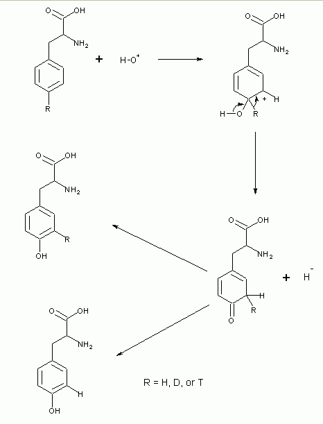

Notes on Literature of Tyrosine Hydroxylase
Structures for coenzymes of TH tetrahydropterin, 6-MPH4, and DMPH4 are shown at end of document for reference, in addition to other structures (glucocorticoids and sex steroids) referred to in the review.
Notes on nervous system physiology are found here.
(1954) J. Biol. Chem. 203, 731.
Tyrosine is converted to catechol derivatives in slices and minces of adrenal medulla and other tissues.
(1961) Acta Physiol. Scand. 53, Suppl. 183 91-101.
Catecholamine production and release in exposure and acclimation to cold
(1964) J. Biol. Chem. 239, 2910-2917.
Tyrosine hydroxylase, the initial step in norepinephrine biosynthesis
500 mg slices of tissue from whole adrenal and spleen of guinea pig were incubated 80 min in 4 ml solution containing 0.4 µmol p-bromo-m-hydroxybenzoxyamine and 400 µmol KPi, pH 6.2. l-[14C]Tyrosine added to 200,000 cpm in 20 µM final concentration. d-Tyrosine also tested, but total radioactivity was 850 kcpm. DOPA product was measured by adding TCA to 5% to tissue, spinning and putting the supnt in alumina, 0.2 M sodium acetate, and 0.2 M EDTA, adjusting pH to 8.5 with 3 n NH4OH, letting alumina settle, then moving it to column and washing with water to take off tyrosine, and eluting with 0.3 n acetic acid, then counting in Bray's. Results show that whole adrenal with l-Tyr produces 3.52 nmol/g tissue, while spleen produces 0.82 nmol/g. With d-Tyr, whole adrenal produces only 0.12 nmol/g, and spleen 0.05 nmol/g. When slices were heated 80° for 10 min before the assay, whole adrenal treated with l-Tyr produces 0.74 nmol DOPA/g, and spleen produces 0.34 nmol/g. With d-Tyr, whole adrenal makes 0.84 nmol/g and spleen 0.24 nmol/g. The heating was done in answer to previous experiments suggesting that some specific system was involved in converting Tyr to DOPA without regard to stereochemistry. In fact, these data show that there is a enzymatic hydroxylation system that is specific for the naturally occurring Tyr, and heating releases a nonspecific oxidizing system.
The tissue distribution of the enzyme was studied in many animals and tissues, particularly in tissues known to express norepinephrine. In general homogenates were prepared with a motor-driven glass homogenizer using 1 g tissue + 3 ml 0.32 M sucrose, and spinning 15,000 g for 20 min. Equivalents of 500 mg tissue from the first experiment were tested. Results show that wherever norepinephrine is found, the tyrosine hydroxylating enzyme is found in abundance: in guinea pig, this is true for both the pellet and supntnt of brain stem, as well as whole adrenal, with smaller amts in the cerebrum, even smaller in cerebellum, and negligible amts in heart, spleen, and liver. High amts were also measured in the brain stems of rat, rabbit, cow and hog. Bovine adrenal medulla was also high, but the cortex was not.
Subcellular localization was studied by graded centrifugation. TH was associated with particles sedimenting at 15,000 to 20,000 g, and not with particles sedimenting at greater than 20,000 g but less than 105,000 g, but substantial amts are present in the soluble fraction as well.
Purification of bovine adrenal medullary TH was attempted by spinning 105,000 g, adding to the spntnt ammonium sulfate to 40%, and then dialyzing the pellet. TH was unstable, and 0.1 M mercaptoethanol appeared to help. Later tetrahydrobioptern and Fe2+ were added to the assay, since they were missing and made the TH results appear unstable.
Additional substances were tested (at 100 µM) to see their effect on the activity of TH. Against a control (nothing added) of 0.05 nmol DOPA (using 2 mg purified enzyme for 15 min), tetrahydrofolate was 4.4, and DMPH4 was 33.4. Smaller degrees of activity were seen with ascorbic acid and Fe2+. Glutathione, folate, and 2,6-dichlorophenolindophenol were without significant effect. Velocity vs. tetrahydropteridine cofactor concentration curves reveal DMPH4 has a Km of 500 µM while tetrahydrofolate has a Km of 1 mM. Addition of 300 µM Fe2+ enhanced the effect of tetrahydrofolate, reducing its apparent Km. The dependence of iron was also tested in a product formed vs. iron concentration: the figure shows 0.3 µmol/ml produces the maximal effect.
The linearity of the product vs. time curve was tested at different temperatures.Linearity was maintained at 37° for only 15 min. At 21° it could last for 1 h. A velocity vs. enzyme concentration curve showed a rate linear up to 2 mg of the purified protein for the assay configuration used. Because the enzyme curve was not linear at larger amts of protein, this suggested the presence of inhibitory substances. The pH optimum was 6.0 using both an acetate and phosphate buffer; activity fell to 50% maximal at 0.5 pH on either side of the optimal pH.
Substrate specificity experiments indicate that only l-Tyr was the substrate for the enzyme. d-Tyr, tyramine, dl m-Tyr and l-Trp were either hardly hydroxylated or not at all, given the sensitivity of the method. The Km for l-Tyr was 10 µM.
Inhibition studies are shown in a table for two enzymes.
| Compound | Conc. (mM) | % Inhibition | |
|---|---|---|---|
| Brain particle TH w/ 12 µM Tyr | Purified adrenal TH w/ 100 µM Tyr | ||
| l-Phenylalanine | 1 | 92 | 60 |
| 0.1 | 78 | 10 | |
| d-Phenylalanine | 1 | — | 0 |
| 0.1 | 7 | 0 | |
| l-Tryptophan | 0.1 | 50 | — |
| d-Tryptophan | 0.1 | 0 | — |
| dl-p-Fluorophenylalanine | 0.1 | 61 | — |
| α-Methyldl-tyrosine | 0.2 | 92 | — |
| 0.02 | 59 | — | |
| α-Methyll-tyrosine | 0.1 | 86 | 60 |
| l-DOPA | 0.1 | 68 | 30 |
| d-DOPA | 0.1 | 0 | 8 |
| l-α-Methyl-DOPA | 0.1 | — | 20 |
| d-α-Methyl-DOPA | 0.1 | — | 12 |
| Dopamine | 0.1 | 56 | 38 |
| dl-Norepinephrine | 0.2 | 53 | 25 |
| d-Epinephrine | 0.1 | 47 | — |
| l-Epinephrine | 0.1 | 35 | — |
| H-22/54 (α-Propyldihydroxyphenylacetamide) | 0.1 | 84 | 67 |
| Catechol | 0.1 | 41 | — |
| Gentisic Acid | 0.1 | 33 | 15 |
| 3,4-Dihydroxybenzoic Acid | 0.1 | 55 | 28 |
| dl-Normetanephrine | 0.2 | 2 | 0 |
The identity of the product formed by the purified adrenal enzyme in the presence of an inhibitor of aromatic acid decarboxylase was studied more closely. At pH 8.5 it adsorbed to alumina and was eluted with dilute acetic acid. It could not adsorb to IRC-50 in the Na+ form but does adsorb to Dowex-50-H+ (elutes with 1 n HCl). DOPA similarly behaves with these properties. Additionally the radiolabeled product of the reaction migrated with a DOPA standard with both chromatography and electrophoresis on paper. The product also fluoresces with an excitation peak at 365 nm and emission peak at 495 nm. Careful stoichiometric studies also showed nearly 1 mol DOPA formed from 1 mol tyrosine.
Comparative studies were done with tyrosinase to distinguish the hydroxylase from tyrosinase. The brain particle TH has a optimal pH of 6.2, the adrenal enzyme 6.0, but tyrosinase is 7.0. All three enzyme utilize l-Tyr, but tyrosinase also has d-Tyr, tyramine, and particularly DOPA as substrates, while TH does nothing with these substances. The Km for tyrosine of these enzymes also differs: 600 µM for tyrosinase, but on 10 µM for TH. Tyrosinase is activated by DOPA, while TH is inhibited by it. Tyrosinase is inhibited by thiourea and diethylthiocarbamate while TH is not, and TH is inhibited by iron chelator α,α'-dipyridyl, while tyrosinase is not. Tyrosinase also results in pigment formation, but nothing with TH.
(1964) Anal. Biochem. 9, 122-126.
A rapid and simple radioassay for tyrosine hydroxylase activity
(1964) Biochem. Biophys. Res. Comm. 17, 177-183.
The role of tetrahydrobiopterin in the enzymatic conversion of tyrosine to 3,4-dihydroxyphenylalanine
(1965) Biochem. Pharmacol. 14, 837-845.
Inhibitors of purified beef adrenal tyrosine hydroxylase
A table of 17 compounds is listed as having been tried as inhibitors for TH. Nearly all Phe and Tyr analogues were inhibitory to some degree. d-amino acid forms as a group are less active than the natural form. Alpha-methyl amino acids are more potent inhibitors than unmethylated analogues. Substitution of halogen at the phenyl 3-position proved to have a strong inhibitory effect, and the mono- and diiodotyrosines were very inhibitory. The combination of an alpha-methyl group and a 3-halogenated substitution proved to have an additive inhibitory effect. Aromatic amino acids (Phe, Trp) are kinetically competitive with Tyr. Ki values for the some of the very inhibitory compounds were calculated: 3-iodo-l-tyrosine (0.39 µM); 3,5-diiodo-l-tyrosine (9.3 µM); alpha-methyl-l-tyrosine (17 µM); 3-iodo-alpha-methyl-dl-tyrosine (0.18 µM).
Although all catechol compounds tested are inhibitors, they are not very strong, and the l-isomers are typically more inhibitory than the d-forms. 3,4-dihydroxyphenylpropylacetamide (H 22/54 from Hassle) was the most potent inhibitor of its class. Lineweaver-Burk plots of this compound showed that it was not competitive with Tyr, however these compounds were competitive with either tetrahydrofolate or DMPH4. Reversal of inhibition could be achieved with either tetrahydrofolate or DMPH4. The mechanism is unlikely to be because of Fe2+ binding since 10 µM H 22/54 worked just as well in 0.1 mM Fe2+.
Although alpha-methyl-dl-tyrosine was an inhibitor, usage of large amounts of this inhibitor with large amounts of enzyme did show it was a substrate, forming alpha-methyl-DOPA (presumably only the l-form). Use of 3-131I-tyrosine and the labeled 3,5-diiodo allows for determination activity causing release of halogen; the results show insignificant liberation.
(1965) J. Pharmacol. Exp. Ther. 148, 1-8.
Elucidation of the rate-limiting step in norepinephrine biosynthesis in the perfused guinea pig heart
Hartley guinea pig hearts were rigged for single-pass perfusion and hearts were homogenized at the end of the exp. to assess content of various chemical compounds. The use of radioisotopic precursors of Tyr, DOPA, and dopamine allow calculation of the rate of synthesis, among other parameters.
First the rate of perfusion was found to affect the content of norepinephrine (NE). Increasing the rate of perfusion from 5 ml/min to various points between a maximum of 15 ml/min results is a decrease of NE content of 1.6 and decreasing to 0.7 µg/g (hearts were perfused 60 min). Because of this effect, which was to be minimized as a factor in other variables, perfusion rates in other experiments was 5-7 ml/min.
Use of 20 µM tyrosine in the perfusion medium showed a constant rate of NE formation over the incubation period. Concentration below 8 µM tyrosine do not produce meaningful NE formation determinations, since endogenous Tyr becomes significant in diluting the labeled Tyr and can influence proper determination of results. The half-maximal rate of NE synthesis from Tyr is about 20 µM, which is in good agreement with the Km = 10 µM for the purified TH. Presence of labeled dopamine amounted to about 10% of the total radioactivity in cardiac NE.
Perfusion with labeled DOPA produced variations in the rate of labeled NE vs. DOPA dose used, unlike the Tyr dose. Double reciprocal plots of this figure yielded a straight line showing Km ~200 µM, comparable to 400 µM found for the in vitro reaction.
Perfusion with labeled dopamine was plotted as NE formation vs. [dopamine]: at the lowest dopamine concentration used, NE synthesis is appreciable, increasing linearly with ever higher dopamine concentrations. Since the study did not find saturation, it was not possible to estimate a Km, which is about 5.8 mM for the purified beef adrenal dopamine β-oxidase.
In other experiments, MAO inhibitors were used to prevent NE breakdown and were found to increase NE levels to 50-80%. The rate of tyrosine and dopamine to NE conversion was not affected by the presence of MAO inhibitors. Also, guinea pigs were given diets deficient in ascorbic acid to produce scorbutic hearts; ascorbic acid is required by dopamine β-oxidase. Such hearts were found to contain 7 mg% ascorbic acid (may be lower since the sensitivity of the assay is questionable in this range) compared to the normal 64 mg%. Despite reduced tissue levels, there was no effect on NE synthesis, no matter what labeled precursor was used in the perfusion medium.
(1965) Life Sci. 4, 1-6.
(1966) Anal Biochem. 15, 517-522.
Separation of the enantiomers of the aminonaphthyl-alanines by paper chromatography
(1966) Proc. Natl. Acad. Sci. USA 56, 1491-1496.
The regulation of norepinephrine synthesis in sympathetic nerves: Effect of nerve stimulation, cocaine, and catecholamine-releasing agents
Hypogastric nerve-vas deferens from guinea pig was prepared and maintained in a physiological medium and electrically stimulated, with responses measured on a smoked paper kymograph. Results show an increase in norepinephrine and dopamine levels measured. Formation of NE from tyrosine was not enhanced by addition of 30 µg/ml pheniprazine, an MAO inhibitor; instead NE production was reduced. 10 µg/ml tyramine also inhibited NE synthesis significantly (p < 0.05). NE synthesis was increased 45% in the presence of tyramine during nerve stimulation, somewhat (insignificantly) less than in the control group. The effects of tyramine are complex in that it is both a catecholamine-releasing agent and it is a competitive inhibitor of MAO and dopamine β-hydroxylase. It also inhibits tyrosine hydroxylation but apparently indirectly, i.e. not through TH since it is a poor inhibitor of purified TH.
Guinea pigs were injected i.p. with 1 mg/kg reserpine 2 hr before killing with the result that net formation of NE from Tyr was markedly reduced and all newly formed amine found in the medium. Nerve stimulation increased NE synthetic rate 5-fold however, exceeding that of controls. The action of reserpine is also complex since it blocks uptake of dopamine into storage vesicles where dopamine β-hydroxylase is present.
The presence of 10 µg/ml cocaine did not impair NE synthesis, but may have increased it, although not significantly. Nerve stimulation doubled NE synthesis over controls.
To explain the phenomena observed, one must take into account synthesis, storage, release, and catabolism as factors involved in drug action. The concentration of free intraneuronal NE may be the one regulating factor involved in controlling NE synthesis. Stimulation via depolarization of the nerve terminal leads to the egress of free NE and a fall in intraneuronal concentration. Cocaine prevents the reuptake of both spontaneously released NE and NE released by nerve stimulation: the drop in intraneuronal free NE leads to increased synthesis. Pheniprazine, and to a lesser extent, tyramine, induce a release of NE from storage vesicles and preserve the increased intraneuronal free NE by their MAO inhibition: this would not stimulate NE synthesis and would antagonize it even more with nerve stimulation. Reserpine prevents NE reuptake into storage vesicles but does not act as an MAO inhibitor nor cause an active release of NE from storage vesicles: the intraneuronal free NE would fall a great deal during vesicle release seen in nerve stimulation. If it is true that free NE controls the synthetic rate, artificial increases in extracellular NE should lead to reduced NE synthesis. We preincubated neurons with 3H-Tyr and then measured the presence of 3H-dopamine and 3H-norepinephrine in the presence and absence of 1 µg/ml NE, with and without nerve stimulation. In the cases where NE was present with and without nerve stimulation, the production of these two catecholamines was lower than that of the unstimulated control.
(1966) Arch. Biochem. Biophys. 116, 261-270.
A study of cellular transport with the fluorescent amino acid, aminonaphthylalanine
(1966) J. Biol. Chem. 241, 4452-4456.
A kinetic study of bovine adrenal tyrosine hydroxylase
Several Lineweaver-Burk plots are done to measure the various substrates and cofactor performance with bovine adrenal TH. First, the velocity is plotted against varying oxygen concentrations (oxygen is measured as a volume percent of the gas phase) with a constant 200 µM tyrosine and 300 µM DMPH4 (Buffer= 200 mM NaOAc, pH 6.0, + 20 mM 2-mercaptoethanol). 20% oxygen is nearly saturating while the Km = 6%. Dissolved oxygen is present as 3.93 mg/100 g water (at 25° and 760 mm Hg), corresponding to an apparent Km of 74 µM . Plots of velocity vs. varying tyrosine, each at different concentrations of DMPH4, yields a series of parallel lines which can also be observed with velocity vs. varying DMPH4 is plotted with different tyrosine concentrations as well. The equation
| v = | Vf | |||||
|
Using this equation, we find a Km for DMPH4 and tyrosine to be 500 and 100 µM, resp. This equation can be rearranged to express the reciprocal of the apparent Michaelis constant as a linear function of the reciprocal of the cofactor concentration, i.e., a plot of 1/KB' vs. 1/[DMPH4] should be a straight line, and it is.
Plots of 1/v vs. [DOPA] (a Dixon plot) were done with different concentrations of DMPH4. As DMPH4 was increased, TH inhibition was markedly reduced. A plot of 1/v vs 1/[Tyr] is also presented, by itself and with two different DOPA concentrations. The DOPA inhibition appears to be competitive with respect to changing [Tyr]. A 1/v vs. 1/[DMPH4] plot was also done, with varying [Tyr]: at high [DMPH4] but low [Tyr], the plot shows nonlinearity which is only corrected with higher [Tyr].
Fumaric acid is a product of tyrosine catabolism and known to activate dopamine β-hydroxylase. It is conceivable that such chemical changes could affect NE biosynthesis. However, there was no observed effect on TH kinetics with Na+, K+, Ca++, Cl−, and fumaric acid at 10-2 or 10−1 M. ATP, ADP and acetylcholine likewise had not affect at 10 or 1000 µM.
TH was incubated at 50° and 55° and its specific activity assessed over time of incubation. When 5 mM tyrosine or phenylalanine (also known to be a substrate) was included, there was a significantly decreased decline in the activity, indicating that these amino acids protected the enzyme.
Discussion. The kinetic data reveals that the substrates bind to TH in an obligatory sequential order rather than randomly. The steady state equation for an obligatory sequential mechanism with a quaternary complex predicts that if the concentration of the second substrate adding to the enzyme is saturating, a series of parallel lines as observed with TH is obtained in 1/v vs 1/[tyrosine] plots;since oxygen. A further consequence is that DOPA in the presence of saturating oxygen would be an uncompetitive inhibitor of either tyrosine or DMPH4. The Dixon plot and 1/v vs 1/tyrosine plot show that DOPA inhibition is noncompetitive with tyrosine and competitive with DMPH4.
In determining the kinetic mechanism, oxygen can be eliminated since it is essentially saturating under assay conditions. Its effect is similar to that of the concentration of protons in a transaminase reaction. The transaminase reaction sequence can be symbolized as:
| k1 | k3 | |||
| E + A | <===> | EA | <===> | E' + P |
| k2 | k4 | |||
| k5 | k7 | |||
| E' + B | <===> | E'B | <===> | E' + Q |
| k6 | k8 | |||
The steady state rate equation for such a reaction with respect to DMPH4, tyrosine, and DOPA is:
| v = | Vf | |||||||||||||||
|
where Q is DOPA, B is tyrosine, A is DMPH4, E is the oxidized form of the enzyme, and E' is the reduced form. This equation accurately predicts the series of parallel lines observed. It predicts that DOPA will be a competitive inhibitor of DMPH4 and a noncompetitive inhibitor of tyrosine. Using this equation we determine the Km for 500 µM for DMPH4 and 100 µM for tyrosine. The dissociation constant for tyrosine is k6/k5 which is 2 mM and for DOPA (k8/k7) is 2 mM.
(1966) J. Pharmacol. Exp. Therap. 158, 373-377.
Increased synthesis of norepinephrine in the intact rat during exercise and exposure to cold
(1966) Biochem. Biophys. Res. Comm. 25, 253-259.
The production of meta-tritiotyrosine from p-tritiophenylalanine by phenylalanine hydroxylase
This lab has shown that tyrosine with substantial amounts of deuterium is the product of a bacterial phenylalanine hydroxylase (PAH) when the substrate is para-deuterophenylalanine. That is, the para-substituent moves to another part of the molecule rather than be separated from it. Para-tritiophenylalanine was prepared by treating p-chlorophenylalanine with 3H2O in the presence of Pd/CaCO3 catalyst in alcoholic KOH. (This method works in the preparation of p-deuterophenylalanine from p-bromophenylalanine as well.) The [p-3H]phenylalanine was purified using paper chromatography with isopropanol:NH3:H2O (8:1:1) solvent, which particularly removes contaminating traces of tyrosine. A purified activated PAH from Pseudomonas or one from rat (an ammonium sulfate fraction) were used. Conversions were 120 min at 30° in air using 600 µM 6,7-dimethyltetrahydropteridine, 100 mM Tris, pH 7.3, and 4 mM carrier l-Phe. Reactions were stopped by immersion in boiling water for 2 min. Following centrifugation supernatants were developed on paper by chromatography using solvent above. Tyrosine was eluted from the paper and then counted, and total Tyr determined by nitrosonaphthol methd. 40% of Phe is converted to Tyr, and the specific radioactivity of Tyr was about 70% of the substrate specific radioactivity with both enzymes.
The product radiotyrosine was also incubated with purified adrenal TH , and equal amts of radiolabel were found in DOPA and in water. This was also found using [3,5-3H]tyrosine. If the meta-location of tyrosine is radiolabeled, one expects equal amts of label in DOPA and in the water. The indication is that hydroxylation of Phe means that the para-substituent of Phe moves to meta-positions in Tyr product.
Tyrosine from the PAH reactions was iodinated by N-iodosuccinimide using the Oswald reaction, in which iodination occurs on meta-positions of phenols like Tyr (an 80% yield is usually obtained). Reaction mixtures are acidified and passed over Dowex-50. Tritium released by iodination is estimated by counting water passing through the column. Results show most radioacitivity is released by the iodination reaction. As a control, [3,5-3H]tyrosine behaves during iodination in the same manner.
Based on this data, a mechanism is proposed by which hydroxylation of phenylalanine occurs:

This mechanism accounts for why half of any isotope of hydrogen would remain on the substrate molecule in the product, and why half would become part of the solvent. A slight isotopic mass effect would be expected, especially for hydrogen isotopes.
(1966) Mol. Pharmacol. 2, 95-105.
Evaluation of the Biochemical Effects Produced in Vivo by Inhibitors of the Three Enzymes Involved in Norepinephrine Biosynthesis
Hartley guinea pigs (230-260 g) fasted the night before to limit tyrosine. Animals were givem drugs IP and radiolabled tyrosine was injected IV.
Tyrosine is known to rapidly equilibrate with the pool in tissues when injected, maximal labeling of catecholamines occurring in 2 h. The rate of labeling should be dependent upon the endogenous tyrosine. Inhibitors to the three enzymes in the pathway were injected into animals 30 min before injection of radiotyrsoine and the animals sacrificed at 90 min after the tyrosine. Inhibitor of TH injected were α-methyltyrosine (100 mg/kg) and α-methylphenylalanine (200 mg/kg). Inhibitors of DOPA decarboxylase were α-methyl-dl-dopahydrazine (α-MDH) and 3-hydroxy-4-bromobenzyloxyamine (NSD-1055) (200 mg/kg). Dopamine β-oxidase is inhibited by NSD-1055, benzyloxyamine (BOA) (200 mg/kg), and antabuse (400 mg/kg). Only the TH inhibitors actually lowered the norepinephrine and dopamine content of the brain; there was no effect on total levels of NE in heart or spleen, or epinephrine in the adrenal gland.
Distinct from measuring total levels, differences in radioactivity between treated and the control were measured (as a percent reduction) when [U-14C]tyrosine was injected as a precursor. α-methylTyr had shut down the radiolabeling of catecholamines in all tissues (>90% reduction in labeling), and α-methylPhe reduced radiolabeling by just over half (55-869% reduction). Being both a DOPA decarboxylase and dopamine β-oxidase inhibitor, NSD-1055 caused very significant (70-80%) reduction in NorEpi of heart and spleen, DA of brain, and Epi of adrenal, but no effect at all in brain NorEpi.
[3H]DOPA was injected as a radiolabel precuror instead, and the effect of the inhibitors measured. Because labeled DOPA is used, one expects no effect of inhibition from TH inhibitors. There was, in fact, a major increase in radiolabel incorporation in the catecholamines of tissues when TH is inhibited: this is because the radiolabeled DOPA becomes a significant fraction of total DOPA since no new DOPA is synthesized, and the exogenous DOPA is the radioactive source. The use of inhibitors of DDC and DBH clearly had an effect to reduce radiolabel incorporation. NSD-1055 had a large effect. BOA, which did not have any effect on reducing with radiotyrosine, did reduce label significantly in all but adrenal Epi.
The specific radioactivity of tyrosine and DOPA were evaluated to see if there were any dilutional changes. For tyrosine values ranged from 140,000-180,000 cpm/µmol in hearts and 200,000-240,000 cpm/µmol in brains. With α-methylTyr inhibition, specific radioactivity was not measurable because of fluorescence interference. Tyr specific activity was slightly higher in hearts and brains of α-MDH-treated animals.
α-MethylTyr can inhibit TH and deplete the tissues of catecholamines. However it can be metabolized to α-methyldopa, and this can deplete tissues by a different mechanism involving conversion to false transmitter α-methylnorepinephrine. Animals dosed with inhibitor were sacrificed at various time intervals and the amount of tyrosine and α-methylTyr evaluated. Minimal levels of catecholamines as a percent of normal were reached in 8-16 h, and climbed back to normal about 36 h. Calculations were made based on what was known for the Km and Ki for tyrosine substrate and the inhibitor for both brain and heart tissues, and these correlated very well with the measured levels, as shown by plots of %catecholamine synthesis in vivo vs time for both tissues.
Animals were given [3H]α-methyltyrosine and then sacrificed at intervals from 0 to 48 h. Tissues were isolated and α-methylnorepinephrine added as nonradioactive carrier for tracking this amine by paper chromatography. The time of the rise and fall of α-methylnorepinephrine and of α-methylTyr, as well as the stoichiometry of these substances, did not match the changes seen in catecholamines. Thus, α-methyldopa and -methylnorepinephrine do not factor in catecholamine changes.
(1966) Biochem. Biophys. Res. Comm. 25, 504-512.
Enzymatic conversion of 5-tritiotryptophan to 4-tritio-5-hydroxytryptophan
[5-3H]Tryptophan was prepared as a substrate for kinetic studies on its hydroxylation to produce 5-hydroxytryptophan (5HTP). This could be done by using 5-bromo-dl-tryptophan and reducing it with tritium gas, then purifying using a Beckman-Spinco Model 120 amino acid analyzer (0.95 x 52 cm PA-28 column eluting with 0.2 M citrate pH 4.2).
It was expected that release of tritium to water would match hydroxylation. However enzyme from neoplastic mast cells showed that tryptophan hydroxylation measured by a colorimetric procedure was 4-20 times greater than release of tritium.
In determining the position of tritium in the indole ring, several techniques were used. The tritiated Trp was brominated with 2-3 equivalents of N-bromosuccinimide in acetate, pH 5.0. Hydrogen at the 2 and 5 positions are displaced, and there is an 87% loss of label in the product. Work elsewhere shows that [5-3H]Trp conversion to actinomycin by Streptomyces antibioticus results in 80-90% of radioactivity being located in the 4 or 5 positions. Deuterated Trp prepared in the identical manner was assayed by 1H-NMR and at least 90% of 2H was found at the 5 position.
[4-3H]-5-Hydroxy-dl-tryptophan was prepared by dissolving 4.4 mg (20 µmol) of 5-hydroxy-dl-tryptophan in 0.3 ml of 30 mCi 3H2O and 0.2 ml DMF with 20 µL triethylamine, then heating the solution for 3 h in a sealed tube under nitrogen at 65°. The reaction was diluted and lyophilized, and the product further prepared by paper electrophoresis in pyridine adjusted to pH 6.5 with acetic acid; the zone was extracted with water and lyophilized. Tryptophan hydroxylase was prepared from mouse neoplastic mast cells suspended in equal volume 50 mM TrisHCl, pH 6.8 with 10 mM mercaptoethanol and 0.25 mM ferrous ammonium sulfate, which were passed through French press and the homogenate centrifuged at 100,000 g for 60 min, with the 60% ammonium sulfate fraction of the supernatant used. To isolate [5-3H]hydroxytryptophan, 1.5 ml 10% ZnSO4 and 1.5 ml 1 n NaOH were added to 5 ml reaction mixture and the precipitate removed by spinning. Supernatant is adjusted to pH 3.5 with acetic acid and passed through Dowex-50 with pH 3.2. Resin is washed, and amino acids eluted with 0.35 M citrate, pH 5.2. Eluate is lyophilized and inorganic salts removed with ethanol-acetone-water (1:10:1) at 0°. After evaporation amino acids are separated on 0.9 x 25 cm PA-35 column mounted on Beckman-Spinco 120C amino acid analyzer using a 0.35 M citrate, pH 5.2 eluent. 5-Hydroxyindoles and Trp can be measured fluorometrically.
Three experiments with mast cell enzyme and [5-3H]Trp were done. 5HTP was measured colorimetrically and showed 150, 120, and 140 µmol. However, the yield of 3H2O was only 8, 11, and 33 µmol, resp., from those experiments, meaning only 5-20% of tritium was released. Separation of product from substrate by ion-exchange chromatography indicated most of radioactivity was with the 5HTP product, and that without enzyme and cofactors, it was with unconverted substrate. Hence, tritium is not being released during hydroxylation. Treatment of 5HTP with 10% TCA for 4 h at RT shows most of radioactivity has been lost from 5HTP, and tritium was found in high levels in water.
It has been demonstrated that the hydrogen in the 4-position of 5HTP is labile and exchanges in acidic solution with the medium. 5HTP formed from enzymatic hydroxylation of [5-3H]Trp and [4-3H]5HTP prepared synthetically were compared kinetically for the extent of reaction producing released tritium under a variety of conditions. At 60 min in 10% TCA, both released 100% of tritium. In 0.1 N sulfuric acid for 10 h, the synthetic cmpd released 83%, the enzymatic 78%. In KCl-HCl at pH 1.2 for 10 h, both released 72%. For 4 h at pH 2.5 to 9.0, both released < 10%. At 0.8 N ammonium hydroxide for 60 min, both released 66% of label. And in 0.1 N sodium hydroxide, the synthetic released 68% while the enzymatic released 60%. Hence, the enzymatic product is likely to be identical to the synthetic product. A mechanism for the retention of tritium to the product is given below.
A hydroxide cation adds to the 5 position in I to make II. If there is not a concerted action which combines a substituent shift to 4 with simultaneous loss of its substituent such that II goes to IV, then the intermediate at III is likely. From III there is either a stereospecific removal of hydrogen or there is a very signficant isotope effect.
(1966) Life Sci. 5, 1071-1075.
Acceleration of noradrenaline biosynthesis by nerve stimulation
(1966) Harvey Lect. 60, 57-83.
Biosynthesis of the sympathetic neurotransmitter, norepinephrine
(1967) Annu. Rev. Biochem. 36, 171-184.
Pteridine cofactors
Folic acid derivatives have been the only known pteridine compounds so far known to be involved on oxidoreduction and one-carbon transfer reactions. However, unconjugated pteridines have now been shown to be involved in Phe to Tyr catalysis. The pteridine ring system consists of a fused pyrimidine and pyrazine ring system (pyrimido [4,5-b]pyrazine). Naturally-occurring
(1967) Arch. Biochem, Biophys. 120, 413.
Intramolecular migration of deuterium and tritium during enzymic hydroxylation of p-deuteroacetanilide and p-tritioacetanilide
(1967) Arch Biochem Biophys 120, 420-437.
Phenylalanine as substrate and inhibitor of tyrosine hydroxylase
(1967) Biochem Pharmacol 16, 1313-1321.
A new class of tyrosine hydroxylase inhibitors and a simple assay of inhibition in vivo
(1967) Arch Biochem Biophys 122, 218-223.
Hydroxylation-induced migrations of tritium in several substrates of liver aryl hydroxylase
5-Tritiosalicylic acid (127 kcpm/µmol) was incubated with rabbit liver microsomes and hydroxylated. The gentisic acid product showed a specific radioactivity of 5630 cpm/µmol, indicating 4.4% of label wasretained. N-acetyl-[3,5-3H]tyramine (11,800 dpm/µmol) was hydroxylated to N-acetyldopamine, then O-methylated to N-acetyl-3-O-methyldopamine in the presence of microsomes and [14CH3]-S-adenosylmethionine (4000 dpm/µmol). The product methyl-dopamine had specific tritium of 5200 dpm/µmol and a specific carbon-14 of 4000 dpm/µmol. Hence the methylation was not done by any other methylating agent other than S-adenosylmethionine, but half the tritium was lost.
Retention of label of label during hydroxylation is pH-dependent. Rat and rabbit liver microsomes yielded the same results in experiments conducted at pH 7.0 or 8.0. The retention was always greater at the lower pH.
Tritiated aniline and acetanilide were also compared for retention. With aniline, only 12% of label is retained during hydroxylation, but with the acetanilide, half of the label is retained.
The ring hydroxylation of amphetamine by liver microsomes has not been reported, although Axelrod reported that a liver microsome enzyme oxidatively deaminates amphetamine to form phenylacetone. [4-3H]Amphetamine (3.95 Mcpm/µmol) was incubated either with rabbit or rat liver microsomes, but only trace amts of a p-hydroxyamphetamine were found: 0.002% at pH 7 in phosphate with rat liver. Multiple incubations were pooled and the specific activity found was 2.86 Mcpm/µmol, about 80% retention. Much large amts of another product nonhydroxylated were obtained, which had the chromatographic characteristics of [4-3H]phenylacetone. When administered to rats in vivo however, 4-hydroxyamphetamine was the major metabolite, with a specific tritium of 3.6 Mcpm/µmol, meaning 91% retention. The radioactivity accounted for 30% of the total administered.
These studies demonstrate a novel mechanism in electrophilic aromatic substitution, featuring a ring substituent migration now called the "NIH shift." Such shifts occur only in the environment of the enzyme, if they occur at all. The ability of the cationic intermediate to stabilize the charge via resonance and the availability of nonbonded electron pairs will dictate whether migration/shift is favored, or whether the final product requires loss of label without shift.
(1967) Science 157, 1524-1530.
Hydroxylation-induced migration: the NIH shift. Recent experiments reveal an unexpected and general result of enzymatic hydroxylation of aromatic compounds
It has been shown that enzymatic oxidation of 3,4-dimethylphenol forms 4,5-dimethylcatechol in which oxygen comes directly from O2 and not H2O, which contrasted with current theory suggesting oxygen had no role. In classical organic chemistry, addition of a cationic substituent to an aromatic ring involves electrophilic substitution of the substituent at the same position. In the enzymatic system, the substituent hydrogen atom appears to be shifted to an adjacent carbon on the ring, a shift called the "NIH shift."
[4-2H]-dl-Phenylalanine was prepared from 4-bromo-dl-Phe by reductive deuteration. Deuterated product was degraded to benzoic acid, and the position of 2H at the 4-position confirmed by NMR, showing an A2B2 pattern in the spectrum. A mass spectrum of [4-2H]-dl-Phe also confirmed a single deuterium atom per molecule. The deteurated Phe was used as substrate for bacterial phenylalanine hydroxylase, and the tyrosine product isolated. 60-70% of 2H was found in the Tyr product. Studies with tritiated Phe showed similar results.The tritiated Tyr was purified and then used as a substrate to tyrosine hydroxylase: about half the tritium was found in the water, and half in the product DOPA. When tritiated Tyr was treated with N-iodosuccinimide, which exhaustively iodinates the ring para to the hydroxyl group, all of the tritium was removed from the ring and found in the solvent. Hence the hydrogen isotopes at the 4-position shift to the 3-position rather than be substituted.
When [3,5-3H]Phe is subjected to PAH, a tyrosine product shows the same specific radioactivity as the substrate, meaning there is no loss of tritium from the ring. 4-Chlorophenylalanine is also hydroxylated by PAH, but forms three different products. 85% (Most) is 3-chlorotyrosine (3-chloro-4-hydroxyphenylalanine), indicating a shift of the chlorine atom to the 3-position. 10% is just tyrosine, in which an expected electrophilic aromatic substitution actually occurs, with loss of the Cl atom. Less than 5% is 4-chloro-3-hydroxyphenylalanine, in which hydroxylation occurs, but at the 3-position, while the 4-position chlorine is not substituted at all (there is probably an intermediate cation, but the shift is the hydroxyl rather than the chlorine atom). Note that studies with 4-fluoroPhe show total conversion to tyrosine, with total substitution of the F atom; with 4-bromoPhe, however, three products are similarly formed as when the halogen is chlorine.
With hydroxylation of tryptophan by tryptophan hydroxylase, at least 85% of the tritium is retained but in the 4-position when the substrate is [5-3H]Trp. Note it is to the 4- and not to the para 6-position! When [4-3H]Trp is the substrate instead, there is also no loss of tritium. The shift from the 5-position almost certainly occurs, but a signficant isotope effect determines with hydrogen isotope leaves the 4-position.
Acetanilide labeled with deuterium or tritium at 4-position and used as a substrate for rabbit liver microsomal aryl hydroxylase produces an acetanilide hydroxylated at 4-position and with the label shifted to 3-position in 15% of product for 2H-labeled and 45% for 3H-labeled. The amount of label lost to the medium was heavily dependent on the pH of the reaction, with retention higher when the pH was lower. For example, retention of tritium was 67% at pH 6.2 and 37% at pH 9.0. This was true whether the oxygenase was from rat or rabbit liver microsomes. The shift was also dependent directly upon enzyme action: unconverted substrate retained its label at the 4-position, indicating no shift resulting from nonenzymatic side effects. Moreover, the substrate retained its original specific radioactivity. Use of 3,5-labeled acetanilide confirmed results with 3,5-labeled Phe: hydroxylation at 4-position results in no loss of label at either 3- or 5-position.
Other substrates were tried with the liver aryl oxygenase, which has a broad substrate specificity. [4-3H]amphetamine retains in its hydroxylated product 90% of label. On the other hand, [5-3H]salicylic acid conversion to gentisic acid and N-acetyl-[3,5-3H]tyramine to its hydroxylated product retains little to no tritium. Living rats were administered [4-3H]amphetamine and the [4-3H]acetanilide, and the hydroxylated glucuronides were recovered, which possessed 90% and 38%, resp., of the substrate's original specific radioactivity. With TH, [3,5-3H]tyrosine is converted DOPA that has half the specific radioactivity, meaning that one tritium molecule has been lost. When [4-3H]tyrosine is used, all the DOPA retains the label.
The action of enzymatic hydroxylation is not limited to hydrogen atom shifts. Whole alkyl side chains are observed to shift, such as the conversion of 4-hydroxyphenylpyruvic acid to homogentisic acid by its oxidase.
Nonenzymatic EAS with labeled aromatic ring substituents never involves the shifting seen in the enzymatic hydroxylation. Bromination, nitration, diazonium coupling, and Friedel-Crafts akylation and acylation all show the label being lost. Other conditions can cause a shift however. At elevated temperatures, aluminum halide-mediated reaction can cause shift of halogens: chlorine and bromine migrate, but fluorine does not. 4-substituted phenols subjected to oxidation by Caro's reagent (a source of HO+ cations) or with Pb(OOCCH3)4 can produce hydroquinones substituted at the 2-position: here electrophilic agents contain an unshared electron pair which is available to stabilize the charge formed in the transition state. Oxidation of prehnitene (1,2,3,4-tetramethylbenzene) with trifluoroperacetic acid (a source of HO+ cations) in presence of BF3 results in methyl group shift:
The methyl shift is to either position para to the carbon-oxygen bond in the ring, although one expects a more favorable production of II over I due to steric effects and oxygen electronegativity.Various other oxidation systems, including the Hamilton (JACS 88: 5266, 1966) system of H2O2 and catalytic amts of catechol and Fe2+, or the Fenton with H2O2 with EDTA and Fe2+ (Breslow & Lukens, JBC 235: 292, 1960) or Udenfriend (JBC 208: 741, 1954) with ascorbic acid, Fe2+, and O2, show that hydroxylation without retention (shift) occurs.
In a concerted substitution of neighboring hydrogen with label shift, the enzyme is a necessary participant, providing the environment for the NIH shift via an enzyme side chain that provides a basic and possibly anionic group that abstracts the hydrogen on the adjacent carbon on the ring (see left-side figure below). Experiments with [3,5-3H]Phe, [4-3H]Trp, and [3,5-3H]acetanilide argue against this mechanism however, since label at this position would necessarily be abstracted, and this is not observed.
With a cyclohexadienyl cation intermediate, the tritium (label) is at the 3-position, whether the tritium shifts there from the 4-position or is there originally. Hence retention of tritium during re-aromatization depends on the strength of the carbon-tritium bond relative to a carbon-hydrogen bond.
Retention vs. loss of label largely depends on how the cationic charge can be stabilized, and whether migration serves that ability. For 5-tritiosalicylic acid, a para-quinoid intermediate is favored because the 2-hydroxyl group can tautomerize to a keto form: the tritium would not migrate since an intermediate with good resonance/conjugation would be disrupted. Ultimately tritium loss would be favored. With 4-tritioacetanilide, the para-nitrogen provides a nonbonded base pair for resonance of the intermediate, but suffiicient electron density is sufficient to stabilize the cationic charge ortho to hydroxylation, and so migration-with-retention is favored about half the time.
With 4-tritioPhe or 4-tritioamphetamine, there is no oxygen or nitrogen to contribute a nonbonded pair in resonance stabilization and which might hinder migration. The cationic charge is better stabilized by migration when alkyl side chains form other substituents to the ring, as with these substances. This is why tritium is retained as a result of the migration.
Why do nonenzymatic reactions differ with respect to products and the proportions in which they occur. A good example is what happens with hydroxylation of 4-chlorophenylalanine. The enzyme may alter the kinetics by which one intermediate is formed over another, even before the hydroxyl cation attack. In a nonenzymatic environment, atoms are left to themselves to behave according to their electronegativity and their ability to contribute nonbonded valence electron pairs to provide energy minima. Enzymes provide atoms with electronegativities and nonbonded pairs which temporarily become part of the molecule and the reaction. The reaction scheme shows that hydroxylation of 4-chloroPhe can form at least 4 different products, with one essentially identical to the substrate (although the intermediate was hydroxylated). The uncatalyzed reaction proceeds along one path (or perhaps all possible products), while the catalyzed kinetically favors/promotes another.
(1967) Mol. Pharmacol. 3, 549-555.
End-product inhibition of tyrosine hydroxylase as a possible mechanism for regulation of norepinephrine synthesis
(1968) Hoppe-Seyler Z. Physiol. Chem. 349, 1600-1604.
Intramolecular migrations of aryl substituents during enzymatic hydroxylation
The NIH shift of para-substituents to adjacent positions has been shown for both enzymatic and nonenzymatic hydroxylations. This shift occurs for any hydrogen isotope, the halogens chlorine and bromine (but not fluorine), and for methyl substituents through the action of phenylalanine hydroxylase (PAH). PAH from either Pseudomonas or mammalian liver can hydroxylate 4-methylPhe to two major products: 3-methyltyrosine, where the alkyl shift is evident, and 4-hydroxymethylphenylalanine, in which the alkyl substituent is directly hydroxylated. There are also other examples of alkyl hydroxylation by aryl oxygenases. Migrations do not occur with chlorine or fluorine in 4-haloacetanilides treated with rabbit microsomes. Migrations have been reported in chloro and bromo forms of 4-haloacetanilides in benzpyrene-treated rat microsomes. When alkyl substituents are halogenated (4-trifluoromethylPhe), migration of alkyl group does not occur.
Studies with [4-2H]chlorobenzene show several products.One product is [2-2H]-4-chlorophenol in which 54% of D is retained and the shift occurs. Another is N-acetylmethionine (from S-adenosylmethionine methylation) in which only 2% of D is retained, and no shift is likely. A 4-chlorocyclohexadiene-trans-1,2-diol will lead to aromatization with no migration and loss of label to form 4-chlorocatechol, which can be methylated to 4-chloro-2-methoxyphenol, still missing label. However, if the cyclohexadienediol is treated with 1 n HCl at 100°, the hydroxyl can be induced to leave, and a migration of the D label to the 2-position occurs 23% of the time.
(1968) Biochem Pharmacol 17, 31-36.
Hydroxylation of alkyl and halogen substituted anilines and acetanilides by microsomal hydroxylases
(1968) J. Clin. Invest. 47, 568-576.
Metabolism of alpha-methyltyrosine in man: relationship to its potency as an inhibitor of catecholamine biosynthesis
(1968) J. Neurochem. 15, 489-497.
Biosynthesis of ribonucleic acid in rat brain slices
(1967) J. Med. Chem. 10, 64-66.
(1968) J. Biol. Chem. 243, 743-748.
Studies on tyrosine hydroxylase from bovine adrenal medulla
A small amount of medulla was homogenized and centrifuged at ultraspeeds in sucrose. 90% of the activity was recovered in the particulate portion of the centrifuged homogenate. Attempts at solubilizing the particulate activity with acetone powdering were not successful although no activity was lost with a variety of extraction methods, such as use of butanol, sonic oscillation, repeated freezing and thawing, detergents, lipase, or DNase. Trypsin treatment of the acetone powder or particulate material did liberate the enzyme, although it requires an optimal concentration of trypsin since too much cause inactivation (3.7 µg trypsin to 1 mg particulate protein is optimal).
Purification of the enzyme was done as follows: glands were harvested and stored frozen at -70°, which could be done for several months easily. Glands were homogenized in a VirTis blender in 0.25 M sucrose and filtered through cheesecloth. The homogenate was spinned at ultra high speeds and the particulate recovered. The particulate is washed with 0.1 M phosphate, pH 6.5 and re-centrifuged at ultra high speed. The second particulate was solubilized in 0.2 M phosphate, pH 6.5 and this was subjected to trypsin treatment. After termination with trypsin inhibitor and overnight storage at -70°, the digest was centrifuged and the supernatant collected. Fractionation with ammonium sulfate between 25% and 45%, followed by resuspension in 20 mM phosphate buffer, dialysis in same, and then another ultra high speed spin completes the preparation.
Characterization of the enzyme included looking at the presence of reducing agents, in which 2-mercaptoethanol had already been shown to be necessary. Ascorbic acid was 25 times more effective in the same amount than mercaptoethanol, but at very great concentrations it inhibits the TH. Also ascorbic acid contributed significantly to a high background. Use of ascorbic acid did not eliminate the need for pteridine cofactor or FeSO4 (used in these reactions). Use of NADPH and pteridine reductase as shown to substitute for mercaptoethanol and for iron. This particular use was inhibited by the iron chelator α,α´-dipyridyl.
Other metal salts (MgSO4, ZnSO4, CaCl2, MnCl2, CdSO4, (CH3COO)2Cr, CuSO4, NiSO4, BaCl2, (CH3COO)2Co, or (CH3COO)2Pb) were tried in equimolar amounts and gave no activation. 15 µM FeSO4 was sufficient to cause half-maximal activation (max. at 500 µM). Including Fe3+ salt in the assay did not affect the measurement of TH activity, although preincubation of the enzyme with this salt did cause inactivation, whether Fe2+ was also present or not. Incubation with Fe2+ not only prevented inactivation in the acetate buffer, but resulted in a higher activity.
Sulfhydryl reagents could be used to see the dependence of Fe2+ binding to sulfhydryl amino acids. Mercaptoethanol is replaced by ascorbic acid for the purpose of assay. With HgCl2, 5,5'-dithiobis(2-nitrobenzoic acid), and N-ethylmaleimide there is almost complete inhibition. Addition of Fe2+ did not prevent the action of these reagents. Other inhibitors of TH were tested: as previously reported, tyrosine analogues (3-iodo-l-tyrosine, alpha-methyltyrosine) were competitive with tyrosine and the catechols and their analogues (norepinephrine, epinephrine, alpha-propyldihydroxylphenylacetamide) were competitive with the pteridine cofactor.
(1968) J. Pharmacol. Exp. Ther. 160, 61-71.
The effect of nerve stimulation on the synthesis and metabolism of norepinephrine in the isolated guinea-pig hypogastric nerve-vas deferens preparation
(1968) Arch. Biochem. Biophys. 126, 593-598.
Isotope studies on the mechanism of action of adrenal tyrosine hydroxylase
Tyrosine hydroxylase not only catalyzes mono-oxidation of tyrosine at the 3-position to form DOPA. It also can oxidized Phe at the 4-position to make tyrosine itself. It has been demonstrated that enzymatic hydroxylations are accompanied by "NIH shifts" where 4-substituents migrate to adjacent positions on the ring. The action of TH on a Tyr substrate may not in fact be directed to the 3-position, but instead to the 4-position (as with Phe as substrate), in which the 4-OH group already present migrates to 3-OH as part of the cationic intermediate.
RESULTS. Phe was treated with phenylalanine hydroxylase (PAH) in the presence of 18O2. The Tyr product contained a 59.0 atom-percent excess of the oxygen-18 isotope in the phenolic oxygen. Leakage from the flask occurred during the incubation, and the 18O content could only be estimated to have a mean value of 80 atom-percent excess, and the amount in Tyr is significantly lower. Oxygen was unlikely to come from water since other work with H218O shows no incorporated isotope. At any rate, it is not necessary to explain this dilutional effect to support the main hypothesis of the work.
Incorporation of 18O into DOPA from the action of TH is seen to be lower than expected on the basis of atom oxygen-18 excess in the precursors. Unreacted Tyr was purified after incubation and found to contain the original 59 atom-percent excess. The DOPA was enzymatically methylated at the 3-position and decarboxylated to produced 3-methoxytyramine. This was then subjected to periodate oxidation to methanol and dopachrome. The methanol could then be subjected to mass spectrometry. The data on oxygen-18 atom-percent excess indicates that the oxygen at the 3-position comes strictly from the O2 during the reaction, and that none comes from the 4-OH group. Hence there is no NIH shift.
(1968) Mol. Pharmacol. 4, 457-464.
Increased synthesis of catecholamines in the intact rat following administration of alpha-adrenergic blocking agents
(1968) Hoppe Seylers Z Physiol Chem. 349, 1600-1604.
Intramolecular migrations of aryl substituents during enzymatic hydroxylation
(1968) J Am Chem Soc 90, 6525-6527.
The role of arene oxide-oxepin systems in the metabolism of aromatic
substrates
3. Formation of 1,2-naphthalene oxide from naphthalene by liver
microsomes
(1969) J. Pharmacol. Exp. Ther. 169, 74-79.
Increase in tyrosine hydroxylase activity after reserpine administration
(1969) Nature (Lond.) 221, 1264-1266.
Increased tyrosine hydroxylase activity after drug-induced alteration of sympathetic activity
(1970) Nature (Lond.) 228, 861-862.
Induction of tyrosine hydroxylase in peripheral and central adrenergic neurons by cold exposure
(1970) Ann. Rev. Pharmacol. 10, 273-290.
Regulation of norepinephrine biosynthesis
(1970) Biochem. Pharmacol. 19, 1189-1199.
The effect of insulin on the catecholamine content and tyrosine hydroxylase activity of cat adrenal glands
(1970) Meth. Enzymol. 17A, 609-615.
(1970) Mol. Pharmacol. 6, 350-356.
Increased conversion of tyrosine to catecholamines in the intact rat following elevation of tissue tyrosine hydroxylase levels by administered phenoxybenzamine
(1970) Mol. Pharmacol. 6, 85-94.
Immunofluorescent localization of dopamine beta-hydroxylase in tissue
(1970) Adv. Enzyme Regul. 9, 145-165.
Regulation of norepinephrine synthesis
(1970) Biochemistry 9, 147-156.
1,2-naphthalene oxide as an intermediate in the microsomal hydroxylation of naphthalene
(1971) Mol. Pharmacol. 7, 136-146.
Different molecular forms of bovine adrenal tyrosine hydroxylase
(1971) Proc. Natl. Acad. Sci. USA 68, 1598-1602.
Selective induction by nerve growth factor of tyrosine hydroxylase and dopamine β-hydroxylase in rat superior cervical ganglion
(1971) Mol. Pharmacol. 7, 569-580.
Isolation and characterization of a tyrosine hydroxylase cofactor from bovine adrenal medulla
TH was prepared from bovine adrenal medulla by the method of Nagatsu et al. The assay system was adjusted since the concentrations of DMPH4, while saturating, were far above the physiological range reported. A NADPH-sheep liver dihydropteridine reductase system is used to regenerate the reduced cofactor necessary for the reaction. Various amounts of reductase were incubated with two different levels of DMPH4 cofactor over a 2 h period. With reductase added, DOPA formation increases 100% in 30 min and 350% in 60 min.
Bovine glands were obtained and extracted in a blender in 4 vols water, and an equal volume of boiling water added to the homogenate, allowing the mixture to remain >90° for 5 min. Some homogenates were brought to 3% TCA, and TCA was routinely used when it was discovered that the amount of cofactor present was not affected by TCA addition. Denatured material is centrifuged and the remaining steps carried out in the dark (or subdued light) at 3-5°. The pH of the yellow supntnt. was adjusted to 5.0 with 1 N sulfuric acid and loaded on to a 4 × 20 cm Florisil (60/100) column. The column was rinsed with 3% acetic acid (1 L), then water (1.5-2 L). Pterins were eluted with 20% acetone at a low flow rate. A fluorescence spectrum consistent with 6-alkyl-substituted pterins was observed in the eluate.
The eluate was applied to a 2 x 10 cm Dowex 50-X8 (H+) column, which was rinsed with 250 ml water, 250 ml of 0.05 N HCl, 250 ml water, then finally 0.05 M ammonium hydroxide. The ammonium hydroxide fractions were further prepared with descending paper chromatography (on Whatman No. 3MM) and analyzed by same (Whatman No. 1). Initial studies showed revealed the presence of 4-6 spots on chromatograms, all exhibiting a blue fluorescence (450 nm). After catalytic hydrogenation, 4-6 other bands showed no cofactor activity. These spots were all the cofactor in various oxidation states.
[There is more to this article concerning the physicochemical properties of the TH cofactor.]
(1971) Mol. Pharmacol. 7, 593-604.
Potassium-induced acceleration of catecholamine biosynthesis in brain slices. I. Study on the mechanism of action
(1971) J. Biol. Chem. 246, 1330-1340.
Solubilization and partial purification of tyrosine hydroxylase from bovine adrenal medulla
(1971 J. Pharmacol. Exp. Ther. 177, 155-168.
Subcellular distribution and aggregation of bovine adrenal tyrosine hydroxylase
(1971) Anal. Biochem. 43, 588-608.
Assay of tyrosine hydroxylase by the coupled decarboxylation of DOPA formed from 1-14C-l-tyrosine
(1971) in Methods of Biochemical Analysis, , supplemental volume, (D. Glick, ed.), Interscience, New York, 153-182.
Assay of enzymes of catecholamine biosynthesis and metabolism
(1972) J. Biol. Chem. 247, 3114-3122.
Regulatory properties of soluble and particulate rat brain tyrosine hydroxylase
(1972) J. Neurochem. 19, 131-137.
Allosteric activation of hypothalamic tyrosine hydroxylase by ions and sulfated mucopolysaccharides
Canine brains were obtained within 20 min of sacrifice of the animals and the hypothalamus and thalamus dissected free. Tissues were homogenized in ice-cold 2 mM potassium phosphate (pH 7) and extracts spun 35,000 g for 20 min. Solid ammonium sulfate was added to 144 mg/ml to the supernatant (25% satn), and the pellet obtained after stirring 30 min using the same spin conditions. The supernatant was brought to 45% saturation (125 mg salt added per ml), stirred 30 min, then spun in the same way. The pellet was resuspended 90% saturated (3.6 M) ammonium sulfate and stored at 4°. (Storable for at least one month under these conditions.) When needed portions were taken and dissolved in 10 mM potassium phosphate buffer pH 7.0 and dialyzed against 100 volumes prior to use.
With ammonium sulfate fraction there were apparent increases in the total activity of TH. Dialysis eliminated this apparent activation. Replacing the standard Tris-acetate (110 mM) buffer salt with 5 mM histidine reduced TH activity by 50%, which was reversed by adding either His or Tris-acetate to 110 mM. Hence the activation was dependent upon ionic strength. Addition of KCl, NH4Cl, and (NH4)2SO4 all showed activation effects as well, with ammonium sulfate showing the greatest. Also showing some degree of activation with ionic strength increases were NaCl, Na2SO4, and K3PO4. A pattern indicating that sulfate salts generally showed the greatest degree of activation was found.
Mucopolysaccharides were tested as well. Hyalouronic acid showed no effect of activation, and the effect of chondroitin sulfate was only slight (25%). But the greatest dramatic effect on activation was with heparin (3-fold, with very low concentrations). Half-maximal activation was seen with 5.8 µg heparin/ml, and the apparent Ka is 0.35 µM (assumes 16,000 MW). The Hill plot slope gave an nH of 1.9.
Lineweaver-Burk plots were used to characterize activiation, with varying tyrosine concentrations using the DMPH4 cofactor. The apparent Km for tyrosine was not changed in either ammonium sulfate (0.353 M) or heparin (28.6 mg/ml), while both effectors increased the Vmax. Ammonium sulfate had no effect on the Km for DMPH4, but the Km for the cofactor in heparin fell from 770 µM to 105 µM. Neither of these substances affected the requirement for FeSO4.
(1972) Proc. Natl. Acad. Sci. USA 69, 2241-2245.
Regulation of tyrosine hydroxylase activity in cultured mouse neuroblastoma cells:elevation induced by analogs of adenosine 3´,5´-cyclic monophosphate
(1972) J. Neurochem. 19, 1359-1365.
The inhibition of phenylalanine and tyrosine hydroxylases by high oxygen levels
(1972) Biochem. Pharmacol. 21, 1945-1953.
Pteridines as cofactor or inhibitor of tyrosine hydroxylase
(1972) J. Pharmacol. Exp. Ther. 186, 75-85.
Further studies on the increased synthesis of norepinephrine during nerve stimulation of guinea pig vas deferens preparation: effect of tyrosine and 6,7-dimethyltetrahydropterin
(1972) Mol. Pharmacol. 8, 293-299.
Studies on the mechanism of the l-3,4-dihydroxyphenylalanine-induced decrease in tyrosine hydroxylase activity
(1972) Science 178, 871-872.
Fluorescamine: a reagent for assay of amino acids, peptides, proteins, and primary amines in the picomole range
(1973) J. Biol. Chem. 248, 2261-2265.
Rat brain tyrosine hydroxylase. Activation by limited tryptic proteolysis
Rat striatal TH was prepared as a soluble protein from extracts of tissue, and then treated with trypsin similar to the conditions used by Mussachio et al (1971). Unlike the results of Petrack et al. (1968), TH activity or apparent MW was not affected by trypsin level or length of incubation. TH activity was measured vs. trypsin concentration (30 min incubation) and vs. time (150 µg trypsin/mg protein) and the figures indicated that a trypsin concentration of 200 µg/ml (1 mg/ml sample protein) and a time of 30 min both gave maximal activation. However the activity fell rapidly with higher concentrations of trypsin and longer incubation times.A 2-3-fold activation was observed in general in both the protease dose and time courses. Increasing or decreasing the ratio of trypsin to protein cause a decrease or increase, resp., in the time required to achieve maximal activation.
MW determinations using sucrose density gradients with a standard of yeast alcohol dehydrogenase (MW 151,000; s20,w = 7.6 S) as a reference. Native TH sedimented to s20,w = 9.2 S. Using the relationship of (s1/s2)=(MW1/MW2)2/3, a molecular weight of 200,000 ± 8,000 is calculated from a mean of three determinations. Trypsin treatment resulted in a decrease in sedimentation to 3.7 S and a reduction in MW of 49,600 ± 400, or one-fourth of the native enzyme. The effect of time of trypsin treatment on the changes in activity of the 3.7 S species was measured as well. With the amount of trypsin being 15% by weight of the weight of TH, maximal activation of the 3.7 S species occurred within 30 min.
TH activity was also measured against the use of mucopolysaccharide heparin. Of the control native TH, heparin is observed to activate the enzyme almost 3-fold. On the other hand, trypsin-treated TH in the presence of heparin is observed to be inhibited markedly. A control incubation with chondroitin sulfate shows no changes in activity either way. Heparin inhibition shows no signs of cooperativity in the trypsin-treated TH and has a Hill slope of 1.15. Sucrose density gradient separation of the 9.2 S species also showed it to be activated by heparin whereas the 3.7 S species was inhibited by the mucopolysaccharide.
Incubation of TH in the presence of 0.5 mM tyrosine and 1.1 mM DMPH4 during the trypsin time course showed that the phenomenon diminished in its extent, namely that an alteration of Km for one or both compounds was occurring. To assess these effects, TH treated with trypsin had a Km for tyrosine which was 5-fold less than the native TH (10 µM compared to 50 µM). In the native enzyme, heparin increases the Vmax of the enzyme without affecting the Km for tyrosine. After pretreatment with trypsin, heparin acts as a competitive inhibitor for tyrosine (Ki = 19 µg/ml). The Km for DMPH4 for the native enzyme was found to be 760 µM. Addition of 40 µg/ml resulted in a 10-fold decrease in Km for the cofactor while at the same time increasing apparent Vmax by 2-fold. Trypsin treatment of TH reduced the Km for the cofactor to 100 µM. In the presence of heparin, the proteolyzed TH shows no change in Km for the cofactor, but the apparent Vmax is markedly reduced. Increasing the [Tyr] to 500 µM sufficient to saturate the enzyme produced no change in Km for the cofactor, but did decrease the inhibitory effect of heparin on the proteolyzed enzyme. The supersaturating [Tyr] has no effect on heparin-mediated Vmax activation of the native enzyme.
[Check this paper for an excellent interpretation of the enzyme kinetic data.]
(1973) J. Biol. Chem. 248, 5074-5080.
Soluble, membrane-bound and detergent-solubilized rat striatal tyrosine hydroxylase: pH-dependent cofactor binding
The sulfated mucopolysaccharide heparin was previously shown to activate striatal TH by causing a 10-fold decrease in Km for its cofactor and a 2-fold increase in apparent Vmax. The Hill coefficient was near 2.0 and the Kd = 10 µg/ml for the dissociation constant (previously shown). The pH dependence of the heparin-striatal TH interaction is measured for soluble and Triton-X100-solubilized enzyme.
In Table 1, data shown was for tyrosine=100 µM, DMPH4 = 200 µM and the K0.5 and nH Hill coefficient are determined using at least 15 heparin concentrations from 2.8 to 150 µg/ml. And both K and n factors were determined at five different pHs (5.42, 5.67, 5.87, 6.10 and 6.39). At all pH, Hill coefficient >1 and half-maximal effect is seen at 10 µg/ml.Double reciprocal plots in which the tyrosine and DMPH4 concentrations were varied were done: heparin did not affect the Km for tyrosine (55.6 µM) but does reduce the apparent Vmax. The plot also shows that heparin decreases the Km for DMPH4 (from 290 µM to 130 µM) and the apparent Vmax.
Double reciprocal plots of velocity against DMPH4 at nonsaturating concentrations of heparin are nonlinear. By increasing DMPH4 to 1.0 mM (higher concentrations are inhibitory), the effects of heparin on the Km for DMPH4 are minimized, and a Ki and Hill slope for heparin can be approximated for the inhibitory interaction.
The kinetic properties as a function of pH are also presented, with Vmax and the Km for tyrosine varied while DMPH4 is held constant at 1.0 mM and heparin is constant at 70 µg/ml. While the Km for tyrosine did not really vary (~56 µM) over the entire pH range tested (5.4 to 6.6), the Vmax did vary. Optimal activity at pH 5.87 in the absence of heparin was observed, while in the presence of heparin, optimal activity was at 6.10 (showing 35% activation as well).
When the DMPH4 concentration was varied at the different pHs, the Km remained as constant (at 100 µM) in the presence of heparin as it did for tyrosine. But unlike tyrosine variation, in absence of heparin, lowering the pH markedly alters the Km for DMPH4.
TH was also solubilized in 0.1% TX-100 with little effect on its activity. With other parameters constant, increases in the concentration of TX-100 reduced the activity associated with a fraction. No activity changes in the particulate fraction were dependent upon pH as with the soluble fraction. Routine solubilization of TH was done with 0.075% TX-100.
All kinetic properties of the soluble and TX-100 solubilized TH were compared with respect to heparin activation, and they were all similar in response. The membrane-bound TH has a broad pH optimum, with Km for tyrosine independent of pH and with a value of 8 µM (which is quite low and the discrepancy cannot be ascertained). Solubilization with TX-100 results in a 3-fold Vmax increase while the Km is increased to 60 µM.No change in Km for DMPH4 is observed over the pH range, unlike for the soluble and TX-100-solubilized enzyme. And the pH optimum is broad for the Vmax value as well, with heparin having no effect.
Sucrose density gradients were run to see if the TX-solubilized enzyme differs in any way with the normally soluble enzyme. The soluble enzyme was a single species of activity with a MW of 193,000, similar to that previously reported, while the TX-100-solubilized enzyme sediments to 197,000, both within each other´s ranges of error.Changing the pH of the sucrose gradient (from 5.2 to 6.8) also had no effect on its sedimentation.
(1973) J Neurochem 20, 1691-1706.
Relationship between the rate of axoplasmic transport and subcellular distribution of enzymes involved in the synthesis of norepinephrine
(1973) Science 179, 902-904.
Involvement of adenosine 3´5´-monophosphate in the activation of tyrosine hydroxylase elicited by drugs
(1973) Brain Res. 62, 471-475.
Axoplasmic transport of enzymes involved in the synthesis of noradrenaline: relationship between the rate of transport and subcellular distribution
(1974) Naunyn Schmiedebergs Arch Pharmacol 285, 233-242.
Evidence against a causal relationship between increase in c-AMP and induction of tyrosine hydroxylase in the rat adrenal medulla
(1974) Proc Natl Acad Sci USA 71, 2217-2221.
Location of an isoproterenol-responsive cyclic AMP pool in adrenergic nerve cell bodies and its relationship to tyrosine 3-monooxygenase induction
(1974) Biochem. Biophys. Res. Comm. 59, 1262-1269.
The stimulation of partially purified bovine caudate tyrosine hydroxylase by phosphatidyl-l-serine
(1974) J. Pharmacol. Exp. Ther. 191, 370-376.
Effect of dibutyryl cyclic adenosine monophosphate on 14C-dopamine biosynthesis in rat brain striatal slices
Sprague-Dawley rats are decapitated, the brains rapidly removed to cold oxygenated Krebs-Henseleit medium (Hoppe-Seyler Z. Physiol. Chem. 210: 33-36, 1932).Striatum slices were prepared using a slicer and method previously described.
Four concentrations of Bt2cAMP (1, 10, 50, and 500 µM) tested. The lower two had no effect on tyrosine uptake which the higher concentrations did slightly. The effect on dopamine content was dramatic and dose-dependent. Note that neither 0.5 mM cAMP or butyric acid had no effect on dopamine synthesis.
Tyrosine concentration was altered from 1 to 20 µM while Bt2cAMP was added (Bt2cAMP concentration not given). There is an increase enhancement of dopamine synthesis by 130 to 150%. Tyrosine concentrations above 20 µM start to show a diminution in the percent enhancement. No Km change for tyrosine is observed, with the Km at 10 µM for both the Bt2cAMP-treated and the controls. The Vmax is however increased with respect to the tyrosine data.
With a 10 µM tyrosine concentration, dopamine synthesis was linear for at least 60 min. Bt2cAMP in the data also sustains synthesis, with immediate apparent enhancement at the first time point (10 min), and being maximal at 20 min.
The effect of Bt2cAMP may be to alter the specific levels of tyrosine or dopamine (shown as a change in specific radioactivity) in the cells. Endogenous tyrosine and dopamine levels were therefore assessed both before and after Bt2cAMP treatment. No significant differences were found.
The inhibitor of TH, α-methyl-p-tyrosine, was used to examine whether Bt2cAMP was exerting its effect at the level of TH. Dopamine synthesis was indeed curtailed with addition of inhibitor. Bt2cAMP addition did enhance even inhibitor-pre-treated striatal slices, but did not abolish the inhibition.Dopamine was also investigated as an inhibitor: it also reduced dopamine synthesis, but Bt2cAMP treated slices showed an enhancement of activity as well.
In other experiments, striata were preincubated in Bt2cAMP. After 15 min, slices were removed to normal medium with labeled tyrosine. Results show an increased dopamine content of 80%. This is reduced somewhat from the experiments in which slices are preincubated and then continuously incubated with Bt2cAMP.
Various putative dopamine receptor blockers were analyzed as well to see how Bt2cAMP affected their function. Bt2cAMP was added to striata from animals which had been administered drug 1 hour prior to sacrifice. The Bt2cAMP + haloperidol (a presumed receptor blocker) enhanced dopamine synthesis to the same level as Bt2cAMP alone (160%);haloperidol alone enhanced dopamine synthesis too (57%). Apomorphine (a presumed dopamine receptor stimulator) actually reduces synthesis alone, but in combination with Bt2cAMP, synthesis is enhanced (70%).Dopamine receptor blockade or activation has little effect on Bt2cAMP.
The effect of high K+ or Ca2+-free medium on Bt2cAMP-enhanced dopamine synthesis was similarly assessed. (A 40 mM K+ was used here.) Results show that both high K+ or Bt2cAMP alone have an identical effect, in combination they enhance each other by almost 2-fold. Interestingly, dopamine synthesis is enhanced in Ca2+-free medium, almost as much as in Bt2cAMP-treated slices. In combination, they enhance each other slightly.
(1974) Proc. Natl. Acad. Sci. USA 71, 4283-4287.
Tyrosine hydroxylase: activation by nerve stimulation
The vas deferentia of were dissected from male Hartley guinea pigs (300-400 g) killed by cervical dislocation, frozen on dry ice and stored at −70°. Electrical stimulation was done at 20 Hz for 10 sec every 30 sec up to a 30 min period, and contralateral vas deferens was used as unstimulated control. Tissue response was recorded on a Grass Polygraph using Grass FT-103 Force-Displacement Transducer. For TH assay, tissues were homogenized in an ice-cold buffer and centrifuged 104,000 × g for 90 min @ 4°.
Increases in TH activity in vitro were seen in electrically stimulated vas deferens compared to unstimulated controls. These increases were similar to calcium-dependent potassium depolarization treatments (incubation is a Krebs-Henseleit medium containing KCl). Partial inhibition of the potassium treatment could be obtained with EGTA present.
The effect of calcium was seen with as little as 0.5 µM ion, with significant activation still seen. Maximal effect was seen with 6.0 µM CaCl2 (substrates were 50 µM tyrosine and 100 µM 6,7-dimethyltetrahydropterin). All subsequent experiments were at 10 µM calcium.
(1974) Jap. J. Pharmacol. 24, 934-938.
Effect of dibutyryl adenosine 3',5'-monophosphate on catecholamine synthesis in rat brain cortical slices and isolated vasa deferentia
(1974) Arch Biochem Biophys 160, 561-568.
On the importance of decarboxylation in the metabolism of phenylalanine, tyrosine, and tryptophan
(1974) Life Sci. 14, 2379-2384.
Effect of sodium dodecyl sulfate on the kinetic properties and molecular weight of rat striatal tyrosine hydroxylase
Striata were obtained from 200-250 g male CFE rats and homogenized in pH 7 phosphate buffer, centrifuged, and ammonium sulfate-precipitated according to previous method. In the presence or absence of 50 µg/ml heparin, SDS was varied in a range from 0-0.025% and TH activity measured in subsaturating conditions for tyrosine and DMPH4 cofactor (time of assay not indicated); the cofactor concentration was low to maximize effects of heparin. Two plots (+/- heparin) of pmol/min product vs. [%SDS] were made. Without heparin, SDS has the effect of activating TH at concentrations of 0.006-0.008%. With heparin, activation is already maximal, and SDS adds nothing. As SDS increased beyond 0.01%, activity is half-maximal, and nearly lost with 0.02% SDS. Same results are seen when 6-MPH4 is the cofactor, and when the detergent is 0.1% Triton X-100. SDS denaturation effects are irreversible: enzyme was pre-treated at 0° with SDS then diluted 20-fold to lower the SDS, but was inactive; additional dialysis did not help.
Double recriprocal plots were performed with 0.01% SDS present. The Km for cofactor went from 1.6 mM to 0.18 mM and the apparent Vmax increased 2-fold. The Km for tyrosine (55 µM) did not really change.
Sucrose density gradient centrifugation with alcohol dehydrogenase standard showed that 0.01% SDS-treated TH revealed a molecular weight of 200,000, although repeated analyses were done and determinations ranged from 175,000 to 230,000 (gradients were run in presence and absence of 0.01%).
(1974) Proc Natl Acad Sci USA 71, 1771-1775.
Decarboxylation to tyramine: a major route of tyrosine metabolism in mammals
(1974) Adv Cytopharmacol 2, 39-46.
Delayed increase of tyrosine hydroxylase activity induced by transsynaptic stimulation in chromaffin cells: role of cyclic nucleotides as second messengers
(1974) Adv Biochem Psychopharmacol 12, 161-175.
Short- and long-term regulation of tyrosine hydroxylase
(1974) Nature (London) 252, 156-158.
Regulation of catecholamine synthesis in the rat brain in vitro by cyclic AMP
Crude synaptosome fractions were prepared from rat brain striatal homogenates. The synaptosomes were preincubated in the presence or absence of various cyclic AMP analogues (8-Br-cAMP, Bt2cAMP, BtcAMP, 8-Me-thiocAMP, cAMP, Bt2cGMP) at 1 mM and in Na butyrate (2 mM) and then 1-14C-l-tyrosine is added and evolution of 14CO2 is monitored. The natural pteridine is added to the mixture as well. Evolution of CO2 was linear for at least 20 min and varied directly with amount of tissue added. The assay system could be inhibited with 3-iodotyrosine and dopamine in low concentrations, and was specific for the l-isomer. Use of the BtcAMP and Bt2cAMP, poor substrates for phosphodiesterase, produced activation while cAMP produced a small inhibition (true with even 1 mM theophylline present). 8-Br-cAMP and the 8-methylthio-cAMP also produced activation. The cAMP moiety was clearly the factor involved in the butyryl cAMPs since Na butyrate alone had no stimulatory effect, and Bt2cGMP produced a slight inhibition. The effect of cAMP was at the TH step since rate of 14CO2 formation using carboxy-14C-dl-DOPA (0.1 mM) was not altered with or without cAMP analogues. Activation of TH starts with about 50 µM and is maximal by 1 mM. The P2 synaptosomal fractions from other brain regions was assessed, with those of cerebral cortex comparable to the striatal tissue, and the brainstem synaptosomes showing greater activation.
Tyrosine uptake into the synaptosomes was measured using Millipore filters and was shown not to be effected by Bt2cAMP (even up to 5 mM). Moreover, synaptosomes preincubated with Bt2cAMP and then washed showed continued TH activation, even though the analogue was not present in the medium.
Double reciprocal plots of velocity vs. tyrosine concentration using soluble TH preparations from rat striatum indicate that the apparent Km for tyrosine is reduced in the presence of 10 µM cAMP (there were no changes in Vmax). Dixon kinetic analysis indicates a 7-fold increase in the Ki for dopamine. We also record a 7-8-fold decrease in Km for DMPH4. We suggest a mechanism of allosteric activation of TH during neuronal depolarization caused possibly by direct interaction of cAMP with the enzyme to alter its affinity for its substrates and the dopamine inhibitor. We do not rule out the possibility that cAMP-dependent activation of a phosphorylating kinase is involved.
(1974) Proc. Natl. Acad. Sci. USA 71, 4570-4574.
Biosynthesis of tyrosine hydroxylase in rat adrenal medulla after exposure to cold
(1974) Brain Res. 79, 505-509.
Changes of kinetic constant of striatal tyrosine hydroxylase elicited by neuroleptics that impair the function of dopamine receptors
(1974) Psychopharmacol Bull 10, 29-30.
Proceedings: Short- and long-term regulation of tyrosine hydroxylase
(1974) Life Sci. 14, 1169-1188.
Do cyclic nucleotides promote the trans-synaptic induction of tyrosine hydroxylase?
(1975) Proc. Natl. Acad. Sci. USA 72, 595-599.
Nerve growth factor induces volume increase and enhances tyrosine hydroxylase synthesis in chemically axotomized sympathetic ganglia of newborn rats
Abstract: Concomitant daily treatment of newborn rats for a 2-week to 1-month period with 10 ng/g of body weight of nerve growth factor and 100 ng/g of body weight of 6-hydroxydopamine produces in the cell bodies of adrenergic neurons the characteristic effects of the growth factor but in the nerve terminals the characteristic effects of 6-hydroxydopamine. The dual opposite effects result in a striking volume increase of sympathetic ganglia which far exceeds that produced by nerve growth factor alone. The selective induction of tyrosine hydroxylase [l-tyrosine, tetrahydropteridine:oxygen oxidoreductase (3-hydroxylating), EC 1.14.16.2] in these chemically axotomized adrenergic neurons is even more pronounced than that produced by nerve growth factor alone in intact neurons.
(1975) J. Neurochem. 24, 317-322.
Properties of tyrosine hydroxylase in peripheral nerves
For peripheral nerve examples, sciatic nerve from rabbit and the mandibular
nerve from bovine were used. Tissues were processed in 6 vol 0.32 M sucrose
with Ultra-Turrax homogenizer to obtain, after a pre-spin at 800 ×
g for 10 min, a fraction called the homogenate.
Homogenate
was then centrifuged at 30,000 × g for 30 min, and after recovering
the fraction called supernatant,
the pellet (a crude mitochondrial
fraction) was resuspended in 20 mM potassium phosphate, pH 7.5, centrifuged
again 30,000 g for 30 min, and its pellet resuspended in phosphate
buffer. This fraction is the pellet.
TH activity was found largely (80%) in the soluble fraction of extracts of rabbit sciatic nerve or bovine mandibular nerve, the balance in the crude mitochondrial fraction (pellet). Activity was linear up to 2 mg protein in the homogenate. There was a 5-fold greater activity of TH in sciatic vs. mandibular nerve. The 25-35% ammonium sulfate fraction contained the most, and dialysis against 20 mM phosphate, pH 7.5, overnight was without activity loss.
Mandibular nerve pellet was subjected to 0.1 µg trypsin per mg protein at 4° for 15 h, and soybean trypsin inhibitor added ih 2 mol excess to terminate. After spinning at 100,000 × g for 60 min, the supernatant was again fractionated with ammonium sulfate, with the highest activity in the 35-45% saturation. The yield was only 6% however, indicating a severe effect of the protease.
TH from a 25-35% saturated ammonium sulfate cut of mandibular nerve extract (the soluble portion) was characterized for substrates and inhibition. Pterin cofactors were absolutely required. DMPH4 generally gave lower activity (61%) than 6MPH4, and the natural BH4 cofactor gave the highest (123% of 6MPH4). Lineweaver-Burk plots indicated the following Km values: at 100 µM tyrosine, 20 µM for BH4, 50 µM for 6MPH4, and 360 µM for DMPH4; at 1 mM 6MPH4, 54 µM for tyrosine.
In the absence of Fe2+ there was a low but significant activity (14% of control), which could be inhibited by α,α´-dipyridyl (aaD). 1 mM aaD inhibited activity by 50% with 1 mM Fe2+ present. Catalase addition did not affect this. Catalase alone without Fe2+ stimulates, but the greater effect is with Fe2+.
The pH optimum was found to be 5.9 in Tris-acetate or sodium acetate), and 6.5 in Tris-HCl or KPi. l-α-Methyl-p-tyrosine at 50 µM inhibited activity by 60% with 40 µM Tyr. Dopamine was the most effective inhibitor of all catecholamines tested, much greater than for the product l-DOPA itself. l-5-Hydroxytryptophan was also a potent inhibitor, as effective as dopamine (70% inhibition at 400 µM); d-5-hydroxytryptophan and 5-hydroxytryptamine had no effect at the same concentration. The LB plots shows that with BH4 greater than 90 µM, inhibition by l-5-Hydroxytryptophan is partially competitive with BH4, but when BH4 is lower than 90 µM, inhibition is uncompetitive; this inhibition is fully competitive with tyrosine. Hence the nature of this inhibition may be distinct by which catecholamines inhibit.
Heparin has been shown to activate rat brain TH and lysolecithin to activate rat liver phenylalanine hydroxylase. Between 12-60 µg/ml heparin, there was no activation of the bovine nerve TH when BH4 was the pterin cofactor, and there was an inhibition when 6MPH4 was the cofactor. With DMPH4 as cofactor, lysolecithin activated TH, but had no effect with 6MPH4 or BH4 as cofactor.
(1975) Proc. Natl. Acad. Sci. USA 72, 789-793.
Activation by cyclic 3´:5´-adenosine monophosphate of tyrosine hydroxylase in rat brain
Abstract: Membrane-permeable derivatives of cyclic AMP (cAMP) produced concentration-dependent increases in activity of tyrosine hydroxylase (l-tyrosine, tetrahydropteridine:oxygen oxidoreductase (3-hydroxylating), EC 1.14.16.2) in membrane-limited nerve endings (synaptosomes) prepared from three regions of rat brain. Increased hydroxylation occurred even after preincubation and removal of dibutyryl cyclic AMP. In all brain regions, the hydroxylation of phenylalanine and tyrosine was increased, but dibutyryl cAMP had little effect on activity of tryptophan hydroxylase, no effect on aromatic amino-acid decarboxylase, on uptake of tyrosine or phenylalanine, uptake or efflux of dopamine, or distribution of hydroxylase between cytoplasmic and particulate components of the synaptosomes. Dibutyryl cAMP decreased inhibition of catecholamine synthesis in synaptosomes by dopamine and apomorphine. In a soluble preparation of striatal tyrosine hydroxylase, activity was increased by addition of lower concentrations of cAMP or dibutyryl cAMP than with unbroken nerve endings, when subsaturating concentrations of tyrosine and cofactor were employed, while butyrate, chloride, 5'-AMP, ADP, ATP, and cyclic GMP had no activating effect. Increased activity of soluble tyrosine hydroxylase was reflected in increased affinity (Km) for substrate and cofactor and decreased affinity (Ki) for inhibitory end-product (dopamine), suggesting a change in the physical-chemical state of the enzyme or an activator molecule. Cyclic AMP may activate tyrosine hydroxylase during periods of increased neuronal activity.
(1975) Brain Res. 85, 527-531.
Dexamethasone induces tyrosine hydroxylase in sympathetic ganglia but not in adrenal medulla
(1975) Proc. Natl. Acad. Sci. USA 72, 1415-1419.
Circadian rhythm of tyrosine hydroxylase induction by short-term cold stress: modulatory action of glucocorticoids in newborn and adult rats
Abstract: The trans-synaptic induction of tyrosine hydroxylase [tyrosine 3-monooxygenase; EC 1.14.16.2, l-tyrosine, tetrahydropteridine: oxygen oxidoreductase (3-hydroxylating)] in adrenal medulla and sympathetic ganglia by short-term (1-2 hr) cold stress (4 degrees) exhibits a circadian rhythm which seems to be causally related to the diurnal changes in adrenal glucocorticoid synthesis. In induction is maximal during the morning hours, when plasma corticoid concentrations (reflecting corticoid synthesis in the adrenal cortex) are minimal. In contrast, initiation of tyrosine hydroxylase induction in sympathetic ganglia is only possible in the afternoon. These observations suggest that tyrosine hydroxylase inducibility in the adrenal medulla is optimal during periods of low corticoid synthesis (the adrenal medulla is exposed to excessively high corticoid concentrations directly originating from the adjacent cortex), whereas in sympathetic ganglia an induction is only possible during the period of high plasma corticoid concentrations. This assumption is supported by the observation that in the first postnatal weeks, when the pituitary--adrenocortical system is not yet operating and plasma corticoid concentrations are low, initiation of tyrosine hydroxylase induction in the adrenal medulla is possible at any time of the day, whereas in sympathetic ganglia it is not possible at all. However, after administration of glycocorticoids initiation of tyrosine hydroxylase induction by short-term cold stress is also possible in newborn animals and in adults during the morning hours. The importance of glucocorticoids as modulators for the initiation of trans-synaptic tyrosine hydroxylase induction can also be deduced from the observation that in sympathetic ganglia kept in organ cultures and induction of the hydroxylase by cholinomimetics is only possible when glycocorticoids are added to the culture medium.
(1975) Proc. Natl. Acad. Sci. USA 72, 2955-2958.
ATP, cyclic AMP, and magnesium increase the affinity of rat striatal tyrosine hydroxylase for its cofactor
Abstract: Treatment of rat striatal tyrosine hydroxylase [tyrosine 3-monooxygenase; l-tyrosine, tetrahydropteridine:oxygen oxidoreductase (3-hydroxylating); EC 1.14.16.2] with conditions optimal for protein phosphorylation results in the reduction of the tyrosine hydroxylase Km for the cofactor 6-methyltetrahydropterin from 0.50 mM to 0.16 mM. This reaction is dependent upon ATP, 3':5'-cAMP, and Mg2+ and causes a marked decrease in the sensitivity to end-product inhibition. Other brain regions and the adrenal gland show a similar response.
(1975) J. Biol. Chem. 250, 1946-1948.
Evidence for involvement of protein kinase in the activation by adenosine 3':5'-monophosphate of brain tyrosine monooxygenase
Previous work shows that addition of cAMP or N6,O2´-dibutyryl cAMP to brain slices (Goldstein et al., J.Pharm.Pharmacol. 25: 348, 1973) and to synaptosomes (Harris et al, Fed. Proc. 33: 521, 1974; Roberge et al., Fed Proc. 33: 521, 1974; Harris et al., Nature 252: 156, 1974) activate TH.
1 µM cAMP is added to high speed supernatants of rat hippocampal extracts and results in a 3-fold increase in TH activity. EDTA prevents this activation if added prior to or simultaneously with cAMP, but there is no effect if added 10 min after. A time course reveals a 5 min lag period, with activation then being rapid and maximal by 10 min. Dose courses show that 0.5 µM given half-maximal activation, while 1 µM gives maximal activation.
1 µM cGMP addition caused both an inhibition of TH and of the cAMP-mediated activation of TH. It is not known why.AMP, cCMP, cUMP at 1, 10, and 100 µM to these extracts had no effect on TH activity.
Since EDTA had inhibited cAMP, other inhibitors of cAMP-mediated processes were tried, including adenosine, ADP, and protein kinase modulator (inhibitor). Extracts were incubated 10 min in the presence of absence of cAMP and the various inhibitors at two concentrations (0.1 and 1 mM), then gel filtered through Sephadex G-25 to remove cAMP, ATP, metal ions. The cAMP addition alone activated TH (it remains active even after gel filtration). Adenosine, ADP, and the protein kinase modulator all significantly inhibited this cAMP-mediated activation without affecting TH activity itself.
TH was gel filtered on G-25 and then incubated with cAMP and an exogenous protein kinase purified from bovine brain. An absolute requirement for the presence of Mg2+ and ATP was indicatd.(ATP was found to cause maximal activation at 2 µM.)ATP which had been substituted by the β-γ-methylene analog (the terminal phosphate is now not available) could not allow cAMP-mediated activation.
Synergism by cAMP and the protein kinase was examined at 6 min incubation (a time which is submaximal and allows observation of synergism). The sum of cAMP+protein kinase combination was greater than that for cAMP or protein kinase alone. The protein kinase modulator was an effective inhibitor of this reaction. If either ATP or Mg were omitted, the combination effect of activation was not found.
(1975) in Chemical Tools in Catecholamine Research, eds. Almgren, O., Carlsson, A. and Engel, J. (North Holland: Amsterdam), Vol. 2, pp. 257-269.
(1975) Life Sci. 18, 55-60.
Purification of tyrosine hydroxylase from pheochromocytoma tumors
(1975) Biochem. Biophys. Res. Comm. 66, 907-913.
Evidence for the lack of direct phosphorylation of bovine caudate tyrosine hydroxylase following activation by exposure to enzymatic phosphorylating condition
Chalfie et al (1979) say that it contributes to evidence of the activation of TH with cAMP placed in vitro
(1975) Adv. Cyclic Nucleotide Res. 5, 619-639.
Role of cyclic nucleotides in the induction of tyrosine hydroxylase
(1976) Naunyn-Schmiedebergs Arch. Pharmacol. 292, 153-159.
Mechanisms of tyrosine hydroxylase and dopamine beta-hydroxylase induction in organ cultures of rat sympathetic ganglia by potassium depolarization and cholinomimetics
Abstract: It was the aim of the present study to elucidate the mechanisms involved in specific tyrosine hydroxylase (TH) and dopamine beta-hydroxylase (DBH) induction by potassium depolarization and cholinomimetics in rat superior cervical ganglia kept in organ culture. The effect of high (54 mM) potassium concentration on intact ganglia seems to result in a dual action:
In decentralized superior cervical ganglia potassium depolarization failed to produce the specific TH and DBH induction although a small increase in DDC activity persisted. Carbamylcholine, acetylcholine and nicotine at concentrations of 10-4 M elicited a selective induction of TH and DBH both in intact and decentralized ganglia via nicotinic receptor stimulation. Bethanechol, predominantly stimulating muscarinic receptors had no significant effect on TH activity. A 4 h pulse of 10-4 M carbamylcholine produced optimal induction of DBH and TH 24 h and 48 h later respectively. Longer exposure to carbamylcholine resulted in a significantly smaller rise in TH activity.
(1976) Naunyn-Schmiedebergs Arch. Pharmacol. 293, 105-108.
Lack of correlation between changes in cyclic nucleotides and subsequent induction of tyrosine hydroxylase in rat adrenal medulla
Abstract: Pretreatment of rats with dexamethasone (2.5 mumol/kg, a dose which blocks the release of ACTH from the pituitary gland) abolished the reserpine mediated increase in cAMP and the increase in the cAMP/cGMP ratio in the adrenal medulla. In contrast, the reserpine-mediated induction of tyrosine hydroxylase (TH) remained unchanged. Hypophysectomy had a similar effect to dexamethasone treatment. Since changes in cAMP and changes in the cAMP/cGMP ratio are not indispensible prerequisities for the subsequent induction of TH, a causal relationship between the two phenomena seems to be excluded.
(1976) Brain Res. 109, 563-574.
Stimulation of tyrosine hydroxylase activity by cyclic AMP in synpatosomes and in soluble striatal enzyme preparations
Abstract: Dibutyryl cyclic AMP (dB-cAMP) elicits a concentration-dependent stimulation of tyrosine hydroxylase activity in the striatal and mesolimbic synaptosomes. The per cent of stimulation is significantly higher in the mesolimbic synaptosomes than in the striatal synaptosomes. dB-cAMP and depolarizing agents (ouabain or veratridine) have an additive effect on synaptosomal tyrosine hydroxylase activity, indicating that they stimulate tyrosine hydroxylase activity by different mechanisms. cAMP does not stimulate soluble striatal tyrosine hydroxylase activity unless it is added in combination with ATP and Mg2+, compounds required for the activity of cAMP-dependent protein kinase. The cAMP elicited per cent stimulation of soluble tyrosine hydroxylase activity is dependent upon the concentration of added protein kinase and upon the pH of the reaction. dB-cAMP has the same effect on the kinetic state of tyrosine hydroxylase in synaptosomes as cAMP on the soluble tyrosine hydroxylase. The nucleotide does not alter the apparent Km for tyrosine, reduces the Km for the pteridine cofactor and increases the Ki for dopamine. Thus, cAMP increases the affinity of tyrosine hydroxylase for the pteridine cofactor and concomitantly decreases the affinity for the end-product inhibition.
Striata and the mesolimbic areas (olfactory tubercle and nucleus accumbens) from male S-D rats are prepared as homogenates in a sucrose solution. A teflon-glass homogenizer with appropriate clearance is used and after special differential speed centrifugations, the P2 fraction is obtained as crude synaptosomes. A series of 3 doses (50, 500, and 1000 µM) of Bt2cAMP is incubated and the effect on measured TH activity is observed in each tissue class. The 1 mM dose is maximal; Although the absolute synaptosomal TH specific activity in the mesolimbic system is lower than in the striata, the % increase in activity with Bt2cAMP is much higher. 1 mM cAMP nor 1 mM butyric acid alone had any effect, showing that the activation was not result of some non-specific effect.
(1976) Mol. Pharmacol. 12, 353-361.
Selective induction of tyrosine hydroxylase and dopamine beta-hydroxylase in sympathetic ganglia in organ culture: role of glucocorticoids as modulators
(1976) Mol. Pharmacol. 12, 420-432.
Induction of tyrosine 3-monooxygenase elicited by carbamylcholine in intact and denervated adrenal medulla: role of protein kinase activation and translocation
(1976) Proc. Natl. Acad. Sci. USA 73, 2424-2428.
Establishment of a clonal line of rat adrenal pheochromocytoma cells which respond to nerve growth factor
Abstract: A single cell clonal line which responds reversibly to nerve growth factor (NGF) has been established from a transplantable rat adrenal pheochromocytoma. This line, designated PC12, has a homogeneous and near-diploid chromosome number of 40. By 1 week's exposure to NGF, PC12 cells cease to multiply and begin to extend branching varicose processes similar to those produced by sympathetic neurons in primary cell culture. By several weeks of exposure to NGF, the PC12 processes reach 500-1000 mm in length. Removal of NGF is followed by degeneration of processes within 24 hr and by resumption of cell multiplication within 72 hr. PC12 cells grown with or without NGF contain dense core chromaffin-like granules up to 350 nm in diameter. The NGF-treated cells also contain small vesicles which accumulate in process varicosities and endings. PC12 cells synthesize and store the catecholamine neurotransmitters dopamine and norepinephrine. The levels (per mg of protein) of catecholamines and of the their synthetic enzymes in PC12 cells are comparable to or higher than those found in rat adrenals. NGF-treatment of PC12 cells results in no change in the levels of catecholamines or of their synthetic enzymes when expressed on a per cell basis, but does result in a 4- to 6-fold decrease in levels when expressed on a per mg of protein basis. PC12 cells do not synthesize epinephrine and cannot be induced to do so by treatment with dexamethasone. The PC12 cell line should be a useful model system for neurobiological and neurochemical studies.
(1976) Naunyn Schmiedebergs Arch. Pharmacol. 295, 135-140.
Association between the increase of cAMP content and the trans-synaptic induction of tyrosine hydroxylase in rat adrenal medulla
(1976) Biochem. Pharmacol. 24, 2245-2250.
Phospholipid-induced activation of tyrosine hydroxylase from rat brain striatal synaptosomes
(1976) Arzneimittel-Forschung 26, 1107-1109.
Stimulation of rat striatal tyrosine hydroxylase by phospholipids and adenosine-3',5'-monophosphate
Abstract: Rat striatal tyrosine hydroxylase is stimulated in vitro by various phospholipids. This stimulation was produced by a 3- to 4-fold increase in affinity for pteridine cofactor. No change in the Km for tyrosine was observed, The sedimentation pattern of tyrosine hydroxylase on linear sucrose gradients showed no indication of enzyme dissociation in the presence of lysolecithin at maximal stimulatory concentration. Crude striatal tyrosine hydroxylase is also activated by a combination of ATP, Mg2+, EGTA and cAMP. After removing these agents by Sephadex G-25 chromatography, the activated form of the enzyme can be further stimulated by lysolecithin. These results suggest a possible role for phospholipids in the regulation of striatal dopamine synthesis.
(1976) Neuroscience 1, 489-496.
Differences in sensitivity to nerve growth factor of axon formation and tyrosine hydroxylase induction in cultured sympathetic neurons
(1976) Biochim. Biophys. Acta 429, 84-95.
Activation of tyrosine hydroxylase by polyanions and salts: an electrostatic effect
Bovine caudate TH was partially purified and then treated with several polyanions, each at 4 different concentrations, to examine effect on activity. Of the various compounds tested, NaCl, heparin, phosphatidylserine, polyacrylic acid, polyvinyl sulfuric acid, and both d- and l-forms of polyglutamic acid produced a 1.8-5.1-fold activation.BSA was also tested and had no effect. Dipalmitoyl- and egg yolk lecithin were found to have no effect. Chondroitin sulfate only had an effect when incubated with 0.02 MES-NaOH buffer, where heparin also produces a 10-fold activation. Smaller anions (di- and trivalent ions such as sulfate, phosphate, fumarate, succinate, and citrate) were ineffective at activating at much higher concentrations than those where polyanions were activating. Pairwise addition of polyanions produced no additive activation effect, suggesting the same site of action. While salt alone is activating, in combination with polyanions, it actually inhibits the enzyme: In the presence of 1 mg/ml heparin, enzyme activity is inhibited 50% when NaCl is increased from 0.1 to 0.25 M. At a lower ionic strength (25 mM), the 1 mg/ml heparin-induced activation was 8-fold but this activation was only transitory. With other univalent electrolytes (LiCl, KCl, NaCl, NaBr, NaOAc, all 0.5 M), activation is observed in all, as it was with divalent ions as well. The special effect of low Ca2+ concentration in activating TH is not observed as reported by Roth and coworkers.
The finding that polymeric anions of high negative charge density activate TH shows the phenomenon is one which is purely electrostatic and not one of specific chemical interaction. This is shown by the effect of a high ionic strength causing inhibition of the heparin activation response, which is explained by a masking of the negative surface charge density that would occur in such a salty solution. Kuczenski found interaction with the mucopolysaccharide heparin but not with chondroitin sulfate, believing activation was therefore specific for heparin; he failed to consider that heparin has 3 neg. charges per disaccharide unit, chondroitin sulfate, 2, and hyaluronic acid, 1. Note that CS does activate TH but when the ionic strength is reduced as opposed to conditions used by Kuczenski.
Comparison of assay systems regenerating reduced cofactor were done in the view that tetrahydropterins are not stable in the assay mixture. Their rate of auto-oxidation is much faster than the catalytic cycle of TH. When polyanions were added to each of the two assay systems, there was no difference in the observed activation effect, indicating that a chemical reducing system is just as productive as the pteridine reductase-NADPH system.
TH added to heparin immobilized on agarose (heparin-Sepharose) was found to be activated just as much as the use of soluble heparin. Addition of heparin decreased binding of TH to the heparin-agarose. Use of ethanolamine-substituted Sepharose did not produce the same activation effect.
The reversibility of polyanion and salt activation was tested by preincubating TH in the presence of high salt (1.0 M NaCl) and heparin. It was found that loss of activation took 10 to 20 min to occur after removal of NaCl. With heparin, reversal took a little longer.
(1976) Adv. Biochem. Psychopharmacol. 15, 475-489.
Long-term regulatory mechanisms for tyrosine hydroxylase in sympathetic ganglia and carotid body
Abstract: The delayed activation of TH elicited by hypoxia in carotid body indirectly suggests that the release of dopamine is part of the responses elicited by hypoxia. The TH activation appears to be independent from nicotinic receptor stimulation and can be abolished by dopaminergic receptor stimulation. Dexamethasone also increases the activity of TH. Since both hypoxia and dexamethasone fail to change the kinetic constants, the long-term increase of TH could be viewed as an expression of new synthesis of enzyme molecules. This assumption is supported by the evidence presented on the prompt kinetic change in PDE, which according to the model proposed by Uzunov et al. (42) expresses the participation of a prompt and sustained response of the second messenger in postsynaptic cells. It remains to be ascertained whether the change in the catalytic activity of PDE which metabolizes the second messenger can be suppressed by dopamine-receptor blockers. Immediate changes of PDE coupled with the delayed increase in TH activity may contribute to a better understanding of the neuronal mechanisms controlling the chemoreceptor function. It is hoped that the continuation of these studies will help to define the function of type I cells in the carotid body.
(1976) Biochim. Biophys. Acta 445, 567-578.
Studies on phenylalanine and tyrosine hydroxylation by rat brain tyrosine hydroxylase
Velocity vs. substrate curves were plotted for the reactions of Phe → Tyr and Tyr → DOPA by the rat brain TH enzyme against changes in the cofactor concentration, 2-amino-4-hydroxy-6,7-dimethyltetrahydropteridine (DMPH4). These plots indicate that the conversion to DOPA is much faster than for Tyr formation. When tetrahydrobiopterin (BH4) was used instead as a cofactor, the rate of Phe → Tyr and Tyr → DOPA conversion by rat brain TH were quite comparable. The Km for BH4 (200 µM for Phe and 250 µM for Tyr) was 2% of the value for DMPH4 with Tyr as a substrate. It has been shown by Shiman and Kaufman that the bovine adrenal TH has Km for BH4 which is lower than that for DMPH4.
Substrate inhibition study shows that Phe concentration does not affect the Phe → Tyr conversion as Tyr does affect the Tyr → DOPA conversion. There does appear to be an inhibition of DOPA formation dependent upon Phe concentration, but that is probably because an excess of Phe competes with the presence of Tyr at the substrate binding site. Time course of product formation for the Phe → Tyr, Tyr → DOPA, and Phe → DOPA conversion was monitored and while the first two were linear, the last was parabolic, or linear with respect to the square of the time of incubation, which would be expected from consideration of rate equations accounting for changes in the rate of Tyr production which then becomes a substrate in the rate equation for DOPA production.Using [3H]Phe and [14C]Tyr, the ratio of 3H/14C in DOPA and in tyrosine was assessed to see if Tyr was rapidly converted to DOPA upon its formation while it was present in the substrate binding site. A ratio of(3H/14C DOPA)/(3H/14C Tyr) which is > 0.5 would be expected to indicate DOPA is formed from Phe by a pathway not involving free Tyr as an intermediate. If the ratio < 0.5, free Tyr is an obligatory intermediate, and the results show the ratio is < 0.5 and so free Tyr is apparently necessary.
Rat striatal P2 fraction is high in TH activity. In the presence of the DOPA decarboxylase inhibitor, NSD-1034, DOPA formation is linear with respect to time and tissue concentration and inhibited by Phe and low concentrations of 3-iodotyrosine.
(1976) Biochem. Pharmacol. 25, 2493-2497.
Activation of tyrosine hydroxylase in rat striatal slices by K+ depolarization: effect of ethanol
(1976) Mol. Pharmacol. 12, 1070-1081.
Dopaminergic neurons: effects of electrical stimulation on tyrosine hydroxylase
(1976) Proc. Western Pharmacol. Soc. 19, 91-96.
Norepinephrine release and the activation of tyrosine hydroxylase during nerve stimualtion
(1977) FEBS Lett. 84, 101-104.
Activation of adrenal tyrosine hydroxylase by ATP and other nucleotides
Various nucleotides (adenosine, AMP, ADP, ATP, GTP, UTP, and CTP) were tested for effect on TH activity in supernatants of bovine adrenal medulla. All of the triphosphonucleotides increased activity 15-20-fold over controls. ADP and AMP also increased activity, but only 6- and 3-fold, resp. Adenosine was without effect. The concentration dependence of ATP on activation was also assessed. Half-maximal activation occurs at about 3-4 mM ATP while maximal activation is seen at 8 mM. Dose responses for GTP, UTP, and CTP were similar.
Double reciprocal plots of velocity vs DMPH4 concentration with ATP absent and present at 4 mM. The plot shows that ATP incubation lowered the apparent Km for the cofactor by 5-fold and had no effect on Vmax. Double reciprocal plots of vel. vs. tyrosine conc. with DMPH4 saturating (1 mM) shows Km and Vmax unaltered. We indicate that inorganic phosphate is not liberated in the use of ATP to activate TH. Ca2+ and Mg2+ effect at 1 mM was assessed on this ATP activation process and found to have no effect. Moreover, use of 1 mM EGTA in the supernatant also had no effect. Hence the ATP is specifically interacting with TH rather than by a specific enzyme reaction involving TH ultimately.
(1977) Biochem. Pharmacol. 26, 817-823.
Trans-synaptic regulation of tyrosine 3-mono-oxygenase biosynthesis in rat adrenal medulla
(1977) Brain Res. 133, 291-303.
Selective induction of tyrosine hydroxylase and dopamine beta-hydroxylase by nerve growth factor: comparison between adrenal medulla and sympathetic ganglia of adult and newborn rats
Abstract: Administration of NGF to newborn and adult rats elicits a selective increase in TH and DBH both in sympathetic ganglia and adrenal medulla. This effect does not depend on intact preganglionic cholinergic fibers. The augmented enzyme activity results from enhanced enzyme synthesis since it can be abolished by cycloheximide and NGF has been shown to enhance the incorporation of [3H]leucine into DBH molecules. The responsiveness of the adrenal medulla to NGF is also supported by light and electron microscopic autoradiograms which show that intravenously injected 125I-NGF is accumulated with high selectivity in adrenal chromaffin as compared to adjacent adrenal cortical cells. In spite of the many similarities between the response of the adrenergic neurons and adrenal chromaffin cells to NGF, there are also two distinct differences. (a) In newborn rats the ratio between the TH increase effected by a single and 10 subsequent daily injections of NGF is 1:2 in the adrenal medulla and 1:7 in the superior cervical ganglia. (b) If adrenal medullae are transferred to organ culture after intravenous injection of NGF, maximal TH response is initiated 60-90 min after NGF administration. In superior cervical ganglia only a half-maximal response is initiated at that time. After a stationary phase a second increase starts after about 6 h to reach the maximum after 12 h. The biphasic time course of the initiation of TH induction by NGF in sympathetic ganglia is in agreement with the time course of 125I-NGF accumulation after intravenous injection27 reflecting the moiety of NGF reaching the cell bodies of the adrenergic neurons directly by the blood stream (initial accumulation) and by retrograde axonal transport (second phase).
(1977) Biochem. Pharmacol. 26, 1137-1142.
Physiological control of brain catecholamine synthesis by brain tyrosine concentration
(1977) in Structure and Function of Monoamine Enzymes E. Usdin, N. Weiner, and M. Youdin, eds., (Marcel Dekker:New York), pp. 383-400.
Bovine striatal tyrosine hydroxylase: multiple forms and evidence for phosphorylation by cyclic AMP-dependent protein kinase
(1977) Neuropharmacology 16, 277-282.
Induction of tyrosine 3-monooxygenase in carotid body of rats exposed to hypoxic conditions
(1977) J. Neurochem. 29, 757-759.
Inhibition of catecholamine synthesis and tyrosine 3-monooxygenase activation in pheochromocytoma cells by diphenylhydantoin
(1977) Biochim. Biophys. Acta 480, 104-112.
Effects of stereochemical structures of tetrahydrobiopterin on tyrosine hydroxylase
Abstract: 1. Four stereochemical isomers of tetrahydrobiopterin, i.e., 6-l-erythro-, 6-d-erythro-, 6-l-threo-, or 6-d-threo-1,2-dihydroxypropyltetrahydropterin, have been synthesized and used as cofactors for tyrosine hydroxylase (EC 1.14.18.) purified from the soluble fraction of bovine adrenal medulla. The l-erythro- (the putative natural cofactor) and d-threo isomers showed a striking similarity in their cofactor activities for tyrosine hydroxylase; the remaining two isomeric tetrahydrobiopterins, d-erythro and l-threo isomers, also had very similar cofactor characteristics. 2. The Km values of the l-erythro and d-threo isomers as cofactor were found to be dependent on their concentrations. When their concentrations were below 100 nM, the Km values of the l-erythro and d-threo isomers were fairly low (about 20 nM). However, the Km values were markedly higher (about 150 nM) at concentrations above 100 nM. The same kinetic behavior was also observed with the tetrahydrobiopterin prepared from a natural source (bullfrog). In contrast, the Km value of the l-threo or d-erythro isomer was found to be independent of the concentration and remained constant throughout the concentration examined. 3. The Km values of tyrosine did not show much difference (from 20 nM to 30 nM) with respect to the structure of the four isomeric cofactors. At high concentrations tyrosine inhibited the enzymatic reaction with any one of the four tetrahydrobiopterin cofactors. 4. Oxygen at high concentrations was also inhibitory with any one of the four stereochemical isomers as cofactor. Approximate Km values for oxygen with the tetrahydrobiopterins as cofactor were 1-5%. 5. In contrast to the four isomers of tetrahydrobiopterin, when 6-methyltetrahydropterin or 6,7-dimethyltetrahydropterin was used as cofactor tyrosine or oxygen did not inhibit the enzymatic reaction at high concentrations, and the Km values toward the pterin cofactor, tyrosine, and oxygen were significantly higher than the Km values with the tetrahydrobiopterins as cofactor.
(1977) J. Biol. Chem. 252, 3160-3169.
Bovine adrenal tyrosine hydroxylase: purification and properties
Abstract: Bovine adrenal tyrosine hydroxylase has been obtained in a form that is 85 to 90% pure. Sodium dodecyl sulfate-gel electrophoresis and density gradient centrifugation studies have established that the subunit molecular weight of the chymotrypsin-solubilized enzyme is 34,000. The presence of iron in the purified enzyme (0.50 to 0.75 mol of iron/mol of enzyme) has been established. Crude particulate tyrosine hydroxylase can be activated by the phospholipid, phosphatidyl-l-serine, or by exposure to enzymatic phosphorylating conditions. Both forms of activation lower the Km of the enzyme for its 2-amino-4-hydroxypteridine cofactor. By contrast, tyrosine hydroxylase that has been solubilized by chymotrypsin cannot be activated by either of these methods.
(1977) Biochem. Biophys. Res. Comm. 74, 891-897.
The biosynthesis of phosphorylated tyrosine hydroxylase by organ cultures of rat adrenal medulla and superior cervical ganglia
(1977) Biochem. Biophys. Res. Comm. 74, 1615-1617 (?)
The biosynthesis of phosphorylated tyrosine hydroxylase by organ cultures of rat adrenal medulla and superior cervical ganglia: a correction
(1977) Proc. Natl. Acad. Sci. USA 74, 3078-3080.
Electrical stimulation of preganglionic nerve increases tyrosine hydroxylase activity in sympathetic ganglia
Abstract: The effect of synaptic stimulation on tyrosine hydroxylase [tyrosine 3-monooxygenase: l-tyrosine, tetrahydropteridine:oxygen oxidoreductase (3-hydroxylating), EC 1.14.16.2] activity in the rat superior cervical ganglion was studied. The preganglionic cervical sympathetic trunk was stimulated unilaterally at 10 Hz for 30 min. Forty-eight hours later tyrosine hydroxylase activity was 33% higher on the stimulated than on the control side. The enzyme activity restimulated than on the control side. The enzyme activity remained elevated in the stimulated ganglia for 2 days. No change was observed in total ganglion protein. Comparable increases in tyrosine hydroxylase activity were observed in anesthetized and conscious animals.
(1978) J. Biol. Chem. 253, 27-31.
Tyrosine hydroxylase. Activation by protein phosphorylation and end product inhibition
Sprague-Dawley rats are decapitated and the striatum, hypothalamus, and adrenal glands removed. Tissues were frozen on dry ice and stored in liquid nitrogen. Extracts are prepared in various buffers. Sephadex G-25 gel filtration appears to lower the Km of TH for 6-MPH4. The length of the column used appears to have a greater effect (it was previously reported that hippocampal TH showed no Km reduction) since it probably causes better separation between dopamine and TH. A small Dowex 50 column was used to examine the effect of cation-exchange chromatography: extracts spiked with 14C-dopamine to examine separation showed 93% removal with this filtration method (TH does not actually bind to the column). Sucrose density gradients were run on extracts and gel and ion-exchange filtered material to demonstrate that the columns had no effect on TH molecular weight (such as causing aggregation).
Phosphorylating conditions were established (ATP, Mg, cAMP, NaF--to inhibit ATPase, and EGTA and theophylline--to inhibit PDEase) in crude extracts.The Km for 6-MPH4 is shown to be reduced in all 3 tissues investigated. With phosphorylation of gel- and ion-exchange-filtered TH (both processes which already reduce the Km for the cofactor), phosphorylating conditions reduce the Km even more, but not by much. Interestingly the phosphorylating conditions of the crude extract and the chromatographic filtering processes reduce the Km to nearly the same large effect.
Dopamine is a potent inhibitor of TH. Its Ki was determined in crude extracts, gel- and ion-exchange-filtered, and phosphorylated TH for the striatal tissue. Dixon plots show that gel filtration had no effect on the Ki for dopamine, while ion-exchange filtration had a small effect. Phosphorylation increased the Ki 3-fold. Physiological concentrations of dopamine (5 µM) added to crude extracts, gel filtered, and phosphorylated extracts show that addition of dopamine added to extracts increased the Km 2-fold, after gel filtration the added dopamine restored the Km which had been reduced, and that with phosphorylation the enzyme was not responsive to dopamine addition.
(1978) Commun. Psychopharmacol. 2, 461-465.
In vitro phosphorylation of a purified preparation of bovine corpus striatal tyrosine hydroxylase
(1978) Biochim. Biophys. Acta 523, 47-52.
Effects of melanin on tyrosine hydroxylase and phenylalanine hydroxylase
(1978) J. Cell Biol. 78, R1-7.
Glucocorticoid induction of tyrosine hydroxylase in a continuous cell line of rat pheochromocytoma
Abstract: We have established a continous cell line (G1) in which the tyrosine hydroxylase specific activity is increased as much as 50-100-fold in response to dexamethasone. This response is specific for the glucocorticoid class of steroid hormones; it is elicited by dexamethasone, corticosterone, and triamcinolone, but not by estradiol, testosterone, progesterone, or deoxycorticosterone acetate.The increase in tyrosine hydroxylase specific activity is likely to be due to the increased synthesis of new enzyme protein rather than an activation of existing protein molecules, inasmuch as this increase is completely blocked by cycloheximide.
(1978) Biochem. Pharmacol. 27, 673-677.
Activation of tyrosine 3-monooxygenase in pheochromocytoma cells by lasalocid
(1978) Life Sci. 22, 421-428.
Regulation of tyrosine hydroxylase from human pheochromocytoma, bovine adrenal and rat striatum
(1978) Proc. Natl. Acad. Sci. USA 75, 2986-2990.
Ontogenic appearance and disappearance of tyrosine hydroxylase and catecholamines in rat embryo
Abstract: The ontogenetic pattern of noradrenergic differentiation in rat embryonic autonomic neuroblasts was defined in vivo. Noradrenergic specialization was examined by documenting the immunohistochemical appearance of tyrosine hydroxylase [Tyr-OH; tyrosine 3-monooxygenase; l-tyrosine,-tetrahydropteridine:oxygen oxidoreductase (3-hydroxylating), EC 1.14.16.2] and the development of histofluorescence due to catecholamine (CA). Tyr-OH and CA were undetectable in the dorsal neural crest or the ventrally migrating crest cells and first appeared at 12.5 days of gestation (36--37 somite stage) in sympathoblasts that had formed sympathetic ganglion primordia. Fluorescence intensity and the number of fluorescent cells increased progressively thereafter. In addition, Tyr-OH and CA transiently appeared in scattered presumptive neuroblasts in the gut. The enzyme and transmitter were first detectable at 11.5 days of gestation and thereafter decreased progressively so that, by 14.5 days, only rare cells were encountered. There was remarkable synchrony in the appearance and disappearance of Tyr-OH and CA. These observations suggest that a number of noradrenergic transmitter mechanisms develop simultaneously in the differentiating neuroblast. The relevance of these results to the elucidation of developmental regulatory mechanisms is discussed.
(1978) Neurochem. Res. 3, 641-651.
Modification of the tyrosine hydroxylase assay. Increases enzyme activity in the presence of ascorbic acid
(1978) FEBS Lett. 86, 235-238.
Bovine adrenal medulla tyrosine hydroxylase: separation of the native and aggregate forms
(1978) Life Sci. 22, 1197-1216.
The activation of tyrosine hydroxylase in noradrenergic neurons during acute nerve stimulation
(1978) J. Biol. Chem. 253, 4841-4843.
Direct inhibition of tyrosine hydroxylase activity by catechol estrogens
It is interesting that gonadal hormones affect the concentration and turnover of CAs in the mammalian CNS, and conversely CAs control gonadotrophin release and reproductive behavior. Of interest is a finding that estrogens can be 2-hydroxylated in neuronal tissues to form a catechol compound. 2-hydroxylated estrogens are potent inhibitors of COMT, responsible for inactivating NE and dopamine. The influence of estrogen is more than as transnuclear hormones directly modifying gene expression.
TH has been shown to be inhibited by catecholamines, with the important functional group being the catechol function. O-methylation of the catechol abolishes the inhibition of TH whereas deamination by monoamine oxidases has no effect.
Bovine caudate TH was purified and used in activity assays in the presence of R-norepinephrine or 2-hydroxyestradiol. Inhibition could be achieved with both compounds in a dose-dependent manner. Estradiol itself and R-metanephrine (the O-methylated norepinephrine) had no inhibitory effect. Other catechol estrogens (2-hydroxyestriol) had the same effect. With the catechol inhibitors held constant at 50 µM, the cofactor 6-MPH4 was varied and double reciprocal plots indicate that the pterin competed with the catechols. 50% inhibition is observed with 20 µM of both catechols (R-NE and 2-OHestradiol).
(1978) Brain Res. 140, 385-389.
Role of cyclic nucleotides in NGF-mediated induction of tyrosine hydroxylase in rat sympathetic ganglia and adrenal medulla
(1978) Proc. Natl. Acad. Sci. USA 75, 4744-4748.
Direct phosphorylation of brain tyrosine hydroxylase by cyclic AMP-dependent protein kinase: mechanism of enzyme activation
TH from rat caudate nuclei (530 in number, 33.9 g) was purified in 6 steps to homogeneity with a specific activity of 5045 nmol DOPA/20 min/mg (200 µg, 4.4% yield), the last step being TH purified in native polyacrylamide tube gels. The steps in order were 80% AmSO4 precipitation of high speed supernatants; 25-50% AmSO4 fractionation of the resulting pellet; phenyl-Sepharose chromatography in which a 20% AmSO4 wash, then 5%, then 5 mM buffer alone (TH elutes here), then water was used; DEAE-cellulose with elution with sequential with 70, 120, then 200 mM NaCl, with 50% of the loaded TH activity eluting with the 120 mM step; 50-200 mM NaCl gradient elution of TH from a second DEAE-cellulose column with overall yield of 23% and 3200 nmol DOPA/20 min/mg (1.7 mg).
Native gel electrophoresis with 7.5% polyacrylamide tube gels was then performed. TH which had been treated in the presence of [32P]ATP with purified rat heart cAMP-dependent protein kinase (PK-A) was also run on these gels as well. A single band is present in 0.1% amido black-stained gels, which when eluted, runs still as a single band on a second gel. On SDS-polyacrylamide tube gels, this band separates into three subunits of apparent MW of 52,000, 62,000, and 68,000. TH purified from human neuroblastoma cell line SK-N-BE-2 was run on gels to see if TH possessed similar subunits, but only a band of 62,000 was observed.
PK-A was purified because commercially available product from Sigma incubated with 32P-ATP alone produced several bands on gels, with one band migrating similar to the TH protein. The results of gel separation show correlation between the peak of phosphorylation and presence of catalytic activity in the same gel slice. On the SDS gels, of the three bands at 52, 62, and 68 kDa, only the 62,000 band showed the peak of radioactive phosphate, indicating it to be the subunit phosphorylated by PK-A. When no cAMP was added to the phosphorylation reaction, there was no phosphorylation.
Gel-purified TH was incubated with PK-A, cAMP, ATP, and Mg2+ for 5 min and TH activity was observed to increase >2-fold. Without cAMP, this activation was not seen. A kinetic analysis in which ATP was either absent or present during incubation of TH with PK-A revealed a change in Vmax without a change in Km (for MePH4, 440 µM and for tyrosine, 125 µM) for either cofactor or substrate. It is noted that previous reports using impure preparations show a change in Km for the pteridine cofactor rather than a change in Vmax.
(1978) J. Biol. Chem. 253, 8013-8015.
Nerve growth factor mediating induction of tyrosine hydroxylase in rat superior cervical ganglia in vitro
Abstract: Exposure of rat sympathetic ganglia to 3 microgram/ml of 2.5 S nerve growth factor (NGF) resulted in a 100% increase in tyrosine hydroxylase activity within 48 h. Pulselabeling of proteins with [3H]leucine, followed by immunoprecipitation with antibodies to tyrosine hydorxylase and isolation of the precipitated enzyme by gel electrophoresis, demonstrated that the increase in tyrosine hydroxylase activity was due to enhanced de novo synthesis. The incorporation of [3H]leucine into tyrosine hydroxylase was increased by 150% compared to a 17% increase in total protein synthesis, which was not statistically significant. The fact that the half-life of pulse-labeled tyrosine hydroxylase was the same for NGF-treated and control organ cultures of superior cervical ganglia excludes the possibility that enhanced tyrosine hydroxylase labeling by NGF is due to decreased degradation. We conclude that, without modulatory factors which play a role in vivo, NGF can enhance the synthesis of tyrosine hydroxylase in sympathetic ganglia in vitro, provided organ culture conditions which permit optimal survival of adrenergic neurons are selected.
(1978) Brain Res. 154, 186-190.
Selective enzyme induction in a nerve growth factor responsive pheochromocytoma cell line (PC12)
Reports on a dexamethasone-stimulated increase in TH activity.
(1978) Brain Res. 159, 436-439.
On the role of RNA synthesis in the selective induction of tyrosine hydroxylase by nerve growth factor
(1979) in Catecholamines: Basic and Clinical Frontiers, Vol 1., E. Usdin, I. Kopin, J. Barchas, eds., Pergamon, 40-45.
Activation and Phosphorylation of Tyrosine Hydroxylase by cAMP
(1979) Commun. Psychopharmacol. 3, 295-301.
Brain striatal tyrosine hydroxylase: activation of the enzyme by cyclic AMP-independent phosphorylation
It was previously shown that cAMP could activate TH [l-tyrosine, tetrahydropteridine:oxygen oxidoreductase (3-hydroxylating); EC 1.14.16.2] in vitro in a reaction involving cAMP-dependent protein kinase [ATP:protein phosphotransferase, EC 2.7.1.37]. Activation by the protein kinase directly was a problem according to some reports, but was found possible in earlier reports by us. It is known that neuronal firing activates TH, possibly involving cAMP-coupled signal pathways, but not exclusively, since reserpine and haloperidol also activate TH without changing cAMP levels.
A cAMP-independent protein kinase (M kinase) was purified from rat brain according to an earlier procedure (see Takai et al., JBC 252: 7603, 1977). To be maximally active, limited proteolysis and 75 mM Mg2+ were required during initial stages of purification. Purified enzyme (through IEF and Amicon filtration) did not require trypsin-activation and only 5 mM Mg2+ was needed. SDS gel analysis of the pure protein reveals a 64 kDa band in agreement with the weight previously estimated with analytical gel filtration. When the protein is treated with trypsin, other bands present in the G-100 step disappear on SDS gels, but the fraction is highly active, with the 64 kDa subunit predominating: this may be a catalytic subunit to which inhibitory components bind either through strong noncovalent interactions or S-S bonding. Alone 2-mercaptoethanol and Mg2+ can activate the subunit as well.
IEF gels of the M kinase to which cAMP was added showed that the M kinase ran to a pI of 5.5, which differs from PK-A in which its catalytic subunit is found at 7.4 and 8.4. Kinase A can be removed in this way. Comparison of activity with PK-A and PK-M using β-endorphin, β-lipoprotein, and other peptides shows that PK-M has a 30-fold greater activity to these first two peptides than does PK-A, as previously reported.
TH purification. 1 kg bovine striatum was extracted and centrifuged @ 30,000 g. The supernatant was applied to a DEAE-Sephadex A50 column and eluted with a linear salt gradient, the pool of which was dialyzed and loaded on to a hydroxylapatite column, which itself was eluted with a linear gradient of phosphate buffer. CM-Sephadex C50 was then used and eluted with linear gradient of phosphate. Active fractions were vacuum dialyzed and centrifuged on 9-34% (w/v) glycerol gradients. The enzyme obtained therefrom was 130-fold purified (1-4% yield). Acid-urea gels demonstrated 90-100% purity.
Phosphorylation and activation of TH. TH was then incubated with PK-M in the presence of labeled ATP and Mg2+. When the reaction was done, it was loaded on to SDS gels and autoradiographed. PK-A catalytic subunit prepared as well from bovine striatum was also used to treat TH. The result shows phosphorylation of TH. Stoichiometry determined with TCA-precipitated material was found to be 0.7-0.9 mol P/mol enzyme for PK-A. PK-A also showed nonstoichiometric autophosphorylation of 0.2 mol P/mol subunit.
Double reciprocal plots of velocity and tetrahydrobiopterin indicate a change in Km for BH4 but no Vmax change. The control Km of 1000 µM is higher than reported previously. BH4 concentration was verified by UV absorption in 0.1 N HCl at 265 nm with extinction coefficient of 16000 M−1 cm−1. The high Km in the control may be due to its dephosphorylated state. The data shows overall that kinase M is a cAMP-independent protein kinase capable of phosphorylating and activating TH in vitro. This kinase may be Ca2+-regulated however, since micromolar concentrations of calcium affect kinase M activity (according to Nishizuka and co-workers). [Kinase M was later called protein kinase C, or the calcium- and phospholipid-dependent protein kinase.]
(1979) J. Biol. Chem. 254, 503-507.
In vitro phosphorylation of bovine adrenal tyrosine hydroxylase by adenosine 3':5'-monophosphate-dependent protein
TH is partially purified from 143 g bovine adrenal medulla which was centrifuged 105,000 g for 1 h, passed over an affinity column of 3-iodo-l-tyrosine-substituted Sepharose 4B (generated by mixing 1.5 g 3-iodo-l-tyrosine with 100 ml Sepharose 4B activated with 15 g CNBr at pH 11), and eluted from that column with pH 10 Tris after a 0.6 M KCl wash. Active fractions are passed over a heparin-Sepharose 4B (made from activated 4B), which was washed with 0.1 M KCl and then eluted with a 0.1 to 0.5 M KCl gradient. A 0-40% AmSO4 cut is taken and can be stored or desalted on BioGel P-10 before applying to phosphocellulose. This column was eluted stepwise with 0.5 M KCl in buffer. It should be noted that after heparin-Sepharose 4B, the enzyme specific activity is 52.5 nmol DOPA/min/mg with 30% yield (50 mg total protein). After phosphocellulose, specific activity is 146 nmol DOPA/min/mg with 18% yield (11 mg total protein).
Commercial cAMP-dependent protein kinase (PK-A) was used in studies of the activation and phosphorylation of the purified TH. Activation was shown to be approximately 3-fold and 310 pmol P was incorporated in 48 µg protein after 10 min. Activation and phosphorylation required the protein kinase, cAMP, and Mg2+. EDTA inhibited the reaction. To ensure that phosphorylation was into TH, 6-26% sucrose density gradient centrifugation of activated TH in the presence of labeled ATP revealed that phosphorylation was coincident in the gradient with the presence of active TH. Disc tube 6.3% polyacrylamide gels containing 0.23 M sucrose were run with the activated TH preparation, and the presence of activity and labeled phosphate were once again correlated.
Isoelectric focusing gels using 4% polyacrylamide with 0.23 M sucrose and 2% ampholine (pH 5 to 8) according to Wrigley (1971, see Meth. Enzymol.) were also run and the gel slices show correlation of phosphate labeling and activity at a protein with pI 6.6. Activation of the enzyme was 4-fold. SDS gels were run according to the method of Weber and Osborn (JBC 244: 4406, 1969) and the gel was sliced and each slice counted. A radioactive peak corresponding to a protein with MW 60,000 was identified.
(1979) Mol. Pharmacol. 15, 263-270.
The role of cyclic adenosine 3':5'-monophosphate in the regulation of tyrosine 3-monooxygenase activity
The use of 56 mM K+ to activate TH in pheochromocytoma cells has been shown by us previously.This depends upon the presence of Ca2+, as it is blocked by diphenylhydantion, which inhibits the stimulus-coupled uptake of Ca2+ into cells. Both cholera toxin (1 µg/ml) and dibutyryl cAMP (Bt2cAMP, 1 mM) are also shown to activate TH 2-fold, just as does high K+, all after 10 min incubation. This activation does not depend upon Ca2+, nor does diphenylhydantoin inhibit the activation. Maximal effect of the toxin was however obtainable with just 100 ng/ml, and partial activation at 10 ng/ml. A 0.1 mM Bt2cAMP did not induce TH activation.
A time course of TH activation and cholera toxin (1 µg/ml) was performed in which cAMP content levels were measured. There is a lag of about 10 min before both cAMP content and TH activity rise. Maximal cAMP levels (at ~500 pmol cAMP/mg protein) were reached by 20 min, half-maximal at 15 min and were 6-fold higher than control levels. TH activation reached maximal at 30 min, half-maximal at 20 min, and was 2.5-fold higher than control activity.
Double reciprocal plots (1/[S]=1/DMPH4 cofactor) of 56 mM K+-activated TH had indicated an increase in Vmax, and no change in the Km values for either cofactor or tyrosine. Control cells have a TH enzyme with Km 26 µM for tyrosine and 140-200 µM for cofactor (DMPH4). Both the cholera toxin and 56 mM K+ showed changes in Vmax but no change in the Km for either tyrosine or DMPH4 cofactor. (Double reciprocal plots were also done for the BH4cofactor, but they were not linear. Numata(Sudo) et al have reported that bovine adrenal medulla TH shows two apparent Km values for BH4..)
Catecholamine biosynthesis was also measured, since it is reasonable to expect that where TH activation occurs, CA synthesis is enhanced. Cells were incubated in labeled tyrosine and both dopamine and norepinephrine were measured after treatment with 56 mM K+ (already previously shown to stimulate CA synthesis in these cells), Bt2cAMP, and cholera toxin. The accumulation of NorEpi was greater than dopamine under the conditions. The toxin and Bt2cAMP treatments had no effect on uptake of tyrosine into cells nor on intracellular pools of tyrosine. K+ stimulation does reduce the specific radioactivity of 14C-tyrosine is about half that of control cells, indicating mobilization of tyrosine or enhanced synthesis of it.
Catecholamine secretion was also studied. Neither cholera toxin nor Bt2cAMP were found to stimulate secretion from cells, and they differ from K+ in this regard. Since all three enhance TH activation, it was important to see if K+ worked through increases in cAMP levels. The time course of 56 mM K+-induced TH activation was much different than the cAMP activation, without a detectable lag period, with full activation in 3-5 min. But more importantly, cAMP content level is not shown to increase.
Already high levels of cAMP in controls may however make cAMP changes difficult to detect. Cells were therefore preincubated with [3H]adenine and then treated with either cholera toxin or high K+. Whereas the toxin raised the [3H]cAMP level after 30 min, high K+ did not. (Cells had been incubated in these experiments with 0.1 mM 3-isobutyl-1-methylxanthine, a phosphodiesterase inhibitor. Results were similar anyway in the absence of this compound.) The same was true of a 10 min incubation period.
(1979) Mol. Pharmacol. 16, 224-233.
Striatal tyrosine hydroxylase: comparison of the activation produced by depolarization and dibutyryl cAMP
Preliminary work has shown that maximal TH activation is achieved with 60 mM K+ and 5 mM dibutyryl cAMP (dB-cAMP). Depolarization was therefore done with K+. Since dB-cAMP is expensive however, only 1 mM dB-cAMP was used in the studies unless another concentration is indicated.
Striatal slices were incubated in either 60 mM K+ or 1 mM dB-cAMP over a time course. In either case, activity increases were maximal after 15 min, 2-fold in the case of K+ and 2.3 fold in the case of dB-cAMP. TH activity remained constant in controls.
In another experiment to check for combined treatment, K+ had raised TH activity 90% after 15 min while 10 mM dB-cAMP had increased activity 250%.Simultaneous incubation resulted in a 480% increase (more than additive), suggesting the mechanisms of activation are distinct.
Calcium dependence on K-induced depolarization was verified by measuring activation in the absence of Ca in the media (KRP, which normally has 1.3 mM CaCl2). The activity after 15 min treatment was slightly but not significantly elevated over controls (30-40%), and not as much as with K treatment with Ca present (120%). The presence of Ca was required only for K depolarization, not dB-cAMP activated-increases. Addition of EGTA to Ca-free medium resulted in significant increases in TH activity. Simultaneous addition of EGTA and K+ to Ca-free medium resulted in no significant activity increases however.
The deactivation of TH in striatal slices subsequent to their stimulation by K or by dB-cAMP was followed over a time course. The K+-treated tissue followed a deactivation course required at least 20 min in normal medium before TH activity fell to control levels. The deactivation of TH in dB-cAMP treated tissue was more rapid, falling to basal levels after 10 min, a rate of inactivation 1.5 times faster than for K. TH was also assayed for pH dependence of the stimulated enzymes, with 50 mM MES used to assess the range 5.5 to 7.0 and 50 mM MOPS used to assess the range between 6.8 and 8.0. For either untreated tissue or for K+-treated tissue, the pH optimum was defined by a sharp peak at 6.0. With dB-cAMP, the profile was more complex, with a broader peak maximal at 7.5.In another study using a single buffer, Tris-acetate, a narrower pH range was examined (6.0 to 7.2), with the changes found to be less dramatic. The same general trend was seen, with potassium-activated TH optimal at 6.0 and dB-cAMP optimal between 7.0-7.4. The maximal percentage activation by potassium was seen in the range between 6.8-7.4, while for dB-cAMP it was between 7.0 and 7.4.
The effect on dopamine concentration during the course of treatments was assessed to see if these agents altered TH activity through dopamine. Slices were incubated in medium prior to homogenization and TH activity analysis, and dopamine was determined to be 0.33 µM.60 mM K+ treatment appears to reduce the dopamine content by 29% (to 0.22 µM), with a 100% increase in TH activity under these conditions. Slices incubated in 20 mM K+ or in dB-cAMP showed no significant changes in endogenous dopamine, despite respective increases in TH activation of 100% and 120%, resp., under these conditions. Hence changes in endogenous dopamine are unlikely to account for the TH activity changes observed during the treatments.
(1979) Mol. Pharmacol. 16, 513-528.
The rapid activation of adrenal tyrosine hydroxylase by decapitation and its relationship to a cyclic AMP-dependent phosphorylating mechanism
(1979) J. Biol. Chem. 254, 6408-6413.
Regulation of bovine adrenal tyrosine 3-monooxygenase by phosphorylation-dephosphorylation reaction, catalyzed by adenosine 3',5'-monophosphate dependent protein kinase and phosphoprotein phosphatase
Activation of adrenal medullary cytosol TH by ATP. TH in cytosol was incubated with Mg2+ and ATP over time and activation was seen. In the presence of 5 µM cAMP, a progressive increase 3.6-fold over the initial activity is seen in 10 min.5 µM cGMP, 100 µM CaCl2, and 2 mM CaCl2 do not result in activation.100 µM ATP also causes maximal activation to 3.3-fold over the initial value but only in the presence of 5 µM cAMP, and the range of cAMP in the presence of 100 µM ATP shows 5 µM is maximal. This suggests a protein kinase.
Endogenous phosphorylation of cytosol proteins and TH of bovine adrenal medulla. Cytosol of bovine adrenal medulla was incubated with labeled ATP at 30° over different periods and 32P incorporation measured in TCA precipitates. The result showed maximal incorporation into proteins in 10 min. 5 µM cAMP caused a 2-fold increase in phosphorylation rate of these proteins. Replacement of cAMP with cGMP or calcium at 100 µM did not stimulate observed phosphorylation. Only when 2000 µM Ca2+ was used was there a 1.7-fold increase in phosphorylation rate. SDS gel patterns of the cytosolic proteins in the presence and absence of 5 µM cAMP, 5 µM cGMP, 100 µM CaCl2, and 2 mM CaCl2 showed many phosphoproteins but some specific differences with 5 µM cAMP or 2 mM CaCl2. Antiserum to purified bovine medulla TH was used to immunoprecipitate TH from cytosol proteins. Only in the presence of cAMP was a labeled protein at 60,000 Da observed. Study of the phosphorylation of the band and activation of TH activity demonstrates a correlation, evidence that phosphorylation of the 60 kDa band and TH activation are one in the same.
Deactivation and Reactivation of TH. The endogenous cAMP-dependent protein kinase present in the cytosol was used to phosphorylate TH. This activated TH was then deactivated at 30° after gel filtration to remove ATP and cAMP used to effect the initial activation. TH activity decreased 60% after 5 min, reaching basal after 30 min in the presence of 5 mM Mg2+. If Mg2+ was omitted, deactivation was blocked and was reversed by addition of Mn2+. Deactivation was inhibited by 20 mM phosphate and 5 mM NaF, suggesting a phosphoprotein phosphatase involved in the deactivation. Deactivation of TH was completely reversed by ATP and cAMP addition to a state of original activation.
Dephosphorylation and rephosphorylation of TH. To ensure that deactivation is due to dephosphorylation, phosphate release from activated enzyme was analyzed by immunoprecipitation followed by SDS gel analysis. Bovine medulla cytosol incubated in the presence of cAMP and labeled ATP produced a single peak of radioactivity on the gel located at the 60 kDa position. PhosphoTH was gel filtered on BioGel P-10 to remove ATP and cAMP, incubated for 30 min at 30°, and the radioactivity disappeared in the SDS gel. This process was inhibited by omission of Mg2+ or by addition of phosphate and NaF. The enzyme could then be again phosphorylated and activated as before.
(1979) J. Biol. Chem. 254, 7247-7254.
The effects of phosphatidylinositol on tyrosine hydroxylase: stimulation and inactivation
Adult rabbit adrenals were used as sources of purified TH. Note the procedure required 200 adrenals to get 50 g tissue, homogenized in a Polytron for 20 s in Tris, sucrose, DTT. High speed spin followed by filtering through glass wool. The material is purified on heparin-Sepharose and eluted with increasing KCl gradient. After dialysis, on to DEAE-cellulose which is eluted stepwise with AmSO4. TH was then AmSO4-fractionated (consistently coming out in the 20-35% saturation range). Specific activity is about 100 times the original extract.
Four naturally occurring phospholipids (phosphatidylserine PS, phosphatidylinositol PI, phosphatidylcholine PC, and phosphatidylethanolamine PE) and glycerophosphoinositol (GPI) are added to the purified TH and TH activity vs. PL dose added is plotted. Both PI and PS showed dose-dependent activation, while the others were flat. The PI showed activation at a lower dose than did PS. Both PI and PS are anionic, while the others have no net negative charge. GPI is a deacylated form of PI and shows no activating ability. Katz et al (1976) had shown that high salt had a TH-activating effect that was reversible. Polyanionic activation with heparin was also found, but reversible deactivation was slower. Preliminary work shows that PI also shows a reversibility.
TH was prepared in two forms, free and enzyme adsorbed to DEAE-cellulose. Control and two different concentations of PI were added and activity measured. Another set, in which DEAE-cellulose-adsorbed TH was centrifuged, the supernatant removed, and buffer added, was measured for activity as well. These data showed that about two-thirds of TH activity could be recovered as adsorbed to DEAE and activatable by PI addition. (No TH activity was found in the supernatants.) In another set of samples, the TH prep was combined with DEAE-cellulose, sufficient PI added to fully stimulate enzyme, the mixture centrifuged, supernatants removed, and PI added a second time prior to evaluation. A critical finding is that when enzyme is first exposed to DEAE-cellulose, then to PI, activation by prior exposure to PI does not occur. Adsorbed enzyme was clearly shown to be stimulated with subsequent PI addition. PI added initially did not bind to the DEAE since supernatants containing PI added to TH stimulated activation.
When PI and TH are incubated for a time above 0°, TH rapidly loses activity. This inactivation appears to be concentration-dependent, just as the activation. Maximal inactivation is when PI is 50 µM, the same concentration of PI producing maximal activation. Any inactivation due to the assay is not shown, since the assay was linear for 20 min. A temperature dependence was also shown for PI-treated TH. Control TH loses 60% of activity after 10 min at 45°. Addition of PI after that pre-incubation and just before TH activity assay still produces a 4.5-fold activation of TH. PI inactivation is dependent upon the duration of pre-incubation with complete inactivation occurring with a 5 min preincubation at 30°. The pH dependence was also assessed, in which PI inactivation was greater at pH between 6.0 and 6.5, while none occurred above pH 7.6. In the absence of PI, no pH effect on control enzyme was seen whether enzyme was kept at 0° or preincubated at 30° for 5 min. The effect of buffers were analyzed: PI-induced inactivation of TH occurred in predictable time-dependent fashion in either Na acetate or Tris/HCl, but not at all in KPi buffers. KPi addtion to the Tris/HCl buffer prevented inactivation.
Kinetic parameters related to both activation and inactivation of TH by PI also examined. A decrease in the Km for 6-MPH4 from 330 to 130 µM is the observed effect. Preincubation of TH with PI also reduced the Vmax by more than 90%. There was no change at all in the Km for tyrosine in either the activation or inactivation study.
Other phospholipids have no effect on TH. Mixing experiments using different combinations of the PLs did not affect PI-induced activation or inactivation. PS alone can stimulate TH activity, but PS-preincubation did not affect PI-induced inactivation.
It is possible that PI works directly on TH to inactivate it, or acts directly to stimulate another factor which in turn inactivates TH, or combines with a metabolite to act in unison to deactivate TH. TH was mixed with PI under conditions which produce inactivation, the mixture was boiled and cooled, then added to fresh TH. Stimulation of TH activity was found, and so the PI+TH pretreatment does not produce a heat-stable-transferable inactivating factor. The same PI+TH pretreatment mixture was extracted with organic solvents, dried, and resuspended material added to fresh TH, again with no inactivation.
A test of an inactivating, PI-activated protease capable of digesting TH was tested, since limit tryptic digestions of TH lead to eventual inactivation.Both PMSF (from 0.1 to 1 mM) and soybean trypsin inhibitor (from 100 to 500 µg) were added over a concentration range, but neither inhibited PI-induced inactivation.
A freely dissociable inactivating factor of enzymatic or nonenzymatic origin would show different kinetics when fresh TH is added to PI for the first time or to a mixture of PI+TH already inactivated. The inactivating factor would have already been produced in the latter case and should rapidly inactivate fresh TH compared to TH exposed to PI for the first time. The results show no rate difference in inactivation, so there is no secondary agent responsible.
If TH activation of PI is reversible, is TH inactivation by PI reversible?One approach is to partially inactivate TH using PI, then attempt a re-activation with higher concentrations (up to 4 times higher was used) of PI and PS: results show no re-activation. A second approach is to remove PI from TH after the inactivation, but no method is known which can do this without causing a loss of TH activity.
In another approach, phosphorylating conditions have been shown to cause TH activation (ATP, cAMP, and partially purified protein kinase are added).Partially purified TH stimulate with PI or exposed to phosphorylating conditions both produced the same activation response.When PI is added to TH previously exposed to control phosphorylating conditions, there is a TH activation. No such additional activation is seen when TH is preincubated under enzymatic phosphorylating conditions. TH which had been inactivated by PI prior to enzymatic phosphorylating conditions could also not be re-activated. Hence the evidence is strong but not wholly proven that PI-induced inactivation is irreversible.
PI-induced inactivation was tested during each step following purification.After the 2nd (DEAE-cellulose) and 3rd (AmSO4 fractionation) steps, PI had no difficulty in inactivating the enzyme. The more purified TH became, the more quickly PI seemed to inactivate it. The TH extract resisted inactivation somewhat. But TH eluted from the 1st step (heparin-Sepharose) resisted inactivation by PI altogether. Later mixing seemed to show that the protective factor was in a fraction of DEAE cellulose. This protective factor was stable to strong acids and bases, and not destroyed by ashing. It is now shown that micromolar concentrations of divalent cations can block PI-induced activation. In order of potency they are: Mn2+ > Ca2+ > Sr2+ > Mg2+ > Ba2+.
(1979) Brain Res. 168, 473-483.
Nerve growth factor (NGF) in the rat CNS: absence of specific retrograde axonal transport and tyrosine hydroxylase induction in locus coeruleus and substantia nigra
Abstract: Selective, highly efficient uptake of [125I]NGF by nerve terminals followed by retrograde axonal transport, and specific induction of tyrosine hydroxylase by NGF are well known phenomena in peripheral adrenergic neurons of adult rats. In the present study these parameters were used in order to detect possible interactions of NGF with central catecholaminergic neurons. No selective retrograde transport of [125I]NGF could be detected by light microscopic autoradiography from the caudate nucleus to the dopaminergic neurons in the substantia nigra or from the hippocampus to the noradrenergic nerve cells of the locus coeruleus. Biochemically, no change in tyrosine hydroxylase activity could be observed for up to 3 days after injection of either NGF, anti-NGF antibodies, or control proteins close to the nerve cell bodies in the substantia nigra or the locus coeruleus. These data suggest a fundamental difference between central and peripheral adrenergic neurons with regard to their responsiveness of NGF.
(1979) Arch. Biochem. Biophys. 198, 219-226.
Regulation of rat brainstem tryptophan 5-monooxygenase. Calcium-dependent reversible activation by ATP and magnesium
(1979) Mol. Pharmacol. 16, 865-876.
Primary cultures of chromaffin cells: molecular mechanisms for the induction of tyrosine hydroxylase mediated by 8-Br-cyclic AMP
(1979) J. Neurochem. 32, 1575-1578.
The regional distribution of tyrosine hydroxylase cofactor in rat brain
(1979) Exp. Cell Res. 121, 79-86.
Regulation of tyrosine hydroxylase and choline acetyltransferase activities by cell density in the PC12 rat pheochromocytoma clonal cell line
(1979) J. Chromatog. 163, 247-252.
Highly sensitive assay for tyrosine hydroxylase activity by high performance liquid chromatography
(1979) J. Pharmacol. Exp. Ther. 208, 468-475.
Effect of haloperidol on dopamine synthesis and tyrosine hydroxylase in striatal synaptosomes
(1979) J. Neurochem. 33, 713-719.
Effects of hypoxia on tyrosine hydroxylase activity in rat carotid body
The involuntary nervous system is divided into a sympathetic and parasympathetic control, which are generally antagonistic to each other where they innervate and control common organs. Below is a description of the organ/tissue which are controlled by these two parts, and the effect which their activation has on the organ or tissue.
| Sympathetic | Parasympathetic | |
|---|---|---|
| Heart | rate (chronotropic) and force (inotropic) increased | only rate is affected (decreased) as ventricles not innervated by this system |
| Blood vessel | α receptor: vasoconstriction in all vessels β receptor: vasodilation in striated muscle arteries | no effect on blood vessels since they are not innervated by this system |
| GI tract | motility decreased | motility increased |
| Eye | ciliary muscle contraction (pupillary dilation) | ciliary muscle relaxation (pupillary contraction) |
| Bronchial smooth muscle | relaxation of muscle (bronchial dilation) | contraction of muscle (bronchial constriction) |
| glycogenolysis | increased in liver and muscle | has no effect |
Receptors for neurotransmitters are generally of two types: cholinergic and adrenergic.
Cholinergic receptors are probably the most abundant in terms of where they are found in the CNS and PNS. Acetylcholine is the neurotransmitter of choice in the preganglionic neurons of both the sympathetic and parasympathetic systems and in the postganglionic neurons of the parasympathetic system. Cholinergic receptors must therefore be located on the postsynaptic membranes to elicit continued nerve transmission.
Cholinergic receptors are subdivided into two types: nicotinic and muscarinic. Acetylcholine is the physiological agonist which can occupy both receptors under certain conditions. The nicotinic receptor is of a single class, and is found in striated (skeletal) muscle innervations, autonomic ganglia, and the central nervous system (see table). Nicotine is the specific agonist for stimulating this receptor class, afterward blocking further stimulation of this receptor. The antagonists are typically d-tubocurarine, which blocks the nicotinic cholinergic receptors in the skeletal muscle and autonomic ganglia, and hexamethonium, which principally blocks the receptors in the autonomic ganglia. The muscarinic receptor is characterized by two receptor classes, M1 and M2, which also have different affinities for different drugs. Both receptors are activated by muscarine and the antagonist of choice for these receptors is atropine. The M1 receptor is found primarily in the autonomic ganglia and CNS, while the M2 receptor is found at the terminal arborizations in the end organ and in the CNS (see table).
| Muscarinic | Nicotinic | ||
|---|---|---|---|
| M1 | M2 | ||
| striated (skeletal) muscle | − | − | + |
| autonomic ganglia | − | − | + |
| CNS | − | − | + |
| end-organ innervation | − | − | + |
| agonist | muscarine | nicotine | |
| antagonist | atropine | hexamethonium d-tubocurarine | |
The adrenergic system uses the catecholamine neurotransmitters (dopamine, norepinephrine, epinephrine) at its nerve terminals. These transmitters are secreted from nerve terminals in neurons of the CNS and from many but not all of the postganglionic neurons of the sympathetic PNS.
Receptors for these neurotransmitters also come in two classes: α and β. These receptor classes are further subdivided into particular classes showing different affinities for the different catecholamines and drugs which bind them. The table below illustrates all of these variables.
| Receptor | Usual Sites | Agonist | Antagonist |
|---|---|---|---|
| α | epinephrine > norepinephrine > isoproteronol | phentolamine, phenoxybenzamine | |
| α1 | postsynaptic: blood vessels, radial muscle of eye, GI tract | ||
| presynaptic: all inhibitory; isoproteronol is ineffective | |||
| α2 | postsynaptic: blood vessels and CNS | ||
| presynaptic: adrenergic & cholinergic nerve terminals; inhibit release of transmitter | |||
| β | |||
| β1 | heart and intestine | isoproteronol > epinephrine, norepinephrine | propanolol |
| β2 | bronchiolar & vascular smooth muscle | isoproteronol > epinephrine >> norepinephrine | |
(1980) Proc. Natl. Acad. Sci. USA 77, 92-96.
Tyrosine hydroxylase: a substrate of cyclic AMP-dependent protein kinase
TH from rat pheochromocytoma was purified from extracts which had been centrifuged at 100,000 g. Supernatants were subjected to 30-42% AmSO4 precipitation, DEAE-cellulose, 0-44% AmSO4, hydroxylapatite, 0-50% AmSO4, and then 5-20% sucrose gradients.
TH was assayed at subsaturating cofactor concentrations under conditions optimal for protein phosphorylation. Activated enzyme showed a decreased Km for the cofactor 6-methyltetrahydropteridine (from 480 µM to 120 µM) with no change in the Km for tyrosine (74 µM) or Vmax. Crude TH could be activated in the same manner under the same phosphorylating conditions. Crude and purified TH exhibited linearity on double reciprocal plots with tyrosine as the varied substrate in the absence of ATP, cAMP, and protein kinase. When cofactor was varied, there was a deviation from linearity however. This nonlinearity with respect to cofactor was changed when TH was phosphorylated however.
Purified preparations of PK-A catalytic subunit was incubated with purified TH and the activation was absolutely dependent upon Mg2+, ATP, and catalytic subunit concentrations. Activation was proportional to the amount of subunit present up to 3 µg under the conditions of this assay.
Activation of TH was correlated to 32P incorporation into TCA-precipitable protein when preincubation of TH was done in varying amounts of C subunit, labeled ATP, and Mg2+. After 15 min incubation at 30°, phosphate incorporation continues but TH activity falls to basal levels, in contrast to a linear increase before the 15 min time period. Without C subunit, no P incorporation is observed. Use of alpha-labeled P in ATP instead of gamma-labeled P produces the same result. Stoichiometric measurement indicates 0.7 mol P/mol 60,000 Mr subunit of TH. 10 min or less incubation times show specific phosphorylation to TH. If allowed to proceed to 20 min at 30°, phosphorylation of a 40 kDa band becomes evident, which may be the phosphorylation of the C subunit observed after it suffers thermal denaturation. The reason for loss of TH activity after 15 min of phosphorylation is unclear, since the control TH demonstrated no such deactivation: phosphorylation may create an instability in the enzyme.
TH was compared to histone H1 as a substrate for PK-A. The rate of TH phosphorylation was found to be 2 to 2.5 times that of the rate of histone H1 phosphorylation.
(1980) Mol. Pharmacol. 17, 79-85.
Purification and characterization of tyrosine hydroxylase from a clonal pheochromocytoma cell line
Extracts of PC12 cells cultured in numerous (100-150) 75 cm2 flasks (15-20 million cells/flask) were obtained by sonication with phosphate buffer containing sucrose. An 80% AmSO4 saturation was performed and the pellet resuspended and dialyzed. Reprecipitation with AmSO4 to obtain the 25-35% fraction was done, and the resuspended pellet applied to Sepharose 4B. Small fractions with the highest specific activity were used in a further purification with sucrose gradient centrifugation. An overall 83-fold purification is achieved with a 9% yield (300 µg total protein). Native polyacrylamide gels were run and showed a single stained protein band; excision of the gel slice corresponding to the stain indicated the presence of activity. Immunoelectrophoresis using anti-rat pheochromocytoma TH serum produced a single precipitin arc.
(1980) J. Neurochem. 35, 1137-1150.
Studies on a molecular basis for the heparin-induced regulation of enzymatic activity of mouse striatal tyrosine hydroxylase in vitro. Inhibition of heparin activation and of the enzyme by poly-l-lysyltyrosine, poly-l-lysylphenylalanine and their constituent peptides
Heparin effects are minimized by such agents as lysyl residues on the antithrombin protein surface. Poly-L-lysyltyrosine and poly-L-lysylphenylalanine were incubated in the presence of heparin, and TH activation was decreased with increasing polymer concentration. When the lysine:aromatic amino acid ratio was increased within the polymer structure, the inhibition of activation was more pronounced. Increasing the heparin concentration at fixed polymer concentration overcame this observed inhibition. When the copolymers were used without heparin, they were able to inhibit TH activity even further. The Lys-Tyr copolymer was more effective than the Lys-Phe at inhibiting TH.
Heparin and heparan sulfate (HS), another glycosaminoglycan, were compared for their effects. HS has 2.5 times the anionic charge density but was unable to activate TH. Several preparations of HS were used, including one that closely resembled heparin with respect to charge density and conformation. Sulfated-keratan sulfate is metachromatic and has conformational similarity to heparin and HS, and it failed to activate.
The IC50 for poly-Lys-Tyr is about 460 µM. At 350 µM poly-Lys-Tyr, inhibition is 35% and is reversed with heparin addition. Five-fold more heparin (from 460 µM to 2.35 mM) is necessary to overcome the effects of poly-Lys-Tyr. Extrapolation of the 46% inhibition curve indicates a half-maximal activation heparin concentration of 6 mM (it would require further study to accurately determine a Ka from higher degrees of inhibition). This is 13 times greater than the control and 2.5 times the concentration determined from 35% inhibition. This contrasts with the result that heparin overcame poly-Lys-Tyr inhibition at three times the IC50, with an apparent Ka three times that in the absence of poly-Lys-Tyr.
A plot of the percent activity against the Lys-Tyr/heparin charge ratio for constant heparin concentration was done for two heparin concentrations. The qualitative change in IC50 of Lys-Tyr at 2.4 and 6.3 mM heparin charge was 550 and 640 µM Lys-Tyr, resp., compared to 460 µM in the absence of heparin. A negative homotropic effect of Lys-Tyr is contrasted with Lys-Phe or Lys alone, which had little effect on TH activity. Lys-Phe also did not inhibit the ability of heparin to activate TH.
TH activity was measured as a function of BH4 concentration in the presence of 0.8 mM Lys-Tyr. A 4-fold increase in BH4 cannot overcome inhibition by Lys-Tyr. This was seen a marked decrease in apparent Vmax with any significant change in the Km for BH4; tyrosine is 50 µM. The apparent Km for tyrosine is 15 µM in the absence of Lys-Tyr. With Lys-Tyr at its IC50, the tyrosine Km is 125 µM.
Different fractions of heparin were prepared on Sephadex G-200 and checked for their ability to activate TH. Fraction 14-16 consisted of 5% of the somewhat high MW fraction and gave the highest activation of TH. The bulk (loading) and fraction 24-27 (representing 40% of the total) gave relative lower activation.
Since Lys-Tyr was an effective inhibitor of TH, its potential as a ligand in affinity chromatography purification of TH was investigated. Lys-Tyr was coupled to CNBr-activated Sepharose, and striatal extracts were passed over the column and eluted by stepwise chromatography. A 7-fold improvement was observed in purity. Affinity-purified TH on heparin and Lys-Tyr columns were compared kinetically, and there were no differences in the ability of BH4 to overcome Lys-Tyr inhibition, nor in the apparent Km of BH4.
(1980) J. Neurochem. 34, 726-731.
Feedback inhibition of tyrosine hydroxylase from five regions of rat brain by 2-hydroxyestradiol and dihydroxyphenylalanine
Each previously reported example of product feedback inhibition indicates that there is a competition of the catechol for the pterin cofactor. In these assays several pterin cofactors which work with TH were used at their in vitro Km, since the level of endogenous pterin represents a more physiological approach. The following are approximate Km for pterins: tetrahydrobiopterin, 75 µM; 6-methyltetrahydropterin, 200 µM; 6,7-dimethyltetrahydropterin, 500 µM.
TH was isolated from the preoptic region of the rat brain and assayed using DMPH4 and the concentration of two catechol inhibitors were varied, DOPA and 2-hydroxyestradiol. 50% inhibition was produced at ~50 µM 2-hydroxyestradiol and ~125 µM DOPA. Basal TH activity was measured in five regions (amygdala, preoptic region, hypothalamus, striatum, and hippocampus) of the brain with the 3 different pterins: the highest activities were in the preoptic region and the striatum.
The apparent Ki for both inhibitors was plotted by category against the five regions of the brain with the 3 different pterins compared. In 9 of the 10 studies, the extent of inhibition is least pronounced in the presence of synthetic cofactor, DMPH4. With DOPA as the inhibitor, the most potent effect was with the natural cofactor, BH4. With the catechol estrogen, the Ki was lowest with 6-MPH4. In contrast, when the synthetic DMPH4 was used, 5-10 times as much inhibitor was necessary to bring about 50% inhibition.
(1980) Biochem. Biophys. Res. Comm. 92, 431-439.
Interaction of tyrosine hydroxylase with tubulin
Bovine adrenal medulla was extracted and tubulin prepared from it. SDS gels showed an alpha-beta doublet on the stained gel and EM showed intact microtubules (MTs). Assays of TH activity showed 5-10% associated with the low speed pellet while 90-95% was in the supernatant, demonstrating TH's affinity for MTs. This was true for pig brain as well. Cycling of polymerization-depolymerization essentially reduced total TH activity after the first cycle, with 6% of the starting value present and associated with the MTs. TH activity nonspecifically bound to MTs would be expected to be lower than measured, so it is possible that TH binds MTs in vivo quite specifically.
A constant level of TH activity was incubated with varying tubulin concentrations about to undergo a fourth cycle of polymerization. After polymerization and centrifugation, it is shown that increasing tubulin concentration results in a decreased supernatant TH activity, which was found to increase in the pellet. A saturation curve was found and shown to indicate a KD=15 µM of the tubulin for the TH complex. Double reciprocal plots of the curve shows an extrapolation of 100% binding of TH to the pellet. An equilibrium between dimeric tubulin and polymeric microtubules suggests that TH associates more tightly with MTs than with tubulin. To see if net electric charge caused association with the protein, catalase (with a pI = 5.8) was added (TH pI = 6.0) and found not to associate with pelleted proteins. TH activity was measured in pellets after incubation at 35° (which causes polymerization) followed by cooling to 5° (which causes depolymerization). Only 20% of TH activity could be found with the cooled aggregates whereas 70-80% of the activity could be found with the 35° aggregates. Controls without tubulin in either the cooled or heated mixtures showed TH activity to always be in the supernatant. The turbidity measurements also showed very good reversibility of polymerization in the presence of TH. EM verified the presence of MTs at 35°, and only small aggregates after cooling.
Proteolyzed TH was then added to a fourth cycle of polymerization, but did not bind to the MTs like the native form. To investigate this phenomenon, TH was added to a 4th cycle of polymerization in the presence of Mg2+ or poly-L-lysine. A report has shown that cations or polycations can substitute for MAP and induce tubulin polymerization. The results show that while Mg2+ did not interfere with association, increased Mg2+ increased TH inactivation. In the absence of tubulin, poly-L-lysine caused TH to precipitate (only 6.5% was in soluble form). With tubulin addition to the remaining activity, sedimentation of a smaller % of TH activity was obtained compared to that obtained in the absence of poly-L-lysine, which can be interpreted as a competition between TH and polylysine for association with MT.
TH has been found to associate with heparin- or dextran-sulfate-substituted Sepharose 6B and is eluted by salts. It does not bind to dextran Sepharose 6B. Proteolyzed enzyme does not associate with any column. These facts and the data above suggest a strong cationic site away from the active site of TH which can bind electrostatically to tubulin, known to have very acidic residues in the C-terminal portion (for the porcine brain alpha tubulin).
Additional experiments are reported to assess the role of TH as a substitute for MAP in the initiation of MT polymerization. In the presence of Mg2+, TH does cannot cause repolymerization after a cold treatment. With MAP and TH present, the possibility that TH affects elongation was considered possible: while TH did not affect rate of assembly, the extent of turbidity variation was greater with TH present. EM demonstrated MTs and aggregates in this case.
(1980) Biochem. Int. 1, 98-104.
Involvement of calmodulin in the Ca2+-dependent activation of rat brainstem tyrosine 3-monooxygenase
TH was purified from rat brainstem and in Ca2+ or cAMP with MgATP present, TH activation was observed. When activity vs. pH was measured, maximum activation with Ca2+ was observed at pH 6.2, with a sharp profile about this optimum. With cAMP however, a broad maximum from pH 6.2 to 6.9 was observed. Combined incubation of Ca2+ and cAMP showed an additivity to the activity observed; all this suggests that the mechanisms by which each mediator works is distinct. Simon and Roth have previously shown the depolarization and incubation with Bt2cAMP of rat striatal slices shows a similarly additive activation. Rat adrenal gland TH showed no effect from Ca2+ treatment, although cAMP in presence of MgATP did.
In previous work in this laboratory, rat brainstem cytosolic Trp hydroxylase activation has been shown to be controlled by an endogenous CaM-dependent protein kinase. We now show that TH may be controlled by CaM as well, in which the reaction required MgATP and Ca2+. There was no activation if any of the components (CaM, Mg, Ca, or ATP) were not included. Activation was time- and Ca2+-dependent, with 10 µM Ca2+ required for maximal activation (using an apparent binding constant for CaEGTA of 8 x 105 M-1). This CaM-dependent phosphorylation caused a decrease in Km for 6-MPH4 from 500 to 180 µM, while there was no change in Km for tyrosine. Previous work has suggested that brain TH is regulated by both PK-A and CaM-mediated systems while adrenal TH is modulated only by PK-A.
(1980) Biochim. Biophys. Acta 612, 226-232.
Effects of structures of tetrahydropterin cofactors on tyrosine hydroxylase
(1980) Science 207, 537-540.
Compensatory increase in tyrosine hydroxylase activity in rat brain after intraventricular injections of 6-hydroxydopamine
Abstract: The neurotoxin 6-hydroxydopamine produced a permanent loss of endogenous norepinephrine and of 3H-labeled norepinephrine uptake sites in the hippocampus within 5 days. These losses were initially accompanied by parallel decreases in tyrosine hydroxylase activity and synaptosomal norepinephrine synthesis. Within 21 days, however, hippocampal tyrosine hydroxylase activity and norepinephrine synthesis rate increased three- to fivefold. These data suggest a novel form of plasticity in brain-damaged animals characterized by an increase in the capacity for transmitter biosynthesis in residual neurons.
(1980) J. Biol. Chem. 255, 6539-6541.
Tyrosine 3-monooxygenase regulates catecholamine synthesis in pheochromocytoma cells
Pheochromocytoma cells were prepared in suspensions and incubated in NaCl (118), KCl (4.7), CaCl2 (2.5), MgSO4 (1.2), pargyline (0.01), glucose (10) and HEPES-NaOH, pH 7.4 (25), all values in mM, for 30 min at 37°. Cells incubated under these control conditions in the presence of brocresine produce DOPA at 100 pmol/min/mg protein. Treatment with 56 mM K+ or cholera toxin causes a 2- to 3-fold increase in DOPA prodn rate. Vmax in the extracts of these cells is about 1000 pmol/min/mg protein.
To distinguish between an increase in tyrosine content vs. change in TH activation as the cause of DOPA rate increase, measurements of tyrosine show 2.1 nmol/mg protein under control conditions, which is ~190 µM if one considers that there is 11 µl intracellular water/mg protein and tyrosine is distributed uniformly throughout this water. This is much greater than the apparent Km of TH in vitro. It is unlikely that DOPA formation would therefore change due to increases in tyrosine content. With 56 mM K+ treatment, the tyrosine content falls to about one-half the control (1.1 nmol/mg), while cholera toxin treatment gives a value of 1.5 nmol/mg. Brocresine does not appear to have an effect on the tyrosine content. In the absence of brocresine, however, the cells accumulate very little DOPA, being rapidly converted to catecholamines.
Since TH is inhibited by its substrate, the effect that K+ or cholera toxin might have on lowering tyrosine content could improve activity by relieving substrate inhibition. In this case extracellular [Tyr] was varied to examine its effect: increasing extracellular [Tyr] provoked a correlated increase in cell tyrosine content. 20 to 50 µM extracellular tyrosine caused a 0.5 to 2.5 nmol/mg content and maximal rates of DOPA production. Cells with >100 µM tyrosine have an intracellular content >3 nmol/mg and there DOPA decreases slightly. The decrease in intracellular tyrosine at this point is not likely to have a significant effect on DOPA production, so the effect of the agents must occur as something other than relief of substrate inhibition.
Effects of K+ and cholera toxin on tyrosine uptake examined as well. At 100 µM, uptake is about 3.6 nmol/min/mg, which is 10 times higher than the DOPA production rate: hence this step is not rate-limiting. While cholera toxin had no effect on tyrosine uptake, 56 mM K+ treatment reduced it 30%, but this decrease may be the result of lowered Na+, since tyrosine uptake is reduced by >50% in Na+-free media. This also supports the earlier observation that the K+-treated cells had less tyrosine content because of decreased uptake than the cholera toxin-treated cells.
(1980) Cell 22, 571-581.
Nerve growth factor mediates phosphorylation of specific proteins
PC12 cells were cultured in DME + 10% horse serum + 10% FCS in 12% CO2 atmosphere. Cells were labeled with 32Pi and various cell fractions isolated, then analyzed on SDS-PAGE. Any specific bands on the gel containing label were normalized to the total isotope in a lane when using densitometry; their susceptibility to pronase and resistance to RNase and DNase digestion indicated their protein nature.
Cells were treated with 50 ng/ml of low MW form of NGF (β-NGF) and the pattern of phosphorylation observed over 10 experiments. Major changes in band pattern noticed in each experiment are considered significant for that band. In the non-nuclear fraction, three proteins labeled A to C were consistently found to be major phosphorylation products significantly increased in phosphorylation. Proteins A and B had apparent MW of 60 and 31 kDa, resp. NGF-treated Band A was 2.8-fold greater in phosphorylation than control, while the lower MW band B was 9.1-fold greater. Four nuclear proteins D to G were readily identified as consistently phosphorylated. Band D had an apparent MW of 30 kDa, while bands C, E, F, and G all had MWs somewhere between 10 and 20 kDa. Bands D and F incorporated 4.7 and 2.7-fold more phosphate, resp., over controls. Band G phosphorylation was reduced with NGF treatment.
Changes in phosphorylation can come about as a result of increased phosphorylation of existing protein, or by an increased synthesis of proteins which have a normal phosphorylation state. To eliminate one of these possibilities, the cells are treated with 50 µg/ml cycloheximide and 30 µg/ml puromycin for 30 min, then labeled with 32Pi for another 75 min in the presence or absence of NGF. Controls are NGF-treated and labeled cells but without the protein synthesis inhibitors. Under such conditions, the inhibitors had no effect on increased phosphorylation with or without NGF. When synthesis inhibitors were added for 3 h rather than 30 min, overall phosphorylation in the absence of NGF was reduced by 60%, but NGF treatment produced a greater degree of phosphorylation than under uninhibited circumstances.
The enhancement by NGF of phosphorylation was dependent upon an NGF concentration in the physiological range (according to a dose course done). A biphasic tendency was somewhat apparent, but varied as to when the inflection point (plateau) was reached; this biphasic tendency is the rapid stimulation at very low concentrations of NGF, followed by a slower stimulation toward the maximal at concentrations (>5-10 ng/ml) slightly above these lower doses. The degree of stimulation over a time course depends initially upon the length of time that cells are treated with NGF, and the stimulation then becomes invariant with time for several days. Non-nuclear proteins examined (bands A-C) reached 50% of their phosphorylation maximum by 3 min, with maximal phosphorylation in 15 min. Nuclear proteins (bands D-F) lagged at least 5 min in their 50% maximal point, and maximal phosphorylation was reached at 30 min. Cells grown in NGF for 3 days then 32Pi-labeled show a persistent stimulated phosphorylation. The data indicate that NGF induces a new steady state level of phosphorylation of a specific subset of cellular proteins, a level achieved more rapidly for non-nuclear than nuclear proteins maintained for days in the presence of NGF.
Phosphorylated proteins were fractionated into soluble and particulate fractions. Protein B was found in the particulate, protein C entirely soluble, and protein A distributed into both the soluble and particulate (some was also found in the nuclear fraction). Band B was also collected in the polysome fraction of centrifuged layers of 2.5 M sucrose. When ribosomes were purified and dissociated, and the subunits resolved on 10-25% sucrose gradients, the protein B is found in the 40S subunit; its MW and exclusive presence in the 40S subunit reveal it to be the S6 protein.
Dexamethasone increased production of band A (a 60 kDa) and these data suggest band A is tyrosine hydroxylase. Immunoprecipitation using anti-TH then resolved on SDS-PAGE shows this to be true. Hence, NGF enhances phosphorylation of TH.
As for the nuclear proteins, the fact that the NGF-enhanced phosphorylation of these proteins was of proteins that were the major proteins present according to Coomassie staining suggests that these proteins are histones. Using a differential salt extraction routine for histones (Butler et al., Prog. Biophys. Mol. Biol. 18: 209, 1968), the histone proteins were analyzed by SDS-PAGE. 32P-labeled bands D, F, and G, co-migrated with histone standards and fractionated according to procedure. Histones have a characteristic migration on these types of gels (Weintraub et al., Cell 6: 85, 1975), and based on that,bands D, F, and G have been assigned as histones H1A, H3, and H2A, resp. The histone-like protein IP25 was not phosphorylated in response to NGF, even after 3 days of treatment. Both band D and IP25 were selectively extracted with 5% PCA, a characteristic of histone H1A and IP25.
Band E was extractable in 0.35 M NaCl, a feature of the non-histone high mobility group (HMG) proteins. HMG has been found not only in chromatin, but also in cytoplasm and nucleoplasm. These proteins have a solubility in acid and rapid mobility during gel electrophoresis. An S150 fraction (cytoplasm) and nuclear extract (with 5 mM NaPi, pH 7.4 and either no salt for nucleoplasm and 0.35 M salt for nonhistone chromosomal fraction) were treated with 2% TCA and the precipitins analyzed. Proteins not precipitated with 2% TCA were then treated with 20% TCA. This fraction was SDS-PAGE-analyzed and the proteins HMG 1, 2, 14, and 17 were found. Bands C and E were thus found to correspond to HMG 17, meaning it is the only HMG phosphorylated in response to NGF.
Does NGF work by activation of the cAMP-mediated phosphorylation system? Dibutyryl cAMP (Bt2cAMP) was added to P-labeled PC12 cells and the phosphorylation pattern assessed. This pattern is indistinguishable from the pattern of NGF-treated cells. All proteins phosphorylated by NGF are also phosphorylated with Bt2cAMP addition to 1 mM, and no new bands are phosphorylated by Bt2cAMP presence. 1 µg/ml cholera toxin (CT) also elevated cAMP, and its pattern of phosphorylation was also indistinguishable from Bt2cAMP and NGF. Quantitation of phosphate incorporation in selected bands reveal the increase is similar with all 3 treatments. Phosphorylation with Bt2cAMP was dose-dependent and saturable (at 1 mM), and the same is true for CT. Addition of cAMP (1 mM) produced no response, consistent with a finding that the underivatized cAMP does not readily enter cells and is nonetheless quickly degraded by PDE. Addition of cAMP + theophylline (a PDE inhibitor) did however produce an effect 90% of the NGF response, with a pattern identical to other such treatments.
Other hormones (EGF and insulin) have also been found to enhance protein phosphorylation of specific cellular proteins, doing so by a mechanism distinct from cAMP. EGF was added to P-labeled PC12 cells and there was also increased phosphorylation in Bands A (TH), B (S6), and D (histone H1) on SDS-PAGE gels. Bands F and G (both histones) did not change appreciably, and other proteins were not affect as well. The EGF action is dose-dependent and saturable at physiological concentrations (maximal response at 4 ng/ml).
Insulin addition stimulated band B, D, and F. Band G phosphorylation was reduced. The amount of P incorporated was similar to other effectors. Insulin stimulation of TH phosphorylation was insignificant. Band C and E phosphorylation was little, similar to EGF response. Phosphorylation was dose-dependent and saturable (at 3 µU/ml).
The NGF-induced phosphorylations were distinct from the EGF- and insulin-stimulated phosphorylations, practically identical with cAMP-mediated responses. If cAMP is the way in which NGF works, saturable concentrations should not elicit additive effects, and other mechanisms (like EGF- and insulin-induced) should be additive. Since S6 is phosphorylated by all treatments, it is used as a reference. It is noted that all growth factor treatments (insulin, EGF, and NGF) were additive to each other with respect to S6 phosphorylation. Additivity was also found with EGF, insulin, and CT. The NGF + CT combination was not additive. NGF + Bt2cAMP was also not additive.
(1980) Fed. Proc. 39, 3003-3008.
The long-term regulation of ganglionic tyrosine hydroxylase by preganglionic nerve activity
Abstract: The role of neural activity in the long-term regulation of tyrosine hydroxylase in peripheral adrenergic neurons had been studied by electrically stimulating the preganglionic nerves innervating the superior cervical ganglion. Tyrosine hydroxylase activity was elevated maximally 3 days after stimulation. The magnitude of the increase varied from 25 to 120% depending on the frequency and duration of the stimulation. Dopamine-beta-hydroxylase activity was also increased after preganglionic nerve stimulation, but there was no change in dopa decarboxylase activity or in the ganglion protein content. The increase in tyrosine hydroxylase activity is paralleled by a comparable increase in the amount of immunoreactive tyrosine hydroxylase in the ganglia. This increase in enzyme activity could be prevented by pretreating animals with the ganglion-blocking drugs hexamethonium or chlorisondamine but was unaffected by administration of atropine or dihydroergotamine. Antidromic stimulation did not mimic the effects of orthodromic stimulation indicating that an increase in the firing rate of the neurons was not a sufficient condition for the long-term elevation of tyrosine hydroxylase activity. These studies demonstrate that periods of increased synaptic stimulation can alter the protein composition of sympathetic neurons, increasing the specific activity of the key enzyme involved in their transmitter biosynthesis.
(1980) Adv. Biochem. Psychopharmacol. 24, 9-15.
Long-term haloperidol treatment and factors affecting the activity of striatal tyrosine hydroxylase
(1980) J. Pharmacol. Exp. Ther. 213, 139-143.
Increased ganglionic tyrosine hydroxylase and dopamine-beta-hydroxylase activities following preganglionic nerve stimulation: role of nicotine receptors
Abstract: The activity of the enzyme tyrosine hydroxylase (TH) can be increased in the rat superior cervical ganglion by stimulating the preganglionic cervical sympathetic trunk. Since nicotinic, muscarinic and alpha adrenergic receptors have been implicated in ganglionic transmission, the role of each of these receptors in the trans-synaptic regulation of TH activity has been studied. Chlorisondamine, administered at a dose which completely blocks ganglion transmission, blocked the increase in TH activity. Atropine and dihydroergotamine, injected at doses which block peripheral muscarinic and alpha adrenergic receptors, respectively, did not significantly affect the increase in enzyme activity. Thus, of these three receptor systems, only nicotinic receptors seem to play a major role in the increase in TH activity produced by preganglionic nerve stimulation. Simultaneous measurements of tyrosine hydroxylase, dopa decarboxylase and dopamine-beta-hydroxylase activities indicate that both TH and dopamine-beta-hydroxylase activities increase after stimulation of the cervical sympathetic trunk, although dopa decarboxylase activity is unchanged. The time courses of the increase in TH and dopamine-beta-hydroxylase activities were similar, both reaching maximum values 3 days after the end of a 90-min period of nerve stimulation.
(1980) J. Physiol. 300, 525-538.
Effects of synaptic and antidromic stimulation on tyrosine hydroxylase activity in the rat superior cervical ganglion
Abstract: 1. The effects of orthodromic and antidromic stimulation of the rat superior cervical ganglion on the specific activity of the enzyme tyrosine hydroxylase have been studied. 2. Orthodromic stimulation of the ganglion via the sympathetic trunk produced an increase in the activity of tyrosine hydroxylase when measured 3 days later while causing no change in the protein content of the ganglion. This increase in the specific activity of tyrosine hydroxylase was blocked by administration of the nicotinic antagonist, hexamethonium. 3. Antidromic stimulation of the superior cervical ganglion by stimulating the internal carotid nerve, the external carotid nerve or both nerves simultaneously produced no change in the specific activity of tyrosine hydroxylase. 4. Parallel increases in tyrosine hydroxylase activity and protein content per ganglion were seen when the internal carotid nerve was stimulated but similar changes were seen in "sham-stimulated" animals. These "non-specific" changes were apparently produced by the trauma involved in the extensive dissection necessary to position electrodes on this nerve trunk. 5. We conclude that an increase frequency of firing in post-ganglionic neurones is not a sufficient stimulus to elevate the specific activity of tyrosine hydroxylase. Rather some other aspect of nicotinic receptor stimulation seems to be required.
(1980) J. Antibiotics 33, 1043-1047.
Inhibition of tyrosine hydroxylase, a Fe(II)-stimulated monooxygenase, by bleomycin
Abstract: Tyrosine hydroxylase was shown to be inhibited in vitro by bleomycin. At a concentration of 10-4 M, copper-free BLM-A2 inhibited tyrosine hydroxylase activity by 50%, and all other bleomycins investigated including copper-bound BLM-A2 showed similar degrees of inhibition of tyrosine hydroxylase. The kinetic data have shown that the inhibition by BLM-A2 is competitive with a tetrahydropterin cofactor (6-methyl-tetrahydropterin) and uncompetitive with tyrosine. The inhibition of tyrosine hydroxylase by bleomycin was not reversed by Fe(II) or superoxide dismutase. These results suggest that the inhibition may be neither due to the chelating action of bleomycin with ferrous ion nor due to the production of superoxide and hydroxyl radicals by the formation of an oxygen-labile Fe(II)-bleomycin complex.
(1980) Neurosci. Lett. 20, 61-65.
Preganglionic nerve stimulation increases the amount of tyrosine hydroxylase in the rat superior cervical ganglion
Abstract: Seventy-two hours after a 90 min period of electrical stimulation of the cervical sympathetic trunk, tyrosine hydroxylase activity was twice as high in homogenates of stimulated ganglia than in homogenates of contralateral control ganglia. When aliquots of the homogenates of the two groups of ganglia were mixed, the tyrosine hydroxylase activity was additive. Immunoprecipitation studies using an antibody prepared against purified tyrosine hydroxylase demonstrated that the doubling in enzyme activity is accompanied by a doubling in the amount of immunoprecipitable material. Thus the increase in tyrosine hydroxylase activity can be totally accounted for by an increase in the amount of tyrosine hydroxylase in the ganglion.
(1980) Brain Res. 193, 304-308.
Permissive action of glucocorticoids in the induction of tyrosine hydroxylase by nerve growth factor in a pheochromocytoma cell line
Reports on dexamethasone-stimulated increase in TH activity.
(1980) J. Pharmacol. Exp. Ther. 215, 135-142.
Amphetamine-haloperidol interactions on striatal and mesolimbic tyrosine hydroxylase activity and dopamine metabolism
Abstract: Rat striatal and mesolimbic dopamine (DA), 3,4-dihydroxyphenylacetic acid (DOPAC) and homovanillic acid levels and the activity of tyrosine hydroxylase (TOH) were determined as a function of dose of amphetamine (AMPH) or haloperidol (HAL). AMPH increases DA levels with an ED50 of 0.6 mg/kg and decreases DOPAC and homovanillic acid levels with an ED50 of 1.5 mg/kg, suggesting two sites of action for the drug. HAL increases DOPAC and homovanillic acid levels and activates TOH all with an ED50 near 0.05 mg/kg and maximal activation at 0.2 mg/kg. AMPH administered subsequent to 0.2 mg/kg of HAL has no effect on mesolimbic TOH activity or DA metabolism. In contrast AMPH after HAL still increases striatal DA levels and, in addition, partially reverses the HAL-induced increases in both DOPAC levels and TOH activity, all with an ED50 near 0.6 mg/kg. The maximal reversal by AMPH is near 25% of the HAL-induced increases with doses of AMPH to 10 mg/kg. The ED50 for AMPH reversal and the extent of reversal are independent of HAL dose. The equivalent reversal by AMPH of HAL-induced increases in striatal TOH activity and DOPAC levels suggest a neuronally mediated phenomenon involving a noncompetitive interaction between the two drugs on the nigrostriatal pathway. The data are discussed in terms of sites of action for AMPH in both the striatum and the substantia nigra.
(1980) Monographs in Neural Sciences 7, 146-160.
The participation of cyclic nucleotides and protein kinase in the regulation of norepinephrine synthesis and release during nerve stimulation
Abstract: Considerable evidence has accumulated in recent years to suggest that cyclic AMP-dependent protein kinase is responsible for the activation of tyrosine hydroxylase following nerve stimulation. Since stimulation of the central nervous system either by electrical impulses or by exposure of intact brain tissue to depolarizing concentrations of potassium is associated with an activation of adenylate cyclase and an increase in cyclic AMP, it is possible that the normal physiological mechanism by which catecholamine synthesis is enhanced during nerve stimulation involves modification of the enzyme by protein kinase. It has been demonstrated that, in the presence of cyclic AMP, ATP, Mg++ and protein kinase, purified preparations of tyrosine hydroxylase are directly phosphorylated. Since cyclic nucleotides also have been implicated in the process of neurally mediated transmitter release, it is conceivable that activation of adenylate cyclase presynaptically is a common mechanism by which both catecholamine synthesis and norepinephrine release are enhanced during nerve stimulation. Although agonists and antagonists of many putative presynaptic receptors have been found to modulate norepinephrine release during nerve stimulation, no convincing evidence has yet been obtained to suggest that alteration of presynaptic adenylate cyclase activity consequent to nerve stimulation is mediated by a presynaptic action of one or more of these neuromodulators. It is possible that direct depolarization of the nerve terminal in some manner results in activation of presynaptic adenylate cyclase, perhaps by a mechanism involving calcium.
(1980) Naunyn Schmiedebergs Arch Pharmacol 313, 199-203.
The role of sodium influx mediated by nicotinic receptors as an initial event trans-synaptic induction of tyrosine hydroxylase in adrenergic neurons
Abstract: 1. Isolated superior cervical ganglia of the rat were incubated for 2-30 min (37 degrees C) in Krebs' solution or tissue culture medium (BGJb) containing 22Na and then washed for 30 min in ice-cold 22Na-free Krebs' solution (to clear extracellular space). The radioactivity remaining in the ganglia was taken as a measure of 22Na influx into the intracellular compartment of the ganglion. 2. Addition of cholinomimetics (100 µM nicotine or 100 µM carbachol) to the incubation led to an increase in 22Na influx. This increase reached maximal values after 10 min of incubation; it was more pronounced after incubation in Krebs' solution than in BGJb medium. 3. While chlorisondamine (3 µM) or dopamine (100 µM) greatly reduced the carbachol-induced 22Na influx, tetrodotoxin (2 µM) did not have any effect. 4. In ganglia obtained from animals treated with 6-hydroxydopamine in the early postnatal phase (resulting in an extensive destruction of peripheral sympathetic neurons) neither carbachol (100 µM) nor nicotine (100 µM) produced an increase in 22Na influx demonstrating that the intraneuronal compartment is responsible for this enhanced influx. 5. The effects of dopamine, chlorisondamine and tetrodotoxin on the carbachol-induced 22Na uptake into superior cervical ganglia are similar to their effects on carbachol-mediated induction of tyrosine hydroxylase in superior cervical ganglia kept in tissue culture (Thoenen and Otten 1977b). It is concluded that the induction of tyrosine hydroxylase via nicotinic receptors is closely linked to the enhanced sodium influx into the adrenergic neurons mediated by the same receptors.
(1981) Experientia 37, 809-811.
A sensitive and inexpensive high-performance liquid chromatographic assay for tyrosine hydroxylase
Abstract: We describe a highly sensitive assay method for tyrosine hydroxylase (TH) using high-performance liquid chromatography with amperometric determination. This assay method could be applicable to any tissues with low enzyme activity, such as rat cerebellum. We also describe the kinetic properties of TH in rat cerebral cortex.
(1981) Biochem. Biophys. Res. Comm. 99, 960-968.
In vitro translation of mRNA from rat pheochromocytoma tumors. Characterization of tyrosine hydroxylase
Purified tumor TH runs as a 62,000 MW major band on SDS polyacrylamide gels. A faint band of 60 kDa is also present. Rabbit anti-rat TH was prepared and characterized on Ouchterlony double diffusion plates: a single precipitin arc is present at all dilutions of antiserum used. This is also observed when 100,000 g supernatant of pheochromocytoma tumor was used instead of the purified TH. Direct immunoprecipitation of TH, either with purified material or ultra-high speed supernatants of extracts, was visualized on SDS gels and the major 62 kDa and minor 60 kDa components were present.
Pheochromocytoma total RNA was isolated from DNA and tRNA by several steps which included a final 2 M LiCl. Poly(A)+ RNA was isolated by passing twice over an oligo(dT)-cellulose column. The purified RNA is placed in a reticulocyte lysate and the translation products revealed on an autoradiograph of an SDS gel. Immunoprecipitates in the presence of 2 µg pure TH are also analyzed. The major radioactive component comigrates at 62,000 with the cold carrier TH, with an exceedingly faint band at 60,000. A control experiment using nonspecific antiserum or after formation of a heterologous complex between rat albumin and rabbit anti-rat albumin antiserum indicates only a trace of radiolabeled 62,000 component due to nonspecific adsorption on the carrier TH. Gel slicing revealed that most of the radioactivity was in the region where the 62,000 band would migrate. The ratio of radioactivity found in the 62,000 band of the immunoprecipitated compared to the total synthesized protein before immunoprecipitation was about 0.15%, which presumably reflects the population of its mRNA in the total RNA.
(1981) J. Biol. Chem. 256, 1335-1339.
Activation of tyrosine 3-monooxygenase in pheochromocytoma cells by adenosine
(See bottom of document for illustrations on adenosine metabolism.)
Abstract: Adenosine increases the activity of tyrosine 3-monooxygenase in intact pheochromocytoma cells. The effect of adenosine is not dependent upon extracellular Ca2+, and is not accompanied by an increase in catecholamine secretion from the cells. Adenosine deaminase decreases the basal activity of tyrosine 3-monooxygenase, and almost completely abolishes the activation of this enzyme by adenosine. In cells treated with adenosine deaminase, 2-chloroadenosine causes a 2- to 5-fold increase in tyrosine 3-monooxygenase activity. 2-Chloroadenosine produces half-maximal activation at a concentration of 0.1 µM, and maximal activation at 10 µM. Incubation of cells with 2-chloroadenosine produces a stable activation of tyrosine 3-monooxygenase, as measured in vitro. Finally, 3-chloroadenosine increases the content of cAMP in pheochromocytoma cells, and increases the incorporation of 3H into cAMP in cells that have been preincubated with [3H]adenine. This rise in cAMP presumably mediates the activation of tyrosine 3-monooxygenase by 2-chloroadenosine. Adenosine appears to be an endogenous regulator of tyrosine 3-monooxygenase activity in pheochromocytoma cells.
(1981) J. Biol. Chem. 256, 5404-5409.
A new activator protein that activates tryptophan 5-monooxygenase and tyrosine 3-monooxygenase in the presence of Ca2+-, calmodulin-dependent protein kinase: purification and characterization
As reported recently by us, tryptophan 5-monooxygenase (TrpOHase) from rat brain extracts is activated by incubation with Ca2+, ATP, Mg2+, and the activating activity was resolved by 55% AmSO4 precipitation, in which the precipitate contains CaM-dependent protein kinase and the supernatant contains CaM. Chromatography on Sepharose CL-6B resolved the activating elements into two fractions (I and II), which were both required for activation of TrpOHase. Ca2+, ATP, and CaM were also required. Since there were strong suggestions that CaM kinase was involved, attempts to prove this used purified CaM kinase to compare the activity of fraction I and II. The CaM kinase was shown to activate TrpOHase to the same extent as fraction I in the presence of fraction II. Addition of both the CaM kinase and fraction I did not activate any more than either of the two alone, suggesting that the activating component in fraction I may be identical with the CaM kinase. These results indicate that the required element in fraction II was not CaM kinase, but is a protein since it is nondialyzable and heat-labile.
The fraction II activator was then purified as follows. Rat cerebral cortices are extracted and centrifuged at high speed, after which the supernatant is 55% saturated with AmSO4. The precipitate was dissolved and dialyzed against a buffer containing Ca2+ before being applied to a CaM-Sepharose 4B column equilibrated in dialyzing buffer. The column was eluted with the same buffer and the unbound activating protein collected and pooled. The pH of the pool is adjusted to 5.6 with 1 N acetic acid, and the precipitate is removed by centrifugation. After another adjustment to pH 4.2 with acetic acid, the centrifugal pellet is collected and resuspended in the dialysis buffer. This suspension is 35% saturated with AmSO4 and the resulting centrifugal supernatant is again brought to 70% saturation with AmSO4. The pellet from this work is dissolved in phosphate buffer containing 0.1 M AmSO4. The mixture is now passed through a Sephadex G-150 column, and the activator-containing fractions are pooled and made 0.2 M with respect to AmSO4 using 1 M AmSO4. The material is now purified over a phenyl-Sepharose CL-4B column, in which the protein is eluted with a low ionic strength phosphate buffer (15 mM). The final step through DE-52 involved a prior wash in 40 mM NaPi containing 0.1 M NaCl followed by elution with 0.2 M NaCl. Purified material is stored frozen at -20°. 140-fold purified activator protein is obtained with 24% yield. Homogeneity is shown on both native and SDS gels, and the protein elutes as a single peak off a G-150 column.
MW determinations using sedimentation equilibrium (plotted as the logarithm of the equilibrium protein concentration against the square of the radial distance from the rotor center) indicate a MW of 70,000. A partial specific volume of 0.73 cm3/g is estimated from amino acid analysis data showing mole percent. From gel filtration analysis, a MW of 70,000 and a Stokes radius of 3.6 nm is shown. The diffusion coefficient, D20,w, was calculated to be 6.0 x 10-7 cm2 s-1 from the Stokes radius measurement. At a protein concentration of 0.35 mg/ml, the sedimentation coefficient, s20,w, was measured to be 4.3 S. The frictional ratio, f/f0, was calculated to be 1.32. SDS gels showed a single band with apparent MW of 35 kDa, indicating that the native protein exists as a dimer of identical subunits. Treatment with cross-linkers followed by SDS gel electrophoresis then indicated stained bands with MW of 63 and 35 kDa, resp.
TrpOHase activation by the purified protein was completely dependent upon the presence of CaM and CaM kinase, dramatically shown in the plot of enzyme activity vs. activator protein concentration. 1 µg/ml protein was required for half-maximal activation of TrpOHase. This activation required Ca2+ and ATP as well.
Previous studies in this lab demonstrated that TH is regulated by PK-A and CaM kinase in brain, but only by PK-A in adrenal medulla. When TH was incubated with Ca2+, ATP, CaM, CaM kinase, purified activator protein, it was activated 2-fold. Omission of any of these elements eliminated the activation. In the presence of NaF, the activator protein was just as active, indicating that this protein did not appear to be a phosphatase inhibitor. 1.5 µg/ml of the protein was sufficient for half-maximal activation.
Subcellular localization of the protein shows it to be soluble, although the amount of activity in the microsomal fraction was significantly higher than that of LDH, a marker for soluble enzymes. Tissue distribution studies show this protein is found in a variety of tissues, the lowest amount being in the liver, but the highest specific activity is in the brain.
(1981) Biochim. Biophys. Acta 658, 327-333.
Inactivation of tyrosine 3-monooxygenase by acetone precipitation and its restoration by incubation with a sulfhydryl agent and iron
Abstract: The acetone precipitation of a partially purified tyrosine 3-monooxygenase (L-tyrosine, tetrahydropteridine: oxygen oxidoreductase (3-hydroxylating), EC 1.14.16.2) resulted in the complete loss of enzymatic activity. The enzymatic activity was restored by incubation with iron and dithiothreitol. The restoration of the activity was a pH-, temperature- and time-dependent reaction. Since cobalt, nickel, copper, zinc, manganese, cadmium, magnesium calcium and barium ions were all ineffective in restoring activity, iron ion appeared to be specifically required in the restoration of the enzyme activity. Dithiothreitol could be partially replaced in the restoration step by glutathione, 2-mercaptoethanol or cysteine.
(1981) Biochem. Biophys. Res. Comm. 100, 807-813.
Tyrosine 3-monooxygenase is phosphorylated by Ca2+/calmodulin-dependent protein kinase, followed by activation by activator protein
In a paper published elsewhere (JBC) we showed that TH activation by the Ca2+/CaM-dependent protein kinase required Ca2+, CaM, ATP, and an "activator" protein. However, the phosphorylation of TH by this kinase required the kinase, calcium, CaM, ATP, but no activator protein. Activation and phosphorylation of TH may be distinct processes. An experiment to time the phosphorylation versus the activation was done. 5 min before assay, TH was preincubated with either kinase or activator or both or none, and then at time zero, nothing or kinase or activator protein was added (see table).
| Time of addition | TH activity
% | |
|---|---|---|
| −5 min
(preincubation) | 0 min
(assay) | |
| None | None | 100 |
| Kinase | None | 114 |
| Activator | None | 103 |
| Kinase + Activator | None | 202 |
| Kinase | Activator | 200 |
| Activator | Kinase | 100 |
The time-of-addition assays suggest that phosphorylation by the kinase is a necessary but not sufficient condition for TH activation. The activator protein may act immediately upon the phosphorylated TH to activate it. This two-step activation process involving this effector signal pathway has been observed for tryptophan 5-monooxygenase activation as well.
(1981) Biochim. Biophys. Acta 661, 45-53.
Kinetic properties of tyrosine hydroxylase with natural tetrahydrobiopterin as cofactor
Abstract: A reproducible purification procedure of native tyrosine hydroxylase (L-tyrosine, tetrahydropteridine : oxygen oxidoreductase (3-hydroxylating), EC 1.14.16.2) from the soluble fraction of the bovine adrenal medulla has been established. This procedure accomplished a 90-fold purification with a recovery of 30% of the activity. This purified enzyme served for studying the kinetic properties of tyrosine hydroxylase using (6R)-l-erythro-1',2'-dihydroxypropyltetrahydropterin [(6R)-l-erythro- tetrahydrobiopterin] as cofactor, which is supposed to be a natural cofactor. Two different Km values for tyrosine, oxygen and natural (6R)-L-erythro-tetrahydrobiopterin itself were obtained depending on the concentration of the tetrahydrobiopterin cofactor. In contrast, when unnatural (6S)-L-erythro-tetrahydrobiopterin was used as cofactor, a single Km value for each tyrosine, oxygen and the cofactor was obtained independent of the cofactor concentration. The lower Km value for (6R)-L-erythro-tetrahydrobiopterin was close to the tetrahydrobiopterin concentration in tissue, indicating a high affinity of the enzyme to the natural cofactor under the in vivo conditions. Tyrosine was inhibitory at 100 µM with (6R)-L-erythro-tetrahydrobiopterin as cofactor, and the inhibition by tyrosine was dependent on the concentrations of both pterin cofactor and oxygen. Oxygen at concentrations higher than 4.8% was also inhibitory with (6R)-L-erythro-tetrahydrobiopterin as cofactor.
(1981) J. Pharmacol. Exp. Ther. 216, 647-653.
Tyrosine hydroxylase: studies on the phosphorylation of a purified preparation of the brain enzyme by cyclic AMP-dependent protein kinase
Bovine corpus striatal TH was purified extensively to 133-fold purity and a yield of 0.7% (total 74 µg protein from 1 kg tissue) in four purification steps. The yield is considered atypically low, with a 1-4% yield typically expected. 30% loss per month of enzyme stored at 4° shows a reasonable stability. As the final step in the purification, CM-Sephadex-purified enzyme was loaded on to a sucrose gradient (5-20%) and a sedimentation coefficient (s20,w) of 8.3 S was determined, a value of MW 180,000 based on comparison to known standards. A smaller activity peak at 4 S (~45-50,000) was similarly observed and appears to be a dissociation of TH subunits (see Raese et al 1977). Sedimentation on 9-34% glycerol gradients was indistinguishable.
Acetic acid-urea polyacrylamide gel electrophoresis was used to assess purity; TH was radioactively methylated using [14C]formaldehyde, and the procedure is carried out in a manner to limit enzyme activity losses. Ferguson plots of various gels were done using standards and the minimum MW was found to be 60,000. Scanning of stained gels (at 550 nm) showed that TH was 90% pure. SDS-phosphate gels (Weber & Osborn) were similar to the acid-urea results.
Kinetic analysis reveals that enzyme incubated in MgATP with the catalytic subunit of cAMP-dependent protein kinase was activated by a mechanism involving a increase in affinity of the enzyme for the pterin cofactor not accompanied by any change in Vmax. This is in contrast with the results of Joh et al.
CM-Sephadex-purified TH was incubated with [γ-32P]ATP and the protein kinase and then dialyzed to remove the ATP. It was then centrifuged in a 9-34% glycerol gradient to remove a large proportion of protein contaminant after the CM-Sephadex step as well as from protein kinase and labeled ATP. The figure of cpm and enzyme activity vs. fraction number indicates that the radioactivity is associated with activity, corresponding to the 9S protein.
After a highly purified preparation (5000 pmol DOPA/min/mg protein) with total protein 1.9 µg was incubated 60 min at 30° with 100 U (0.6 µg) protein kinase (purified up to a Sephadex G-100 step), this was diluted with a dissocation solution and run on gels. Gels were stained and one photographed, and the other slice and counted for cpm. Two bands, a large slower moving one, and a small faster moving band were seen, both with radiolabel correlated to their amount. A reaction was run with the kinase alone (no TH substrate) and only the smaller faster moving band was seen; hence the smaller band is the autophosphorylating kinase. Incorporation was evaluated assuming a 60,000 MW, and was found to be 0.7-0.9 mol P/mol protein. A different TH prep gave a value of 0.7 mol P/mol protein.
(1981) Proc. Natl. Acad. Sci. USA 78, 2703-2706.
Tetrahydrobiopterin increases in adrenal medulla and cortex: a factor in the regulation of tyrosine hydroxylase
Abstract: Tetrahydrobiopterin, the cofactor for tyrosine hydroxylase and other monooxygenases, is present in tissues at apparent concentrations much less than those necessary to saturate the corresponding enzymes. Reserpine treatment or insulin-induced hypoglycemia in rats produces a statistically significant increase in the tetrahydrobiopterin content of both the adrenal medulla and the cortex. Adrenal denervation and hypophysectomy selectively block the increases in cofactor level in medulla and cortex, respectively, while cycloheximide prevents the increase in both tissues. Reserpine did not increase cofactor levels in liver, kidney, or corpus striatum but decreased that of the pineal gland. These results suggest that tetrahydrobiopterin is under neural control in the medulla and hormonal control in the cortex and that increases in cofactor may result from induction of enzyme(s) in the biosynthetic pathway. These results demonstrate regulation of tissue tetrahydrobiopterin and are consistent with the suggestion that cofactor levels participate in the regulation of tyrosine hydroxylase in the adrenal medulla and may have a function, as yet undetermined, in the adrenal cortex.
(1981) J. Neurochem. 36, 483-489.
Bovine adrenal tyrosine hydroxylase: comparative study of the native and proteolyzed enzyme, and their interaction with anions
Previous reports indicated that heparin and salts such as NaCl could serve as TH activators. Partially purified TH treated polyanions demonstrated a 4-fold activity increase when assayed in 0.1 M Tris-maleate, pH 6.4, The amount of DOPA formed during the assay was obtained with saturating cofactor and was found to be pH-dependent. Heparin, NaCl, Na2SO4, and dextran sulfate were effective in activating TH, whereas unsulfated dextran was without effect. Different anionic buffer salts (KPi, Tris-acetate, ACES) at 0.1 M did not stimulate TH, while MOPS inhibited by 40% without shifting the optimal pH. MES buffer however particularly stimulated TH and produced a shift in the optimum as did heparin and dextran sulfate. There was no additive effect by inclusion of both heparin and MES in the assay. Activation by these agents was concentration-dependent. Saturation curve analysis obtained a half-maximal value used to calculate the approximate KD of 200 mM for NaCl, 30 mM for MES, 4 µM for heparin, and 5 µM for dextran sulfate. Similar values for the KD were obtained for double reciprocal plots and Klotz representations. Activity values were assessed at pH 5.8 and 6.4 in either the Tris-maleate or MES buffer system: the Km for tyrosine was 90 µM and never changed at either pH or in the presence or absence of activator. Only the apparent Vmax was observed to change. However the Km for DMPH4 decreased from 110 µM to 60 µM when MES at pH 6.4 was used instead of Tris-maleate at pH 5.8.
Affinity chromatography of TH with heparin- or dextran-Sepharose 6B indicated that native TH adsorbs to this matrix. Elution of 70% of the protein occurred with a 0.5 M NaCl was from different gel batches, but elution at 0.26 M NaCl was shown with a linear gradient. No TH bound to Sepharose 6B without ligand.
TH was trypsinized and passed over Sephadex G-100. Assay of the proteolyzed TH showed no shift in the pH optimum in the presence of polyanions. In MES and Tris-maleate the activity was the same, but slightly stimulated in phosphate and inhibited by heparin. Trypsin-treated TH did not bind to any of the polyanion-Sepharose gels.
Certain physical parameters of native and proteolyzed TH were compared. For the native TH, a sedimentation coefficient (S20,w) was calculated to be 9.6 (Martin & Ames, 1961) in the homogenate and in the 20-30% AmSO4 fraction as well. A Stokes radius of 70 was estimated from gel filtration analysis. A molecular weight can be estimated from the following equation:
| M = 6πν | aN0S20,w |
| 1 − ωρ |
where ν = viscosity of water at 20°, N0 = Avogadro's number, a = Stoke's radius, ρ = density of water at 20°, and π = partial specific volume (0.725 ml/g). This yields an M of 276,000 and a frictional ratio, f/f0 = 1.63. The molecular parameters for the proteolyzed TH were determined by sucrose gradient centrifugation and by gel filtration on Sephadex G-100, G-200, and Sepharose 6B. These values show a sedimentation coefficient of 3.3, a Stokes radius of 25 Å, and a est. MW of 34,000. The f/f0 was 1.17 (compare Musacchio et al., 1971). Isoelectric points of 4.9 for the proteolyzed and 6.0 for the native enzyme were observed.
(1981) J. Neurochem. 36, 518-531.
Effect of carbachol and 56 mm-potassium chloride on the cyclic AMP-mediated induction of tyrosine hydroxylase in neuroblastoma cells in culture
Abstract: Tyrosine hydroxylase (TH) activity is increased two- to threefold in neuroblastoma cell line NBP2 maintained in culture for 48 h in the presence of either the inhibitor of cyclic AMP-phosphodiesterase (PDE), 4-(3-butoxy-4-methoxybenzyl)-2-imidazolidinone (RO 20-1724), or the activator of adenylate cyclase, prostaglandin E1 (PGE1). Cyclic AMP levels are elevated 70-80% and 30-40% throughout the 48-h treatment with RO 20-1724 and PGE1, respectively. Carbachol does not affect either basal TH activity or cyclic AMP levels in the cells. However, the cholinergic agonist delays the induction of TH elicited by either RO 20-1724 or PGE1. This delay is prevented by atropine. The elevation in cyclic AMP levels elicited by either RO 20-1724 or PGE1 is blocked for 1 h or 15 min, respectively, after treatment with carbachol. Cyclic AMP levels then begin to rise until they reach those levels observed in the presence of RO 20-1724 or PGE1 alone by 12 h or 1 h of treatment, respectively. Time course studies demonstrate that this transient inhibition of the elevation of cyclic AMP is associated with a 48-h delay in the induction of TH elicited by either RO 20-1724 or PGE1. In contrast, the induction elicited by 8-bromo cyclic AMP is unaffected by carbachol. A depolarizing concentration (56 mM) of KCl produces a 24-h delay in the induction of TH elicited by RO 20-1724, without affecting the concomitant elevation of cyclic AMP produced by the PDE inhibitor. Furthermore, 56 mM-KCl inhibits the induction of TH elicited by 8-bromo cyclic AMP. It thus appears that carbachol delays the induction of TH by transiently inhibiting the elevation of cyclic AMP, whereas potassium depolarization delays the induction of TH by inhibiting a process with a site of action that is distal to the elevation of cyclic AMP.
(1981) J. Neurochem. 36, 677-682.
Thermal denaturation of native striatal tyrosine hydroxylase: increased thermolability of the phosphorylated form of the enzyme
First the time course of PK-A activation was determined using striatal cAMP-dependent protein kinase catalytic subunit and MgATP at 30°. A short preincubation period (2.5 to 5 min) resulted in 3-fold activation of TH. However, with prolonged incubation periods, activity falls off (within 20 min). Without PK-A addition at 30°, there is a similar decline of basal TH activity after 30 min (only about half).
TH was incubated with PK-A and MgATP for 5 min at 30° then at 50° for varying periods of time. A plot of ln(TH activity) vs. time of incubation at 50° shows straight line decline in which the half-life of thermal stability is 15 ± 3 min for native TH and 5 ± 2 min for the phosphorylated enzyme, although the phosphorylated enzyme curve is biphasic at one point, apparently because there is a large population of unphosphorylated TH mixed with the phosphorylated TH. Note that the TH used in these studies was purified 50-100-fold but was not pure insofar as SDS gel analysis.
In another experiments virtually homogeneous TH preparation (as judged by SDS gels) was incubated with cardiac muscle PK-A with a very high specific activity. The thermal denaturation study of this thoroughly phoshorylated TH showed virtually the same half-life thermal stability but was not biphasic but rather monophasic, indicating that the TH present was nearly to completely phosphorylated.
SDS gels were run on the material incubated at 50° to make sure that the inactivation of TH was not because of some protease as a contaminant which was activated under phosphorylating conditions. Densitometric scanning of stained gels showed that profiles were the same for phosphorylated and unphosphorylated TH.
TH is a tetramer in solution, and an argument can be made that phosphorylation of one subunit of the tetramer can activate while phosphorylation of all deactivates. However, PK-A lost its activity after 3 to 5 min at 50°, making improbable the possibility that TH loses its activity by extensive phosphorylation. Furthermore partial inhibition of PK-A activity with EDTA did not shift the rate of loss of activity in the thermal stability test.
Discussion. Nagatsu et al. (1971) reported that trypsin-treated TH lost activity at a rate somewhat less that what we report for the phosphorylated enzyme. Both processes increase the thermal instability of TH. What is interesting as well is the finding by Kuczenski (1973) that limited trypsin treatment activates TH and that TH so treated cannot be phosphorylated (Hoeldtke and Kaufman, 1977).
(1981) Life Sci. 28, 1407-1420.
The effects of phosphorylating conditions on tyrosine hydroxylase activity are influenced by assay conditions and brain region
(1981) Life Sci. 29 2025-2029.
The rapid activation of tyrosine hydroxylase by the subcutaneous injection of formaldehyde
(1981) Brain Res. 209, 339-354.
Immunocytochemical localization of tyrosine hydroxylase in rat adrenal medulla by the peroxidase labeled antibody method: effects of enzyme activation on ultrastructural distribution of the enzyme
Abstract: A monospecific antibody against tyrosine hydroxylase (TH), purified from a transplantable rat pheochromocytoma, was produced in rabbits. Immunohistochemical techniques were employed in order to determine if a relationship exists between the subcellular distribution of TH and the level of activation of the enzyme in the rat adrenal medulla. Tyrosine hydroxylase activity in adrenals removed from non-stressed rats following pentobarbital anesthesia was found to be 12.9 +/- 1.0 nmol DOPA formed x mg protein-1. The use of ether anesthesia (17.9 +/- 2.0 nmol DOPA formed x mg protein-1), and the administration of electroconvulsive shock (ECS) followed by decapitation (35.9 +/- 2.0 nmol DOPA formed x mg protein-1) was associated with an acute activation of adrenal TH. The subcellular distribution of TH within the cytosol of chromaffin cells from animals subjected to anesthesia or ECS, as determined by immunocytochemical techniques, was similar. In all treatment groups chromaffin cells were found which had TH associated with some chromaffin granules. The percentage of chromaffin granules which appeared to contain TH was lower in animals subjected to ECS plus decapitation as compared with anesthetized animals. These observations suggest that the activation of adrenal medullary TH is not associated with a shift in the subcellular distribution of the enzyme from the cytosol to membranous structures.
(1981) J. Pharmacol. Exp. Ther. 219, 97-106.
Evidence for the transsynaptic activation of tyrosine hydroxylase in rabbit portal vein mediated through a cyclic AMP-independent mechanism
(1981) J. Pharmacol. Exp. Ther. 219, 420-427.
Effects of nitroprusside-induced hypotension on sympathetic nerve activity, tyrosine hydroxylase activity and [3H]norepinephrine uptake in rabbit vascular tissues
(1981) J. Neurochem. 36, 1632-1640.
The receptor-mediated activation of tyrosine hydroxylase in the superior cervical ganglion of the rat
Abstract: The addition of carbachol to superior cervical ganglia causes a rapid increase in tyrosine hydroxylation in situ. The increase occurs in ganglia from both newborn and adult animals, and in ganglia from animals pretreated with reserpine. The increase is not due to increased transport of the substrate. The increase is dependent upon the presence of calcium, and is additive to the stimulation produced by dibutyryl cyclic AMP. The stimulation seems specific for tyrosine hydroxylation; dopamine beta-hydroxylation is not increased. Preincubation experiments suggest that the carbachol-induced stimulation is due to a change in the availability of, or the affinity of the enzyme for, reduced pterin cofactor. The stimulation is inhibited by atropine and also by low concentrations of phenoxybenzamine or haloperidol, which suggests that it is caused by an action of carbachol on the interneurons in the ganglia.
(1981) Science 214, 662-665.
Electroconvulsive shock increases tyrosine hydroxylase activity in the brain and adrenal gland of the rat
Abstract: A single application of electroconvulsive shock produced a rapid but short-lasting increase in tyrosine hydroxylase activity above control values in the rat adrenal medulla and striatum. After repeated electroconvulsive shock treatment (once per day for 7 days), tyrosine hydroxylase activity increased significantly in the locus ceruleus, nucleus of the tractus solitarius, hippocampus, cerebellum, and frontal cortex and remained elevated for 4 to 8 days. Adrenal tyrosine hydroxylase activity increased 1 day after the termination of repeated electroconvulsive shock treatments and remained elevated for at least 24 days, possibly reflecting the establishment of a new and higher steady-state level of catecholamine biosynthesis in the adrenal. These findings suggest that the persistent changes in tyrosine hydroxylase activity produced by repeated electroconvulsive shock may be a factor contributing to the long-lasting antidepressant effects of this treatment.
(1981) J. Neurochem. 37, 681-686.
Monovalent cations and striatal tyrosine hydroxylase
Abstract: The kinetic properties of soluble tyrosine hydroxylase from rat striatum and the activation of the enzyme by the polyanion heparin were assessed as a function of the monovalent cations K+, Na+, tetramethylammonium (TMA+), and Tris. Substitution of K+ or Na+ for TMA+ or Tris can alter the kinetic properties of tyrosine hydroxylase in the absence of heparin the nature of the interaction of the enzyme with heparin and also the kinetic properties of the heparin-activated enzyme. The data suggest that monovalent cations can support unique conformational states of the enzyme.
(1981) Neuroscience 6, 71-79.
Reserpine increases opiate-like peptide content and tyrosine hydroxylase activity in adrenal medullary chromaffin cells in culture
(1982) J. Neurochem. 39, 327-335.
Influence of calcium on dopamine synthesis and tyrosine hydroxylase activity in rat striatum
(1982) J. Neurochem. 39, 409-422.
Tyrosine hydroxylase from bovine striatum: catalytic properties of the phosphorylated and nonphosphorylated forms of the purified enzyme [kinase = PK-A]
TH was purified from bovine corpus striata according to Edelman et al. (1981) but very conservative pooling of fractions was done to quickly purify the enzyme. An SDS gel of Coomassie-stained proteins is shown to demonstrate purification over DEAE-cellulose, hydroxylapatite, then CM-Sephadex (with three pools of various fractions). One pool of the CM-Sephadex fractions has <33% of total TH activity but is practically homogeneous, while the other two pools contain most of the activity but many other bands are present. Glycerol gradient centrifugation produced no additional purification. The SDS gel of the homogeneous pool shows two bands at 60,000 and 62,000. This has been observed with TH purified from pheochromocytoma as well. Purified TH is shown to be unstable when dilute when it was recovered from the density gradient step. TH was observed to break down from 61,000 to 50,000 MW with a 90-95% loss in activity. TH of low purity is stable at 4° in 20% glycerol, 0.1 mM EDTA and 0.2 mM DTT. Estimation of protein was by Lowry method and by Warburg and Christian (A280/A260), and both were in good agreement.
TH activity was tested in a variety of buffers (0.25 M cacodylate, citrate, MES) although all show optimum of 6.0. Activity in the MES buffer was 5-10 times higher than the other buffers. Use of Na phosphate as a buffer gave TH activity comparable to MES but the pH optimum was shifted down to 5.5. Kinetic constant determinations were made using varying concentrations of BH4 in presence of 12 or 48 µM Tyr at pH 6.0. In some cases glycerol gradient-purified TH was treated with 1-3 µg of heart protein kinase (PK-A) and then the TH assayed under the same conditions. Comparison of the phosphorylated and nonphosphorylated enzyme by analysis of the double reciprocal plots shows a distinct decrease in Km for BH4 with little to no change in Vmax in the phosphorylated enzyme ([Tyr] was kept constant at 60 µM while BH4 was varied). Substitution of BH4 cofactor with 6-MPH4 showed pretty much the same results insofar as Km for phosphorylated vs. nonphos., but the Vmax is only an apparent one because Tyr at 60 µM for this unnatural cofactor is not saturating.
Variation of the [Tyr] with cofactor kept constant at either 1.0 mM BH4 or 1.5 mM 6-MPH4 produced double reciprocal plots with Kms for the phospho- and nonphosphoTH that appeared to be different but were not statistically. [Tyr] below Km were tested but values were unreliable as the tyrosine was consumed rapidly. No substrate inhibition is observed at higher [Tyr]. Although the Km for tyrosine using 6-MPH4 was not shown to vary between phospho and nonphosphoTH, a small statistical difference in Vmax was shown.
Dopamine inhibition was assessed by varying [dopamine] and checking its effect on Dixon plots (1/v against [I]). Using nonphosphorylated TH at two different [BH4] of 0.1 and 1.0 mM, inhibition by dopamine is competitive with the cofactor. Intersection of the plotted lines shows a Ki=28 ± 4 µM at pH 6.0.
A mathematical analysis (see Segel, 1975) also shows:
| 1 | = | Km | I + | Km + S |
| V | (Ki)(Vmax)(S) | (Vmax)(S) |
When I= -Ki, then 1/V = 1/Vmax. One needs to know both the maximal velocity of the reaction and the Km for the competitive substrate. If one knows the slope then the Ki can be determined. The Ki was then determined for the nonphospho and phosphoTH forms using 200 µM BH4. The phospho form had a Ki = 57 µM at pH 6.0.
A double reciprocal plot in which activity of the phospho vs. nonphosphoTH was checked against varying BH4 cofactor, but at pH 7.0 ([Tyr]=60 µM), both the Km (increased 2-fold) and the Vmax (also increased 4-fold) when TH is phosphorylated. Variation of [Tyr] showed that Tyr at high concentrations had a pronounced inhibitory effect for both the phospho and nonphosphoTH (substrate inhibition has been observed elsewhere). Lineweaver-Burk analysis at the lower [Tyr] shows no significant change in Km for Tyr between phospho and nonphosphoTH, but the apparent Vmax did increase 3-4 fold for phosphoTH, as it did in which BH4 was varied. Dixon plots for dopamine inhibition at pH 7.0 testing phospho and nonphosphoTH at two BH4 concentrations (0.1 and 1.0 mM) and 60 µM Tyr show that the Ki= 6 ± 2 µM for the nonphospho form and 45 ± 7 µM for the phospho, both at pH 7.0. Relative to the nonphospho form, the Ki is markedly increased for the phospho form. Inhibition by dopamine is competitive at both pH 6.0 and 7.0.
The effect of NaCl was assessed: at pH 6.0, phosphoTH activity was unaffected (no additive effect), but the nonphosphoTH was significantly activated by as little as 0.25 M NaCl and was higher at 1.0 M (the maximum concentration tested). At pH 7.0, the nonphosphoTH form was not affected by NaCl at any concentration; adversely, activity of phosphoTH fell with increasing NaCl.
The effect of heparin: 2 mg/ml heparin induced a 2-fold activation at pH 6.0. There was no (additive) effect seen with the phosphoTH treated to heparin. At pH 7.0, similar results as had occurred with NaCl could be seen with heparin: nonphosphoTH was unaffected by heparin, but phosphoTH activity fell.
Discussion. In general converging lines for a variety of reactants at a variety of concentrations suggest a ternary or quaternary transition state complex. These experiments do not distinguish the order of binding. Kaufman (1975) has shown that the partially pure bovine caudate TH has a 4-fold greater affinity for BH4 than for 6-MPH4, although no difference is seen in striatum. We point also to changes in apparent Vmax when two substrates are considered. If one of the substrates is in excess, then true Vmax can be found with varying the other substrate and plotting the line. However, with a change in Km by phosphorylation of one form of the enzyme, the Vmax must be re-calculated to see if it conforms with whether the substrate kept constant is truly in excess.
(1982) J. Biol. Chem. 257, 9416-9423.
Activating antibodies to tyrosine hydroxylase
Abstract: Crude immunoglobulin fractions from a sheep, immunized with rat pheochromocytoma tyrosine hydroxylase, increased the catalytic activity of tyrosine hydroxylase in vitro up to 20-fold. Kinetic analysis of the activation revealed both a decrease in Km(app) for pterin cofactor and an increase in Vmax(app). No change Km(app) for tyrosine was observed. Activation was maximal at the minimum antibody/enzyme ratio required to remove tyrosine hydroxylase activity from solution with protein A immunoadsorbent. Chromatography of the crude immunoglobulins on either DEAE-Sephacel or protein A-Sepharose separated two immunoglobulin fractions. In both cases, the activating influence and the anti-tyrosine hydroxylase activity bound to the matrices and were eluted together. As supported by data from a solid phase radioimmunoassay using rabbit anti-bovine IgG1, this chromatographic data was consistent with the activating activity and the anti-tyrosine hydroxylase activity both being sheep IgG1 immunoglobulins. Preadsorption of the active immunoglobulin fraction from DEAE-Sephacel chromatography (with protein A immunoadsorbent precoated with rabbit anti-sheep IgG) eliminated the activating influence. Moreover, after incubation with the active fraction, tyrosine hydroxylase was bound to protein A-Sepharose and the activity recovered was severalfold higher than the initial activity. These data clearly demonstrate the involvement of antibody in the activation of the enzyme and suggest that the anti-tyrosine hydroxylase activity and the activating activity may derive from one and the same set of interactions.
(1982) Dev. Biol. 92, 365-379.
Nerve growth factor-mediated induction of tyrosine hydroxylase and of neurite outgrowth in cultures of bovine adrenal chromaffin cells. Dependence upon developmental age
(1982) Biochem. Biophys. Res. Comm. 106, 1-7.
Mechanisms of tyrosine hydroxylase activation by phosphorylation
Bovine adrenal TH is prepared on Sepharose 6B and stored until use. The enzyme is assayed in 0.1 M MES, pH 6.4 routinely. Phosphorylating conditions are achieved by incubation for 20 min at 30° with pH 7.0 50 mM phosphate buffer, 16 mM NaF, 5 mM theophylline, 2 mM creatine phosphate, 1 mg/ml creatine kinase, 10 µM cAMP, 5 mM MgCl2, 30 µg/ml commercial beef heart protein kinase, 400 µM ATP.
Phosphorylation is shown to shift the pH optimum of TH activity from 5.8 to 6.4, a change also observed for the addition of polyanions, also known to activate TH. Activity was increased at this shifted optimum as well. This activation was true for both saturating and subsaturating conditions of DMPH4. Native enzyme incubated for various periods of time in phosphorylating conditions indicate that TH in the Tris-maleate assay buffer increased with time and reached a plateau value approx. equal to activity of the nonincubated enzyme assay in MES buffer. TH measured in MES buffer was the same for incubated or nonincubated enzyme, indicating that MES has the same effect as phosphorylation. Tryptic proteolysis was not additive to activation in the presence of MES or with enzyme incubated under phosphorylating conditions, indicating that all 3 processes act at a common site.
The activation of TH under phosphorylating conditions was not merely caused by the anions present nor by proteolysis. The phosphorylated product was subjected to sucrose density gradient centrifugation, and proteolysis would have caused a shift in the active protein to go from 9.6 to 3.3 S. The 9.6 S peak was 1.7 times more active in MES than Tris-maleate, which suggests a partial dephosphorylation occurring during centrifugation.
We suggest that phosphorylation results in modification of the charge affecting the cationic regulatory site and this suppresses its electrostatic effect on the active site as does the anions. The pH shift is about 0.6 pH units, corresponding to an electrostatic potential change of 37 mV. In aqueous solutions with a dielectric constant of 80, this potential would be generated by two positive charges 10 away from the active site. This calculation shows the number of unit charges carried by the positive regulatory site might not be high and could by neutralized by phosphorylation.
(1982) Biochem. Pharmacol. 31, 1729-1734.
Studies on the regulatory mechanism of the tyrosine hydroxylase system in adrenal slices by using high-performance liquid chromatography with electrochemical detection
Abstract: A new method was developed to study the tyrosine hydroxylase (TH) system in rat adrenal slices by high-performance liquid chromatography (HPLC) with electrochemical detection (ED). TH activity was measured by determining DOPA, formed in adrenal slices containing all of the components of the TH system in the presence of an inhibitor of aromatic L-amino acid decarboxylase (NSD-1055), using a new and highly sensitive HPLC-ED method. The properties of the TH system in the slices were also examined. High K+ (52 mM) stimulated the formation of DOPA in the slices; this stimulation was not observed in Ca2+-free medium. Furthermore, the addition of ethyleneglycol bis (beta-aminoethylether)-N,N'-tetraacetic acid (EGTA) to a Ca2+-free medium not only abolished the stimulation by high K+ but also significantly inhibited the conversion of L-tyrosine to DOPA. This suggests that intracellular Ca2+ may regulate TH activity in the adrenal medulla. The enzyme in homogenates of normal adrenal slices had two different Km values for the tetrahydropterin cofactor. Alteration of enzyme kinetics using homogenates of adrenal slices that had been treated in various ways suggests that changes in the proportions of the two forms of TH produced by intracellular Ca2+ may regulate the activity of this enzyme in the adrenal medulla.
(1982) Proc. Natl. Acad. Sci. USA 79, 3881-3885.
Identification of cDNA clones coding for rat tyrosine hydroxylase antigen
Abstract: Five recombinant DNA plasmids have been constructed that contain structural gene sequences for rat tyrosine hydroxylase [TyrOHase; tyrosine 3-monooxygenase; L-tyrosine, tetrahydropteridine:oxygen oxidoreductase (3-hydroxylating), EC 1.14.16.2]. Rat pheochromocytoma PC 12 cell line, which contains relatively high levels of catecholamine-synthesizing enzymes, was used to purify RNA. TyrOHase cDNA clones were identified by screening 350 cDNA clones constructed from partially purified TyrOHase mRNA. A rapid and powerful screening of the recombinant clones by differential colony hybridization was possible because TyrOHase is a tissue-specific protein. The final selection relied on the ability of cDNA inserts to hybridize specifically to TyrOHase mRNA as judged by cell-free translation and immunoprecipitation. Blot hybridization analysis of polyadenylylated RNA from PC 12 cells indicated a major mRNA species of 1.9 kilobases. A species of the same size was identified from a human pheochromocytoma tumor, indicating a crossreactivity between rat TyrOHase cDNA and human TyrOHase mRNA.
(1982) J. Biol. Chem. 257, 12632-12640.
Phosphorylation and activation of tyrosine hydroxylase mediate the cAMP-induced increase in catecholamine biosynthesis in adrenal chromaffin cells
Preliminary experiments in which chromaffin cells treated with 8-bromo-cAMP at physiological pH (pH 7.2-7.4) produced inconsistent results when measuring catecholamine synthesis led to studies showing that pH 5.2-5.3 was optimal; so all in situ studies were done in MES-buffered saline. The effect of 1 mM cAMP analogue on DOPA synthesis was immediate, maintaining linearity for 16 min, and its effect was calcium-independent. The effect of 1 mM cAMP and dibutyryl-cAMP were virtually the same as well. Even subsequent to washing away the 8-bromo-cAMP, the biosynthetic rate persisted. At normal cell temperatures it eventually dropped off after 20 min, but at colder temperature, the synthetic rate continued.
To make sure that the effect of cAMP was not to merely increase biosynthesis by increasing tyrosine content in a subsaturated catalytic process, exogenous tyrosine at different concentrations was present during treatment. The rate was changed despite the substrate concentration, demonstrating that cAMP effects were directly on the protein. [1-14C]DOPA was used instead of labeled tyrosine to see if cAMP might activate DOPA decarboxylation: there was no influence or rate change.
When labeled DOPA was varied however, the specific radioactivity of the catecholamines increased in a short period of time, whereas there was little or no change with the use of labeled tyrosine: this is further evidence of the rate-limiting nature of TH. The use of 3-iodotyrosine added to the [1-14C]DOPA followed by 8-Br-cAMP had little effect in increasing the total specific radioactivity when compared to untreated controls.
To examine substrate availability, pterin cofactor concentration dependence was measured using 6,7-dimethyltetrahydropterin (DMPH4). 1 mM DMPH4 increased biosynthesis 4-fold, suggesting less than saturating levels of this factor. However, added cofactor does not override the increase induced by 8-Br-cAMP. The end product epinephrine was tested from 1 µM to 3 mM and it had no influence on treated or control catecholamine synthesis, indicating the effect of the cAMP analogue is independent of cofactor or substrate availability nor dependent upon product inhibition.
In vitro kinetic parameters. Cells were treated with 8-Br-cAMP and then lysed. TH activity was measured along with catecholamine biosynthesis and both were found to increase correlatively. A decrease in apparent Km was found for the cofactor, dl-6-methyltetrahydropterin (6MPH4), while the apparent Vmax increased for both tyrosine and 6MPH4. The kinetic parameter changes did not reflect changes in TH subcellular location (soluble to particulate) because the changes occurred there also. In vitro addition of cAMP (in presence of MgATP) also made the very same changes in Km and Vmax as the in situ results.
TH was immunoprecipitated with sheep anti-TH to determine 32P incorporation. A 60 kDa band which is confirmed as TH showed was increased in its phosphorylation when supernatants from hypotonically extracted cells were treated with cAMP in the presence of [γ-32P]ATP, immunoprecipitated and run on SDS gels. This incorporation, along with changes in TH activity, was dose-dependent. Cells which were incubated with 32Pi for 3 min, treated with 1 mM 8-Br-cAMP for 2 min, were either stopped with sonication in 0.1% SDS or in 0.1% Triton X-100. In the case of SDS, phosphorylation content increased 3- to 5-fold, while only a 1.4- to 1.5-fold increase was seen with TX-100.
(1982) J. Biol. Chem. 257, 12641-12648.
Phosphorylation and activation of tyrosine hydroxylase mediate the acetylcholine-induced increase in catecholamine biosynthesis in adrenal chromaffin cells
Acetylcholine and nicotinic cholinergics as well as depolarizing substances such as KCl and veratridine induce secretion of catecholamines from chromaffin cells in a calcium-dependent manner. Catecholamine biosynthesis is also increased. The biosynthetic rate is found to increase in a dose-dependent manner with respect to both ACh and KCl. The table below shows the means and S.E. of four experiments with 2.5 mM CaCl2 present.
| mean ± S.E. | ||||
|---|---|---|---|---|
| ACh (µM) | KCl (mM) | |||
| 1 | 1.1 ± 0.2 | 13 | 1.0 ± 0.1 | |
| 3 | 1.25 ± 0.1 | 26 | 1.2 ± 0.05 | |
| 10 | 1.35 ± 0.1 | 40 | 1.5 ± 0.1 | |
| 30 | 1.6 ± 0.1 | 70 | 1.8 ± 0.2 | |
| 100 | 1.65 ± 0.1 | |||
Other calcium-dependent dose responses were seen with carbamyl choline in the 1-100 µM range, veratridine in 5-75 µM, and A23187 in 2-10 µM. When 50 mM choline chloride or 100 mM sucrose were used to replace 50 mM NaCl, no effect was seen.
The effect of tyrosine accumulation was examined with different concentrations of tyrosine present. In general the various stimulating agents did not affect the accumulation of tyrosine. Hence increased catecholamine synthesis does not result from changes in substrate availability (concentration). A 100 µM tyrosine concentration increases biosynthesis only 115% compared to 10 µM. Catecholamine synthesis is 252% greater with acetylcholine stimuation (calcium-dependent) with 10 µM tyrosine and 220% greater with 100 µM tyrosine.
To examine if the rate of catecholamine synthesis also or is solely the effect of DOPA decarboxylase activation, [L-14C]DOPA was added exogenously. 7- and 14-fold higher synthesis was found than with L-[1-14C]tyrosine at 10 and 50 µM, resp. With acetylcholine added nothing to the increase in dopamine production from DOPA, and so it is clear that these agents work by increasing tyrosine hydroxylation.
The dose dependence of both pterin cofactor and catecholamine products were evaluated. When 1 mM 6-MPH4 was present increased rate of biosynthesis by 150%. But addition of acetylcholine added nothing to the rate: 250% vs. 240% in the presence or absence of added 6-MPH4. This indicates that the pterin is present in subsaturating amounts, but that acetylcholine does not work through by affecting pterin availability. Exogenous catecholamines inhibited catecholamine increases, but in contrast to a report by Meligeni et al. (1982), a higher concentration (3 mM) was required to observe any inhibition (by about half). There was no catecholamine inhibition of basal state catecholamine synthesis, but only of acetylcholine-stimulated synthesis.
Cells harvested in the absence of calcium showed increases in catecholamine biosynthesis when calcium was added. Calcium deprivation under certain conditions can depolarize chromaffin cells. Magnesium, manganese, and D600 can inhibit voltage-sensitive calcium channels associated with stimulus-secretion coupling. With 10 mM MgCl2 or 1 mM MnCl2 present, catecholamine biosynthesis rate was not affected basally or by addition of calcium. Both of these did however reduce 40-50% the rate of acetylcholine-activated cells. D-600 reduces the rate under all conditions. This data shows that calcium addition does not work through the typical stimulus-secretion coupling mechanism. Cells were harvested in HBSS with and without calcium (1.5 mM), and with and without acetylcholine (100 µM). Addition of the acetylcholine in HBSS with no calcium did not affect rate, but addition of calcium did significantly increase rate by 30%. With acetylcholine added to HBSS in calcium the rate increases by 95%. EGTA addition neither decreases the basal rate, and it inhibits ACh-induced stimulation, although the rate remains the same as the basal rate (no enhanced inhbition). Addition of calcium to cells washed in HBSS with calcium does not enhance rate.
Chromaffin cells were treated with ACh and sonicated. Cell extracts were then gel-purified. TH activity was increased dramatically in post-column fractions compared to pre-column fractions, indicating the removal of an inhibitory substance. Characterization of kinetic parameters for tyrosine and cofactor were not possible because of the very transient nature of TH activation by ACh.
Amy and Kirshner recently reported phosphorylation of a subunit of Mr ~ 60,000. Cells were pre-incubated with 32Pi-containing medium then treated with ACh prior to sonicating in SDS. TH was immunoprecipitated then run on SDS-PAGE. Phosphate incorporation was quantitated by autorad analysis. ACh clearly induced increases in phosphate of TH subunit. These were inhibited by presence of EGTA and manganese.
(1982) J. Biol. Chem. 257, 13699-13703.
Multiple site phosphorylation of tyrosine hydroxylase: differential regulation in situ by 8-bromo-cAMP and acetylcholine
An SDS gel of immunoprecipitates of cultured adrenal chromaffin cell extracts showing incorporation of 32Pi into TH reveals that TH migrates slightly ahead of catalase (Mr=60,000), and is phosphorylated with the same kinetics whether cells are exposed to pH 6.0 or 7.4. The 60 kDa band from gels not immunoprecipitated and the TH band from immunoprecipitates were excised, trypsinized, and developed by 2D separation (chromatography in the 1st dimension, electrophoresis in the 2nd.) Two peptides are observed, C and E, which indicates that one had more chromatographic mobility and the other more electrophoretic mobility, resp. The 60 kDa band in unimmunoprecipitated extracts appeared to be entirely TH because (1) the C/E ratio of 32P was the same for the 60 kDa band and immunoppt'd TH, (2) only two spots were observed when the tryptic digests of both the unknown 60 kDa band and immunoppt'd TH were mixed for 2D plate analysis, and (3) immunoprecipitation with anti-TH quantitatively removed the appearance of the 60 kDa band on SDS gels. The ratio of radioactivity in the peptides was about 2:1 for C:E.
Chromaffin cells respond to Ca2+-dependent acetylcholine stimulation by secreting catecholamines and increasing their rate of biosynthesis, and by phosphorylating and activating TH (which goes hand in hand). Exogenous cAMP or its analogs, however, does not promote release nor biosynthetic processes at physiological pH, but will under slightly more acidic conditions.
(1982) Biochim. Biophys. Acta 706, 188-196.
Kinetic properties of tyrosine hydroxylase purified from bovine adrenal medulla and bovine caudate nucleus
(1982) Proc. Natl. Acad. Sci. USA 79, 7566-7569.
Secretin and vasoactive intestinal peptide acutely increase tyrosine 3-monooxygenase activity in the rat superior cervical ganglion
Superior cervical ganglia contain adrenergic neurons which are catecholamine producers. The popular belief is that acetylcholine mediates all necessary effects in sympathetic (adrenergic) neuronal response, but now it appears that neuropeptides may exert an effect separate from cholinergic stimulation.
Ganglia incubated for 30 min in 10 µM secretin exerts a 3-fold increase in DOPA synthesis. The related peptid VIP (also at 10 µM) exerts an even larger effect (4-fold). Other peptides (angiotensin II, bombesin, bradykinin, cholecystokinin octapeptide, glucagon, insulin, luteinizing hormone-releasing factor, [d-Ala2,Met5]enkephalinamide, motilin, neurotensin, somatostatin, and substance P were without effect at the same concentration.
Dose-response curves for both secretin and VIP shows that secretin can elicit statistically significant DOPA synthesis at even 1 nM, maximal at 100 nM. At doses above 100 nM, VIP elicits its effects, which were maximal at 10 µM. Trasylol and bacitracin are peptidase inhibitors which are effective at inhibiting the degradation of a number of neuropeptides which include secretin, but coincubation of these inhibitors with the neuropeptides did not potentiate the responses of VIP or secretin at submaximal doses of these peptides.
VIP is clearly less potent than secretin, but its overall maximal stimulation is twice that of secretin. Secretin and VIP were therefore co-incubated at doses designed to produce maximal response to examine for additivity (60 min, then brocresine for 15 min). The increase in DOPA synthesis by VIP+secretin was greater than secretin alone, but not greater than VIP alone.
To eliminate the possibility that VIP or secretin exert their effects on preganglionic nerve tissues present in the ganglia, which might then stimulate the adrenergic postsynaptic elements, preganglionic nerve trunks were severed to allow degeneration of the preganglionic nerve elements 4 days prior to ganglia treatments. The DOPA increases in decentralized ganglia were indistinguishable from DOPA increases in sham-operated rats, indicating no effect of preganglionic elements in the process. Intact ganglia incubated with 3 mM hexamethanonium + 6 µM atropine affected neither VIP or secretin-induced DOPA synthesis increases.
Reversibility of the effects of VIP and secretin (at 5 µM and 0.1 µM for 15 min, enough to see a response) DOPA synthesis increases was examined. After a while, medium containing VIP and secretin was replaced with medium without these peptides and the rat of DOPA synthesis shown to fall to baseline levels within 60 min (in the case of VIP). Secretin had already fallen to control values after 45 min (the only point measured).
(1982) Eur. J. Biochem. 122, 49-55.
Purification and some properties of tyrosine 3-monooxygenase from rat adrenal
Abstract: Tyrosine 3-monooxygenase was purified to homogeneity, as judged by sodium dodecyl sulfate/polyacrylamide gel electrophoresis, from rat adrenal. The specific activity of the final preparation was approximately 1,600 nmol min-1 mg protein-1, which was much higher than the highest yet reported. The enzyme was markedly stabilized in the presence of glycerol, Tween 80 and EDTA. As judged by gel filtration on Ultrogel AcA 34, sodium dodecyl sulfate/polyacrylamide gel electrophoresis and cross-linking studies, the enzyme appeared to be composed of four identical subunits, each possessing a molecular weight of 59,000. The isoelectric point of the enzyme was estimated to be 6.7 in the presence of 8 M urea and 6.6 in its absence. Amino acid analysis of the enzyme revealed a fairly high content of serine residues in this protein. Purification of the enzyme caused changes in the kinetic properties of the enzyme. The Km for 2-amino-4-hydroxy-6-methyl-5,6,7,8-tetrahydropteridine decreased from 220 µM to 58 µM. The pH profile for the enzyme activity became more broad and the pH optimum was changed from an acid pH to a neutral pH. Although polyanions, such as heparin and dextran sulfate, markedly stimulated the activity of crude enzyme by increasing the V, they were much less effective in the activation of purified enzyme. A marked stimulation of the enzyme activity by phospholipids, such as phosphatidylserine, phosphatidylinositol, phosphatidylcholine and phosphatidylethanolamine, were not observed in both pure and crude preparations even at low concentrations of the pterin cofactor.
(1982) J. Pharmacol. Exp. Ther. 223, 280-283.
Both nicotinic and muscarinic agonists acutely increase tyrosine 3-monooxygenase activity in the rat superior cervical ganglion
Abstract: The activity of tyrosine 3-monooxygenase in rat superior cervical ganglia in vitro was measured by monitoring their rate of dopa production. Cholinergic agonists produce a rapid and reversible increase in dopa synthesis in the ganglia. Carbachol (0.1 mM) causes a 5- to 6-fold increase in dopa synthesis. The action of carbachol is largely inhibited by the nicotinic antagonist hexamethonium (3 mM) and is completely blocked by a combination of hexamethonium and the muscarinic antagonist atropine (6 µM). Dimethylphenylpiperazinium (1 mM), a specific nicotinic agonist, produces a 4-fold increase in dopa synthesis. The action of dimethylphenylpiperazinium is blocked by hexamethonium but not by atropine. Bethanechol (1 mM), a muscarinic agonist, causes a 2-fold increase in dopa synthesis. The action of bethanechol is inhibited by atropine but not by hexamethonium. It is concluded that tyrosine 3-monooxygenase activity in rat superior cervical ganglia can be increased by both nicotinic and muscarinic stimulation, that nicotinic stimulation can produce a greater increase than can muscarinic stimulation and that carbachol increases enzyme activity by a combination of both pathways. These cholinergic mechanisms for the acute regulation of tyrosine 3-monooxygenase may be activated in vivo by acetylcholine released from preganglionic neurons and thus may play a role in the physiological regulation of catecholamine synthesis in sympathetic ganglia.
(1982) Mol. Pharmacol. 22, 421-430.
Induction of tyrosine hydroxylase by glucocorticoids in mouse neuroblastoma cells. Enhancement of the induction by cyclic AMP
(1982) J. Biol. Chem. 257, 8253-8260.
Incorporation of Molecular Oxygen into Pyrimidine Cofactors by Phenylalanine Hydroxylase
2,5,6-triamino-4-pyrimidinone (TP, I) and 5-benzylamino-2,6-diamino-4-pyrimidone (BDP, II) were previously
(1983) Eur. J. Biochem. 132, 15-21.
Purification and characterization of the brain calmodulin-dependent protein kinase (kinase II), which is involved in the activation of tryptophan 5-monooxygenase
Abstract: Calmodulin-dependent protein kinase (kinase II) [Yamauchi, T. and Fujisawa, H. (1980) FEBS Lett. 116, 141-144], which is involved in the activation of tryptophan 5-monooxygenase, was purified 720-fold with a 36% yield from rat cerebral cortex using ammonium sulfate fractionation and chromatography on Sepharose CL-4B, calmodulin-Sepharose 4B and phosphocellulose. The purified enzyme showed one major protein band corresponding in mobility to a molecular weight of 55000 and a faint band upon sodium dodecyl sulfate/polyacrylamide disc gel electrophoresis, whereas it gave a single protein band upon polyacrylamide gel electrophoresis without sodium dodecyl sulfate. The molecular weight and the sedimentation coefficient of the kinase were determined to be 540000 by sedimentation equilibrium and 16.5 S by sucrose density gradient centrifugation. The kinase required absolutely calmodulin and Ca2+ for its activity and the apparent Ka values for calmodulin and Ca2+ were 10 nM and 1.6 µM respectively. The Km values for ATP and Mg2+ were calculated to be 0.06 mM and 1 mM, respectively. The concentration of tryptophan 5-monooxygenase required to produce half-maximal effects on its activation by the kinase was estimated to be as low as 0.3 nM, on the basis of the finding that the molecular weight and the specific activity of tryptophan 5-monooxygenase were 245000 and 374 nmol min-1 mg protein-1 respectively [Nakata, H. and Fujisawa, H. (1982) Eur. J. Biochem. 122, 41-47]. The kinase phosphorylated casein, smooth muscle myosin light chain as well as some endogenous proteins of brain cytosol. The enzyme did not phosphorylate significantly histone, protamine, and phosphorylase b. Some other properties of the kinase were examined.
(1983) J. Neurochem. 40, 661-669.
3',5'-Cyclic adenosine monophosphate- and Ca2+-calmodulin-dependent endogenous protein phosphorylation activity in membranes of the bovine chromaffin secretory vesicles: identification of two phosphorylated components as tyrosine hydroxylase and protein kinase regulatory subunit type II
Chromaffin cell secretory vesicle membranes were isolated and run on 10% SDS polyacrylamide gels. Coomassie Blue-stained gels indicated many protein bands in the 14-200 kDa range. Isolated secretory vesicle ghosts which had been treated to 5 µM cAMP, 100 µM Ca2+ plus 20 µg/ml calmodulin, or 1 mM EGTA in the presence of [32P]ATP (5 mM) and theophylline (to inhibit PDE) were similarly run on gels after phosphorylating conditions were complete, and autoradiographs scanned with a densitometer. Up to 15 labeled band could be distinguished on gels, but 7 of them consistently at 29.8, 56, 60, 69, 82, 142, and 250 kDa. Phosphorylation reactions which had been stopped with 10% TCA + boiling water for 3 min, 0.5 M NaOH in the cold for 5 min, or lipid extraction with ether:ethanol (1:1) did not affect the phosphorylation pattern, while treatment with 0.5 M NaOH + boiling for 3 min, as well as 10 µg pronase for 30 min at 37° did remove label from all proteins.
The band at 60 kDa received the greatest incorporation of label in our studies. Use of cGMP had no effect on stimulating phosphorylation, even at 10 times > concentrations in which cAMP worked. The 8 mM M2+ used in the experiments was substituted with 1 mM Zn2+ and cAMP was not present in the reaction: all but the 56 kDa band failed to be labeled. Addition of cAMP back to the reaction then inhibited labeling of the 56 kDa band as well.
Antiserum to TH was incubated with Triton X-100 solubilized membranes which had been treated with cAMP and labeled ATP. The precipitated material was centrifuged on an Airfuge and the pellet solubilized for analysis on SDS gels. The 60 kDa band is observed on autoradiographs in the pellet in which antiserum is added or in the supernatant where antiserum was not added.
Phosphorylation reactions conducted with vesicle membranes using cAMP as before. cAMP-dependent protein kinase regulatory subunits I (RI) and II (RII) had been purified from rabbit muscle and bovine heart, resp., and had been labeled with 8-azido-32P-cAMP using a photoaffinity reaction described by Haley (Biochemistry 14: 3852, 1975) in order to be used as standards for comparing the labeled proteins from membrane proteins. Antibodies to the RI and RII subunits had been prepared in guinea pigs and rabbits, resp., and were used to immunoprecipitate the standards and the TX-100-extracted membrane proteins after phosphorylation. Autoradiographs of gels in which the standard and phosphomembrane proteins were treated with anti-RII and adsorbed to protein A-Sepharose showed the presence of RII of two types (RII-1 and RII-2) in the membranes. The RI standard and RII standard mixed with anti-RI and anti-RII in one tube showed excellent bands at 49 and 54 kDa, the MWs for RI and RII, resp., with no splitting of the RII seen in the RII-1 and RII-2 microheterogeneity. There was no RI detectable at all.
The Ca2+/calmodulin treatments also increased phosphorylation into the 29.8 kDa band. The dose dependence of CaM was assessed in the range of 10-40 µg/ml with Ca2+ varied. In general an increase in phosphorylation of the 29.8 kDa protein was seen dramatically at pCa 4.0, somewhat less at pCa 5.0, and minimal at pCa 5.5. The amount of phosphorylation at pCa 4.0 with [CaM]=7 µg/ml was the same as that at pCa 5.5 and [CaM]=17.5 µg/ml.
Note: in the discussion, it is stated that the 69 kDa band did not alter its phosphorylation in response to either cAMP or the Ca2+/CaM treatments. This suggests a phosphorylation system independent of the effectors used in this study.
Discussion. Conclusions: (1) TH and a cAMP-dependent protein kinase are present in chromaffin vesicles along with the cytosolic forms of the enzyme. (2) Our vesicles are not contaminated with cytosolic components since vesicles are of high purity, TH has been shown to be in chromaffin granules by subcellular fractionation techniques and immunocytochemistry, and the association of the R subunit of PK-A with chromaffin granule membranes is now demonstrated as a result of the immunoprecipitation experiments with detergent-solubilized material. (3) Type I PK-A is not present in vesicle membranes. (4) An interesting membrane protein of 30 kDa is phosphorylated in the Ca2+/CaM system, and a protein of this MW has been reported elsewhere to be phosphorylated by the same treatment.
(1983) J. Neurochem. 40, 821-829.
Effects of phospholipases on the kinetic properties of rat striatal membrane-bound tyrosine hydroxylase
Abstract: Rat striatal tyrosine hydroxylase can be isolated in both a soluble and a synaptic membrane-bound form. The membrane-bound enzyme, which exhibits lower Kms for both tyrosine (7 µM) and reduced pterin cofactor (110 µM) relative to the soluble enzyme (47 µM and 940 µM, respectively), can be released from the membrane fraction with mild detergent, and concomitantly its kinetic properties revert to those of the soluble enzyme. Treatment of membrane-bound tyrosine hydroxylase with C. perfringens phospholipase C increased the Km of the enzyme for tyrosine to 27 µM and the Vmax by 60% without changing the Km for cofactor. In contrast, treatment of membrane-bound tyrosine hydroxylase with V. russelli phospholipase A2 increased the Km for tyrosine to 48 µM, increased the Vmax, and increased the Km for cofactor to 560 µM. The enzyme remained bound to the membrane fraction following both phospholipase treatments. Addition of phospholipids to treated enzyme could partially reverse the effects of phospholipase A2 treatment, but not the effects of phospholipase C treatment. The kinetic properties of phospholipase-treated, detergent-solubilized tyrosine hydroxylase were identical to those of the control solubilized enzyme. Tyrosine hydroxylase appears to interact with synaptic membrane components to produce at least two separately determined consequences for the kinetic properties of the enzyme.
(1983) J. Neurochem. 40, 1529-1533.
Determination of some molecular parameters of tyrosine hydroxylase from rat adrenal, rat striatum, and human pheochromocytoma
Abstract: The molecular parameters of tyrosine hydroxylase (EC 1.14.16.2) from rat adrenal, rat striatum, and human pheochromocytoma were determined by combined gel filtration and sucrose gradient ultracentrifugation. The enzyme from rat adrenal has a calculated molecular weight of 228,000, a Stokes radius of 60.9 A, a sedimentation coefficient of 9.10S, and a frictional ratio of 1.39. The enzyme from rat striatum has a calculated molecular weight of 210,000, a Stokes radius of 54.3 A, a sedimentation coefficient of 9.38S, and a frictional ratio of 1.28. Tyrosine hydroxylase from human pheochromocytoma tissue has a calculated molecular weight of 255,000, a Stokes radius of 68.2 A, a sedimentation coefficient of 9.08S, and a frictional ratio of 1.50. These results indicate that the tyrosine hydroxylases from central and peripheral tissue in the rat are quite similar although the human enzyme appears to be significantly larger.
(1983) J. Neurochem. 40, 1585-1589.
Studies on tyrosine hydroxylase system in rat brain slices using high-performance liquid chromatography with electrochemical detection
Abstract: A new method for the measurement of tyrosine hydroxylase (TH; EC 1.14.16.2) activity in brain slices was developed by using high-performance liquid chromatography (HPLC) with electrochemical detection (ED). To estimate TH activity in brain slices containing all of the components of the enzyme system, tetrahydrobiopterin, dihydropteridine reductase, and TH itself, slices were incubated with NSD-1055, an inhibitor of aromatic L-amino acid decarboxylase, and 3,4-dihydroxyphenylalanine (DOPA) formed from endogenous tyrosine was measured using HPLC-ED. Hydroxylation of endogenous tyrosine to DOPA in striatal slices was linear up to 90 min at 37 degrees C, and increased by incubation with 20 mM K+ to depolarize the nerve cells. Furthermore, the formation of DOPA could be detected in all parts of brain regions examined, and the activity in this slice system was nearly parallel to the maximal velocity of the homogenate from the slices as enzyme in the presence of saturating concentrations of tyrosine and 6-methyltetrahydropterin as cofactor. This assay system should be useful to study the regulatory mechanisms of TH in relatively intact tissue preparations.
(1983) J. Neurochem. 40, 1692-1700.
Tyrosine hydroxylase inactivation following cAMP-dependent phosphorylation activation
Inactivation of TH following phosphorylation inactivation can be explained by loss of PK-A activity and subsequent dephosphorylation of TH. Rat striatal homogenates were prepared after cAMP activation and TH and PK-A activity and cAMP concentration followed over time. An endogenous PK-A activity is present and declines with a loss of cAMP caused by conversion to 5'-AMP by an endogenous phosphodiesterase. When cAMP is added exogenously after both PK-A and TH activity, as well as cAMP to basal levels, a temporary MgATP-dependent activation is observed, reaching 50% of the original value (although the PK-A activation is nearly that of the original). The decline in TH activity then correlates to loss of cAMP content and PK-A activity. All preincubation mixtures contained 500 µM theophylline to inhibit PDE, although cAMP levels still decline although slowly. The reactivation phenomenon can also be observed by addition of PK-A C subunit alone. Nearly full reactivation of TH occurs with excess purified PK-A C subunit or use of greater amounts of cAMP.
(1983) Nature 302, 830-832.
Tyrosine hydroxylase activation in depolarized dopaminergic terminals: involvement of calcium-dependent phosphorylation
Striata from adult male Charles River rats were sliced and incubated 10 min at 37° in 5 ml of Krebs-Henseleit medium containing EGTA instead of Ca2+. Some other striata were treated with 2 mM Bt2cAMP or 0.1 mM forskolin. Depolarization was achieved with 1 ml addition of 3 M KCl and 0.2 M CaCl2 after 5 min incubation. Experiments were stopped by filtering samples through nylon mesh (0.06 mm pore size). Tissues on the nylon mesh were rapidly frozen in dry ice, homogenized within an hour in 20 mM Tris-acetate pH 7.0, 2 mM mercaptoethanol, 10 mM NaF, and 20 mM NaPi(the last two to inhibit phosphatases). (Studies used to measure pH dependency involved use of 10 mM HEPES at pH 6.0 rather than Tris-acetate.) The 40000 g supernatant was obtained and TH activity assessed with 10 µM tyrosine and 250 µM 6-MPH4. The addition of K+ and Ca2+ (60 mM and 4.0 µM in the final solution, resp.) doubled the activity of TH extracted from striatal slices. The addition of K+ alone or of Na+ plus Ca2+ did not activate TH. In the presence of Bt2cAMP or forskolin, activity was also increased, but neither agent required Ca2+ for the activation. The kinetic analyses of the K+/Ca2+-activated TH showed that a marked increase in Vmax was observed rather than any change in the Km for tyrosine or 6-MPH4. With the Bt2cAMP- and forskolin-activated TH, activation resulted from a change in Km in the pterin cofactor. Only one pH optimum in the control or depolarized slices is observed (pH 6.0), but the Bt2cAMP- and forskolin-treated slices showed two pH optima (pH 6.0 and 7.1).
Coincubation of forskolin with Bt2cAMP did not demonstrate significant activation with either agent used alone, suggesting they work through an identical mechanism to activate TH. However, additional activation was observed when K+-depolarized slices were treated with optimal concentrations of Bt2cAMP or forskolin, suggesting that depolarization did not work through increasing cAMP levels.
The direct effect of Ca2+ on TH was assessed over a 20-500 µM range, and there was no change in conditions which activated Trp hydroxylase via a Ca2+-dependent neutral protease. Ca2+ tested in this range in the presence of 5 mM MgCl2 present in the assay medium also had no effect. However, addition of 0.5 mM ATP plus 5 mM MgCl2 with the 20-500 µM range did increase TH activity which could be blocked with trifluoperazine (IC50=60 µM), suggesting that CaM was involved. With a 2-5 µg addition of exogenous CaM, the inhibitory effect of trifluoperazine could be overcome. Soluble proteins isolated from supernatants incubated in [32P]ATP revealed that Ca2+ stimulated phosphorylation in conditions producing TH activation. The kinetic data show activation of TH in the ATP-Mg-Ca mixture is associated with an increase in Vmax with no change in enzyme affinities for the substrates.
Note also that TH activated by either cAMP-dependent phosphorylation or by Mg-Ca-ATP was subsequently filtered through Sephadex G-25 to remove phosphorylating mixtures, then treated with the other of either cAMP-dependent phosphorylation or Mg-Ca-ATP. This treatment resulted in activation as well, indicating that the two processes of TH activation were distinct.
(1983) Biochem. Int. 7, 387-393.
Characterization of tyrosine hydroxylase from bovine adrenal medulla
Abstract: Tyrosine hydroxylase purified to apparent homogeneity from the soluble fraction of bovine adrenal medulla had an apparent Mr of about 280,000 by Bio-Gel A-1.5m chromatography, and gave a single band with a Mr of 60,000 by sodium dodesyl sulfate polyacrylamide gel electrophoresis. The enzyme is considered to be composed of four identical subunits. Isoelectric point of purified enzyme was pH 6.0. The amino acid composition of the enzyme was characterized by fairly high contents of glutamic acid and alanine residues. The N-terminal amino acid was determined to be glutamic acid.
(1983) Anal. Biochem. 129, 405-411.
Assay of tyrosine 3-monooxygenase using the coupled nonenzymatic decarboxylation of dopa
Abstract: Dopa was found to be decarboxylated nonenzymatically by ferricyanide over the range of pH 4.5 to 10. On the basis of this finding, a new assay method of tyrosine 3-monooxygenase using the coupled nonenzymatic decarboxylation by ferricyanide was developed. The new method was excellent not only in sensitivity and reliability, but also in convenience.
(1983) Proc. Natl. Acad. Sci. USA 80, 2081-2085.
Acute transsynaptic regulation of tyrosine 3-monooxygenase in the superior cervical ganglion: evidence for both cholinergic and noncholinergic mechanisms
Abstract: The rate of dopa synthesis in the rat superior cervical ganglion was increased 4- to 6-fold during continuous electrical stimulation of the cervical sympathetic trunk at 10 Hz for 30 min. This increase was only partially blocked by 3 mM hexamethonium and was not significantly affected by 6 µM atropine. In the presence of both hexamethonium and atropine, nerve stimulation still produced a 2- to 4-fold increase in dopa synthesis. Physostigmine increased dopa synthesis in both control and stimulated ganglia. This effect of physostigmine was completely blocked by hexamethonium and atropine. Dopa synthesis was also significantly increased when ganglia were incubated in a medium containing an elevated concentration of K+ (55 mM). This stimulatory effect of high K+ was totally dependent on the presence of Ca2+ in the medium, was decreased by 60% by prior decentralization of the ganglion, and was unaffected by hexamethonium and atropine. The data demonstrate that tyrosine hydroxylase activity is rapidly increased after preganglionic nerve stimulation and suggest that this increase is mediated in part by acetylcholine and in part by a second (noncholinergic) transmitter. The effects of an elevated K+ concentration may be mediated both by the release of a noncholinergic transmitter from the preganglionic nerve terminals and by direct depolarization of the ganglionic neurons.
(1983) Alcoholism, Clinical and Experimental Research 7, 294-298.
Tyrosine hydroxylase activity in the brain and adrenal gland of rats following chronic administration of ethanol
Abstract: The effects of chronic administration and ethanol withdrawal on the activity of tyrosine hydroxylase were examined in the adrenal gland and six brain regions, including the frontal cortex, hippocampus, locus coeruleus, striatum, substantia nigra, and hypothalamus. Ethanol was administered to rats by oral intubation every 8 hr for 48 hr in amounts based upon their state of intoxication. One hr after the last intubation, tyrosine hydroxylase activity was not significantly different from control values in either the adrenal gland or brain. Forty hr following the last ethanol intubation, tyrosine hydroxylase activity was significantly increased above control values in both the adrenal gland and locus coeruleus. Tyrosine hydroxylase activity in the remaining five brain areas was unaffected by ethanol treatment. Immunotitration studies indicate that the increases in tyrosine hydroxylase activity found in the adrenal gland and locus coeruleus 40 hr after ethanol administration were due to an increase in enzyme protein. These data indicate that high blood ethanol concentrations maintained over a period of time (48 hr) do not affect adrenal gland or brain tyrosine hydroxylase activity. However, withdrawal from ethanol following 48 hr of treatment does produce an increase in tyrosine hydroxylase activity in the adrenal gland and locus coeruleus, similar to that seen following other stresses.
(1983) Proc. Natl. Acad. Sci. USA 80, 2097-2101.
Evidence for the involvement of a cyclic AMP-independent protein kinase in the activation of soluble tyrosine hydroxylase from rat striatum
Abstract: Activation of rat striatal tyrosine hydroxylase [TyrOHase; tyrosine monooxygenase; L-tyrosine, tetrahydropteridine:oxygen oxidoreductase (3-hydroxylating), EC 1.14.16.2] by ATP/Mg2+ and endogenous protein kinase can be produced without the addition of cAMP. This activation is not due to endogenous free catalytic subunit derived from cAMP-dependent protein kinase. In the presence of amounts of protein kinase inhibitor sufficient for complete inhibition of striatal cAMP-dependent protein kinase and the cAMP-mediated activation of TyrOHase, addition of ATP/Mg2+ results in an enhancement of TyrOHase activity. Enzyme activation does not occur when the nonhydrolyzable form of ATP, adenylyl imidodiphosphate, is substituted for ATP. When TyrOHase is assayed in the presence of ATP/Mg2+ and different concentrations of either tyrosine or 6-methyltetrahydropterin co-factor, a 2-fold increase in enzyme Vmax is demonstrable, with no change in the Km for either substrate or cofactor. In contrast, in the presence of cAMP and ATP/Mg2+, both an increase in Vmax and an enhanced affinity for pterin cofactor are demonstrable. In the latter circumstance, the 2-fold increase in Vmax can be attributed entirely to the action of cAMP-independent protein kinase. The addition of either EGTA or CaCl2 does not modify the effect seen in the presence of ATP, suggesting that the effect of ATP/Mg2+ is not mediated by a Ca2+-dependent protein kinase. These data support the existence of a cAMP-independent striatal protein kinase that can catalyze the activation of TyrOHase.
(1983) J. Cell Biol. 97, 925-928.
Cell contact-mediated regulation of tyrosine hydroxylase synthesis in cultured bovine adrenal chromaffin cells
Abstract: The specific activity of tyrosine hydroxylase (TH) in bovine adrenal chromaffin cells can be controlled by changing cell density. Chromaffin cells initially plated at low density (2-3 X 10(4) cells/cm2), and subsequently replated at a 10-fold higher density showed a sixfold increase in specific TH activity within 48 h, resulting from enhanced synthesis (increased number of TH molecules as demonstrated by immunotitration and blockade by cycloheximide) rather than activation. The density-mediated TH induction was blocked by inhibitors of both messenger RNA synthesis (alpha-amanitin) and processing (9-beta-arabinofuranosyladenine), indicating a transcriptional level of regulation. Medium conditioned by high density replated cells could not mimic the effect of high density plating itself, thus direct cell contact, rather than a diffusible factor, is responsible for the density-mediated TH induction. Since neither acetylcholinesterase nor lactate dehydrogenase specific activities were increased by high cell density, it can be concluded that the contact-mediated induction of TH is rather specific, and not the result of a general process of enzyme induction.
(1983) Brain Res. 267, 384-387.
Short- and long-term changes in adrenal tyrosine hydroxylase activity during insulin-induced hypoglycemia and cold stress
Abstract: Insulin-induced hypoglycemia increases the capacity for catecholamine biosynthesis in the rat adrenal medulla by two temporally distinct processes: a rapid increase in the affinity of tyrosine hydroxylase (TH) for cofactor and a more gradual increase in the maximal TH activity. Cold exposure leads to comparable long-term increases in adrenal TH activity, apparently without causing a prior activation of TH.
(1983) J. Neurosci. Meth. 7, 329-351.
Bovine adrenal chromaffin cells: high-yield purification and viability in suspension culture
Bovine adrenal glands were harvested within 20-30 min of kill. Most of fat was trimmed and the gland placed in plastic bag on ice. At the laboratory, glands given rinse with 95% EtOH, trimmed carefully of remaining fat and connective tissue, then sprayed with EtOH again. A collar composed of trimmed adreno-lumbar vein was fashioned after trimming away the adrenal cortex; a perfusion catheter was inserted and held with surgical thread. The catheter was designed very strictly: polyethylene tubing is plugged with a glass stop on one end and a series of holes by needle puncture are made in the last 2.5 cm of the tubing (therefore the catheter must be inserted at least 2.5 cm).
Four or 8 glands are processed at one time with Masterflex peristaltic pump tubing. The first perfusate is HBA buffer (HBSS with 0.1% BSA, pen/strep) to facilitate cooling. Glands are then perfused with recirculation of fresh HBA for 15 min. Glands are transferred to another beaker, perfused w/o recirculation with 200 ml cold HBA which removed RBCs, then perfused with recirculation with HBB (HBA, but BSA is 1%) containing 70 U/ml collagenase (Sigma Type I at about 30°. The volume is about 35 ml/gland. The collagenase is at least 10-fold lower since higher percentages reduce cell yield despite the more thorough digestion. The original HBB-collagenase was not buffered, but 5 mM HEPES, pH 7.4, signficantly improves the yield.
2-2.5 h later at 20 ml/min/gland perfusion rate, the glands are swollen and easily rended to liquefaction with hemostats. The rended material is strained through stainless steel sieve, then an 88 µm nylon mesh in several serial successions. These filters are additionally washed to recover all possible material. Final volume is 45 ml/gland.
Filtrate is moved to 40 ml conical centrifuge tube (Pyrex 8142), with 15 ml/tube and spinning is at 50 × g for 5 min. Pellet is resuspended in 15 ml Hanks' B, and another spin for 3 min performed. Pellets now suspended in Ham's F-12 with 10% newborn calf serum. Filtering through 66 µm nylon mesh removes filamentous material forming when Ham's F-12/serum is added for a second time after a spin. Attempts were always made to eliminate cloudiness or apparent debris. After viability determination with trypan blue, cells were resuspended to 600,000/ml. Yield are generally 200-400 million cells per medulla.
Because a substantial number of cells are not chromaffin in this initial cell fraction, a technique eliminate contaminating types (fibroblasts) was employed. Cells were transferred to 32 oz prescription bottles or to Falcon 3042 flasks (130 cm2) at 20 million cells per flask, 30 ml media. After 6 h in the incubator unattached cells were recovered, suspensions pooled and diluted to 200,000/ml and then placed in plastic petri dishes Viability was better than 90% (usu. 95%). Generally 30-60% of the cells in the initial cell fraction are viable nonadherents. The greater the ratio of cells to plating surface area, the better the selection of nonchromaffin cells.
Optimal media conditions were tested against a panel of media (Ham's F-12, Eagle's Basal Medium, Dulbecco's Modified Eagle's Medium, BGJ, McCoy's 5A, and Trowell T8) and of sera (fetal, newborn, bovine vs. horse, and various vendors). F-12, McCoy's or Trowell's in combination with either fetal or newborn gave satisfactory results, but Ham's F-12 with 10% newborn (heat-inactivated from Gibco) was the best in terms of a balance of cost, availability, and overall performance. Eagle's Basal, BGJ, and any use of horse serum was less than satisfactory. At 20,000/ml, medium did not require replacement during a 2-week period. 6 µg/ml cytosine arabinoside was used as an anti-mitotic where monolayers were desired.
Dichromate was used to stain for norepinephrine and epinephrine (Hillarp & Hökfelt, 1953). After removing medium, 0.1 M sodium chromate-dichromate, pH 6.0, was added and left for 24 h. Cells were then rinsed with saline then covered with 100% glycerol, and cells with brown staining counted. Formaldehyde-induced fluorescence of the catecholamines was obtained by removing medium from plated cells and adding 3.7% formaldehyde (10% formalin) in 0.32 M sucrose. After 1 min, plates were dried for 5 min with a 400 W hair dryer placed 20 cm away, incubated 3 h @ 80° in a vessel with paraformaldehyde pellets and atmosphere with 85% sat'd water vapor. A fluorescence microscope was then used to visualize fluorescence.
For electron microscopy cells in suspension were pelleted (40 × g, 4 min) and suspended in Ham's F-12 with 4% glutaraldehye for 2 h at room temp. Cells again pelleted and incubated in Caulfield's buffer with 4% glutaraldehyde (2 h), then in 1% osmium tetroxide in Caulfield's for 2 h, then in 0.5% uranyl acetate in 50 mM veronal for 2 h. Samples were rinsed, dehydrated gradually in ethanol, then embedded in Epon/Araldite.
Respiration in cells was determined by suspending in PBS with 10 mM d-glucose with 4 million cells in the 3 ml air-saturated space fitted with Clark-type oxygen electrode (Yellow Springs Model 53) at 37° Measurement was over a 60 min period.
Enzymatic activities of TH, dopamine beta-hydroxylase (EC 1.14.17.1), aromatic l-amino acid decarboxylase (EC 4.1.1.28), catechol O-methyltransferase (EC 2.1.1.6), and monoamine oxidase (EC 1.4.3.4) were measured according to published procedures with some modifications. Catecholamine biosynthesis was checked by determining 14CO2 with exogenous l-[1-14C]tyrosine. 1 million cells in 100 µl are placed on ice, and 100 µl of buffer with labeled tyrosine. These are placed in a 37° shaking water bath. After 10 min, 200 µl 10% trichloroacetic acid is added and the gaseous CO2 is collected. Perchloric acid extracts of cells run over alumina columns were used to assay levels of norepinephrine and epinephrine.
Cells in the initial digest ranged in size from 5-30 µm and there was fibrous and particulate debris. Filtration and rate centrifugation eliminated most of the RBCs and noncellular material. Three cell types were revealed by phase-contrast microscopy: smooth phase-bright cells 20-30 µm in diameter; rough or surface-granular, relatively less phase-bright cells of the same size; clumps of smaller cells 8-10 µm in diameter.
Selective plating techniques show that one population of cells will adhere to glass, tissue culture plastic, or collagen-coated surfaces within 2-3 h. Another population also adhered to collagen surfaces within 2-3 h, but took 6-12 h on either glass or plastic; these cells attached to adherent cells from the first population.
Not all cells are catecholamine-positive. Dichromate and FIF show that only the smooth, slowly adherent cells were catecholamine-positive. About 70% of cells exhibit FIF and 65% are dichromate-positive. EM shows that 60-70% of cells contain granules (chromaffin cells). 14% of cells showed the appearance of cortical cells. Based on these results, selective plating procedures to enrich the chromaffin cell fraction would involve plating for about 3 h to remove strongly adherent nonchromaffin cells.
Chromaffin cells in monolayer cultures are viable for several weeks, both on collagen and plastic. Mitosis inhibitors are absolutely required however, or the cells are overgrown. Plastic petri dishes are made of a grade of plastic not conducive to proliferation of cultured adherent cells, which seem to require attachment. Hence purity of chromaffin cells can be obtained by culturing in non-tissue culture plastic.
Over time, chromaffin cells will form homogeneous type aggregates (adhere to each other), and the size of aggregates increases with time in culture. This is true whether cytosine arabinoside is present (6 µg/ml) or absent, or whether CaCl2 is low (0.3 mM) or high (3 mM), or whether the culture is gyrated or not. Chromaffin cells from recently dissociated tissues were not structurally or functionally different from cells that had been in suspension culturs for 1, 7, or 14 days. Typical ultrastructural features included chromaffin granules, pseudopodia, invaginations, and an occasional cilium. Cell aggregates featured large extracellular spaces resembling canaliculi. After 2 weeks some cells showed dilations of endoplasmic reticulum. In the non-tissue plastic petri dishes, 5% of cells were not chromaffin (on the basis of lacking granules) but did not proliferate despite the absence of mitotic inhibitors.
Basal oxygen consumption gradually increases during the 2nd week of culture, but only if cells were stimulated with 55 mM KCl or 100 µM carbachol in the 1st week. Protein levels do not really change over the 2 week study. SDS-PAGE shows that the pattern of expression does not change from day 1 to day 14. Three of 4 catecholamine biosynthetic enzyme activities, namely TH, AADC, and DBH, but not PNMT, held steady over the measured at day 0, and every other day from day 1 to 13, with the exception of PNMT. PNMT started to decline at day 5, then plateaued at day 9 to 20% of its original level. COMT was present in the initial cell digest, but was undetectable when it was placed into culture. Catecholamines themselves decreased to 70% of their in vivo levels in the cultured cells, but the decline was largely in epinephrine, consistent with the finding that PNMT enzymatic activity drops off dramatically in culture. There was a basal efflux of catecholamines (efflux not stimulated by cholinergic secretagogue) representing 2-7% of total stores. ACh presence in the medium stimulated this efflux naturally, as shown in the table below. The effect of ACh was abolished in the presence of EGTA.
| (percent of total stores over measurment period) | ||||||
|---|---|---|---|---|---|---|
| Culture period (days) | Epinephrine | Norepinephrine | ||||
| − | ACh + EGTA | ACh | − | ACh + EGTA | ACh | |
| 0 | 2 | 3 | 10 (7) | 3 | 3 | 15 (12) |
| 3 | 4 | 4 | 8 (4) | 5 | 5 | 13 (8) |
| 7 | 4 | 3 | 9 (6) | 7 | 7 | 14 (7) |
| 14 | 5 | 3 | 12 (7) | 6 | 6 | 15 (9) |
| Note: numbers in parentheses are the differences between ACh and ACh + EGTA, representing calcium-dependent ACh-stimulated efflux | ||||||
(1983) J. Pharm. Pharmacol. 35, 618-620.
Activation of tyrosine hydroxylase in the frontal cortex by phentolamine and prazosin
(1983) Mol. Cell. Biochem. 53, 129-152.
Tyrosine hydroxylase regulation in the central nervous system
Abstract: Tyrosine hydroxylase is considered to be the rate-limiting enzyme in the synthesis of catecholamines in both the central and peripheral nervous system. Increased or decreased neuronal activity, stress, lesions, drug effects, endocrinological manipulations and experimental models of hypertension are associated with alterations in tyrosine hydroxylase activity in the central nervous system. In many of these instances, the changes in the activity of tyrosine hydroxylase in the central nervous system that occur are localized to discrete catecholaminergic pathways and nuclei in the brain. The purpose of this review is to summarize and assess this information and to provide insight into the function of catecholamine systems in the brain and their interactions with other putative neurotransmitter systems.
(1983) Anal. Biochem. 132, 183-189.
Simultaneous simple purification of tyrosine hydroxylase and dihydropteridine reductase
Rat adrenal glands and caudate nuclei (~3 g total) were homogenized (together?) in 4 vol. of 50 mM TrisHCl (pH 7.3) containing 0.32 M sucrose using a Polytron. The homogenate was centrifuged 100,000 g for 60 min, and the supernatant applied to an 8 ml DEAE-Sephacel column equilibrated in 20 mM TrisHCl (pH 7.3) + 8% sucrose + 1 mM DTT. The column is washed, and dihydropteridine reductase (DPR) is eluted with 50 mM NaCl, while TH is eluted with 250 mM NaCl. The pooled eluate is brought to 40% saturation with AmSO4. The precipitate is collected 25000 g for 15 min. The precipitated is resuspended in 20 mM KPi buffer at pH 7.3 containing sucrose and DTT and passed over Bio-Gel A-1.5m (75 x 1 cm). Further purification is done on heparin-Sepharose CL-6B (2 x 1.6 cm), equilibrated in phosphate buffer containing 0.1 M KCl. The enzyme is eventually eluted with 0.4 M KCl. DPR purification continues with incubation of the DEAE-Sephacel active pool with 100 µM 6-MPH4 and 1 mM K3Fe(CN)6 for 10 min at 25°, which oxidizes and releases endogenous pyridine nucleotide from the enzyme. This is then passed over Sephadex G-50 (25 x 1.6) equilibrated in 50 mM KPi (pH 6.8), then this active pool is applied to blue Sepharose CL-6B (4 x 1) equilibrated in 50 mM KPi (pH 6.8). Elution is in buffer containing 100 µM NADH and/or NADPH to elute NADH-dependent or NADPH-dependent DPR, resp.
These procedures for the rat adrenal gland can be done in 3 days. DEAE-Sephacel completely separates these activities. The rat DPR obtained here was much more dependent upon NADH than NADPH. DPR at its final stage was 643-fold pure and 37% of yield. Purity was ~50% by gel electrophoresis.
TH was 758-fold pure and the yield 21% with a 812 nmol/min/mg protein activity. TH from rat caudate nuclei was 572-fold pure with a 31% yield and 489 nmol/min/mg protein spec. act. One band at 60,000 was present in gels. The preparation was unstable however, losing 50% of the activity after 5 h at 4° in the presence of 8% sucrose and 1 mM DTT. At -80°, activity could be stored for 1 month without appreciable loss.
(1983) Biochem. Biophys. Res. Comm. 117, 894-900.
Inactivation of tyrosine hydroxylase by reduced pterins
Abstract: Tyrosine hydroxylase [E.C. 1.14.16.2] is inactivated by incubation with its reduced pterin cofactors L-erythro-tetrahydrobiopterin, 2-amino-4-hydroxy-6-methyl-5,6,7,8-tetrahydropterin and 2-amino-4-hydroxy-6,7-dimethyl-5,6,7,8-tetrahydropterin. Each of the two diastereoisomers of L-erythro-tetrahydrobiopterin inactivates tyrosine hydroxylase but the natural (6R) form is much more potent than the unnatural (6S) form at equimolar concentrations. The pterin analog 6-methyl-5-deazatetrahydropterin, which has no cofactor activity, also inactivates the enzyme whereas the oxidized pterins 7,8 dihydrobiopterin and biopterin do not. The inactivation process is both temperature and time dependent and results in a reduction of the Vmax for both tetrahydrobiopterin and tyrosine. Neither tyrosine nor oxygen inactivates tyrosine hydroxylase.
(1983) J. Biol. Chem. 258, 14632-14637.
Regulation of tyrosine hydroxylase mRNA by glucocorticoid and cyclic AMP in a rat pheochromocytoma cell line: isolation of a cDNA clone for tyrosine hydroxylase mRNA
Subclones of PC12 cells (PC8b) were isolated which differ in basal and induced TH mRNA expression according to in vitro translation (in rabbit reticulocyte system) and immunoprecipitation. The ability of cells to direct the translation of TH mRNA was assessed in PC8b treated with either 1 µM dexamethasone or 1 mM 8-Br-cAMP for a 2-day period either alone or in combination. Results are determined as labeled amino acid in anti-TH immunoprecipitated 60 kDa subunit normalized to total radioactive incorporation in all proteins. The data show that dexamethasone-treated cells were 8-9 times more active in directing TH protein synthesis than untreated cells. The 8-Br-cAMP-treated cells also showed increased TH synthesis, but only about 3-fold higher. The combined dex+8-Br-cAMP treatment appeared to be additive (a total of 1% of all protein synthetic activity).
Poly(A+)-containing RNA was isolated for construction of a cDNA library into pBR322 vector. DNA dot-blot hybridization was the method for screening. cDNA was prepared from poly(A+)-enriched RNA and labeled, being taken from the following cells: (1) dex+8-Br-cAMP treated PC8b cells, (2) untrated PC8b cells (which express TH at one-tenth the level), and (3) untreated PC11b cells which is a subclone and expresses TH at a very low level (one-tenth of untreated PC8b). Single colonies are grown and applied to triplicate filters for screening, and colonies showing greater and consistent (after many hybridizations) hybridizations with treated vs untreated low TH expressers are selected.
Selected positives were then grown and their plasmid DNA fixed to filters; hybridization with poly(A+)-RNA extracted from dex-treated PC8b cells was done. RNA which hybridized was then recovered for in vitro translation and translation products analyzed by SDS-PAGE/fluorography. It was not possible to visualize translation products in total but immunoprecipitation with anti-TH, an RNA was found to direct the translation of a 60 kDa subunit. The plasmid DNA hybridizing to this RNA is called pTH.4. Restriction mapping showed the insert was 400 bp in length.
Other experiments included fractionating poly(A+)-containing RNA on methyl mercury sucrose gradients and then seeing which fractions directed the in vitro translation of immunoprecipitable TH. This particular study revealed that TH mRNA co-migrates with 18 S rRNA. Total RNA from PC8b cells or rat adrenal was fractionated by gel electrophoresis and put on NC paper. The PstI-KpnI fragment from pTH.4 was nick-translated (for labeling) and used as a probe of the total RNA of PC8b cells. Results show a single band labeled exactly at the position where the 18 S marker migrates, indicating that TH mRNA is ~1800-1900 bp long. The RNA from rat adrenal produced the same result. Moreover, this agrees with results of Lamouroux et al who showed that TH mRNA from rat and human pheochromocytomas is ~1900 nt long. A protein of Mr 60,000 would be approx. 550 amino acids with about 1650 nucleotides. With a poly(A) tail of ~100 nt, it shows that the untranslated regions are not very big as for some other proteins.
Northern analysis shows that RNA isolated from PC8b cells treated with Dex or 8-Br-cAMP or both is quantitatively higher than in RNA from untreated cells. Hence these inducers affect the level of RNA content, which was nonetheless indicated during the hybrid-selection process to isolate TH-containing plasmid nonetheless. Since all bands from treated and untreated cells have the same size, changes in expression are not directed by RNA processing to produce mRNA species of different size (this is considered in view of the limitations of resolving various species by size on the Northern, which makes differences of 50-100 nt undetectable). Longer exposures on film reveal larger sized species of 3 to 6 kb in cells which had been treated which also appear in untreated cells after much longer exposure. These likely are the precursors of unprocessed message: the differences in treated and untreated suggest that increased transcription or increased stability of all stages of TH RNA may be the means by which these inducers act rather than by message stability alone.
The expression of TH mRNA was quantitated using RNA dot hyb. Cells tested had been treated with 8-Br-cAMP, Dex, Bt2cAMP, sodium butyrate (a catabolite of Bt2cAMP which has been reported to increase TH activity in a mouse neuroblastoma cell line), and forskolin. The Na butyrate treatment was also seen to increase TH activity in PC8b cells over the 2-day period, but much less than with Bt2cAMP; our results comparing combined treatments of butyrate with forskolin against Bt2cAMP indicates that Bt2cAMP may act on TH by a combination of butyrate action and through cAMP. In any case, the table of data shows TH activity, TH mRNA level, and in vitro translational activity of TH mRNA are all elevated with the treatments. The Dex treatment produced the highest values in all three measures, and was 3-fold higher than the treatment (Bt2cAMP) producing the second greatest values. The Dex treatment show a 9-10 fold increase in TH activity, a >10-fold increase in translational activity, and an 8-fold increase in mRNA levels.
Time courses for expression changes were also measured over a 48 h period of treatment. PC8b cells were treated with forskolin and increases were rapid and detectable after 4 h. These increases up to 12 h after which time there is a gradual decline. TH activity determinations correlated well with the changes in mRNA, showing a close link of protein to mRNA. In the Dex-treated cells, increases were slower but never declined and were still increasing at the end of the experiment, where they appeared to approach their maximal levels for mRNA and TH activity. Serum-free medium was also tested since it has been reported that many peptide growth factors (NGF) found in serum influence the action of glucocorticoids in increasing TH activity. Still the kinetic profiles of mRNA and TH activity increases in the serum-free medium were similar. Results shown here discount the previous studies which state that serum proteins produce a permissive effect of the inducing agents since serum is not present.
(1983) Cold Spring Harb. Sym. Quant. Biol. 48, 305-308.
Detection and regulation of the tyrosine hydroxylase mRNA levels in rat adrenal medulla and brain tissues
(1984) J. Biol. Chem. 259, 9269-9276.
Cyclic AMP-dependent protein kinase is not involved in the in vivo activation of tyrosine hydroxylase in the adrenal gland after decapitation
Abstract: Tyrosine hydroxylase is activated in the adrenal gland in vivo after acute stresses, such as decapitation or electroconvulsive shock. In nonstressed animals that are anesthetized with pentobarbital prior to surgical removal of the adrenals, approximately 5-10% of the enzyme molecules are in the activated form, whereas in stressed animals, approximately 40-50% of the enzyme molecules are in the activated form. In the present study, we have tested the hypothesis that the stress-induced activation of the adrenal enzyme in vivo is due to the phosphorylation of the enzyme by cyclic AMP-dependent protein kinase. Soluble adrenal tyrosine hydroxylase prepared from either stressed or nonstressed rats is incubated in vitro with [gamma-32P]ATP and purified cyclic AMP-dependent protein kinase under optimal conditions for the phosphorylation of the enzyme. Using this assay, we have measured the number of vacant sites remaining on the enzyme, which are available for in vitro phosphorylation by cyclic AMP-dependent protein kinase. These studies suggest that the initial, in vitro rate of phosphorylation of tyrosine hydroxylase isolated from stressed rats is less than the initial rate of phosphorylation of the enzyme isolated from nonstressed rats. However, there is no significant difference in the final level of 32P phosphorylation of tyrosine hydroxylase isolated from either stressed or nonstressed rats. We conclude that, even though phosphorylation of tyrosine hydroxylase by cyclic AMP-dependent protein kinase leads to the activation of the enzyme under in vitro conditions, this mechanism cannot account for the activation of the enzyme in vivo in the adrenal gland following decapitation.
(1984) Alcohol 1, 247-252.
Effect of ethanol on tyrosine hydroxylation in brain regions of long and short sleep mice
Abstract: The effect of ethanol on the in vivo rate of tyrosine hydroxylation in 6 brain regions was examined in two lines of mice selectively bred for a differential sensitivity to ethanol. The mice are designated long-sleep (LS) and short-sleep (SS) and lose their righting reflex for a duration of 100 minutes (LS) and 13 minutes (SS) following an intraperitoneal dose of ethanol of 4.0 g/kg. DOPA accumulation after NSD-1015 administration was measured in the absence and presence of ethanol (4.0 g/kg, IP) in the periods 5-35 minutes and 85-115 minutes after saline or ethanol. There were no differences between the lines in either basal catecholamine levels or basal tyrosine hydroxylation rates (as measured by DOPA accumulation) in any brain region except the cerebellum, where the norepinephrine content in the SS mice is 33% greater and the tyrosine hydroxylation rate is 25% higher than that in the LS mice. In the presence of ethanol, there was a differential effect on the in vivo tyrosine hydroxylation rate. In the cerebellum of both LS and SS mice there was a decreased rate of tyrosine hydroxylation in the early period after ethanol, but the rate in the cerebellum of SS mice returned to the control value at 85-115 min. At that time, the rate in LS mice is still decreased. In the locus ceruleus, hypothalamus and frontal cortex, ethanol has no effect on the rate of tyrosine hydroxylation in either LS or SS mice during the early period, but ethanol decreases the rate during the later period in the LS mice only.(ABSTRACT TRUNCATED AT 250 WORDS)
(1984) J. Biol. Chem. 259, 13680-13683.
Phosphorylation of tyrosine hydroxylase by calmodulin-dependent multiprotein kinase
Several ubiquitous and well known protein kinases were tested for their ability to phosphorylate TH. Since all of these kinases also phosphorylate glycogen synthase, this substrate was used as a reference. The results show that casein kinases I and II, glycogen synthase kinases 3 and 4, and phosphorylase kinase did not phosphorylate TH at a significant rate (1% or much less than 1% of the rate at which GS was phosphorylated). In contrast cAMP-dependent protein kinase phosphorylated TH at 32% and calmodulin-dependent multiprotein kinase at 18% of the rate GS was phosphorylated (calcium and calmodulin were required for CaM MPK). TH which had been incubated in the presence of 4 milliunits/ml PK-A or 4 milliunits/ml CaM kinase or both. PK-A phosphorylated to 0.5 mol P/mol TH subunit and caused a 2-fold activation. Phosphorylation by CaM kinase reached 0.3 mol P/mol subunit and no activation was observed. Phosphorylation by combined kinases indicated an additive incorporation, with activation similar to that produced by PK-A alone.
Increasing the kinase concentration did have a changed effect in the incorporation stoichiometry, with 16 mU/ml (4-fold higher) PK-A producing a 0.9 mol P/mol subunit modification accompanied by 3-fold activation. 16 mU/ml CaM kinase phosphorylation reached 1.0 mol P/mol subunit, still with no activation.
TH phosphorylated by PK-A was digested with trypsin and analyzed by reversed-phase HPLC. Peptide A eluted at 12.5% acetonitrile. The CaM MPK-treated TH produced a major radiolabeled phosphopeptide (C) eluting at 2-4% acetonitrile. Two minor peptides eluting at 5.5% and 12.5% acetonitrile were also present, where the latter peak was peptide A. IEF gels showed that both peaks migrated to the same pI, effectively proving their identity. CNBr digestion of TH phosphorylated by either kinase produced a single phosphopeptide of apparent MW of 37 kDa on SDS gels.
Rat pheochromocytoma cells were extracted and purified over phosphocellulose and calmodulin-Sepharose using a procedure used to purify skeletal muscle CaM MPK. Characterization of the eluate from the CaM-Sepharose column indicated that a Ca2+ and calmodulin-dependent kinase activity possessed an identical substrate specificity with the skeletal muscle enzyme: CaM kinases from both tissues phosphorylate synapsin I, glycogen synthase, TH, and other proteins at the same relative rates. The pheochromocytoma CaM kinase preferentially phosphorylated site C in TH and site 2 of glycogen synthase as expected. >From 30 g of tumor tissue, 5.5 mU of kinase was isolated (0.18 mU/g tissue). 1600 mU obtained from 4800 g rabbit skeletal muscle (0.33 mU/g) shows a comparability between the tumor and the muscle tissue.
(1984) Mol. Pharmacol. 26, 141-147.
Relationship between activation and phosphorylation of tyrosine hydroxylase by 56 mM K+ in PC12 cells in culture
PC12 cells were prelabeled with 0.125-0.5 mCi/ml 32Pi. Labeled ATP determination was done using the firefly luciferin-luciferase method with Boehringer-Mannheim's ATP bioluminescence assay kit using a scintillation counter to measure the emitted light. Specific radioactivity of ATP was near maximal after 30 min. At the end, cells were treated for 2 min with 56 mM K+ and there was no significant changes in ATP specific radioactivity.
SDS gel analysis of immunoprecipitates of extract supernatants (using antiserum) reveals a Mr~60,000 band labeled in the control cells. Treatment with 56 K+ resulted in a 3-6-fold stimulation of phosphorylation. The time course of activation indicated an increase in TH activity after 30 sec incubation with 56 mM K+, with maximal activation seen in 3 min and still present after 10 min. An increase in P incorporation was also seen in potassium-stimulated cells after 30 s, maximal at 3-6-fold after 1 min and persisting for at least 5 min. Other proteins were similarly phosphorylated.
When Ca2+ concentrations were altered during K+ stimulation, basal TH activity was not dramatically changed with the different Ca2+ concentrations used. Complete omission of Ca2+ did abolish any activation or phosphorylation induced by potassium depolarization. Higher (5.2 mM) concentrations of Ca2+ did result in a maintenance of TH activation in the K+-depolarized cells. Phosphorylation of TH was comparable whether cells were depolarized in presence of either 2.6 or 5.2 mM Ca2+. The effect of different concentrations of K+ were examined and a direct dose-dependent relationship was observed at the four K+ concentrations (4.8, 17, 35, 56 mM) used. Activation was approximately 2-2.5-fold in 0.1 or 1.0 mM 6-MPH4 from the 4.8 mM point to the 56 mM point. Phosphorylation was 3-fold greater at the 56 mM compared to the 4.8 mM point.
(1984) J. Neurochem. 42, 1728-1734.
Rapid activation of tyrosine hydroxylase in response to nerve growth factor
Sister PC12 cell cultures were treated with or without 50 ng/ml (1.8 nM) NGF (prepared from mouse submaxillary glands) for 30-60 min and the extracts of the cells indicated TH activity increased 60 ± 10%, the range being 30-140%. This increase was observed in 13 of 15 experiments, with the two negative experiments such that the dispersion of data was too large to determine whether there was significant change. The time course of activation was examined and maximal activity was achieved after 30 min, half-maximal between the 2- and 5-min treatment points. Activation was noted to be 2-fold: a change from 1000 pmol tritium/min/mg to 2000. (Although not noted in their paper, the figure shows a falling of activity at the 60 min time point.) A dose response analysis of activation shows that 30 ng/ml (~1 nM) NGF is sufficient to produce maximal effect, with half-maximal effect observed at 10 ng/ml. This concentration falls within the range known for NGF to promote biological actions on PC12 cells and for the Kd of the high-affinity binding NGF receptors on these cells and sympathetic neurons. Pre-incubation of the NGF solution for 60 min with an amount of anti-NGF serum (0.5%) sufficient to neutralize any neurite-promoting activity resulted in inhibition of NGF-induced TH activation.
PC12 cells which had been pre-exposed to NGF for 3 weeks and which had acquired a "neuron-like" phenotype were washed with NGF-free culture medium and incubated 4 h in this medium. When NGF was then added for 30 min and cell extracts examined for TH activation, a significant increase in the specific activity of nearly 40% was observed. The TH specific activity of the cells after 4 h withdrawal did not differ at all from the TH specific activity in cells treated with NGF during the pre-exposure period.
The activation of TH by NGF was investigated for the possibility that different activity values might be observed at different assay pH. Such differences in the % increase in activation have been observed with use of different pH for the assay. Although the specific activity at pH 7.4 was significantly lower than that when assayed at pH 6.1, the % increase in TH activity was proportionally the same. Cultures treated with 10 µM emetine, a protein synthesis inhibitor, for 30 min before and during exposure to NGF did not cause inhibition of NGF-induced TH activation nor did it affect TH specific activity in any way; emetine was found to block 94% of leucine incorporation under the conditions employed.
The kinetic constants of NGF-treated were assessed from double reciprocal plots of the activity at different concentrations of Tyr substrate. No change in Km could be observed for the NGF-treated cultures. However, a change in apparent Vmax was observed. Double reciprocal plots of activity vs. cofactor concentration did show nonlinearity, as observed by Vulliet et al. (1980), which can be more clearly seen with a Hofstee plot of v0 vs. v0/S. Likewise a Vmax change was observed here (for TH in both states: the nonlinearity such two states for TH) without a change in Km for the cofactor.
(1984) J. Neurochem. 43, 546-552.
Activation of tyrosine hydroxylase in the superior cervical ganglion by nicotinic and muscarinic agonists
Cervical ganglia were removed and desheathed from male Sprague-Dawley rats. Ganglia were then incubated in standard medium containing brocresine (at 150 µM to inhibit DOPA decarboxylase) and then tested with certain compounds (0.1 mM DMPP and 1 mM bethanechol) for production of DOPA. 5-fold increases in DOPA synthesis were observed with DMPP while a 2-fold increase was found with bethanechol. The action of DMPP was dependent upon extracellular Ca2+ since no Ca2+ (EGTA was not used) produced a 3-fold less response (although DMPP w/o Ca was double that of the control w/o Ca). Bethanechol stimulation was Ca2+-independent. In media with 1 mM EGTA, bethanechol still stimulated DOPA production but the effect was attenuated a great deal. This shows that nicotinic and muscarinic agonists act by different mechanisms in regulating TH activity. In combined treatments with DMPP added to cells in the presence of bethanechol, DOPA production doubled. Such additivity further supports a process of distinct pathways.
8-Br-cAMP (1 mM) caused a 2-fold increase in DOPA accumulation, and its effect is also additive to DMPP and bethanechol. Its actions was also Ca2+-independent. Other muscarinic agonists such as muscarine, oxotremorine, and pilocarpine, also stimulated DOPA synthesis; in fact, muscarine was the most effective.
Under control conditions, DOPA accumulation in ganglia is linear for 30 min (shown in other studies and here). With muscarine treatment it is enhanced and also linear for 30 min. With DMPP, which produces a more pronounced DOPA increase than does muscarine, it is linear only to the 15 min time point (the next was 30). Thus the fading of linearity in the time course can be used to justify a distinct mechanism. [This conclusion appears shaky, since accumulation of DOPA in this amount could very well inhibit TH activity.]
To correlate DOPA production with presence of a stable activation of TH, homogenates were prepared and the pH dependence upon activity of the untreated and the DMPP- or bethanechol-treated ganglia compared: in controls, maximal activity was found at pH 6.0, falling off sharply at the higher pH values. At all pH values tested, homogenates of stimulated ganglia possessed higher relative TH activity, with DMPP producing a 40% increase and bethanechol 20% at their pH maxima (also the same as the control pH maximum: pH 6). At higher pH values, the percentage of increased activity from stimulated ganglia was higher than at the pH maximum, and since the ganglion intracellular pH is 6.8, this may be quite significant, even though TH is not at its greatest Vmax because of the higher pH. Although the apparent in vitro TH activity increases as a percentage seemed less than the increase in DOPA production with these agents, their relative efficacies for both in vivo and in vitro results show that DMPP has the greater effect. The effect of 8-Br-cAMP was comparable to that of bethanechol.
The effect of DMPP on TH activity could be blocked by 3 mM hexamethonium while that of bethanechol by 6 µM atropine. The inhibition is very specific for these agents, as shown in other reports. Moreover, the earlier fading effect on DOPA production with DMPP stimulation which was not found with linear DOPA synthesis with bethanechol was found to be consistent with TH activity results (time points at 5 and 30 min were taken of the ganglia homogenates). Ca2+-dependence on TH activation was also shown for DMPP, but not for bethanechol or 8-Br-cAMP, consistent with the DOPA formation assay results. Kinetic analysis of TH activation show that control cells have an apparent Vmax of 18.5 pmol/ganglion/min and an apparent Km for 6-MPH4 of 230 µM. It is noteworthy that the TH Vmax value was greater for the in vitro enzyme than the in situ enzyme, suggesting that TH is not utilized maximally in the cell. The effect of DMPP caused both an increase in the apparent Vmax and a decrease in the Km for cofactor. Kinetic constant determinations with bethanechol-treated cells were not made since the increase in activation was not sufficient to distinguish it reliably from controls.
(1984) J. Pharmacol. Exp. Therap. 229, 577-582.
Muscarine increases tyrosine 3-monooxygenase activity and phospholipid metabolism in the superior cervical ganglion of the rat
Rat ganglia were incubated in 32Pi over a time course in the presence or absence of 1 µM muscarine. Extracted lipids on TLC plates could be analyzed for phosphatidic acid (PA), and phosphatidylserine (PS), -choline (PC), ‑ethanolamine (PE), and -inositide (PI), and diphospho- and triphosphoinositides (DPI and TPI). Note that PS and PC could not be separated on the TLC system used. After 10 min, all phospholipids with the exception of PE show labeling. With muscarine present, labeling is increased in PA and PI, and this is detectable after 2 min where it is not if muscarine is absent. PA is more heavily labeled in muscarine treated ganglia at time point 2 and 5 min, whereas PI becomes the more heavily labeled at 10 min. These results are consistent with the knowledge that PA is an intermediate in the biosynthesis of PI. Of interest is that muscarine presence stimulated phosphate incorporation into DPI and TPI over their controls in the 2 and 10 min time points but not the 5 min time point. There was, however, no observed consistency of muscarine on these PI phosphates. Since labeling of the PLs was not uniformly increased in each species with muscarine present, muscarine can be said not to increase merely the uptake of 32Pi or alter the specific radioactivity of ATP. When ganglia are preincubated 60 min with labeled phosphate, washed, then treated with muscarine (or not) for 10 min, muscarine is found to increase labeling of PI.
The muscarine dose dependence of PI labeling and DOPA synthesis were both assessed and PI labeling was found to reach a maximum at 100 µM muscarine which was 15-fold greater than controls. DOPA synthesis reached at most a 2-fold maximum at the same muscarine concentration [only 0, 10 and 100 µM was tested]. The extracellular Ca2+-dependence of muscarine on TH activation has been previously shown not to exist: in the absence of extracellular Ca2+, muscarine induced a 3- and 8-fold increase in PA and PI labeling, resp. When 1 mM EGTA is added, muscarine-promoted PA labeling is attenuated, but has no effect on PI labeling.
Bethanechol is another muscarinic agonist which was found less potent than muscarine in producing increases in DOPA synthesis (Horwitz and Perlman, 1984). Dose response curves using bethanechol show that half-maximal PI labeling requires >10 µM. 100 to 1000 µM bethanechol causes a 3- to 4-fold increase in PI labeling, but this is about 50% of that produced by 100 µM muscarine.
Berridge has previously shown that Li+ inhibits the enzyme myo-inositol-1-phosphatase. 10 mM Li+ does not affect the control rate of PI labeling or DOPA synthesis in ganglia. With muscarine present, PI labeling shows a 10-fold increase, but only a 2.3-fold increase with Li+ present. Stimulation of DOPA synthesis by muscarine was also blocked with Li+.
Phospholipase C from B. cereus was prepared and 7.5 U/ml enzyme was incubated with ganglia. A 9-fold increase in DOPA synthesis was observed in one particular experiment, with a 7- to 10-fold range of increase in other experiments. Phospholipase C from another source (C. welchii) had the same effect, showing that it was not something else in B. cereus causing the response. (Note PLase-C would hydrolyze PI in mammalian tissues.) When phospholipase A2 (cleaving the ester off the 2 position of glycerol) was used, there was a negligible effect on DOPA synthesis. Since PLase-A2 is the enzyme which releases arachidonic acid for formation of prostaglandins and leukotrienes, 100 µM arachidonic acid was also tried and the effect was the same. Deoxycholate at 1 mM and digitonin (0.1 mM) were also used since they have been shown to increase phospholipid labeling: they both increased DOPA synthesis 3-fold at these concentrations. Use of 6 µM atropine (a muscarinic antagonist) completely blocked muscarine-induced DOPA synthesis increases but had no effect on PLase-C-induced increases and only a small (35%) effect on deoxycholate-induced increases, indicating that these agents operate on distinct mechanisms.
TH activity was measured as well in PLase-C-treated ganglia to see if the DOPA synthesis was correlated to TH activation. The specific activity (in pmol DOPA/min/ganglion) was more than doubled in the assayed extracts.
As for PL phosphate labeling, both PLase-C and deoxycholate stimulated PL labeling like muscarine. PLase-C increased labeling in both PI and PA, whereas deoxycholate increased labeling of PA but not PI. It was previously shown that DMPP, veratridine, and ionomycin all increased DOPA synthesis by a mechanism dependent upon Ca2+, presumably intracellularly and extracellularly: these agents also increased PL labeling as well, but not as much (up to 3-fold) as muscarine. 8-Br-cAMP has also been shown to increase DOPA synthesis, but it had no effect on PL labeling in this study.
Muscarine has been reported to increase cGMP content and release of dopamine from fluorescent cells in the ganglion. To see if muscarine was acting to increase PL labeling through these substances, 8-Br-cAMP and dopamine were incubated with ganglion, but neither affected PL labeling. Phentolamine is a dopaminergic antagonist for superior cervical ganglion, but it did not inhibit the action of muscarine. Muscarine does not affect PL labeling increases through cGMP or dopamine.
(1984) Biochem. Biophys. Res. Comm. 124, 223-228.
The activity of tyrosine 3-monooxygenase is usually suppressed by an endogenous factor in brain
Abstract: Tyrosine 3-monooxygenase activity of the crude extract from rat striatum had a sharp pH optimum at pH 5.6 and showed almost no activity at pH 7 and higher. When the crude extract was adjusted to pH 5.2, the resulting precipitate showed high activity in the pH range of 6 to 7.5. Incubation of the acid-precipitated fraction with the acid-soluble fraction resulted in a remarkable decrease in the enzyme activity, as assayed at a neutral pH. These findings suggest that there is an endogenous factor inhibiting the activity of tyrosine 3-monooxygenase in rat brain.
(1984) FEBS Lett. 175, 37-40.
Assignment of the human tyrosine hydroxylase gene to chromosome 11
Mouse-human hybrid cell lines have been developed and are ideal for chromosome mapping. These were used to follow segregation of the human TH DNA. It was previously reported that a 1.9 kb mRNA species from human pheochromocytoma hybridizes with a rat TH cDNA probe; the size is identical with rat adrenal mRNA. Human cDNA was therefore obtained by low stringency hybridization with rat probe of library. Seven hybrid cell lines which have been karyotyped and contain select human chromosomes were used as sources for DNA in Southern blotting reaction with human probe. Initial screening shows that the TH probe reacted with cell lines which had in common the presence of chromosomes 10 and 11. An additional panel of three other cell lines which are known by karyotyping to contain much fewer human chromosomes. The probe more or less reacted with all three lines: only one of the lines contained chromosome 10 while all three had chromosome 11. Presence of chromosome 11 in cells is confirmed by assay of human lactate dehydrogenase A, its gene known to be present in the short arm of 11. In situ hybridization using labeled total human genomic DNA as probe indicated the absence of any critical human chromosome in the material. Even though the X chromosome was present in all 3 lines of the second panel, it was absent in hybrids for which TH DNA was supposed to be positive. The gene is therefore on chromosome 11.
(1984) J. Neurochem. 43, 646-658.
Tyrosine hydroxylase in "leaky" adrenal medullary cells: evidence for in situ phosphorylation by separate Ca2+ and cyclic AMP-dependent systems
Bovine adrenal medulla cells were isolated from whole medulla by protease digestion of thin slices of medulla and then rendered "leaky" by treatment with ten pulses of high voltage electric fields (2000 V cm-1) of 200 µs duration. Cells were then incubated for 5 min at room temp with 1 mM Mg[32P]ATP + 0.5 mM EGTA, then incubated with 10 mM EGTA + either 10 nM Ca2+, 10 µM Ca2+, or 10 nM Ca2+ + 20 µM cAMP. (Note that EGTA acts as a buffer-chelator of Ca2+ to produce different concentrations of free Ca2+, the buffering action dependent upon the pH of the solution.) Phosphorylation reactions are terminated with 12% TCA and sample run on 9% SDS gels, in which subsequent autorads are scanned with a densitometer. At least 10 bands are found in the low calcium reaction, and several of the bands are common with the high calcium or low calcium + cAMP. A band at 59,000 is one of the major bands in all reactions, with 3-fold differences between the high and low calcium (measured by densitometry ratios) and 2.8-fold difference between cAMP and low calcium. 20 µM cGMP was tried but produced no effect.
Intact cells preincubated with 32Pi but not stimulated with any secretagogue showed the same phosphorylation pattern as "leaky" cells stimulated with low calcium. Treatment of the intact cells with 500 µM acetylcholine or 10 µM nicotine had the effect of increasing phosphorylation into the 59 kDa band. Cells which had been preincubated with labeled ATP instead of Pi showed no such effect. That the bands are proteins is shown by treatment of TCA-precipitable material with 0.25 mg/ml Streptomyces griseus protease prior to gel analysis, in which no band is seen. To rule out the possibility that the 59 kDa band is a adrenal cortical cell protein, cortexes were excised instead from glands, made "leaky", and incubated with ATP in low and high calcium, and the reactions loaded onto gels with total protein amounts equal to medullary proteins: the cortical reaction showed virtually no 59 kDa protein.
Leaky cells were treated as before in low, high, and low calcium + cAMP and then solubilized in 0.5% Triton X-100. The detergent lysates were treated with anti-TH serum or control serum, and Protein A-Sepharose, then run on adsorbed proteins run on gels which were Coomassie-stained and autorad. Stained gels, besides showing heavy and light chains of the IgG, reveal a 59 kDa band in the anti-TH and no such band in the control. Autorads show labeling of the band dependent upon presence of the high calcium or low calcium + cAMP, although weak phosphorylation is seen in the low calcium sample as well. A second treatment with anti-TH serum eventually removes all the radioactivity from the lysate. Calcium dose dependence upon phosphorylation was shown to be half-maximal at 1-2 µM but is 80-90% inhibited at 500 µM, which is not due to calcium-induced proteolysis since the protein band staining is unchanged. Catecholamine release measurements correlate with the calcium dose studies. cAMP dose dependence shows phosphorylation is half-maximal at 0.3-0.4 µM. The endogenous cAMP levels were rigorously determined to be 0.05 µM or less in leaky cells treated with and without high calcium (10 µM free Ca2+ = 10 mM Ca-EGTA), although 2.5 mM MgATP presence brought cAMP up to 0.1 µM. 500 µM acetylcholine also had little effect on cAMP levels. Catecholamine release assays with the cAMP treatment, unlike Ca2+, shows it has no effect. High calcium and cAMP do however have an additive effect on phosphorylation of TH.
Time course studies on phosphorylation of TH and catecholamine release within leaky cells shows that phosphorylation in TH is rapidly increased in cells treated with 10 µM calcium (in 5 min) compared to the 1000-fold less calcium, after which increases in phosphate parallel each other. Catecholamine release is stimulated to 2.5-fold greater in high than to low calcium, complete after 10 min. However, the Ca-EGTA buffer system rather than the interaction of Ca and protein may be the rate-limiting factor in these reactions.
The [ATP] dependence was also assessed: phosphorylation of all protein bands in extracts is reduced when ATP is 0.1 mM, with the exception of a 66 kDa band reduced to 55% of its phosphate content than when ATP is 3 mM. Ca-stimulated phosphorylation of TH and catecholamine release are half-maximal at 0.5 and 0.29 mM ATP, resp. cAMP-stimulated TH phosphorylation is half-maximal at 0.3 mM ATP. Sensitivity of the Ca-induced pathway to trifluoperazine (TFP) by incubating leaky cells with labeled ATP and EGTA as usual, but with 50 µM TFP added as well, and then starting the reaction with Ca-EGTA. After 10 min, catecholamine release and TH phosphorylation were found to be 86% and 7% inhibited, resp. 100 µM TFP inhibited TH phosphorylation induced by cAMP 25% but did not affect TH phosphorylation induced by calcium. Ca-induced transmitter release in 100 µM TFP was inhibited 75% however.
Phosphopeptide maps of immunoprecipitated TH from leaky cell extracts treated variously were generated using 15% SDS gel analysis of material digested with 5 µg/ml S. griseus protease (60 min, 22°). Three phosphopeptides (a, b, c) were found in the Ca2+-treated cells where peptides a and b are the major bands (by densitometric analysis of autorads). Peptide b intensity is stronger than a in the cAMP + high calcium-treated cells. The cAMP-treated cells on the other hand produce strong intensities in peptides b and c, but peptide a is nonexistent.
Leaky cells were exposed to the phosphorylating conditions and then frozen and thawed to lyse them. TH activity was assayed with 0.8 mM 6,7-dimethyltetrahydropterin (DMPH4), 0.11 mM catecholamines, and either Tris-maleate or MES buffer salt. Preincubation of cells with ATP in low calcium was not significantly different on TH activity compared to cells not preincubated with ATP. In high (5 µM) calcium + ATP, activity is increased 60% (effect apparently not due to Ca2+ since 5 mM EGTA addition to this does not alter results). With 20 µM cAMP, only a 26% activation is observed. Along with 5 µM Ca2+, TH activation is about the same as 5 µM Ca2+ alone (no additivity is observed perhaps because the cAMP effect is dwarfed by that of calcium). The effect of buffer salts is also demonstrated: use of the anionic MES produced a significant difference in activity than with the Tris-maleate salt. Indeed, MES without phosphorylating conditions was higher than any of the Tris-buffered assays with or without phosphorylating conditions.
(1984) Proc. Natl. Acad. Sci. USA 81, 4974-4978.
Adenosine-dependent activation of tyrosine hydroxylase is defective in adenosine kinase-deficient PC12 cells
Abstract: (R)-N6-Phenylisopropyladenosine (PIA) stimulates dopa production 3- to 5-fold in PC12 cells, with a half-maximal effective concentration (EC50) of 50 nM. This increase can be explained by a stable activation of tyrosine hydroxylase [TyrOHase; L-tyrosine, tetrahydropteridine:oxygen oxidoreductase (3-hydroxylating), EC 1.14.16.2] when it is phosphorylated by a cAMP-dependent protein kinase. The activation of TyrOHase is mediated by the adenosine-dependent activation of adenylate cyclase (EC50 = 600 nM). PIA (10 µM) is as effective as cholera toxin or dibutyryl cAMP in activating TyrOHase in wild-type cells. Adenosine kinase-deficient mutants of PC12 were found to be resistant to PIA-dependent activation of TyrOHase (EC50 = 100-1000 nM). This phenomenon was explored in detail in one adenosine kinase-deficient mutant and was shown to occur because the mutant was resistant to the adenosine-dependent activation of adenylate cyclase. In this mutant, TyrOHase was activated 14-fold by cholera toxin, suggesting that activated TyrOHase is about 14 times as active as unactivated TyrOHase. These studies with kinase-deficient PC12 cells provide genetic evidence that adenosine-dependent activation of TyrOHase is mediated by acute increases in cAMP. When the adenosine receptor found on PC12 cells is expressed in vivo, it might function as either a presynaptic (i.e., localized on the nerve terminal) or a postsynaptic (i.e., localized on the cell body or dendrite) receptor that regulates rates of transmitter synthesis in response to cell activity.
(1984) J. Neurochem. 43, 1663-1668.
Subcellular site of biosynthesis of the catecholamine biosynthetic enzymes in bovine adrenal medulla
Medullae were dissected and used to prepare free and membrane-bound polysomes using a method adapted from the procedure used for rat liver by Ramsey and Steele (see Biochemistry 15: 1704-12, 1976; Biochem. J. 168: 1-8, 1977; Anal. Biochem. 92: 305-313, 1979). Basically medullary extracts are ultrafractionated in a SW 27.1 rotor for 2 min at 740 g then 12 min at 131,000 g. This S1 supernatant is a source of free polysomes. Pellet is resuspended, membranes solubilized in Triton X-100, and nuclei are pelleted out. Membranes are now solubilized in deoxycholate, then spun at 25,000 g in an HB 4 rotor. A final purification of free and membrane polysomes is done using discontinuous sucrose gradient. RNA in polysomes is removed using guanidinium chloride by a modified procedure originally given by Cox (Meth. Enzymol 12B: 120, 1968) as changed by Sabban et al. (J Cell Biol 91: 637, 1981).
Ability of both the free and bound polysomes to conduct protein synthesis was examined using increasing amounts of poly(A) mRNA in a system employing 35S-Met a precipitating any nascent protein with TCA. The temperature was 25°. The bound polysomes were less than half as efficient as the free polysomes at the maximum reached in the mRNA dose curve. SDS-PAGE was done of the translation products yielded from both the free and the bound polysomes, with both fractions supporting the synthesis of high MW products as well as low MW proteins.
Specific protein analysis was achieved by taking equal amounts of radioactivity incorporated into protein taken from translations of mRNA obtained from free or membrane bound polysomes, followed by immunoprecipitation with antibodies to TH, PNMT (phenylethanolamine N-methyltransferase), and DBH (dopamine β-hydroxylase). Both the anti-TH and the anti-PNMT precipitated products from the free polysomal mRNA moving at Mr=61,000 and Mr=32,000, resp. The anti-DBH precipitated a protein at Mr=67,000 from the bound polysomal mRNA.
(1984) Peptides 5, 309-312.
Acute stimulation of ganglionic tyrosine hydroxylase activity by secretin, VIP and PHI
Abstract: We have examined the ability of a number of neuropeptides to increase tyrosine hydroxylase (TH) activity in the superior cervical ganglion in vitro. Secretin and vasoactive intestinal peptide (VIP) both increased TH activity, whereas angiotensin II, bombesin, bradykinin, cholecystokinin octapeptide, insulin, luteinizing hormone-releasing hormone, [D-Ala2, Met5]enkephalinamide, motilin, neurotensin, somatostatin, and substance P produced no effects. Secretin and VIP increased TH activity with an EC50 of 5 nM and 0.5 µM, respectively. The effects of these peptides were not altered by prior decentralization of the ganglia, by addition of hexamethonium (3 mM) and atropine (6 µM), or by lowering the concentration of calcium in the medium to 0.1 mM. Addition of carbachol (3 µM) potentiated the effects of both secretin and VIP on TH activity. Several gastrointestinal peptides with structural similarities to secretin and VIP were examined for their ability to increase TH activity. Glucagon, gastric inhibitory peptide and human pancreatic tumor growth hormone-releasing factor produced no effect at a concentration of 10 µM, while PHI increased enzyme activity.
(1984) Neuroscience 13, 217-220.
Substance P inhibits the acute stimulation of ganglionic tyrosine hydroxylase activity by a nicotinic agonist
Abstract: Incubation of rat superior cervical ganglia with dimethylphenylpiperazinium (30 µM) for 30 min resulted in a two-fold increase in tyrosine hydroxylase activity. This effect was completely inhibited by substance P (30 µM) but not by substance P-free acid, kassinin or physalaemin. Neither of these four peptides alone produced any change in the activity of tyrosine hydroxylase. The IC50 for the inhibitory effect of substance P was approximately 3 µM. Substance P did not inhibit the stimulatory effects of bethanechol or vasoactive intestinal peptide on this enzyme activity. Thus substance P, acting at a site which has a different pharmacology than previously characterized substance P receptors, selectively inhibits nicotinic stimulation of tyrosine hydroxylase activity. These data raise the possibility that substance P may modulate the nicotinic regulation of catecholamine synthesis in sympathetic ganglia in vivo.
(1984) Biochim. Biophys. Acta 805, 217-226.
Phosphorylation of tyrosine hydroxylase in the superior cervical ganglion
Abstract: We studied the phosphorylation of tyrosine hydroxylase in the superior cervical ganglion of the rat. Ganglia were preincubated with 32Pi and were then incubated in non-radioactive medium containing a variety of agents that are known to activate tyrosine hydroxylase in this tissue. Tyrosine hydroxylase was isolated from homogenates of the ganglia by immunoprecipitation followed by polyacrylamide gel electrophoresis. 32P-labelled tyrosine hydroxylase was visualized by radioautography, and the incorporation of 32P into the enzyme was quantitated by densitometry of the autoradiograms. Veratridine produced a concentration-dependent increase in the incorporation of 32P into tyrosine hydroxylase, with 50 µM veratridine producing a 5-fold increase in 32P incorporation. The nicotinic agonist, dimethylphenylpiperazinium (100 µM), caused a 7-fold increase in the phosphorylation of tyrosine hydroxylase. The effect of dimethylphenylpiperazinium was maximal within 1 min and decreased upon continued exposure of the ganglia to this agent. The actions of dimethylphenylpiperazinium and of veratridine were dependent on extracellular Ca2+. Muscarine, 8-Br-cAMP, forskolin, vasoactive intestinal peptide, isoproterenol, deoxycholate and phospholipase C also stimulated the incorporation of 32P into tyrosine hydroxylase. These data support the hypothesis that phosphorylation plays a role in activation of tyrosine hydroxylase produced by all of these agents.
(1984) Proc. Natl. Acad. Sci. USA 81, 7243-7247.
Electrical stimulation increases phosphorylation of tyrosine hydroxylase in superior cervical ganglion of rat
Male Sprague-Dawley rats were purchased and maintained in our facility for a week before use. Rats were killed by cervical dislocation and the SCG removed and desheathed in oxygenated superfusion medium. Ganglia were incubated in pairs for 90 min in this medium to which 32Pi was added. TH is found to be labeled under control conditions, with amount of label constant for 20 min (TH is obtained by immunoprecipitation of ganglia extracts and analyzing on SDS-PAGE/autoradiography using densitometry). With electrical stimulation the incorporated phosphate increased, more than 3-fold when stimulation was for 30 s at 20 Hz, continuing to increase with 5 min of stimulation at this frequency. After 5 min phosphorylation was 5-fold. This stimulation was frequency-dependent: at 10 Hz stimulation for 5 min produced the same result as for 20 Hz, but stimulation at 2 and 5 Hz produced less incorporation. In a low Ca2+/high Mg2+ medium, no action potentials were recorded in the postganglionic nerve and TH phosphorylation was not increased.
Increases in phosphorylation were also found to be reversible. Ganglia stimulated for 5 min at 20 Hz and then left 30 min showed phosphate levels in TH that had returned to control levels. Antidromic stimulation (20 Hz, 5 min) increased phosphorylation 4.4-fold. The incorporation of phosphate caused by electrical stimulation was not into acid-precipitable material.
Hexamethonium is a nicotinic antagonist and used here (3 mM) could partially block (~50%) TH phosphorylation caused by the electrical stimulation. Atropine is a muscarinic antagonist and had no effect on TH phosphorylation at the concentration (3 µM) used in these experiments. Combined atropine and hexamethonium still resulted in a 2-fold TH phosphorylation increase from preganglionic stimulation.
The phosphoproteins were then separated using 2D-PAGE, and ~40 phosphoproteins were visualized. Comparison with unstimulated controls shows several proteins in addition to TH having a greater phosphorylation. The apparent MW and pI values of these proteins are 67,000 (5.1), 59,000 (5.7), 21,000 (5.6), 21,000 (5.8), 19,000 (5.0), and 19,000 (5.1).
(1984) Proc. Natl. Acad. Sci. USA 81, 7713-7717.
Calcium/phospholipid-dependent protein kinase (protein kinase C) phosphorylates and activates tyrosine hydroxylase
Phosphorylation and activation of TH by PK-C. In the presence of Ca2+, TH is phosphorylated by PK-C in a PtdSer/diolein-dependent manner. A maximum stoichiometry of 0.5 mol P/mol 62,000/60,000 Da doublet is observed. Compared to histone H1, an excellent substrate for PK-C, TH is about half as effective a substrate. To study activation, the standard two-step assay (1st step: phosphorylation; 2nd step: activity assay determination) was performed. PK-C caused increased TH phosphorylation with time, becoming maximal at 20-30 min. Additional PK-C added at 40 min caused increased phosphorylation, showing that the first plateau was due to kinase inactivation. Basal TH phosphorylation amounted to 20-25% of that seen with PK-C and was not affected by calcium, phospholipid, calmodulin, or Walsh inhibitor (a PK-A inhibitor).
TH activity also increased with phosphorylation up to 15 min, after which there was a sharp decline. Addition of a second aliquot of PK-C at 40 min did not restore activity. This increase then decrease in activation with increasing time of phosphorylation was reported earlier for cAMP kinase. Control TH did not exhibit this phenomenon.
Effect of TH phosphorylation on its affinity for 6-methyltetrahydropterin and tyrosine. The concentration of 6-MTHP was varied from 0.1 to 1.0 mM and TH activity was measured in the presence or absence of PK-C in the two-step assay. In the absence of PK-C, the Km for 6-MTHP was 450 µM while in the presence of enzyme, the Km dropped to 110 µM. No change in Vmax could be seen. The Km for tyrosine (varied from 10 to 100 µM) was not changed by phosphorylation. However, a 30% increase in apparent Vmax could be observed, although this increase could be attributed to increased affinity for 6-MTHP, which was subsaturating in this assay.
Effect of TH phosphorylation on its susceptibility to dopamine inhibition. Dopamine was varied from 2 to 80 µM in a two-step PK-C activation assay (1st: 13 min; 2nd: 6 min). Two different 6-MTHP concentrations were tested (0.1 and 1.0 mM). Dixon plots (1/v vs. [inhibitor]) indicated linearity except for the data of 0.1 mM 6-MTHP with kinase present. Ki for dopamine was 4.2 µM in the absence of PK-C. On the basis of data obtained with higher dopamine concentrations, the Km was 47.5 µM in the presence of PK-C. When the lower dopamine concentrations from the lower 6-MTHP data is considered, the Ki is 4.7 µM, but this is probably due to the presence of dephospho TH in the PK-C treated preparation.
Comparison of phosphopeptide maps of PK-C- and PK-A catalytic subunit-treated TH. TH treated with PK-C or PK-A catalytic subunit was subjected to chymotrypsin/trypsin digestion and separated on 2 D cellulose plates. The pattern in each case was identical indicating that the two kinases phosphorylated the same site on TH. Phosphoamino acid analysis indicated that only serine was phosphorylated.
(1984) Neurochem. Int. 6, 475-480.
Purification and immunochemical characterization of human adrenal tyrosine hydroxylase
(1984) Biochem. Pharmacol. 33, 2361-2366.
Effect of dexamethasone on biopterin levels and tyrosine hydroxylase activity in PC-12 cells
Abstract: Culture of PC-12 cells in 1 µM dexamethasone for 24, 48 or 72 hr did not alter significantly PC-12 cell total biopterin levels, although tyrosine hydroxylase activity in extracts of cell homogenates was increased 2- to 3-fold. Increasing the concentration of dexamethasone to 10 µM did not change biopterin levels or result in further increases in tyrosine hydroxylase activity measured after 72 hr. Culture of cells in dexamethasone markedly decreased the ratio of biopterin concentration to tyrosine hydroxylase activity. The molar ratio of tyrosine hydroxylase subunits to biopterin in control cells can be estimated to be approximately one. Therefore, following induction of the enzyme by dexamethasone, there appears to be an excess of enzyme molecules relative to cofactor molecules in these cells.
(1984) Anal. Biochem. 138, 125-132.
Detection of inactive or less active forms of tyrosine hydroxylase in human adrenals by a sandwich enzyme immunoassay
Abstract: A sensitive sandwich enzyme immunoassay for tyrosine hydroxylase (TH) from bovine and human adrenals has been developed. Anti-TH antibody was prepared from bovine adrenal TH. The assay system consisted of an antibody F(ab')2 immobilized on polystyrene beads as a solid phase and of beta-D-galactosidase-conjugated antibody. This method was highly sensitive and specific for the assay of TH. Human adrenal TH level was determined by similar sensitivity as bovine adrenal TH, suggesting the presence of common antigenic sites between human and bovine adrenal enzymes. The presence of inactive or less active forms of TH in human adrenals was revealed by purification of the enzyme and monitoring with this enzyme immunoassay as well as with enzyme activity assay.
(1984) Brain Res. 299, 380-382.
Reduced tyrosine hydroxylase activity in nigrostriatal system of sinoaortic-denervated rats
Abstract. Tyrosine hydroxylase activity was measured in the caudate nucleus and substantia nigra (pars compacta) of sinoaortic-denervated (SAD) and sham-operated (SO) rats 3 days after operation. The SAD groups had approximately a 50%, statistically significant, reduction of enzyme activity in both regions and also a significant reduction of dopamine in caudate nucleus. These results suggest a probable link between cortico-somatomotor integration and neural input from arterial baroreceptor neural pathways.
(1985) FEBS Lett. 182, 335-339.
Characterization of the sites phosphorylated on tyrosine hydroxylase by Ca2+- and phospholipid-dependent protein kinase, calmodulin-dependent multiprotein kinase and cyclic AMP-dependent protein kinase
It was previously reported that TH purified from rat pheochromocytoma could be phosphorylated by cAMP-dependent protein kinase and calmodulin-dependent multiprotein kinase. This report now shows that pheochromocytoma TH is phosphorylated by the Ca2+- and phospholipid-dependent protein kinase (PK-C) purified from rat brain or sheep brain sources. In the presence of Ca2+ and phosphatidylserine, phosphorylation was increased 14-fold over controls, with a 0.7 mol P/mol stoichiometry in the subunit. Using two different TH preparations, initial phosphorylation rates at 0.5 mg/ml TH were 95-100% of those for 0.2 mg/ml histone H1, one of the best PK-C substrates.
TH incubated with each of the three kinases in the presence of labeled ATP and the phosphoprotein was digested with trypsin and analyzed on reversed-phase HPLC. Chromatograms of PK-A- and PK-C-treated TH produced a common phosphopeptide (A) which came off at 50 min (~21-22% acetonitrile) into the program. The CaM kinase chromatogram produced both peptide A and a peptide C (32 min; 14% acetonitrile), but peptide C is the apparent primary site of phosphorylation for this kinase, since it truly predominates relative to A at lower kinase concentrations. When TH was phosphorylated by the three kinases individually or in combination, digested with trypsin, and peptide A isolated on HPLC, subsequent thin-layer polyacrylamide IEF always produced a single peptide of pI~4. Various phosphorylated forms of a single protein species should be resolved in this two-dimensional separation, so it is apparent the kinases phosphorylate the same amino acid in the peptide. Edman degradation into the third cycle of peptide A produced a "burst" of radioactivity no matter which of the three kinases were used.
IEF of HPLC peptide C indicated that it was more acidic than A (pI~3). Edman degradation of this peptide also produced a burst of radioactivity on the third cycle. Partial acid hydrolysis followed by thin-layer electrophoresis at pH 1.9 reveal that the only phosphoamino acids present are serine.
(1985) J. Pharmacol. Exp. Ther. 233, 32-38.
Tyrosine hydroxylase activity and catecholamine biosynthesis in the adrenal medulla of rats during stress
Abstract: Chronic hypotension and hypoglycemia are known to increase the capacity for catecholamine biosynthesis in the rat adrenal medulla by increasing the maximal velocity of the rate-limiting enzyme, tyrosine hydroxylase (TH). The present report indicates that the gradual increase in maximal TH activity is preceded by a more rapid increase in the affinity of TH for its pterin cofactor. These short-term alterations in adrenal TH activity are related to the severity of the stress, associated with parallel changes in catecholamine biosynthesis, and prevented by prior adrenal denervation. In contrast, cold exposure, which leads to comparable long-term increases in adrenal TH activity, does so without causing a prior activation of TH. However, adrenal TH is activated by acute cold exposure if the sympathetic nerves, that normally are stimulated during cold, are destroyed previously by 6-hydroxydopamine treatment. These and other observations suggest that alterations in adrenal TH activity vary according to the type and duration of physiological stress, and may be mediated by temporally distinct processes.
(1985) J. Neurochem. 44, 680-685.
Low-Na+ medium increases the activity and the phosphorylation of tyrosine hydroxylase in the superior cervical ganglion of the rat
Abstract: Incubation of the rat superior cervical ganglion in Na+-free or low-Na+ medium increased the rate of synthesis of 3,4-dihydroxyphenylalanine (DOPA) in the ganglion fourfold and caused a concomitant stable activation of tyrosine hydroxylase. DOPA synthesis was half-maximal in medium containing about 20 mM Na+. Low-Na+ medium also increased the incorporation of 32Pi into tyrosine hydroxylase; the dependence of tyrosine hydroxylase phosphorylation on the Na+ concentration resembled that of DOPA synthesis. The stimulatory effects of low-Na+ medium on DOPA production and on tyrosine hydroxylase activity in vitro were dependent on extra-cellular Ca2+. The stimulation of DOPA synthesis in low-Na+ medium was inhibited by methoxyverapamil, an inhibitor of Ca2+ uptake, and was partially blocked by tetrodotoxin, but it was not affected by the cholinergic antagonists hexamethonium and atropine. Ionomycin, a calcium ionophore, stimulated DOPA synthesis to about the same extent as low-Na+ medium and also increased the incorporation of 32Pi into tyrosine hydroxylase. 8-Bromo cyclic AMP (1 mM) also stimulated DOPA production in the ganglion, and this stimulation was more than additive with that produced by low-Na+ medium. These data support the hypothesis that low-Na+ medium stimulates DOPA synthesis by raising intracellular Ca2+, which then promotes the phosphorylation of tyrosine hydroxylase.
(1985) J. Biol. Chem. 260, 2633-2635.
A new mechanism for regulation of tyrosine 3-monooxygenase by end product and cyclic AMP-dependent protein kinase
Striatal TH is abundant within these tissues, but crude extracts have almost no activity at the physiological pH. TH can be precipitated at an acidic pH and separated from its acid-soluble proteins. What is interesting is that the acid-precipitated TH has a very high activity at the neutral pH. Incubated with the acid-soluble fraction, it loses its activity. (See Okuno & Fujisawa, BBRC 124: 223-228, 1984 for this entire work.) This endogenous deactivating factor is dialyzable.
Crude extracts from rat striata were adjusted to pH 5.0 and the resulting precipitate washed in acidic buffer to remove the endogenous factor. The prep is passed through DEAE-cellulose to separate it from DOPA decarboxylase. The acid-precipitated fraction shows high TH activity between pH 5.8 and 7.4. Incubated with 1 µM dopamine for 20 min at 30°, the TH activity at the pH 7.0 end drops significantly, a result of importance since the rat brain pH has been found to be 7.0, which could clearly affect TH activity. Time-dependent decreases could be shown with as low as 10 nM dopamine.
Immunotitration shows that assay TH subunit concentration is 12.8 nM, which shows that the 10 nM dopamine is stoichiometric. Other catecholamines (NorEpi, Epi) were also capable of suppressing enzyme activity. 3,4-dihydroxylphenylglycol, a metabolite of NorEpi, was also effective. Although DOPA appeared to suppress activity somewhat, this is unlikely since DOPA decarboxylase may have been contaminating and may have produced some dopamine which was truly responsible for the inhibition.
It is well known that TH becomes many-fold activated at neutral pH when phosphorylated by cAMP-mediated processes. If TH is suppressed completely by an excess of dopamine and then treated with cAMP-dependent protein kinase, a marked activation is observed. The acid-precipitated fraction could also be activated by the kinase. The pH profiles of TH activity of crude extract and acid-precipitated enzyme, now incubated with dopamine, then treated with PK-A, appear indistinguishable from acid-precipitated enzyme which was removed from dopamine, with a broad maximum from pH 6 to 7. A suggestion is put forward that TH is attenuated as a dopamine-bound enzyme, then activated by signal transduction pathways causing its activation.
(1985) J. Biol. Chem. 260, 9047-9056.
Nerve growth factor and other agents mediate phosphorylation and activation of tyrosine hydroxylase: a convergence of multiple kinase activities
Previously cAMP was shown to mediate the phosphorylation of TH in cultured chromaffin cells (Melgeni et al., 1982) and in PC12 cells (Halegoua & Patrick, 1980). When PC12 cells were treated with 1 mM Bt2cAMP, a 2-4-fold stimulation in labeled phosphate incorporation could be observed in a 60 kDa band in SDS polyacrylamide gels. This band has been shown to contain TH as shown by immunoprecipitation previously. After excision of the band, followed by tryptic digestion and 2 D peptide mapping, four distinct phosphopeptides (T1-T4) were evident on the autoradiogram. Comparison of the autorad of control treatments to Bt2cAMP treatments indicates that T1 and T3 increase their phosphate contents, with T1 much greater than T3, while T2 and T4 remain significantly unchanged. Similar results were observed with 1 µg/ml cholera toxin, which is known to raise cAMP levels. It is noted that the relative ratios of the four labeled spots do not vary with a group of cell cultures from a single passage labeled on the same day, but there is variability among controls from cells of different passages on different days. Phosphoamino acid analysis of the T1 and T3 peptides from the Bt2cAMP- or cholera toxin-treated cells indicated phosphoSer.
The results observed here are contrasted with the results shown for TH phosphorylation in response to 8-Br-cAMP in cultured adrenal chromaffin cells. Tryptic phosphopeptide mapping shows two phosphopeptides of which only one has its phosphorylation increased by 8-Br-cAMP. There is a possibility that the greater number of peptides with increased phosphorylation is because of another 60,000 Da protein present, although immunoprecipitation by anti-TH accounted for 92% of the radioactivity at the 60 kDa region. PC12 cells prelabeled with 32Pi were treated with Bt2cAMP, lysed, immunoprecipitated, and 2-D PAGE done on the immunoprecipitate. 3 spots on an autoradiogram in the pI range of 6.1-6.3 were distinguishable at the 60 kDa region. When instead the 60 kDa protein was removed from and SDS gel and then made to undergo 2-D PAGE, the same pattern was observed in an autoradiogram. These spots were removed and trypsin-treated and the resulting peptides analyzed by 2-D TLE/C: T1-T4 were again the observed labeled peptides, and all spots analyzed on HPLC appeared as one peak (indicating a single species).
A comparison was made with the earlier chromaffin cell study by phosphopeptide mapping with the current system and the system in the study, the difference in the methods being that the 1st dimension electrophoresis is in a buffer of pH 8.9 in our system and pH 1.4 in the earlier study. When the latter system is used, only two spots corresponding to peptide C and E in the nomenclature of the Haycock et al. study appear, whereas with our system, four (T1-T4) peptides appear. Spot E corresponds to T1, according to a method which cuts out T1 of one system and found to run to spot E on the other and vice versa: labeling of the peptide is increased by Bt2cAMP treatment. Spot C corresponds to all three peptides, T2-T4, as these peptides cut out individually all migrate to spot C and vice-versa.
40 mM KCl treatment of PC12 cells resulted in the enhanced phosphorylation of TH. This was shown to be Ca2+-dependent as removal of Ca2+ and addition of EGTA abolished the effect of K+. The tryptic phosphopeptide pattern was different from the Bt2cAMP treated TH with a 3.6-fold increase in T2 and a 1.5-fold increase in T3 and no change in T1 or T4 in the K+-depolarized material. Phosphoamino acid analysis of the T2 and T3 from depolarized cells shows they contain only phosphoSer.
With NGF (50 ng/ml) treatment of prelabeled cells, subsequent tryptic phosphopeptide mapping shows specific increased label in T1 and T3, similar to the response seen with Bt2cAMP (1 mM) and cholera toxin (1 µg/ml), but the quantitative assessment showed that T3 (maximal 15.7-fold over controls) was labeled more relative to T1 (maximal 4.4-fold over controls) with NGF (n=10), whereas the opposite was true for the other treatments (n=6). The ranges were broad, however, with 1.8 to 4.4-fold for T1 and 3.5 to 15.7-fold for T3. The phosphorylated amino acids are serines.
PC12 cells were also EGF-stimulated (10 ng/ml) and the tryptic peptide map reveals a different pattern, with T4 and T3 enhanced 4.3- and 4-fold in phosphorylation in spots quantitated by scintillation counting or quantitative densitometry, resp.
Since increase phosphoinositide turnover is observed with PC12 and other cells by these agents, elevated DAG may activate PK-C which may be involved in phosphorylation. Haycock et al. have suggested that PK-C may be the mechanism by which TH is phosphorylated in acetylcholine-treated chromaffin cells. When labeled PC12 cells were treated with 140 ng/ml PMA, TH was rapidly phosphorylated and T3 was the peptide shown alone to be phosphorylated. A 2.3-fold increase is the result.
Of interest is the finding that T3 is the peptide common to all agents as showing enhanced phosphorylation. T3 was sized on Sephadex G-25 in 1 N acetic acid and detection by autoradiography of dried fractions indicates an approximate 4000-4500 molecular weight, about 40 amino acids long. T3 further subjected to Staph V8 protease digestion at pH 7.8 demonstrated a new position on TLE/C, but still only a single spot, possibly indicating the peptide contains no double-labeled amino acids. Additional digestion of the V8-digested peptide spot with thermolysin showed appearance of a spot at yet another position. This position was found for triply-digested T3 no matter what treatment.
Activity assays for TH from the treated PC12 cells were assessed: cells are incubated in brocresine (to inhibit DOPA decarboxylase) and pargyline (to inhibit MAOs) and DOPA formation is assessed on HPLC with electrochemical detection within 30 min of treatment. For NGF, EGF, Bt2cAMP, K+ depolarization, PMA, and insulin, a 2- to 5-fold activation of TH activity was observed in all treatments with the exception of insulin, which is used as a control here.
(1985) J. Cell Biol. 101, 1182-1190.
Ca2+-dependent phosphorylation of tyrosine hydroxylase in PC12 cells
Cytosolic proteins from extracts of PC12 cells labeled with 32Pi and treated with elevated Ca2+ were analyzed by SDS gels; the elevation of Ca2+ was done achieved by opening voltage-dependent Ca2+ channels, accomplished with high K+ or by nicotinic cholinergic agonists. Among the numerous phosphoproteins is a major one at Mr 60,000. Use of 100 µM acetylcholine stimulated phosphorylation into this band 33%. Prior EGTA or nitrendipine (Ca2+ channel blocker) treatment blocked the acetylcholine-induced phosphorylation. Other proteins besides the Mr 60,000 demonstrated a phosphorylation increase as well.
Polyclonal Ab to rat pheo TH was used with cytosolic extracts of labeled PC12 cells and most of the protein in the 60 kDa region was selectively found (data is not shown). When the 60 kDa band from SDS gels of whole cytosolic proteins was excised, along with the 60 kDa band from immunoprecipitated gel, and both digested partially using Cleveland mapping of peptides, the pattern was nearly identical, with the difference being in the 32P found at the dye front. Partial digestion with chymotrypsin for the 60 kDa bands from both gels. The 60 kDa band was further analyzed by 2 D mapping using SDS/IEF gels. Prelabeled cells were incubated under control and K+-depolarizing conditions. After preparation of the gels, proteins were transferred to nitrocellulose and immunoblotted with anti-TH. Three major isoelectric forms, corresponding to TH with 0, 1, and 2 phosphates are present. In control cells, most of the TH is the monophosphorylated form, whereas with K+-depolarization, many more species appear with a shift toward largely mono- and diphosphorylated forms. A number of other proteins are observed to either increase or decrease their net phosphate content with depolarization.
Activation of TH by K+-depolarization is found to be 86 ± 19%, and this appears to depend upon extracellular Ca2+. The activation of TH is not directly due to interaction of TH with Ca2+ or calmodulin, since the increase in activity occurs despite the presence of Ca2+ or EGTA, so TH is phosphorylated and activated by a Ca2+ influx acting indirectly. Other agonists acting on prelabeled cells were tested but all seemed work through nicotinic cholinergic channels, since d-tubocurarine blocked the effect and neither methacholine (a muscarinic agonist) or phenylephrine (an α-adrenergic agonist) was effective. 10 µM A23187 could also mimic the effect of either chemical or electrical depolarization. 50 µM chloroadenosine (said to act by increasing cAMP levels and thus activate PK-A) had less of an effect than did cholinergic agonists.
Dose response and time course curves were done for analyzing the effect of carbachol action on PC12 cell TH phosphorylation. Cells were first stimulated with 100 µM carbachol for 1, 4, 6, 12, and 24 min. Cytosolic proteins were separated by SDS PAGE and incorporation of label into the 60 kDa band was assessed. Within the 1st min there is a change in phosphorylation, increasing linearly over the next 5 min. After the 6th min, a decrease is observed, and by 24 min, TH phosphorylation is returned to basal levels. Dose response was assessed using a 4 min period for incubation with carbachol concentrations ranging from 1 to 500 µM. Half-maximal stimulation occurs at 30 µM while 100 µM produced maximal phosphorylation. Measurements of activity showed similar sensitivity to carbachol, but at concentrations >100 µM, phosphorylation reached 74% of maximal, this decrease probably the result of desensitization of cholinergic receptor. A similar decrease in stimulation-induced release of NorEpi is seen when agonist is above a certain maximal value.
Dependence of carbachol action, known to act at both muscarinic and nicotinic receptors, on extracellular calcium was examined. Both carbachol and acetylcholine (at 100 µM) were added and found to produce the same stimulation of TH phosphorylation. When EGTA is present, carbachol/ACh-mediated increase in TH phosphorylation is not only inhibited, but also 32P incorporation is reduced below basal levels. The EGTA effect is apparent within 1 min.
Nitrendipine inhibition of carbachol-induced phosphorylation was also assessed. Using 0.1, 1, and 100 nM nitrendipine, a successive reduction in the stimulation of phosphorylation is shown, demonstrating its concentration dependence. The concentration of nitrendipine required to inhibit depolarization-induced 45Ca uptake by 50% (5.5 nM) closely approximates the necessary concentration (1 nM) to reduce phosphorylation by 50%.
d-Tubocurarine appears to have a slight ability of its own to induce TH phosphorylation, but subsequent carbachol addition could not enhance phosphorylation greater than that of d-tubocurarine alone. While it is a known partial agonist of the neuromuscular junction, it inhibits carbachol-induced phosphoyrlation by >60%. 10 µM A23187 has the same effect as carbachol (with Ca2+ present). d-Tubocurarine had no ability to inhibit the action of A23187. This clearly shows that the carbachol action appears to be through nicotinic receptors. Moreover, kinase activation merely depends upon increases in intracellular Ca2+ occurring as a result of cell depolarization and channel opening.
Cells were stimulated with various agents (10 µM A23187 for 12 min, 50 µM 2-chloroadenosine for 11 min, 100 µM carbachol for 5 min, 400 µM methacholine for 5 min) and the cAMP levels measured. Only 2-chloroadenosine was effective in eliciting cAMP while the others remained at control levels. Hence, TH phosphorylation can occur absent a result of cAMP level increase.
Rat brain Ca2+/CaM-dependent protein kinase has been shown to phosphorylate TH in vitro. PC12 cell cultures were grown in the presence or absence of NGF. Extracts were passed over a CaM-Sepharose column and detection of activity using a MAP-2 substrate was done. A MAP-2 kinase activity was found to be retained on the column when loaded with Ca2+, eluting when EGTA was washed through. The kinase was present whether NGF was present or not, although the NGF-treated cells had 80-100% more activity. An absolute requirement for Ca2+ and CaM was shown; inhibition by fluphenazine was also shown, consistent with the properties of this kinase. To ensure that this was the Ca/CaM kinase, phosphorylated MAP-2 was subjected to partial proteolysis using S. aureus V8 protease and analyzed on gels according to Cleveland et al. The MAP-2 phosphorylated by the purified Ca/CaM kinase from either rat brain or PC12 cells was shown to produce the same phosphopeptide pattern.
A property of the Ca/CaM kinase is its ability to autophosphorylate its 51 and 60 kDa subunits. The kinase purified from PC12 cells also demonstrated an ability to autophosphorylate polypeptides having Mr 47,000 and 60,000. These putative subunits were compared to authentic rat brain using the partial proteolysis procedure. One thing it revealed was that there appears to be considerable homology between the rat brain kinase and the PC12 cell kinase.
(1985) J. Pharmacol. Exp. Ther. 232, 315-321.
Ethanol-induced changes in tyrosine hydroxylase activity in adrenal glands of mice selectively bred for differences in sensitivity to ethanol
Abstract: In the present study catecholaminergic systems in the adrenal glands of mice selectively bred for differences in sensitivity to ethanol, the long-sleep (LS) and short-sleep (SS) mice, have been examined. Tyrosine hydroxylase (TH) activity and catecholamine levels were measured in the adrenal glands at various times after a single injection of ethanol (4.0 g/kg i.p.). Basal levels of TH activity, epinephrine and norepinephrine are significantly higher in the adrenal glands of LS mice by 87, 20, and 26%, respectively. Ten minutes after ethanol administration, LS mouse adrenal gland TH activity is decreased by 33% whereas SS mouse adrenal gland TH activity is increased by 68%. At 25 and 125 min after ethanol, SS mouse adrenal gland TH activity is no longer increased, but the decrease in TH activity persists in adrenals of LS mice. The corresponding adrenal gland catecholamine levels are unchanged in the LS and SS mice at all times measured except at 125 min in LS mice when both epinephrine (24%) and norepinephrine (31%) are decreased. The increase in SS adrenal gland TH activity at 10 min after ethanol administration is associated with an increase in the affinity of the enzyme for the pterin cofactor (decreased Km). Conversely, the decrease in TH activity at 10 min after ethanol in LS mice is associated with an increase in Km for the pterin cofactor. The Vmax is unchanged by ethanol treatment in either line. Prior administration of chlorisondamine (15 mg/kg i.p.) has no effect on either the ethanol-induced changes in adrenal gland TH activity at 10 min or the sleep time of LS mice.(ABSTRACT TRUNCATED AT 250 WORDS)
(1985) J. Pharmacol. Exp. Ther. 235, 354-360.
Tyrosine hydroxylase activity in the sympathoadrenal system under basal and stressful conditions: effect of 6-hydroxydopamine
Abstract: Subtotal destruction of central noradrenergic neurons with the neurotoxin, 6-hydroxydopamine, is known to increase tyrosine hydroxylase (TH) activity within surviving nerve terminals. The present report demonstrates a similar, dose-related elevation of TH activity in the adrenal medulla and sympathetic nerves after systemic 6-hydroxydopamine treatment. Two temporally distinct processes were observed in the sympathetic nerves: a rapid activation of TH, present during the first few days after the lesion, and a more gradual increase in maximal TH activity, most probably due to enzyme induction. In this regard, the stimulatory effect on catecholamine biosynthesis of cyclic AMP-dependent phosphorylation was attenuated substantially within cardiac sympathetic nerves 3 days after the lesion, but by 3 weeks the efficacy of cyclic AMP-dependent phosphorylation was restored completely. Similarly, the normal activation of cardiac TH activity elicited by insulin-induced hypoglycemia and cold stress was absent soon after 6-hydroxydopamine treatment, but returned 3 weeks later. These latter findings suggest that the adaptations within the sympathoadrenal system after subtotal sympathectomy can preclude further adaptations to stress.
(1985) Neurochem. Int. 7, 301-308.
In situ phosphorylation of tyrosine hydroxylase in chromaffin cells: localization to soluble components
Cultured bovine chromaffin cells (prelabeled in 32Pi) and whole bovine medulla were extracted in various buffers and airfuged (100,000) for 5 min. The supernatant S1 is saved. The pellet is sonicated in the same buffer and re-centrifuged to produce S2 and pellet P, which itself is re-sonicated but in 0.2% Triton X-100. The fractions are analyzed on SDS gels which are stained and autorad. A prominent phosphoprotein at Mr=60,000 is seen in the S1 fraction, which has been shown to be TH by immunoprecipitation. Previous work (Haycock et al., 1982) using phosphopeptide mapping techniques on the excised 60 kDa band shows that the 60 kDa species is solely TH in fact. Phosphoamino acid analysis shows that Serine is the only amino acid phosphorylated in the TH.
When ACh had been used to stimulate chromaffin cells in the previous work by us, we showed phosphorylation and activation of TH, but the soluble or particulate fractions were not examined. In unstimulated cells, the majority of phospholabeled TH could be found as soluble. With ACh stimulation, most of the phosphorylation is found in the S1 fraction. ACh was shown to increase phosphate into TH 3-5-fold. Longer exposure to ACh revealed that the remaining 32P was associated with S2 and none in the pellet.
Chromaffin cell homogenates were subjected to different chemicals known to alter phosphorylating conditions. SDS gels and autorad analysis of extracts exposed to 5 µM 8-Br-cAMP and 200 µM Ca2+ (1.2 mM CaCl2 in the presence of 1 mM EGTA) after they were separated into their respective S1, S2 and P fractions. The results indicate that both increased phosphorylation in the total homogenate, and that phosphoTH mostly segregated into S1, with only a small amount appearing in either S2 or P (long exposures were usually required to visualize this). When phosphorylating treatments were done before subcellular fractionation, virtually identical results were observed in that <20% of the phosphoTH was present in S2 or P.
TH from whole medulla under various homogenizing conditions has been reported to be 10-80% soluble. In our methods used, we find 50-60% of TH activity from fresh adrenal medulla to be associated with the 100,000 g pellet whether or not isotonic sucrose (0.25 M) or 1 mM EGTA was present in the medium. 90% of the activity isolated from chromaffin cells was soluble however, and this did not matter if sucrose or EGTA was or both were present as well. Sonication alone was not responsible for cell TH solubility.
(1985) Biochemistry 24, 2955-2958.
Phenylalanine hydroxylase: absolute configuration and source of oxygen of the 4a-hydroxytetrahydropterin species
4a-OH-6MPH4 was generated enzymatically and a CD spectrum obtained, which shows that the hydroxyl group attaches primarily to one face of the bicyclic ring system. That this species [I] is 4a-OH-6MPH4 is shown by kinetic analysis: at 4° in Tris pH 8.5 this species is generated and monitored by CD, showing a first-order decay rate constant of 0.042 min−1. This value is predicted from the Arrhenius relation derived for carbinolamine dehydration under these conditions.
Results show that 90% of the cofactor is oxidized
(1985) Molec. Pharmacol. 28, 220-228.
Regulation of tyrosine hydroxylase phosphorylation in PC12 pheochromocytoma cells by elevated K+ and nerve growth factor: evidence for different mechanisms of action
PC12 cells were prelabeled 1-2 hr and then for the next 30 min with nothing (controls), 50 ng/mL NGF (~2 nM), 40-60 mM K+, or permeant cAMP derivatives (1 mM dibu-cAMP or 8-Br-cAMP). After washing to remove label, cells were dissolved in SDS sample buffer, boiled, separated on gels and then autorad. NGF and potassium treatment were seen to elevate phosphorylation of Mr 60,000 band, which also occurred with cAMP derivatives.
Prelabeled cells were treated as before with potassium and NGF, the cells harvested and boiled, and aliquots of TCA-precipitated protein taken in which the total radioactivity was equal. The aliquots were immunoprecipitated with anti-TH serum, and the pellet run on gels and then autorad. With potassium >10 mM, phosphorylation is increased, and the increase was concentration dependent, maximal by 40-80 mM. Scanning densitometry indicates maximal incorporation of 4- to 6-fold that of controls. NGF stimulated cells shows increases at 3 ng/ml, reaching maximum 3- to 5-fold increases between 10-30 ng/ml (0.3-1 nM).
1 h-prelabeled cells were incubated in either 60 mM K+ or 50 ng/ml NGF and a time course of phosphorylation developed. Gels were run and autorad, and selected bands at 60 kDa bands cut out, the gel dissolved and then counted. With K+ stimulation, a biphasic increase in phosphorylation is observed: a rapid 5-fold max increase followed by a second slower increase at 10 min. NGF on the other hand causes very little phosphorylation after the first several min. After 4 min, phosphorylation is increase 80%, reaching a maximum 4- to 5-fold increase in 8 min. The NGF data is in good agreement with the data of Halegoua and Patrick. Activation of TH was studied via a time course as well using K+ stimulation: activation was typically 70% greater than control levels within 30 sec. of treatment. Previous work with NGF activation indicates activity increases of 60% in 10 min and is half-maximal in 2-3 min.
The effects of extracellular Ca2+ in PC12 cells preincubated with 32Pi and then treated with K+ or NGF in the presence of EGTA show that TH phosphorylation was not increased with K+ but did increase with NGF, showing the latter's independence from Ca2+. In cells labeled with 35S-Met for 3 d and 32Pi for 1 hr before treatment (in the continuous presence of labeled phosphate) with K+ or NGF for 30 min in the presence of either EGTA or 2.6 mM Ca2+. TH was immunoprecipitated, run on SDS gels, then the band removed and counted. The 32P/35S ratio of immunoprecipitated TH was only altered slightly in the absence of extracellular Ca2+ alone. NGF elevated the ratio 2.5-fold and this was altered only marginally by the absence of Ca2+. With K+, the ratio was 3.2-fold, and this was substantially reduced when Ca2+ was not present or removed.
Trifluoperazine (100 µM) is known to inhibit CaM and/or Ca2+- and phospholipid-dependent protein kinase and is shown to reduce phosphate incorporation into control cultures 37%, completely blocking the K+ effect, and reducing NGF-induced phosphorylation 33%. W-5 and W-7 have closely related structures, but only W-7 is known to interfere with the action of calmodulin: with both compounds used in only control cells (100 µM), there were only slight effects on basal levels of incorporation of phosphate and only marginal effects on NGF-induced phosphorylation. But with K+ treatment, W-5 reduced phosphorylation by 15% while W-7 reduced it by ~62%.
The site of phosphorylation in the K+- and NGF-induced TH was determined by isolating the SDS gel band from immunoprecipitated TH, digesting with S. aureus V8 protease and then running on SDS gels for one dimensional peptide mapping (as in the method of Cleveland et al., 1977). Several peptides emerged in the range from 7800 to 12,300. From 30 s and beyond, K+ treatment increased 32P label into 3 distinct bands, and after 30 min, the same three bands are affected but the one with the intermediate mobility contains relatively more label. With NGF, another distinctive pattern is seen, with the most if not all of the label occurring in the intermediate band alone.
(1985) J. Neurosci. 5, 1947-1954.
Regulation of the concentration of adenosine 3',5'-cyclic monophosphate and the activity of tyrosine hydroxylase in the rat superior cervical ganglion by three neuropeptides of the secretin family
Some notes on method. Rat ganglia are incubated in a medium supplemented with tyrosine and EDTA. They are treated 30 min with agent and 150 µM brocresine (inhibits DOPA to dopamine conversion). In some experiments, ganglia are incubated with neuropeptide 60 min then brocresine added for another 15 min. Also in some experiments, the Earle's balanced salt solution (with 1.8 mM Ca2+ and 0.8 mM Mg2+) is adjusted to 0.1 mM Ca2+ and 2.5 mM Mg2+. DOPA contents are used as a measure of TH activity.
RESULTS. Noncholinergic neurotransmitters which may be responsible for TH activation in ganglia are first identified as putative agents. Dopamine (1 and 10 µM), norepinephrine (1 and 10 µM), isoproterenol (1 and 10 µM, including 10 µM w/o 10 µM desmethylimipramine), serotonin (10 µM), histamine (10 µM), adenosine (0.5 mM), chloroadenosine (0.1 mM), ATP (0.1 mM), and prostaglandin E1 (30 nM) were all tried for 30 min and had no significant effect on TH activation in ganglia under the conditions used. Previous work indicated that secretin and VIP have an effect, so other members of the family were tried. 10 µM PHI was found to double the activity. Other peptides of the secretin family tried were human pancreatic tumor growth hormone-releasing factor (hpGRF), glucagon, and gastric inhibitory peptide, and they were without effect. Three other peptides unrelated to secretin (neuropeptide Y, avian pancreatic peptide, and [Arg8]vasopressin similarly were without effect.
Dose response curves were done for PHI (and compared to previously published secretin and VIP response curves) in which DOPA synthesis and cAMP levels were measured. PHI is at least 3 orders of magnitude less potent than secretin, 1 order less than VIP. The true EC50 and dose producing maximal responses were undetermined since the highest concentration used was 30 µM. The cAMP levels were found to have all be increased with secretin, VIP, and PHI; the other members of the family (hpGRF, glucagon, and gast. inhib. peptide) had no influence on cAMP. Although the EC50 dose to produce changes in cAMP and to enhance DOPA synthesis for secretin is much smaller than VIP (meaning secretin is more potent), a greater maximal response is ultimately obtained with VIP for both DOPA synthesis and cAMP increases. Plots of DOPA synthesis (pmol DOPA/ganglion/15 min) vs intracellular cAMP level (pmol cAMP/ganglion) in which the results of PHI, secretin, and VIP are included can be fit to the Hill equation using a nonlinear least-squares method. A hyperbolic curve is plotted to describe the data, and the Hill coefficient is calculated to by 1.1. The half-maximal cAMP concentration is 3.7 pmol cAMP/ganglion. The DOPA synthesis maximal value is 103 pmol DOPA/ganglion/15 min.
Other peptides known not to affect TH activation were nonetheless tested for their ability to alter cAMP concentrations. Angiotensin II, bradykinin, cholecystokinin octapeptide, motilin, neurotensin, and substance P were not found (at 10 µM) to be able to alter cAMP. Theophylline was added to secretin- and VIP-treated ganglia (at 10 µM), and cAMP levels were higher than treatment without theophylline preincubation.
Previous reports showed that 0.5 mM 8-Br-cAMP induced small increases in activity. A log dose response curve is now done and a maximal 4-fold increase in DOPA synthesis is shown. Other purine nucleotides (8-Br-adenosine, 8-Br-AMP, and 8-Br-cGMP) have no effect at 10 µM. [Mitch's note: the maximal and half-maximal could not be accurately estimated since at 50 mM 8-Br-cAMP, maximal response was just beginning to appear. Half-maximal may be about 5-10 mM under these conditions.] A log dose curve was also done for forskolin, in which minimal changes in DOPA synthesis occur at 1 µM. The EC50 is 3 µM forskolin, and the maximal response is 2.5-fold at 10 µM. Phosphodiesterase inhibitor Ro 27-1724 potentiates the effects of forskolin.
It was also determined that 8-Br-cAMP exerted its effects directly on ganglion cells. Prior to use of ganglion, rats had their preganglionic sympathetic nerve trunk severed to allow for degeneration of preganglionic end terminal contacts. The 8-Br-cAMP treatments had the same results, showing that cAMP does not act on preganglionic elements which then affect the ganglia.
Since nicotinic action can increase TH activity, the effect of nicotinic stimulation of ganglia on cAMP level changes was examined. DMPP at 100 µM (found to produce maximal response in previous report) increased TH activation 5-fold, but had no effect on cAMP. In another experiment calcium was reduced (replaced by Mg) and the effect of the nicotinic agonist on TH activity was reduced 76% while the effect of secretin and VIP was not altered very significantly.
(1985) Brain Res. 338, 61-70.
Long-term regulation of tyrosine hydroxylase activity in the superior cervical ganglion in organ culture: effects of nerve stimulation and dexamethasone
Abstract: The rat superior cervical ganglion was stimulated in vitro via its preganglionic trunk and then maintained in organ culture for 2-3 days. Following nerve stimulation, the specific activity of tyrosine hydroxylase (TH) increased with a lag period of at least 12 h, and this increased enzyme activity was maintained throughout the culture period. The magnitude of the increase in TH activity depended on the frequency and duration of preganglionic nerve stimulation. This transsynaptic increase in enzyme activity could be completely blocked by the nicotinic antagonist, hexamethonium. The synthetic glucocorticoid dexamethasone, at concentrations above 1 nM, increased TH activity in unstimulated ganglia with a lag period of at least 24 h. The increase in enzyme activity produced by dexamethasone was not affected by nicotinic antagonists or by prior decentralization of the superior cervical ganglion, in contrast to the findings of previous workers. These data indicate that dexamethasone can stimulate ganglionic TH activity in the absence of cholinergic stimulation. In addition, experiments combining dexamethasone with nerve stimulation demonstrate that the steroid can potentiate the effects on TH activity of brief periods of nerve stimulation.
(1985) J. Neurochem. 45, 173-184.
Characteristics of tyrosine hydroxylase activation by K+-induced depolarization and/or forskolin in rat striatal slices
0.3 mm thick slices (about 90 mg) of striata were taken from 250-300 g adult male rats using McIlwain tissue chopper and suspended in 5 ml Krebs-Henseleit (128 mM NaCl, 4.8 mM KCl, 1.3 mM CaCl2, 1.2 mM MgSO4, 15.8 mM Na2HPO4, 10 mM glucose) which had been saturated in 5% CO2 atmosphere and with final pH 7.3. Treatments were then done (when K+ was elevated, Na+ was reduced).
K+ elevated to 60 mM elevated TH activity in slices to 28% above control medium after 5 min, reaching a maximal activation of 70-90% above after 10-20 min. A dose response was then measured using a 15 min optimized incubation time, and it was clear that nmol 3H-DOPA/mg protein in 15 min was maximal at 45-60 mM K+.
A dose response was also tested for veratridine (from 5-50 µM over 4 points), and 10 µM veratridine elevated TH activity by 42%, a response less than with K+. As the latter opens sodium channels sensitive to tetrodotoxin (TTX), veratridine treatment in presence of 10 µM TTX resulted in TH activation of only +12%. The calcium antagonist gallopamil (D-600, Knoll AG) abolished veratridine-caused activation to that seen with TTX; KCl activation was negligible. When EGTA at 0.5 mM was used in Ca-free medium, TH activation was effectively abolished with both KCl and veratridine.
Slices were incubated over dose-response curve to calmodulin antagonist W7—N-(6-aminohexyl)-5-chloro-1-naphthanlenesulfonamide. while stimulated with [K+] of 60 mM; control values ([K+] = 4.8 mM) all fell within the same narrow range at different concentrations of W7, indicating that W7 did not itself exert an effect on TH activation. The curve shows that maximal inhibition (to control levels) of K+ stimulation was achieved with 50 µM W7. Note that phenothiazines such as trifluoperazine were not tried because they block presynaptic dopamine autoreceptors and can themselves exert a modulatory influence on TH activity, unlike W7.
Rats were treated with reserpine to reduce stores of dopamine and to cause dopamine release (this drug has two effects). Slices were treated with benztropine to block re-uptake of dopamine and enhance the releasing effect of elevated K+. While it was clear that reserpine had depleted DA levels compared to controls, and had induced a significant (117%) increase in TH activity, there was no difference in enzyme activation caused by depolarization compared to controls. Benztropine did not change the level of increase in TH activity after slices were treated with elevated K+.
The table below shows the additive effect on TH activity of agents known to influence cyclic AMP levels:
| Treatment (mM) | TH activity (nmol [3H]DOPA/mg protein/15 min) | ||
|---|---|---|---|
| control | 60 mM K+ | ||
| none | 0.342 ± 0.042 | 0.606 ± 0.025 | |
| Dibutyryl cAMP | 2.5 | 0.701 ± 0.056 | 1.780 ± 0.103 |
| 5 | 0.736 ± 0.061 | 1.851 ± 0.094 | |
| 7.5 | 0.754 ± 0.035 | 1.744 ± 0.112 | |
| Forskolin | 0.1 | 0.642 ± 0.042 | 1.600 ± 0.085 |
| 0.5 | 0.653 ± 0.050 | 1.698 ± 0.142 | |
| Dibutyryl cAMP Forskolin | 2.5 | 0.701 ± 0.056 | 1.780 ± 0.103 |
| 0.1 | |||
The results show that forskolin and dibutyryl cAMP were not additive with each other, consistent with the fact that forskolin directly activates catalytic subunit of adenyl cyclase. Because forskolin and dibutyryl cAMP both added to the activation of TH in depolarized cells, it is clear that K+ works by a different mechanism than cAMP. 2-chloroadenosine is an agonist to adenosine receptors which couple to adenyl cyclase, and in nondepolarized cells induced a 9% increase in activation, but a 75% increase in depolarized cells.
TH enzyme was characterized after extraction from striatal slices treated with nothing or potassium. There was no change in Km for the 6-MPH4 pterin cofactor but the Vmax was found to increase. The double reciprocal plot was biphasic for both control and depolarized TH, with a high affinity component between 0.125-0.5 mM 6-MPH4 and a low affinity component at 0.5-1.5 mM cofactor, but the changes were in Vmax for both. The biphasic character disappeared with forskolin or dibutyryl cAMP treatment; the change was the loss in the low affinity component. The forskolin treatment did not alter the Vmax however. Forskolin and db-cAMP instead increased the apparent affinity of pterin for the enzyme (decreased Km). Forskolin treatment of depolarized striatal slices produced a TH with a slightly higher Vmax than the value obtained by summing the changes in K+ or forskolin alone.
When the substrate tyrosine was varied, there was only a change in Vmax found associated with forskolin or db-cAMP treatment of depolarized cells. The apparent Km for tyrosine held steady in the range 25-35 µM.
Optimum pH for the slices was found to be 5.8. From there, pH increases result in ever lower activity, with a plateau (lower) of steady activity between pH 6.5 and 7.2. This curve pattern was the same for TH from depolarized slices, but all activities were elevated 55-90% in these slices, depending upon pH. TH from slices treated with forskolin or db-cAMP had their pH optimum shifted to 7.0-7.2; a plateau of pH activity was now found at the former optimum, being higher than the lowest activity measured, and with the lower activity measured at the pH values above 8. TH from depolarized slices also treated with forskolin showed the highest relative activities at all pH values compared to control and other treatments, and the pH optimum was still 7.0-7.2, and the range 5.5-7.0 was a discrete shoulder rather than plateau.
Heparin activation was also found as previously reported by many researchers. Significant (+30-40%) activation was seen with 0.1 mM heparin added to extracts of control and depolarized striatal slices. A slight activation (+6%) was seen with forskolin-treated slices. But virtually no (-1%) activation was seen with forskolin-treated depolarized slices.
Histone phosphorylation was measured in striatal slices, with or without inclusion of exogenous Ca2+/calmodulin-dependent protein kinase (Ca/CaMK) from rat brain or cAMP-dependent protein kinase (PK-A) from bovine heart. Generally the phosphorylation of histones from endogenous Ca2+-dependent kinase was quite low compared to Ca/CaMK addition. The endogenous kinase appears to be rapidly inactivated. Ca/CaM-dependent kinase activity remained constant no matter how the striatal slice was treated.
TH activation was also measured against exogenous kinase additions.
No activation was seen when a phosphorylating reaction mixture
was added. Addition of bovine heart PK-A doubled TH activity in
control striatal slices; activation was increased by 45% in rat
brain Ca/CaMK-treated control slices. Additional activation in
depolarized slices was found only with PK-A incubation. Ca-dependent
phosphorylation had an effect only with forskolin-treated slices.
Neither exogenous Ca/CaMK nor PK-A could further activate TH obtained
from forskolin-treated depolarized slices.
Methods. A procedure for preparing Ca2+/calmodulin-dependent protein kinase from rat brain is described; substrate to monitor purification is calf thymus histone.
(1985) Neurosci. Lett. 61, 141-146.
Vasoactive intestinal peptide increases tyrosine hydroxylase activity in normal and neoplastic rat chromaffin cell cultures
Preganglionic nerves leading into the adrenal medulla contain nerve fibers which have been found to be peptidergic. Both rats and humans have fibers which produce VIP-like peptides (immunochemically similar). Ip et al have reported increases in TH with VIP treatment of rat SCG in vivo.
Chromaffin cells were isolated from 14 wk old male rats by killing animals with dry ice vapor, removing glands aseptically, dissection of the medullae, then collagenase followed by collagenase + trypsin digestion. Cells were pooled from 4 animals and plated to collagen-coated 16 mm microwells. TH activity was determined in cells cultured 4 days; cell number estimated from fluorescent cells on 2-3% of the surface area which had been treated with glyoxylic acid (checks CA storage). PC12 cells were also plated to collagen at 105-106 cells per 16 mm well. Some cells were treated with 2.5 S mouse salivary NGF for 14 d before assay.
TH activity was assessed by following changes in DOPA levels in cells treated for 30-60 min with 100 µM l-tyrosine in 10 µM brocresine (DOPA decarboxylase inhibitor) and with or without VIP. HPLC was used to measure DOPA. cAMP levels were also measured by preincubating cells 30 min with adenosine deaminase and then incubating for 5 min in the deaminase + Ro 20-1724 (0.7 mM, a phosphodiesterase inhibitor) with VIP present or not; Gilman's method was used to measure cAMP.
VIP was shown to induce a 2-3-fold increase in DOPA production in normal chromaffin cells and in PC12 cells. A log dose course shows 1 µM VIP produces maximal production in PC12 cells; detectable increases were seen at 0.1 µM just the same. Only a 1 mM VIP dose was tested in chromaffin cells, and found to induce a 3-fold increase. PC12 cells whcih had been conditioned in NGF as indicated above were treated with 10 µM VIP. It was seen that DOPA production in general is reduced by NGF treatment of PC12 cells. With VIP treatment, the percentage increase in DOPA production for control and NGF-treated PC12 cells appears to be the same however; hence VIP increases TH activity.
The effect of VIP on cAMP levels was determined in PC12 cells at three doses. At the maximal dose tested (10 µM), the cAMP appeared to be reaching but had not reached a maximal level. At that dose, cAMP was about 8-9-fold increased. Even at the lowest dose used (1 µM), increases in cAMP were very detectable at 3-fold. In a separate experiment we found that [3H]adenosine is converted more rapidly to [3H]cAMP with VIP treatment.
(1985) Neurochem. Int. 7, 689-697.
The use of the natural cofactor (6R)-l-erythro-tetrahydrobiopterin in the analysis of nonphosphorylated and phosphorylated rat striatal tyrosine hydroxylase at pH 7.0
(1985) J. Biol. Chem. 260, 8465-8473.
Purification and characterization of rat striatal tyrosine hydroxylase
Rat strial TH was purified from 360 rats whose corpus striatum (including caudate and putamen) was stored frozen until extraction. A total 32.5 g tissue was used and disruption was by sonication in a buffer with many protease inhibitors. Ultracentrifugation produced a pellet which was re-sonicated and the suspension re-centrifuged. Supernatants were combined and made 0.9 M with respect to NaCl, centrifuged, and supernatants applied to phenyl-Sepharose. After purification diaultrafiltration was done to prepare for heparin-Sepharose, then n-propyl gallamide-Sepharose was done. These latter two columns were prepared and not commercial. A single peak elutes from the NPG-Sepharose column. The phenyl-Sepharose purification produces a 4.5 fold purification with a 40% activity loss. Heparin-Sepharose represents the greatest jump in fold-purity with a little more than half the activity recovered from the load. The advantage of using heparin-Sepharose is that TH elutes at a constant ionic strength and chromatography depends on the salt cation, meaning binding to heparin is both ionic strength- and cation-dependent (see Kuczenski 1981). Side fractions of the NPG-Sepharose peak were kept separate for other experiments. Specific activity of TH was found to be 406 nmol/min/mg. SDS-PAGE was conducted on silver-stained gels and a single band 61,300 was evident. A non-denaturing gel was similarly run according to Davis (Ann. NY Acad Sci 121: 404, 1964) without use of a stack and a densitometric scan of a silver stained gel shows a single band. Protease inhibitors are essential to the purification since, without them, low MW bands on SDS-PAGE were evident. Even with inhibitors present, long-term storage at nonfreezing temperatures results in degradation: TH stored for a month and a half at 4° in a phosphate buffer (pH 7.6) with the inhibitor diisopropyl fluorophosphate present (DIFP) showed the presence of a 59.8 kDa band below the 61.3 kDa subunit. In a Tris-maleate buffer (pH 8.0) with DIFP, storage for the same time and temp resulted in the 59.8 kDa band becoming predominant, and the appearance of a 57 kDa band was evident (densitometry scans were done to fix the peaks). Activity in the Tris buffer had declined to 12.5% of original, while in the phosphate buffer to 58% of original.
TH was gel filtered on G-50 fine to remove protease inhibitors and nonvolatile salts in a ammonium bicarb buffer with 2-mercaptoethanol. It was lypholized then resuspended in 5% acetic acid and relyophilized. It was then dissolved in 88% formic acid, centrifuged to remove insoluble material. The absorbance at 276 nm was then measured and extinction coefficient based on the dry weight of TH used: ε2761% = 5.59 cm-1. Amino acid analysis was then done and is similar to that reported by Okuna & Fujisawa (1982) for adrenal TH. It has a very high Ser content. From the composition of 17 Tyr and 2 Trp residues, a theoretical extinction coefficient at 280 nm can be calculated as ε2801% = 5.51 cm-1, which agrees quite well with the experimental value especially in view of the different wavelenghts. A method to estimate the partial specific volume from the amino acid composition (Cohn & Edsall, Proteins, Amino Acids, and Peptides, pp. 370-375, Reinhold Pub. Co, 1943) suggests that TH has a 0.725 cm3/g value. TH migrates as a single peak on sucrose density gradients, and the s20,w calculated from relative mobilities of TH and catalase, using a ν=0.725 cm3/g, fixes an average value of 9.68 S. Analytical gel filtration was done plotting Kav vs. log MW; assuming TH has an f/f0 identical with calibration proteins, it would have total MW of 225,000 for the native enzyme. The Stokes radius can be estimated by plotting the erf-1 vs. Rs for the standard proteins (the Rs or Stokes' radii for the standard proteins are calculated from published data using the formula Rs = kT/6πηD. The D20,w value for TH was calculated from the experimentally determined Stokes radius. The values for MW and for f/f0 for TH were calculated from the calculated D20,w value obtained by gel filtration and the s20,w value estimated from the sucrose density gradient:
| M = RTS20,w/(1 − νs0) D20,w |
| f / f0 = | (ν + δν0)1/3 | (RT / NAD)/[6πη(3Mν / 4πNA)1/3] |
| ν2 |
The plot of erf-1 vs. Rs shows a Stokes radius for rat striatal TH of 67.4 Å. A value for D20,w derived from this is 3.73 × 10-7 cm2/s.
TH was treated with the crosslinking reagent bis(sulfosuccinimidyl)suberate
(BSSS) and four MW species were shown to resolve on 7.5% SDS-PAGE. Without
crosslinking reagent added, a species with Mr 64,000 was evident.
Bands at Mr 121,000 (the most dominant species), 211,000, and 257,000
were present. Several lanes were run in which the concentration of cross-linker
was increased, and with increasing crosslinker present, the higher MW species
increased in amount. TH appears to be an asymmetric molecule with an axial ratio
a/b > 5. The cross-linking studies indicate a dimer of dimers,
the same conclusion of Okuno & Fujisawa for rat adrenal enzyme.
The pH dependence of TH phosphorylation by PK-A catalytic subunit was assessed in a Tris-maleate buffer (210 mM) in a range pH 6.0-8.0. The phosphorylation of TH was best between pH 6.3 and 6.5 and half-maximal at > pH 7.0. A time course to determine changes in TH activity and extent of phosphorylation was plotted for incubation for an hour. Maximal incorporation was 0.84 mol P/mol subunit and reached 20 minutes into the assay, remaining constant for the duration. Activation was observed at subsaturating cofactor levels (0.1 mM 6-MPH4) correlated to phosphorylation, but the activity began to decline after 20 min (indeed after the phosphorylation maximum was reached). The activity of control (untreated) enzyme was not observed to decrease. The phosphorylation of TH was verified as labeled bands observable on SDS-PAGE.
A broader pH activity/stability profile was done in the range 4.2-8.0. First the activity profile was assessed for purified, PK-A-treated purified, and crude rat TH (the purified enzyme was preincubated 37° for 5 min either w/ or w/o PK-A, ATP, MgCl2, but the crude enzyme was not so preincubated). TH activity conditions are 20 min at 37° in the pH range 4.4-7.8 with a single buffer (Tris-maleate at 0.15 M) used. Results show that phosphorylation increases activity in a broad range from pH 5.6-7.8 (cofactor=1 mM 6-MPH4 which should be saturating). The unphosphorylated enzyme is not so broadly active, with a narrow optimum at pH 5.9 (the optimum for phosphorylated enzyme was pH 6.2). The activity profile of the crude preparation matched that of the purified unphosphorylated protein. In the stability test, purified TH either unphosphorylated or PK-A-treated was incubated 20 min at 37° in pH 4.8-7.8, after which the pH was adjusted to 5.9 and TH activity assessed: the profile of activity of the phosphorylated enzyme showed that it had decreased in activity relative to unphosphorylated enzyme over the entire range. TH is unstable at the more acidic pH values clearly, the activity of phosphorylated TH starting to decline in activity below pH 7.4 and falling to undetectable activity levels below pH 5.5. The unphosphorylated TH is maximally stable above pH 6.4 and declines precipitously below pH 5.9.
The instability of phosphorylated TH has been reported previously. The extent of phosphorylation of TH was assessed for its effect the Vmax of TH activity with respect to cofactor. A 10 min phosphorylation (37°) decreased the Km for 6-MPH4 from 1.05 to 0.078 mM and increased the Vmax from 0.525 to 0.869 mM µmol/min/mg protein. A 60 min phosphorylation reduced the Km to the same degree as for a 10 min incubation, but the Vmax was found to decrease to 0.389 µmol/min/mg. This clearly is the result of the enzyme's inactivation.
The enzyme kinetic parameters were assessed under a variety of conditions and are shown in the table below. Note that the Km for tyrosine is not affected by phosphorylation or by addition of other effectors. Averaging the Km for tyrosine produces a value of around 29 µM. Phosphorylation and the presence of NaCl and heparin increased the Vmax to some extent, for phosphatidylinositol the Vmax was decreased. The Km for the cofactor is seen to decrease in all cases, with heparin producing the greatest decrease but PI and phosphorylation very close. All Lineweaver-Burk plots were linear. It is noteworthy that the Vmax was measured differently in the control, but the relative increases and decreases were the pretty much the same as in plots for the other substrate.
| Kinetic Constants | ||||||
|---|---|---|---|---|---|---|
| 6-MPH4 | Tyrosine | |||||
| Km | Vmax | Km | Vmax | Vmax (cal) | ||
| µM | µmol/min/mg | µM | µmol/min/mg | |||
| control | 870 ± 120 | 0.62 ± 0.05 | 29 ± 4 | 0.34 ± 0.02 | 0.64 | |
| phosphorylated | 83 ± 13 | 0.81 ± 0.04 | 32 ± 4 | 0.61 ± 0.04 | 0.66 | |
| NaCl (0.5 M) | 130 ± 10 | 1.05 ± 0.04 | 36 ± 6 | 0.94 ± 0.08 | 1.06 | |
| Heparin (144 µg/ml) | 61 ± 9 | 1.01 ± 0.04 | 32 ± 7 | 1.04 ± 0.11 | 1.10 | |
| Phosphatidylinositol (72 µg/ml) | 89 ± 11 | 0.38 ± 0.01 | 40 ± 6 | 0.41 ± 0.04 | 0.44 | |
The stability of TH activated in the presence of these effectors was then tested. TH is incubated with the reagent at 37° for various time intervals, removed, then diluted for assay. The plot of activity vs. time at roughly 5 min intervals over a 60 min period is taken. These results support the observations elsewhere that TH activated by phosphorylation is unstable at this temperature. The time course show that heparin and NaCl were not present at very high concentrations to cause activation, preincubation of TH with NaCl and to a lesser extent heparin, produced residual activation. Activation by 0.5 M NaCl was slow and required 10-20 min lag before max. activation could be seen (this despite a 25-fold dilution for the assay to eliminate any effect of the the reagent concentration). The activation by NaCl was unstable and returned to controls after 40 min. This slow deactivation of TH has been observed by Katz et al after preincubating bovine striatal enzyme in 1.0 M NaCl. Phosphatidylinositol also activated TH but in an unstable manner.
TH was also preincubated at 37° for various time periods, then assayed in the presence of effectors. The control enzyme remained steady in activity over the 60 min period and so unphosphorylated TH seems pretty stable in that temperature for the length of the period. Phosphorylated enzyme was 3-fold more active at the start, continued to increase to nearly 5-fold activity reaching a peak at 10 min, then declined in activity over the 60 min period although it did not decline to control levels during the 60 min period.. Enzyme was also activated in the presence of NaCl, heparin, and PI to nearly equal levels with phosphorylated enzyme at the start. TH in NaCl and PI were unstable and decline slowly over the 60 min period to control levels or below controls. The heparin-activated TH remained fairly stable throughout and showed no decline. TH was also phosphorylated by PK-A with labeled ATP for both a 5 and 25 min duration, and at a pH of 6.0, 7.0, and 7.8, then run on SDS-PAGE. The protein stain and autoradiograph showed no redistribution of protein or labeled bands which might have indicated that proteolysis was responsible for the activity changes seen with TH in the time courses, especially for the protein kinase. TH placed in the effectors was examined on SDS-PAGE in the same fashion to discount proteolytic activity, and no proteolysis was apparent.
Does TH phosphorylation alter subunit structure? TH was preincubated for 10 min at 30° in the presence of effectors (heparin, NaCl, or PI) and then incubated with three different concentations of chemical crosslinker BSSS (0.05, 0.2, 1.0 mM). TH was also phosphorylated over a 60 min period at 37°. Only 0.5 M NaCl appeared to reduce the dimer that was formed, while other effectors did not alter the pattern. TH phosphorylated and then cross-linked was then separated and the silver stained corresponding to monomer and dimer were labeled with equal intensity. No perturbations seem to occur in the tertiary structure detectable by cross-linking as a result of effector addition or phosphorylation.
TH was then phosphorylated by PK-A in the presence of enzyme effectors, with the incorporation of 32P measured over a time course with sample taken every minute for 6 minutes (mol P/mol subunit was likewise plotted). All plots were generally linear of the time course. It was predicted that heparin (with Mr ~6000-20,000) and PI would slow phosphorylation, but heparin and NaCl enhanced phosphorylation while PI did too but to a lesser extent. TH without effector present was phosphorylated at the slowest rate, to 0.075 mol P/mol subunit at the end of 6 min, while heparin-influenced TH was the fastest at a little more than 0.20 mol P/mol subunit. If allowed to proceed for 30 min, maximum incorporation was as above and unchanged. Histone IIA phosphorylation was also measured under identical conditions; this is done to check to see if PK-A could itself possibly be more activated as a result and therefore account for greater phosphorylation. In fact, presence of NaCl, heparin, and PI caused histone IIA to be phosphorylated only to 20% of control. Hence, the change is occurring in the TH substrate and not in the protein kinase.
In his work with rabbit adrenal TH, Lloyd (1979) reported that PI causes inactivation (Vmax is decreased and there is no change in the Km of the cofactor which is initially lowered). It would seem that phosphorylation, high NaCl, and PI induce a conformational state which is unstable, and the fact that PI and NaCl promote a faster phosphorylation is further support. Heparin also stimulates faster phosphorylation and itself causes activation, but this activity remains stable; it may bind two independent sites where the binding to the second site stabilizes the active conformer. Data also suggests that heparin binding is distant from the PK-A phosphorylation site since steric hindrance by heparin would slow phosphorylation rather than increase it if it were near.
(1985) Proc. Natl. Acad. Sci. USA 82, 617-621.
Complete coding sequence of rat tyrosine hydroxylase mRNA
Poly-A mRNA from PC12 cells was used to generate cDNA, which was size-selected using a 5-20% sucrose gradient. Molecules >600 bp were inserted into the PstI site of pBR322 using GC tailing. E. coli strain MC1061 was transformed using method of Hanahan (1983). 50,000 clones using tetracycline selection were obtained from 5 µg mRNA. Stringent probing conditions with the pTH-1 insert, labeled by nick translation to 2 x 108 cpm/µg, were employed. Pre-hybridization at 65° for 2 h using 3x SSC and 10x Denhardt's plus SDS, dextran sulfate, sonicated E. coli. and salmon sperm DNA at 50 µg/mL was performed. Hybridization was done using denatured probe in same solution at same temperature for 18 h. Washing 5 times for 30 min each was done in 3x SSC/10 x Denhardt's, then 4 times in 2x SSC, 0.3x SSC, and 0.1x SSC/0.1% SDS.
Previous, pTH-1 contained an insert of 742 bp, which could not contain the complete coding sequence of TH mRNA. When the 50,000 clones were probed using the pTH-1 insert, 160 positives were found. 15 chosen at random were analyzed by restriction analysis. A clone called pTH-10 was further analyzed as its restriction analysis proved it had little overlap with pTH-1 and the overlap was at the 3' end. Sequencing showed it to be 575 bp long with a 15-residue poly A sequence. The overlap between pTH-1 and pTH-10 was perfect.
The 145 other clones were hybridized with single-stranded probe transcribed from M13 phage DNA template containing the PstI/Sma fragment from pTH-1. From this, only two clones were positive, the longest one a 1786 bp insert, pTH-51. The poly(A) tail was also present as well as the Sma site in the 5' end of pTH-1.. Estimating a full-length clone to be nearly 1900 bp and allowing of ~100 3' poly(A) residues, pTH-51 must be almost full length. An ATG codon is identified 12 residues from the oligo(dG*dC) tail at the 5' end of the insert. The Kozak consensus sequence of CAC present at -4, -3, and -2 positions of the translational start site suggests that ATG is the translational start codon.
A TH cDNA probe obtained by screening bovine adrenal gland cDNA library was used to find an 1800 bp clone, which was partially sequenced. 18 bp downstream from the oligo(dG*dC) tail was an ATG site, and alignment can be done from this site easily between the rat and bovine source. Combining the sequence information from pTH-1, pTH-10, and pTH-51, the deduced protein sequence of the entire molecule is presented. Although only the 5' end of pTH-51 was sequenced, restriction analysis reveals it overlaps identically with pTH-1 and pTH-10. Molecular weight of the deduced sequence is 55,903. Compare this value to the relative mobility estimations on SDS gels showing apparent molecular weight of 62,000.
Secondary structure analysis using the algorithm of Chou & Fasman (Biochemistry 13, 22-245, 1974) was performed. Of the 498 predicted amino acids, 89 residues were assigned to α-helical regions, but these are scattered throughout the molecule. Only 16 residues are assigned to β-sheet regions. Seven Cys residues are found, but the molecule's structural nature cannot possibly depend on disulfide bridges. Four hydrophobic domains (nucleotides 12-45, 161-200, 246-279, 1253-1283) are apparent, which may play a role in TH activation shown to be induced by phospholipids. The first hydrophobic domain is similar to a signal peptide, which could affect TH interaction with secretory vesicles. TH shows a net positive charge in the first 300 amino acids, and a net negative charge in the COOH terminal part. An isoelectric point of 6.4 agrees closely with the reported value in beef TH. Serines at positions 40 and 153 fall within consensus phosphorylation sites for PK-A.
(1985) Biochemistry 24, 3389-3394.
Homology between phenylalanine and tyrosine hydroxylases reveals common structural and functional domains
Sequences of rat TH and human PAH were aligned using ALIGN (Barker & Dayhoff, 1972) based on the algorithm of Needleman & Wunsch (1970). Calculations using the mutation data matrix (MDM) (Schwartz & Dayhoff, 1978; Dayhoff et al., 1972) with bias = 6 and penalty = 25 were employed. Statistical analysis comparing the optimal alignment score with mean and SD of 30 alignment scores of randomized sequences have identical amino acid composition as PAH and TH were done.
48% (219 out of 449) amino acid match was found in aligning the sequences, excluding gaps. At the amino terminus <20% of the first 150 amino acid match. In the central region and carboxyl terminus, the spacing of 5 Cys residues is conserved. Rat TH 238-400 and human PAH 192-354 exhibit 75% identity with no gaps, with any substitutions showing functional conservation. When compared to random sequences, overall homology is >50 standard deviations from the mean, highly statistically significant.
Rat TH contains 50 additional amino acids on its amino terminus, and nonhomologous Cys residues can be found downstream. An evolutionary distance of 5 PAMs was calculated for overlapping regions of rat and human PAH, and if divergence is believed to be 75 million years ago, this corresponds to a 7 PAMs/100 million years mutation rate. Between rat or human PAH and rat TH, a 51-55 PAMs is calculated only for those regions overlapping the rat PAH sequences (208-452 in PAH and 254-498 in TH).
Dot matrix comparisons of rat TH and human PAH cDNAs demonstrate significant homology at the nucleic acid level, especially in the central regions. No homology is found in the 3' untranslated ends.
(1985) J. Neurochem. 45, 1030-1033.
Elevation of RNA coding for tyrosine hydroxylase in rat adrenal gland by reserpine treatment and exposure to cold
Abstract: When rats are treated daily with reserpine or maintained at 4 degrees C, the level of a specific RNA coding for tyrosine hydroxylase is elevated in the adrenal gland. The increase in this specific RNA temporally precedes and is quantitatively equal to the increase in adrenal tyrosine hydroxylase enzyme activity elicited by these treatments. These results suggest that prolonged stress may lead to changes in the levels of specific RNA species in the adrenal gland.
(1985) Brain Res. 339, 151-153.
Trans-synaptic increase in RNA coding for tyrosine hydroxylase in a rat sympathetic ganglion
Abstract: To begin examining molecular mechanisms underlying trans-synaptic regulation, tyrosine hydroxylase (TH) and its messenger RNA (mRNA) were examined in the superior cervical sympathetic ganglion (SCG) of adult rats. Basal levels of TH mRNA were detectable in control ganglia by RNA dot hybridization, using the 32P nick translated PstI-KpnI restriction fragment of pTH.4 as a probe. Reserpine induced a 3-fold rise in TH activity per microgram protein, and a simultaneous 3-fold increase in ganglion TH mRNA. As expected, ganglion decentralization (denervation) prevented the trans-synaptic induction of TH. In addition, decentralization prevented the increase in TH mRNA, suggesting that the increase in message was dependent on trans-synaptic stimulation. Northern blot analysis indicated that the cDNA (complementary DNA) probe hybridized to a single band of approximately 1900 nucleotides, which was the same size in all ganglia. Our observations indicate that induction of TH is associated with a trans-synaptic increase in mRNA coding for the enzyme. Consequently, trans-synaptic increases in impulse activity may induce TH by increasing neuronal levels of TH mRNA in the SCG.
(1985) Trends Neurosci. 8, 65-69.
Biochemical consequences of synaptic stimulation: the regulation of tyrosine hydroxylase activity by multiple transmitters
(1985) Brain Res. 359, 356-359.
Effect of chronic cold exposure on tyrosine hydroxylase mRNA in rat adrenal gland
Abstract: The effect of chronic stress on the levels of tyrosine hydroxylase (TH) RNA in rat adrenal gland was investigated by RNA-DNA hybridization using a cloned TH cDNA probe. Results of dot-blot hybridization experiments and northern analysis demonstrate that exposure of animals to cold for 1 week results in a 4-5-fold increase in the relative abundance of TH mRNA. This increase in TH mRNA level may underlie the increase in adrenal TH activity that is known to occur when rats are exposed to such cold stress.
(1985) Biochemistry 24, 5839-5846.
Mechanism of uncoupled
tetrahydropterin oxidation by
phenylalanine hydroxylase
To detect formation and decay of 4α-carbinolamine, whose dehydration is acid-catalyzed, it is necessary to hold a pH greater than 8 in the buffer. Use of Tris buffer inhibits oxidation of Phe and p-Cl-Phe by 75%, slowing down PAH turnover such that the rate constant for formation is less than the decay rate constant. Using borate instead, 2nd order rate constants for 20 µM 6MPH4 oxidation in presence of 1 mM p-Cl-Phe in 20 mM borate pH 8.4
(1986) J. Cell Biol. 102, 151-159.
Laminin increases both levels and activity of tyrosine hydroxylase in calf adrenal chromaffin cells
Abstract: We have investigated the effects of substrate-bound laminin on levels of enzymes of the catecholamine biosynthetic pathway in primary cultures of calf adrenal chromaffin cells. Laminin increases the levels of the enzymes tyrosine hydroxylase, dopamine-beta-hydroxylase, and phenylethanolamine-N-methyl-transferase. This effect is selective, in that levels of other enzymes (lactate dehydrogenase, aromatic amino acid decarboxylase, and acetylcholinesterase) are not increased. The effect of laminin can be blocked by antibodies directed against a fragment of the heparin-binding domain of the molecule, whereas antibodies directed against other fragments do not block the increase in tyrosine hydroxylase. Thus the laminin domain involved in enzyme regulation in chromaffin cells is apparently the same as that previously implicated in laminin's interactions with neurons to potentiate survival and stimulate neurite outgrowth (Edgar, D., R. Timpl, and H. Thoenen, 1984, EMBO (Eur. Mol. Biol. Organ.) J., 3:1463-1468). The increase in chromaffin cell tyrosine hydroxylase levels is preceded by an activation of the enzyme in which the Vmax (but not the Km) is altered. The effects of laminin appear to be developmentally regulated, since neither activation nor increased levels of tyrosine hydroxylase occur in adult adrenal chromaffin cells exposed to laminin.
(1986) J. Cell Biol. 103, 887-893.
Nerve growth factor action is mediated by cyclic AMP- and Ca2+/phospholipid-dependent protein kinases
The work of McTigue et al. had earlier shown that PK-C activation by PMA treatment of PC12 cells increased TH phosphorylation which was mapped to increases in selected phosphopeptides. We show that prelabeled cells treated with PMA over a dose course and examined by SDS PAGE of extracts shows specific TH labeling that is dose-dependent and saturable (maximal phosphorylation being 1.5- to 3.5-fold). As little as 2 nM PMA causes increased phosphorylation, with ~70 nM being maximal. These concentrations are within the range reported for activation of PK-C to cause phosphorylation of other proteins in general. TH phosphorylation is seen within 1 min of treatment and maximal phosphorylation is maintained for at least 2 h in the presence of PMA. The 4β-phorbol-12-monomyristate and the 4β-phorbol are both ineffective at activating PK-C (each >200 nM) and did not cause increased TH phosphorylation here. The 4β-phorbol-12,13-dibenzoate is as effective as PMA, however, and induced the same degree of TH phosphorylation as PMA. Labeled cell proteins separated on SDS PAGE, followed by tryptic digestion of the excised 60,000 Da band (shown to be exclusively TH by 2-D gel analysis of immunoprecipitates) and then phosphopeptide mapping on TLE/C. The result shows that T3 (McTigue et al. nomenclature) was the only peptide increased in phosphorylation, consistent with the earlier result in McTigue et al. Cells were labeled while in the presence or absence of 1-oleoyl-2-acetyl-3-glycerol (OAG, a diacylglycerol) or 1,2-dioctanoyl-3-glycerol (OOG), known to activate PK-C, and both treatments caused increased TH phosphorylation. PMA, OAG, and OOG treatments resulted in a 2.3-, 2-, and 4.5-fold stimulation of labeled phosphate incorporation, resp. The greater potency of OOG relative to OAG is consistent with previous reports. Phosphopeptide mapping of tryptic TH obtained from OOG-treated cells shows that T3 is the peptide with increased phosphorylation, a pattern similar to PMA. Use of varying concentrations of chlorpromazine or trifluoperazine, both known to inhibit PK-C in vitro and in vivo, in cells being labeled while in the presence of PMA show that PMA-induced increases in TH phosphorylation were blocked in a dose-dependent manner.
Since NGF stimulated increases in TH phosphorylation are found to be in the T3 peptide, it seems likely that NGF may act through PK-C. Cells were labeled in the presence of NGF with or without 0.4 mM chlorpromazine (CPZ). Labeled TH was isolated on gels and trypsin-treated prior to phosphopeptide analysis: NGF without CPZ mediated a 3- and 15-fold increase in T1 and T3 peptide phosphorylation, resp. while NGF with CPZ resulted in an 80% inhibition of T3 phosphorylation stimulated by NGF. In other experiments >90% inhibition was achieved with 0.5 mM CPZ or 0.1 mM trifluoperazine. There was no reduction in T1 phosphorylation in stimulated by NGF. These results indicate that NGF-induced phosphorylation of T3 results from PK-C activation.
A previous suggestion that NGF caused activation of cAMP-dependent protein kinase (PK-A) resulting in phosphorylation of ribosomal protein S6 and TH peptide T1 was examined by labeling a PC12 cell line deficient in PK-A in the presence or absence of NGF. Densitometric analysis of SDS gel autoradiograms of separated proteins shows TH is 2.5-fold increased in phosphate and the S6 protein increased as well in wild-type PC12 cells. In the deficient line, NGF mediated a 1.5-fold increase in TH phosphorylation while no increase is seen with the S6 protein. Treatment of the line with Bt2cAMP or cholera toxin resulted in no increase in phosphorylation of any cellular protein. Phospholabeled TH treated with NGF in the mutant line was trypsin-digested and phosphopeptide mapped: in both wild-type and mutant line, the T3 phosphate content was increased, whereas the T1 increased phosphorylation was clearly missing, indicating T1 is specifically controlled by PK-A while T3 appears to be phosphorylated by PK-C.
(1986) J. Neurochem. 46, 12-22.
Presynaptic dopamine autoreceptors control tyrosine hydroxylase activation in depolarized striatal dopaminergic terminals
Abstract: The possible control of tyrosine hydroxylase (TH) activity by dopaminergic receptor-dependent mechanisms was investigated using rat striatal slices or synaptosomes incubated in the presence of various 3,4-dihydroxyphenylethylamine (dopamine or DA) agonists and antagonists. Under "normal" conditions (4.8 mM K+ in the incubating medium), the DA agonists apomorphine, 6,7-dihydroxy-N,N-dimethyl-2-aminotetralin (TL-99), 7-hydroxy-N,N-dipropyl-2-aminotetralin (7-OH-DPAT), Trans-(-)-4,4a,5,6,7,8,8a,9-octahydro-5-propyl-2H-pyrazolo-3,4-quinoline, and 3-(3-hydroxyphenyl)-N-n-propylpiperidine decreased TH activity in soluble extracts of incubated tissues. In the case of the catechol-containing drugs apomorphine and TL-99, this effect was partly due to a direct inhibition of the enzyme, but in all other cases it appeared to depend on the stimulation of presynaptic DA autoreceptors. No effect of DA antagonists was detected on TH activity under "normal" conditions. In contrast, when tissues were incubated in a K+ -enriched (60 mM) medium, (-)-sulpiride and other DA antagonists enhanced TH activation due to depolarization whereas DA agonists were ineffective. Because (-)-sulpiride also increased the enzyme activity in striatal slices exposed to drugs inducing release of DA, such as veratridine and d-amphetamine, it is concluded that the stimulating effect of the DA antagonist resulted in fact from the blockade of the negative control of TH normally triggered by endogenous DA acting on presynaptic autoreceptors. In contrast to TH activation due to K+ -induced depolarization, the activation evoked by tissue incubation with dibutyryl cyclic AMP was unaffected by the typical agonist 7-OH-DPAT or the antagonist (-)-sulpiride. This would suggest that TH control via presynaptic DA autoreceptors normally concerns possible modulations of the cyclic AMP-dependent phosphorylation of the enzyme.
(1986) J. Neurochem. 46, 388-393.
Phorbol 12,13-dibutyrate increase tyrosine hydroxylase activity in the superior cervical ganglion of rat
Rat SCG were removed and desheathed in our lab as described previously. They were incubated in the presence of brocresine and DOPA synthesis was 100 pmol/ganglion/h. PDBu (1 µM) added to the medium was found to increase the DOPA synthesis rate by 2-fold (with a range of 53-138%; n=7), occurring without a lag and continual for 90 min (it had not reached a maximum). 4-β-phorbol failed to stimulate DOPA synthesis, indicating that the phorbol moiety by itself is not responsible for the effect. A log dose course of PDBu treatment (30 min) showed no detectable DOPA production at 10 nM, but both detectable and half-maximal at 100 nM, near maximal at 1 µM.
To determine if PDBu was directly stimulating DOPA production or doing it through release of ACh or other preganglionic secretagogue in ganglia, the ganglion on one side of the rat was decentralized (done by severing the preganglionic nerve trunk 2-3 mm from the ganglion, then waiting 4 days for degeneration of the nerve before taking it from the rat). Both the nondecentralized ganglion and the contralateral decentralized ganglion were then PDBu-treated (1 µM). The difference between control and decentralized ganglion in untreated and PDBu-treated showed that DOPA production was reduced about 20% in decentralized ganglion (not unexpected). PDBu increases DOPA production by the same %age in both types of ganglia however; hence PDBu does not appear to act through preganglionic transmitters.
The effect of Ca2+-dependence was similarly assessed. DOPA production in SCG in Ca-free medium was not significantly different from DOPA production in standard (1.8 mM Ca2+) medium. Whether Ca was present or absent, PDBu nonetheless increased DOPA synthesis by a similar %age. This is consistent with the previous result showing preganglionic factors which might be require Ca for release are nonetheless uninvolved in PDBu action. Note that phorbol ester-activated PK-C can still be involved since its calcium dependence can be met by basal cytosolic levels of Ca2+.
Nicotinic and muscarinic agonists and cAMP-inducing agents all raise the cAMP level of SCG. PDBu was used in combination with other agents (100 µM DMPP, 100 µM muscarine, or 1 mM 8-Br-cAMP) whose concentrations maximally stimulate DOPA synthesis in SCG. All three agents by themselves increase DOPA synthesis: DMPP, 4-fold; muscarine, 2.9-fold; 8-Br-cAMP, 2.3-fold. PDBu by itself increased DOPA prodn. about 2.5-fold. With PDBu added as well, the results were DMPP, 5.7-fold; muscarine, 4.3-fold; and 8-Br-cAMP, 4-fold. In other words, the results were additive, suggesting activation of DOPA synthesis by a different mechanism.
PDBu effects were not inhibited by hexamethonium (3 mM) or atropine (6 µM). Nor do these agents antagonists by themselves have an effect of DOPA syn. However, these agents have been previously shown by others to totally block nicotinic and muscarinic action, resp. Hence, PDBu does not work through the nicotinic or muscarinic system.
Ganglia incubated under control conditions have ~2.5 pmol cAMP per ganglion. When treated with 1 µM PDBu, there was not a significant increase in cAMP but DOPA production increased 50%. Alternatively, when treated with 10 µM forskolin, the cAMP content increased nearly 40-fold concomitant with a 440% increase in DOPA prodn.
Ganglia prelabeled with 32Pi were then incubated 5 min at 37° in 1 µM PDBu, homogenates were immunoprecipitated, then run on SDS-PAGE. Autorads were prepared and densitometrically scanned. The quantitative analysis revealed a 2-fold increase in label. The differences in labeling could have possibly resulted from an effect of PDBu to alter the specific radioactivity of [γ-32P]ATP, which we did not measure, but this is unlikely since other labeled proteins would be uniformly increased in their labeling as well, and this was not observed.
(1986) Neurochem. Res. 11, 327-338.
Nicotinic and muscarinic agonists, phorbol esters, and agents which raise cyclic AMP levels phosphorylate distinct groups of proteins in the superior cervical ganglion
Abstract: The phosphorylation of proteins in the superior cervical ganglion of the rat was investigated. Ganglia were incubated with 32Pi, and the 32P-labeled proteins in the ganglion were separated by two-dimensional electrophoresis and visualized by autoradiography. Approximately 40 distinct phosphoproteins could be visualized by these methods. The most heavily labeled ganglionic protein was an acidic protein with an Mr of approximately 83,000. Tyrosine hydroxylase was identified as a doublet of two closely-migrating radioactive spots. Treatment of intact ganglia with depolarizing agents, nicotinic and muscarinic agonists, phorbol esters, and agents that increase the content of cyclic adenosine 3':5'-monophosphate in the ganglion stimulated the incorporation of 32Pi into distinct but overlapping groups of phosphoproteins. All of these agents increased the phosphorylation of tyrosine hydroxylase. In contrast, only phorbol esters and muscarinic agonists increased the phosphorylation of the 83,000 ganglionic phosphoprotein. Our data are consistent with the idea that the various classes of agonists may activate distinct protein kinases in the ganglion.
(1986) J. Biol. Chem. 261, 1873-1877.
Effects of phorbol ester on tyrosine hydroxylase phosphorylation and activation in cultured bovine adrenal chromaffin cells
32P-labeled cultured cells were treated with 10 µM 1,1-dimethyl-4-phenylpiperazine (DMPP) for 5 min or 100 nM TPA for 30 min and extracts separated on 2-D gradient gels. Autorads showed a p56 with three pI values: 6.37, 6.27, and 6.15. The spot at 6.15 was not present in control cells. Western analysis with anti-TH subunit shows the 3 spots of p56 to be TH. A time course analyzed by densitometry of autorads from SDS gels shows a maximum is reached after 15 min of a time course at 0, 5, 15, and 30. Albert et al. (1984) demonstrated that in vitro phosphorylation by protein kinase C activated TH: we show in situ activation of 3H-DOPA producing activity after a 5 min lag using 300 nM TPA (brocresine was used to inhibit aromatic acid decarboxylase). Dose dependence using 30 to 1000 nM TPA was assessed, with the maximum production of tritiated DOPA still not being reached at this point.
PDBu, which activates PK-C in vitro, also increased phosphorylation and activation of TH, according to the DOPA production. Phorbol 12,13-didecanoate, which does not activate PK-C in vitro, had no effect on phosphorylation or activation of TH. 4β-Phorbol 12,13-didecanoate, a less potent in vitro activator of PK-C, had similarly no effect. It had been shown earlier by Pocotte et al. (1985) that removal of extracellular Ca2+ did not change TPA-induced phosphorylation of p56: Similarly, removal of Ca2+ with or without added EGTA had little or no effect on increased 3H-DOPA production. cAMP was measured in both control and 100 nM TPA-treated cells and was found not to be altered during points taken in a time course.
(1986) J. Neurochem. 46, 562-568.
Enhanced phosphorylation of tyrosine hydroxylase at more than one site is induced by 56 mM K+ in rat pheochromocytoma PC12 cells in culture
PC12 cells were treated 5 min with 56 mM K+ or 2 mM Bt2cAMP and then assayed at two different cofactor concentrations (6-MPH4 was 0.1 or 1.0 mM). At cofactor=0.1 mM, the K+-treated cells produced ~2.5 fold increase in TH activity whereas the Bt2cAMP-treated cells produced a slightly less than 2-fold increase. At saturating cofactor, the fold differences were essentially the same. The control (untreated) cells TH activity at saturating cofactor was a little more than twice the activity of controls assayed in 0.1 mM cofactor.
Cells preincubated in 32Pi for an hour were checked for TH phosphorylation by immunoprecipitation of extracts using an antiserum followed by SDS-PAGE; the labeled band observed comigrates with purified pheochromocytoma TH. With 2 mM Bt2cAMP, a 70-80% increase in phosphate was found significant, whereas phosphate in the 56 mM K+-treated cells was 350% increased.
Cells prepared with labeled Pi, treated with agents, extracted, immunopptd, then run on SDS-PAGE was then degraded with trypsin. The digest was analyzed on paper electrophoresis and two labeled peptides were resolved for all cells: control, K+-treated, and Bt2cAMP. Purified TH and in vitro phosphorylated by PK-A in contrast produces only one labeled phosphopeptide. The K+-treated tryptic TH increased radioactivity into both sites, but the Bt2cAMP-treated cells produce an increase only in the site that PK-A phosphorylates.
Previously it was shown that 56 mM K+-treated cells showed maximal phosphorylation after 1 min (detectable after 30 s), but that TH activation (also detectable after 30 s) was not maximal until 3 min. The tryptic peptides were assessed for phosphorylation over a similar time course. The extent of phosphorylation of both peptides induced by 56 mM K+ at 1 and 3 min were similar, with no real increase or no decrease.
Prelabled cells were then incubated 5 min with 56 mM K+, the TH immunopptd and run on SDS gels. The labeled TH band was treated with 6 M HCl for 3 h at 100°, the acid hydrosylate separated on high voltage paper electrophoresis. This technique shows that P-Serine is the only phosphoamino acid present.
(1986) J. Cell Biol. 103, 1991-1997.
Selective induction of tyrosine hydroxylase by cell-cell contact in bovine adrenal chromaffin cells is mimicked by plasma membranes
Bovine adrenal chromaffin cells were plated at low density (30,000/cm2) or high density (300,000/cm2) into 24-well Costar dishes coated with poly-D,L-ornithine. Plasma membranes from cells were also isolated directly from fresh medulla dissected from the gland and homogenized in buffered sucrose. Differential centrifugation to removed nuclei and debris and to isolate membranes and finally to sucrose density gradient ultracentrifugation was performed; the 5'-nucleotidase specific activity served as a marker for determining membrane purity.
Cultures at low density were exposed to 16 and 32 µg of chromaffin cell plasma membranes (PM) per ml for 3 d. After this period cell number was the same (cells are postmitotic) in treated and controls. Trypan blue staining and cell morphology examination indicated no cell death. For PM added once 24 hr after plating, cells harvested after 3 d show a 2.5-fold increase in TH activity with the 32 µg/ml dose with no increase at the lower PM dose. If PM was added both 1 and 2 d after culture and cells were harvested after one day, and 2.5- and 3-fold increase was observed at both 16 and 32 µg/ml, resp. The PM added to cultures with no cells and harvested as usual had no TH activity nor interfered with the TH assay. A dose-response curve of TH activity vs. mass of PM added per ml medium indicates half-maximal activation occurs at 10 µg/ml PM. The maximal average TH activation induction was 3-fold. The time course of TH induction using 30 µg/ml PM (found to be maximal) in low density cultures which were added 1, 2, and 3 d after culture and harvested after 1 day indicates that after 2 d of culture the TH activity is maximal.
TH induction by cell contact and by NGF is well known but AChE is not known to be induced by cell contact. AChE is normally present in the PM preparations but is inactivated by heat treatment (90°; this heat-inactivated PM preparation still induced TH activity however in the low density cultures, although there was an average 28% reduction in induction ability. This induction by PM must have been transcription-dependent, since alpha-amanitin added to low density cultures very much eliminated the effect of TH activity increases caused by added PM.
PM treated with 1 M NaCl causes removal or loss of 30% of the protein from the already washed membrane, yet this salt-treated PM was still able to induce TH activity increases. The supernatant of the 1 M extract had no effect. 50 mM octylglucoside treatment of membranes did remove the TH activity-inducing agents since the pellet no longer induced TH; 80% of the PM protein was in fact removed. Initial attempts to dialyze away the detergent resulted in loss of the TH-inducing substances most likely because of precipitation or inactivation upon removal of the detergent. 25 mM octylglucoside removed at least 34% of the protein but did not extract the inducing agent: 25 mM is the critical micellar concentration of this detergent, and only if this is exceeded can the material be extracted. Therefore the inducing agent must be a thoroughly embedded protein.
Digestion of the PM with proteases shows that trypsin had no effect, whereas chymotrypsin reduced induction by 73%. Digest supernatants had no inductive effect.
The PM from other tissues was tested for its inductive effect as well. PM from adrenal cortex, kidney, liver, and skeletal muscle were prepared and compared with adrenal medulla PM. The various tissues differed in their relative inductive effect to the medulla PM: kidney, 80%; liver, 70%; adrenal cortex, 65%. The sk musc and erythrocyte PM were 5 and 15%, resp., and was not significant. However this was not with equal total protein loading: the cortex protein added was about equal to the medulla protein, whereas kidney and liver added was about 2.5 times as much.
(1986) J. Neurochem. 46, 610-622.
Cholinergic receptor-mediated phosphorylation and activation of tyrosine hydroxylase in cultured bovine adrenal chromaffin cells
1,1-dimethyl-4-phenylpiperazinium (DMPP) is a selective nicotinic agonist which stimulates phosphorylation of 56 kDa protein in chromaffin cells. Mixed nicotinic-muscarinic agonists (ACh and carbachol) produced comparable phosphorylation of the protein. In some experiments, a 99 kDa protein was also noticeably phosphorylated. This apparent MW of 56,000 has been observed as being purified subunits of TH from medulla and the TH in chromaffin cells. SDS gels were run on control and treated cell extracts, with 32P added in some cases, and then gel proteins transferred to nitrocellulose. Anti-TH + 125I-Protein A were added and the radioactive band corresponded nicely with the 32P-labeled band at 56 kDa.
Proteins from unstimulated extracts of cells prelabeled with 32P were analyzed by 2-D gels and contained two phosphorylated 56 kDa proteins with pI values of 6.36 and 6.27. DMPP treatment not only enhanced phosphorylation of these two species, but also caused the appearance of a third 56 kDa protein at pI 6.15. Transfer of these phosphoproteins to NC and probing with anti-TH indicated that, in the unstimulated cells, three spots appeared at pI 6.5, 6.37, 6.27, while in the treated cells there were 4 spots with pI 6.5, 6.37, 6.27, and 6.15, which means that the 56 kDa spots are all TH with the pI 6.5 isoform being unphosphorylated and the other proteins representing various levels of phosphorylation.
Other agonists were investigated. Muscarinics such as muscarine and methacholine caused only small increases in TH phosphorylation. The nicotinic antagonist mecamylamine was more potent than the muscarinic antagonist atropine in inhibiting carbachol-induced TH phosphorylation. Although small, muscarinic agonists consistently stimulated phosphorylation, nicotinic agonists primarily activated these processes through nicotinic receptors. As for CA secretion processes, stimulation of CA secretion was strictly the result of nicotinic agonists, with no effect by muscarinic agonists. In this case, the mecamylamine clearly had a greater capacity to prevent carbachol-induced secretion than did atropine.
Carbachol-induced TH phosphorylation indicated by SDS gel analysis shows a time course in which phosphorylation is maximal in 1-2 min, 70% maximal after 10 s. The phosphorylation was observed to decline but remain above control levels between 2 and 30 min. DMPP-stimulated phosphorylation analyzed by 2-D gels shows that the 3 phosphospecies were significantly phosphorylated as early as 30 s and remained that way for at least 5 min. The production of [3H]DOPA was used as a measure of in situ TH activity and a reproducible increase in tritiated DOPA induced by DMPP could be detected by 2-5 min after treatment, decreasing somewhat between 15 and 30 min.
With removal of calcium (use of 1 mM EGTA) from the medium reduced TH phosphorylation in absence of agonist and completely inhibited any carbachol-induced enhancement. These were similar to effects seen with DMPP treatment as well. The enhancement of tritiated DOPA production was not seen with DMPP treatment, indicating the role of calcium in this process. K+ depolarization was found however to cause both Ca 2+-dependent CA secretion (shown in previous reports) as well as TH phosphorylation in this report. Maximal TH phosphorylation was achieved in 30 s when the rate of CA secretion was maximal as well. In cells not preincubated in Ca2+-free medium yet placed in this medium during K+ depolarization, TH phosphorylation was 60% inhibited at the 2 min time point and 90% inhibited at the 5 min time point. The change in [3H]DOPA production is well-correlated with the change in TH phosphorylation. The use of Ba2+, known to stimulate CA secretion, also enhanced TH phosphorylation, which again was correlated to DOPA synthetic rate increases. 2-D gels of the K+- and Ba2+-treated cells show increased phosphorylation in all three 56 kDa species at pI 6.37, 6.27. and 6.15, a pattern similar to nicotinic receptor stimulation.
Use of cAMP analogues or forskolin has no effect on the CA secretion rate from bovine chromaffin cells. This was found despite previous reports that PK-A activates TH in vitro (Joh et al, 1978; Yamauchi & Fujisawa, 1979) and that cAMP analogues and forskolin activate TH in chromaffin cells in situ (Meligeni et al., 1982). Forskolin did increase TH phosphorylation however, with TH species at pI 6.37 and 6.27 strongly phosphorylated relative to basal and 6.15 weakly. 1 mM Bt2cAMP also induced TH phosphorylation of the phospho species but to a smaller degree than 10 µM forskolin. [3H]DOPA production was increased by forskolin and to a smaller degree by Bt2cAMP.
Since cAMP level increases could have accounted for carbachol-induced TH phosphorylation and activation, measurement of cAMP was done to determine if they were responsible for what was observed. Carbachol induced a 2-3-fold increase in cAMP between 2 and 5 min, which subsequently decreased by 15 min. DMPP induced the same effect of increasing cAMP levels. The carbachol-induced increase in cAMP was dependent upon Ca2+. Although it is possible that increases in cAMP could have resulted from agents secreted by chromaffin cells as a result of nicotinic receptor-mediated events, it is unlikely since the medium collected from stimulated cells was used to treat cells not previously stimulated with nicotinic agonists: there was no increase in cAMP.
(1986) J. Biol. Chem. 261, 4148-4153.
Isolation and sequence of a cDNA clone which contains the complete coding region of rat phenylalanine hydroxylase. Structural homology with tyrosine hydroxylase, glucocorticoid regulation, and use of alternate polyadenylation sites
Rat liver cDNA was prepared and inserted into the EcoRI site of lambda gt11 Amp3, and the phage then plated on E. coli RY1090. Screening of 40,000 plaques with affinity purified rabbit antibody to rat PAH found several, of which one was purified by several subsequent subcloning steps. A cDNA (lambda rPH1) with a 1.9 kb insert length was used to screen a rat liver cDNA library constructed into lambda gt10, with several positives produced and one (lambda rPH2) showing ~1.9 kb length. Both rPH1 and rPH2 were subcloned into the EcoRI site of pUC9 → pRPH1 and pRPH2. Restriction mapping of the clones showed similar patterns and DNA sequencing was confirmatory of relatedness. pRPH1 was found to span nt 1-1914 while pRPH2 was 134-2020.
Mature rat PAH characterized by Iwaki et al. has acetylAlaAla identified at the N terminus. Ala-Ala is found to occur 78 nts downstream with a continuous open reading frame found up to a stop codon at position 1434. Since a Met initiator comes before the Ala-Ala sequence in frame with it, the cDNA therefore contains 74 bp of 5'-untranslated sequence, a protein coding region of 1362 bp, and a 562 bp 3'-UT region. Of interest is the fact that the 5' and 3'-UT regions have stop codons in all possible reading frames and the 3'-UT region has two 10-bp repeats. Two AATAAA polyadenylation signals are also found and appear to be used in vivo.
The deduced sequence reveals a protein of 51,632 Da (452 amino acids), close to the reported apparent MW on gels and almost identical to the human enzyme shown to have mass of 51,672. The sequence of a partial rat PAH cDNA obtained by Robson et al. from the C-terminus of PAH is in complete agreement. Amino acid composition data has been previously reported and the predicted sequence agrees with these published values. The similarity in compositional analysis of residues from rat and human PAH suggests a high degree of sequence homology. The sequences differ at 36 positions in human and rat PAH, with most changes being functionally conservative. A Glu-113 in rat to Lys-113 in human (a radical charge change) might be compensated for by a Asn-115 in rat to Asp-115 in human change. Cys-372 in rat becomes Ile-372 in human, but the overall Cys content is preserved since Ser-28 in rat becomes Cys in human. Comparisons of the species show that most of the substitutions occur in the regions corresponding to 1-11, 59-115, 179-219, and 359-452. Regions 116-178 and 220-358 are completely conserved except for one minor change. A previous report indicates that rat liver PAH is phosphorylated and a single site has been identified corresponding to the sequence Ser-Arg-Lys-Leu-[32P]Ser-Asx-Phe-Gly-Glx-Glx, which puts this sequence as amino acids 11-20.
Sequence homology comparison of rat TH and PAH cDNA using the SEQMATCH alignment utility (see Staden, NAR 10: 2951, 1982) for amino acid comparison shows considerable homology in the C-terminal portion. From residue 140 to 353 there is 73% identity, which falls off to 37% after position 353 but is still remarkable. Use of the dot matrix generator DIAGON shows a representation visually indicating that very little if any homology is found in the N-terminal region.
Interestingly, two allelic forms of PAH have been found (W and L) which differ in the migration on SDS PAGE. Liver RNA was isolated from rats with known genotypes of LL, WL, and WW to assess if these forms resulted from mRNAs of different size. Northern analysis shows two mRNA species are indeed present at 2400 bases and a minor species at 2000 bases, with the minor species apparently resulting from the alternate polyadenylation site.
Tissue analysis of PAH mRNA expression shows that the kidney expresses about 20% of the amount expressed in liver. Since the activity in the kidney is 10% of the amount in the liver, the difference is largely due to lower mRNA concentrations (transcriptional control) rather than protein lability. Whole brain RNA showed no hybridizing bands.
The RNA blots show that H4 hepatoma cells contain a lower level of PAH mRNA than rat liver. A variant line (PH°1) produces no detectable PAH and scintillation counts indicate that mRNA is <3% of that in H4 cells. If both types are treated with 1 µM hydrocortisone for 24 h prior to RNA isolation, PAH mRNA is increase 18-fold in H4 and PH°1 cells. A labeled probe was constructed composed of a 1.7 kb EcoRI-BglII 5'-end fragment in which sequences are common to both mRNA species, while a 0.3 kb BglII-EcoRI fragment present only in the larger mRNA species was also used as a labeled probe. Total RNA blotting shows that the common probe detected both species while the 0.3 kb probe hybed to the larger mRNA species. This indicates that the smaller species results from the alternative polyadenylation signal.
(1986) Cytogenet. Cell Genet. 42, 29-32.
Localization of the human tyrosine hydroxylase gene to 11p15: gene duplication and evolution of metabolic pathways
Human-mouse hybrid cells were fixed and prepared on slides (RNase and an alcohol series). Labeled human TH was used as an in situ hybridization probe and the slides were washed. Slides were then dipped in Ilford L4 emulsion, then exposed for 5-14 days at 4°, developed in Kodak D19 for 7 min at 20°, stained with Hoechst 33258 (10 µg/ml in 2X SSC) for 30 min, exposed to UV light in 2X SSC for 60 min, and then stained with 10% Giemsa for 15 min. Only grains touching the chromosome were scored. Cluster of grains are noted but scored as a single hybridization event on the ideograms show grain distribution. This enables the ready identification of G-banded chromosomes. The analysis reveals that TH gene is regionally localized to 11p15. Two preparations of slides were made: one of low and the other of high stringency during washing, but there was no difference anyway. 100 cells were scored for the labeling of chromosome 11 only. Of these 71 had grains on one or both copies. Grain positions on chromosome 11 were mapped in 41 cells and 75% were located in p15, and 80% of these toward the distal end.
(1986) FEBS Lett. 205, 6-10.
A single RNA species injected in Xenopus oocyte directs the synthesis of active tyrosine hydroxylase
Full length rat TH cDNA had been poly(dG-dC)-tailed and inserted into the PstI site of pBR322. Its complete sequence contains at least one internal PstI site by nucleotide analysis. TH cDNA was subcloned after partial digestion in the polylinkers of pEMBL 9+ plasmid. Two clones of pEM-TH1 and pEM-TH2 with both orientations were isolated. Further manipulation involved removing the poly(G) tail from the 5' end. A unique AluI site is found within the 11 non-coding bp of the 5' end, but with other AluI sites, the following steps were taken: (1) pEM-TH2 is digested with ApaI and HindII to generate 1607 bp fragment and has the entire TH coding portion. (2) The 1607 bp fragment is digested with HinfI to produce 127 and 1480 bp 5'- and 3'-fragments, resp. (3) The small 127 bp fragment is then digested with AluI, which removes the poly(G) tail. (4) pEM-TH1 is digested with ApaI and HindII and mixed with the 1480 and AluI-digested smaller fragment in a ligation mixture. The recombinant pEM-TH19 is produced and its correct construction is confirmed by restriction mapping with PstI, BamHI, ApaI, EcoRI, HindIII. Removal of the poly(G) sequence in the 5' region appears to eliminate the lack of or slowed translocation of ribosomes during translation.
pEM-TH19 cut with BamHI and HindIII should produce a fragment containing the coding and 3'-untranslated region of TH mRNA. This is inserted into a corresponding site of the SP6 vector. Recombinants inserted into SP6 can be screened if pEM-TH19 with PvuI, which is internal to a β-lactamase gene on the plasmid and by cleaving pSP6 with HindII to prevent recloning of the linker when ligation is carried out in 5 mM ATP. Selection is based on ampicillin resistance and restriction mapping. The new plasmid is pSP6-TH.
pSP6-TH was linearized with HindIII and transcriped with SP6 polymerase according to a method. Northerns were run on the transcripts and hybridization with a TH cDNA probe shows a single species. In the transcription, the first 37 nt come from the vector and the rest from TH cDNA, 7 nt of 5'-UT region, the coding region and then the poly(A) and poly(C) tails. 10 µg RNA is yielded from 5 µg pSP6-TH plasmid. In the presence of 7meGpppG and GTP (1:1), these RNA species could be capped with a 50% efficiency.
A rabbit reticulocyte in vitro translation system was then used. Translation occurred with uncapped RNA but was 5-fold better with capped RNA preparation (5% incorporation of [35S]Met into precipitable material). The translation products were analyzed by SDS-PAGE/autoradiography. A single band at 62 kDa was seen whether translation was from capped or uncapped RNA (the signal of capped RNA translation products was 5-fold greater). This comigrates with native TH immunoprecipitated from PC12 mRNA translation. The in vitro translation products were not enzymatically active in a TH assay.
TH RNA was then microinjected into mature Xenopus oocytes: 25 ng capped or uncapped RNA in 50 nl water, or alternatively with 50 ng PC12 mRNA. Controls were injected merely with water. Some oocytes had their medium changed after 24 hr with [35S]Met. After incubating 2 d at 19°, cell extracts were checked for enzyme activity or immunoprecipitated with anti-TH. Enzyme activity was detectable on in the oocytes injected with capped TH RNA (99-fold increase). A labeled 62 kDa band after immunoprecipation is evident in these cell extracts. Cells not injected or injected with water, PC12 mRNA (may contain TH?), or uncapped in vitro transcribed TH RNA did not produce enzyme activity or immunoprecipitable labeled bands.
(1986) J. Biol. Chem. 261, 10489-10492.
Identification of four phosphorylation sites in the N-terminal region of tyrosine hydroxylase
TH preparations from rat pheochromocytoma were reported by Vulliet et al. (1985) to be contaminated with traces amounts of a protein kinase phosphorylating TH. If [γ-32P]ATP is added, followed by trypsinolysis and HPLC analysis, peak E is identified as the only eluting peptide. PK-A catalytic subunit incubation produces the E peak as well, plus additional peaks A1 and A2 where A1 was the major peak. Incubation with CaM MPK results in the appearance of E, A1, and A2 as minor peaks compared to two additional peaks, C1 (major) and C2 (equal to A1 in amplitude).
Highly purified TH was phosphorylated in vitro by the kinases and the HPLC phosphopeptides submitted to amino acid analysis and Edman sequencing. From the data it is apparent that A1 and A2 contain the Ser40 site (there is only one Ser in the peptide) phosphorylated by PK-A and less so by CaM MPK. Peptide C1 and C2 reflect alternate cleavage sites which result in a Ser19-containing peptide. Peptide E corresponds to Pro2 to Lys12, which means that Met is removed from the protein, as has been shown by Flinta et al. (1986) for 19 eukaryotic proteins in which Pro follows Met. Counting of the amino acids during sequencing cycles was done for all cycles, and this revealed that Ser8 was the phosphorylated site.
(1986) J. Neurosci. Meth. 16, 163-173.
A simplified 14CO2-trapping microassay for tyrosine hydroxylase activity
(1986) Life Sci. 39, 235-241.
The effects of reserpine and haloperidol on tyrosine hydroxylase activity in the brains of aged rats
Abstract: Many neurotransmitter systems appear to be altered with aging. The effects of aging on the regulation of tyrosine hydroxylase, the rate-limiting enzyme in the synthesis of catecholamines in the brain has been examined. The endogenous basal activity of tyrosine hydroxylase was lower in the hypothalamus of 24 month old Fisher 344 rats than in the hypothalamus of 3 month old or 6 month old animals. There was no difference in the basal activity of tyrosine hydroxylase in the locus ceruleus, frontal cortex, hippocampus, substantia nigra, or the striatum of rats of ages 3 months, 6 months and 24 months. Tyrosine hydroxylase activity was increased in the striatum of 3 month old (60%) and 6 month old (28%) rats after treatment with haloperidol or reserpine, whereas no change in enzyme activity followed administration of these drugs to 24 month old animals. In conclusion, increases in tyrosine hydroxylase activity in the brain that normally occur in the striatum of 3 month old rats after haloperidol or reserpine treatment are significantly decreased in 6 month old rats and not apparent in 24 month old rats.
(1986) Trans. Am. Soc. Neurochem. 17, 263.
Regulation of tyrosine hydroxylase by cyclic GMP-dependent phosphorylation
(1986) Mol. Pharmacol. 30, 476-485.
Phosphorylation of tyrosine hydroxylase on at least three sites in rat pheochromocytoma PC12 cells treated with 56 mM K+: determination of the sites on tyrosine hydroxylase phosphorylated by cyclic AMP-dependent and calcium/calmodulin-dependent protein kinases
We showed that PC12 cells show TH activation in 56 mM K+ (see Yanagihara et al., 1984). PC12 cells incubated 1 hr in labeled phosphate, extracted, immunoprecipitated with TH antiserum, and then analyzed on SDS gels show a major phosphoprotein at Mr ~57,000. Migration is coincident with purified TH from rat pheochromocytoma tumor. Cells treated with 10 µM A23187 for 10 min resulted in a 5-fold increase in phosphorylation in the band. Activity measurements with ionophore-treated cells show 3-fold activation in the presence of either 0.1 mM or 1 mM 6-MPH4. A23187 in the absence of Ca2+ completely abolished the observed activation and phosphorylation; in the absence of both, there was no change in phosphorylation or activation.
2 mM Bt2cAMP also effected both phosphorylation and activation and was Ca2+-independent. Time courses for activation and phosphorylation of TH using these concentrations of A23187 and Bt2cAMP indicate that TH was maximal after 10 min for the ionophore and for Bt2cAMP. Phosphorylation was maximal after 10 min with A23187 as well, but a rapid 3-4 fold increase was observed after 2 min, not paralleling the activation increase. The assay results were the same whether 0.1 mM or 1 mM 6-MPH4 was used.
Tryptic phosphopeptides were generated from PC12 preincubated with labeled phosphate and then stimulated with K+, A23187, or Bt2cAMP. In unstimulated control cells, four peaks at 18, 22, 24, and 32 min were obtained from C18 HPLC column developed in a 0-20% n-propanol gradient. K+ treatment increased phosphate in the 18, 22, and 32 min peptides. This was true for A23187-treated cells as well. Bt2cAMP treatment increased phosphate only in the last eluted (32 min) peptide.
Purified pheochromocytoma TH was incubated with pure PK-A catalytic subunit or with rat brain Ca2+/CaM-dependent protein kinase and increased phosphorylation was found in the Mr=57,000 band. In the presence of CaM but in the absence of Ca2+, the Ca2+/CaM-dependent protein kinase phosphorylated a minimal amount of protein, whether or not TH was present, indicating potential autophosphorylation of the CaM kinase subunits. TH addition showed the 57,000 band. PK-A alone showed minimal phosphorylation as well, but a Mr 57,000 band with TH added. Incorporation was 0.5 to 1.1 mol 0.4 to 0.9 mol 32P/mol TH subunit for PK-A and CaM kinase, resp. With PK-A catalytic subunit, an activation was observed, but not with the CaM kinase. Combined incubation produced an activation not different from that of PK-A alone.
Tryptic phosphopeptide analysis of the in vitro incubated proteins on HPLC show that PK-A increased phosphate into the 32 min peptide seen in the in situ experiments. The CaM kinase increased phosphate into the 18, 22, and 32 min peptides. These patterns are consistent with the in situ treatments known to activate these protein kinases. To determine if the 32 min peptides generated by PK-A and the CaM kinase were distinguishable, the HPLC fractions corresponding to this peak were further analyzed on thin layer cellulose (Polygram cel 300, Nacherey-Nagel Co.) using ascending chromatography in a sec-butanol:n-propanol:isoamyl alcohol:pyridine:water (1:1:1:3:3) solvent system, or using electrophoresis at 2000 V for 1 hr on Pharmacia FBE 2000 flatbed in a formic acid:acetic acid:water (50:150:800) pH 1.5 buffer system. A single peptide is found in both.
Finally PC12 cells were treated with different combinations of K+, A23187, and Bt2cAMP to assess whether activation and phosphorylation effects were additive. 10 min with 56 mM K+ and either 1 or 2 mM Bt2cAMP showed a significant additive effect on activation. The same was true with 10 µM A23187 and either 1 or 2 mM Bt2cAMP. The combination of A23187 and K+ was not additive insofar as activation. The results were correlated to the phosphorylation of TH as well.
(1986) Eur. J. Pharmacol. 123, 363-369.
Evidence for a specific effect of BHT 920, an azepine derivative, on tyrosine hydroxylase in the dopaminergic system of the rat
Abstract: The effect of BHT 920, a putative presynaptic dopamine receptor agonist, on tyrosine hydroxylase was investigated in rats. The activity of the high affinity (BH4) form of striatal tyrosine hydroxylase was investigated dose-dependent manner in rats treated with BHT 920. This effect was pronounced in the dopaminergic system and was not observed to the same extent in the adrenal medulla. In vitro, BHT 920 had no effect upon striatal tyrosine hydroxylase activity. BHT 920 also did not affect either striatal adenylate cyclase activity or the extent of its stimulation by dopamine. The results concerning tyrosine hydroxylase were complemented by measurements of dopamine and DOPA in the striatal and the limbic system. The reduction in DOPA accumulation and in the high affinity form of tyrosine hydroxylase activity elicited by BHT 920 could be blocked by haloperidol, suggesting that BHT 920 may interact with the D2 dopamine receptor although a functional antagonism could not be ruled out. The present results suggest that BHT 920 may exert a specific effect upon tyrosine hydroxylase in dopaminergic nervous tissue which is not mediated by alpha 2-adrenoceptors.
(1986) Mol. Pharmacol. 30, 486-496.
Induction of tyrosine hydroxylase by cyclic AMP and glucocorticoids in a rat pheochromocytoma cell line: effect of the inducing agents alone or in combination on the enzyme levels and rate of synthesis of tyrosine hydroxylase
Rat PC18 cells are a subclone of PC12 cells and differ from the parent in that doubling time is more rapid (25-30 h for PC18 compared to 3-4 d for PC12) and PC18 adhere more tightly to the flask substratum, are flatter, and bipolar. Another advantage in using these cells is that cAMP and glucocorticoids produce large increases in TH activity, while dexamethasone produces only a 2-fold increase in TH in PC12 cells, with cAMP producing no statistically significant increase in these cells at all. The basal level of TH activity in PC18 cells was the highest in medium containing 10% complete horse serum and 5% complete FCS. Activity fell off with used of dialyzed sera or serum-free media. The activity varied with the lot of serum used and the cell density as well. The problem with complete medium was that tests of TH activity using dexamethasone were not reproducible; use of serum-free media or media containing dialyzed sera eliminated the variability as a new lower, steady-state level was achieved, but the serum-free media increased doubling time markedly, cell morphology changed, and cells detached from the flask after 3-4 d. Hence media containing dialyzed sera (against 1 mg/ml Norit A) was used in induction experiments.
For the structures of steroids mentioned here, see the end of the document.
Note that all the treatment agents were obtained from Sigma. Cells conditioned for 2 d in dialyzed serum-containing medium were treated with inducing agents 3-4 d. In the 3 d experiments, the protocol was 10 µM forskolin, 0.5 µg/ml cholera toxin, or 0.5 mM isobutylmethylxanthine (IBMX) in the presence or absence of 1 µM dexamethasone (Dex). While the first two agents are well known adenylate cyclase activators, IBMX is a phosphodiesterase inhibitor. In the absence of Dex, all these compounds produce 2-4‑fold increases in TH activity. Dex by itself increases TH activity 5‑fold. With Dex + either forskolin or cholera toxin, the increase is greater than the sum of increases observed with any of the agents used alone. IBMX plus Dex produces slightly less than what might be observed with additive increases. 1 mM 8-Br-cAMP is observed to induce a 6‑fold increase in TH activity (experiments were done to show that 1 mM was the maximally effective dose, with 0.4 mM being the half-maximal dose). A significantly greater increase in TH activity was not observed when 8-Br-cAMP was added in combination with forskolin. With the Dex + 8-Br-cAMP, the increase was additive to the 6-7‑fold increase observed with Dex alone in the 4 d treatment.
A TH activity vs. Dex log dose course was done in a 3 d treatment period, the range being from 0.1 nM to 1 µM. Maximal activity is reached with 10 nM Dex, with no significantly greater increases observed above this concentration (half-maximal on this course was 3 nM). If treated with the Dex dose course with 1 mM 8-Br-cAMP present, the maximal response point of 10 nM is still unvarying. Additive increases in TH activity are apparent when Dex is increased above 10 nM with 8-Br-cAMP present. The response of the PC18 cells to Dex is similar to that shown in a mouse neuroblastoma cell line.
PC18 cells were incubated 3 d in 1 µM concentrations of other glucocorticoids and steroids. A control (a 0.2% ethanol vehicle) did not show any significant increase in TH over a control which had no additions whatsoever. The glucocorticoids (corticosterone, hydrocortisone, triamcinolone) all produced 4-5‑fold increases in TH act., while the nonglucocorticoid steroids (testosterone, progesterone, β-estradiol) had no effect on TH. Hence only glucocorticoid steroid hormones have such effects. With 8-Br-cAMP plus the glucocorticoid hormones, the increase in TH act. was slightly less than the sum of the increases observed when either agent is incubated alone. Not only was there no increase in TH act. with 8-Br-cAMP plus the nonglucocorticoid steroids, but 8-Br-cAMP-mediated TH act. increase was slightly inhibited.
Immunotitration of cell extracts was done in order to assess whether TH activity increases result from changes in specific protein synthesis or activation of extant holoenzyme. Cell extract supernatant are diluted such that TH activity per unit volume is identical to that measured in untreated cell supernatants (the lowest level). When increasing amounts of supernatant are incubated with 10 µl antiserum to TH, and the immune complexes precipitated with protein A sorbent, the curves representing loss of enzyme activity are identical. These results show that increases in TH activity occur because of the synthesis of new protein.
Cells are preincubated 2 d in dialyzed sera media, then treated with 1 mM 8-Br-cAMP, 1 µM Dex, or both for different time periods (6, 12, 24, 48, 72, and 96 h). The basal TH act. of untreated cells did not change during the run of the experiment (up to 4 d). Slow increases are seen with each agent added alone, with a significant increase not apparent until after the 24 h mark. The rate of increase was approximately equal for either agent alone, reaching a 6-7‑fold increase at the 96 h mark (in data not shown, induction reached a plateau at the 96 h mark). With combined treatment of both agents, the increase in TH was equal to the sum of increases with either agent used alone at all time points.
A monospecific anti-TH rabbit antiserum was available for immunoprecipitation experiments designed to measure the TH synthetic rate. Cells are incubated in medium containing dialyzed serum for 2 d; at that time, medium supplemented with no drug, Dex, forskolin, Dex + forskolin, cholera toxin, or cholera toxin + Dex are added for 24 h (the cholera toxin was added only 6 h, followed by 18 h with Dex in the Dex + CT combination where necessary); medium then replaced with leucine-free medium containing 25 µCi/ml [3H]leucine for 60 min, with drugs added where appropriate. Cells are harvested, extracted, immunoprecipitated with anti-TH, the immunoppts run on gels and the gels put to autorad. 50 µl of the anti-TH is able to ppt 150 U of TH activity, so these experiments used only 100 U of TH activity so as to precipitate all TH completely. The autorad clearly indicates enhanced synthesis in all drug-treated cells, with additive or geometric increases apparent in drug combinations.
TH degradation rate was also assessed. Cells were labeled for 24 h in [3H]leucine, at which time the medium is replaced with fresh medium containing 1 mM unlabeled leucine. Radiolabeled TH is sampled using immunoprecipitation at various time points (0, 6, 12, 24, 48, and 72 h), and the total radioactivity counted. Linear regression analysis of the data from two experiments illustrated shows a half-life of 34 h and 27 h, corresponding to first order decay constants of 0.020 h-1 and 0.026 h-1. In a third experiment, the half-life was found to be 36 h. All values are probably overestimates, since it cannot be ruled out that radiolabel is re-utilized for new TH synthesis during the cold chase.
Synthetic rate analysis was done in the presence or absence of inducing agents over various periods of time, followed by 1 hr treatment with [4,5-3H]leucine. As TH half-life is an estimated 30 h, pulse labeling is sufficiently short at 1 h to ignore the effect which degradative metabolism might have on the measurements. Incorporation into total soluble protein is also assessed, and the rate of TH synthesis is expressed as the fraction of radioactivity in TH over the radioactivity in total soluble protein. Again the radioactivity counts reflect the qualitative data observed in the autoradiogram. In cells not treated with inducing drugs, TH synthetic rate remained constant over the time period of 24 h. 0.2-0.3% of the total soluble protein synthesized was freshly synthesized TH. With either 8-Br-cAMP or Dex, the rate of synthesis increased 5-6‑fold greater than the controls after a 12 h drug treatment. The change in synthetic rate was actually more rapid than the change in TH activity observed in the earlier data. With Dex and 8-Br-cAMP in combination, the change in synthetic rate was 9-10‑fold greater than controls after 12 h. There was a paradoxical decrease in the rate of synthesis after 2 d treatment using the drugs combined.
(1986) Mol. Pharmacol. 30, 497-503.
Induction of mRNA for tyrosine hydroxylase by cyclic AMP and glucocorticoids in a rat pheochromocytoma cell line: evidence for the regulation of tyrosine hydroxylase synthesis by multiple mechanisms in cells exposed to elevated levels of both inducing agents
PC18 cells were used in these studies. Total cellular RNA was isolated from control cells and those cells treated 24 h with either 1 mM 8-Br-cAMP, 1 µM dexamethasone, or both agents together. Isolated RNA was denatured with HCHO, subjected to electrophoretic separation on 1.2% HCHO-agarose gels then transferred to nitrocellulose. TH mRNA was probed on the NC-bound RNA using nick-translated PstI-KpnI fragment obtained from pTH.4 (see Lewis et al, 1983). Only one major species, 1.8 to 1.9 kb in length, was found, in agreement with findings by others of RNA from pheochromocytoma and adrenal medulla work. It was previously shown that this species codes for TH. The qualitative hybridization (gel autoradiographs) shows dramatic increases in TH mRNA expression with both agents alone or in combination. More quantitative estimations using RNA dot hybridization involved spotting different concentrations of total cellular RNA (denatured) to NC paper, then hybriding with nick-translated probe. The NC papers were then autoradiographed and densities plotted as a function of total RNA spotted. These results confirm the qualitative results. It should be noted that there was no additive effect: both agents alone induced the same (insignificantly different) levels well above control, while together there was no greater synthesis. The general increases 6-fold for dexamethasone and 8-fold for 8-Br-cAMP.
Time course studies indicate that 8-Br-cAMP caused increased TH mRNA to new steady state levels after a 6 hr treatment period, sustained at those levels over 4 days with continuous presence of the analog. The rise in TH mRNA was slower for Dex, but eventually reached the same maximal level as for 8-Br-cAMP. In cells treated with both inducing agents together, the rise TH mRNA paralleled that of 8-Br-cAMP alone. Note that increases in TH protein synthesis and enzyme activity caused by 8-Br-cAMP and Dex shown in the report above were found to be additive, unlike the results with TH mRNA synthesis shown here.
To verify the changes in TH mRNA synthesis, TH protein synthesis, and enzyme activation shown for these agents, each of these was assessed after a time in which maximal or near-maximal stimulation is achieved. The TH activity measurements were done at 4 day treatment, the protein and mRNA synthesis after 24 h treatment. Both the fold increases in TH activity and protein were well correlated with either agent alone. With both agents in combination, additive increases in TH protein synthesis and TH activity were found. However, TH mRNA synthesis was not additive when both agents were used in combination, as also shown above.
It is possible that the additive changes in TH mRNA were not detected since total cellular RNA was measured: this cannot take into account changes in cytoplasmic RNA (where protein synthesis occurs) which may result from a greater transfer of nuclearly located TH mRNA to the cytoplasmic portion. Therefore, three fractions of RNA were obtained (cytoplasmic, nuclear, and total) and probed with labeled fragment to spot TH mRNA. Both the cytoplasmic and nuclear RNA species were identical in size (no larger species in the nucleus at all), with larger unprocessed species only detectable after long autoradiographic exposure times. In cells treated with either 8-Br-cAMP, Dex, or both, there were large increases in both nuclear and cytoplamsic TH RNA. RNA dot hybridization assays showed that the relative increases in these fractions parallel the relative increases in the total cellular TH mRNA levels. There was therefore no additive increase in the cytoplasmic TH mRNA fraction as might be expected.
(1985) Biochem. Pharmacol. 34, 3811-3821
Alpha-methyl-para-tyrosine effects in mice selectively bred for differences in sensitivity to ethanol
Abstract: The responses of catecholamine systems in long sleep (LS) and short sleep (SS) mice to alpha-methyl-p-tyrosine (AMPT) have been examined. Marked differences were found between LS and SS mice in the dose necessary for maximal brain catecholamine depletion and in the time-course of the catecholamine depletion. Brain catecholamines in the LS mice were depleted by lower doses of AMPT and the levels remained depressed for longer periods of time in this line of mice. These differences may be explained only partially by an increased susceptibility of the LS mice to the hypothermia and toxic effects caused by AMPT administration, as they persist with non-toxic AMPT dosage regimens and under conditions where the degree of hypothermia is comparable in both lines of mice. In addition, there were no differences between the Ki values for the effect of AMPT on the tyrosine hydroxylase from striata of these mouse lines. The primary cause of the heightened response to AMPT in LS mice would appear to be pharmacokinetic in nature, as brain and plasma peak levels of AMPT in LS mice were greater and the levels remained higher for a longer time. The depletion of brain tyrosine by AMPT combined with the lower affinity of the LS striatal tyrosine hydroxylase for the substrate tyrosine may also contribute to the heightened response in LS mice.
(1986) J. Neurochem. 46, 1190-1199.
Regulation of guanosine triphosphate cyclohydrolase and tetrahydrobiopterin levels and the role of the cofactor in tyrosine hydroxylation in primary cultures of adrenomedullary chromaffin cells
The total biopterin content (BH4 and BH2) and intracellular water of chromaffin cells were determined for the purpose of estimating effective intracellular biopterin concentration. The water mass is determined incubating cells with [3H]H2O and [14C]inulin for a brief time, decanting the buffer from the cells and draining the plates; cells are not washed; cells lysed with 0.1 M HCl and radioactivity assessed for dual label in both the medium and the lysates. The intracellular water = difference between [3H]water and [14C]inulin in distribution spaces. Five different chromaffin cell preparations were evaluated and a range of 2-10 µM total biopterin was estimated. The average was 4 µM. The average total biopterin was 8.2 ± 1.1 pmol/106 cells, and water was 2.0 ± 0.1 µl/106 cells (hence 4 µM). The total biopterin of whole adrenal medulla is 12.0 nmol/g wet wgt and if water is 70% tissue wgt, then the biopterin concentration would be 18 µM. Note that the Km of BH4 for TH is within this range. 80% of total biopterin is BH4.
TH can be regulated by many factors, including BH4 other than as a substrate. Intracellular BH4 levels can be controlled since its biosynthetic pathways are understood and inhibitors of certain metabolic pathways are known. It has been demonstrated that sepiapterin is converted in vitro to BH4 in the presence of sepiapterin reductase and dihydrofolate reductase (it has also been shown in rat brain in vivo). We measured changes in (1) cellular BH4, (2) intracellular Tyr hydroxylation, and (3) extractable TH activity when cells are treated with sepiapterin (100 µM) or sepiapterin plus N-acetylserotonin (200 µM) (all treatments 60 min at 37° in CO2 incubator). Results show the Tyr hydroxylation rate was doubled with sepiapterin, the cellular BH4 content itself increased 3.5-fold; there was no detectable increase in TH enzyme activity. With NAS+sepiapterin, the BH4 increased only slightly over controls (27%) but still significant, while Tyr hydroxylation had increased a significant 45% above untreated controls; no detectable increases in TH activity were seen.
These results show first that no modification of the TH holoenzyme is occurring and that rate changes are due to substrate availability changes. The figure below shows the many ways that BH4 can be formed (see also Nichol et al, PNAS USA 80: 1546, 1983; Smith & Nichol, BBRC 120: 761, 1984). The pathway from sepiapterin can be blocked by NAS, and these experiments show that sepiapterin produces BH4 in chromaffin cells as in other tissues, and that it is inhibited by NAS. Addition of NAS alone does not modify BH4 levels, Tyr hydroxylation, or TH activity, for the time period in which the experiment was conducted. In another experiment, BH4 was added (to 500 µM) to intact cells for assessment of Tyr hydroxylation. Indeed, hydroxylation was more than doubled above controls. Use of exogenously applied BH4 below 100 µM had no effect; above that there is a concentration-dependent increase in Tyr hydroxylation. If NAS was added to cells for 72 h, the level of BH4 had reduced to almost half of untreated controls. Tyr hydroxylation had been reduced to 25% of the level of untreated controls; and NAS-treated cells had a small but significant decrease in TH activity. If exogenous BH4 was added to 0.5 mM to these NAS-treated cells, the level of Tyr hydroxylation had returned to control levels. Methotrexate (MTX) also inhibits cofactor synthesis as the pterin is related in structure. 100 µM MTX added to cells for 72 h decreases BH4 and Tyr hydroxylation by 50%. None of these treatments with these inhibitors really changed the level of TH activity nor CA levels in storage vesicles. All results given above indicate that BH4 is present at subsaturating levels and in effect is partly responsible for rate limitations in TH activity.
It was previously reported that chromaffin cells treated with reserpine depletes intracellular CA levels and increases TH activity. We repeat this result using a 72 h treatment: 200 nM reserpine lowers BH4 to 58 ± 16% of controls, and TH activity is elevated to 121 ± 2% of controls. CA levels were lowered 60%. As little as 24 h treatment period is necessary to see changes in TH activity; the others observed within 1 h but remain constant after. GTP cyclohydrase (GTP-CH) activity was also measured and shown to increase (33% increase, sign.) despite the lowered BH4 levels. Tyr hydroxylation was also shown to decrease although TH activity is elevated; hence TH activity in vivo is not fully expressed as a result of another limiting condition which may be present, among these the effect of increasing cytosolic catecholamines (known to inhibit TH) or by decreasing BH4 levels. When exogenous BH4 was brought to 0.1 mM in the medium, both controls and reserpine-treated cells show increases in Tyr hydroxylation by 64 and 50%, resp. biopterin progressively accumulateds in both treated and untreated cell cultures, but <20% is in the form of BH4. Reserpine does not affect the biopterin accumulation in the medium or the proportion of BH4 present.
Tetrabenazine (TBZ) is a reserpine-like substance (but less potent) which also acts to deplete uptake of CAs into chromaffin vesicles. 100 µM TBZ added to cells for the same time and conditions as reserpine. It lowered CA levels to the same degree as reserpine, increased GTP-CH activity but to a greater extent (85%), and TH activity was similarly reduced to the same extent as for reserpine. Only the BH4 level was opposite in value, actually increased 47%. In a separate experiment TBZ increased BH4, TH activity, and Tyr hydroxylation. To determine if there was a correlation between CA level and GTP-CH activity. The inhibitor α-methyl-p-tyrosine was added to 1 mM for 72 h and was found to decrease CA levels by 21% (stat sig) but GTP-CH activity was increased 144% (more than double). Cells treated with 10 µM pargyline and 10 µM iproniazid, nonspecific MAO inhibitors, enhanced GTP-CH by 74% and 121%, resp.; the CA level was signficantly elevated by pargyline (49% over control) but iproniazid had not effect on CA. 150 µM brocresine was used (a DOPA decarboxylase inhibitor) as its effects are known: from control levels, CA was reduced 15%, GTP-CH increased 48%, BH4 increased 59% (more than any other), and TH activity about the same as for TBZ and reserpine treatment.
Guidotti & Costa (1977) have reported that reserpine probably acts through cAMP to induce increases in TH synthesis. Five different treatments were conducted for 72 hr and changes in some or all of five parameters measured (GTP-CH and TH activities, CA and BH4 levels, and Tyr hydroxylation). 1 mM 8-Br-cAMP had the following effect: GTP-CH, +65%; BH4, +41%; TH, +76%; Tyr OHation, +331%; CA level, -38%. As early as 24 h the effect of 8-Br-cAMP on TH and GTP-CH activities were detectable, maximal after 48 h, and still elevated after 96 h. Dose dependence measurements on GTP-CH shows 100 µM 8-Br-cAMP is half-maximal. Treatment with Bt2cAMP at 1 mM produced the following (comp. to untreated): GTP-CH +330%; CA level, -33%. 50 µM forskolin had the following effects: GTP-CH act., +71%; BH4, +23%; TH activity, +53%; and CA level, -49%. 1 µg/ml cholera toxin: GTP-CH act., +35%; TH act., +39%; and CA level, -30%. 1 mM theophylline: GTP-CH, +194%; CA level, -34%. All of these agents alter cAMP levels in various ways, and in all GTP-CH and TH activity is since to increase in roughly the same way, and CA levels decrease.
Kinetic constants for the GTP-CH enzyme were determined after the 72 h 8-Br-cAMP treatment and the Vmax was observed to double while the Km for GTP was not changed; such increases are the result of either activation or of new protein synthesis of the enzyme. To assess the latter possibility, chromaffin cells were incubated in 2 µg/ml cycloheximide or 8-Br-cAMP and its combination for 72 h. GTP-CH activity and levels of BH4 and CA were determined. With cycloheximide alone, GTP-CH activity drops a signif. -34%, while changes in cofactor and CA were insignificant. The changes in the three measures by 8-Br-cAMP were reproduced similarly as above. The cycloheximide+8-Br-cAMP combination effectively stopped the 8-Br-cAMP induction, with BH4 levels unchanged from controls, and CA significantly lowered compared to controls (-18%).
As a final experiment, cAMP levels were measured in cells treated with various reagents used in this study. 50 µM forskolin and 1 µg/ml cholera toxin added for 60 min induce the greatest increases in the cells, at 71- and 81-fold, resp. Note doses of cholera toxin below 1 µg/ml did not consistently enhance GTP-CH or TH activities. Cells were treated over a time course with 200 nM reserpine or 100 µM TBZ, and points at 1, 5, 24, and 48 h assessed. These agents did not affect cAMP levels at all, with levels of cAMP remaining at control levels except at the early time points at 1 and 5 hr, in which cAMP levels were significantly lowe than controls.
DISCUSSION. The level of BH4 found in this study was below that for normal TH activity for either activated or basal TH. It is observed that Tyr hydroxylation is stimulated with BH4 addition, showing cofactor is limiting. Reserpine was found to inhibit increases in Tyr hydroxylation even those TH is increased; this again indicates a limiting effect of BH4. Still other factors may affect TH activity, as addition of exogenous biopterin sources (sepiapterin or BH4) did not always increases Tyr hydroxylation to the same degree as levels were elevated. BH4 levels are affected by regeneration from BH2 reductase, de novo synthesis from GTP, and degradation, uptake, and release. TBZ, brocresine, 8-Br-cAMP, and forskolin affected BH4 levels by increasing GTP-CH activity. The effect of the cAMP analog included de novo protein synthesis. But GTP-CH activity does not always affect BH4 level, since reserpine induces GTP-CH but BH4 levels decline.
(1986) Life Sci. 39, 2185-2189.
A rapid and sensitive assay for tyrosine 3-monooxygenase based upon the release of 3H2O and adsorption of [3H]tyrosine by charcoal
Method. Materials used in this assay are Darco G-60 (Baker Chem), 6(erythro-5,6,7,8-tetrahydrobiopterin (Dr. B. Schircks in Jona, Switz.), [3,5-3H]-L-tyrosine (30-50 Ci/mmol) (NEN or Amersham) which is stored at 4°. 1 µCi/sample of the isotopic tyrosine is dried under a stream of N2 or Ar at time of assay and then reconstituted in 0.5 mM of unlabeled tyrosine to sp. act. of 0.4 µCi/nmol. This is discarded at the end of the day. After 4-6 months, the original stock is discarded or re-purified. For these studies trypsin-treated crude bovine adrenal medulla TH is used (13.52 nmol/min/mg protein). The assay is done in 12 x 75 mm tube at a final 100 µl volume: 5 µmol MES, pH 6.1; 2.5 nmol tyrosine HCl; 180 µg catalase (Sigma C-100); 0.5 µmol DTT; 50 nmol BH4. Blanks are obtained by omitting BH4, which are virtually the same if tissue is omitted. Reactions are started by adding BH4 and incubated for 20 min at 37°. Reactions are terminated by adding 1.0 ml of a stirred suspension of 7.5% (w/v) charcoal in 1.0 M HCl. Mixtures are vortexed and centrifuged 300-500 x g for 10 min. Aliquots are transferred to scintillation vials with 10 ml Aquasol II. In every assay, two additional tubes receive 100,000 dpm of 3H2O (in 100 µl) and were treated with charcoal as were the samples. The fraction of tritiated water recovered is determined for purposes of the assay (~94%). The calculation of velocity in pmol/min is:
| cpmsample − cpmblank |
| [cpm added / (2 × pmol tyrosine added) ] × (time) × (fraction of 3H2O) |
The optimal amount of charcoal to be used was determined by plotting tritiated water recovered vs. the % charcoal suspension. 7.5% was found. The volume of charcoal slurry to add was also determined and found to be 1.0 ml. A variety of charcoal brands was tested as well: Norit A was unsatisfactory, but RIA grade Norit A and the Darco G-60 from Fisher were okay. The assay was compared to the Dowex cation exchange method, and a correlation value (r2=0.9929) indicates they are comparable.
(1986) Neurochem. Int. 9, 281-286.
(1987) J. Neurosci. Meth. 19, 163-171.
Purification of adrenal chromaffin cells on Renografin gradients
Bovine adrenal medullary cells were prepared by collagenase digestion with some modifications of previous procedures (see Wilson and Viveros, 1981; Wilson and Kirshner 1983; Greenberg and Zinder, 1982; Livett, 1984). Adrenals from the slaughterhouse were trimmed of fat and transported on ice to the laboratory. Glands were perfused using a syringe by injecting into the adrenal vein four times 3-5 ml of a buffer of 150 mM NaCl, 5 mM KCl, 7.8 mM glucose, 200 U/ml pen G, 40 µg/ml gentamicin, and 5 mM HEPES, pH 7.4, warmed to 37°., over a period of 15-30 min and maintained warm. At 15 min intervals, glands were then injected 4 times with buffer containing 0.15-0.20% collagenase, 30 µg/ml deoxyribonuclease, and 100 µM CaCl2. Cortices were removed, medullae pooled then minced, and digestion continued by stirring with 10 ml collagenase per gland for 30 min warmed. Serial filtering through 250, 125, then 53 µm nylon mesh was done, and cells washed twice (centrifugation was 100 × g for 5 min). Adrenal cortex cells were also prepared similarly.
Cells were then resuspended in 45% Percoll in a buffer of 0.15 M NaCl, 5 mM KCl, 7.8 mM glucose, 1 mg/ml albumin, 0.1 mg/ml phenol red, and 5 mM HEPES (pH 7.4). Centrifugation was for 20 min at 15-20° in Sorvall SS-34 at 48,000 gav. Cells at the 1.045 and 1.075 g/ml densities were collected. Cells were washed twice in the basal buffer (NaCl, KCl, glucose, antibiotics, HEPES) containing CaCl2 and MgSO4 at 1 mM each.
Alternatively cells were resuspended in 14% (327 mOsm, 1.068 g/ml) or 15% (345 mOsm, 1.073 g/ml) Renografin, prepared by dilution of 60% stock (Renografin-60) with water. A 7.5% Renografin solution is prepared by dilution of the 15% solution using basal buffer, not water, and is used as an overlay. Generally, a 20 ml Renografin-cell suspension is overlaid with a 10-15 ml solution of 7.5% Renografin, using a peristatlic pump (for each adrenal gland employed). These are centrifuged at 7700 gav for 20 min in an SS-34 rotor at 15-20°. A diffuse band develops at the interface and cells are collected from it. These are then washed twice in basal buffer with calcium and magnesium. Similar results are obtained with 1000 gav at 20-25°.
Cell culture is DMEM:F-12 (1:1), buffered with 5 mM HEPES, containing 28.6 mM sodium bicarbonate, 100 U/ml pen G, 20 µg/ml gentamicin, 50 U/ml nystatin, 250 µM ascorbic acid, and 5% calf serum; cell density is 2 million/ml. Cells are plated in 24-well plates at 106/well.
Results show that cells have similar buoyant densities in either Percoll or Renografin, indicating not differences in osmolarity. Epinephrine-containing cells have mean buoyant densities of 1.065 g/ml, and norepinephrine-containing cells have buoyant densities of 1.056 g/ml. Nonetheless there is a significant overlap in the densities of the two cell types. Renografin-purified cells showed greater catecholamine-to-protein ratios compared to Percoll-enriched cells. Discontinuous gradients were tried to improve upon enrichment. Cells floated out of 14-15% Renografin with a 7.5% overlay gave good recovery, with 30-40% purification compared to crude cell preps. Most contaminating cells and debris sediment to the bottom of the heavy cushion. The presence of 1 mg/ml albumin has no effect on the purity or recovery of cells.
The Renografin discontinuous gradient was compared to Percoll self-generated gradients. Renografin cells contained 21% more catecholamine than Percoll-prepared cells (catecholamine content in nmol/million cells) while total catecholamine recovery was comparable for both (74 vs 73%). The ratio of epinephrine to norepinephrine was greater for Percoll vs. Renografin (4.2 vs 3.3, compared to 2.8 for crude cells). A higher proportion of Renografin-enriched cells stain positive for neutral red (90% vs. 74% for Percoll vs 58% for crude preps).
Cells were cultured to assess the effects of purification on the culture. Plots of total catecholamine vs. days in culture show a rapid loss of catecholamine because of plating, no matter what the enrichment protocol. Any loss in catecholamines was a pattern identical in both enrichment systems. After the first day, catecholamine levels remained constant out to 10 days in culture.
The different preparations were also assessed for their ability to secrete catecholamines by nicotine stimulation. Cells had been in culture for two days. Treatment was for 15 min before samples were prepared for analysis. The percentage of cell content secreted was plotted against the dose in a range from 1 to 20 µM. A 10 µM dose produced maximal secretion, with nearly 50% of the norepinephrine secreted, and 32% of the epinephrine secreted. There was no difference at all between cells purified with Renografin or Percoll.
(1987) J. Biol. Chem. 262, 13007-13014.
Influence of cell-cell contact on levels of tyrosine hydroxylase in cultured bovine adrenal chromaffin cells
Abstract: We have studied the regulation of tyrosine hydroxylase by cell-cell contact in primary cultures of bovine adrenal chromaffin cells. Preparation of dissociated chromaffin cells from bovine adrenal medullae or the harvesting of cultured cells resulted in a rapid decrease of the specific mRNA(TH) (defined as the amount of mRNA(TH) (where TH represents tyrosine hydroxylase) per microgram of total RNA). The decrease in mRNA(TH) levels appears to be stimulated by the loss of cell contact, as it occurs much more rapidly than would be expected from the turnover rate of mRNA(TH) in cultured cells. Similarly an enhanced rate of tyrosine hydroxylase enzyme degradation was observed in chromaffin cells when brought into low contact cultures. In contrast to the decrease in mRNA(TH) levels, however, the decrease in tyrosine hydroxylase enzyme levels was not so rapid and could be prevented in high contact cultures. The mRNA(TH) increased 4-fold in high contact cultures relative to dissociated cells within 1 day after plating. Similarly the rate of synthesis of tyrosine hydroxylase enzyme molecules was maximal after 1 day, although the increase in the absolute amount of tyrosine hydroxylase occurred only slowly. The increase in specific mRNA(TH) by cell contact was inhibited by alpha-amanitin, indicating that cell contact evokes an increase in tyrosine hydroxylase levels by increasing the transcription of mRNA(TH), in addition to inhibiting the degradation of tyrosine hydroxylase molecules.
Bovine adrenal chromaffin cells were cultured at 10,000 or 300,000 cells/cm2 (low vs. high density). At the low density, cell-to-cell contact was thought to be removed, and measurement of TH activity 6 h after extraction from tissue showed it was 33% of the activity of freshly prepared cells. TH activity did recover somewhat, remaining at 24 h as it was at 6 h, but climbing to 53% of the original by 72 h. This could be attributable to a 15% fraction of cells that make contact with each other despite all efforts to maintain single cells. At 30,000/cm2 one-third of cells make contact and TH activity is twice that of activity of cells at 10,000/cm2. At the high density, TH activity does not change significantly after 24 h but reaches a maximum at 72 h, which is 200% of that in freshly prepared cells and 3.7-fold higher than the low density.
The fall in activity as a result of lower density might be due to reversible inactivation of catalysis, or to irreversible proteolytic degradation. Cells were cultured at high density for 2 d, with [35S]methionine added for the last 19 h. Cells were then replated at high or low density, then taken after 15 min or 3 h. Labeled TH was immunoprecipitated, run on SDS-PAGE, then fluorographed to reveal a 60 kDa band. Quantitation reveals that TH in cells at low density have only 29% of specific TH (19% of total immunoprecipitatd) of freshly obtained cells after 3 h. For high density cells the specific TH activity fell only to 72% and the amount of immunopptd TH to 69% of freshly harvested cells. Results show that loss of TH activity is due to degradation. Harvest of the high density cells and re-plating at low density gave specific TH activity that was 20% of harvested cells, as compared to 33% in low density from fresh cells.
A ds cDNA library of bovine adrenal medulla poly(A)+ RNA was constructed according to the Gubler and Hoffman method and size-selected on 5-20% sucrose gradients. Molecules of >1 kb size were inserted into the PstI site of pBR322 by oligo(dG-dC) tailing. Recombinants were then transformed into E. coli strain MC1061 using the Hanahan procedure. About 50,000 clones were obtained and screened by rat TH cDNA probe pTH-51 described by Lamouroux et al. 11 clones were positive, with one clone (B1) identfied as bovine TH cDNA by partial sequence analysis (according to Grima et al). The B1 cDNA consisted of about 1700 bp starting at 5'-end therefore covered the translated region.
The B1 cDNA was then used in Northern analysis of poly(A)+ RNA obtained from oligo(dT) chromatography of total RNA. The blot showed detection of 1.9 and 2.5 kb bands using nick-translated cDNA probes. These were detectable only in adrenal medullary tissue and freshly harvested chromaffin cells. Bands were detectable not only in poly(A)+ RNA, but also total RNA. With more stringent hybridization conditions (hyb temp 65°, washing temp 70° in 0.1 × SSC), the band was still detectable. The 2.5 kb band eventually disappeared from the cultured chromaffin cells. There was no re-appearance (detection) of this band in serum-free medium or standard culture conditions, nor by addition of 1 µg/ml NGF, 1 µM dexamethasone, or 10% fetal calf serum.
A 2.2 kb band is observed in the low and high density cultures at a lower level than the 2.5 and 1.9 kb bands. This band and the 1.9 kb band persist in the cultured cells.
Quantitation of bands from total and messenger RNA gels was done by densitometry of the negative image of ethidium bromide-stained gels. The validity of this method was shown by a linear response for 60 to 2000 ng 28 S rRNA. The ratio of 28 S and 18 S rRNA is constant, and 95% of the total RNA is ribosomal RNA. For that reason 28 S rRNA was taken as a measure of total RNA. Total RNA per million cells was the same for high and low density cultures. Additionally, the response of detecting TH mRNA was linear to the amount of total RNA applied.
3-day cultures of high and low density cells were analyzed for message expression. TH mRNA was surprisingly low in freshly harvested cells, at a level that persists in both low and high density cells after 3 h plating. This level continued at 11 h but increased to a maximal level by 19 h, which for high density cultures was 3-fold in one experiment, but with a mean of 4.3-fold over four experiments. The increase of TH mRNA in low density cultures was slight. The quantitative difference between TH mRNA and TH activity was 2.5- and 2.4-fold between the high and low density cultures at 3 d.
TH mRNA increase was half-maximal by 16 h and TH activity half-maximal by 48 h, a lag of 32 h. There is a question whether this is a slow accumulation of TH holoenzyme, or perhaps a delay in translation. To answer this, chromaffin cells cultured at high density were loaded with [35S]methionine 4 h before harvest. The TH is immunoprecipitated and run on SDS-PAGE. Cells that were labeled 25-29 h after initial plating showed 3.7-fold more newly synthesized than cells labeled between 4-8 h after plating. The newly synthesized mRNA remains elevated at 72 h. This agrees with the earlier results showing a 3-fold increase in mRNA by 19 h after plating.
At different time points, 10 µg/ml α-amanitin was added to cultures, and cells were harvested at 24 h after initial plating. Results showed mRNA levels of 26, 29, and 89% of 24 h control at times 3, 5, and 19 h. Cycloheximide had no effect on this synthesis. TH mRNA in α-amanitin cultures 24 h after plating is 25.7% of control and similar to the amount in freshly prepared cells (14.6%) and 3 h high density cultures (21%). The turnover is much more than 1 day for this mRNA. Treatment of high density cultures with α-amanitin at 3-9 h after plating effectively inhibited any increase in TH activity (as measured at 72 h). Addition of the RNA polymerase II inhibitor after 9 h of plating was less effective, since transcription is full-scale by then.
High density cultures at 2 days were trypsinized and then re-plated at high and low densities in a 30 min procedure. (This process takes 4 h when chromaffin cells are harvested from adrenal gland, from killing of the animal to plating, and including a 90 min collagenase treatment.) After the replating, cells were analyzed at 2 and 4 h for TH activity and mRNA levels. Specific TH activity in low density was 25% of the activity of high density cells after the 2 h replating. However specific TH mRNA was the same in freshly prepared cells and in the 2 and 4 h replated cells. This increased by 3-fold after 48 h. Although the amount of total RNA was not different between high and low density cells after dissocation and replating, it is clear that dissocation of cells results in a rapid degradation of TH mRNA.
(1987) Soc. Neurosci Abst. 13, 806 (Abstr.)
The phosphorylation of tyrosine hydroxylase in PC12 cells after down regulation of protein kinase C
(1987) Biochem. Pharmacol. 36, 1551-1554.
Stimulation by vasoactive intestinal polypeptide of catecholamine synthesis in isolated bovine adrenal chromaffin cells
Cells are isolated by sequential digestion of adrenal medullary slices. The freshly isolated cells are then treated. 14C-catecholamine synthesis was assessed over a dose course of vasoactive intestinal polypeptide (VIP) in which cells had been preincubated with 14C-tyrosine for 15 min. Four points (0, 0.3, 1.5 and 7.5 µM) were tested. At 1.5 µM considerable increases in synthesis have take place (25% increase). This stimulation was sustained for at least 45 min. While it may stimulate synthesis, it does not stimulate CA release. Other bioactive peptides such as secretin and substance P at 10 µM did not affect CA synthesis. With 14C-DOPA as a substrate instead of 14C-tyrosine, CA synthesis was not increased: therefore the VIP must have stimulated tyrosine hydroxylation.
Since stimulation of CA synthesis by nicotinic agonists and depolarizing agents is known to depend upon extracellular Ca2+, the dependence of Ca2+ mediated by VIP was tested. The results show that whereas carbamylcholine did depend upon Ca2+, the action of VIP did not. The effect of carbamylcholine was however over 3-fold greater than that of VIP.
The effect on cAMP level was assessed (by separating on ion-exchange column then using a protein binding method) to see if VIP mediated its effect through this pathway. VIP did not increase cAMP. Forskolin (10 µM) did raise levels 10-fold. With a combination of forskolin and VIP, the effect was the same as with forskolin alone.
It is known that 4α-phorbol 12,13-didecanoate (PDD) does not stimulate protein kinase C in cells where it is active. 0.1 to 10 µM PDD had no effect with these cells as well (data not shown). Treatment of the cells with VIP and carbamylcholine was found to be additive, indicating independent pathways at the very least. TPA, which alone stimulated CA synthesis as much as carbamylcholine alone, was found not to be additive with VIP treatment. H-7, an inhibitor of PK-C, was found to prevent the increase caused by TPA and VIP, whether singly or in combination. It seems therefore that VIP and TPA act through a common mechanism, strongly indicating that VIP acts through PK-C. The hydrolysis of phosphoinositides often accompanies PK-C activation and is being investigated.
(1987) Soc. Neurosci. Abstr. 13, 1179 (Abstr.)
Regulation of tyrosine hydroxylase activity in rat PC12 cells by neuropeptides of the secretin family
(1987) J. Neurochem. 49, 1241-1249.
Phosphorylation of purified rat striatal tyrosine hydroxylase by Ca2+/calmodulin-dependent protein kinase II: effect of an activator protein
Rat striatal TH was purified according to the Richtand et al procedure (>90% on gels). Rat brain activator was purified according to Yamauchi et al (1981). The Ca2+/CaM kinase II was purified from rat brain and rabbit liver. CaM came from bovine brain, and PK-A was prepared from bovine heart.
TH incubated with either the liver or brain CaM kinase II with MgATP (labeled) incorporated 0.5-0.8 mol P/mol 62 kDa subunit. This could be inhibited if EGTA were present. PK-A produced the same extent of phosphorylation. With both enzymes, phosphorylation was additive, showing different sites being involved for at least one of the enzymes. The autorads of SDS-PAGE resolved in vitro phosphorylations show that TH subunit was the major phosphate acceptor, although the protein kinases also showed some autophosphorylation as well. All phosphorylated sites were Ser.
Some TH preps stored even after several months begin to degrade (shown on gels as a 59 kDa polpeptide). Limited trypsin treatment produces a 59 kDa, then a 57 kDa band. When TH which has been label-phosphorylated with both PK-A and CaM kinase II is limit-digested with trypsin, all three species are labeled on the PK-A phosphorylated enzyme (62, 59, and 57 kDa), while proteolysis of the 62 kDa causes loss of the phosphate in the 59 kDa species. The 57 kDa species could not be immunoprecipitated by the antibody according to Coomassie stains.
C18-reversed phase HPLC separation of thoroughly trypsin digested (1 mg/ml) TH which had been phospholabeled with CaM kinase II or PK-A was done, and the major peptides eluted at different times. The major peptide of PK-A phosphorylated peptide eluted at 28 min (14% acetonitrile). The CaM kinase II major tryptic peptide eluted at 16 min (8% acetonitrile) while a minor peptide eluted at the same position (28 min) as the PK-A major peptide. A minor peptide at 9 min was also apparent in both preparations.
Our previous report (Richtand et al) has shown that purified rat striatal TH phosphorylated by PK-A results in a 7-fold decrease in the Km for cofactor, and a 1.7-fold increase in Vmax. Essentially identical results are obtained in this study as well. TH is also phosphorylated to 0.5 mol/mol using CaM kinase II, but there is no effect on either the Vmax or the Km parameters of both cofactor and substrate. Double reciprocal plots are essentially concave downward at very low cofactor (<0.1 mM) concentrations of TH phosphorylated by CaM kinase II.
Previously Yamauchi et al have described a 70 kDa homodimer which is necessary for 2-fold activation of TH in the presence of MgATP, Ca2+, CaM, and Ca/CaM kinase II. TH which had been phosphorylated by CaM kinase II had purified activator protein added after 10 min, and a 2.5 fold stimulation was seen. This was not due to presence of TH in the activator, nor to any increased phosphorylation of TH. The activator protein may actually be more effective since some preparations contained phosphatases. Also the activator protein was specific for TH previously phosphorylated by the CaM kinase II. TH which had been incubated in Ca, MgATP, and CaM and later treated with activator gave no activation response. TH incubated with these and PK-A alone showed an activation; addition of the activator added nothing to the activation already observed. However, addition activator to CaM kinase II-phosphorylated protein gave a 1.5-fold activation (less than the PK-A activation). Increasing amounts of activator protein added to CaM kinase II-treated TH yielded a hyperbolic saturation curve. Activator heated to 70°C for 15 min destroyed the ability of the protein to activate TH.
The kinetic parameters of activation by the activator did not involve a Km change for cofactor (6-MPH4). There was a 1.7-fold increase in Vmax, however. The activator changed no parameters for nonphosphorylated TH as well. Co-incubation of PK-A and CaM kinase II eliminated any effect created by the activator.
(1987) FEBS Lett. 219, 79-82.
Brain 14-3-3 protein is an activator protein that activates tryptophan 5-monooxygenase and tyrosine 3-monooxygenase in the presence of Ca2+,calmodulin-dependent protein kinase II
The 14-3-3 protein is a soluble, acidic protein whose name comes from a designation system by Moore and Perez (Physiological and Biochemical Aspects of Nervous Integration, F. D. Carlson, ed., pp 343-359, 1967). It is abundant in brain tissue (1% of soluble brain protein) but also found in testis and intestine in lower amounts. It is localized in neurons in the brain. Other biochemcal characterizations show a 50 kDa protein of two dissimilar 25 kDa subunits, or a 67 kDa protein of a 29 and 32 kDa subunits.
The bovine brain 14-3-3 protein is characterized and compared to protein from other sources. It shows remarkable similarity: pI in the acidic range (4.7-5.3), 55 kDa molecular mass, two distinct subunits revealed by SDS-PAGE. The amino acid composition analysis is nearly identical with human 14-3-3 protein and the rat TH activator (amino acid analysis done by Yamauchi et al, JBC 256, 5405, 1981) as shown on the mol% basis. There is also a blocked N-terminus.
The possibility that the 14-3-3 protein and the rat activator were identical came from the amino acid analysis data showing a high correlation coefficient. Also the rat activator was reported to be acidic and dimeric. There is also an apparent difference in the total amount of the subunits: two distinct polypeptides run on SDS gels in which the faster band accounts for 90% of the protein in the stain for both the bovine and rat brain proteins. The human protein also has one subunit outnumbering the other by 9:1. Antiserum testing using an mouse anti-bovine brain 14-3-3 reacts with both the bovine 14-3-3 and the rat activator.
The bovine brain 14-3-3 was then incubated with Trp 5-hydroxylase and CaM kinase II, with addition of 14-3-3 over a dose course. Activation (up to a 2-fold maximum) is found to be dose-dependent and saturable. Both the rat activator and 14-3-3 were tested and showed almost identical curves. Both were maximal at between 15-20 µg/ml. The cocentration for half-maximal activation by the activator was 1 µg/ml, for 14-3-3 protein 2.5 µg/ml. A role for 14-3-3 protein in the regulation of serotonin and catecholamine regulation (because it activates Trp and Tyr hydroxylases) is discusssed.
(1987) J. Neurochem. 48, 236-242.
Activation of tyrosine hydroxylase in PC12 cells by the cyclic GMP and cyclic AMP second messenger systems
PC12 cells were treated with sodium nitroprusside over a dose course. Böhme et al. (1978) have shown that this agent activates guanylate cyclase and enhances cGMP biosynthesis. After 20 min, Na nitroprusside enhanced the activity of TH measured in vitro. A maximal response was seen with 100 to 1000 µM, although 1 µM significantly activated TH as well. To characterize the cyclic nucleotide forming ability more in this cell type, [14C]guanine and [14C]adenine were used to label the nucleotide pools. Subsequent treatment with nitroprusside increased cGMP formation 4-fold without affecting cAMP. Forskolin produced a relative 5-fold increase in cAMP without affecting cGMP formation. Methacholine (an acetylcholine congener with muscarinic properties) failed to affect either cAMP or cGMP relative formation. cGMP content was measured by RIA and increased nearly 3-fold.
Although it has been demonstrated that cAMP and cGMP will activate each other's particular protein kinases, they demonstrate preferential affinities for their specific protein kinases. Heat-stable inhibitor for PK-A was employed to assist in identification of the particular kinases involved and to check for changes in TH activation. It has been shown previously that this inhibitor has little effect on PK-G (Traugh et al., Methods Enzymol. 38: 290, 1974). Various conditions (PC12 extract, extract + ATP, extract + ATP + cGMP, ext. + ATP + cGMP + heat-stable inhibitor, &c) were tested for changes in TH activation. Where ATP was absent, TH activity was not significantly changed from the extract. The same was true for only when the cyclic NMPs and inhibitor were present and when only ATP was present (although there was a noticeable elevation). Only three conditions (ext. + ATP + cGMP; ext. + ATP + cGMP + inhib; and ext. + ATP + cAMP) produced significant activation. Activation with cGMP or with cGMP + inhibitor was approx. 50% increased, with cAMP almost doubled. Also shown was that cAMP in the presence of inhibitor was about the same as controls.
The effect cyclic nucleotides on catecholamine biosynthesis and TH activity in intact PC12 cells was also examined using various agents, including 8-bromocGMP (8-Br-cGMP), 8-bromocAMP (8-Br-cAMP), and dibutyryl cAMP (Bt2cAMP) and dibutyryl cGMP (Bt2cGMP) for a 20 min treatment period. TH activity was determined on PC12 extracts, while catecholamine biosynthesis was assessed in 14C-tyrosine prelabeled cells harvested and measuring dopamine/norepinephrine levels via paper chromatography. Results show no significant enhancement of either TH activity or CA biosynthesis when Bt2cGMP, cGMP, or cAMP (all 1 mM) were used. The latter two are not surprising in that they are relatively impermeable to cell membranes or rapidly degraded by phosphodiesterases. Also another report indicates that Bt2cGMP is not a good activator of PK-G (Lincoln & Corbin, Adv. Cyc. Nuc. Res. 15: 132, 1983). Both significant increases in TH activity and CA biosynthesis were observed with both 8-Br analogs of the cNMPs, with Bt2cAMP, with forskolin, with Na nitroprusside, and with NaNO2 (forskolin was 10 µM, Na nitroprusside 100 µM, and the rest 1 mM). The cAMP analogs and forskolin showed more than 3-fold increases in CA biosynthesis and 2-fold increases in TH activity. Curiously, while 8-Br-cGMP and the nitro compounds showed less enhancement than those substances known to affect cellular cAMP levels, the increases in TH activity and CA biosynthesis were very comparable. The differences in the percentage increases in situ (CA biosyn.) vs. in vitro (TH activity) may be related to transport of tyrosine into cells, the presence of endogenous tyrosine affecting changes in specific radioactivity of product determinations, and effects of using an artificial reducing cofactor in the activity assay compared to the natural cofactor.
A time course was also conducted to examine changes in CA biosynthesis using selected agents. Results show a higher rate of CA synthesis by 10 µM forskolin treatment (3-fold) than when 0.1 mM sodium nitroprusside was used (about 2-fold rate enhancement compared to control). The TH inhibitor iodotyrosine was also tested at 0.10 mM and the rate of synthesis was between 5-10% of the control rate, indicating TH was largely responsible for CA synthetic changes. α-Methyl p-tyrosine was also tested and responded as for the other inhibitor (data not shown). 25 µM pargyline, an MAO inhibitor, was shown to produce a 20-50% increase in CA specific radioactivity by itself; when in the presence of stimulating agents, the increase was greater.
It has been shown that guanylate cyclase and PK-G are present in all tissues examined; nonetheless, their particular activities may not be sufficient to activate TH in all cell types in which TH occurs. To examine this, rat corpus striatal synaptosomes and bovine adrenal chromaffin cells were treated with either 0.1 mM Na nitroprusside, forskolin, and Bt2cAMP (for 20 min) and TH activity assessed. All three reagents produced increases in TH activity in both tissues judged to be significant. In rat striatal synaptosomes, a 50% increase in TH activity is observed with 0.1 mM Na nitroprusside while forskolin (10 µM) and Bt2cAMP (1 mM) produced a 130-140% increase. In chromaffin cells, the Na nitroprusside increases TH activity by 75%, while the cAMP stimulators were increased about the same as in synaptosomes.
(1987) Biochemistry 26, 5208-5212.
Organization and evolution of the rat tyrosine hydroxylase gene
Total rat genomic DNA restricted with EcoRI, HindIII, and KpnI was examined in a Southern analysis using full-length TH cDNA as a probe. Both an EcoRI and KpnI site are present in TH cDNA, with no site for HindIII. As these digests produced two bands while the other produced only one, TH is a single copy gene. A recombinant lambda phage containing the entire TH coding region was examined by sequencing, Southern analysis, and endonuclease mapping: the TH gene is 7.3 kb long with a 4.1 kb 5' flanking sequence and 0.63 kb 3' flank.
>From sequencing strategies, intron/exon splice junctions were determined using alignment with TH cDNA. 13 exons ranging from 51-421 bp in length were found. A "TATA" box is located 30 nt upstream from the start codon, and 15 nt further upstream is a cAMP response element. Lewis et al. (JBC 258, 14632 (1983)) have reported that cAMP analogues regulates TH mRNA transcription. Sequence homology of the coding regions, including conservation of bases near intron/exon splice junction sites, with the human PAH (phenylalanine hydroxylase) gene is noticeable. Gene size is different however as the rat TH gene is only 7.3 kb long with 2.0 kb of intervening sequence, while the human gene is 90 kb long with one intron 23 kb long. Preliminary data shows the human TH gene to be only 8 kb long, which argues against species bias in gene organization.
10 out of the 12 splice sites in human PAH are in homologous positions to the rat TH gene, suggesting the same ancestral gene. Exons 1-5 are spread out across 75 kb in human PAH, while exons 6-13 are crammed into 16 kb of genome. Since these 3' exons show the most homology to TH, it has been proposed that the 5' exons resulted from a recruitment of exons from unrelated genes. However, the point of divergence must be upstream of exon 3, since splice sites following exons 2, 3, and 4 are conserved despite lack of amino acid homology, and it would unlikely that random chance would permit this splice sites to appear at the same location.
Because of the divergent nature of the 5' exons, homology searches with other genes were done with the sequences in exons 1 to 4. None were found. A "parsimonious" model to explain PAH and TH differences would predict an ancestral gene with exons 3 through 13. With some recombination and mutation, less homologous domains are attached to the conserved 3' region. The ancestral gene is modified to have 14 introns (15 exons) and is duplicated in the genome. TH and PAH each lost 2 introns, then PAH deletes a portion of its 5' end.
(1987) Nature 326, 707-711.
A single human gene encoding multiple tyrosine hydroxylases with different predicted functional characteristics
Human pheochromocytoma tumor poly(A)+ RNA was isolated and its cDNA prepared into λgt10. 50,000 independent recombinants were obtained and 30,000 of those were screened with rat pTH-51, which contained the complete coding sequence of rat TH. Of the 150 positives, these were re-screened wit the 5' PstI fragment of pTH-51, and the 3 clones obtained were analyzed by restriction mapping and partial sequencing. All 3 extended to the poly(A)+ tail and were identical in the central and 3' regions, but diverged in the 5' regions. They were dubbed HTH-1, -2, and -3. There is 89% homology in the coding portion between HTH-1 and the rat molecule. The 5'-untranslated region shows 60% homology while the 3'-noncoding region shows none. The transcriptional initiation site was mapped using primer extension with a 25mer complementary to amino acids 16-40. The fragment extended to a total 69 nts, indicating that HTH-1 lacks only 10 bp at its 5' end.
Except for 12 bp between nt 90 and 91 in HTH-1, HTH-2 was identical, indicating alternative splicing to produce several messages. Using known sequences from a rat genomic clone of TH, this is confirmed: A TATA box is at -64 while three initiation sites at -35 to -33 revealed by primer extension shows that the 1st exon is 90 bp long, where HTH-1 and HTH-2 diverge. The usual splice acceptor sites are located at the intron junctions, and the 12 bp found in the coding of HTH-2 corresponds to the 12 bp in the 5' end of the 1st intron.
With HTH-3 the first exon has no homology with those of HTH-1 and HTH-2. It starts with an AUG specifying a reading frame matching downstream coding sequences common to all three HTH mRNAs. Primer extension experiments using a 25mer complementary to bases in the putative N-terminus of HTH-3 show two faint bands at 161 and 154 bases, resp. The second product may be a result of arrested reverse transcription or as a result of slightly different initiation site under the control of the same promoter. 45 bases of the extended fragments match the 5' end of the HTH-3 sequence shown, suggesting HTH-3 lacks 116 bp at its 5' end in order to be full length. If you look at HTH-1 pre-mRNA, it has 119 bases before a ATG codon appears, corresponding to the 5' end of HTH-3.
S1 nuclease mapping has confirmed the presence of multiple mRNAs in pheochromocytoma tumor with the use of uniformly labeled single-stranded probes. The 5' ends of the cDNAs were subcloned into M13 vectors, exploiting the EcoRI site, the SmaI site in the 5' terminus of HTH-3 and the internal SmaI site common to all three at position 100. Calculated lengths are 216, 222, and 183 bases, resp., for HTH-1, -2, and -3. Using the probe originating from HTH-1, protected fragments of 216 bases were obtained as expected corresponding to HTH-1 mRNA; A second set of protected fragments of 109 and 107 bases was associated with HTH‑2 and ‑3. The two other probes yielded the expected protected fragments of 222, 183, 107, and 109 bases. RNAs from human adrenal glands showed a similar expression of multiple TH mRNAs, indicating that tumor tissue was not a special case. Relative amounts of RNA quantitated shows that type 2 mRNA dominates, with relative ratios of ~1, 2, and 0.4 for HTH-1, -2, and -3, resp.
Other TH-expressing tissues were examined for type mRNA expression as well. In the dopaminergic substantia nigra and noradrenergic locus coeruleus, HTH-1 and -2 are present but no HTH-3. Since these were from post-mortem human brains, it can be argued that post-mortem stability of mRNAs differs, but this is unlikely since different relative quantities of multiple TH mRNAs were observed in rat tissues immediately analyzed after killing of the rat.
Relationships of TH structure and function are now made clear: Campbell et al have already demonstrated that phosphorylation occurs in the amino terminal region at multiple sites. The structural evidence shows much variation in the amino terminus of the multiple human forms, while the carboxyl region show the greatest intraspecial and even interspecial conservation of amino acids, suggesting it to be the catalytic domain. Certain serine residues in HTH-1 and HTH-2 are conserved in relative position with the rat TH subunit. Addition of a VRGQ sequence to HTH-2 makes the affected Ser now a potential site for CaM-dependent phosphorylation. HTH-3 contains a length of uncharged residues which might explain why TH is associated with chromaffin cell secretory vesicle membranes.
Perhaps certain pathological conditions attributed to neurophysiological or behavioral changes may result from a differential expression of the multiple mRNA forms of TH. Parkinson's disease resulting in the degeneration of dopaminergic neurons show that surviving neurons compensate by increases in TH activity, possibly resulting from a differential expression of one form over another. It is noted that the human TH gene has been assigned to chromosome 11p15 near the Harvey-ras-1 and insulin genes, the relative order being TH, Harvey-ras-1, insulin and the centromere. An autosomal dominant manic-depressive psychosis has been found to be linked to insulin and very strongly to Harvey-ras-1 genes. This strongly suggest the involvement of altered expression of TH or expression of mutant TH.
(1987) Proc. Natl. Acad. Sci. USA 84, 5530-5534.
Full-length cDNA for rabbit tryptophan hydroxylase: Functional domains and evolution of aromatic amino acid hydroxylases
Goat polyclonal anti-rat PAH antibody was affinity-purified on a rat PAH column and used to immunoblot (along with 125I-labeled porcine anti-goat IgG) lanes of cytoplasmic fractions of extracts of various tissues: rat liver, which showed a strong reaction for PAH present in large amounts in this tissue; rabbit liver, an even stronger reaction for presence of PAH (showing cross-species immunoreactivity); mouse raphe nucleus, which showed weak a cross-reactive band which was TH subunit; and rabbit pineal body, with a band of same Mr as PAH but actually TrpH. Activity assays for PAH showed no such activity in pineal body, whereas TrpH was present and removed from supernatant by immunoprecipitation with anti-rat PAH.
A rabbit pineal body cDNA expression library was constructed using 500 pineal bodies to produce rabbit poly(A)+ RNA. 800,000 plaques indicate that 92% recombinants were available. Clones expressing protein were identified with anti-rat PAH. The library was rescreened with the cDNA insert of clone prbTRH401 according to Maniatias et al. (PNAS USA 72: 1184, 1975). Mini phage lysates were prepared according to Cameron et al. (NAR 4: 1429, 1977). DNA sequencing was by dideoxy method. EcoRI fragments were subcloned into M13mp18 phage and sequenced in both orientations. The 1.7 kb EcoRI fragment of prbTHR479 was sequenced by the sequential deletion method used by Henikoff (Gene 28: 351, 1984).
The longest cDNA clone (prbTHR479) contained 2441 bases and had a single long open reading frame starting with an ATG at 132 and stopping at TGA at 1464. This codes for a protein of 444 amino acid and predicted MW of 51,007. Homology to the sequence of a truncated rat TrpH cDNA clone obtained from rat pineal using a monospecific antibody to rat TrpH shows that of the 94 amino acids aligned, only 5 are different, with at least 3 of these being functionally conservative (Lys → Arg or Ile → Val).
The prbTRH479 was used to probe total RNA from various rabbit tissues to check for message expression, using stringent hybridization and wash conditions. Hybridization was observed only in rabbit pineal and brainstem and not in liver, kidney, muscle, or lung.
Homology to other aromatic amino acid hydroxylases shows rabbit TrpH is 53% homologous to human PAH whereas there is slightly less homology (48%) with TH. Many of the nonhomologous changes are functionally conservative. The greatest homology is in the COOH terminus.
(1987) Nuc. Acids Res. 15, 2363-2384.
Identification and cell type specificity of the tyrosine hydroxylase gene promoter
Abstract: Genomic DNA encoding the rat tyrosine hydroxylase (TH) gene was isolated from a lambda phage library using a nick-translated fragment from a cDNA clone for rat TH. We have determined the initiation site for TH RNA synthesis and have sequenced 1100 bases of the primary transcript and 5' flanking region. The 5' end of the transcript is the same in several rat tissues in which TH is expressed as well as in rat pheochromocytoma cells (PC). RNA prepared from PC cells that had been stimulated with dexamethasone also mapped to the same transcription start site. Sequence upstream from the initiation site contains the canonical TATA box, but no apparent CAAT box. When a portion of the 5' flanking region of the TH gene (-773 to + 27) is fused to the chloramphenicol acetyltransferase (CAT) gene, it promotes expression of CAT in pheochromocytoma cells and GH4 cells, but not in two neural tumour lines, RT4-D and B103, nor in several non neural cell lines. This suggests that this region of the TH gene has features that confer tissue-restricted expression on the TH promoter.
(1987) Mol. Cell. Biol. 7, 3332-3336.
Regulated expression of the tyrosine hydroxylase gene by epidermal growth factor
Abstract: The addition of epidermal growth factor (EGF) to cultures of the rat PCG2 pheochromocytoma cell line increased the level of RNA coding for tyrosine hydroxylase (TH). A region of DNA containing 5'-flanking sequences of the TH gene was fused to a heterologous gene and transfected into a rat anterior pituitary cell line, GH4. The TH gene sequences from +27 to -272 contained information sufficient for the induction of TH by EGF. Two regions within this TH DNA were extensively homologous to the EGF regulatory element of the rat prolactin gene.
(1987) Proc. Natl. Acad. Sci. USA 84, 3550-3554.
Transcriptional regulation of the tyrosine hydroxylase gene by glucocorticoid and cyclic AMP
We have shown previously that dexamethasone induces increased TH mRNA levels in pheochromocytoma cells. Here we use the PC7e cell line derived from PC8b which is derived from PC12. This cell line was selected for its senstivity to Dex and increased cAMP toward inducing TH RNA. Dex treatment induces TH RNA 3.5- to 6-fold, while cAMP-mediated increases cause 2- to 3.5-fold increase in PC7e. Run-on transcription was assayed in pheo cell nuclei isolated from cells treated with 1 µM Dex or 10 µM forskolin over a time course (the assay was 30 min). RNA produced in the assay is mixed with TH DNA fixed to NC filters. Plots of run-on transcription in terms of control levels vs. inducer treatment show that both Dex and forskolin increased TH gene expression. Forskolin produced the more rapid rise, maximal at 8-fold after 30 min and already declining by 45 min. After 24 h forskolin-treated cells were showing a more declined level but still 3.5-fold above controls. The Dex-treated cells show a slower rise and still climbing after 60 min (8-fold at this time point), but at the 24 hr point, a slight decline was evident; the maximum is therefore reached between the 1 and 24 h time points. Transcription of Dex-treated cells at 24 h was still greater at 7-fold than for forskolin-treated cells.
The 5'-flanking region of TH from -773 to +27 nt was inserted in a vector pUC-CAT, which contains no promoters or enhances and codes the CAT reporter downstream of the insertion site. The 27 bases upstream the transcription start do not contain the AUG start codon (hence translation initiation is of the prokaryotic type). The TH-CAT construct is transfected into PC7e using CaPO4 technique. A CAT activity vs. construct mass curve shows linear increases in activity up to 20 µg transfected DNA. 24 h after transfection, cells are treated with either Dex, forskolin, or 8-Br-cAMP and 24 h later cells are assayed for CAT activity. The forskolin- and 8-Br-cAMP-treated cells show a 1.6- and 2.1-fold increase in CAT activity over basal, while Dex-treated cells were slightly lower in CAT than controls. Indeed in several experiments the range of CAT activity in Dex-treated transfected cells ranged from 61-85% of basal levels. Cells transfected with pSV2-CAT construct show a higher level of CAT activity than those transfected with TH-CAT construct; SV40 promoter and other enhancer elements are present and are expected to be very up-regulated. The agents used here did not affect the pSV2-promoter mediated CAT activity.
In another experiment cells are transfected with an RSV (Rous sarcoma virus) CAT construct, as this contains special enhancer elements. Basal CAT expression for 5'-TH-CAT and RSV-CAT construct in transfected cells are nearly equal. The cAMP analog treatments induced a 2.1-fold greater level of CAT activity in RSV-CAT-transfected cells compared to the TH-CAT cells.
A new TH-CAT construct was employed which excised the region between -773 and -272, leaving the promoter region between -272 and +27. Transfected PC7e cells produced a lower basal CAT activity than those which had been transfected with the longer upstream sequence, but the range of variation was high with transfection using precipitates of this DNA. Forskolin- and 8-Br-cAMP-treated transfected cells were equally induced at 3.3-fold; although this shows higher CAT levels than for the longer upstream sequence, some experiments had cAMP-induced activity equal to or lower than the longer construct. Dex-treated cells showed a 60% increase in CAT activity, in contrast to the longer construct.
A determination of whether transfection itself affect the ability of cells to respond to inducers was made by comparing the level of endogenous TH mRNA in transfected and untreated cells. These results show no difference in the induced or basal levels of TH mRNA in transfected or nontransfected cells.
The 5'TH-CAT (-773/+27) construct was transfected into GH4 (derived from anterior pituitary tumor) used the DEAE-dextran transfection technique. GH4 cells do not produce detectable TH activity, and they respond to forskolin by stimulating transcription of prolactin and growth hormone. Forskolin- and 8-Br-cAMP-treatment resulted in a 2.0- and 2.2-fold increase in CAT activity, resp., and Dex treatment had no effect. Others have previously reported that pSV2-CAT constructs do not produce CAT activity in this cell type, and that RSV-CAT is expressed at high levels. We additionally show that CAT expression in RSV-CAT transfected cells is not altered when treated with the cAMP inducers or with Dex.
Changes in CAT activity were generally monitored over a 2-day period after transfection to determine a time course of inducer effects. Forskolin was added in one experiment after transfection whereas in the above experiments a 24 h recovery period was given before inducer was added. CAT activity was detectable 18 h after the transfection only (no inducer). With induction/transfection, CAT activity was above basal at 24 h post-transfection; at 43 hr, the increase was 2.4-fold.
(1987) Biochemistry 26, 6910-6914.
Isolation and characterization of the human tyrosine hydroxylase gene: identification of 5' alternative splice sites responsible for multiple mRNAs
Full-length human TH cDNA was labeled and used as a probe of a human genomic library obtained from BamHI-digested human leukocyte DNA. Several bands are found. Probing with exon-specific human cDNA probes, the 4.6 kb fragment is found to contain exons 1 and 2, a 1.0 kb fragment contains exon 3, and 2.1 and 2.3 kb fragments contain exons 4-13. This hybridization pattern suggests that the gene is single copy and no more than 10 kb in size, from the sum of the fragments.
The bacteriophage clone (lambda hTH-1) containing the human TH gene is 11 kb long and was previously shown to hybridize to restriction fragments containing the 5' and 3' ends of rat cDNA, which shows the entire coding region is in the clone. The gene spans 8.0 kb in length, which in the clone is bound by about 1.5 kb of 5' and 3' flanking sequence. The gene was sequenced in its exons and splice junctions several times. The gene contains 13 exons ranging from 51 to 479 bp in length. Unlike the rodent gene, the human gene has two alternative splice sites which can include or exclude exon 2, i.e. join exon 1 to exon 2 or exon 3.
As for the splice junction, all of them were identical or very close to the consensus sequence established for such junctions. Most splice donors were matched very well. With the exception of the alternative splice site within the first human intron, there is conservation of splice sites between human and rat. Nucleotide sequence homology between rat and human is 89% in the coding regions, but there is practically no homology in the introns. The relative sizes and positioning of the introns has been preserved however.
All exons were sequenced using both strands, and the sequence comparison with Grima et al. was true except for amino acid 370, which they reported as serine (5'-TCA-3') and we report as tyrosine (5'-TAC-3'). This correction makes human agree with rat sequence, in a region known for its near identical homology (91%).
Human and rat exon 1 share 82% identity. The additional 12 bp extension seen in exon 1 to form type 2 human TH may have resulted from a point mutation creating a new splice site in intron 1. Note that these 12 bp share 50% identity with the rat splice junction. A 52-mer corresponding to the human exon 1 with the 12 bp extension was created as a probe to see if rat TH gene had such a sequence. Weak hybridization was found within rat intron 1 ~400 bases upstream of exon 2. But sequence analysis revealed no significant homologies using the IFIND program, in which of 81 nts, only 40 matched, there were 24 mismatches, and 8 were unmatched because of two gaps. No donor or acceptor sequences could be found.
(1987) Biochim. Biophys. Acta 930, 454-462.
Preganglionic stimulation increases the phosphorylation of tyrosine hydroxylase in the superior cervical ganglion by both cAMP-dependent and calcium-dependent protein kinases
Abstract: Electrical stimulation of the preganglionic cervical sympathetic trunk increases the phosphorylation of tyrosine hydroxylase in the superior cervical ganglion of the rat by a nicotinic mechanism and by a noncholinergic mechanism. We have measured the incorporation of [32P]Pi into specific tryptic phosphopeptides in tyrosine hydroxylase in order to identify the protein kinases that phosphorylate this enzyme in electrically stimulated ganglia. 32P-labeled tyrosine hydroxylase was isolated from the ganglion by immunoprecipitation and polyacrylamide gel electrophoresis and was subjected to tryptic hydrolysis. Seven tryptic peptides were resolved from these hydrolysates by two-dimensional thin-layer electrophoresis and chromatography. Preganglionic stimulation (20 Hz, 5 min) increased the incorporation of 32P into four of these peptides. In the presence of cholinergic antagonists, however, electrical stimulation increased the labeling of only one phosphopeptide. From a comparison of the effects of preganglionic stimulation with the effects of agonists that activate specific protein kinases, we conclude that electrical stimulation increases the phosphorylation of tyrosine hydroxylase by both a cAMP-dependent protein kinase and a Ca2+/calmodulin-dependent protein kinase. The nicotinic component of preganglionic stimulation appears to be mediated by a Ca2+/calmodulin-dependent protein kinase, while the noncholinergic component appears to be mediated by cAMP-dependent protein kinase. Although protein kinase C can phosphorylate tyrosine hydroxylase, this kinase does not appear to participate in the stimulation-induced phosphorylation of tyrosine hydroxylase in the superior cervical ganglion.
(1987) J. Neurochem. 48, 840-845.
Phosphorylation of tyrosine hydroxylase by cyclic GMP-dependent protein kinase
TH was purified from rat pheo and was obtained >90% pure according to SDS-PAGE. cGMP-dependent protein kinase was purified from bovine lung according to Glass and Krebs (J Biol Chem 254: 9728-9738; 1979). Catalytic subunit of cAMP-dep. protein kinase was obtained from bovine heart according to Hartl & Roskoski (Biochemistry 21: 5175-5183; 1982).
TH was incubated with PK-G or PK-A cat. subunit for different periods. The stoichiometry of incorporation was measured using labeled ATP. Both enzymes incorporated a maximal 0.6 mol P/mol subunit which paralleled an increase in the activity of TH for each enzyme. Activation and phosphate incorporation for PK-G was 2-4-fold slower than for PK-A. Omission of ATP, PK-A cat subunit or PK-G, or Mg2+ eliminated all activation of TH. cAMP was two orders of magnitude less effective in stimulating PK-G than cGMP. In activated TH, Km for 6MPH4 was reduced from 800 to 160 µM by both kinases at pH 6.0, suggesting a similar mechanism in activation.
To assess whether both kinases phosphorylate the same or different sites, PK-G and PK-A, either singly or together, were mixed with TH and the stoichiometry of incorporation using labeled ATP ascertained. With PK-G alone, 0.63 ± 0.12 mol 32P/mol subunit was observed. With PK-A alone, 0.67 ± 0.09 mol 32P/mol subunit. With both, the incorporation was 0.64 ± 0.13 mol 32P/mol subunit, indicating that both kinases probably phosphorylate the same site. The final stoichiometries were the same whether both kinases were added together at the same time or one incubated for 30 min and a second 30 min incubation for the other.
TH phosphorylated by each kinase was subsequently digested with trypsin and then analyzed on HPLC using 5 µm C18-reversed phase column. Peaks at 29 and 34 min were the prominent tryptic peptides of PK-G-treated TH. When compared to PK-A-treated TH which had a very significant peak at 34 min, and the fact that analysis of PK-G incubated alone produced a similar 29 min peak as in the PK-G + TH analysis, it seems apparent that the 34 min peak is the TH peptide which is the target of both kinases. Identical migration patterns of the phosphopeptides in the 34 min zone was shown using IEF (data not shown).
(1987) J. Biol. Chem. 262, 6155-6158.
Rat pheochromocytoma tyrosine hydroxylase is phosphorylated on serine 40 by an associated protein kinase
TH was purified from pheochromocytoma and incubated with Mg plus labeled ATP. The unreacted label is removed by passing it over a heparin-Ultrogel column and the protein eluted. A 2 min trypsin treatment is performed followed by SDS-PAGE. Stained gels revealed in the zero time lane a 60 kDa band which was labeled and in the trypsin-treated lane a 56 kDa band which lost its label; the label migrated with the dye front.
Gel filtration of trypsinized labeled TH showed a non UV-absorbing band eluting with calibrated standards corresponding to 12 peptides long, while the strongly UV-absorbing 56 kDa band eluted in the void volume. Phosphorylated peptide was passed on to DEAE-Trisacryl, eluted with 0.2 M ammonium carbonate, then passed over Trisacryl GF05 which showed that the peptide had same properties of size and labeling.
The peptide was acid hydrolyzed and hydrolysate run developed on thin-layer cellulose. The labeled amino acid was identified as a serine. Gas-phase sequencing showed it corresponded to positions 38-45 (the sequence was RQSLIEDA from the cycles shown). It should be noted that the peptide is flanked on both ends by two basic amino acids.
(1987) Cell Calcium 8, 315-325.
Angiotensin II Increases Cytosolic Calcium and Stimulates Catecholamine Release in Cultured Bovine Adrenomedullary Cells
Primary cultures were prepared by perfusing glands with ca. 15 ml of balanced salt solution (125 mM NaCl, 4.7 mM KCl, 1.2 mM MgSO4, 2.2 mM CaCl2, 25 mM HEPES, 10 mM glucose, adjusted to pH 7.35 with 1 N HCl), repeated three times. Glands then perfused with 15 ml 0.2% fresh collagenase (Sigma) in BSS, left 10 min at 37°, this also repeated 3 times. After removing medulla from cortex, and mincing, filtering was through a nylon mesh (Tetco HC3160), then shaken with fresh 0.2% collagenase 30 min at 37° Cells then filtered, centrifuged, washed 4 × in BSS, plated to 250 ml flasks or 24-well plates. Preservation medium is MEM (Gibco) with 5% FBS, strep/gentamycin (100/5 µg/ml), 2.93 mM Gln, and 10 µg/ml cytosine arabinoside. On 3rd day, treatments are with BSS (control) or BSS + secretagogue.
Catecholamine secretion was studied. This was done by aspirating medium, filtering with 0.22 µ Millex filter, storing if necessary, and using HPLC with ECD (see Goldstein et al., Life Sci. 28, 467-75). The effect of angiotensin II is presented in the table below:
| Percent Release (±1 SD) in 15 min incubation | |||
|---|---|---|---|
| Dose | Norepinephrine | Epinephrine | Dopamine |
| none | 1.1 ± 0.2 | 1.1 ± 0.2 | 1.4 ± 0.2 |
| 0.001 µM | 1.3 ± 0.6 | 1.0 ± 0.5 | 1.3 ± 0.6 |
| 0.1 µM | 3.0 ± 0.6 | 2.3 ± 0.7 | 1.9 ± 0.5 |
| 1 µM | 4.3 ± 0.8 | 3.7 ± 0.8 | 3.9 ± 1.1 |
| 10 µM | 4.5 ± 0.5 | 3.6 ± 0.6 | 3.7 ± 0.7 |
The percent CA release was compared to other agonists. Angiotensin II was more similar to KCl than nicotine, which produced a release greater than 2-fold. The control treatment showed that KCl and AII were 3- to 4-fold greater.
Quin-2 fluorescence was measured against time to observe changes in intracellular calcium with three treatments. Resting cells show a peak 143 ± 22 nM [Ca2+]i. Angiotensin II at 1 µM showed a peak calcium of 313 ± 43, KCl at 50 mM was 316 ± 17, and nicotine at 62 µM was 321 ± 41. These are all significantly different from the resting control. Times to reach peak value were 20-30, 15-25, and 10-20 sec, resp. Times to reach basal level were 3-7, 8-16, and 2-4 min, resp. There was an effect of the collagenase used to prepare cells on these experimental results.
Combination treatments were also tried. It was clear that AII following nicotine caused greater increases in intracellular calcium, while control nicotine-on-nicotine and AII-on-AII showed no response. In Ca-free medium, there was only a slight but detectable response to AII addition. Treatment in presence of verapamil at 100 µM attenuated Quin-2 increases to AII, KCl, and nicotine, while at 1 mM, all responses were abolished. The same results were also seen with nifedipine (data were not shown).
These results show that these cells depend on extracellular calcium largely, but that intracellular stores are also mobilized. The minimal level at which a response was seen was 0.001 µM (1 nM), but this is higher than measured serum levels two orders of magnitude lower. Local concentrations of AII in the medulla could be higher since the hormone is secreted immediately upstream of these cells in the blood circulatory architecture.
(1987) Biochem. Biophys. Res. Comm. 146, 530-546.
Activation of tyrosine hydroxylase by micromolar concentrations of calcium in digitonin-permeabilized adrenal medullary cells
Bovine adrenal medullary cells were isolated and cultured and then permeabilized with 30 µM digitonin. The permeabilized cells were then treated with 1 µM Ca2+ which resulted in an increase in the soluble TH activity. Previous reports have shown that TH is released by digitonin treatment. Immunotitration curves of TH activity vs. antiserum added showed that the slopes of decreasing activity in control and Ca2+-treated cells intersect at the same volume of antiserum added, indicating near identical equivalence points: this suggests that increases in enzyme activity are due to modifications of TH itself rather than a change in the number of enzyme molecules. Ca2+ concentration dependence was assessed for the permeabilized cells: enzyme activation is half-maximal at 0.2 µM and maximal at 1 µM. ATP was essential for this activation step.
cAMP has been shown to increase catecholamine synthesis and TH activity in adrenal medullary cells. First the dose response of medullary cells to cAMP was assessed, with maximal activation reached at 100 µM cAMP. Next the stimulatory effect of 1 µM Ca2+ on TH activity in the presence of 100 µM cAMP was assessed and additional activation was observed, suggesting that Ca2+ acts through a pathway distinct from cAMP. Recent reports by Albert et al. (1984) suggest protein kinase C being involved in TH activity increases, so permeabilized cells were treated with a variety of chemicals. 1 µM TPA alone had a significant effect (2-fold) compared to basal (5 mM EGTA) cells. This was similar to the response of 1 µM Ca2+ alone. Combined Ca and TPA produced an additive response. 1 µM Ca2+ with 100 µM W-7 or 50 µM TFP (known to inhibit CaM binding and are weak inhibitors of PK-C) produced the same effect as Ca2+ alone, suggesting that Ca2+ works through the calmodulin pathway and other pathways as well.
(1987) J. Neurochem. 48, 1366-1376.
Tyrosine hydroxylase is activated and phosphorylated on different sites in rat pheochromocytoma PC12 cells treated with phorbol ester and forskolin
PC12 cells are incubated 1 h in 32Pi and extracts were immunoprecipitated with anti-TH serum, precipitates separated on SDS gels and autorad. A band at Mr ~60,000 is observed. Cells treated 15 min with 2 µM PMA caused a 2-3-fold increase in the observed phosphorylation; this was also marked by a 2-fold activation of TH. Medium containing no Ca2+ (1 mM EGTA) had no effect on either activity or phosphorylation of TH in either control or PMA-treated cells. Trifluoperazine-pretreated cells (0.1 mM TFP, 15 min) which are then treated with 2 µM PMA indicates a 60-70% reduction in TH activity and phosphorylation compared to cells not TFP-pretreated, although TFP does not affect the basal activity or phosphorylation. 0.1 µM forskolin caused 2-fold activation and increased phosphorylation, which resulted whether Ca2+ was present or absent. Nor did TFP pretreatment affect the stimulation produced by forskolin.
The time course of activation at 2 µM PMA was found to increase significantly after 5 min, and reach maximal at 10 min. Phosphorylation was significantly increased after 2 min and maximal after 10-15 min. 0.1 µM forskolin treatment also correlated activation with phosphorylation and the degree of activation was found the same whether the assay was done with 0.1 or 1 mM 6-MePtH4. Phosphorylation of TH by 0.1 µM forskolin treatment reached 2-fold maximally while that by 2 µM PMA reached at least 3-fold after 20 min. cAMP level determinations were made on cells in which forskolin dose varied indicates that forskolin at 20 nM begins to increase cAMP, with an effective dose 100 nM, while PMA has no effect on cAMP levels. The changes in cAMP with forskolin dose are correlated exactly with changes in TH phosphorylation and activation as a function of forskolin concentration. As for PMA, TH activation and phosphorylation occur simultaneously at a PMA concentration about 50 nM and are maximal at 200 nM PMA
Cells were treated with 1-olelyl-2-acetylglycerol (OAG) at three different doses (200, 400, and 600 µg/ml) and at 400 µg/ml OAG in Ca-free medium. TH activity in 0.1 and 1 mM 6-MePtH4 and TH phosphorylation were assessed and activity was found to be maximally reached at 400 µg/ml, and these changes occurred despite the absence of Ca2+. 400 µg/ml of either 1,2-diolein or 1,3-diolein were without effect. 1 µM ionomycin incubation for 15 min itself produced a 3-fold increase in TH activity and phosphorylation, which are comparable to the effects previously reported with another Ca2+ ionophore, A23187 (Tachikawa et al., 1986).
Cells preincubated in labeled ATP were again treated with PMA, OAG, forskolin, or ionomycin and the TH was immunoprecipitated, prepped on SDS gels, eluted from the gels and then treated with 5 mg/ml trypsin for 24 h (twice), and phosphopeptides separated on HPLC. From the PMA-treated cells, four peptides at 17, 20, 23, and 28 min into a 0-20% n-propanol gradient in 0.05% TFA with a 1 ml/min flow and 1 ml collected fractions were obtained. Retention times were slightly different from a previous report because of column quality variability. Ionomycin-treated cells produced all peaks but the one at 23 min, a pattern identical to 56 mM K+- and A23187-treated PC12 cells. Agreement with 2-D thin-layer electrophoresis/chromatography methods is found as well. PMA or OAG treatment enhanced phosphorylation of the 20 min peptide a great deal, while forskolin treatment apparently selectively enhanced the phosphorylation at the 28 min peptide. The 28 min peptide is identical to tryptic peptide obtained from cells stimulated with dibutyryl cAMP and from in vitro phosphorylated TH treated with protein kinase A. Rechromatography of each HPLC peak using either thin-layer electrophoresis or chromatography demonstrates that the peaks at 20 and 28 min are only one species, but the peak at 17 min contained two species separable by TLE, although one of those had 80-90% of the radiolabel. These peptides from 17, 20, and 28 min are identical to the same phosphopeptides obtained from K+-depolarized cells.
(1987) Biochemistry 26, 3354-3361.
Mechanism of oxygen activation by tyrosine hydroxylase
Iron presence in rat adrenal TH was previously inferred from experiments in which Fe addition increased enzyme activity. Hoeldtke & Kaufman (1977) had showed presence of 0.5-0.75 Fe/TH subunit in TH from bovine adrenal medulla. Our work with atomic adsorption spectroscopy shows one Fe atom/subunit. No other metals could be found. This parallels our earlier studies with PAH iron presence. Since o-phenanthroline binds 1:1 stoichiometrically with the enzyme, and since it is specific for ferrous iron, the redox state must be 2+. No absorbance changes at 510 nm (used to detect iron-phenanthroline complex) were seen with TH or phenanthroline alone, and changes were linear with respect to enzyme or compound added.
A hysteretic cycle of oxidation to 3+ state and reduction to 2+ state as was done in studies with PAH was performed using hydrogen peroxide and tetrahydropterin. When peroxide treated, no spectral changes at 510 nm were observed in the presence of phenanthroline. Catechol does interact with ferric atom however and a spectral shift could be observed with extinction at 650 nm. Enzyme turnover was inhibited, but only when the catechol was present and the enzyme had been peroxidized. Addition of reduced pterin cofactor to peroxided enzyme restored activity, even with catechol present, indicating that the cofactor is able to reduce the iron atom. TH also has a fluorescence spectrum similar to that of PAH, in which the latter has an Amax of 340 nm (excitation is 275 nm) which is senstive to the iron redox state. While PAH shows a 100% fluorescence intensity increase when its iron is reduced from 3+ to 2+, TH fluorescence quenched by 1 equiv of H2O2 is not 50% of the native TH value. Still, a hysteretic cycle of 3-4 times with >90% of retention of TH activity can be obtained and observed as cycling fluorescence emission as well.
Tetrahydrobiopterin cofactor is presumed to have a 4α-carbinolamine intermediate in its acid-catalyzed dehydration leading to the reduction of TH iron, but such intermediates are unstable (kdeh=0.01 s−1 in Tris buffer, pH 8.4, 25°). Conditions must be found to increase the formation rate to be greater than the dehydration rate, which is easily done for PAH. But the cofactor has a propensity to auto-oxidize, and the inherent low activity of TH makes it necessary to concentrate a large amount of enzyme. Using a number of different pH values and temperatures to maximize TH activity and stabilize the 4α-carbinolamine, pH 8.2 at 25° was found at which 1.0 µM TH oxidizes BH4 (20 µM) with an initial velocity of 0.005 s-1 and 4α-carbinolamine dehydrates with a first order 0.008 s-1. Intermediate accumulation may be sensed by utilizing the UV absorbance changes occurring when BH4 is oxygenated to its 4α-carbinolamine prior to dehydration to BH2. Two wavelengths at 244 and 334 nm are monitored simultaneously during TH oxidation of limiting amounts of BH4. The lower wavelength monitors changes in absorbance due to oxygenation of BH4 to 4α-carbinolamine, as well as overall oxidation to BH2. The latter component can be factored out by using the 334 nm absorbance changes, which are sensitive only to BH4 to BH2 transitions, since the intermediate does not absorb at this wavelength. Initial experiments starting with 2.0 µM TH, 20 µM tyrosine, and 20 µM BH4 failed to indicate the formation of any 4α-carbinolamine. Simultaneous determination of the amount of tyrosine hydroxylated indicated only 40-50% of the BH4 cofactor was being used in hydroxylation events. Since the intermediate forms only when tyrosine is hydroxylated, its observed rate constant of formation was less than the rate of dehydration, meaning none could be detected. The balance of BH4 was being directly converted to BH2 in a TH-dependent manner which may or may not be autocatalytic. This may result from the use of a relatively basic pH in these studies, since other incubations indicated that >95% of the cofactor is used in tyrosine hydroxylation at a lower pH (pH 7.2), 25°. However, increasing the TH enzyme to 5 µM enabled detection of 4α-carbinolamine and construction of reaction progress curves for formation and decay of the intermediate. When done, the first order decay (k2=0.008 s-1) is observed to be identical with that of PAH under identical incubation conditions. Hence TH possesses no carbinolamine dehydratase activity, confirmed when TH is added to a solution of 4α-carbinolamine generated by PAH turnover. Total 4α-carbinolamine generated during the incubation can be assessed by extrapolation of the first order-decay phase to zero: hence 15.5 µM intermediate was formed in an experiment in which 15.0 µM tyrosine was hydroxylated, both values overlapping within their errors about the mean.
Phenylalanine as a substrate for TH was assessed, since there are some reports that it can be a substrate as well. Conditions were such that one turnover event per enzyme molecule could be detected. However, no mono-oxygenation of phenylalanine, nor oxidation of BH4 or 6-MPH4 at multiple concentrations in excess of the base line could be detected. Rather, controls suggest competitive inhibiton by Phe instead of the seeming "uncoupling" effect on tetrahydrobiopterin oxidation.
Since BH4 is oxidized significantly in the presence of TH and tyrosine at pH 8.2, determination of whether this oxidation was TH- or tyrosine-dependent was assessed by measuring initial velocity of oxidation of BH4 with 20 µM cofactor in the presence of 2.0 µM TH at pH 8.2 and 7.2, 25°. Subtracting residual oxidation of BH4 occurring in the absence of TH as a control, initial velocities of 0.004 and 0.002 s-1 were found at pH 8.2 and 7.2, resp. The first value is of a magnitude comparable to the oxidation rate induced with 1.0 µM TH in the presence of substrate. One interpretation is that there is a TH hydroxylating intermediate involved in the mechanism. PAH is known to utilize H2O2 as a cofactor for oxidizing tetrahydropterins in absence of the substrate, but 2.0 µM TH/20 or 200 µM H2O2/pH 8.2 or 7.2 failed to increase the rate of oxidation. Since H2O2/BH4 support a hysteretic cycle, oxidation of TH may control the pterin oxidase activity.
The most likely structure of the hydroxylating species is a peroxytetrahydropterin. This implies that a peroxide might be able to substitute for Phe oxidation by PAH or Tyr oxidation by TH. When TH is incubated with 10-fold excess H2O2, a slightly greater than stoichiometric oxidation of Tyr results. There is no hydroxylation if either TH or H2O2 is omitted. There is also no hydroxylation as well if TH and a 100‑fold excess of H2O2 is included, but this clearly results from enzyme inactivation by the high amount of peroxide present: in the 10-fold excess experiment, 80% of TH activity is recoverable, but in the 100-fold excess experiment, all activity is lost. With other peroxides, 10‑ and 100‑fold excess levels of tert-butyl hydroperoxide resulted in no tyrosine hydroxylation and complete enzyme inactivation, m-chloroperoxybenzoic acid causes total TH inactivation and nonenzymic tyrosine hydroxylation. TH during these experiments also slowly self-inactivated during turnover, a process observed with PAH.
The experiments above suggest that formation of a transient hydroxylating species in which the activated group is the part of the cofactor or polypeptide can be scavenged by addition of tyrosine. 1.0 µM TH/1.0 µM BH4/O2 were incubated for a period of time to form the hydroxylating species, then quenched by addition of tyrosine after various intervals of time. If Tyr is added after 1 min, about 50% hydroxylation occurs (with respect to TH) whereas longer times result in hyperbolically less hydroxylation. The hydroxylating species may not involve BH4 however, since the BH4 to BH2 oxidation was followed and found to occur completely within 30 s. Since the ability to hydroxylate is lost with time, it is probable that H2O2 is being formed from the unstable intermediate which would normally be presented to tyrosine, although it is not ruled out that the H2O2 product is the means used by TH to achieve the hydroxylation. 15 µg/ml catalase failed to inhibit any hydroxylation by >10%. Therefore, if H2O2 is the means by which TH hydroxylates Tyr, it is tightly bound to the enzyme.
DISCUSSION. The present data show comparable mechanistic oxidative events with respect to PAH and TH. As BH4 cofactor is brought into reactive contact with O2 positioned and activated by an Fe(II) atom within the subunit, the peroxytetrahydropterin formed can go on to one of two paths: (1) either complete the cycle by transferring the outermost peroxy oxygen to tyrosine to form DOPA, leaving the 4α-carbinolamine which rapidly dehydrates to BH2 or, (2) in the event of no available substrate, TH merely oxidizes BH4 to BH2, usually under nonphysiological conditions (e.g., no substrate or pH is 8.2). Fe(II) provides orbital overlap, overcoming the spin-forbidden nature of reacting triplet O2 with BH4. This contrasts with bacterial aromatic amino acid hydroxylases, which utilize reduced flavins and no metal centers, but which share a similar mechanism of oxidative transfer. Reduced flavins are known, however, to react with O2 more easily to produce the necessary peroxyflavins, a pathway less accessible to tetrahydropterins because of the greater instability of the semiquinone form used.
A major difference between PAH and TH is the environment of the metal center, reflected in the results in which they interact with peroxides differently and in the fact that isolated TH contains Fe2+ whereas PAH is always isolated in its Fe3+ form and must necessarily be reduced to the Fe2+ form. Moreover, PAH rapidly self-inactivates during turnover unless protected by catalase, whereas TH inactivates only at an extremely slow rate. Inactivation of PAH in uncoupled turnover most likely results from its ability to perform Fenton chemistry on bound H2O2 which generates extremely reactive hydroxyl radicals, causing oxidation of critical amino acids in the catalytic center and effectively inactivating the enzyme. This Fenton chemistry would be:
PAH-Fe2+ + HOOH - PAH-Fe3+ + HO- + HO•
Measurement of the reduction potential of the free aqueous Fe2+/Fe3+ couple and the H2O2/OH-,OH• couple indicate the favorability of this chemistry. In an environment with slightly more positive reduction potential, redn of Fe3+ is less favored so that the Fe center can exhibit alternative modes of peroxide reactivity and Fenton chemistry. Treatment of TH with more easily oxidized peroxides such as tert-butyl hydroperoxide or m-CPBA results therefore in enzyme inactivation and an inability to react with these peroxdes in any other way.
The observation that TH has the unique ability to utilize H2O2 in Tyr hydroxylation while PAH cannot may be the result of favorable kinetic/thermodynamic properties: (1) Tyr is energetically easier to hydroxylate than Phe because of ring activation toward electrophilic addition provided by the p-hydroxyl moiety; (2) the difference in redox potential of the Fe2+ enables H2O2 activation in competition with Fenton chemistry predominate in PAH catalysis. The TH Fe center may activate H2O2 in one of two ways, either by serving as a Lewis acid for increasing the electrophilicity of the peroxide oxygen transferred into tyrosine, or by forming a discrete ferryl species as in:
Fe2+ + H2O2 - [Fe=O]2+ + H2O
Such ferryl species have never been demonstrated forming with non-heme iron enzymes, but evidence of such a species transient in solution has been observed with ferrous EDTA reacted with peroxide. Tyrosine is an effective scavenger of this species, whereas benzoate is not.
(1987) Biochem. Biophys. Res. Comm. 146, 971-975.
Isolation of a novel cDNA clone for human tyrosine hydroxylase: alternative RNA splicing produces four kinds of mRNA from a single gene
Total RNA was taken from 8 g of human pheochromocytoma using the guanidinium thiocyanate method. From it 120 µg of poly(A+)RNA was obtained using oligo(dT)-cellulose chromatography. cDNA synthesis from this was from a standard method. Ligation with an EcoRI linker was followed by size fraction to size select for > 1 kbp DNA. These were inserted into γ11, and recombinants number 600,000 clones. A 23-mer corresponding to complementary to nt 481-503 of the rat sequence was synthesized, 5'-labeled, and used to screen the human library.
Northern blots were prepared from human pheochromocytoma tissue and the labeled 23mer used as a probe. A strong signal on a 2.0 kb band is evident. From a library of 300,000 plaques, 28 clones were shown positive by plaque hybridization. 20 of the 28 showed clones with a 2.0 kb insert. Three were randomly selected (hTH 502, 703, 903), analyzed by restriction mapping and sequence analysis. One clone (hTH 903) corresponded to type 2 (HTH-2). hTH 502 was found identical to hTH 703, and both were similar but clearly distinct from each of three types reported previously. hTH 502 and 703 had a 93 bp insertion consisting of a 12 bp sequence characteristic of type 2 (HTH-2) and a 81 bp sequence of type 3 (HTH-3). This TH cDNA has been designated type 4. The insertion is at the same point (between the 90th and 91st nt of type 1) and does not alter the reading frame, therefore making TH type 4 the longest of the four types.
A full length hTH 502 cDNA and fragments from the 3' end (coding + noncoding) and the 5' coding end were used as probes for a Southern blot of human genomic DNA. The genomic DNA was prepared from human placenta and digested with either EcoRI, BamHI, or HindIII (20 hr, 37°), run on agarose gel, transferred to Zeta-probe nylon (BioRad) and stringent hybridization carried out. The full length probe produced four bands of the BamHI digest: 5, 2.4, 2.2, and 1.9 kbp. The 5'-end probe found the 5 kbp band in the same digest, while the 3'-fragment found the 2.4 and 1.9 kbp fragment exclusively. The HindIII digest showed a 9.4 kbp band with full-length probe. Bands at 20 and 13 kbp were evident in the EcoRI digest, each band detected exclusively by the 5'- and 3'-fragment, respectively. These results taken together suggest human TH is encoded by a single gene per haploid DNA genome.
DISC. Alternative splicing to produce different messages is common in
eukaryotic gene expression (see Leff et al, Annu. Rev. Biochem. 55: 1091,
1986). It occurs in two ways: (1) alternation splice sites present in one
exon or (2) selective insertion or deletion of an entire exon. From nt
88-96 in type 4 cDNA the sequence (5'-ATG|GTAAGA-3') is homologous to the
consensus around a splicing donor junction:
5'-(C/A)AG|GT(A/G)AGT-3'. Hence the 12 bp fragment of type 2 results from
intra-exonal alternative splicing. Sequences from 100-108 and from 181-189
in type 4 premessage have no homology and so the 81 bp insertion clearly
is derived from an independent exon.
(1987) Nucleic Acids Res. 15, 6733.
Isolation of a full-length cDNA clone encoding human tyrosine hydroxylase type 3
Four types of mRNA were reported recently for human TH. Type 2 has a 12 bp sequence inserted between the 90th and 91st nt (amino acid 30 and 31) of type 1 TH. Type 4 has an additional 81 bp inserted after the 12 bp sequence of type 2 TH. Some confusion surrounded type 3 TH mRNA, but a full length clone from human pheochromocytoma library shows it is merely type 1 TH with the 81 bp insert seen in type 4 but with the 5'-leading 12 bp exon. Note the consequences of splicing from a single gene show a processing similar to that shown for mouse myelin basic protein.
(1987) Biochem. Biophys. Res. Comm. 148, 1460-1467.
Effect of spermine on tyrosine hydroxylase activity before and after phosphorylation by cyclic AMP-dependent protein kinase
Bovine adrenal TH is incubated with PK-A in the presence or absence of 50 µM spermine over a time course. Both TH activity and phosphorylation are analyzed, with phosphorylation observed on SDS gels followed by autoradiography. We have shown earlier that spermine (and other polyamines) inhibits the unphosphorylated TH, but the time course of activity here shows spermine has no effect on the phosphorylation or activation of TH by PK-A. Dixon plotting of activity vs. spermine concentration shows a break. A biphasic effect on TH activity had been shown in our earlier report. We note that the pH optimum of the phosphorylated TH is shifted from 6.0 to 6.4, and the pH profile is not distinguished in the presence or absence of spermine. Lineweaver-Burk plots of activity vs 6-MPH4 concentration using nonphosphorylated TH in the presence of spermine show the typical downward deviation in the biphasic form. The Hill coefficient is found to be 0.7. Spermine demonstrates negative cooperativity against the 6-MPH4 cofactor binding site. On another LB plot of activity vs tyrosine concentration, the plot generally demonstrates a decrease in the Vmax without changing the Km for tyrosine; the Ki value is 68 µM. With phosphorylation, the negative cooperative effect of spermine on the pterin binding site is gone. Any inhibition demonstrated was competitive with respect to 6-MPH4 (Ki = 145 µM). Inhibition of tyrosine binding to phosphorylated TH by spermine was noncompetitive, and the Ki value increased 4-fold. 14C-spermine mixed with TH and separated on Sephadex G-50 shows spermine does not bind tightly to TH.
Discussion. TH is allosterically inhibited by spermine, showing negative cooperativity presumably due to an anionic property at the site of pterin binding in which spermine occupies the site instead. We note that the sequence DPDDLDLD is present as residues 185-191 in the rat TH, having 4 neg. charges while spermine has 4 pos. charges. Another regulatory site which is on the other hand cationic is the phosphorylated site which is phosphorylated and diminishes the ability of spermine to exhibit its influence.
(1987) Neurochem. Int. 11, 463-475.
Tyrosine hydroxylase: purification from PC12 cells, characterization and production of antibodies
PC12 cells grown as indicated and harvested then washed in 10 mM NaPi, pH 6.4 + 0.2 M sucrose. With leupeptin added, cells extracted by sonication, ultraspun at 100,000 x g. The 30-42% AmSO4 cut was taken and purified over Sepharose CL-6B. After that, DE-52 was used with a 0 to 0.5 M NaCl gradient. Following pooling and diluting to reduce ionic strength, purification over heparin-Sepharose was done: column was washed first with 100 mM AmSO4 in buffer, then activity eluted with 0.25 M AmSO4. Active fractions stored at -80°. Final spec. activity of 258,000 pmol/min/mg (215-fold purified) with a yield of 8% (declared in the text) obtained.
SDS polyacrylamide gel analysis revealed a subunit MW of about 60,000. HPLC and FLPC gel filtration columns indicated a native MW below the predicted 240,000. On Sepharose CL-6B, TH activity elutes after catalase (Mr=232,000), indicating that TH is not a tetramer or that it interacts with the matrix. Cross-linking with dimethylsuberimidate following by SDS-PAGE indicate a protein of Mr=125,000, suggesting TH is a dimer.
2-D gel electrophoresis followed by immunoblotting with anti-TH shows TH to possess charge heterogeneity, with 3 spots appearing at pI 5.4, 5.6, 5.9 and all moving at 60,000. In addition, amino acid analysis of the PC12 TH differed in the quantity of certain amino acids as oppposed to those predicted from analysis of rat striatum and adrenal gland TH or that predicted from PC12 TH sequence analysis.
PC12 TH had an optimum of 6.5-7.0, and there was buffer salt dependence. Trp and Phe were explored as alternative substrates: only Trp was hydroxylated to any extent (1% of Tyr hydroxylation) and Phe was not converted at all. The charge heterogeneity of TH subunit demanded examination as to whether it may be a glyco- or lipoprotein: results with Schiff's staining, double staining with Coomassie Blue and Ag, binding to ConA-Sepharose, and 3H-mannose incorporation in situ were all negative. Neuraminidase treatment indicated a shift in Mr of TH, but when the neuraminidase was used in the presence of protease inhibitors, there was no shift, indicating proteases were present in the neuraminidase preparation.
Rabbit antiTH sera were prepared and immunoprecipitation was successful for TH in PC12 cell extracts as well as for rat brain, adrenal, and human pheochromocytoma with measurable activity in precipitates. There was no cross-immunoprecipitation of Trp or Phe hydroxylase activities from pure PAH and TrpH in extracts of midbrain. When incubated with the antibody alone (no Protein A in the immunoprecipitation), there was no effect on TH activity: antibodies themselves can be inhibiting or activating in some cases. Single precipitin lines were observed in Ouchterlony plates (optimal antiserum titer of 1:2000 shows it to be an unusually good antibody). The antiTH was of the IgG subclass as 1) it bound to Protein-A Sepharose and 2) it reacted on Westerns with an anti-IgG antibody.
Immunoaffinity chromatography was attempted by first enriching for IgG from the crude serum on Protein-A Sepharose. Eluted antibodies were then incubated with CNBr-activated Sepharose to make the affinity column. There was substantial removal of TH activity in the effluent. The column was washed with equilibrating buffer and 0.5 M NaCl and then eluted with 6 M urea. The TH appeared on Western blots. No activity is recoverable because of the denaturing conditions.
(1987) J. Neurochem. 48, 1416-1424.
Both short- and long-term effects of nerve growth factor on tyrosine hydroxylase in calf adrenal chromaffin cells are blocked by S-adenosylhomocysteine hydrolase inhibitors
Calf chromaffin cells plated at a low density of 10000/cm2 on a polyornithine substrate and exposed to 800 ng/ml NGF show an increase in TH activity after 5-10 min. This activation reaches a stable maximum after 30-60 min of continual NGF exposure. Cells on a laminin substrate on the other hand show a much larger increase in TH activity, maximal after only 5 min exposure but declining within 15-30 min to a level of activity still 2-fold higher than for the polyORN plate cultures. The level of TH expression (in terms of molecules of TH) were measured using immunotitration and were not found to show a difference in the laminin vs. polyOrn cultures. Use of adult chromaffin cells showed no significant activation of TH with NGF treatment, no matter whether the cells were plated on polyOrn or laminin.
Certain drugs were used (for a 3 hr exposure) to check for the inhibition of methionine incorporation into protein. Two forms of labeled methionine were used: the 3H-methyl form was used as an indicator of the methylation inhibition whereas the 35S-form was used as an indicator of decreased protein synthesis. In control cells, the 3H-methyl form was incorporated 7-fold greater than the 35S-form in TCA-precipitable material. The drugs 5'-deoxy-5'-methylthioadenosine (MTA), 5'-S-(2-methylpropyl)adenosine (SIBA), 9-β-arabinofuranosyladenine (ara-A), and D-Eritadenine (EA) were shown to have no effect on protein synthesis. EA has a small effect (20% inhibition) on methylation, whereas with MTA and ara-A inhibition was >50%. SIBA had a small effect on protein synthesis (20% inhibition) and blocked methylation additionally (30%). Cycloheximide inhibited protein synthesis 50% without selective effect on methylation. It is not clear why both forms of methionine are inhibited to the same extent, but a regulatory relationship between protein synthesis and methylation may exist. When cells which had been plated on laminin and treated for 3 hr with each of the drugs prior to NGF treatment for 5 min were tested for activity, both MTA and ara-A were found to inhibit TH activation. CHI, EA, and SIBA had no effect.
To distinguish the effect of the drugs on NGF-mediated TH activation from that mediated by 8-bromo-cAMP, laminin-cultured cells were treated with the inhibitors then exposed to the cAMP analogue for 5 min. There was no observed effect on activation.
Long-term effects of observed increase in TH levels with continual NGF exposure become apparent after 48 hr. When the inhibitors were added for 48 hr continually, significant decreases in TH and LDH levels are observed. Cells treated for 24 hr with the drug and then 24 hr with a washout medium (no drug) showed that MTA and EA selectively inhibited methylation with no effect on protein synthesis. Ara-A and SIBA by contrast significantly inhibited protein synthesis. The effects of MTA were fully reversed after the 24 hr washout period whereas EA appeared to be irreversible. Cells incubated with NGF + a drug/inhibitor for 24 hr then with NGF alone for another 24 hr show that MTA and EA blocked increases in TH activity levels induced by NGF, and SIBA was without effect. The ability to form methyl esters was tested by incubating cells in either 3 mM MTA or 10 µM EA for 24 hrs and then pulsing with [3H-methyl]methionine and then later examining for 3H-methyl esters (heat volatile cpm/105 cells): methyl ester formation was decreased by 55%.
LDH levels were examined in cells treated with drugs using the same protocol as used to test the capacity to block NGF activation. There was no effect on LDH specific activity. In another experiment the long term simultaneous exposure of cells to 8-Br-cAMP and the drugs was assessed insofar as the effects on TH activity. With 8 Br-cAMP and either MTA or EA, there was no difference in the overall increase in TH activity seen than with 8-Br-cAMP alone. However, ara-A plus 8-Br-cAMP completely inhibited the long-term activation difference caused by 8-Br-cAMP.
(1987) Meth. Enzymol. 142, 56-63.
Tyrosine 3-monooxygenase from bovine adrenal medulla
Polymerization is a problem during this purification procedure. Particle-bound enzyme which has been solubilized by chymotrypsin digestion has been successfully purified. The most critical point of purification is removal of a low activity form eluted just after the high activity form on a DEAE-Sephacel column.
Assay procedure. A 100 µl total assay mixture contains in order of addition: 20 µl of 1 M Na acetate, pH 6.0, 10 µl of 2 mg/ml catalase (beef liver source, Boehringer), 10 µl of 10 mM ferrous ammonium sulfate, 40 µl total of water and/or enzyme, 10 µl of 10 µM tetrahydropterin dissolved in either 5-100 mM HCl or 1 M 2-mercaptoethanol, and 10 µl of 1 mM L-tyrosine. Tetrahydropterin stock can be stored frozen in a dark tube; its concentration can be determined from its A264 using 18,500 M-1 cm-1 in 2 M HCl. Use of either the commercially available (6-RS)-6-methyltetrahydropterin or the natural biopterin, (6R)-l-erythro- tetrahydropterin depends upon what studies are to be done. When doing kinetic studies, use of natural compound is preferred. Biopterin is synthesized from l-rhamnose, reduced by catalytic hydrogenation in 1 M HCl over PtO2 catalyst to the (6-erythro-tetrahydrobiopterin, and the natural 6R form is separated from the 6S form by HPLC.
Blank reactions employ d-tyrosine and 3-iodo-l-tyrosine instead of l-tyrosine. 50 pmol of DOPA is added to another blank as a standard. The reaction proceeds at 30° for about 10 min and is stopped with 300 µl of 0.5 M perchloric acid, which has 50 pmol DOPA as an internal standard. 200 µl of 0.2 M EDTA and 300 µl 1 M K2CO3 are added to adjust pH to 8.0-8.5, and centrifugation at 1600 g for 10 min at 4° is done. The clear supernatant is passed through a double column (column #1 is 0.2 ml [0.5 x 12.5 cm] Amberlite CG-50, type I 100-200 mesh washed by cycling of acid and sodium forms with 2 M HCl and 2 M NaOH, then equilibrated in 0.4 M KPi, pH 6.1; and column #2 is 100 mg alumina which has been activated--boiled in 2 M HCl [1 liter/200 g] for 30 min in reflux condenser and washed very extensively in water until all cloudiness is gone and pH ~4-5--and oven-dried at 100° for a couple hours). The effluent is discarded from both columns, then both columns are washed in 1.5 ml water. DOPA and alpha-methyl-DOPA generally pass through the Amberlite column and adsorb to alumina. The alumina is detached from the upper column and then washed with 1.5 ml water 2 times, then with 0.1 ml of 0.5 M HCl. With another 0.2 ml 0.5 M HCl, DOPA and alpha-methyl-DOPA elute. The Amberlite does remove other catecholamines which can interfere with the DOPA being analyzed on HPLC.
The alumina column eluate is injected directly onto an HPLC with standard C18 column and electrochemical detection system. Mobile phase is 0.1 M KPi, pH 3.5, with 0.6 ml/min flow and detector potential set at 0.8 V against a Ag/AgCl electrode. Enzymatic DOPA formation is calculated to be
where R is the ratio of peak heights (DOPA/alpha-methyl-DOPA): R(L) being that of the L-tyrosine incubation, R(D) being that of the D-tyrosine incubation and R(D+S) being from the D-tyrosine + DOPA incubation.
Purification. Glands are obtained as fresh as possible. Medulla is excised from the gland. About 100 g medulla is homogenized in 5 vols. of 50 mM Tris-HCl, pH 7.3, containing 0.32 M sucrose. Homogenate is centrifuged at 100,000 g for 1 h and supernatant applied to 40 x 2.6 cm DEAE Sephacel previously equilibrated in standard buffer + 0.05 M NaCl. The standard buffer will be defined as 20 mM Tris-HCl, pH 7.3, 8% sucrose, 1 mM dithiothreitol. After washing the column (> 1 liter), gradient elution with 800 ml buffer from 50-300 mM NaCl is performed. The first, sharply eluted fractions are collected and brought to 40% saturation with AmSO4, which is centrifuged. The pellet is resuspended and clarified before loading on to a 100 x 2.6 cm BioGel A-1.5m gel filtration column. After collecting the active fractions, the material is applied to 5 x 2.6 cm heparin-Sepharose, which is washed with 100 ml buffer + 0.1 M KCl, then 300 ml buffer + 0.1 M KCl, then eluted with 200 ml linear gradient of 0.1 to 0.5 M KCl, where its purity should be >90%. The heparin pool is then concentrated with AmSO4 (60% saturation), dissolved in minimum buffer volume and applied to a narrower 100 x 1.6 cm BioGel A-1.5m column.
This purification procedure may be similarly applied to the soluble TH from other tissues: bovine brain (caudate nucleus), rat adrenal gland and caudate nucleus, and human adrenal gland and brain (caudate + putamen). Note that rat enzyme is particularly more soluble and aggregates less than the bovine enzyme. The purified TH is stable at −80° for 2 months when protein is >50 µg/ml. The Km of the enzyme for various substrates under different conditions is given in the table below.
| Assay condition (10−5 M) | Apparent Km (10−5 M) | |||||||
|---|---|---|---|---|---|---|---|---|
| Pterin cofactor | Pterin cofactor | |||||||
| Tyrosine | O2 | 6-MPH4 | BPH4 | Tyrosine | O2 | 6-MPH4 | BPH4 | |
| 100 | 220 | 1000 | 50 | 16 | 260 | |||
| 50 | 220 | 1000 | 11 | 18 | 19 | 260 | ||
| 50 | 49 | 1000 | 13 | 30 | ||||
(1987) Meth. Enzymol. 142, 63-71.
Tyrosine 3-monooxygenase from rat adrenals
This is a purification protocol. Two activity assay methods are given. One makes use of a fluorimetric measurement of DOPA formation, in which the alumina-purified product is reacted with trihydroxyindole. However, if other catechols are present the method cannot be used. An alternative is a radiochemical assay in which l-[14C]tyrosine forms l-[14C]DOPA when is degraded to produce 14CO2.
The first assay method uses 100 µl 0.5 M MES, pH 6.1, 100 µl 1 mM l-tyrosine, 30 µl of 3 mg/ml catalase (Boehringer), 5 µl 0.2 M DTT, 5 µl of 5 mM FeAmSO4, 25 µl 20 mM 2-amino-4-hydroxy-6-methyltetrahydropteridine, and then a suitable volume of enzyme, final vol=0.5 ml. Before adding enzyme, the reaction mixture is pre-incubated at 30° for 5 min, then the enzyme added. After 2 or 3 min, it is stopped with 0.5 ml 6% TCA. After centrifuging the supernatant is transferred to another tube to which is added 0.1 ml 10% EDTA, 0.4 ml 1 M Tris, and 0.1 ml 0.2 M N-ethylmaleimide in that order. Final pH ~8.4. 60 mg of acid-washed alumina is added quickly, since DOPA is not stable in alkaline solution. After vortexing 15-20 s, the alumina is allowed to settle and supntnt removed. After washing 2 x with 2 ml water, extraction with 1.6 ml 0.1 N HCl is done, mixing for 10-15 s on vortex, and the extract is neutralized to pH 6.5 with 0.5 ml of 0.5 M K2HPO4. 0.1 ml 0.25% K3[Fe(CN)6] is then added. After 3 min, 1.0 ml of freshly prepared alkaline ascorbate solution (9 N NaOH:2% ascorbic acid:ethylene diamine 9:1:0.2 (v/v/v) ) is added. After 10 min, fluorescence is measured with excitation of 360 nm and emission of 490 nm. Fluorescence is stable for 1 h. [Method using radioactive tyrosine is given but not summarized here.]
Purification protocol describes use of 600 rat adrenal glands which are extracted and centrifuged at very high speed. A 30-40% ammonium sulfate cut is taken, the suspended pellet dialyzed, then run over an Ultrogel AcA 22 column. Pooled enzyme is adjusted to 0.3 mg.ml, and the pH brought down to 5.8 with 0.1 M acetic acid. After 15 min, the acid-precipitable material is centrifuged. The supernatant is again adjusted with acetic acid down to 5.2, and the resulting precipitate collected and resuspended. The enzyme is applied to a heparin-Sepharose column, washed with buffer containing 0.1 M ammonium sulfate, then eluted with buffer containing 0.25 M ammonium sulfate. After dialysis of active pool, the enzyme is passed over a phosphocellulose, which is then washed in buffer, and then buffer + 0.1 M NaCl. Elution is with 0.15 M ammonium sulfate + buffer.
(1987) Meth. Enzymol. 142, 71-83.
Tyrosine 3-monooxygenase from rat pheochromocytoma
(1988) Biochem. Pharmacol. 37, 1391-1397.
Effect of dopamine on tyrosine hydroxylase in cultured rat adrenal medulla
Adrenal medullary explants were exposed to 1.0 mM DOPA for 20 h and this resulted in a 67% decrease in TH activity as assessed in tissue homogenates. m-Hydroxybenzylhydrazine blocked aromatic amino acid decarboxlyase, which says this effect cannot be due to DOPA itself. When 1.0 mM dopamine was used in the culture, TH activity fell 49% in the same time period. 5 mM dopamine in the culture medium resulted in a greater decrease of TH activity. The dopamine content was 6-fold higher in the tissue but norepinephrine did not increase. Direct inhibition of dopamine is not the explanation since TH assays are done on dialyzed homogenates (catecholamines are removed).
[Continued]
(1988) J. Biol. Chem. 263, 9542-9549.
The multifunctional Ca2+/calmodulin-dependent protein kinase mediates Ca2+-dependent phosphorylation of tyrosine hydroxylase
PC12 cells prelabeled with 32Pi and stimulated to increase intracellular Ca2+ by treatment with K+ (56 mM), carbachol (100 µM), or A23187 (10 µM), all treatments for 5 min. Direct activation of protein kinase C was achieved by treatment of cells with TPA (1 µM), or 1-oleyl-2-acetylglycerol (OAG) (200 µM), a diacylglycerol, for a treatment period of 5 min. Control and treated cell extracts were run on SDS gels and phosphate incorporation into TH determined from its band. In the presence of 2.4 mM CaCl2, all treatments increased incorporation an average of 1.5-fold. When 0.1 mM EDTA was used instead of CaCl2, the calcium-dependent incorporation was blocked (equal to untreated levels). In the presence of the calcium channel blocker, 10 µM nitrendipine, and 2.4 mM CaCl2, potassium-depolarized cells showed less phosphate incorporation than the controls, while carbachol-stimulated cells showed slightly more phosphate content, but the conclusion is that the blocker inhibited both. 1 µM calmidazolium, a CaM antagonist, in the presence of calcium had the same effect at inhibiting phosphorylation.
Labeled cells which were treated with K+ or TPA and their extracts subjected to 2 D electrophoresis, with the second dimension analyzed on both 9% and 15% acrylamide. In controls can be found 2 major and 3 minor phosphorylated forms of TH, which were verified on other gels using immunoblotting. With treatment by TPA or K+, a shift in the abundance of the spots can be seen as the more acidic species increase in amount relative to the less acidic TH, an indication of phosphorylation. The 2 D gel shows that TH and a dozen other proteins are affected by both treatments. About 6 proteins were shown to become more acidic by K+ treatment but were unaffected by TPA, while 3 proteins were phosphorylated in response to TPA but not K+.
Ca2+-activated pathways can be direct, such a mediation through PK-C or CaM kinase, or indirect, that is, by stimulating adenylate cyclase which thereby activates PK-A. Specific kinases can be studied with what is known about their biochemistry. PK-C can be desensitized or down-regulated by prolonged incubation with phorbol esters, correlated with the observation that turnover of PK-C is enhanced after translocation to the membrane. PC12 cells treated in this way are viable for one week with minimal morphological changes (not shown). Phorbol ester binding and PK-C activity are shown to decrease in TPA-treated cells, but PK-A and CaM kinase activities, measured in Na perchlorate cell extracts, do not fall in response to TPA, and the activities do not change over the period of a week of TPA treatment.
The CaM kinase was partially purified from control and TPA-treated extracts to make sure it was the kinase previously described. It was found that this kinase was totally dependent upon Ca2+ and CaM, and was inhibited by trifluoperazine and calmidazolium. The kinase was associated with phosphorylation of 50- and 60-kDa subunits at "sites" characteristic of the autophosphorylated rat brain kinase. Moreover, this kinase demonstrated phosphorylation site specificity for MAP-2 identically to the extensively characterized rat brain CaM kinase, as shown in V8 digests of phosphoMAP-2. After cells were desensitized for PK-C (demonstrated by inability to increase TH phosphorylation in response to either TPA or OAG), Ca2+-entry caused by K+ depolarization, by nicotine, or by A23187 ionophore caused increased TH phosphorylation in these TPA-treated cells, thus leading to the conclusion that Ca-activated pathways, other than through PK-C, cause increased TH phosphorylation.
cAMP levels were measured to determine if Ca2+ entry was affecting their levels. However, K+ depolarization, nicotinic stimulation, ionophore, or TPA significantly changed cAMP levels. Hence, PK-A may be ruled out as the mediator induced by Ca2+.
Purified PC12 cell TH was treated with purified kinases: PK-C, CaM kinase, and PK-A. All kinases increased phosphorylation. Tryptic phosphopeptides were generated and examined on 2-D TLC-cellulose. Previous reports show that CaM kinase will incorporate 3.9 mol P/mol TH, while PK-A and PK-C will incorporate only 1 mol P/mol TH, which have been reproduced here. 2-D peptide mapping indicates that PK-A phosphorylates a single site, peptide E, while PK-C produced two spots in peptide E and B. CaM kinase phosphorylated five peptides, including E and B, with a strong preference for peptide B.
The in vivo basal phosphorylation of TH was generally distributed over 6 phosphopeptides, with peptides E and F detectable only with long exposure times. Peptide C, found in vivo, was not phosphorylated by any of the kinases in vitro. Depolarization produced increased incorporation into all peptides over the majority of 10 experiments, especially B, D, and E, except none in C. TPA or OAG treatment produced the same pattern of peptides as did PK-C in vitro incubation, indicating a consistent effect for this kinase. Most of the incorporation was into peptide E, although B was occasionally present.
(1988) Biochem. Biophys. Acta 953, 142-156.
Soluble tyrosine hydroxylase (tyrosine 3-monooxygenase) from bovine adrenal medulla: large scale purification and physicochemical properties
[Much of the notes are verbatim taken from the report.]
Notes on method. Glands are transported on ice from slaughterhouse and the medulla dissected free. Portions of 50-100 g tissue passed through stainless steel tissue press prior to homogenization in 0.25 M sucrose (3 ml/g tissue) using Potter-Elvehjem type Teflon-glass homogenizer. Ultracentrifugation at 100,000 g for 1 h was followed by 20% saturation with saturated AmSO4 (pH 7.0), then centrifugation at 40,000 g for 15 min. Supernatant adjusted to 35% AmSO4 saturation, left for 1 h, then centrifuged. The pellets are stored at -80° or are resuspended in 0.5 L of 20 mM TrisHCl (pH 7.5), 5 mM 2-mercaptoethanol, 0.2 mM PMSF, 10% (w/v) sucrose, called Buffer A, diluted to 3 L with Buffer A, then mixed with 1200 mL DEAE-Sephacel slurry, previously equilibrated. The slurry is packed in a 11.5 x 15 cm column and washed with 3 bed vols. Elution is by linear gradient from 0 to 0.3 M NaCl, then stepped up to 0.5 M NaCl. Two activity peaks are eluted with the second broad and containing a large amount of activity. The first peak is collected and diluted with an equal volume of buffer A which contains no PMSF or 2-mercaptoethanol, but instead contains 1 mM DTT and 16 µM leupeptin (buffer B). This applied to a 2.5 x 18.5 cm heparin-Sepharose column. 7 column volumes of buffer B adjusted to pH 8.3 and containing 0.1 M KCl are washed through, and the column is then reequilibrated in buffer B. Elution is by linear gradient from 0.1 to 0.7 M KCl in buffer B.
Pooled fractions of activity are concentrated 5-fold (using Amicon XM-100 membrane) and the concentrate is brought to 0.8 M with AmSO4, and this is applied to a 1.6 x 15 cm L-tyrosine-agarose column, equilibrated in buffer B containing 0.8 M AmSO4. Elution is with buffer B containing 0.4 M AmSO4 + 20% (w/v) ethylene glycol. The peak fractions are concentrated to 5 ml, which is then loaded on to Superose 6B (1.5 x 120 cm) equilibrated in 50 mM KPi, pH 7.0, and 0.1 M KCl + 5% sucrose.
Results. Heterogeneity in TH is explained in part by different isoforms resulting from expression of multiple mRNA species and by variable contents of post-translationally modified (phosphorylated) protein. The low phosphate form of TH was purified since it is reported to be the most stable form. From DEAE-cellulose, the second large peak yields a final product of low purity and specific activity. From 2.5 kg of medulla we are able to obtain TH with 425,000 pmol DOPA/min/mg specific activity (17.2 mg total protein, 4.5% yield). Significant purification is achieved in heparin, AmSO4, and DEAE steps, in that order, with the tyrosine-agarose column actually providing a reverse purification (apparently some activity falls off). The Superose column provided additional significant purification. From the Superose column came a single symmetrical peak with apparent Mr 210,000. The absorbance at 700 nm was measured with that at 280 nm, and both coincided. The tyrosine agarose column was used to remove high MW proteins which would have co-purified with the enzyme on the gel filtration column.
SDS-PAGE using either Coomassie BB or Ag staining showed homogeneity with a subunit size of Mr 60,000. IEF analysis showed a broad range of activity in the pH range 5.5-6.0. The first 27 residues were sequenced and showed homology with two of the forms in human pheochromocytoma TH (89%) and rat TH (85%). The iron content of 0.66 ± 0.09 mol Fe/mol subunit was found by atomic absorption and X-ray fluorescence spectrophotometry. Zinc was found as well to be 0.13 mol/mol subunit. Phosphate was found to be present at 0.62 mol/mol subunit.
Enzyme activity in the presence of 2 mM bathophenanthroline sulfonate or o-phenanthroline (Fe(II) chelators) inhibited TH activity by >95%. 4 mM Tiron (an Fe(III) chelator) and 4 mM bathocuprine sulfonate (a structural analog) had no effect. Several divalent metal ions inhibited TH with Zn2+ and Co2+ being the more potent (IC50 at 0.5 and 1.2 mM, resp.). The light absorption spectrum was determined and a maximum at 280 nm was found (Abs=1.04 at 1 mg/ml with a 1 cm light path). A shoulder at 420 nm is observed, which is typical of Fe(III)-containing proteins. A broad band at 700 nm accounts for the blue-green color of concentrated solution of the enzyme. With 2 M guanidine-HCl the absorption at 700 nm disappears. Addition of 10 mM Na dithionite, a strong reducing agent, causes a more slow disappearance. The light spectrum of TH was unaffected by 1 mM tyrosine (substrate), 100 mM hydroxyurea (a free radical scavenger), or aerobic addition of natural cofactor, BH4, (0.2 mM) or DTT (1 mM) at pH 7.0
The EPR spectra was assessed for the resting enzyme at 3.6 K and a high-spin Fe(III) (S=5/2) is revealed from the spectrum. [The spectrum is determined using a Varian E-9 system equipped with Oxford Instr helium flow cryostat. Sample at 8 mg/ml (=133 µM enzyme monomer) is placed in phosphate buffer and magnetic field measurements are taken to assess the g values. Spectra of enzyme in 1.0 mM L-tyrosine are recorded as well. Spectral recording conditions: microwave frequency = 9.09 GHz, microwave power = 0.25 mW, modulation amplitude = 1.0 mT, time constant = 1.0 s, and scan time = 8 min.] G values for the axial type of EPR signal are 6.7-7.2, 5.3-4.7, and 2.0-1.9. The theoretical g for the three lowest Kramers doublets of high-spin Fe(III) show that the observed g values correspond to the E/D values in the range 0.03-0.06, i.e., significant rhombic distortion in the ligand field. [The spin Hamiltonian:
| H = D(Sz2 − 35/12) + E(Sx2 − Sy2) + gβHS |
is used to derive the energy levels. The effective g values are obtained as geff=(E2-E1)/βH, where the difference in energy is the separation of energy in the particular Kramers doublet (see Petersson et Biochim. Biophys. Acta 913: 228-237, 1987).]
The model also predicts a possible transition at g = 5.9 for the corresponding middle Kramers doublet, a feature more pronounced at higher microwave power. An asymmetric line shape and the width (13-16 mT at half height) of the low field peak at g = ~7 shows that the axial type of EPR signal originates from >1 species. 1 mM tyrosine addition (a 15-fold excess) or 5 mM phenylalanine (100-fold excess) causes no significant change in the axial-type of EPR signal. However, addition of 10 mM dithionite (200-fold excess) caused disappearance of the signal, indicating a reduction of iron. No such reduction was observed with aerobic or anaerobic addition of the 6-MPH4 (200 µM). A small contribution around g = 4.3 is indicative of high-spin Fe(III) in a ligand field of rhombic symmetry. Tyrosine addition increased the g = 4.3 signal and is accounted for by a minor decrease in the axial type of EPR signal. The rhombic type of signal is isotropic. Even if its amplitude is significant, it accounts for a small quantity of iron compared to the anisotropic axial type signal (see Slappendel et al, BBA 667: 77, 1981). A small and variable contribution around g = 2 is observed and results from contaminating type II copper (found to be present at a maximum of 0.06 mol/mol subunit).
A correlation (plot of the difference between A700 and A800 against the axial EPR-signal--the intensity as measured by the area below the low-field peak at g = 7) can be shown between the intensity of the blue-green color and the axial type of EPR signal, and both were highly correlated to enzyme purity as well.
Fluorescence spectra were generated as well. An excitation maximum at 278 nm (emission wavelength at 335 nm) and an emission maximum at 335 nm (excitation wavelength at 295 nm) is found; some fine structure is present in the excitation spectra. The position of the exc maximum with its half-width of 55 nm indicates at least two populations of Trp residues. Some residues are not completely exposed to solvent and this is supported by a red shift of the emission spectrum to 355 nm induced by guanidine HCl. Addition of 1 mM natural cofactor, 10 mM L-Phe, or 0.1 mM L-Tyr did not alter the fluorescence spectrum.
Previous reports show a high affinity of Phe hydroxylase to phenyl-Sepharose when substrate-activated. TH will bind phenyl- or octyl-Sepharose. Affinity to the gel increased as a function of ammonium sulfate concentration, indicating that binding of TH to tyrosine is dependent upon hydrophobic interaction. Binding is interfered with by L-Phe or L-Tyr. In contrast, PAH binding was increased to hydrophobic resins when amino acids were in fact included in the buffer. Elution of TH from the tyrosine column was not possible with 2 mM tyrosine, 10 mM Phe, or 1 mM BH4 unless the AmSO4 concentration was reduced.
TH incubated in the presence of labeled ATP and PK-A was found to incorporate 0.28 mol [32P]phosphate per monomer under our conditions after 5 min. This rate was not affected by substrate or cofactor presence, but was slightly inhibited by 0.22 mM dopamine and 0.25 mM norepinephrine. Km for tetrahydrobiopterin was reduced from 0.47 mM to 0.19 mM, and the Vmax was unchanged.
(1988) J. Biol. Chem. 263, 12439-12447.
Phosphorylation of bovine adrenal chromaffin cell tyrosine hydroxylase: temporal correlation of acetylcholine's effect on site phosphorylation, enzyme activation, and catecholamine synthesis
Cultured chromaffin cells were preincubated with 32Pi and TH obtained by immunoprecipitation, the separated on SDS gels, and gel slices digested with trypsin. Tryptic phosphopeptides were separated on HPLC, with 7 peptides recovered at 15, 25, 37, 39, 40, 42 and 44 min (0-15% MeCN over 50 min at 1.5 ml/min). If the immunoprecipitation step was omitted, the recovery of radioactivity was 3-4-fold higher. Rechromatography of the peptides on HPLC using a more basic pH in the solvent did not produce more than one peak for each loaded peptide. On 2-D thin layer electrophoresis/chromatography each peptide migrated as a single spot, sufficient to say that each HPLC peak corresponded to one peptide. The use of 2-D TLE/C alone did not provide separation between peptide 5 and 6 of the HPLC peak. HPLC peak 3 corresponds to peptide C, while peaks 5 and 6 correspond to peptide E (see Haycock et al., 1982). Phosphoamino acid analysis on each HPLC peak fraction indicates >75% of radioactivity is P-Ser, with none present as P-Thr or P-Tyr.
When cells were treated with acetylcholine (concentration sufficient to stimulate CA secretion), either the immunoprecipitated TH or the Mr 60,000 band was trypsin-digested and separated on HPLC. The 32P content of peptides 3 to 7 increased, with phosphate content of peptides 3, 5, and 6 increasing rapidly (a maximum reached in 10-15 s), maintaining for 2 min, then falling to baseline in 4 min. Peptides 4 and 7 increased in 32P gradually, reaching max in 4 min, gradually declining but still above basal levels after 16 min. (This pattern observed in 5 experiments using 5 different chromaffin cell preps.) No consistent effect was observed for peptides 1 and 2. Changes in the cellular specific radioactivity of the gamma phosphate-labeled ATP pool during stimulation and under basal conditions were measured: there was no change in the basal cell pool (8.5 ± 0.7 nmol of ATP with specific radioactivity of 1.6 µCi/nmol) while acetylcholine-treated pool was slightly increased (7.1 ± 0.6 nmol ATP with spec. rad. of 1.8 µCi/nmol), but the stimulation could be attributed to secretion of unlabeled ATP within the granule during release of CA. Cells that were stimulated with 55 mM KCl produced identical results with acetylcholine stimulation: causing an increase in peptide 3, 5, and 6 phosphate content. This is important since it demonstrates that the plateau and decline of phosphate in these TH sites is not due to cholinergic receptor desensitization but rather membrane depolarization alone is sufficient to induce the effect.
The calcium dependency of this process was assessed by incubating cells with EGTA 10 min prior to stimulation. Removal of the extracellular Ca2+ prevented both the rapid incorporation of label into peptide 3, 5, and 6, and the slower incorporation into peptides 4 and 7.
Measurement of TH activity was done to assess effect on it by stimulation. Activity assays of 100,000 g supernatants of extracted acetylcholine-treated cells revealed a time course of activation virtually identical to that for the phosphorylation of peptides 3, 5, and 6. Moreover, the activity declined in parallel with the loss of phosphate content in these peptides, with nearly the same half-life of decay. Comparison of this phosphorylation of TH to in situ dopamine synthesis was done using L-[14C]-tyrosine addition at the same time that cells were stimulated: it was remarkable to observe 14CO2 evolution increasing in the same period as the phosphorylation of peptides 3, 5, and 6. This enhanced rate of CA synthesis however did not decline thought TH activity did. Rather, the enhanced rate of synthesis was similar to the sustained elevation of phosphorylation in peptides 4 and 7.
Cells were stimulated with 10 µM forskolin, known to maximally elevate cAMP in these cells, and the treatment caused a very different result to appear in the HPLC peptides. Indeed only peptide peak 6 was shown to increase its phosphorylation, with incorporation maximal within 1 min and remaining without decline for at least 8 min. The temporal activation of TH correlated well with the forskolin-induced phosphorylation observed.
Discussion. The measurement of changes in ATP specific radioactivity in chromaffin cells in basal and stimulated cells was necessary to demonstrate that increases in labeled phosphate in TH protein were the result of activated cellular processes and not merely because the ATP specific radioactivity increased and thereby in situ TH labeling increase was incidental to that process. The physiological significance of a sustained enhanced dopamine synthesis correlated to similar continued elevation of phosphate in peptides 4 and 7 may suggest that the modified TH interacts with other compounds such as phospholipids or catecholamines to enhance dopamine synthesis.
Comparison of the retention times of tryptic phosphopeptides in our study with the results from previous studies in which TH was phosphorylated by known protein kinases in vitro shows that peptides 1, 2, 4, and 7 are not known to be phosphorylated by any of the known kinases. We have discounted the possibility that trypsin digestion conditions were different (they were not) from those of previous studies or that species or tissue differences were the problem since the study by George et al. used both TH and protein kinases from bovine chromaffin cells.
(1988) Biochem. Biophys. Res. Comm. 151, 1446-1453.
Characterization of the catalytic domain of bovine adrenal tyrosine hydroxylase
INTRO. Prior work by Vigny & Henry (1982) and Kuczenski (1973) shows that limited trypsin digestion activates TH, producing a 34 kDa fragment containing the activity. This fragment cannot be activated by any phosphorylation, consistent with models (Grima et al, 1985; Ledley et al, 1985) showing that the N-terminal region contains the phosphorylation sites and is the regulatory domain and substrate-recognition region. Homology with other aromatic amino acid hydroxylases shows a conservation of catalytic regions.
RESULTS. Bovine adrenal TH was isolated and digested with trypsin. The 34 kDa fragment containing catalytic activity was prepared on SDS-PAGE gels. This fragment was shown to have catalytic activity on nondenaturing gels, and was also immunoreactive on Westerns. N-terminal sequencing was performed on the first 17 cycles. Comparisons to the rat sequence deduced from cDNA shows that the first residue of the fragment starts with position 158, consistent with the fact that position 157 is an Arg and would be attacked by trypsin. This is also the first report of the protein sequence from bovine TH. 80% identity can be found for the bovine and rat sequences compared.
| Bovine | -**GESKVLWFPRKVSELDK------R |
| Rat | RSAREDKVPWFPRKVSELDK |
| Saadat et al bovine | RAAGESKVLWFPRKVSELDK |
| D'Mello et al bovine | RAAGESKVLWFPRKVSELDK |
Rat sequence start with R-157. Bovine sequence
first two cycles (corresponding presumably to residues 158 and 159 in rat)
were not identifiable. The R-454 is not the bovine numbering but a rat
numbering assigned as the C-terminus of the fragment based upon the number
of amino acids it would take to generate a lost 5 kDa fragment at the
C-terminus.
[The Saadat et al. and D'Mello et al. deduced cDNA sequences were not
known by the authors but are included for comparison. They both begin at
R-150, a 7-residue difference from the rat.]
Note the prediction of the site of cleavage at the C-terminal end. Studies with trypsinolysis of PAH (Iwaki et al., J. Biochem. 261: 2051, 1986) show that a catalytically active region from PAH about 35 kDa is generated from a lost 11 kDa N-terminal fragment and a lost 5 kDa fragment. This 35 kDa fragment aligns quite well with the TH 34 kDa fragment.
Native TH was assayed at pH 5.8 and the tryptic fragment of TH assayed at pH 6.1. The tryptic fragment shows a lower Km for both tyrosine (16 µM) and cofactor (80 µM) than does the native enzyme (39 µM for tyrosine and 290 µM for cofactor). The Vmax was also increased (appropriately). Similar results were reported by Kuczenski long ago.
(1988) FEBS Lett. 235, 137-140.
Bradykinin activates tyrosine hydroxylase in rat pheochromocytoma PC-12 cells
Abstract: Tyrosine hydroxylase is activated in PC-12 cells by bradykinin in a concentration-dependent manner with maximal stimulation occurring at 1 µM. This stimulatory effect occurs within 15 s and is maximal at 5 min. This stimulation is due to an increase in the affinity of tyrosine hydroxylase for its pterin cofactor, and can be blocked by a specific bradykinin receptor antagonist. These data indicate that bradykinin can regulate the activity of tyrosine hydroxylase in PC-12 cells.
(1988) J. Biol. Chem. 263, 18621-18626.
Resonance Raman studies on the blue-green-colored bovine adrenal tyrosine 3-monooxygenase (tyrosine hydroxylase). Evidence that the feedback inhibitors adrenaline and noradrenaline are coordinated to iron
(Nearly all of the text of the notes is directly taken from the text of the paper due to the complexity of the physico-biochemical methods employed here.)
Note on method. Raman spectra on purified bovine adrenal TH were done with protein = 40 mg/ml (a distinctly blue-green solution) in a 4 mm dia. spinning quartz cell held at 2-8° by a stream of cold N2 with a Spectra Physics models 171 argon ion and 375B dye lasers as excitation sources. Spectra were recorded in 2 cm-1 steps at 10 s per step using a Spex Industries Model 1403 Spectrometer operating with a constant 5 cm-1 band pass interfaced with a Spex Datamate. Five-point averaging was done to smooth some spectra. Resonance enhancement was determined by measuring the intensity of the peaks with the intensity of the sulfate A1 stretch at 983 cm-1 as a reference. Intensities were not corrected for self-absorption and spectrometer response. EPR spectra of the sample obtained at 4 K before and after the Raman spectroscopy were similar (a Varian E-109 spectrometer equipped with an Oxford Instrument ESR-10 continuous flow cryostat was used).
Extensively dialyzed TH exhibits visible absorption bands at 700 and 420 nm, both wavelengths with absorption coefficients of 1900 (M iron)-1 cm-1. The blue-green color shows strong correlation to the nearly axial high spin Fe(III) EPR signal in the enzyme and the large absorption coefficient and presence of a high spin Fe(III) center are consistent with assignment of a d-d transition and suggest the absorption band arises from a ligand-to-metal charge-transfer transition (both previously reported). Resonance Raman spectroscopy is useful in analyzing transitions of this type in metalloproteins and in providing insight into the nature of the ligand in the chromophore. With 605.2 nm excitation, resonance-enhanced vibrational modes are observed at 454, 494, 527, 604, 635, 835, 1130, 1272, 1320, 1426, and 1476 cm-1. Measurement of intensities of the enhanced modes above 1130 cm-1, namely shown for 1272 and 1476 cm-1, relative to the sulfate standard at 938 cm-1, show increases in intensity with increasing excitation wavelengths (488 to 620 nm), matching the contour of the low energy band and indicating that observed vibrations are coupled to the 700 nm band. Tyrosine and cysteine coordination to metal centers has been examined for resonance-enhanced vibrations. Metal-sulfur proteins such as iron-sulfur and "blue" copper proteins give rise to spectra rich in features in the metal-ligand region (300-800 cm-1) but are featureless in the region of 1100-1700 cm-1. Metal-tyrosinate proteins exhibit features typical of metal-ligand deformations, but also show peaks due to internal ligand vibrations of 1170, 1280, 1500, and 1600 cm-1 associated with the phenolate ring modes. These modes are observed in transferrins, several non-heme dioxygenases, and purple acid phosphatases. With exception of the 1280 cm-1 feature, which corresponds to the C-O stretch which can vary as much as 30 cm-1, the other modes deviate only in a small way. The TH Raman spectra is similar to, but somewhat distinct from, the spectra of metal-tyrosinate proteins. The 1600 cm-1 mode is not observed, and the 1500 cm-1 band is shifted to 1476 cm-1, and there are extra bands at 1320 and 1426 cm-1.
Comparison with iron-catecholate complexes shows these high energy features at 1271, 1320, and 1476 cm-1 correspond to catechol complexes, obtained at long wavelength excitation, such as: 1) the ES complexes of catechol-1,2-dioxygenase and protocatechuate 3,4-dioxygenase (in this case, the Tyr vibrations can be distinguished from the catecholate vibrational modes by choosing an excitation wavelength not in resonance with the tyrosinate charge-transfer band or deuterating the catechol); 2) the catechol complex of Phe hydroxylase 3) synthetic catecholate complexes. Hence, high spin Fe(III) would appear to be coordinated by catechol. Of interest is the 527 cm-1, observed in spectra in which both oxygens are coordinated to the metal and not in monodentate catecholate complexes. A 528 cm-1 feature had been previously assigned to the chelate mode in the deformation of five-membered rings in [Fe(oxalate)3]3-. Similar wavenumbers in this region have been assigned to iron containing mixed ligands which include catechols in which the configuration was said to be bidentate.
TH was treated in 8 M urea and the blue-green color disappeared. This was then dialyzed in 0.01 M acetic acid to remove metal and urea. In the presence of 5% (v/v) thioglycolic acid or 5% (v/v) phenol, acid hydrolysis of the protein did not show significant amounts of DOPA or other catechols, whereas large amounts of tryptophan could be recovered (the antioxidants prevent the breakdown of Trp during hydrolysis). When TH in 8 M urea was precipitated with 10% (v/v) perchloric acid, the released soluble material exhibited a UV-fluorescence maximum at 320 nm with excitation at 280 nm, characteristic of a catechol in acid solution. Cation-exchange and reversed-phase HPLC analysis using either fluorescence or UV detection revealed presence of norepinephrine and epinephrine. Quantitative analyses revealed 0.11 mol NEpi and 0.25 mol Epi per mol enzyme subunit. The ratio of NEpi/Epi of 0.43 is similar to that found in chromaffin cell extracts.
Raman spectra for synthetic inorganic complexes of Fe[N-(2-pyridylmethyl)iminodiacetate] complexed with epinephrine and catechol (1,2-dihydroxybenzene) show similar vibration features with some differences in the number of and intensity with each of the peaks between the plain catechol complex and the epinephrine complex. The spectral data on the catechol Fe(PDA) complex closely agrees with the features of Phe hydroxylase while the adrenaline Fe(PDA) complex has features seen in TH.
Recovery of substoichiometric amounts of catecholamines in TH preparations (0.36:1), together with analyzed iron content of 0.7 mol iron/mol subunit suggests that TH exists in three populations of the apoenzyme, TH, and blue-green TH-catecholamine complex. Precise quantitations of the three populations is difficult since it requires substantial amounts of enzyme.
Studies of iron-phenolate and iron-catecholate complexes show a correlation between energies of the charge-transfer transitions and the Lewis acidities of the Fe(III) centers, which aids in identification of the amino acids used to coordinate the metal to the protein. Spectra on a series of Fe(III)-catecholate complexes with tripodal ligands of varying Lewis basicities were taken, and the energies of the two catecholate to Fe(III) charge-transfer bands were found to depend upon the nature of the iron environment, which was blue-shifted as the Lewis basicity of the tetradentate ligand increased. Progressive replacement of the neutral histidine-like ligand by carboxylate results in a systematic shift of the absorption maxima to shorter wavelengths (see Cox et al, JACS 110: 2026, 1988). From the table showing the UV spectra with synthetic ligands designed to mimic carboxylic acid amino acids and the imidazole on histidine, complexed with the presence of either catechol or adrenaline, it can be inferred that the spectrum of TH is consistent with the presence of one or two COO- groups and two or three neutral ligands (such as those in His imidazole). Similar conclusions have already been made for soybean lipoxygenase and rat liver phenylalanine hydroxylase, and recent extended x-ray absorption fine structure studies on soybean lipoxygenase suggest the presence of 3-5 His and 1 or 2 COO- coordinated to the Fe center.
It is noteworthy that His at 113, 192, 247, 317, 331, and 336 are all conserved in rat and bovine PAH and TH, where the last 3 His are in the most highly conserved region of the COOH-terminal portion. It must be kept in mind that two of the ligand coordination sites in the iron sphere are available to catechols, and oxygen may bind to one such site.
More than 20 years ago it was proposed that catechols achieved inhibition of TH most likely through a mechanism of complexing with the iron center. This is now shown. A working model for catecholamines in the function of TH is now proposed, partly based on the mechanistic studies done with PAH:
Prereduction of the Fe(III) form to Fe(II) is necessary and is achieved by tetrahydropterins in PAH (6-methyltetrahydropterin with Em,7 = +160 mV). Catecholamines bind strongly to Fe(III) to generate the blue-green chromophore and an EPR species with gmax ~7. As adrenal TH has a high affinity for catecholamines, it is likely that a substantial amount is inactive and not reduced by 6-MPH4. Others have evidence that Fe(III) is not reduced by 6-MPH4 if CAs are present prior to cofactor addition. Reduction by dithionite of CA-bound TH is the only way to eliminate the blue-green color and the EPR signal.
(1988) Proc. Natl. Acad. Sci. USA 85, 1677-1681.
Cholinergic regulation of protein phosphorylation in bovine adrenal chromaffin cells
Chromaffin cells were cultured on collagen-coated dishes. Extracts of cells were solubilized in 1% SDS and run on SDS gels and immunoblotted with antibodies to various proteins known phosphorylated in chromaffin cells. Antibodies to a 100 kDa and 87 kDa proteins plus to protein III were used against 3 panels of extract proteins with increasing total protein loaded in lanes: the intensity of the immunostain is observed to increase. A standard curve of immunostain intensity vs. known amount of specific protein can be constructed and used to estimate the amount of the 4 proteins (100 kDa, 87 kDa, and proteins IIIa and IIIb) in terms of µg/mg total protein and likewise the # molecules/cell (with MW of each protein known and assuming 107 cells/mg protein). The table of these calculations for 4 d old cultured cells shows that the following data: 100 kDa, 2.4 µg/mg prot, 1.4 × 106; 87 kDa, 0.9 µg/mg prot, 0.62 × 106; Protein IIIa, 0.16 µg/mg prot, 0.13 × 106; Protein IIIb, 0.10 µg/mg prot, 0.11 × 106.
Cells were prelabeled with 32Pi and then stimulated with 100 µM acetylcholine for 1 min. SDS-solubilized extracts run on gels show that label is incorporated into two proteins of Mr ≈ 60,000 and ≈ 100,000. In rare cases, a 96 kDa protein also incorporated label. Immunoprecipitation with anti-100 kDa, -87 kDa, and protein III shows that phosphorylation was enhanced by acetylcholine stimulation in all three.
The ACh-induced 60 kDa protein phosphorylation had been described by Amy & Kirshner (J. Neurochem. 36: 847, 1981) and had been identified as TH (Meligeni et al, Haycock et al, Haycock et al, all 1982). The protein with Mr = 100,000 is also the 100 kDa protein described by Amy and Kirshner. It is possible to estimate the phosphate incorporated from immunolabeling (although not all the protein is immunoprecipitated). Anti-100 kDa antibody coincides with the 32P spot of Mr =100,000 on 2D gels and SDS-PAGE. Also the purified 100 kDa protein is phosphorylated only on Thr residues in vitro by Ca2+/CaM-dependent protein kinase III; phosphoamino acid analysis of the Mr =100,000 region shows that both P-Ser and P-Thr, but ACh treatment enhances only P-Thr.
The chromaffin cell 87 kDa and protein III cross react to antibodies of 87 kDa and protein III purified from different sources and obtained in this lab. Other similarities include S. aureus V8 protease partial digests of protein kinase C-treated 87 kDa from the purified source and of 87 kDa protein from ACh-treated chromaffin cells: both show the same Mr=13,000 phosphopeptide on SDS-PAGE. Purified protein III phosphorylated by PK-A and V8 digested shows phosphopeptide bands at Mr = 18,000 (major) and at 9,000 (minor). Protein IIIa and IIIb from ACh-treated chromaffin cells shows this digest pattern just the same.
Nicotine (50 µM, 2 min), veratridine (150 µM, 2 min), high K (40 mM, 2 min), and A23187 (10 µM, 10 min) all show the same phosphorylation patterns in P-incubated chromaffin cells for the five proteins studied (TH, 100 kDa, 87 kDa, and Proteins IIIa and IIIb) as does ACh treatment (100 µM, 2 min). Muscarine (100 µM, 2 min) showed no significantly enhanced phosphorylation. The fact that nicotine enhances this phosphorylation shows that nicotinic cholinergic receptors are involved. The action of veratridine, K, and A23187 suggests that there is a Ca-dependence.
Indeed the Ca dependence was indicated by the use of EGTA both before and after ACh treatment. If added before ACh treatment, EGTA prevents phosphorylation in all proteins. If EGTA is added 1 min after ACh treatment, it could reverse the phosphorylation of 100 kDa, 87 kDa, and Protein III, but not of TH. CA release was similarly affected, whether EGTA is added before or slightly after.
Chromaffin cells treated with 1 µM PDBu for 10 min increased phosphorylation of TH, 87 kDa, and protein III, but did not affect 100 kDa protein. 10 µM forskolin for 10 min increased phosphorylation of TH, 100 kDa, and protein III, but not 87 kDa. 1 µM PMA and 10 µM dioctanoylglycerol produced similar effect as PMA; 1 µM 4α-phorbol-12,13-dibutyrate (a phorbol ester known to be without effect) had no effect on phosphorylation.
DISCUSSION. The common thread in the ACh-enhanced phosphorylation of the specific proteins observed here is that intracellular Ca increases caused by action of ACh lead to activation of an array of different protein kinases: Ca/CaM kinase III is known to phosphorylate 100 kDa protein; PK-C phosphorylates 87 kDa protein; Ca/CaM kinase I phosphorylates Protein III.
The 100 kDa protein has been recently shown to be elongation factor 2 (EF-2).
(1988) J. Neurochem. 50, 142-148.
Cloning of quail tyrosine hydroxylase: amino acid homology with other hydroxylases discloses functional domains
3-week old quails were decapitated and the adrenals removed. Total RNA was prepared from which poly(A)+ RNA was obtained by oligo-(dT) cellulose chromatography. cDNAs were synthesized and size-selected for >500 bp on 5-20% sucrose gradients. Transformed E. coli were screened with a rat TH cDNA probe using low stringency, and 9000 positives were found. After 2 additional rounds, three positive were obtained and analyzed. Restriction mapping indicated that the 3 clones overlapped. The longest fragment of 750 bp was sequenced and shown to have an open reading frame of 228 nt with 75.4% homology with rat nucleic acid sequence. Since this could have been the full length of the protein, the Gubler and Hoffman method for preparing full-length messages in λgt10 vectors was performed. Without amplification, 100,000 phage were directly plated and high stringency screening gave 2 positives. That the insert in the lambda vectors made TH was confirmed by antibody screeining using TH antiserum: a β-galactoside hybrid protein was expressed and induced using the bacterial expression vectors pEX 1-3 after cloning into the PstI site, and the extracts were run on gels and immunoblotted.
The lambda vector (λ QTH3) was found to have an insert of 2077 bp. Sequencing revealed a 74% homology in the open reading frame when compared with both human and rat clones. The deduced amino acid sequence predicts a protein of 491 aa, with molecular mass of 56 kDa and calculated isoelectric point of 6.69. Introducing a single gap in the sequence for optimal alignment with human TH form 1, a 77% homology is revealed with both mammalian sequences. The striking differences between the sequences is the fact that quail TH has 11 Cys residues while there is only 7 in the mammalian sequences.
Alignment with phenyalanine hydroxylase was done as well in view of the similarity of PH with TH. With select gaps being introduced in both quail TH and the human and rat PH sequences, the greatest coincidence occurs between amino acids 63 and 491. The greatest homology is between 262 and 393 (the G region), with the surrounding domains being less conserved. The greatest divergence is in the N-terminal region, with <25% homology in this area.
(1988) J. Neurochem. 51, 572-578.
Predicted amino acid sequence of bovine tyrosine hydroxylase and its similarity to tyrosine hydroxylases from other species
An independent determination of the bovine TH sequence (see above).
Bovine adrenal medulla cDNA was prepared into the PstI site of pBR322. After transformation of E. coli MC1061 with recombinants, positives were screened for with rat TH cDNA pTH-51. Recovery of inserts from recombinants were restriction mapped and strategies developed for sequencing in M13mp18 or mp19. Sequencing was performed using M13 clones in which a universal 17-base primer or TH-specific primers. The large fragment of E. coli DNA polymerase I (Klenow?) was used to extend primers with the dideoxy-chain termination method.
Of 11 cDNAs obtained, 7 were sized on gels. The largest, B1, was ~1700 bp and was used for sequencing. B1 was found to be incomplete, with the 5' end missing, but the smaller B7 (~1000 bp) was found to contain the rest of a sequence producing the necessary open reading frame. The rest of the 7 were all contained within that structure shown for B1 but were confirmatory nonetheless. The first ATG initiator codon is preceded by the consensus CACC and is consistent with the Kozak translational initiation site of eukaryotes. Moreover, the predicted amino acid sequence starting from the first ATG shows considerable homology to rat TH. The 491 amino acids predicts a MW of 55,011, less than the 59,000 estimated on SDS gels.
Of interest are the phosphorylation sites: Ser-8, Ser-19, and Ser-40 are present and within the same consensus sequences shown for rat. Ser-153 is not present in bovine, being substituted with Ala. Present in both rat and bovine TH is an RLVS sequence which may be phosphorylated by PK-A. In quail TH, position 153 is taken by Ala, while and RRLS sequence is present at position 199.
We divide TH into 8 regions (A-H), as according to Fauquet et al. for the rat TH. Region G (amino acids 262-400 in rat, 255-393 in bovine) shows the greatest identity with 95% between rat and bovine and 92% between bovine and quail. The very least similarity is in the N-terminus: region C (positions 59-96 in rat and 59-89 in bovine) shows 46% and E (117-165 in rat and 110-158 in bovine) shows 61%.
Of interest is a deletion gap
of seven amino acids in region C
missing in bovine but present in rat. Chou & Fasman secondary
structural analysis and Kyte & Doolittle hydrophobicity plots indicate
that bovine region C possesses extended hydrophilic character, while in
rat the hydrophilic nature is brief and immediately followed by a region
of hydrophobic character with a high probability for an extended alpha
helix. A suggestion is made here that rat TH may partition more easily
with cell organellar membranes, making it more likely to associate with
secretory vesicles.
(1988) J. Neurosci. Res. 19, 440-449.
Isolation and nucleotide sequence of a cDNA clone encoding bovine adrenal tyrosine hydroxylase: comparative analysis of tyrosine hydroxylase gene products
Poly(A)+ RNA from bovine adrenal medulla was prepared as cDNA by Gubler and Hoffman method (1983) and inserted into lambda gt10. 450,000 independent plaques were obtained and 70,000 were screened with a 300 bp probe corresponding to 3' end of rat PC-12 TH mRNA (7000 plaques per 150 mm plate). 36 positives were obtained and 32 of these were additionally purified. Analysis of the inserts of the 32 showed a cDNA length ranging from 0.5 to 3 kb by EcoRI restriction digestion. Southern analyses indicated that all but one of the 32 clones gave positive signals when hybridized to radiolabeled rat TH cDNA probe. Both plaque screening and Southern analysis indicate strong cross-species homology.
Nine independent clones of varying sizes were all sequenced. One clone, lambda bTH1-5, is ~1.8 kb long and found by sequencing to be 1722 bp long with 14 bp 5' noncoding region with an open reading frame of 1473 bp and a 209 bp 3'-uncoded region. 8 smaller cDNA clones were found to subsequently confirm the sequences of lambda bTH1-5. The only variation in sequence identity was in the three residues upstream of the polyadenylation site: 5'-CAT-3'. In other clones this sequence varied as 5'-CATC-3' and 5'-CATCCTTG-3'. This heterogeneity may result from strain differences, allelic variants, unique RNA processing, or perhaps a cloning artifact. The sequence was compared by computer analysis to rat and human TH sequences previously reported, and a high level of sequence identity is observed. cDNA prepared from lambda bTH1-5 and from rat TH were used as probes of poly(A)+ RNA from bovine medulla: both cDNA revealed a single mRNA species of ~1.8 kb.
Sequence homology comparison of bovine, rat, and human using the GENALIGN program indicate bovine TH shares 79% and 84% nucleotide identity with the coding regions of the rat and human TH cDNAs, resp. Virtually no identity was found in the untranslated regions, and the lengths of the uncoded regions were also dissimilar. As for amino acid identity, bovine TH shows 85% and 84% sequence conservation with rat and human, resp. The bovine molecule is shortened 7 and 6 amino acids relative to rat and human, resp, with all of the absent residues corresponding to the alanine-rich region in the N-terminus (positions 51-68) present in rat and human. The Ser-153 in rat is substituted for Ala in the cow, which may be significant.
The differences in size suggested by nucleotide sequences of the rat and bovine TH mRNAs extended to a Northern analysis of the species mRNAs using the rat cDNA as probe. The bovine TH mRNA was estimated to be 100 nt smaller than the rat. No size differences were found with TH mRNAs from rat adrenal medulla or substantia nigra, and there was no hybridizing band in rat striatal RNA, used as a negative control. Adrenal medulla tissue was extracted and run on SDS gels and the extract proteins transferred to nitrocellulose, followed by immunoblotting with antisera to rat PC12 TH: Bovine TH had an apparent MW of 54,300 whereas the rat was slightly larger at Mr 56,200, in close agreement with values of protein molecular weight predicted by nucleotide sequences. The results were identical with antiserum to bovine TH as well. Since the Northern and Western analyses are consistent with predictions possible from nt sequence analysis, these differences are natural and the sequence data is not a cloning artifact.
Sequence homology of TH from several species to the catalytically functionally similar phenylalanine hydroxylase is well established. It has been suggested that other enzymes in the catecholamine biosynthetic pathway all derive from a common ancestral gene to form members of a multigene family. Comparison of the bovine TH sequence at both the nucleotide and amino acid levels with phenylethanolamine N-methyltransferase (which converts norepinephrine to epinephrine) show absolutely no homology. It appears unlikely that the enzymes in the biosynthetic pathway evolved to their present form in a manner coordinated by duplication of a single gene.
(1988) J. Biochem. 103, 907-912.
Structure of the human tyrosine hydroxylase gene: alternative splicing from a single gene accounts for generation of four mRNA types
Human TH type 4 cDNA was used to screen a human genomic library provided by Maniatis. From 106 recombinant phages, 1 positive was isolated (gHTH-1). Southern analysis of the DNA using the 5' and 3'-fragments as probes indicated the insert was missing the 5' end of the TH gene. A library composed of 20 kb long EcoRI fragments was also constructed since it is known that the 5' end of TH gene is on such a fragent. From 100,000 recombinants, 1 clone (gHTH-E20) was obtained.
Following isolation of the clones, complete sequencing was done. Exon/intron boundaries could be fully delineated from comparison with the cDNA to find the genomic coding regions. Consensus donor and acceptor splice sites are apparent. The transcriptional start site is assumed to be 29 bp upstream of the ATG start codon because (1) cDNA nucleotide sequences isolated by others so far match this region, (2) the canonical TATA box (TTATAA) is observed 26 bp upstream of the putative initiation site, (3) Grima et al. used the primer extension method to indicate a transcriptional start around 30 bp upstream.
It is known that the four types of human TH result from alternative splicing of the pre-mRNA. Two modes are possible: one is the alternative use of two donor sites within an exon, which is true for the 12 nucleotides at the 3' end of exon 1 included to make type 2 or 4 as opposed to type 1 or 3, resp. The other mode involves the inclusion/exclusion of an entire exon. Expression of type 1,2 or 3,4 mRNA is determined by inclusion of exon 2 of the gene altogether.
Computer-assisted analysis of the secondary structure of the primary transcript predicts the formation of four stable hairpin-loops in introns 1 and 2. Within intron 1 is structure A, with a free energy (ΔG) of formation of the complement -48.3 kcal/mol. Within intron 2 two hairpin-loops structures B anc C, with free energies of -26.0 and -38.8 kcal/mol, resp. A sequence in intron 1 also complements with a sequence within intron 2 to form a stable structure (-37.1 kcal/mol), structure D. Formation of structures A through C may facilitate inclusion of exon 2 since this juxtaposes exons 1 and 2 as well as exons 2 and 3. Formation of structure D, necessarily not allowing formation of structure A since part of the sequence is common to both, would join exon 1 to 3, causing exclusion of exon 2.
Tissue distribution of the mRNA types has been done by Grima et al. using S1 protection studies. Adrenal medulla and pheochromocytoma express types 1, 2, and 3, and certain parts of the brain express only types 1 and 2. These tissues may express trans-acting factors which stabilize or assist in the formation of stable hairpin-loop structures.
The reason alternative splice sites may arise in processing of primary transcripts largely depends upon secondary structure alternatives. It has already been shown that hairpin-loop structures inserted into primary transcripts results in this splicing.
Transcriptional control of TH gene may result from inducible factors present variously in tissues. Lewis et al have just shown that cAMP can induce transcriptional activation of the 5'-flanking region of the TH gene. Human and rat TH 5'-flanking region comparison shows 70% identity and many conserved blocks. The CCCCCGCCTC sequence in 9 of 10 bases is conserved with the SP-1 transcription factor binding sequence.
(1988) J. Neurochem. 51, 652-655.
Multiple human tyrosine hydroxylase enzymes, generated through alternative splicing, have different specific activities in Xenopus oocytes
cDNAs corresponding to all 4 human TH forms were obtained from lambda gt10 librarry previously and inserted into EcoRI-digested pSPT18, which contains the SP6 promoter for in vitro transcription of mRNAs. Transcription was actually done on plasmids linearized with PvuI and which were filled with T4 polymerase (to prevent noncovalent recircularization). Inclusion of GTP and m7GpppG during transcription ensured capping of the mRNA. The transcripts contain untranslated region on the 5' end from both vector and human TH mRNA. 50 ng of mRNA in 50 nl water was then injected into X. laevis mature oocytes and the oocytes immediately incubated with [35S]methionine over the next 2 d. Oocytes were extracted with TX-100-containing buffers in order to preserve TH activity for assay.
When each mRNA is injected, recovery of active TH is seen with each. All activity is well above the basal. Immunoprecipitates of extracts using specific anti-rat TH are run on SDS gels and autoradiographed, with HTH-1 and -2 showing labeled polypeptides of 62.3 kDa, and HTH-3 and -4 showing 67.6 kDa bands. The antibody was at a titer (1:100) which was sufficiently saturating for all forms. The relative abundance of each form can be assessed by direct densitometric analysis of the autorad since each form has the same number of Met residues and the specific radioactivity of the [35S]Met was identical for the incubations. This relative abundance can be compared to the activity results to yield a relative specific activity, which is expressed as a % of HTH-1 specific activity: HTH-1, 100%; HTH-2, 34.8%; HTH-3, 58.0%; HTH-4, 59.2%. Hence, HTH-1 is the most active form, followed by HTH-3 and HTH-4, and then HTH-2.
In vitro translation of the HTH mRNAs in reticulocyte lysates was done to compare the oocyte translation products. A higher resolution SDS-PAGE here made it possible to resolve HTH-1 and -2, and to demonstrate the presence of a lower MW minor band as well for each form. This band may be the result of translational start at an internal and in-frame AUG codon downstream of the true AUG start site for TH; this AUG codon is also flanked by a Kozak consensus sequence. It is noteworthy that this AUG codon is present in quail and bovine TH mRNA but not in rat.
(1988) Biochem. Biophys. Res. Comm. 157, 1341-1347.
Characterization of rat and human tyrosine hydroxylase genes: functional expression of both promoters in neuronal and non-neuronal cell types
Denatured ds DNA was used as a template for primer-extended sequencing. RNA was isolated and purified with olgio-dT. Anti-sense oligos complimentary to rTH exon 1 (5'-dGCCAAGCAGGCCGAGGCTGTCACG) or exon 2 (5'-dCAAGGTTCATCGGACGGC) were annealed to poly(A+)RNA taken from rat PC12 cells, and then primer-extended. Plasmids used include the somatostatin promoter linked to CAT reporter (pD(-71)cat); the RSV promoter linked to luciferase gene (pRSVL) and only the luciferase gene (pSVOAL).
In comparing the 5'-flanking regions of rTH and hTH genes, rat and human TH promoter regions show 74% identity from the start codon to -380 bp, at which point the identity falls off. No CCAAT, Sp1, or Ap1 binding sites can be found in the promoter region. An Ap2 site is present in rTH at position -125 bp, with hTH having 80% identity with this sequence. Both genes have CRE in the same position relative to the start site (at -46 bp). Human TH promoter has <65% identity to rat TH promoter at sites proposed to regulate expression by glucocorticoid (-471 to -453) and by EGF (-93 to -80 and -30 to -17). Although it has been shown that glucocorticoid response elements are within introns, introns of rTH and hTH show no obvious candidates showing the essential motif of ‑dTGTCCT‑ or ‑dTGTTCT‑.
Using the rat pheo cell line, PCG2 to test the capability of rTH and hTH 5' flanking regions to function as promoters in neuron-like cells, prTHluc and phTHluc were transfected and shown to produce luciferase activities which were 8.8 and 11.1% of control levels, resp. Constructions in which either TH promoter were in the opposite orientation to the reporter gene were inactive.
The rTH and hTH promoters were tested for their ability to function in non-neuronal cells. Luciferase activity in extracts of rat NIH 3T3 cells transfected with prTHluc averaged 8.6%. Human promoter showed activities of 1.7%. 3T3 cells transfected with the neuroendocrine-specific promoter somatostatin linked to CAT reporter produced enzyme activity of 127% and 118% of the control pRSVcat.
Alternative splice sites in hTH intron 1 generate multiple mature TH mRNA species. Sequencing of the rat and human intron 1 region show no significant homologies and only 51% identity. Four alternative hTH mRNA species are found in derivatives of chromaffin tissue such as pheochromocytomas. As such, mRNA from PC12 cells derived from this tissue was used in primer extension analyses to whether different rTH messages were potentially present, using an oligo complimentary to rat exon 2. A 147 bp product accounting for exon 1 and and 5'-untranslated region was obtained, with no higher MW species.
(1988) J. Neurochem. 51, 1232-1239.
Inactivation of tyrosine hydroxylase activity by ascorbate in vitro and in rat PC12 cells
Abstract: Tyrosine hydroxylase activity is reversibly modulated by the actions of a number of protein kinases and phosphoprotein phosphatases. A previous report from this laboratory showed that low-molecular-weight substances present in striatal extracts lead to an irreversible loss of tyrosine hydroxylase activity under cyclic AMP-dependent phosphorylation conditions. We report here that ascorbate is one agent that inactivates striatal tyrosine hydroxylase activity with an EC50 of 5.9 µM under phosphorylating conditions. Much higher concentrations (100 mM) fail to inactivate the enzyme under nonphosphorylating conditions. Isoascorbate (EC50, 11 µM) and dehydroascorbate (EC50, 970 µM) also inactivated tyrosine hydroxylase under phosphorylating but not under nonphosphorylating conditions. In contrast, ascorbate sulfate was inactive under phosphorylating conditions at concentrations up to 100 mM. Since the reduced compounds generate several reactive species in the presence of oxygen, the possible protecting effects of catalase, peroxidase, and superoxide dismutase were examined. None of these three enzymes, however, afforded any protection against inactivation. We also examined the effects of ascorbate and its congeners on the activity of tyrosine hydroxylase purified to near homogeneity from a rat pheochromocytoma. This purified enzyme was also inactivated by the same agents that inactivated the impure corpus striatal enzyme. Under conditions in which ascorbate almost completely abolished enzyme activity, we found no indication for significant proteolysis of the purified enzyme as determined by sodium dodecyl sulfate-polyacrylamide gel electrophoresis. We also found that pretreatment of PC12 cells in culture for 4 h with 1 mM ascorbate, dehydroascorbate, or isoascorbate (but not ascorbate sulfate) also decreased tyrosine hydroxylase activity 25-50%.(ABSTRACT TRUNCATED AT 250 WORDS)
(1988) Exp. Cell Res. 176, 187-193.
Regulation of tyrosine hydroxylase mRNA levels in rat pheochromocytoma PC12 cells by cell-cell contact
In these experiments PC12 cells are grown to highest densities in uncoated plastic, but replated at high or low densities on poly-d,l-ornithine-coated dishes. PC12 cells adhere better to poly-Orn. PC12 cells are generally present as small aggregates 4 h after replating at low density (20,000 /cm2). These cells were not tightly associated but spread on the culture dish, resulting in a lower extent of cell-cell contact. High density (500,000 cm-2) cultures had extensive cell-cell contact and formed large number cell aggregates.
TH activity was assessed and low density cultures show a 95% decrease in specific activity 4 h after replating.. After 28 hr, restoration of TH activity was 3.6-fold higher than the 4 hr time point but never increased above that even after 3 days in culture. Cells replated at high density also experienced a drop in TH specific activity but only by 45% as a minimum within the first 20 h. After that time point, activity steadily recovered to pre-plating levels by the 3rd day of culture. At the 3rd culture day, there was a 6-fold difference in TH specific activity between the high- and low-density cultures.
The changes in TH specific activity of high-density PC12 cell cultures could be altered by gene expression inhibitors. The inhibitors cycloheximide (CHI) (? mg/ml) or α-amanitin (? mg/ml) were added 4 h after replating and change in total protein and TH spec. activity monitored at 24 h (for untreated only) and 72 h (for treated and untreated). There was no difference in total protein for untreated cells at the 24 and 72 h points, although TH spec. activity had doubled (essentially recovered). The CHI-treated had showed a total protein and TH spec. act. both of which were ~55% of 72 h untreated controls. The α-amanitin-treated cells also had lower total and specific proteins, only ~45% of controls. Treated cells were still viable according to trypan blue exclusion but were more rounded in morphology than untreated cells. This experiment indicated the need for de novo transcription and translation in the recovery of TH activity in high-density cultures. These experiments also demonstrate a turnover rate for TH of about 3 d, much slower than a turnover rate fo ~2 hr in freshly replated low-density cells.
PC12 total RNA was prepared on a Northern blot and TH cDNA from pTH-51 rat TH coding region used as a probe. A band ~1.9 kb was shown to hybridize, a little above the 18S rRNA marker. Quantitative determinations (using densitometric analysis of autorads; calibrated by loading with different µg RNA) showed that low-density cultures had 78% lower TH mRNA levels 20 h after replating and mRNA levels remained consistently low even after 3 d in culture. High-density cultures showed a decrease in message at 4 h, the decrease smaller than for low density cultures (mirrored in TH activity analyses). At 28 h replating message was increased to its maximal level and remained constant until day 3. mRNA levels were 5-fold greater in high- than low-density cultures. Increases in mRNA always preceded increases in TH specific activity by about 1 day.
(1988) Eur. J. Biochem. 174, 685-690.
Role of the N-terminus of rat pheochromocytoma tyrosine hydroxylase in the regulation of the enzyme's activity
Trypsin digestion of TH leading to its activation is reexamined. 0.5 mg/ml purified from rat pheo tumors was incubated with trypsin (trypsin:TH 1:100 w/w) over a time course and the reaction stopped with trypsin inhibitor prior to immediate activity assay and SDS PAGE. A maximal near-3-fold activation is observed after 10 min, with activation near half-maximal anyway by the first min. A progression of four bands is seen during the limited digestion: bands at 62, 60, 58, and 56 kDa, of which the 62 kDa is gone by the 1st min, and the 56 kDa being the only one present after 10 min.
Purified TH was phosphorylated when it was incubated with labeled ATP under phosphorylating conditions. Presumably endogenous kinases are present in order to effect this phosphorylation. The labeled TH is then subjected to limited tryptic digestion and analyzed by SDS-PAGE. Autorads show that the 62, 60, and 58 kDa species are labeled while the 56 kDa species is not. Since Ser-8, -31, and -40 are the phosphorylated residues, the 56 kDa species must be lacking the N-terminal region which includes removal of at least the first 40 amino acids.
Polyclonal and monoclonal (2/40/15 MAb) antibodies to TH were available for Western analysis of the many species. The polyclonal reacted with the 62 and 60 kDa species while the MAb only reacted with the undigested TH, suggesting that the amino acids absent in the 60 kDa fragment contained the MAb immunoreactive epitope.
TH digested for 30 sec was loaded onto a 1 ml heparin-Ultrogel column and the 60 kDa fragment was eluted with 0.20 M KCl. Microsequencing was performed but revealed the presence of 3 different proteins: (i) a residual amount of full-length 62 kDa protein, (ii) a protein starting with Gly, corresponding to Gly13 of TH, and (iii) a protein starting with Ala, corresponding to Ala17 of TH, missing the first 16 amino acids. We now show that the first 16 amino acids of TH are essential for recognition by the 2/40/15 MAb.
(1988) Proc. Natl. Acad. Sci. USA 85, 7084-7088.
Molecular cloning of cDNA coding for brain-specific 14-3-3 protein, a protein kinase-dependent activator of tyrosine and tryptophan hydroxylases
Abstract: The 14-3-3 protein is a family of acidic proteins present exclusively in the brain and is believed to have a function in monoamine biosynthesis because of its ability to activate tyrosine hydroxylase and tryptophan hydroxylase in the presence of Ca2+/calmodulin-dependent protein kinase type II. In this study, we resolved bovine brain 14-3-3 protein into seven polypeptide components by means of reversed-phase chromatography and determined the amino acid sequence of one of these components (eta chain) by cloning its cDNA from a bovine cerebellum cDNA library. The eta-chain mRNA is 1.8 kilobases long and encodes a polypeptide of 246 amino acids and Mr 28,221. Computer-assisted analysis of the sequence indicates that the eta chain exhibits no internal sequence repeats, nor does it have significant sequence similarity to other proteins with known amino acid sequence. However, the eta chain appears to consist of two structural regions that are distinguishable in their clearly different charge characteristics: the almost neutral amino-terminal region and the strongly acidic carboxyl-terminal region. The structural features of the eta chain and the domain organization of tyrosine and tryptophan hydroxylases suggest that the 14-3-3 protein binds to the regulatory domain of the phosphorylated hydroxylases through its acidic carboxyl-terminal region and activates the hydroxylases by inducing an active conformation.
(1988) Neuroscience 25, 207-215.
Both synaptic and antidromic stimulation of neurons in the rat superior cervical ganglion acutely increase tyrosine hydroxylase activity
Abstract: Electrical stimulation of the preganglionic cervical sympathetic trunk produces an acute increase in the rate of DOPA synthesis in the rat superior cervical ganglion. The present study was designed to test the possibility that this acute transsynaptic stimulation of catechol biosynthesis could be, at least in part, a consequence of an increase in the firing rate of the postganglionic sympathetic neurons. For this purpose, the effect of stimulation in vitro of the preganglionic cervical sympathetic trunk was compared to that of stimulation of the predominantly postganglionic internal and external carotid nerves. Stimulation of the cervical sympathetic trunk at 10 Hz for 30 min produced a 4.6-fold increase in DOPA synthesis, while simultaneous stimulation of the two postganglionic trunks produced a 3.1-fold increase. The internal carotid nerve is known to contain a small population of preganglionic fibers that synapse on principal neurons in the ganglion before entering this nerve trunk. To eliminate the possibility that the effect of stimulation of the internal carotid nerve is mediated by synaptic stimulation via these preganglionic "through fibers", the effect of stimulation of previously decentralized ganglia was examined. While decentralization reduced the magnitude of the effect of stimulation of the internal and external carotid nerves, a 2.0-fold increase in DOPA synthesis was still seen. In addition, when these nerve trunks were stimulated in control ganglia that had been maintained in organ culture for 48 h to allow time for the degeneration of afferent nerve terminals, DOPA synthesis increased 4.1-fold.(ABSTRACT TRUNCATED AT 250 WORDS)
(1989) J. Neurosci. 9, 160-166.
Secretin and vasoactive intestinal peptide activate tyrosine hydroxylase in sympathetic nerve endings
100-200 g Sprague-Dawley males are killed by cervical dislocation to obtain submaxillary glands or by decapitation to obtain irises or pineal glands. After dissecting out these end organs, the submax. glands are cut perpendicularly and bonded together to form several slices in a single unit. Irises were taken medial to the ciliary body.
Most of the mass of noradrenergic neurons is in the cell body rather than in the terminals of innervated end organs, and it is not surprising that TH has a higher specific activity in peripheral ganglia. Acute regulation in the end organ is determined using an in situ assay previously employed for SCG, in which DOPA is allowed to accumulate in the ganglia while treated with brocresine (the DOPA decarboxylase inhibitor). Assay sensitivity is increased using a high efficiency amperometric electrochemical system for DOPA. For activity in the iris or slice of submaxillary gland, increases in DOPA were found to be linear for at least 25 min with brocresine present. For the submaxillary slice, measurements of tissue and medium were performed: increases were largely in the slice for 15 min, which plateaued, and then increases in the medium overtook the slice. DOPA formed in the tissues then diffuses out in the medium.
The inhibitor α-methyl-p-tyrosine was found to completely inhibit DOPA formation in both iris and submaxillary gland. The DOPA that accumulates in the standard reaction of each tissue sample appears stable. DOPA in the irises was not significantly changed after 10 min or more when αMT was used to block production; this was so with or without secretin treatment. The fact that DOPA did not accumulate with αMT inhibition and that DOPA did not degrade with downstream inhbition by brocresine treatment further validates this assay method.
The SCG was also removed bilaterally 2 d before assaying DOPA accumulation, and that and the NE content in the iris and submaxillary gland were reduced by 96%. Immunohistochemistry reveals that TH is found in a dense meshwork of fibers in the iris, and that removing the ganglia reduces this immunoreactivity. Hence DOPA accumulates in these tissues at the axon terminal regions of sympathetic neurons which originate in or pass through SCG.
TH activity was also measured in vitro in homogenates of iris and pineal gland. with subsaturating 6MPH4 cofactor. Results of the in situ DOPA-accumulating assay were compared to this in vitro homogenate assay, and for pineal gland, the homogenate assay appeared to be a better measure. Results of the submaxillary gland homogenate assay gave a nonlinear time course. Ganglionectomy affecting the pineal gland caused a 22% loss in DOPA accumulation, but a >99% loss in NE content, and TH in homogenates showed an 85% loss in activity, indicating that DOPA in pineal gland accumulates other than by preganglionic stimulation.
Secretin and VIP stimulate DOPA synthesis in intact iris by 4-fold maximally, according to the in situ assay. Secretin, with EC50 at 30 nM, was more potent than VIP (EC50 = 1 µM). At 10 µM, secretin stimulated the iris 2.7-fold, VIP 2.1-fold. Secretin also had a 4-fold maximal effect on submaxillary glands, with EC50 100 nM; VIP at 10 µM stimulated 1.5-fold (aprotinin is added to these assays to inhibit kallikrein protease). The reason for the lower potency of the peptides for submaxillary gland could be the result of incomplete inhibition of kallikrein (despite 500 KIU/ml aprotinin), or failure to inhibit another protease that degrades the peptides. Alternatively, there could be a difference in receptor affinity and effect as well for the different tissues.
Peptide histidine isoleucine amide (PHI) was incubated at 10 µM and was found to increase DOPA synthesis in submaxillary slices by 1.7-fold. N-terminal amidated fragment of human growth hormone releasing factor (hGRF[1-29]NH2) at 10 µM had no effect on DOPA synthesis. Note that PHI is colocalized with VIP on the same rat cDNA and in brain tissue. The effect of PHI and absence of effect on hGRF shows the specificity of peptidergic stimulation.
Secretin produced a 2-fold maximal stimulation of TH activity in homogenates of pineal gland, with an EC50 of 20 nM. VIP stimulated 1.4- and 1.8-fold at 10 and 30 µM, resp.
Because VIP causes release of several substances from nerve terminals, the effect of VIP on TH activation could be indirect as a result of the release of an stimulating substance. In all cases of VIP-induced release, there is a dependence on calcium.
(1988-9) J. de Physiologie 83, 267-271.
A comparison of the long-term and short-term regulations of tyrosine hydroxylase activity
Abstract: The activity of tyrosine hydroxylase, the enzyme that catalyzes the rate-limiting step in catecholamine biosynthesis, increases in postganglionic sympathetic neurons following electrical stimulation of their afferent preganglionic input. Two types of changes in enzyme activity occur: an acute increase and a delayed and long-lasting increase. The pharmacological mechanisms involved in these transsynaptic effects and the biochemical mechanisms underlying the changes in tyrosine hydroxylase activity are discussed.
(1989) Ann. Rev. Neurosci. 12, 415-461.
Acute regulation of tyrosine hydroxylase by nerve activity and by neurotransmitters via phosphorylation
(1989) J. Biol. Chem. 265, 22358-22364.
Site-specific phosphorylation of tyrosine hydroxylase after KCl depolarization and nerve growth factor treatment of PC12 cells
TH activation. TH activity from 13000 x g supernatant extracts of PC12 which had been treated with 56 mM KCl or 50 ng/ml NGF was measured, with KCl depolarization showing 2.09- and 3.58-fold increase in activity when assayed at 1 and 0.1 mM MPH4, resp. (Control values= 2.28 and 0.48 nmol DOPA/min/mg protein. NGF enhanced spec. activity 1.49- and 1.39-fold at respective MPH4 concentrations.
TH phosphorylation and phosphopeptide analysis. PC12 cells are pre-labeled with 32Pi and then treated with KCl or NGF, lysed, run on SDS-PAGE, with autoradiographs revealing increased incorporation into a 60 kd band in the treated vs. the controls. Bands excised were exhaustively trypsinized and analyzed on HPLC, with 5 peaks (C1 @ 20', C2 @ 23', H25 @ 25', E @ 29', A1 @ 37') and H25 being the most phosphorylated relative to the others, especially in the NGF-treated TH.
Identification of the phosphopeptides was done using known kinases in vitro. PK-A phosphorylation produced phosphopeptides A1 and A2 (A2 @ 40'), which are alternate tryptic cleavage sites; CaM MPK phosphorylation yields A1, A2, and C1, C2, indicating A1/A2 contains the Ser-19 peptide, with E peptide also being found. Partially purified PDPK phosphorylation shows greatest incorporation into peptide E (Ser-8). Similar maps had been generated with pTH precipitated with MAb to rat pheochromocytoma TH.
Identification of H25 peptide. Phosphoamino acid analysis shows Ser is amino acid which is phosphorylated. Edman sequencing shows radioactivity at the 7th cycle. Gas phase sequencing did not allow conclusive results since more than one peptide was found. Synthesis of peptides corresponding to tryptic fragments (TH2-12, TH25-33, and TH152-160), followed by phosphorylation by PDPK then HPLC would allow identification. TH2-12 was eliminated from consideration since it was known to correspond to peptide E. TH23-38 peptide was phosphorylated by PDPK, trypsinized, then run on HPLC and did co-migrate with peak H25. The peak was verified by amino acid analysis. TH152-163 was not phosphorylated.
(1989) Mol. Endocrinol. 3, 1426-1433.
Tyrosine hydroxylase mRNA in the neurons of the tuberoinfundibular region and zona incerta examined after gonadal steroid hormone treatment
Abstract: The dopamine-producing neurons of the tuberoinfundibular region are known targets of estrogen and progesterone, and are of considerable neuroendocrine importance. To determine the anatomical distribution, and number of cells that contain tyrosine hydroxylase (TH) mRNA in the tuberoinfundibular region and other regions of the brain we carried out in situ hybridization on sections prepared from ovariectomized female rats given either oil vehicle, or estrogen, or estrogen plus progesterone. The intensity of label per cell was assessed to compare the relative amount of mRNA found per cell among TH-mRNA containing cells. [3H]cRNA probes to the rat TH sequence were used. Autoradiograms demonstrated the presence of TH-mRNA in the cytoplasm of cells in the arcuate and periventricular nuclei, zona incerta, substantia nigra, and the adrenal medulla. The number and anatomical distribution of cells that contained TH-mRNA was identical to the number and distribution of cells previously demonstrated by others to contain TH immunoreactivity. In the arcuate and periventricular nuclei, compared to treatment with estrogen alone, estrogen plus progesterone did lead to a statistically significant decrease in the number of TH mRNA-containing cells we could detect. No alteration in the mean number of grains per cell, among cells detected as containing TH-mRNA was found in any group. In contrast, these same hormone treatments had no effect on the number TH-mRNa producing cells we could detect in the zona incerta. Most of the cells in the zona incerta are found within the same tissue sections as arcuate/periventricular cells.(ABSTRACT TRUNCATED AT 250 WORDS)
(1989) J. Neurochem. 52, 274-284.
In vitro phosphorylation of bovine adrenal chromaffin cell tyrosine hydroxylase by endogenous protein kinases
Ca2+ and cAMP-dependent phosphorylation of TH. Several proteins--a 60 kd band most prominent, were phosphorylated when Ca2+ was added to 100,000 × g chromaffin cell extract supntnts. Immunoprecipitation revealed only a 60 kd band. The phosphorylation was time- and temperature-dependent, required Mg2+ as well, and was maximal with µM concentrations of Ca2+.
Addition of cAMP or PK-A C subunit also demonstrated increased phosphorylation. Use of Walsh inhibitor protein abolished this effect, but did not alter the Ca2+-induced effect. cGMP was tried as well, but produced no phosphorylation, contrary to the suggestion by Roskoski and Roskoski (1987).
Involvement of phosphoprotein phosphatases. Supernatant proteins were label phosphorylated, gel filtered, and TH dephosphorylation examined. At 37 C, only 25% of total 32P remained in the protein after 5 min, leveling off immediately. The same was true if Ca2+ was added, indicating that Ca2+ did not work by inhibiting phosphatases. 25 mM NaF inhibited dephosphorylation effectively, while 1 mM MnCl2 effectively accelerated it to completeness within 10 min.
Other modulator effects. Since trifluoperazine completely inhibited activation of TH by Ca2+, either CaM kinase or PK-C must be involved. Addition of CaM or phosphatidylserine, however, did not enhance 32P incorporation, perhaps suggesting that these modulators are already at saturating levels. DEAE chromatography to remove lipids and CaM, followed by addition of either CaM or PS, did show increased phosphorylation, but not when Ca2+ or the modulators alone were added. This suggests both a PK-C pathway and a CaM pathway. In the presence of 200 µM Ca2+, CaM was half-maximal at 0.29 µM and maximal at 1.16 µM. (At maximal CaM, EC50 for Ca2+ was 10 µM.) 100 µg/ml PS was required for maximal phosphorylation while as little a 5 µg/ml showed detectable levels. If DAG was used, the Ca2+ requirement was at submicromolar quantities (compared to 50 µM for maximal concentrations of PS).
Site analysis. TH phosphorylated by added cAMP and Ca2+ was trypsinized and peptides isolated on HPLC. cAMP treatment elicited a peptide at 42 min (present also under basal conditions), as did addition of PS/Ca2+ (PK-C stimulation). Ca2+/CaM addition showed three peaks including the 42 min peptide, as well as two @ 37' and 40'. Ca2+ produced the same three peptides. Re-chromatography of ea. peak in a pH 6.5 TEAP system shows that all peaks eluting at 42' in TFA also co-eluted in TEAP. These peptides were compared to the in situ phosphorylated peptides reported previously.
TH activation. Ca2+ addition resulted in a 2.5-fold increase in activation of TH in the chromaffin cell extracts which was dependent upon Mg2+ and ATP. cAMP addition resulted in a 3.4-fold activity increase, which was effectively blocked by inhibitor protein to PK-A. Combined addition of Ca2+ and cAMP produced additive effects with respect to phosphorylation and activation (5.7-fold). With DEAE fractionated material, cAMP produced both phosphorylation and activation in parallel, but neither Ca2+/PtdSer nor Ca2+/CaM produced activation although they induced phosphorylation. Addition of cAMP to these Ca2+-stimulated fractions did not enhance activity compared to cAMP.
(1989) J. Biol. Chem. 264, 8585-8596.
Evidence for the Formation of the 4a-Carbinolamine During The Tyrosine-Dependent Oxidation of Tetrahydrobiopterin by Rat Liver Phenylalanine Hydroxylase
PAH combines with BH4, oxygen, and phenylalanine to form a quaternary complex. A hypothetical 4a-hydroperoxide-tetrahydrobioptern intermediate has been suggested. Phenylalanine is hydroxylated, and the intermediate 4a-hydroxytetrahydrobiopterin is formed. This is released from the enzyme with dehydration spontaneous to form quinoid dihydrobiopterin (qBH2), which can isomerize to form 7,8-BH2 or eliminate the side chain to form a lactoyl aldehyde and 7,8-dihydropterin (PH2). Near UV spectra were taken of BH4, the carbinolamine, and the 7,8-dihydropteridines.
In 20 mM potassium phosphate at pH 8.2 BH4 has a broad maximum centered at 297 nm (ε=10,200 M−1 cm−1), with a broader shoulder at 255 nm (ε=4,900 M−1 cm−1). The carbinolamine has peak at 246 nm (ε=19,600 M−1 cm−1), and broad smaller peak at 285 nm (ε=8,500 M−1 cm−1). qBH2 has two very broad peaks at 255 nm (ε=6,500 M−1 cm−1) and 301 nm (ε=8,700 M−1 cm−1), with a shoulder at 370 nm (ε=3,700 M−1 cm−1). A composite spectrum of 7,8-dihydrobiopterin and 7,8-dihydropterin is presented, with maxima at 278 nm (ε=9,800 M−1 cm−1) and 325 nm (ε=5,000 −1 cm−1). The BH4 and 7,8-dihydropteridine spectra compare well with previously published spectra. Spectra of qBH2 can only be extrapolated because of its instability; its spectrum is similar but not identical to spectra for quinonoid 6-methyldihydropterin and quinonoid-6,6-dihydropterin. The 255 nm peak of qBH2 is red-shifted by about 10 nm relative to peaks for the synthetic pteridines.
Scans were collected over time after adding BH4 to a reaction mixture. Initially the spectrum looks like BH4, with a maximum at 297 nm. Over the next half-minute, the 297 nm peak starts to disappear or become the shoulder to a peak at 278 nm. At 246 nm, a peak rises considerably, with an extinction twice that of what it had.
These initial spectra are a composite of BH4 and carbinolamine absorbances. The emergence of a 278 nm peak reflects conversion of phenylalanine to tyrosine. The rise at 246 nm is the strong contribution of carbinolamine. Absence of a significant absorbance at 340 nm shows that little if any
(1989) J. Neurochem. 53, 879-885.
Tyrosine hydroxylase content of residual striatal dopamine nerve terminals following 6-hydroxydopamine administration: a flow cytometric study
Abstract: Fluorescence-activated cell sorting based on immunolabeling with a monoclonal antibody to tyrosine hydroxylase and a fluorescein-conjugated secondary antibody was used to identify striatal synaptosomes derived from nigrostriatal dopamine nerve terminals. The amount of tyrosine hydroxylase immunoreactivity in dopaminergic striatal synaptosomes prepared from control rats was compared to the amount in dopaminergic synaptosomes prepared from rats that had received intraventricular injections of 6-hydroxydopamine. Although the absolute number of dopaminergic synaptosomes was decreased in lesioned animals, those residual dopamine terminals present contained more tyrosine hydroxylase than did dopamine terminals from control rats. Both the decrease in the absolute number of dopamine terminals and the increase in tyrosine hydroxylase immunoreactivity in residual terminals were proportional to the extent of the lesion, as determined by measurement of striatal dopamine levels. These results suggest that an increase in the amount of tyrosine hydroxylase protein in residual terminals may represent one compensatory mechanism by which residual dopamine neurons maintain normal striatal function after partial destruction of the nigrostriatal dopamine projection.
(1989) FEBS Lett. 251, 36-42.
Identification of protein phosphatase 2A as the major tyrosine hydroxylase phosphatase in adrenal medulla and corpus striatum: evidence from the effects of okadaic acid
Cytosolic bovine adrenal TH was purified and treated with PK-A or CaM-MPK. After brief tryptic digestion and TCA precipitation, wherein >90% of the 32P radioactivity is soluble, the phosphopeptides are analyzed for phosphoamino acids (TLE at pH 1.9), indicating only P-Ser is present, and also separated on HPLC, wherein one labeled peak at 15% MeCN is eluted for PK-A-treated TH and one major at 13% MeCN and one minor at the peak for PK-A are eluted for the CaM-MPK-treated TH. Edman sequencing shows the lone peptide from PK-A/TH was RQSLIEDAR, while that of the major peptide from CaM-MPK/TH was AVSELDAK, corresponding to TH residues 38-46 and 17-24 from the deduced bovine sequence. Although the bovine adrenal TH sequence shown by Edman sequencing differs from the rat pheochromocytoma TH sequence only slightly (also shown by Edman analysis from Campbell et al, 1986; rat pheo sequence for Ser-19 peptide is AVSEQDAK while Ser-40 peptide is RESLIEDAR), both TH subunits from the different species are phosphorylated in the same manner by the protein kinases.
Four major types of serine/threonine-specific protein phosphatases account for all phosphatase activity in a variety of mammalian tissues. Type 1 and 2A are active in absence of divalent cations and can be inhibited with either 0.2 µM inhibitor-1 or inhibitor-2 (for type 1 phosphatases) or 2 nM okadaic acid (for type 2A phosphatases although micromolar okadaic acid inhibits both type 1 as well as type 2A effectively). Type 2B protein phosphatase is Ca2+ and calmodulin-dependent and is inhibited naturally by EGTA or trifluoperazine. Type 2C phosphatases are Mg2+-dependent and insensitive to okadaic acid. Extracts of bovine adrenal medulla or the cortex were incubated with phosphorylase in the presence of EGTA and no added divalent cations (to eliminate the effect of type 2B and 2C activity) and additions of either inhibitor-2 or okadaic acid revealed that type 2A phosphatases were present 10:1 over type 1. This ratio is 6-fold greater than in rabbit corpus striatum and 40-fold greater than in bovine skeletal muscle extracts were type 1 phosphatases predominate. Since nearly all of the phosphatase activity in the extracts of medulla and cortex were abolished in the presence of inhibitor-2 and okadaic acid, all of the phosphatase activity in these tissues is attributable to type 1 and 2A phosphatases. The finding that nearly all of the phosphatase activity failed to bind heparin-Sepharose and that the phosphorylase alpha subunit was dephosphorylated more rapidly than beta subunit further supports the evidence that type 2A is in high proportion.
TH labeled with 32P was used instead of labeled phosphorylase as a substrate in extracts containing EGTA and no divalent ions and variously inhibited with either inhibitor-2 or okadaic acid. The results show that nearly all of the inhibition was by okadaic acid while inhibitor-2 had no effect on dephosphorylation in extracts from medulla, cortex, and rabbit adrenal and corpus striatum. Purified catalytic subunits of type 1 showed this weak dephosphorylation action on TH, which could be completely abolished by inhibitor-1 or -2, indicating no type 2A contamination was present. Type 1 had a 40-fold higher phosphorylase phosphatase/TH phosphatase activity than did type 2A. Measurements of okadaic acid doses show that extracts of medulla and basal ganglion diluted 1:300 to produce a phosphorylase phosphatase activity <0.1 mU/ml required 0.1 nM okadaic acid to inhibit phosphorylase dephosphorylation 50% and 0.2 nM to inhibit TH dephosphorylation.
Some type 2C phosphatase activity is present in medulla, cortex, and corpus striatum, since 5 µM okadaic acid (inhibiting type 1 and 2A) added to increasing concentrations of Mg2+ restored phosphatase activity. However it is unlikely that type 2C contributes significantly since at optimal [Mg2+]=20 mM, type 2A is still 3.6-fold greater in the medulla and 6-fold greater in corpus striatum than type 2C. And a physiological free Mg2+ concentration of 1 mM makes type 2C 11% and 7% of total phosphatase activity in these tissues, resp. Presence of BH4 at 100-300 µM had no effect on the phosphatase activity.
Although the TH dephosphorylation study was done using PK-A phosphorylated TH, the results on dephosphorylation by the type of phosphatases shown is no different for the CaM-MPK phosphorylated TH. Note that the type 2A phosphatase cDNA from bovine adrenal cortex is known and the deduced enzyme structure differs in only one position from the rabbit skeletal muscle 2Aalpha isoform.
Okadaic acid added to intact adipocytes and hepatocytes has been shown to alter carbohydrate and lipid metabolism as would be expected. Cultured chromaffin cells were incubated in 1 µM okadaic acid and total protein phosphorylation was found to increase 2.7-fold and TH-specific phosphorylation (shown by densitometric scanning of the 60 kDa band on SDS gels) was found to increase 3.1-fold. TH activity was determined to increase 1.8-fold at pH 7.0 while TH activity at pH 6.0 was not changed. Okadaic acid added directly to the assay had no effect on activity. Since the unphosphorylated enzyme has a pH optimum of 6.0 while the phosphorylated enzyme has an optimum at a higher pH, this suggests that okadaic acid had direct effects on inhibition of dephosphorylation of TH.
(1989) Neuroscience 30, 811-818.
Phosphorylation of tyrosine hydroxylase in protein kinase C-deficient PC12 cells
Abstract: In order to study the role of protein kinase C in the regulation of tyrosine hydroxylase phosphorylation in PC12 cells, the effects of various agonists on diacylglycerol accumulation in PC12 cells were measured and the ability of these agonists to increase the phosphorylation tyrosine hydroxylase in protein kinase C-deficient cells was evaluated. Bradykinin (10 µM) and elevated extracellular K+ (55 mM) increased the accumulation of [3H]diacylglycerol in PC12 cells that had been prelabeled with [3H]arachidonic acid, and so might be expected to activate protein kinase C in these cells; in contrast, nerve growth factor did not increase diacylglycerol accumulation in PC12 cells. Protein kinase C-deficient PC12 cells were prepared by incubating the cells for 24 h with 1 µM phorbol dibutyrate. This treatment resulted in the loss of approximately 90% of the protein kinase C activity in the cells. Control and protein kinase C-deficient cells were incubated with 32Pi for 90 min and then stimulated with various agonists. 32P-labeled tyrosine hydroxylase was isolated from the cells by polyacrylamide gel electrophoresis and subjected to tryptic hydrolysis. 32P-containing phosphopeptides were separated by two-dimensional thin-layer electrophoresis and chromatography, visualized by autoradiography, and quantitated by scintillation counting Treatment of control cells with phorbol dibutyrate increased the incorporation of 32P into one tryptic phosphopeptide (referred to as T3) in tyrosine hydroxylase. Phorbol dibutyrate did not increase the phosphorylation of this peptide in protein kinase C-deficient cells. Bradykinin or 55 mM K+ increased the incorporation of 32P into four tyrosine hydroxylase phosphopeptides, including peptide T3.(ABSTRACT TRUNCATED AT 250 WORDS)
(1989) Neurosci. Lett. 104, 189-194.
Preganglionic nerve stimulation increases mRNA levels for tyrosine hydroxylase in the rat superior cervical ganglion
Abstract: Increased synaptic stimulation of sympathetic neurons in vivo causes a delayed increase in the activity and the amount of tyrosine hydroxylase (TH). To determine whether these changes result from an increase in the messenger RNA for TH, the rat preganglionic cervical sympathetic trunk was electrically stimulated unilaterally for 90 min, and 48 h later RNA was extracted from stimulated and contralateral control superior cervical ganglia. Northern blots probed with a cDNA for TH demonstrated that nerve stimulation produced about a 2.5-fold increase in the amount of TH mRNA in the ganglion. These results indicate that synaptic stimulation leads to an increase in TH mRNA, either by increasing the rate of transcription of the TH gene or by increasing the stability of its mRNA.
(1989) J. Neurosci. Res. 23, 31-40.
Isolation and structural characterization of the bovine tyrosine hydroxylase
Abstract: A bovine tyrosine hydroxylase (TH) cDNA probe was used to screen a charon 30 genomic library. Screening of approximately 1 million recombinant phage resulted in the identification of one clone, lambda B1, containing the entire bovine TH gene. Results derived from restriction endonuclease mapping and sequence analysis reveal that the bovine gene contains 13 exons spanning approximately 7 kb of genomic DNA. Determination of the transcription initiation site indicates that the TH gene has a 5' untranslated region of 27 bp. A TATA-box sequence is located between positions-29 and -24 from the transcription initiation site and a cyclic AMP regulatory element (CRE) between-45 and -38. Although the TH gene appears to be glucocorticoid responsive in vitro, no regions bearing identity to the consensus sequence for the glucocorticoid regulatory element (GRE) were detected within approximately 1.5 kb of 5' flanking sequence. A cross-species comparison of the 5' flanking sequences of the bovine, rat, and human TH genes reveals strong sequence and positional conservation of seven sequence elements. An analysis of the nucleotide sequence within these elements reveals similarity to the consensus sequences reported for known cis-acting regulatory elements and transcription factor binding sites, suggesting that they may play a role in the regulation of TH gene expression.
(1989) J. Neurochem. 53, 1656-1659.
5'-Flanking DNA sequences direct cell-specific expression of rat tyrosine hydroxlyase
In previous work the TH gene fragment from -773 to +27 was inserted into promoterless vectors containing CAT reporter gene at the appropriate site. Transfection into a PC8b cell directed CAT expression, but a rat CNS tumor cell line (B103), a rat peripheral neural tumor line, and two fibroblast lines (mouse L and rat Fr3T3 cells) showed not CAT activity. Three other rat cells lines (anterior pituitary AtT20, pancreatic insulinoma RIN-5F, and hepatoma HTC) were transfected with the -773 to +27 and -272 to +27 and there was no CAT expression. An anterior pituitary line, GH4, reported by us previously showed variable and unexpected expression (it also produces growth hormone and prolactin).
Various deletions of 5' upstream control sequence were transfected into PC8b and GH4 and CAT activities are expressed relative to a RSV-CAT construction transfected as a control (the Rous sarcoma viruse promoter is a strong promoter having no tissue-specific requirements). PC8b cells transfected with constructs of TH upstream sequence as follows: from -773 to +27, -272 to +27, -226 to +27, and -212, to +27 showed CAT activities between 36-41% of controls and were the highest values. From -4800 to +27, there is only a 4% CAT expression. Constructs of -187 to +27 and even less, were <5% of controls in the PC8b cells. For GH4, expression was not much greater than 5% for any of the constructs. It was observed that removing the TATA box and CRE element (construct -18 to +27) essentially brought expression to the level of background.
As for the largest construct it is evident that repressors may be involved in attenuating TH gene expression. Further deletional analysis suggests that this upstream repression region is between -4.8 and -2.2 kb.
As a control against variable transfection efficiencies seen in the various constructs, cells were co-transfected with a plasmid containing an SV40 promoter/b-galactosidase construct and the CAT activity normalized. The four deletion constructs above were still the highest four in CAT activity, but the -4800 to +27 construct was considerably higher in activity (less repressed). The drop off between -212 and -187 was still very apparent. Both PC8b and Fr3T3 cells showed this enhanced CAT expression between -773 and -212, although the effect is weaker in the fibroblast line.
Does an activator exist between -272 and -187? An AP1 binding site (5'-TGATTCA-3') occurs between -206 and -200 and falls within the deletion range (this sequence is conserved with perfect identity in both rat and human TH gene). AP1 is the product expressed by proto-oncogene c-jun and its binding sites form the enhancers of several viral and cellular genes. They also mediate phorbol ester induction. Others have shown that AP1 also associates with the c-fos product and that AP1 has an increased affinity for its binding site. Sequences between -272 and -187 only demonstrate necessary but not sufficient sequences for increased transcription. A 78% DNA sequence homology between rat and human TH gene exists between -220 and +1 (allowing for gaps), and homology is reduced upstream of -220. Other than AP1, binding sites have been identified for other transcription factors AP2 (5'-[G/C]CC[T/G]CGGG-3' starting at -221), POU/Oct (5'-A[T/G]GCAATT-3' starting at -176), SP1 (5'-CCCCGCCT-3' with perfect consensus and identity starting at -120) and CRE (5'-TGACGTCA-3' starting at -45). In addition is a 6 base TATA box starting -29. Note these are all relative to rat TH gene and not human TH gene. Nevertheless the drop-off of activity observed here corresponds to deletion of the AP1 site.
The possibility for POU/Oct binding is interesting since its members are expressed in large amounts in some brain tissues.
(1989) Anal. Biochem. 181, 259-266.
Quantitation of tyrosine hydroxylase protein levels: spot immunolabeling with an affinity-purified antibody
(1989) J. Histochem. Cytochem. 37, 1197-1205.
A monoclonal antibody directed against quail tyrosine hydroxylase: description and use in immunocytochemical studies on differentiating neural crest cells
(1989) FEBS Lett. 258, 9-12.
Evidence from EPR spectroscopy that phosphorylation of Ser-40 in bovine adrenal tyrosine hydroxylase facilitates the reduction of high-spin Fe(III) under turnover condtions
We did EPR studies before on bovine adrenal TH which showed the presence of high spin Fe(III) with a slightly distorted axial symmetry and a signal with g values of 7.0, 5.2, and 1.9 ( |E/D| = 0.04). The signal does not change when substrates or cofactors are added alone or in combination.
We phosphorylated the enzyme with PK-A catalytic subunit (to 0.6 to 0.8 mol P/mol subunit) and large changes in the EPR signal are now observed under turnover conditions (ie., all substrates are present and the enzyme is catalyzing during EPR signal collection). The signal for phosphorylated enzyme but not under turnover conditions looks indistinguishable from the unphosphorylated enzyme, but a difference spectrum (substraction of one against another) shows a 30% decrease in the axial type signal at 3.6 and 7 K. No major effect on the microwave saturation behavior of the EPR signal was observed at 3.6 or 7 K upon phosphorylation.
Addition of 1.5 mM l-tyrosine (far above normal) and incubation in the tube for 1 min at 25° prior cooling at 3.6 K revealed a decrease of 80 ± 8% in the axial type signal for the phosphorylated enzyme. For less phosphorylated enzyme (< 0.5 mol P/mol subunit) the effect was not as pronounced. A new signal with g values of 9.2, 4.8, and 3.7 were observed. This suggests a high spin Fe(III) with a distorted rhombical symmetry (| E/D | = 0.22-0.25). The g values of 4.8 and 3.7 originate from the middle Kramers doublet and the associated spectral features are clearly seen at higher microwave power. With addition of tyrosine, the isotropic g = 4.3 signal increases as well. Addition of tyrosine to nonphosphorylated enzyme shows only a small decrease (4%) in the axial type signal.
Phosphorylated TH under aerobic conditions at 25° and with 1.5 mM l-tyrosine and 2 mM 6-MPH4 present (but no DTT) results in time-dependent changes in the EPR signal The signals with gmax = 7.0 (|E/D| =0.04) and gmax = 9.2 (|E/D| = 0.22-0.25) disappeared virtually and during the incubation turnover conditions were present. With an elapse of 5 min (pH between 7.1 and 7.3), 59 nmol (390 µM) DOPA had accumulated in the EPR tubes and was continued until the cofactor had been consumed. With unmodified (unphosphorylated) enzyme and with protein phosphatase-treated enzyme, there was less than 25% decrease in the axial type EPR signal and the DOPA formed was 1/8th the amount in the same time period.
Measurements were also take with the phosphorylated TH with only the 6-MPH4 (2 mM) present at 25°. After a 1 min incubation, a significant (55 ± 15%) decrease in the axial type signal was seen and no new signal was evident. After 5 min, the signal was almost undetectable. Such spectral changes are not observed for unmodified enzyme or for enzyme containing protein phosphatase (only a 10% maximal decrease in signal is evident). When 1.5 mM tyrosine is added to this mixture after 5 min at 25°, a high spin Fe(III) of the rhombic type is seen with g values centered around 4.3.
DISCUSSION. As proposed previously, the Fe(III) form is likely to be involved in binding catecholamines. Isolated enzyme shows half of it containing bound catecholamines with dopamine the major inhibitor. Binding of the catechol to Fe(III) probably lowers its redox potential. EPR properties did not change under turnover conditions or with cofactor present, and this likely indicates that Fe(III) is not part of any catalytic cycle. Phosphorylated TH incubates with tyrosine shows a disappearance of signals during turnover. Addition of cofactor also made the signal undetectable. Since Fe(II) is essentially silent to the EPR, these results should be interpreted as phosphorylation facilitating reduction of Fe(III) to Fe(II). Models for PAH and rat TH activity have previously indicated that Fe(II) is a necessary redox state for catalysis.
Addition of l-tyrosine to phosphorylated TH causes a new EPR signal indicating formation of Fe(III), an effect observed for PAH as well. Its appearance could mean that Fe(III) is a catalytically active form. So how does activation by phosphorylation work? It could be (1) increases Ki for catecholamine binding and permits cofactor to reduce the iron atom or (2) alters binding affinity of cofactor instead: with phosphorylation, a conformational shift brings in new residues which are pH dependent (not pH shift with phosphorylation) and which bind cofactor.
(1989) Molec. Pharmacol. 36, 925-931.
Regulation of tyrosine hydroxylase activity in rat PC12 cells by neuropeptides of the secretin family
Abstract: Tyrosine hydroxylase, the rate-limiting enzyme in catecholamine biosynthesis, is subject to regulation by the cAMP as well as the calcium and cGMP second messenger systems. Treatment of intact rat PC12 cells with neuropeptides including secretin and vasoactive intestinal polypeptide (VIP) stimulated tyrosine hydroxylase activity 2 to 3-fold in vitro. Secretin (EC50 = 10 nM) was about 3 orders of magnitude more potent than VIP (EC50 = 3 µM). A combination of several protease inhibitors failed to enhance the potency of either peptide. Other members of the secretin family including glucagon and peptide histidine isoleucine (PHI) stimulated tyrosine hydroxylase activity to a lesser extent. Somatostatin, which is not homologous to secretin, was ineffective. The maximal response of tyrosine hydroxylase activation to 1 µM secretin occurred within 6-15 sec. Secretin, VIP, and forskolin also enhanced tyrosine hydroxylase activity (3,4-dihydroxyphenylalanine production) in intact cells, as determined by high performance liquid chromatography and electrochemical detection. Secretin, VIP, PHI, and glucagon increased the levels of cAMP in PC12 cells more than 10-fold, as determined by radioimmunoassay. We also demonstrated that cAMP is released from the cells into the incubation medium following secretin treatment. Secretin and VIP treatment also enhanced the activity of cAMP-dependent protein kinase in a concentration-dependent fashion, as measured subsequently in vitro. Based on the greater potency of secretin in comparison with VIP, PHI, and glucagon, we suggest that the PC12 cells contain a secretin-preferring receptor that increases cAMP levels and brings about an activation of tyrosine hydroxylase activity through the stimulation of cAMP-dependent protein kinase.
(1989) J. Neurochem. 53, 1934-1940.
Adenosine receptor activation and the regulation of tyrosine hydroxylase activity in PC12 and PC18 cells
PC12 cells were treated (all treatments for 5 min) and TH activity and cAMP levels assessed. 0.1 mM adenosine increases cAMP 6-fold and TH activity by 31% (judged significant by p < 0.05). ATP, ADP, and AMP (all 0.1 mM) produce 9-fold increases in cAMP and 55% increase in TH activity. 1.0 µM 2-chloroadenosine and 10 µM 5'-N-ethylcarboxamidoadenosine (NECA) were even more effective than any of the naturally occurring nucleotides, with a 20- to 21-fold increase in cAMP and 80-90% increase in TH activity. Inosine (essentially deaminated adenosine), guanosine, IMP, and exogenous cAMP (all 0.1 mM) had no significant effect on cAMP or TH activity. Theophylline is an adenosine P1 receptor antagonist as well as phosphordiesterase inhibitor, but its effect here (at 0.1 mM) was to decrease to a significant extent cAMP by 50% and TH by 25%. Time course studies with NECA and adenosine show full TH activation within 15 seconds. These effects were not Ca2+-dependent since medium contained 0.1 mM EGTA, 1 mM LaCl3 or 4 mM MnCl2. PK-A activity was also measured in cell extracts in which 10 µM cAMP was added or not added, and results expressed as a ratio. The ratio is pretty much mirrored in the changes in TH activity and in cAMP level.
PC12 cells treated with adenosine deaminase have been reported to show lower cAMP basal levels; the enzyme reduce both adenosine and adenine nucleotides levels produced endogenously and auto-stimulating adenine receptors. PC18 cells do not respond to NGF unlike PC12 and were found here to be unable to respond either to theophylline or to adenosine deaminase addition (no decrease in cAMP or in TH activity) whereas PC12 cells lowered both cAMP level and TH activity. Dose courses as high as 5 times that considered normal had no effect on the PC18 cells. AMP deaminase was similarly used without effect. On the other hand, NECA or 2-chloroadenosine addition responded as did the parent PC12 cells, both with cAMP increases and TH activity.
Dipyridamole is an inhibitor of adenosine transport and deoxycoformycin a poison for adenosine deaminase. PC12 and PC18 cells treated 10 min with 20 µM dipyridamole show large (20-fold) increases in cAMP levels and % increases in TH activity. 50 µM deoxycoformycin for the same time had virtually no such effect on either measure. Combined treatment of both also was not different than dipyridamole alone, indicating that deoxycoformycin does not potentiate the cAMP-increasing effect of the transport inhibitor. Adenosine deaminase was also combined with dipyridamole treatment to show that the latter stops transport and does not inhibit phosphodiesterase: results show a significant decrease in cAMP and TH activity indistinguishable from adenosine deaminase addition alone. The conclusions from this data are to show that mitigation of external adenosine effects are largely due to a rapid uptake of adenosine.
Since ATP is found in both cholinergic and adrenergic secretory vesicles and is associated with dopaminergic vesicles, there may be a physiological importance to adenosine receptor stimulation. PC12 cells were stimulated with DMPP and a time course for release of ATP measured. The earliest time point measurable (with methods used here) is 1 min after stimulation, and ATP was increased at this point, 3- to 4-fold at 2 min, and back to control levels by 4 min. 2 mM hexamethonium abolished the 10 µM DMPP effect. LaCl3 is a calcium antagonist and also inhibits the DMPP-stimulated ATP release.
The A2 adenosine receptor is specific for AMP or adenosine. Is ATP metabolized to either of these forms for use as a receptor activator? Starting with 100 µM [14C]ATP, it was found that 55% of the ATP had been degraded within 1 min and the decline was steady for the 20 min measuring period. This rapid initial degradation was due to conversion to ADP which increased after 2 min, peaked, then began a steady decline. The formation of AMP/adenosine (the solvent system used in the chromatography here does not resolve the chemicals) was observed to increase hyperbolically over the 20 min period, apparently as a result of conversion from the ADP. The time course of degradation of both AMP and ADP was analyzed in parallel using labeled nucleotides and results show ADP is degraded at a rate an order of magnitude greater than for AMP. Use of another TLC system showed that any AMP losses were seen as increases in adenosine and not in another degradation product.
Centrifugation of cells for 5 min at 13,600 g and measurement of supernatant for ATPase, ADPase, and AMPase activities indicate that < 0.25% of these activities are found in the supernatant, indicating these activities are associated with cells and not in the medium. The ATPase activity was not inhibited by the Na+,K+-ATPase specific inhibitor, ouabain (1 mM) or agents known to inhibit a variety of other ATPases (1 mM vanadate or 10 mM NaF). Hence PC12 cells contain the mechanisms for converting ATP to AMP.
(1988) Brain Res. 427, 193-195.
A cholinergic antagonist blocks cold stress-induced alterations in rat adrenal tyrosine hydroxylase mRNA
Abstract: The role of nicotinic cholinergic transmission in cold stress-induced alterations in rat adrenomedullary tyrosine hydroxylase (TH) mRNA was investigated by RNA dot-blot hybridization, using a cloned TH cDNA probe. Chlorisondamine, a ganglionic blocking agent, greatly attenuated the induction of TH mRNA levels caused by cold exposure, whereas carbachol and nicotine, cholinergic agonists, increased TH mRNA in control animals. These results suggest that cholinergic nicotinic receptors play a key role in the transsynaptic induction of adrenal TH gene expression.
(1989) Biochemistry 28, 2124-2130.
Mechanistic Studies on Phenylalanine Hydroxylase from Chromobacterium violaceum. Evidence for the Formation of an Enzyme-Oxygen Complex.
The most general form of the velocity equation for an enzyme that reacts with three substrates is
v = VABC / [constant + (coef A)A + (coef B)B + (coef C)C + KaBC + KbAC + KcAB + ABC]
All coefficients and constants can be determined by holding the ratio of two substrates constant at different fixed concentrations, and varying the third substrate concentration. Reciprocal plots indicate a sequential mechanism (because all lines in which the other two substrates were examined at a fixed ratio while the 3rd substrate was varied were intersecting). A plot of the intercept and slope of oxygen against [Phe] showed nonlinearity. Plots of the intercept against oxygen while Phe and DMPH4 were varied did show linearity in the intercept, while slope plots were parabolic.
These results eliminate a mechanism of completely random substrate loading since the slope vs. substrate and intercept vs. substrate would be nonlinear for all substrates. Cleland has pointed out that if a substrate adds more than once, the interpretation can be problematic. Nonetheless, the clear interpretation is that substrate A adds first to PAH, followed randomly by either substrate B or C [described as random BC (steady-state A) ter]. The rate equation simplifies to:
v = VABC / [constant + (coef A)A + KaBC + KbAC + KcAB + ABC]
Dropping the B and C terms is seen in the linearity of the intercept vs. oxygen for the cofactor and Phe substrate. The A term makes the slope and intercept nonlinear for oxygen, and this implicates oxygen as the first substrate to bind the enzyme. >From all the data, the Km values for oxygen, Phe, and DMPH4 are 210, 176, and 38 µM, resp. Vmax is 34.4 µmol/min/mg. Steady-state parameters are estimated from the secondary plots of initial rate data and agree well with values obtained from the computer fit.
(1989) Neuroscience 31, 159-167.
Activation of ganglionic tyrosine hydroxylase by peptides of the secretin-glucagon family: structure-function studies
Abstract: The hydroxylation of tyrosine to dopa is the rate-limiting reaction in catecholamine biosynthesis. It has been previously reported that secretin, vasoactive intestinal peptide and peptide histidine isoleucine amide, all members of the secretin-glucagon family of peptides, increase dopa synthesis in superior cervical ganglia in vitro. We report here that two other members of this peptide family, rat growth hormone-releasing factor and helodermin H38, a component of Gila monster venom, also increase the rate of dopa synthesis, while glucagon-like peptides I and II and a number of other peptides tested produce no effect. Since analogs of cAMP also increase dopa synthesis, it is of particular interest that all of the peptides that increase catechol synthesis also raise the levels of this cyclic nucleotide in the superior cervical ganglion. Helodermin H38 stimulated the rate of dopa synthesis and the level of cAMP with similar potencies (EC50 values of approximately 10 nM) and with maximal effects of two- and two-fold, respectively. By either measure, rat growth hormone-releasing factor produced a two-fold increase at 10 µM and a three- to four-fold increase at 30 µM. Analogs of peptides of the secretin-glucagon family with a deletion or modification of the N-terminal histidine were much less effective in these assays at the concentrations tested than were their parent compounds, demonstrating an important role for this amino acid in conferring activity on these peptides. In addition to increasing dopa synthesis in intact tissue, incubation of ganglia with rat growth hormone-releasing factor, secretin, vasoactive intestinal peptide or peptide histidine isoleucine amide also increased the activity of tyrosine hydroxylase measured subsequently in ganglion homogenates. Thus, the peptidergic stimulation of dopa synthesis observed in the intact superior cervical ganglion appears to be due, at least in part, to the activation of tyrosine hydroxylase. Together with previous studies, these findings support the hypothesis that certain members of the secretin-glucagon family increase catecholamine synthesis in sympathetic neurons by a cAMP-dependent activation of tyrosine hydroxylase.
(1990) J. Biol. Chem. 265, 2042-2047.
Expression of rat tyrosine hydroxylase in insect tissue culture cells and purification and characterization of the cloned enzyme
The plasmid pVL941 contains a unique BamHI site downstream of the viral polyhedron initiation codon, but it is altered from ATG to ATT so that the inserted gene's initiation codon is used instead. Plasmid pKR8 is generated by removing the EcoRI site in pVL941 with the EcoRI digestion, filling with Klenow fragment, then re-ligating with DNA ligase. A polylinker is placed within the BamHI site to produce a unique EcoRI site. Plasmid pBacRTH95, which contains the cDNA for rat TH inserted into EcoRI, is partially digested with EcoRI and now inserted into vector pKR8. To select the properly oriented insert, digestion with XhoI and PstI will produce different length fragments depending upon orientation. The plasmid with the proper orientation is pLJC9, which was confirmed by sequencing from upstream of the insertion point through the beginning of the TH-coding region.
Spodoptera frugiperda (Sf9) cells are co-infected with pLJC9 and wild type A. californica polyhedrosis virus using calcium phosphate. Recombinants viruses are screened by hybridization with a rat TH oligo. 6 plaques are selected and plaque-purified to a constant polyhedrin-minus phenotype to produce 4 final recombinants. Medium supernatant of the 4 recombinants was used to infect Sf9 cells, and two days later, cell extracts were analyzed on SDS gels. Control infections included (1) no virus added, (2) wild-type added, (3) virus expressing β-galactosidase or chloramphenicol transferase added. Three of the four recombinants expressed a protein of Mr 55,000 which was 5% of total protein. Specific activities of 30-100 nmol DOPA/min/mg were found. Immunoblotting of the gels with anti-whole rat TH produced bands at 55,000 Da and no reaction was found in the control cells.
The recombinant TH was purified from 2.1 g Sf9 cells infected 48 h earlier. Cell pellets are lysed by sonication and centrifuged 20 min @ 17,500 x g, ammonium sulfate precipitated in the 30-42% fraction, and the pellet is resuspended in 10% glycerol Tris buffer with standard inhibitors before purification on a heparin-Sepharose column. TH is eluted in the 0.9 x 5 cm column using a 100 mL 0 to 1.4 M KCl linear gradient. All of this can be done in a day with a 20-fold purification, which is consistent with TH being 5% of the total cell protein.
The purified TH is analyzed for SDS gel mobility (55,000). Analytical gel filtration using an Ultrogel AcA22 shows an active holoenzyme of 250,000, consistent with its tetrameric state; elution of the recombinant is the same as bovine adrenal TH. Silver stain and periodic acid-Schiff reaction shows no carbohydrate. Edman degradation was not useful, suggest N-terminal blocking. TH in insect cells already contain 1.15 mol P/mol subunit, suggesting phosphorylation. In vitro incubation with PK-A C subunit in ATP produced no activation, whereas bovine TH was highly activated. The recombinant has 0.1 atom Fe2+ per subunit and 10 μM ferrous ammonium sulfate was necessary to fully activate the enzyme. A visible absorbance spectrum does not produce a reported blue color absorbance to indicate endogenous catechols, but the bovine enzyme did not either.
Kinetic properties were assessed. Using 1 mM 6-methyltetrahydropterin, the apparent Km for tyrosine is 45 μM. Using 100 μM tyrosine, the apparent Km for the cofactor is 35 μM. Using saturating conditions for cofactor and substrate, Vmax is 1700 nmol DOPA/min/mg. With previous purifications from natural sources reporting a range of 260 to 1600 nmol/min/mg. The natural cofactor (6R)-tetrahydrobiopterin was at pH 6.5. Substrate inhibition is routinely observed at >50 μM tyrosine. Various parameters are reported and dependence upon oxygen is measured with oxygen tension in the assay controlled. DOPA is found to be a noncompetitive inhibitor and the pH optimum is measured by assessing the changes in Km for both tyrosine and cofactor, with turnover number being maximal at pH 7.1.
| Step | Total Activity | Total Protein | Specific Activity | Yield |
|---|---|---|---|---|
| Cell lysate | 22.7 | 156 | 0.145 | 100 |
| 27,000 × g supernatant | 16.5 | 66 | 0.25 | 73 |
| 30-42% ammonium sulfate | 14.4 | 18.5 | 0.78 | 63 |
| Heparin-Sepharose eluate | 10.5 | 5.8 | 1.7 | 46 |
| 1 unit = 1 μmol DOPA/min in 500 μM 6-MPH4, 75 μg/ml catalase, 14 mM 2-mercaptoethanol, 10 μM FeAmSO4, 100 μM tyrosine, 50 mM MES, pH 6.4 at 32°. | ||||
(1990) Biochem. Pharmacol. 39, 1489-1491.
Inhibition of tyrosine-3-monooxygenase by benserazide
(1990) J. Neurochem. 54, 899-904.
Short- and long-term alterations of gene expression in limbic structures by repeated electroconvulsive-induced seizures
Abstract: Rats were submitted to a series of 10 daily electroconvulsive shocks (ECS). A first group of animals was killed 1 day after the last seizure and a second group 30 days later. Tyrosine hydroxylase (TH) activity was measured using an in vitro assay in the nucleus caudatus, anterior cortex, amygdala, substantia nigra, ventral tegmental area, and locus ceruleus. The mRNA corresponding to this enzyme (TH-mRNA) was evaluated using a cDNA probe at the cellular level in the ventral tegmental area, substantia nigra, and locus ceruleus. Met-enkephalin (MET)-immunoreactivity and the mRNA coding for the preproenkephalin (PPE-mRNA) were assayed in striatum and the central nucleus of the amygdala. The day after the last ECS an increase of TH activity was observed in the ventral tegmental area, locus ceruleus, and substantia nigra in parallel with a similar increase in the amygdala and striatum; in the anterior cortex TH activity remained unchanged. TH-mRNA was increased in the locus ceruleus, evidencing the presence in this structure of a genomic activation. The amounts of MET and PPE-mRNA were unaffected in the striatum but increased in the amygdala. Thirty days after the last ECS we observed a decrease of TH activity in the amygdala and of TH-mRNA amount in the ventral tegmental area. In the locus ceruleus TH-mRNA remained higher in treated animals than in controls whereas TH activity returned to control levels. These results demonstrate that a series of ECS induces an initial increase of the activity of mesoamygdaloid catecholaminergic neurons followed by a sustained decrease through alterations of TH gene expression which could mediate the clinical effect of the treatment.
(1990) Mol. Pharmacol. 37, 104-110.
Regulation of tyrosine hydroxylase activity in pheochromocytoma PC-12 cells by bradykinin
Abstract: Tyrosine hydroxylase is activated and phosphorylated following treatment of PC-12 cells with bradykinin. In order to determine the mechanisms by which this occurs, we have evaluated the second messenger systems that may be responsible for this activation and phosphorylation. Inositol phosphates appear to play an important role in the activation and phosphorylation of tyrosine hydroxylase because bradykinin treatment significantly increased the formation of [3H]inositol phosphates and the concentration of intracellular free calcium ([Ca2+]i) in PC-12 cells. The uptake of extracellular 45Ca2+ into PC-12 cells at 1 min was significantly increased (107%) by bradykinin treatment and this increase was blocked by La3+, an inorganic calcium channel inhibitor, but not by nifedipine, an inhibitor of voltage-dependent calcium channels. The activation of tyrosine hydroxylase in PC-12 cells following bradykinin treatment was partially inhibited by La3+. Additivity experiments were performed to evaluate whether the activation and phosphorylation of tyrosine hydroxylase in PC-12 cells following treatment with bradykinin (10 microM) was similar to the activation and phosphorylation of tyrosine hydroxylase in PC-12 cells following treatment with dibutyryl cAMP (2 mM), 4 beta-phorbol-12 beta-myristate-13 alpha-acetate (PMA) (2 microM), and high K+ (56 mM). The combination of bradykinin and PMA produced additive effects, indicating that the activation of tyrosine hydroxylase by treatment with these two compounds was through different mechanisms. Furthermore, exposure of PC-12 cells to bradykinin did not increase intracellular cAMP levels. The combination of bradykinin and PMA treatments produced only partial additivity in tyrosine hydroxylase activity and phosphorylation. No additivity was produced with bradykinin and high K-treatment. Phosphopeptide analysis was performed on tyrosine hydroxylase obtained from PC-12 cells treated with bradykinin. Bradykinin treatment produced a significant incorporation of [32P]-phosphate into two phosphopeptides of tryptically digested tyrosine hydroxylase. One of these peptides corresponds to a peptide obtained by trypsinization of purified tyrosine hydroxylase that is phosphorylated by purified calcium/calmodulin-dependent protein kinase. The other 32P-tyrosine hydroxylase-peptide obtained from PC-12 cells treated with bradykinin corresponds to the phosphorylation site obtained during PMA stimulation of PC-12 cells. These results indicate that bradykinin treatment increases intracellular inositol phosphates, calcium, and possibly diacylglycerol levels in PC-12 cells. These effects could then increase calcium/calmodulin-dependent protein kinase activity and possibly calcium/phospholipid-dependent protein (protein kinase C) activity, resulting in increased phosphorylation and activity of tyrosine hydroxylase.
(1990) Brain Res. 524, 156-159.
Nerve stimulation in vivo acutely increases tyrosine hydroxylase activity in the superior cervical ganglion and its end organs
Abstract: Previous studies have shown that preganglionic nerve stimulation in vitro increases acutely the activity of tyrosine hydroxylase (TH), the rate-limiting enzyme in catecholamine biosynthesis, in sympathetic neuronal cell bodies in the rat superior cervical ganglion (SCG). In the present study, we have examined whether a similar increase occurs after nerve stimulation in vivo, and whether this enzyme activity also increases in sympathetic nerve terminals in autonomic end organs. Immediately following stimulation at 10 Hz for 15 min in vivo, TH activity was found to have increased 4- to 8-fold in the SCG and in 3 of its end organs: the iris, the pineal gland and the submaxillary gland. These results indicate that increases in sympathetic nerve activity in vivo can lead to increases in TH activity both in adrenergic cell bodies/dendrites in the SCG and in adrenergic nerve terminals/fibers in various autonomic end organs.
(1990) EMBO J. 9, 3707-3712.
Transcriptional and post-transcriptional regulation of tyrosine hydroxylase gene by protein kinase C
Griffith & Schulman (1988) and Cahill et al. (1989) have previously described TH phosphorylation and Matthies et al. (1987) have reported on noradrenaline release in response to TPA treatment of PC12 cells.
In this report, kinetics and concentration of TPA were investigated using 3H-PDBu binding as a measure of PK-C content. Cells were treated with 100 nM TPA and a time course was followed: at 30 min a small increase was found, but this increase was followed by a decrease in binding to 20% of control at 24 h. Measurement of binding over an increasing TPA concentration showed a similar decrease to 20% of control at 100 nM TPA (used for time course). Subcellular localization studies indicate that both membrane fractions bind more 3H-PDBu than cytosolic, but both fractions bind less over a time course of 24 h. These results add evidence to a model of PK-C translocation to membranes initially, followed by down-regulation mediated by calpain proteolysis (Tapley and Murray, 1984; many others).
A time course of TPA-treated PC12 cells and controls was run on SDS to immunoblots which were probed with antibody to the 14-amino acid hinge region between two domains of PK-C. A single 79 kDa band was found in controls and TPA-treated cells for the first 4 h of the time course, corresponding to intact PK-C. Bands at ~45 kDa (perhaps the catalytic domain), ~33 kDa and 35 kDa (perhaps the regulatory domain) subsequently began to appear with disappearance of the 79 kDa band. Disappearance of the 79 kDa band was complete at 24 h. When cells which had been treated for 24 h with TPA, were followed by another 24 h without TPA, the 79 kDa band reappeared, indicating de novo synthesis.
Northern blots for TH mRNA show that TPA (100 nM, 15 min) results in a 67% increase in TH mRNA. A maximum 150% increase was registered after 4 h, decreasing to 40% of control value after 8 h, remaining below controls after 24 h. Removal of TPA resulted in both a 50% increase in PK-C and 200% increase in TH mRNA, above the control level. When leupeptin (100 μM), an inhibitor of calpain, was added to these incubation, down-regulation of PK-C was avoided, and TPA-treated cells still showed higher PK-C activity than controls with inhibitor present. Also TH mRNA reduction did not occur, suggesting that decreases in TH mRNA expression are tied to PK-C down-regulation. Staurosporine treatment did not affect decrease in levels of TPA-induced TH mRNA, but the decrease was only ~20%, which returned to control levels after 4 h.
Nuclei from TPA-treated PC12 cells were isolated after different times of TPA treatment. In vitro RNA synthesis in the presence of [32P]UTP was allowed, and Northern blots probed using the TH gene and controls plasmid pBR322 and NADH cDNA. No signal was found for pBR322, and the NADH probe was quantitatively indistinguishable from untreated controls. With TH, a maximal 2-fold increase after 15 min was observed, with the signal decreasing rapidly to control levels after 4 h. At variance with the situation where depletion of PK-C resulted in TH mRNA decrease is a failure to observe a similar decrease in TH transcription when cells were depleted of PK-C. Hence PK-C may also serve a post-transcriptional role in quantitative regulation of TH mRNA, either at level of pre-RNA processing or of the stability of the processed message. When cells were treated with actinomycin D over various time periods (0-24 h), a slight increase in TH mRNA is observed up to 8 h treatment, dropping to 50% of controls after 24 h, indicating a long message half-life. A probe consisting of 200 bp TH intron decreased steadily in the presence of actinomycin D, suggesting actD-arrest of transcription is rapid and that the long delay in mRNA processing is not due to slow penetration of the drug. TPA treatment in presence of actD produces a significant mRNA increase after 1 h followed by a decrease greater than that of actD treatment alone. Hence TPA affects TH mRNA expression at the post-transcriptional level.
(1990) J. Biol. Chem. 265, 11682-11691.
Phosphorylation of tyrosine hydroxylase in situ at serine 8, 19, 31, and 40
| N.B. Table 2 of this paper summarizes the variously observed tryptic phosphopeptides identified in this paper and in several other papers. They are listed in the table below adapted from Table 2 in this paper.) | |||||
| This paper | Tachikawa et al. (1986, 1987) | McTigue et al. (1985)
Cahill et al. (1987, 1989) | Griffith & Schulman (1988) | Campbell et al. (1986) | |
|---|---|---|---|---|---|
| Ser-19 | PC-1
PC-2 | 1 | T2
T5 | B
F | C1
C2 |
| Ser-31 | PC-3
(PC-3') | 2 | T3 | B
A | |
| Ser-8 | PC-4
(PC-4') | 3 | T4
T6 | B | E |
| Ser-40 | PC-5 | 4 | T1 | E | A1
A2 |
|
Tachikawa et al. (1986) Molec. Pharmacol. 30, 476-85;
Tachikawa et al. (1987) J. Neurochem. 48, 1366-76.
McTigue et al. (1985) J. Biol. Chem. 260, 9047-56; Cahill & Perlman (1987) Biochim. Biophys. Acta 930, 454-62; Cahill et al. (1989) Neuroscience 30, 811-18. Griffith & Schulman (1988) J. Biol. Chem. 263, 9542-49. Campbell et al. (1986) J. Biol. Chem. 261, 10489-92. | |||||
Multiple TH phosphopeptides in PC12 cells. TH subunit purified from PC12 cells migrated as 62,000 Da band slightly above the catalase standard. Labeled PC12 cells were extracted and TH immunoprecipitated was run on SDS gels. The excised band was limit digested with trypsin and separated on HPLC (0.4% acetonitrile/min) into 5 major phosphopeptides. Samples of each peak were combined for separation on 2D thin-layer cellulose (one plate was electrophoresed in the first dimension toward the anode in pH 1.9 buffer then chromatographed, and another plate electrophoresed toward the cathode in pH 8.9 buffer then chromatographed): only five spots appeared, indicating only that the HPLC peaks corresponded to only one peptide; the 5 spots were better resolved on the pH 8.9 plate. Thin-layer isoelectric focusing on Servalyt 3-10 Precote gels gave pI values from the lowest to highest in this order: PC-1 (3.2)<PC-3 (3.5)<PC-2~PC-5 (3.9)<PC-4 (5.1), where PC-1 elutes first and PC-5 elutes last on HPLC. Phosphoamino acid analysis showed all of the peptide to be phosphoserine.
Regulation of 32P incorporation into TH phosphopeptides. 40 mM K+, 100 μM veratridine, and 50 μM nicotine were shown to increase phosphate content of TH. Brief treatments (30-60 s) increased phosphorylation of PC-1 and PC-2 two- to three-fold, while 1.5 mM EGTA added prior to treatment abolished these effects. Longer treatments (5 min) eventually resulted in 20-30% increase in phosphorylation of PC-5. The Ca2+-ionophore A23187 at 10 μM for 30 min not only increased phosphorylation into PC-1 and PC-2, but also increased phosphorylation into PC-3 by five-fold. Incorporation in PC-1 and PC-2 (Ser-19) was not observed previously since previous studies used longer incubation times and higher temperatures indicating increased phosphorylation into PC-3 (Ser-31) and PC-5 (Ser-40). A23187 and ionomycin in previous studies were shown to increase phosphorylation in all peptides but PC-4 (Ser-8).
Forskolin (10 μM, 10 min), 8-bromo-cAMP (1 mM, 5 min), diBu-cAMP (1 mM, 5 min), which all are known to raise intracellular cAMP, all increased phosphorylation 2-fold into TH, namely PC-5 (Ser-40), depending upon the phosphorylation state of PC-5. When pre-treated with theophylline to reduce total phosphate, there was a 4-fold increase in phosphorylation when forskolin was added. Vasoactive intestinal peptide and secretin also increased PC-5 phosphorylation, but substance P, neurotensin, and somatostatin did not.
Phorbol esters (PDBu at 1 μM, 15 min) produced a major increase (2.4-fold) in PC-3 (Ser-31) and a very minor increase (35%) in phosphorylation of PC-5. A similar effect was shown for 4β-phorbol dibutyrate (1 μM, 30 min). In vitro work with protein kinase C shows phosphorylation is mainly on PC-5, which differs from the in situ work here and reported in previous studies. This suggests that PK-C activation by phorbol esters acts upon TH indirectly.
NGF was shown to increase PC-3 phosphorylation (50 ng/ml, 30 min). EGF was also tried for different times and doses, and with different sources of PC12 cells at various stages of confluence, but there was absolutely no phosphorylation increase into TH, which disagrees with an earlier report by McTigue et al. One reason may be that transduction system(s) influenced by EGF are active in control cells.
Phosphatases have been found to dephosphorylate TH, so okadaic acid (1 μM, 30 min), which inhibits protein phosphatases 1 and 2A, was added and found to increase phosphate content in all tryptic phosphopeptides of TH.
Phosphorylation site analysis. Manual Edman degradation followed by subtractive analysis of each cycle on autoradiographs of thin-layer cellulose electrophoresis plates produces a pattern in which free phosphate is liberated at the cycle where the phosphorylation site is. Both PC-1 and PC-5 revealed free phosphate on the 3rd cycle, PC-2 on the fourth, and PC-3 and PC-4 showed nothing through six cycles that were done. Sequencing on purified peptides showed that PC-1 was A22V13XE16Q22D13A17K8 with numbers representing picomole yield. The subtractive Edman analysis had shown a loss of positive charge at pH 1.9 and 8.9, suggesting a modification of Lys. Moreover, an increase in mobility was observed at pH 8.9 reflecting a deamidation of Gln to Glu. Hence, AVS(p)EQDAK was assigned, with Ser-19 as phosphorylation site. RAVS(p)EQDAK was assigned to PC-2, reflecting an alternate tryptic cleavage site at Arg-15. Sequencing of PC-3 and PC-4 produced results of QAEAVTS(p)PR and PTPSAPS(p)PQPK.
(1990) Brain Res. Mol. Brain Res. 8, 121-127.
Differential effect of membrane depolarization on levels of tyrosine hydroxylase and dopamine beta-hydroxylase mRNAs in PC12 pheochromocytoma cells
Abstract: Membrane depolarization has been widely used to elucidate the response of the nervous system to prolonged neuronal activity or stress. We studied the effect of treating PC12 cells with membrane depolarizing stimuli, 50 mM KCl, or 150 microM veratridine, and the subsequent changes in the mRNA levels of the catecholamine biosynthetic enzymes, tyrosine hydroxylase (TH) and dopamine beta-hydroxylase (DBH). TH mRNA levels were found to increase 2- to 5-fold after continuous treatment for 1-12 h with 50 mM KCl. Depolarization with 150 microM veratridine had a similar effect on TH mRNA. In contrast, DBH mRNA levels were unchanged by either KCl or veratridine treatment. The role of calcium in the increase of TH mRNA levels elicited by depolarization was examined. The increase in TH mRNA was inhibited by the chelation of calcium with 3 mM EGTA. However, in contrast to their effect on phosphorylation of TH elicited by acute depolarization, the calcium channel blockers, nitrendipine and verapamil, and the calmodulin antagonists, W7 and trifluoperazine, did not prevent the increase in TH mRNA levels subsequent to several hours exposure to depolarizing stimuli. The calcium ionophore, A23187, alone was unable to induce TH mRNA levels. Thus, the increase in TH mRNA elicited by depolarization is mediated differently than the acute phosphorylation of the enzyme.
(1990) J. Biol. Chem. 265, 5780-5786.
Tyrosine hydroxylase in secretory granules from bovine adrenal medulla
Granules from adrenal medulla were prepared in buffered 1.6 M sucrose by centrifugation according to a known method. Membranes from granules were also prepared. First cell fractions were checked for TH activity (total and specific). Homogenates and their supernatant (cytosol) indicate the highest TH activity is truly soluble. Examination of the granule shows that intact granule contains TH activity and that this activity is associated with the membrane and not the internal contents of the membrane. A very high specific activity is found in the granule membrane. It is estimated from these activity distributions and from immunochemical work that 5-7% of bovine TH is membrane bound, and this may be an underestimate since TH inhibitors are known to be present in the fractions assayed. Polyclonal antiserum to rat PC12 TH was used in Western analysis: a protein with Mr=58,000 and moving slightly faster than PC12 TH (Mr = 60,000) was evident in granule membranes and cytosolic fractions, but not in the granule contents fraction. Verification that the 58,000 protein was bovine TH was checked by pre-incubating PC12 TH with the antiserum and by using a second set of antibodies (monoclonal) which recognize PC12 TH and pheochromocytoma TH to show they also recognized the Mr 58,000 protein.
The granular lamellar orientation was a factor as well: were the membranes opened and closed inside out during isolation? (1) After isolation, granules were opened and epinephrine content assessed: 2.5 μmol/mg protein, in agreement with previous values. (2) Granular lysis liberates much protein as well, and SDS-PAGE shows a major band at Mr 70,000, consistent with the Mr of chromogranin A. Such results rule out possibilities that cytosolic TH is trapped in re-sealed granules during the isolation procedure. To show that contaminating membranes are not present, granular membrane preparation was centrifuged on linear sucrose gradients and both TH and dopamine β-hydroxylase activity measured (DBH is a known marker); both peaks were coincident.
We then tried extracting TH from the purified membranes. High salt extraction (0.1 to 2.0 M KCl) at pH 7.2 was without effect as no immunoreactive TH was obtained. 8 M urea treatment removed some but not all of the TH from the membrane. 0.1 M Na2CO3 also removes some TH immunoreactivity from granules but repeated washing show TH is resistant to removal.
Detergent extraction NP-40 and TX-100 (both nonionic) and CHAPS (zwitterionic) can solubilize TH in a concentration-dependent fashion. Still some TH remained with the pellet (stayed in the granule membrane) at the highest detergent concentrations used (1% (v/v) for the nonionics or 10 mM for CHAPS) as indicated by immunoblots. CHAPS released the most (43%: amount in supernatant/amount in pellet+supernatant) at the highest concentration used. NP-40 released the next greatest, and TX-100 released the least (22%). Na2CO3 is generally used to remove extrinsic contaminants and distinguish real integral membrane proteins; the removal of TH by the detergents here extends the confirmation that TH is integral to the membrane.
Triton X-114 can be precondensed and used to separate three phases: detergent, phospholipid, and aqueous. Granule membranes were prepared according to a known method and immunoblots prepared for each. TH prepared in this way is found in the detergent and phospholipid phase, virtually none in the aqueous. Adrenal cytosol was also TX-114-fractionated and all TH was found in the aqueous phase. That TH is present in detergent and phospholipid phases suggests an intrinsic and hydrophobic protein, resp. Hence TH exists in multiple forms.
Phospholipase C has been shown to activate membrane-bound TH in brain and this enzyme can release ACh esterase from vesicle membranes. A PLase C specific for phosphatidylinositol was tried up to 20 μg/ml and could neither release TH based on activity or immunoreactivity, so it is unlikely but not ruled out (since only one type of PLase C was used) that TH is covalently linked to a phospholipid.
The membrane orientation (transmembrane, exterior, or interior) of TH was to be determined using iodination techniques shown to be successful for locating dopamine β-hydroxylase. However, the iodination of TH was not useful. Rather granules were treated with PK-A using labeled ATP and an assessment of 32P incorporation was made. Numerous proteins were found to be phosphorylated and immunoprecipitation with anti-TH followed by SDS-PAGE revealed a band of Mr 58,000 (TH) was one of them (quite heavily phosphorylated).
Granules were then treated with a variety of proteases (trypsin, chymotrypsin, V8 protease, proteinase K) for 30 min at RT. As a control, cytosolic TH was similarly treated. In the granule preparation, a 58,000 band remains prominent (showing resistance of TH) but immunoreactive fragments can be seen, showing some TH is susceptible to attack. By contrast the cytosolic TH is degraded by virtually all proteases.
(1990) Genes Dev. 4, 477-491.
Nerve growth factor regulates tyrosine hydroxylase gene transcription through a nucleoprotein complex that contains c-Fos
Abstract: We have studied nerve growth factor (NGF) regulation of the expression of the tyrosine hydroxylase (TH) gene in PC12 cells. The TH gene encodes the initial and rate-limiting enzyme of the catecholamine biosynthetic pathway. We show that the TH gene is transiently transcriptionally induced by a mechanism reliant on new protein synthesis during 1-2 hr of NGF stimulation, a time following the induction of the c-fos gene at 15 min post-NGF treatment. A potential regulatory sequence located within the TH gene promoter, the TH-FSE, shares homology to a known regulatory element, the fat-specific element (FSE), which is found upstream from genes activated during adipocyte differentiation and binds the Fos-Jun transcription factor complex. We show that the TH-FSE DNA sequence elevates the basal level of transcription from the rat TH promoter and is required for NGF inducibility. This DNA element binds authentic Fos-Jun products produced abundance during NGF stimulation and by in vitro translation. We demonstrate further that the TH-FSE can bind proteins present in PC12 nuclear extracts in a sequence-specific manner. The DNA/nucleoprotein complex that forms increases in abundance during NGF stimulation and reaches a maximum level at 4 hr of treatment. Antibody inhibition studies utilizing an anti-Fos antibody indicate that Fos and/or Fos-related antigen(s) associate with the TH-FSE and suggest that the Fos protein family contributes to the regulation of TH in vivo. These results support a model in which NGF-induced immediate early genes, including c-Fos, contribute to the regulation of delayed early genes such as TH and thereby control neuronal differentiation.
(1990) Biochem. J. 268, 525-528.
Phenylalanine as substrate for tyrosine hydroxylase in bovine adrenal chromaffin cells
Abstract: Incubation of bovine chromaffin cells with l- [14C]phenylalanine resulted in label accumulation in catecholamines at about 30% of the rate seen with l-tyrosine as precursor. Studies with purified tyrosine hydroxylase (EC 1.14.16.2) showed that the enzyme catalysed the hydroxylation of l-phenylalanine first to l-p-tyrosine and then to 3,4-dihydroxyphenylalanine (DOPA). No evidence for a significant involvement of an L-m-tyrosine intermediate in DOPA formation was found.
(1990) FEBS Lett. 262, 363-365.
pH-Dependent release of catecholamines from tyrosine hydroxylase and the effect of phosphorylation of Ser-40
Bovine and rat adrenal TH are purified for these studies. The bovine enzyme has tightly bound to it 0.35 mol catecholamine (CA; either NorEpi or Epi) per subunit (Andersson et al., 1988). We show a very slow of CA at a neutral pH at 4° when the pH is varied from 3 to 7. Rate of release is very much increased as the pH is made to fall. TH precipitated by AmSO4 at pH 4.4 to remove endogenous CA shows an ability to rebind NorEpi at pH 7.0. The dissociation constant increases 8-fold from pH 6.0 to pH 4.0. From the plot of free [3H]-NorEpi vs. pH, one can see that binding is dependent upon a functional group with pKa=5.3 at 4°, which suggests a salt bridge between NorEpi and a COOH group on TH. Resonance Raman spectroscopic studies indicate that additional charge transfer interactions between CAs and the high-spin (S = 5/2) Fe(III) (Andersson et al, 1988). This suggests that the distance for this interaction is the same order of magnitude as shown for the Fe(III)-oxyanion bond length in the [Fe(salen)catechol]- model complex, i.e. about 1.8 Å (see Heistand II et al, Chem. 21: 676, 1982). This pH-dependent release of CAs leading to TH activation was also shown for TH from other sources as well: partially pure rat adrenal TH in our study, and rat pheochromocytoma TH and rat striatal enzyme activated by brief acid treatment and marked by release of dopamine in other studies.
In a previous study of bovine adrenal TH treated with PK-A in vitro, phosphorylation at Ser-40 increased activity and altered the spectroscopic properties of the CA-Fe(III) complex at the active site. Plots of the % bound [3H]-NorEpi vs. incubation time in release experiments comparing phosphorylated and control TH (control TH was incubated in the absence of magnesium acetate) allow for calculation of the rate constant at pH 7.0/30° for release of bound CA, given as a pseudo-first order rate constant of k-1 = 8.7 x 10-5 s-1 for the control and a 6-fold increase in the constant for phosphorylated TH, k-1 = 5.1 x 10-4 s-1. At more acidic pH values, the effect of phosphorylation is less pronounced. These findings support the conclusion that Ser-40 phosphorylation activates the enzyme by facilitating the reduction of the enzyme-bound Fe(III) by the cofactor. CAs are competitive inhibitors of the cofactor and phosphorylation reverses the inhibition. We conclude that physiological low (or off) TH activity states result from a population of TH molecules inhibited by bound catecholamines, while during physiologically excited states, TH is phosphorylated, resulting in reduced affinity for catecholamines and sustaining the possibility that cofactor may now bind to the enzyme.
(1990) Nuc. Acid Res. 18, 4257.
Complete coding sequence of human tryptophan hydroxylase
(1990) Neurosci. Lett. 117, 175-180.
GABA receptor modulation of tyrosine hydroxylase gene expression in the rat adrenal gland
Abstract: Chromaffin cell gamma-aminobutyric acid (GABA) receptors play a role in modulating catecholamine secretion. The present experiments examined the role of GABA receptors in modulation of tyrosine hydroxylase (TH) induction in rat adrenal gland. Administration of bicuculline, a GABA antagonist, had no effect on TH activity or TH mRNA. However, bicuculline potentiated reserpine's effect on TH activity and TH mRNA induction. These data suggest that GABA receptors modulate induction of TH and TH mRNA in the adrenal gland.
(1990) J. Neurosci. 10, 2649-2659.
Identification of MARPP-58, a morphine- and cyclic AMP-regulated phosphoprotein of 58 kDa, as tyrosine hydroxylase: evidence for regulation of its expression by chronic morphine in the rat locus coeruleus
Abstract: Previously, we have identified a number of morphine- and cyclic AMP-regulated phosphoproteins (MARPPs) in the rat locus coeruleus (LC) and other brain regions. We now show that one of these phosphoproteins, a 58 kDa protein designated MARPP-58, is tyrosine hydroxylase. First, MARPP-58 comigrates with immunolabeled, immunoprecipitated, and purified tyrosine hydroxylase on 1- and 2-dimensional electrophoresis. Second, MARPP-58, immunoprecipitated tyrosine hydroxylase, and purified tyrosine hydroxylase yield identical 1-dimensional phosphopeptide maps. Third, MARPP-58 exhibits a regional and subcellular distribution in brain consistent with tyrosine hydroxylase. Identification of MARPP-58 as tyrosine hydroxylase made it possible to determine whether increases in MARPP-58 phosphorylation induced by chronic morphine in the LC reported previously are associated with alterations in enzyme activity and expression in this brain region. We show that chronic treatment of rats with morphine increases levels of tyrosine hydroxylase activity, immunoreactivity, and mRNA in the LC. Induction of the enzyme by chronic morphine was blocked by concomitant treatment of rats with the opiate receptor antagonist naltrexone, indicating that morphine produces this effect through the activation of opiate receptors. Consistent with previous observations that the chronic morphine-induced change in MARPP-58 phosphorylation is specific to the LC, changes observed in enzyme activity, immunoreactivity, and mRNA were not observed in a number of other brain regions studied. The results indicate that chronic morphine regulates the expression of tyrosine hydroxylase specifically in the LC and suggest that such regulation reflects long-term adaptations of LC neurons to chronic morphine at the level of gene expression.
(1990) J. Neurochem. 54, 1769-1775.
Effects of cold exposure on rat adrenal tyrosine hydroxylase: an analysis of RNA, protein, enzyme activity, and cofactor levels
Rats were placed for different periods of time (1-48 h) in ambient temperatures of 5°C. Relative TH mRNA levels were determined using RNA dot-blot hybridization. 1 h exposure results in a 58% increase relative to controls, with a 3- to 4-fold increase observed with 3-6 h of exposure, remaining constant for the duration at that level. Since dot-blots do not accurately assess specificity of hybridization, Northern blots show these RNA increases to involve TH RNA (a 1.9 kb species). Northerns of purified polyribosomal RNA also indicate that TH mRNA increased by 70% on average in this fraction during the first hour of exposure.
Anti-TH antibodies were then used to assess changes in TH protein in light of the RNA changes. A standard curve was constructed on the Western blots to see if there was any linearity in the signal response of the 56 kDa species; the data clearly indicate there was. Two bands seen at 68 and 86 kDa were visualized as well, but were present using control sera too; these bands did not vary as did TH over the time course of stress. The time course of stress indicates TH protein increases 50-60% as early as 3 h after exposure, with 200-300% increases seen by 72 h. Maximal increases in TH immunoreactivity appear to precede corresponding increases in TH activity, a phenomenon reported by Fluharty et al. (1985). The temporal relationship between activity and protein level was analyzed using cold-stressed vs. sham-shaved animals and a monoclonal antibody. There were no statistically significant differences between either TH activity (p=0.82) or TH protein (p=0.35) between sham-shaved and untreated controls. Immunoreactivity rises rapidly after 24 h, reaching 3.25-fold after 72 h. Significant increases are seen in TH immunoreactivity and two-way ANOVA comparing activity changes is seen at 24 h cold exposure (F(5,34) = 7.58, p<0.01). Little increases in TH activity (~50%) at the 48 h time mark. Hence, the statistical evidence shows significant increases in TH protein after 24 h relative to changes in TH activity.
Catecholamine biosynthesis is nonetheless elevated notwithstanding absence of an apparent increase in TH activity in vitro. This may reflect changes in cofactor availability as a mode of regulating TH activity in vivo. For this reason biopterin levels in the medulla were assessed and found to increase 158% within 12 hr of exposure, being over 2-fold elevated between 24-72 h. Others have shown that biopterin concentration is rate-limiting, and hence TH activity is affected more by cofactor than by protein expression.
(1990) Biochem. Biophys. Res. Comm. 173, 1331-1336.
Multiple messenger RNAs of monkey tyrosine hydroxylase
Total RNA was taken from tissues of various primates (including man) and primers for TH (primer 1: 5'-CCGTGTCTGAGCTGGACGCCAAGCAGGC-3'; primer 2: 5'-CCTTGCGGGAGCTGGACGCCAAGCAGGC-3') were prepared for cDNA synthesis using MMLV reverse transcriptase, with subsequent amplification by PCR. Type 1 is typically the minimally coded form (a form with homology to all mammalian species), while other types have inserted sequences between nucleotide 90 and 91 of type 1. Amplified cDNA was then run on agarose gels (4% Nusieve GTG agarose (FMC) and stained with ethidium bromide. For the primers used here, the predicated products based on what is known for human types have lengths of 93, 105, 174, and 186 bp for types 1-4, in that respective order.
Two products were found in human pheochromocytoma (93 and 105 bp), and also in adrenal and brains (pons and medulla oblongata) of Macaca fuscata and Macaca irus. These would be the corrected predicted size of type 1 and 2, resp. Only 1 product (type 1 TH correpondence) was found in tissues from Sunkus murinus and rat. Southern hybridization was performed using type 3 and 4 probes, but positives were found only in the human pheochromocytoma.
DNA of type 1 and 2 TH mRNAs from the two Macacus spp. were cloned into pUC119 and the clone used for sequencing (done twice from separate amplifications; Sequenase from USB was used). Type 2 mRNA was found to contain a 12 bp insertion which was a 100% match with human type 2. Type 1 monkey mRNA lacks the insertion, but is otherwise identical with type 2. Difference between type 1 human and the monkey amounted to two and three nucleotides, for M irus and M fuscata, resp. but only for the region amplified (not the whole message).
(1990) J. Neurochem. 55, 2149-2152.
Species and regional differences in the expression of cell-type specific elements at the human and rat tyrosine hydroxylase gene loci
Abstract: The expression of the catecholamine biosynthetic enzyme, tyrosine hydroxylase (TH), is confined to several different types of neuroendocrine cells. Using a transient assay system, we examined more than 10 kb of the human TH gene and 6.5 kb of 5' flanking sequences of the rat TH gene for DNA elements that confer cell-type specific expression. Surprisingly, these elements do not appear to be conserved in position or sequence across species. When plasmids containing DNA sequences - 749 bp from the transcription start site of the rat gene were introduced into PC12 cells, up to sixfold higher levels of expression were observed as compared to the same fragments introduced into HepG2 cells or LAN-1 cells. In contrast to the rat gene, analogous fragments of the human 5' promoter failed to confer cell-type specific expression. However, when plasmids containing a truncated thymidine kinase promoter and either orientation of a 760 by 3' human TH gene fragment were introduced into PC12 and LAN-1 cells, we observed a six- and 3.5-fold increase, respectively, over that observed for HepG2 cells. Subsequent deletion of this fragment led to significant activation of transcription in PC12 and HepG2 cell lines. These data indicate the presence of multiple elements contributing to the cell-type specific expression of tyrosine hydroxylase genes.
(1991) Brain Res. Dev. Brain Res. 58, 143-146.
Hypomethylation of the rat tyrosine hydroxylase gene correlates with its expression in several cell types
Abstract: Changes in the methylation patterns of genes have been implicated in controlling tissue-specific gene expression. Since the mechanism which causes the developmental appearance of tyrosine hydroxylase (TH) is unknown, we examined the extent of DNA methylation in the rat TH gene is PC12, F4 and liver cells, which differ in their expression of TH. Using methylation-sensitive restriction endonucleases, we found that hypomethylation of the TH gene correlated with its expression in these cells.
(1991) Biochemistry 30, 3658-3662.
Steady-state kinetic mechanism of rat tyrosine hydroxylase
Tyrosine, oxygen, and tetrahydrobiopterin are the three substrates of TH. In the studies used here, 6-methyltetrahydropterin is used since its Km values are in a more accessible range than for the physiological substrate. Pairs of substrates are varied at a nonsaturating concentration of the third substrate. Variation of tyrosine and TH4 at 250 μM oxygen produces intersecting line patterns on double-reciprocal plots (Kcofactor=46 μM; Ktyr=32 μM; Vmax=92 min-1). Data fit best using a sequential mechanism. When oxygen and cofactor were varied at 150 μM tyrosine, similar results were obtained (Kcofactor=30 μM; Koxygen=21 μM; Vmax=75 min-1). When tyrosine and oxygen were varied at 500 μM cofactor, the data were then best fit with an equilibrium ordered mechanism (Ktyr=22 μM; Vmax=91 min-1). These results establish a quaternary complex between substrates and enzyme. Oxygen did not act as a substrate inhibitor, as previously reported, but if assays at 1.2 mM oxygen were done for 2 min, apparent inhibition may result as a nonlinear production of DOPA during this period.
The rate equation of a ternary complex as this can produce 8 terms:
| [Tyr][O2][6MPH4] |
| [Tyr][O2][6MPH4] + KTyr[O2][6MPH4] + KO2[Tyr][6MPH4] + K6MPH4[Tyr][O2] + coeff(Tyr)[Tyr] + coeff(6MPH4)[6MPH4] + coeff(O2)[O2] + constant |
If one saturates for each substrate and varies the other two, the analysis can be simplified rather than varying all three. Tyrosine exhibits substrate inhibition at concentrations above 150 μM, and decreased precision because of shortened assay times at concentrations of oxygen above ambient combined with its low apparent Km rule out that approach for that substrate. Rudolph & Fromm have shown that if two substrates are varied in a fixed ratio while examining different concentrations of the third, the presence of individual terms in the rate equation can be determined from the shapes of the slopes and intercept replots, since terms containing the concentrations of the two substrates in fixed ratio contain squared terms to generate nonlinear plots. The ratio of tyrosine and cofactor was varied with changes in oxygen, and a replot of slope vs 1/[tyrosine] produces a nonlinear plot passing through the origin. The intercept plot is linear, with a finite intercept. The y-intercept of a slope replot is KO2/V. This value is zero when tyrosine and oxygen are varied together. Nonlinearity in the slope replot indicates a finite value making up the constant term in the equation above. Because the slope replot line is linear, the coef(O2) term is zero. When all three substrates are varied, but in a fixed ratio, both the slope and intercept replots were nonlinear. If the intercepts of the slope replots are finite, so are the values KTyr/V and K6MPH4/V. Nonlinear intercept plots are consistent with nonzero values for coef(Tyr) and coef(6MPH4), and nonlinear slope replots indicate the constant is not zero. The first equation now reduces to the steady-state equation for rat TH:
| [Tyr][O2][6MPH4] |
| [Tyr][O2][6MPH4] + KTyr[O2][6MPH4] + K6MPH4[Tyr][O2] + coeff(Tyr)[Tyr] + coeff(6MPH4)[6MPH4] + constant |
Both product and dead-end inhibition experiments were done to determine if tyrosine or 6MPH4 bound first. 6-methyl-7,8-dihydropterin (the oxidized cofactor) was found to be competitive with its reduced form (6-methyltetrahydopterin; 6MPH44 (cofactor), followed by tyrosine. The noncompetitive inhibition data with DOPA suggests it is the first product released, followed by the oxidized dihydropterin.
(1991) J. Neurochem. 56, 400-406.
Effects of peptides of the secretin-glucagon family and cyclic nucleotides on tyrosine hydroxylase activity in sympathetic nerve endings
Abstract: Previous studies have shown that certain peptides of the secretin-glucagon family stimulate tyrosine hydroxylase activity in sympathetic neurons of the superior cervical ganglion and three of its end organs, i.e., the iris, pineal gland, and submaxillary gland. To determine whether a similar regulation occurs in other sympathetic neurons, the effects of two of these peptides, secretin and vasoactive intestinal peptide, were examined in the right cardiac ventricle of the rat, a tissue innervated primarily by the middle and inferior cervical ganglia. Both peptides stimulated tyrosine hydroxylase activity, measured in situ, in this tissue. In addition, several second messenger systems were investigated as possible mediators of this peptidergic stimulation of tyrosine hydroxylase activity in autonomic end organs. 8-Bromoadenosine 3',5'-cyclic monophosphate and forskolin elevated tyrosine hydroxylase activity in slices of both the right ventricle and the submaxillary gland. 8-Bromoguanosine 3',5'-cyclic monophosphate also stimulated tyrosine hydroxylase activity in both tissues, whereas nitroprusside stimulated activity only in the submaxillary slices. Furthermore, the phosphodiesterase inhibitors 3-isobutyl-1-methylxanthine and/or Ro 20-1724 potentiated the stimulation by secretin, as well as the stimulations by forskolin and nitroprusside. Phorbol 12,13-dibutyrate also stimulated tyrosine hydroxylase activity in cardiac and submaxillary slices; however, no potentiation of these effects was seen following addition of either phosphodiesterase inhibitor. These data, taken together with those of previous studies, suggest a role for a cyclic nucleotide, probably adenosine 3',5'-cyclic monophosphate, in the peptidergic stimulation of tyrosine hydroxylase activity in sympathetic nerve terminals.
(1991) Biochemistry 30, 6386-6391.
Studies of the rate-limiting step in tyrosine hydroxylase reaction:
alternate substrates, solvent isotope effects, and transition-state
analogues
Steady-state kinetics with alternate substrates. With the physiological tetrahydropterin BH4 used as a substrate since its lower Km allowed comparison with alternative pterins and avoided auto-oxidation associated with alternatives, substituted phenylalanines were used in the TH reaction. The assay followed the rate of dihydrobiopterin production to ensure calculation of total turnover, independent of actual amino acid hydroxylation. Amino acids used in the study and the resultant data is given in the table.
| substrate | Vmax (min−1 | Kaa (μM) | KBH4 (μM) |
|---|---|---|---|
| tyrosine | 92.4 | 10.8 | 17.7 |
| 4-aminophenylalanine | 115 | 36.8 | 32.2 |
| 4-methoxyphenylalanine | 65 | 458 | 14.3 |
| phenylalanine | 111 | 49.3 | 15.2 |
| 4-fluorophenylalanine | 83 | 11.8 | 25.1 |
| 3-hydroxyphenylalanine | 83.9 | 219 | 13.1 |
| 3-fluorophenylalanine | 118 | 23.5 | 29.9 |
| tryptophan | 27.4 | 210 | 19.6 |
Note that the standard errors, included in the reference, are omitted here. Data were fit using Cleland's v=VAB/(AB + AKb + BKa + KiaKb) with the exception of tryptophan in which v=VAB/(AB + AKb + BKa) fit best. Racemic mixtures were used for some amino acids, and it was assumed that only the L-isomer was available.
Observed rates were all dependent upon enzyme concentrations (enzyme = a rat TH recombinant expressed in baculovirus and purified from infected insect cell extracts). There was no turnover in the absence of added amino acids or in the presence of saturating amounts of the competitive inhibitor, 3-iodotyrosine. Hence measured rates were the result of catalysis by TH. The fitting of the data for all but tryptophan suggests a sequential kinetic mechanism, where the tryptophan data suggests a ping-pong mechanism. Substrate inhibition is found at high concentrations of all amino acids except 4-methoxyphenylalanine, which has a low solubility and permits studies only up to 2 mM. There is no turnover with 3-pyridylalanine. Differences in Vmax are not very significant, with the only significant change with the large tryptophan molecule. Some size effects are reflected in the Km value as well.
Compounds presumed to represent transition-state analogues were tested for their ability to inhibit TH. If the mechanism of oxidation starts with the logical removal of the phenolic proton on tyrosine to activate the aromatic ring, then the resulting phenoxide should bind more tightly than the protonated form. 4-Pyridylalanine N-oxide (I) was tested as a mimic. An intermediate hydroxycyclohexadienone species is postulated as a keto intermediate of the dihydroxylated product, so the analogues 4-hydroxy-3-pyridylalanine N-oxide (II) and 3-[N-(3'-HO-4'-pyridone)]-2-aminopropionic acid (III) are tested as well. Bovine adrenal TH was used instead of the rat recombinant since ferrous ammonium sulfate affects the stability of II and III but is necessary for rat enzyme activity. Several reversible pyridylalanine inhibitors were used as well against the varying concentrations (20-200 μM) of tyrosine. All compounds proved to be weaker inhibitors than DOPA itself, except for phenylalanine, which was comparable.
The pH dependence on steady-state kinetic parameters of TH has been shown recently. The Vmax-pH profile is bell-shaped which suggests possibly acid or base catalysis being involved. If a peroxypterin and tyrosine hydroxylation is to occur, proton transfers are a must. If the solvent is involved in the transfer, catalytic rates will be altered in a D2O solvent due to isotope effects on rate exchange. Examination of V max and V/Ktyr at initial velocity rates in a pH and pD range from 6 to 8 (using 6-methyltetrahydropterin and oxygen at varied tyrosine concentration) shows (H/D)Vmax and (H/D)V/Ktyr ratios of 1.0 and 1.1, resp. Hence no solvent-exchangeable proton is transferred in the rate-limiting step. The effects of D2O on the pK a is normal.
Discussion. Changes in the substitution of the amino acid ring show that turnover by TH is unaffected by this property (comparable Vmax data). Tyrosine is found to be the last substrate to bind. The V/Ktyr value reflects the value of all rate constants for all steps from binding through the first irreversible step. Only with increasing size of the para position is a decreased affinity observed. A general lack of acid-base chemistry is seen, consistent with observation of a primary isotope effect on the reaction; this suggests an attack by an electrophilic oxygen species, but if this occurred in a slow step, a wide range of significantly different Vmax values should be observed. Dehydration of the 4a-hydroxytetrahydropterin to the quinoid dihydropterin, limiting for the action of phenylalanine hydroxylase, is unlikely for TH: (i) dehydration is typically limiting where conditions of low tetrahydropterin concentrations and high levels of enzyme (PAH), where the need for dehydration to the quinonoid dihydropterin before reduction by dihydropteridine reductase limits the amount of BH4 available. These experiments were done with initial rate conditions making such recycling unnecessary. (ii) Dehydration rates of a hydroxytetrahydropterin would be pH dependent. It is more rapid at pH 6.5 than at pH 8 and above, typical for PAH assay conditions. (iii) Detection of the hydroxypterin as a TH product is difficult, requiring 20- to 50-fold higher enzyme concentrations higher than those used in the studies. (iv) The kinetic constants for tyrosine and 3-OH-phenylalanine were indistinguishable from values determined by measuring the rate of DOPA production directly.
Substrate specificity of TH is not strictly known. Contradictory results have been obtained using phenylalanine. Purified bovine enzyme has been reported by two groups to produce tyrosine, and a Vmax similar to tyrosine is reported by one (similar to data in this report). Another has reported formation of 3-hydroxyphenylalanine, which was found in this work, but tyrosine/3-hydroxyphenylalanine product ratio is about 25. Rat TH could not convert phenylalanine at all, as shown by two other groups, but did work well on tryptophan.
Solvent isotope effects are not seen as well. Formation of a hydroxylated amino acid requires transfer of exchangeable protons, but formation of another hydroxylating intermediate, such as a peroxytetrahydropterin does not. The rate-limiting step has been shown for phenol hydroxylases which are pterin-dependent: reduced flavins and tetrahydropterins react with molecular oxygen to form the semiquinone and superoxide. Subsequent reaction of the radical pair and proton transfer to form the peroxy cofactor are rapid. This mechanism involving no initial acid-base catalysis requirement is confirmed by reaction of 4-methoxyphenylalanine with TH (the ether can form no phenoxide) and by the inability of transition state analogue III, the phenoxide intermediate, to inhibit the reaction.
The proposed hydroxycyclohexadienone transition state intermediate was tested. There was a weak inhibition, but it might have been stronger if the pyridyl ring accounted for the difference in affinity for the natural cofactor and this inhibitor. Uncoupled oxidation of tetrahydropterin clearly does not occur without the amino acid, and the amino acid may specifically induce a conformational change in the enzyme which brings it into reactive proximity with the oxidizing cofactor.
In another possible mechanism, tyrosine would be oxidized to form a hydroxycyclohexadienyl radical. Transfer of an H atom would form the dihydroxylated product. The transition analogues II and III would not be expected to inhibit in this case. Also, homolytic cleavage of a peroxyhydropterin to form a hydroxyl radical reactive to the amino acid is possible (hydroxide radicals formed from peroxides are known to form in the presence of transition metals).
(1991) J. Neurochem. 56, 615-622.
ω-Conotoxin inhibits the acute activation of tyrosine hydroxylase and the stimulation of norepinephrine release by potassium depolarization of sympathetic nerve endings
Abstract: Increased Ca2+ influx serves as a signal that initiates multiple biochemical and physiological events in neurons following depolarization. The most widely studied of these phenomena is the release of neurotransmitters. In sympathetic neurons, depolarization also increases the rate of synthesis of the transmitter norepinephrine (NE), via an activation of the enzyme tyrosine hydroxylase (TH), and this effect also seems to involve Ca2+ entry. We have examined whether the mechanism of Ca2+ entry relevant to TH activation is via voltage-sensitive Ca2+ channels and, if so, whether the type of Ca2+ channel involved is the same as that involved in the stimulation of NE release. We have investigated the isolated rat iris, allowing us to examine transmitter biosynthesis and release in sympathetic nerve terminals in the absence of sympathetic cell bodies and dendrites. Potassium depolarization produced a three- to fivefold increase in TH activity and an approximately 100-fold increase in NE release. Both effects were dependent on Ca2+ being present in the extracellular medium, and both were inhibited by omega-conotoxin (1 microM), which inhibits N-type voltage-sensitive Ca2+ channels. In contrast, the dihydropyridine nimodipine (1-3 microM), which blocks L-type Ca2+ channels, had no effect on either measure. These data support the hypothesis that increases in NE biosynthesis and release in sympathetic nerve terminals during periods of depolarization are both initiated by an influx of Ca2+ through voltage-sensitive Ca2+ channels and that a similar type of Ca2+ channel is involved in both processes.
(1991) Eur. J. Biochem. 199, 371-378.
Recombinant human tyrosine hydroxylase isozymes. Reconstitution with iron and inhibitory effect of other metal ions
hTH-1, -2, and -4 were purified using a modification for the bovine adrenal enzyme. The last three steps are illustrated. Purification on heparin-Sepharose using a linear NaCl gradient to elute, then butyl-Sepharose using a descending linear ammonium sulfate gradient, then a Sepharcryl S-300 column to produce a single peak. A yield of 10% and 55 mg pure TH1 is obtained from this expression system (Studier's pET vector with E coli BL21(DE3) host). The purified enzymes were homogeneous according to SDS-PAGE with specific activities of 1.3 (for TH-1 and -4) and 0.6 (for TH-2) μmol DOPA/min/mg protein at pH 7.5 with ferrous ammonium sulfate present; specific activities were considerably higher than values reported for human or bovine adrenal TH purified from their natural sources and comparable to the value reported for the rat recombinant expressed in baculovirus. N-terminal analysis showed purity as well as the predicted sequences. Nearly all isozymes lacked the N-terminal Met, but some was present. Some proteolysis was evident in the TH-1 and -2 preps as shown by anion-exchange HPLC using Waters Protein Pak DEAE-5PW: two partially proteolyzed forms of TH-1 lacked the first 25 and 33 amino acids and no determination was made for TH-2. The data show that TH expressed in this system is tetrameric and not subjected to degradation found in the expression of exogenous proteins in E coli (this is because this strain does not express the lon and ompT proteases). Also, post-translational processing in bacteria is absent, as even the rat recombinant is supposedly N-terminal blocked; the comparable activities and tetrameric structure in the bacterial system suggest such processing as found in eukaryotes is nonessential.
Protein stability was assessed in the recombinants. First the pH optimum was assessed by incubating TH-1 at different pH values for 2 hr at either 0° or 30°. Two buffers were used to cover the range of pH from 5 to 9, and activity was measured at pH 7.5 with added FeAmSO4. For the higher temperature, a distinct optimum was seen at pH 7.0, seen before with both TH-1 and TH-2. At the cold temperature, TH-1 stability was virtually unaffected by pH. The pH stability profiles for TH-2 and -4 at both temperatures were nearly identical to the TH-1 profile.
As the recombinant isozymes were isolated using EDTA-containing buffers, a metal analysis revealed a low content for both iron and zinc metal. TH-1 was dialyzed 24 h at 4° in a 1 mM dipicolinic acid metal chelator buffered solution to see if what little metal present (only 0.04 mol Fe/ and 0.02 mol Zn/mol subunit) was extractable and it was not. Therefore a TH activity determination of TH-1 was made for a dose course of FeAmSO4: as little as 1 μM caused a 40-fold increase in activity. Even after incubation with the metal chelator, the dose course profile of activation remained the same. Our work is in contrast with previous studies (Ishii et al) which show that TH transiently expressed in COS cells and only TH-2 (not TH-1) benefitting from Fe addition. Another group has shown that brain TH is stimulated with Fe(II) addition indicating that metal may be limiting under basal conditions; our data show that a significant amount of TH may be present as apoenzyme in vivo.
The effect of other transition metals (Zn(II), Co(II), Ni(II)) is known as they are potent inhibitors of TH. This inhibition is very pronounced if incubation is done for a time prior to assay (about 10 min). TH activity was measured over a dose course of added salts of the three metals above for TH-1 in which metal is added 10 min before assay or at the start of assay. The order of effectiveness of inhibition showed Zn the most potent, then Co, then Ni. 10 μM ZnSO 4 produced an 85% inhibition. All metals produced effective and complete inhibition at 0.5 mM. Specific Fe(II) and Fe(III) chelators also were effective: 1 mM 1,10-phenanthroline completely inhibited the enzyme. The relative potency of these inhibitors at 1mM, pH 7.5 was 1,10-phenanthroline > bathophenanthroline > tiron > noradrenaline > dipicolinic acid > EDTA > ethylenediamine.
To ascertain that the recombinant TH was binding added iron, binding studies were conducted. The studies were done at pH 5.4-6.5 since iron salts have problems with stability and solubility at neutral pH; nonspecific binding of iron and zinc occurs at pH > 6.0 (seen in preliminary work); and the enzyme was found stable as shown above in the range pH 5-9. Enzymes were incubated at different concentrations of 59Fe(II) and 65Zn(II) (range 0.2 to 15 μM) and the free and bound metal ions separated by rapid ultrafiltration. A Scatchard plot was constructed for TH-1 binding to Fe(II) and Zn(II) and for TH-4 binding to Zn(II). Data shows the stoichiometry of binding to be 1.0 metal atom/subunit with no sign of cooperative binding. The time course of Fe(II) binding and changes in enzyme activity to TH-1 were assessed too, and both remained constant throughout the 90 min period as the metal binds very rapidly. Competitive binding studies using a 1000-fold excess unlabeled Fe(II) or Zn(II) effectively eliminated binding by the labeled Fe or Zn, indicating the validity of the results.
Metal dissociation-exchange studies were conducted using TH labeled with either 55Fe(II), 59Fe(II), or 65Zn(II) by incubating the enzyme (40 μM) with 0.5 mM of other ion in a MES-KOH pH 6.0 buffer for 20 min at 0°. Enzyme was then isolated by rapid gel filtration at pH 7.5 and results indicated 0.35 atom Fe and 0.33 atom Zn/subunit. This dissociation was pH-dependent with both metals showing similar profiles, with the amount of free metal declining at the higher pH. Control studies with free 65Zn(II) and 55Fe(III) indicated that part of this profile can be explained by Fe(III)hydroxide precipitation (but not Zn(II)hydroxide) at pH > 7. With 0.1 mM norepinephrine present the dissociation profile for iron was not changed. However, with 1 mM DTT present, both zinc and iron release were increased at the neutral and alkaline pH. At pH 7.5 and 25° about 65% of the bound 59Fe was released after 2 h. If EDTA, dipicolinic acid, 1,10-phenanthroline, bathophenanthroline, or tiron were present, the fraction of free 59Fe increased. Catechol-type iron chelators were much less effective and decreased the rate of dissociation. Dissociation of Fe and Zn show pseudo-first order kinetics and temperature dependence. At pH 7.0 in 1 mM EDTA, the rate constant for release of Zn atom was 0.018 min-1 at 20°.
The data showing the effect of DTT above on increased release of metal was further explored. Enzyme was incubated in HEPES-KOH at pH 8.5 for the time and temperature above in a log dose course of DTT and the release of labeled Fe or Zn measured. The data show that with increased DTT concentration there is a greater metal release. Enzyme was also incubated with natural cofactor, (6R)-tetrahydrobiopterin, and was also shown to cause a concentration-dependent release of 55Fe from TH-1 (60% increase at 0.1 mM tetrahydrobiopterin pH 7.5).
Both very pure bovine and rat TH have a characteristic blue-green color because of an iron-catecholamine coordination complex. Fitzpatrick et al. have reported that highly concentrated recombinant rat TH expressed in baculovirus is colorless. An absorption spectrum of pure recombinant TH-1 from 300 to 800 nm also shows this form of TH to be colorless. Addition of dopamine did not alter this spectrum. However, when Fe(II) ammonium sulfate was added together in equimolar amounts with dopamine, distinct absorption peaks are observed, a prominent one at 680 nm. The absorption coefficient at 680 nm is ε = 2.0 (mM enzyme)-1 cm-1, close to that observed for purified bovine adrenal TH, ε700 = 1.9 (mM enzyme)-1 cm-1.
(1991) J. Neurochem. 56, 1019-1023.
Phosphorylation of rat tyrosine hydroxylase and its model peptides in vitro by cyclic AMP-dependent protein kinase
Kinetic parameters for phosphorylation of TH by PK-A were determined with particular attention to maintain initial velocities. A Vmax of 7.1 μmol/min/mg PK-A C subunit and Km of 136 μM protein was found. TH activity optimum pH has been found to be pH 6, suggesting conformational changes in TH which would affect its phosphorylation by PK-A. However, at pH 6, 7, and 8, there are no differences in Km or Vmax. Some protein substrates are phosphorylated with a dependence upon [Mg2+], but no such sensitivity to Mg2+ is shown here.
Concentration of the pterin cofactor (5,6,7,8-tetrahydro-l-biopterin) was varied to determine its effect on influencing PK-A phosphorylation of TH. Along with the tyrosine substrate and product inhibitors, DOPA and NE, there was no effect.
Various protein and peptide substrates were tested using PK-A C subunit (5 nM) under strict conditions of initial velocity determination (the assay time is only 2 min). Under these conditions, only 2.3% of the TH is phosphorylated while Kemptide is 23% phosphorylated (a previous group determined it to be 25%). When various synthetic peptides of TH corresponding to actual or potential phosphorylation sites were used, it was found that peptides containing serine-40 were phosphorylated the best (with range of Km equal to 108 to 183 μM and range of Vmax between 4.7 and 7.1 μmol/min/mg). Peptide TH150-157, with a consensus site for PK-A (RRVSDDVR) was also phosphorylated with a Vmax of 3.4 μmol/min/mg, but the Km of 9300 μM was very high for good substrates. TH169-176 (RKVSELDK) was not phosphorylated at all. TH15-24 (RRAVSEQDAK), which would be a good PK-A site if the Ser were not two amino acids removed from the Arg-Arg pair, showed a decent Km but a poor Vmax. With TH37-46 (RRQSLIEDAR) being the best peptide among the three Ser-40 peptides tested (because it had the minimal number of amino acids with a good Km and Vmax), a hypothesis explaining the differences in kinase kinetic parameters is put forward suggesting that carboxyl-side amino acids (1 or 2 positions downstream) also influence Ser phosphorylation, namely the aliphatic amino acids such as Leu, Val, or Ile (at the i+2 positions) do not interfere with phosphorylation as much as acidic residues (Glu, Asp).
(1991) Life Sci. 50, 15-20.
Allosteric effect of tetrahydrobiopterin cofactors on tyrosine hydroxylase activity
Abstract: Allostery of tyrosine hydroxylase was found by kinetical studies of partially purified tyrosine hydroxylase from clonal rat pheochromocytoma PC12h cells. Positive cooperativity toward the cofactors, (6R)-L-erythro-5,6,7,8-tetrahydrobiopterin [(6R)BH4] and (6S)-L-erythro-5,6,7,8-tetrahydrobiopterin [(6S)BH4], was observed. It is indicated that biopterin might be the regulatory factor of the enzyme polymers, which changes the affinity for the cofactor itself. Moreover, the stereochemical structure of (6R)BH4, the naturally-occurring cofactor, took an important role on the kinetical properties of the enzyme in concern with L-tyrosine.
PC-12h cells were grown in Cosmedium-001 (Cosmo-Bio) containing 5% newborn calf serum. Cells were extracted and applied to a TSK DEAE-5PW column. The chromatography results indicate that aromatic acid decarboxylase and MAO could be separated from TH. Kinetic studies with the 6R and 6S forms of BH4 were performed using a 100 μM tyrosine concentration. Calculations of Hill coefficients reveal that a significant allosteric interaction is associated with TH and the 6R form of the cofactor (Hill coefficient of 2.52 ± 0.13 and 1.76 ± 0.19 for the 6R and 6S forms, resp.)
(1991) Biochem. Biophys. Res. Comm. 176, 1051-1056.
A selective Ca2+/calmodulin-dependent protein kinase II inhibitor, KN-62, inhibits the enhanced phosphorylation and the activation of tyrosine hydroxylase by 56 mM K+ in rat pheochromocytoma PC12h cells
KN-62 is 1-[N,O-Bis(5-isoquinolinesulfonyl)-N-methyl- l-tyrosyl]-4-phenylpiperazine, and selectively inhibits calcium/CaM kinase II, which is highly concentrated in neural tissues and is as much as 2% of certain brain regions, e.g., the hippocampus. Its function as an inhibitor of the kinase (K i=0.9 μM) has been demonstrated in vitro; up to 100 μM KN-62, on the other hand, has no effect on MLCK, PK-C, or PK-A.
K+ depolarization was done in 32P-labelled PC12h cells and within 30 seconds phosphorylation in TH is observed (determined from immunoprecipitation of detergent lysates with anti-rat TH and then SDS gel analysis, followed by densitometry of autoradiographs). In the presence of 10 μM KN-62, incorporation was down to basal level. TH phosphorylation was enhanced 2-fold with incubation by forskolin (10 μM, 10 min) or with 8-Br-cAMP (1 mM, 5 min). Addition of 10 μM KN-62 had no effect on reducing or enhancing this process. TPA-induced phosphorylation was also unaffected by KN-62.
DOPA formation measurements (by HPLC analysis using electrochemical detection) indicate that KN-62 inhibitor has not direct effect in vitro on purified TH activity at either pH 6.0 or 7.0. However, in situ DOPA formation is reduced for K+-depolarized cells in the presence of inhibitor while product formation is unchanged by forskolin activation. The effect of TH activity measured in vitro after extraction from untreated and control cells parallels the results shown for in situ product formation.
(1991) Neurosciences Research 12, 315-345.
Genes for human catecholamine-synthesizing enzymes
Abstract: Catecholamine neurotransmitters--dopamine, noradrenaline (norepinephrine), adrenaline (epinephrine)--are synthesized in catecholaminergic neurons from tyrosine, via dopa, dopamine and noradrenaline, to adrenaline. Four enzymes are involved in the biosynthesis of adrenaline: (1) tyrosine 3-mono-oxygenase (tyrosine hydroxylase, TH); (2) aromatic L-amino acid decarboxylase (AADC, or DOPA decarboxylase, DDC); (3) dopamine beta-mono-oxygenase (dopamine beta-hydroxylase, DBH); and (4) noradrenaline N-methyltransferase (phenylethanolamine N-methyltransferase, PNMT). We cloned full-length complementary DNAs (cDNAs) and genomic DNAs of human catecholamine-synthesizing enzymes (TH, AADC, DBH, PNMT) and determined the nucleotide sequences and the deduced amino acid sequences. We discovered multiple messenger RNAs (mRNAs) of human TH, human DBH, and human PNMT. Four types (types 1, 2, 3, and 4) of human TH mRNAs are produced by alternative mRNA splicing mechanism from a single gene. We found the multiple forms of TH in two species of monkeys, but only a single mRNA corresponding to human TH type 1 in Sunkus murinus and rat, suggesting that the multiplicity of TH mRNA is primate-specific. Total TH mRNA, especially the most abundant type 2 and type 1 mRNAs in the human brain, were found to be reduced during the process of aging. The multiple forms of human TH may give additional regulation to the human enzyme, probably through altered phosphorylation and activation. We have succeeded in producing transgenic mice carrying multiple copies of the human TH gene in brain and adrenal medulla. The level of human TH mRNA in brain was about 50-fold higher than that of endogenous mouse TH mRNA. In situ hybridization demonstrated an enormous region-specific expression of the transgene in substantia nigra and ventral tegmental area. TH immunoreactivity in these regions, Western blot analysis, and TH activity measurements proved definitely increased TH in transgenic mice, though not comparable to the increment of the mRNA. However, catecholamine levels in transgenics were not significantly different from those in non-transgenics. The results suggest complex regulatory mechanisms for human TH gene expression and for the catecholamine levels in transgenic mice. Kohsaka and Uchida in collaboration with us applied genetically engineered (human TH cDNA-transfected) non-neuronal cells to brain tissue transplantation in parkinsonian rat models. We isolated and sequenced a full-length cDNA encoding human AADC.(ABSTRACT TRUNCATED AT 400 WORDS)
(1991) J. Biol. Chem. 266, 5650-5657.
Tyrosine hydroxylase in rat brain dopaminergic nerve
terminals:
multiple-site phosphorylation in vivo and in
synaptosomes
Identity between TH phosphorylation sites in rat brain and PC12 cells. Rat brain striata were prelabeled in vivo with 0.5 to 2 mCi 32Pi and extracts were treated with affinity-purified rabbit anti-TH to reveal a labeled Mr ~62,000 band. TH labeling of the 62 kDa product cannot be discerned without immunoprecipitation. Immunoblots of striatal extracts processed according to the in vivo protocol or the protocol for synaptosome isolation which were developed with affinity-purified sheep anti-TH also revealed an Mr ~62,000 band. Tryptic peptides of immunoprecipitated and digested TH labeled in vivo were separated on HPLC or 2-D TLE/C. HPLC separation of either the in vivo labeled or synaptosome labeled TH tryptic peptides produced identical elution patterns anyway: five labeled peaks were observed (CS-1 through CS-5). The HPLC profile also matched in appearance with the in situ labeling studies of TH with PC12 cells (Haycock, 1990), and it could be inferred that CS-1 and -2 are Ser-19, CS-3 is Ser-31, CS-4 is Ser-8 and CS-5 is Ser-40. Phosphoamino acid analysis shows that P-Ser is the only phosphoamino acid present. The 2-D TLE/C showed 5 spots matching the pattern seen with PC12 cells. TLIEF on Servalyt Precotes 3-10 allowed the following pI assignments: CS-1, ~3.1; CS-2, ~3.8; CS-3, 3.5; CS-4, 5.0-5.5; CS-5, 4.0-4.2.
Six cycles of Edman sequencing were done manually, and subtractive analysis was done to allow identification of the P-Ser site. After each cycle, the reaction products were subjected to electrophoresis at pH 8.9 or 1.9. Single phosphorylation sites for CS-1, -2, and -5 were indicated after 3, 4, and 3 cycles, resp. No sites after 6 cycles were revealed by CS-3 and -4. With the PC12 cells, the phosphorylation sites were 3, 4, 7, 7, and 3 for the corresponding five peptides, so the similarities are striking. Other similarities of the phosphorylation site analysis was tested by digesting these tryptic peptides a second time with endoproteinase AspN or endoproteinase GluC and re-chromatographing the double digests on HPLC.
32P incorporation into TH in vivo. The medial forebrain bundle, preincubated in 32Pi, was electrically stimulated using conditions described previously which had resulted in TH activation and catecholamine biosynthetic rate increases. Incorporation of phosphate was increased 91% relative to controls in 16 of 17 rats. Unstimulated striata showed a distribution of label incorporation as follows: Ser-19, 26%; Ser-31, 57%; Ser-8, 4%; Ser-40, 14% (result of 9 exp). With electrical stimulation, the distribution (% relative to controls) was: Ser-19, 236%; Ser-31, 176%; Ser-40, 194% (also result of 9 exp.). The increase in Ser-8 was 109% of control, determined in only 5 rats. It is noteworthy that a consideration of the 32P-Ser-19/32P-Ser-31 ratio shows that electrical stimulation of rat tissue in one author's laboratory produced a decrease in the ratio while in the other author's laboratory a consistent increase was observed. Previous work has shown that 32P incorporation of Ser-19 in electrically stimulated tissue decreased relative to incorporation into Ser-31.
The effect of depolarization was logically determined by treatment with 40 mM K+ (for 30 s) and with veratridine, previously shown to increase Ser-19 phosphate incorporation. The time of incubation was clearly significant: <5 s duration restricted incorporation into Ser-19, but longer (up to 4 min) incubations also increased Ser-31 phosphate content. With the K+ treatment time increased to that of electrically stimulated tissue, Ser-31/Ser-19 increased. With some differences in how tissue samples are handled (perfused rat adrenal, electrode-attached median forebrain bundles, cultured chromaffin cells), the different effects of phosphate incorporation into the various sites are accounted for.
The effect of (or interference by) cAMP-acting substances was assessed to ensure that Ser-40 phosphorylation was a factor in the response. PC12 cells have been shown to release adenosine which acts in an autocrine fashion by elevating cAMP levels via A2 receptors and increase Ser-40 phosphate. Synaptosome treatment with 10 μM 5'-N-ethylcarboxamidoadenosine for 15 min (this cmpnd mimics adenosine), with 20 μM 2-chloroadenosine for 10 min (in either the presence or absence of 0.4 U/ml adenosine deaminase), or with 100 μM theophylline for 5-15 min did not effect the results of phosphate incorporation into TH during depolarization. The inclusion of adenosine deaminase or theophylline alone during the labeling period was also without alteration of the effect of basal or K-stimulation. Vasoactive intestinal peptide, shown to enhance Ser-40 phosphorylation in PC12 cells, superior cervical ganglia, and perfused rat adrenals, was completely without effect in these studies. Observation that Ser-40 phosphorylation did occur with TH activation upon treatment with forskolin, 8-Br-cAMP, or Bt2cAMP was confirmatory that cAMP messenger systems were intact in the study.
It had been shown in PC12 cells that Ser-31 phosphorylation increased in response to NGF and phorbol esters. For the striatal synaptosomes, 1 μM phorbol 12,13-dibutyrate after 5 min could be observed to increase Ser-31 phosphorylation, although 50 ng/ml NGF after 5-15 min did not. Okadaic acid (1 μM, 15 min) increased incorporation into all 4 sites of the striatal synaptosomal TH for the time period, as previously shown for PC12 cells.
(1991) Biochemistry 30, 10416-10419.
Limited proteolysis of tyrosine hydroxylase by Ca(2+)-activated neutral protease (calpain)
[This paper reports in part that calpain can digest TH by about 3000 Da and converts the enzyme from a tetramer to a monomer. They report the first 30 residues of the N terminus are removed and concluded the intersubunit binding domain is here.
Abstract: Limited proteolysis of tyrosine hydroxylase (TH) by calpain, Ca(2+)-activated neutral protease, was studied. Cleavage of TH with calpain in vitro produced molecules having Mrs of approximately 57,000 and 56,000 in SDS-polyacrylamide gel electrophoresis. The N-terminal amino acid sequence, Ser-Pro-Arg-Phe-Val, of the 56-kDa species indicated that calpain cleaved off the N-terminal region (residues 1-30) encoded by the first exon including Ser-8 and Ser-19, the phosphorylation sites by proline-directed protein kinase (PDPK) and by Ca2+/calmodulin-dependent protein kinase II (kinase II), respectively, from the native TH. The removal of the N-terminal region from the native molecule induced a slight but significant activation of TH at pH 7.0. The native TH behaved as the tetramer with an Mr of 240,000. In contrast, calpain-cleaved TH showed the monomeric Mr by gel permeation chromatography and increased Ki for catecholamine which inhibits the native TH in competition to the coenzyme, DL-6-methyl-5,6,7,8-tetrahydropterin (6MPH4). These results imply that calpain cleavage would effectively release TH from the feedback inhibition by removal of the N-terminal region resulting in disruption of the quaternary structure.
(1991) Neurochem. Int. 18, 27-31.
[Reports on presence of three leucine zippers in BH4-dependent hydroxylases in catalytic domain and predicts one of these may be intersubunit binding domain.]
(1991) J. Biol. Chem. 266, 9347-9350.
Vasoactive intestinal polypeptide induces tyrosine hydroxylase in PC12 cells
Abstract: Physiological stress induces tyrosine hydroxylase, the rate-limiting enzyme for catecholamine biosynthesis, via trans-synaptic mechanisms within the adrenal medulla. Previous studies have implicated cAMP as a second messenger capable of inducing tyrosine hydroxylase; however, it is unclear whether any receptor coupled to adenylate cyclase mediates tyrosine hydroxylase induction. Recently, vasoactive intestinal polypeptide, whose receptor is coupled to adenylate cyclase in many tissues, has been shown to meet many of the criteria for a neuromodulator within the adrenal medulla. We therefore undertook a series of studies to determine whether vasoactive intestinal polypeptide may induce tyrosine hydroxylase in PC12 cells, a cell line derived from rat adrenal medulla. Here we report that vasoactive intestinal polypeptide produces a transient, time- and concentration-dependent increase in tyrosine hydroxylase mRNA levels which is followed by a stable increase in tyrosine hydroxylase protein. The increase in tyrosine hydroxylase mRNA does not occur in a mutant PC12 cell line deficient in cAMP-dependent protein kinase activity, indicating that the effect of vasoactive intestinal polypeptide is mediated through the cAMP second messenger pathway. This is the first report demonstrating that a neuromodulator which acts on an adenylate cyclase-coupled receptor can induce tyrosine hydroxylase.
The total RNA of PC12 cells was denatured in formaldehyde and immobilized on nylon (GeneScreen) using the Bio-Rad slot-blot apparatus, and hybridized with TH.36 cDNA which had been nick-translated in the presence of 32P-ATP. PC12 cells (grown in 1:1 DMEM:Ham's F-12 with 5% horse and 10% fetal bovine sera at 200,000-300,000 cells/35 mm well in a 6-well plate 24-48 h before treatment) were treated with VIP at different log (from 1 nM to 30 μM) concentrations (all reactions include a 30 min pre-incubation with 50 μM theophylline to inhibit the autocrine effect of adenosine on affecting cAMP levels). Changes in TH mRNA levels are seen with the slot-blot after 6 h treatment. At 10 μM VIP, the TH mRNA is more than doubled. Similar results are seen with 10 μM forskolin and 1 μM dexamethasone. A significant increase is detected with as little as 10 nM VIP, maximal by 20 μM VIP. This response mirrors the response of the activation of both adenylate cyclase and cyclic AMP-dependent protein kinase (PK-A) in PC12 cells caused by VIP treatment. This response is also consistent with reports of adenylate cyclase activation caused by VIP in the frontal cortex and sympathetic ganglia.
The time course of induction was also followed. At 10 μM VIP, a significant increase is seen by 2 h, maximal at 6 h (with a plateau between 3 and 5 h), and returning to baseline by 24 h. Changes in TH protein expression were followed to see if translation mirrors transcription: after 9 h significant increase is first seen. Despite the decline in mRNA levels, protein levels reached maximal by 24 h and were steady by the last time point at 48 h. The time course of protein induction is consistent with gene expression of other proteins, but the transcription time profile was more rapid: this may be due to special rapid gene expression system devoted to the function of a tissue like the adrenal gland. There is a report that transcriptional increases were detectable within 30 min of electrical stimulation of human thoracic sympathetic ganglia in vivo. The decline in mRNA level is not due to any instability in VIP itself (confirmed by HPLC analysis of sampled media); moreover, this decline in mRNA has been seen with other depolarizing agents that induce mRNA increases.
A126-1B2 is a mutant PC12 cell line deficient in PK-A activity. Cells of the mutant stimulated with 0.1 mM dibutyryl cAMP had only 30% of the PK-A activity of the wild-type (also reported elsewhere). Dibutyryl cAMP can normally induce ornithine decarboxylase in the wild-type, but induction is reportedly completely blocked in the mutant, despite residual PK-A activity. 10 μM VIP or forskolin were incubated with wild-type, and the increases in mRNA were typical. However there were no detectable increases in TH mRNA with the mutant cell line. Dexamethasone induces TH gene transcription in a cAMP-independent manner and was tested as a positive control: the induced increase in wild-type and mutant cell were nearly identical via the glucocorticoid receptor-mediated pathway.
8-Br-cAMP has already been shown to induce TH gene expression in bovine chromaffin and PC18 cells, and a cAMP-responsive element (CRE) is found in the 5' regulatory region of the TH gene. Although nicotinic stimulation is shown to induce TH gene expression, the link is not mediated within the cell directly. Instead, VIP or ATP released through the chromaffin granule could stimulate this action in an autocrine manner.
(1991) J. Biol. Chem. 266, 16207-16211.
The hydroxylation of phenylalanine and tyrosine by tyrosine hydroxylase from cultured pheochromocytoma cells
TH was purified from PC12 to apparent homogeneity class=(cells sonicated in phosphate/sucrose/leupeptin buffer; rest of procedure same as Kuhn & Billingsley. Final spec. act. is 270 nmol/min/mg; 190-fold; 7% recovery). Apparent MW on SDS gels is 60000.
Enzyme activity toward phenylalanine and tyrosine was measured in range of 4-200 μM using 100 μM BH 4. At low concentrations, Phe → Tyr and then to DOPA was slower than Tyr → DOPA. Kinetic parameters indicated a greater affinity for the tyrosine substrate. With high concentrations, Phe hydroxylation exceed Tyr OHation. Tyrosine demonstrated clear substrate inhibition at concentrations > 50 μM, while Phe did not. The effect of BH4 cofactor was tested as well, with either Tyr or Phe at 20 μM, and the cofactor varied from 30 to 250 μM. With Phe as substrate, Tyr and DOPA formation is Michaelis-Menten, and a Km of 84 μM is found for BH4. With Tyr, hydroxylation reaction was not saturating even at 250 μM BH 4, so that the apparent K m was 210 μM. The was no observed inhibition with BH4.
Hydrogen peroxide at >250 μM is known to inhibit TH. When aliquots of purified enzyme are pre-incubated 10 min at 37° at increasing peroxide concentrations, inhibition of DOPA formation is seen sharply. At 500 μM, the reaction is inhibited by 40%. class=With 5 mM it was found inactive. Dix et al. (1987) have reported that TH from PC12 can utilize low micromolar amounts of peroxide as a substitute for the pterin cofactor. According to this group, without using the pterin cofactor and using 10 μM H2O2, stoichoimetric Tyr → DOPA conversion, with changing enzyme concentration, was observable, while higher concentrations inhibited. However, the results here were inconsistent with those of Dix et al. We found no basis to support this result.
PC18 cells were extracted and TH purified as well. In crude extracts, a 0.6 nmol/min/mg activity is observed but final purification is 103 nmol/min/mg (167-fold; 2-3% recovery). This TH is 95% pure by SDS gel/scanning densitometry. The kinetic parameters of this enzyme for Tyr and Phe were compared to the PC12 enzyme: Km =71 μM for Phe. For BH4 in the presence of 20 μM tyrosine, Km was 230 μM.
(1991) J. Biol. Chem. 266, 15614-15620.
Different effects on activity caused by phosphorylation of tyrosine hydroxylase at serine 40 by three multifunctional protein kinases
TH was purified from PC12 cells using a method developed in 1982 in this laboratory. The enzyme was then incubated with three common kinases: (i) PK-A, 0.78 mol P/mol subunit, (ii) PK-C, 0.43 mol P/mol and (iii) CaM-MPK II, 1.19 mol P/mol. Further additions of enzyme did not change the value of the incorporation, indicating maximal level. Values of incorportation have been reported to range from 0.6 to 1.3 mol P for PK-A, 0.5 to 0.7 mol P/mol for PK-C, and 0.8 to 1.3 for CaM-MPK II. This variability may be attributed to enzyme purity, different experimental conditions, uncertainty of protein determination. Protein concentration of TH used in this study was done using a known absorption coefficient of A280 = 0.992 at 1 mg/ml/cm. This is calculated from the content of stable amino acids Ala, Leu, and Val, as determined by amino acid analysis, and from those obtained from the predicted sequence using 55,835 for the subunit, arrived at by substracting the weight of the initial methionine residue from 55,966 estimated from Grima et al. predicted sequence data. Lowry determinations resulted in overestimations of protein content by 1.34 with BSA as standard. Phosphorylation sites of maximally phosphorylated TH by these kinases were determined by HPLC of tryptic phosphopeptides. Chromatograms reveal both OD @ 215 nm as well as radioactivity. Elution with acetonitrile was with a program of 0.5 ml/min flow rate, 0-15% MeCN for first 30 min, 15-25% for next 50 min, 25-40% for next 30 min, and 40-100% for next 10 min. 0.25 mL fractions were collected. For PK-A, a single radiolabeled peak at 60 min (19-20% MeCN) eluted, designated as peak II; for PK-C, this same peak plus 4 minor peaks at 39 (~14%)--designated as peak I, 43 (~15%), 45-46 (~16%), 58-59 (~19-20%) min. were eluted. For CaM-MPK II, two peaks, a major one at 39, which was peak I, and half as labeled one at 60 min, which is clearly peak II.
Edman analysis of peak II is assigned to RQSLIEDAR, with the third cycle having radioactivity (serine 40). Peptide content was confirmed by amino acid analysis. The same analysis for peak I indicated a sequence of AVSEQDAK, corresponding to serine 19. The final results suggest that PK-A acts on Ser-40 exclusively, with PK-C making it also its primary site, and CaM-MPK II phosphorylates primarily on Ser-19 but also on Ser-40 (ratio of ser-40:ser-19 = 0.36-0.64). A suggestion is made that TH can be phosphorylated by PK-A on all four subunits, with the other kinases phosphorylate on only two of the four.
Indeed in an experiment in which TH was maximally phosphorylated by PK-C, then PK-A was added after a time, additional phosphate incorporation was found. The same was found for CaM MPK II, followed by PK-A addition. When CaM MPK II was incubated followed by PK-C addition, no additional incorporation was observed, suggesting phosphorylation at the same sites by these kinases. Activation of the enzyme was studied as well, with plots of activation relative to control against incubation time with the kinase. 3-fold activation by PK-A was observed while PK-C and CaM MPK II had no effect. That PK-A was the sole effector of this activation was dramatized by later addition of PK-A to the other kinases, in which cases this same dramatic activation was observed. The CaM MPK II had calmodulin added to it, but the previously reported "activator protein" was not added.
Discussion. Plots of TH activation versus its phosphorylation state (mol P/mol subunit) suggest that activation is solely dependent upon Ser-40 phosphorylation. A linear relationship is seen between Ser-40 subunit phosphorylation and TH activation. Phosphorylation of the third and fourth subunits of the homotetramer are required for an all-or-nothing activation, while phosphorylation of the first and second subunits results in no activation, but may make the rest of the subunits susceptible to phosphorylation. If all the subunits are equivalent in undergoing phosphorylation by PK-A, a sigmoidal activation curve would be observed for phosphorylation by the third subunit while a concave curve would be shown for the fourth subunit. Many possibilities exist for explaining the linear relationship between activation and phosphorylation: half of the enzyme has been modified by a mechanism which then allows phosphorylation at Ser-40 by PK-C or CaM MPK II as well as PK-A without activation, while the remaining two subunits are phosphorylated by PK-A resulting in activation. The possibility that the half of the enzyme modifed by PK-C and CaM MPK II may be a denatured inactive form, making the phosphorylation possible but nonutilitarian, is unlikely because denaturation at 30° for 13 h or 100° for 5 min did not permit any additional phosphate incorporation.
Limited proteolysis has been used to activate TH, with resulting subunits of 34-40 kDa. The cooperativity of subunits in activation by phosphorylation is suggested by this fact as well.
(1991) Biochem. Biophys. Res. Comm. 176, 1610-1616.
Primary structure of mouse tyrosine hydroxylase deduced from its cDNA
As transgenic mice overexpressing human TH have been produced recently, a knowledge of mouse TH structure becomes important. Mouse brain cDNA from a λgt10 library was probed with type 4 human TH and five of the 106 screened plaques were positive. EcoRI digestion produced among the inserts the largest (λTH-1) at 1.7 kbp. Subcloning into Bluescript KS vector (from Stratagene) allowed dideoxy sequencing or both orientations (exonuclease III and mung bean nuclease permitted construction of nested deletions of various lengths). Alignment with rat TH showed less than a full-length clone with ca. 150 bp missing from the 5' end.
To arrive at the missing 5' end, PCR amplification of library DNA was done but no obvious bands were observed on agarose gels after 30 cycles. 5% of the reaction mixture was subjected to additional PCR step, but one of the two primers was changed to bring it inside more and improve specificity. The primers used included synthetic oligos coding for sequences within the λTH-1 region and which were oriented to extend into the missing 5' region (primers A and C) and to primers to the missing region (B, D, and E). Primers A, B, and C were identical to or complementary to mouse TH cDNA while D and E were derived using human TH. Of the 3 two-step PCRs done using a different combination of primers, only one DNA species was amplified and each was cloned into pUC119 (pTH-1, pTH-2, pTH-3) and sequenced. Overlaps of the different inserts and the 1.7 kb cDNA obtained originally showed perfect matches. A full-length cDNA was constructed by connecting pTH-3 and λTH-1 at the PstI site. The polyadenylation signal, restriction site, translational start and stop codons are all identifiable, and there is high homology with the rat protein.
(Except for two amino acid substitutions which are not functionally conserved, Pro to Ser at position 7 to form ASSP from 6 to 9, and Ala to Thr at position 23 to form DTKQ from 22 to 25, there are no other changes in the first 45 or so amino acids in rat or mouse sequence. A Ser-Pro motifs are found at Ser-7, -31, -127, -320, -322, and -472. Only one Thr-Pro motif is found at Thr-3.)
Total RNA from mouse adrenal was analyzed on a Northern nylon blot using full-length probe. An estimated 1.6 kb species was observed. But multiple types as exist in monkeys and humans can not be resolved by Northern, so cDNA from total RNA was produced with MMLV reverse transcriptase, and ds-DNA synthesized and amplified using PCR with primers D, E, and Taq polymerase. Only one cDNA appeared on agarose gels of mouse while two types appeared in monkey controls.
(1991) J. de Physiologie 85, 105-109.
In vitro and in vivo regulation of the expression of the tyrosine hydroxylase gene
Abstract: Preganglionic nerve stimulation has been shown to induce delayed or long term changes in the neuron. Different models were used to study the trans-synaptic regulation of the tyrosine hydroxylase (TH): the rat adrenal medulla (AM) and the superior cervical ganglia (SCG). Northern blot analysis, western blot and enzymatic assays demonstrated that the TH mRNA paralleled both an increase in the protein amount and its enzymatic activity. Results of in vitro transcription on nuclei isolated from AM or from SCG after treatment with reserpine suggest that this increase in TH expression is due to an effect on the transcriptional activity of the TH gene. Other gene, cfos, is also induced by reserpine indicating that the TH transcription in these neurons may be mediated by "third messengers". Several putative regulatory elements, in particular an octamer sequence AP1 has been localized in the promoter of TH gene. Gel shift assays with nuclear extracts from untreated and phorbol ester treated cells strongly suggest that a protein complex binds to this AP1 like sequence. Comparative analysis of gel shift assays with AM nuclear extracts exhibit a similar pattern suggesting that this AP1 site could be involved in the trans-synaptic regulation of TH.
(1991) J. Neurochem. 56, 2139-2142.
Four forms of tyrosine hydroxylase are present in human adrenal medulla
Postmortem human adrenal medullary tissue was analyzed by immunoblotting for expression of multiple forms of TH. hTH-1 has a deduced molecular weight of ~55,600, hTH-2 with 4 add'l amino acids ~56,000, hTH-3 with 27 add'l amino acid ~58,100 and hTH-4 with both 4 + 27 amino acids ~58,500. Antibodies to rat TH, one prepared to SDS-denatured rat TH (R anti-RTH) in rabbit and affinity-purified to TH-Sepharose, and another prepared as a mouse monoclonal to denatured TH (M anti-RTH) and affinity-purified from ascites by protein G-agarose, were used along with anti-hTH antibodies prepared in rabbit to certain synthetic octapeptides predicted from the alternate splicing of the human TH mRNA (see table below).
| Sequence | found in |
|---|---|
| EAIMSPRF | hTH-1 |
| IMVRGQSP | hTH-2 |
| EAIMGAPG | hTH-3 |
| VRGQGAPG | hTH-4 |
The blot for both anti-rat TH antibodies showed a reaction discernible in bands ranging from 62,000 to 66,000: this antibody is not predicted to distinguish between the various human forms. Anti-hTH-1 reacted with a protein that was the lowest in the range (although it was very diffuse). Anti-hTH-2 reacted (a nice strong signal) with the next highest band in its strip, again consistent with a protein predicted to have slightly increased. Reaction to anti-hTH-3 and -4 were as predicted, although the resolution between band on anti-TH-1 and -2 and that of anti-TH-3 and -4.
Idiotypic differences in adrenal glands were examined in six different postmortem humans. With either of the anti-rat TH antibodies, immunoreactivity quantitatively differed across the first five glands. The mouse MAb anti-rat TH was limited to reaction with a high MW TH product in the range of 60 kDa to 67 kDa. On the other hand the polyclonal anti-rat TH (R anti-RTH) recognized several bands of the clearly proteolytic products of TH, although the proteolysis was not extensive in five of the samples. The type-specific antisera specific to all four forms were present in five of the samples, and the intensity of the signals was quite similar across the different glands. Thus not only are the four forms present, but they are present in the same relative proportions. Comparisons within one given panel are valid in a semiquantitative sense, such comparisons about the immunoreactivities across the different anti-hTH antibodies requires normalization of the signal to known amounts of the different forms. Using the results of the polyclonal anti-rat TH/125I-protein A blots, combined levels of hTH-3 and hTH-4 and of hTH-1 and -2 could be assessed in the different glands, with a range of 15-23% of total hTH forms for hTH-3/4 in the individual glands examined. This compares to values calculated from different mRNA quantitations of 0% (LeBourdelles et al, 1988), 12% (type 3 only) (Grima et al, 1987), and 5.2% (Coker et al, 1990). The importance of being able to distinguish the actual amounts of the forms present as opposed to inferring the amount present is demonstrated here.
(1991) Comp. Biochem. Biophys. 98C, 203-210.
Comparative studies on the structure of human tyrosine hydroxylase with those of the enzyme of various mammals
REVIEW and ANALYSIS.
Four enzymes are involved in catecholamine biosynthesis to adrenaline: (1) tyrosine hydroxylase converts l-tyrosine to 3,4-dihydroxyphenylalanine (DOPA) using oxygen, iron, and (erythro-tetrahydropterin, (2) aromatic l-amino acid decarboxylase converts DOPA to dopamine with the coenzyme pyridoxal phosphate, (3) dopamine β-hydroxylase converts dopamine to norepinephrine, and (4) phenylethanolamine N-methyltransferase causes transmethylation of norepinephrine to adrenaline using S-adenosylmethionine as the methyl donor.
Four types of human TH mRNA have been identified and sequenced by cDNA cloning. Types 1 and 2 were sequenced by Grima et al. (1987), types 3 and 4 by Nagatsu & coworkers (1987). Types 2 and 3 contain 12 bp and 81 bp insertions, respectively, between the 90th and 91st nucleotides of type 1 while type 4 contains both insertions at that point. Southern analysis of genomic DNA and cloning of genomic TH show only one gene per haploid genome, so these types must result from alternate splicing of the primary transcript. Genomic cloning of human TH by O'Malley et al. (1987), Le Bourdelles et al. (1988), and Kobayashi et al. (1988) all show a 8.5 kb gene with 14 exons (13 introns). Analysis shows that the 81-bp insert comes from one exon, but that the 12-bp insert comes from the last part of the 1st exon.
Expression of all four types has been shown (unpublished) in the substantia nigra and locus coeruleus of the human brain and in the adrenal medulla. Other mammals show a TH cDNA homology only to human type 1, and express only one form. COS cells transfected with each of the four types express immunoblotted bands at 61, 61, 65, and 65 kDa respectively and also had TH activity. Km values were all similar, but type 1 had better overall activity. DNA sequence analysis shows that exons 1, 5, and 9 all had the highest amino acid conservation, indicating their importance to the enzyme. In fact, exon 9 of TH and exon 9 of human phenylalanine hydroxylase had excellent homology, indicating its role in forming part of the active site which does not necessarily involve substrate binding. Conservation of 8 of 9 Cys residues in the C-terminal domain between rat and human enzyme indicates the importance intra- or interchain disulfide bonding.
(1991) Molec. Pharmacol. 40, 193-202.
Stimulation of tyrosine hydroxylase gene transcription rate by nicotine in rat adrenal medulla
Materials used in these studies include plasmid pTH.4, containing about 400 bp encoding the 3' end of rat TH mRNA. A KpnI fragment 280 bp long corresponds to bp 1240 to 1521 of rat TH cDNA. pTHg6.3 is ~6300 bp encoding the TH gene, which was constructed by utilizing genomic DNA was isolated from rat liver library constructed in Charon 35 to obtain a KpnI-EcoRI segment starting -800 bp upstream the transcription start site extending into exon 11 of the coding region, then inserting into pGEM7Zf. Restriction mapping and Southern analysis indicate identity to clones used by others. Plasmid pACT1.1 is a recombinant containing 1140 bp of the coding region of mouse α-actin cDNA.
Nuclei isolated from adrenal medulla and cortex were tested for transcriptional rate synthesis of TH and actin genes. Re-initiation of RNA pol II-dependent transcription is considered low in isolated nuclei, so this is thought to measure "run-on" synthesis forming initiation complexes with specific genes in the intact tissue. Run-on synthesis is therefore a measure of transcription rate since is provides an estimate of the number of RNA polymerases bound to specific genes in intact tissue. Use of 200 μCi [α-32P]UTP provides a sufficient signal for a pair of medullae from a single animal to measure rates accurately. The results show that the pmol UTP incorporated incorporated into RNA in medullae was 40-50% of that incorporated into cortical tissue. Low yields of nuclei from medulla and inability to detect DNA accurately at the small nuclear amounts used did not allow determination of pmol UTP in RNA/mg DNA. In other experiments outside of the run-on assay, this parameter could be measured and was found to be identical for medulla and cortex (15 pmol UTP/mg DNA in cortical nuclei; 19 pmol UTP/mg DNA in medullary nuclei). Nicotine treatment did not significantly affect UTP incorporation into total RNA in either nuclei.
Hybridization of labeled nuclear RNA transcripts to pGEM7Zf was relatively low, and background hybridization to bacterial plasmid sequences to pBR322, pSP64, or pGEM3Zf was also low. This indicates the usefulness of pGEM7Zf for these studies. Radioactivity hybridizing to filters containing pTHg6.3 or pACT1.1 was twice that of the vector, indicating an ability to quantitate specifically and reliably.
Transcription rates for actin in medullary or cortical nuclei were similiar, and nicotine did not affect actin gene transcription in either cortex or medulla. TH gene transcription was markedly affected in adrenal medulla compared to the cortex as expected. Differences were particularly apparent when filters are RNase-treated to destroy hybrids not totally complimentary, thus lowering levels to background. The TH filters were reduced only 30-40% (cf. to 50% to 2-3-fold reduction for other filters), and hence the pTHg6.3 cDNA is perfectly complimentary. Filters of nicotine-treated cells indicated a 2-3-fold increase in transcription rate in the medullary nuclei (an increase observed with or without RNase treatment).
Rats were injected with nicotine (3.3 mg/kg) or with saline and adrenals removed under anesthesia at different times after treatment. Saline-injected rats showed no significant change in TH gene transcription over a 3 hr period, but nicotine-injected rats showed an immediate increase, being maximal at the first time point measured (10 min) and 2- and 3-fold greater than controls. The significantly high transcription rate was sustained at least 1 hr after injection, declining to normal levels at the 3 hr point (the next measured point).
The TH gene transcription rate was then measured over a dose course of nicotine or saline, medullae taken 20 min after single injections (only four doses tested). 2-3-fold increases were the maximally obtained rates, obtained with either 2.3 or 3.3 mg/kg nicotine. Both doses elicit convulsions in the animal beginning 1-2 min after injection, persisting for 1 min, then followed by a sedate period. The other doses tested (0.33 and 1.0 mg/kg) had no such effect; the 1.0 mg/kg dose nonetheless stimulated a doubling of transcription, the lower dose having no significant effect. In another experiment to see the effect of repeated injections, animals were dosed every 30 min for 3 hr (seven injections) and transcription measured 20 min after the last injection. Animals receiving the first injection of 2.3 or 3.3 mg/kg nicotine convulsed as expected, but not with subsequent injections. The basal gene transcription rate fell in animals repeatedly injected with saline compared to singly injected animals, an effect attributable to animals becoming accustomed to handling and treatment. Repeated injections with 1.0 mg/kg produced the maximal response nonetheless, with 2-3-fold increases in the rate.
TH mRNA levels were then measured both with single and repeated nicotine injections. High doses of nicotine injected once had no effect on TH mRNA between 1 h and 48 h after injection. Repeated injections are observed to have an elevating effect within this time period however. Northern analysis revealed a large increase in mRNA content with higher doses of nicotine. Dot blot hybridization was used to quantitate the increases, showing 2-3 fold increases with doses ≥1.0 mg/kg. This change in mRNA content agrees with the transcription rate changes for repeated nicotine injections. Nicotine-mediated increases in mRNA are observed 3 h after initial injection and persist to at least 6 hr after initial injection. The levels return to basal (levels of saline-injected rats) at the 24 and 48 hr time point.
A single injection of nicotine (3.3 mg/kg) also produced a 2-fold increase in adrenal TH activity 1 hr postinjection, with this activity identical to saline-treated controls at the 3, 6, 12, 24, and 48 hr time points. Hence, nicotine induced a transient activation of pre-existing TH molecules which returns to basal quickly. Rats injected repeatedly once every 30 min for 3 hr with 3.3 mg/kg nicotine produced 3-4-fold increases in adrenal TH activity observed at the 1 and 3 hr time points. This had diminished at the 6 and 12 hr time points, but was again 2-fold at the 24 time point. This returned to control levels at the 48 hr time point. Western analysis using immune serum recognizing a 120 kDa and 60 kDa protein (the latter comigrates with purified TH) indicate the fold increases in activity were parallel to fold increases in protein. Hence, the increase in activity may represent an increase in the basal state according to protein levels. This protein synthesis is equivalent to observed increases in TH gene transcription and TH mRNA levels.
Are nicotine-induced increases of this sort due to interactions with nicotine receptors? Rats were injected with hexamethonium (15 mg/kg) or mecamylamine (15 mg/kg) which are specific blockers of nicotinic receptors. Two injections were done both 60 min and 3-5 min prior to a single injection of saline or nicotine (2.3 mg/kg). TH gene transcription in the adrenal was measured as usual 20 min after the last injection. The transcription rate of hexamethonium-treated animals also treated with nicotine was not significantly affected relative to the nicotine-treated animals alone, with a reduction of 30-40% observed; still nicotine in the presence of hexamethonium stimulated transcription over 2-fold. Although mecamylamine was only slightly more effective in blocking nicotine-induced transcription (~50% decrease), an increase in transcription rate was nonetheless observed. Doses used in this work have been found to block completely nicotine-mediated activation of adrenal TH in denervated adrenal glands. Lower doses have, in fact, been shown to inhibit by >90% any elevation of cAMP in adrenal medulla induced by carbachol.
Other cholinergic agonists and antagonists were tested for altering gene transcription rate. 30 mg/kg atropine (a muscarinic receptor antagonist) was found to have no effect at all in blocking the effects of nicotine (even at this high dose). Carbachol is similar to acetylcholine in that it stimulates both nicotinic and muscarinic receptors. It elicited a 2-3-fold increase in gene transcription as did nicotine, an elevation not blocked by hexamethonium, but in fact inhibited by atropine. Bethanecol is a specific muscarinic agonist found to induce 2-3-fold increases in gene transcription rate at a time point 20 min after injection.
Non-cholinergic drugs also tested include reserpine, previously shown to induce increases in both TH enzyme and mRNA levels in medulla. Reserpine was shown here to increase the transcription rate at the 3 hr time point (reserpine was dissolved in a 20% ascorbic acid vehicle, and subcutaneous injection of the vehicle showed no effect on transcription rate). Picrotoxin (2 mg/kg intraperitoneally) is a convulsant which induced convulsions in animals 3-5 min after injection and which persisted for the entire 20 min period until rats were killed. This treatment elicited a 2-fold increase in gene transcription as well.
DISCUSSION. Nicotine in a single dose, although able to enhance gene transcription rates measured subsequently, does not significantly affect the total TH mRNA or protein levels. This can only occur with prolonged activation by nicotine produced by repeated injections for a number of hours. It is observed that doses were sufficiently high to induce convulsions, and this should be considered in light of the finding that another group has shown electroconvulsive shock similarly induces adrenal TH activity increases. It may be the convulsive effect that causes changes in TH activity. That picrotoxin induced the same effect and does not stimulate cholinergic receptors may be an additional clue. However nonconvulsive doses of nicotine also induced increases in transcription rate in either singly or repeatedly injected animals. Also convulsive actions in the higher dose nicotine-treated subjects were not observed after the first injection.
The nicotinic antagonists hexamethonium and mecamylamine were used in doses that should have effected a complete blockade on adrenal receptors. But since they were shown to be relatively ineffective in stopping nicotine-induced transcription rate changes, nicotine may not only work directly on adrenal receptors but may also act on CNS regions which in turn activate splanchnic nerve pathways which release acetylcholine and other neurotransmitters which act on other receptors. Stimulation of muscarinic and noncholinergic receptors is quite likely. Nicotine has also been shown to increase circulating corticosteroid levels in rats as well, and it has been found that glucocorticoids increase TH in PC12 cells and in rat SCG. These steroids may have an effect if released into the blood although gene transcription changes in adrenal medulla may require higher levels of steroids than other tissues since they are continually bathed in chemicals produced by the cortex. If nicotine acts through the CNS, then the inability of mecamylamine to negate this effect is surprising since it is believed that this antagonist can act peripherally and centrally to minimize the effect of nicotine; it may be nicotine acts on the CNS by mechanisms other than through receptors or that the mecamylamine doses were not sufficient to block the CNS receptors.
Carbachol was equally as effective as nicotine, and similarly was not blocked by hexamethonium despite the fact that hexamethonium can block carbachol-induced increases in cAMP and TH activity in rat medulla (see Kurosawa et al, 1976). The muscarinic antagonist atropine was dramatically effective in blocking these carbachol-stimulated changes. Combine this with the finding that bethanecol induces induces increases in TH gene transcription and it is apparent that muscarinic stimulation may be the factor controlling TH gene regulation.
(1991) Neuroscience Lett. 129, 98-102.
Expression of messenger RNAs for peptides and tyrosine hydroxylase in primary sensory neurons that innervate arterial baroreceptors and chemoreceptors
The inferior ganglion (petrosal) of the glossopharyngeal nerve contain the cell bodies of primary sensory neurons innervating the upper airway (tongue and pharynx), carotid sinus baroreceptors and carotid body chemoreceptors. These neurons express preprotachykinin A (ppTA, encoding substance P and neurokinin A), calcitonin gene related peptide (CGRP), neuropeptide tyrosine (NPY), and somatostatin (SOM).
200-250 g male Sprague-Dawley rats were anesthetized with 50 mg/kg ketamine and 10 mg/kg xylazine IM.
(1991) Biochem. Biophys. Res. Comm. 178, 664-671.
Expression of mouse tyrosine hydroxylase in Escherichia coli
The pET3a/BL21 (DE3) vector host system has been previously described by Studier et al. (Meth. Enzymol. 185: 60, 1990) and uses the T7 RNA polymerase and its promoter for expressing the cloned gene. The BL21 (DE3) E coli host is the lysogen for the RNA polymerase and is under the control of the lac UV5 promoter. The lac promoter is induced by IPTG (isopropylthiogalactose) directs synthesis of T7 RNA polymerase which in turn is necessary to express the cloned insert. The plasmid pET-TH1 was constructed using the native protein with the translation initiation site 8 nucleotides downstream from the Shine-Dalgarno sequence in the vector. To construct the plasmid a 1.8 kb fragment of mouse TH cDNA lacking 150 b from its 5' end was obtained from screening a library. This was inserted into the 2.9 kb Blue Script KS vector and called λTH-1. Two primers synthesized by automated synthesizer were used in a PCR amplification to produce a 170 nt fragment coding for the 5' region of mouse TH cDNA. One of the synthesized primers contained the NdeI site for placing it on the 5' end of the 170 nt fragment. Amplified fragment was inserted into the EcoRV site of Blue Script KS vector to form a clone selected for its orientation and this was called pBS-TH1 (3.1 kb). This plasmid and λTH-1 are digested with PstI; the 1.8 kb mouse insert is isolated and placed into the pBS-TH1 to produce a full length cDNA; correctly oriented clones were selected and identified as plasmid pBS-TH2 (4.9 kb). Full length cDNA now produced is excised from pBS-TH2 by digestion with a NdeI/BamHI mix and inserted into the 4.6 kb long pET3a vector, also double-digested. There would be no need for orientation check here.
Both the vector (pET3a) and vector+insert (pET-TH1) were used to transform E coli BL21 (DE3). Transformed cells were grown at 37° and either induced or not, and total cell lysates analyzed using SDS-PAGE. The gel showed an increase in a band at approx 60 kDa in cells that had been transformed with pET-TH1 and which had been treated with inducing agent (IPTG) but not in uninduced cells nor in cell transformed with vector only (both induced and uninduced). Cells were also treated with rifampicin (an RNA polymerase inhibitor, which reduces background protein synthesis), and the 60 kDa band was enhanced in induced cells transformed with the vector+insert, but not in cells transformed only with vector. 60 kDa bands were also observed in induced and uninduced cultures grown at 30°.
Lysates resolved on SDS-PAGE were transferred to nitrocellulose and the probed with a polyclonal antibody to rat TH. Bands corresponding to the 60 kDa band reacted with the antibody in the lysates of IPTG-induced cells transformed with pET-TH1 and in these cells treated with rifampicin. There was no reaction in cells tranfected with pET-TH1 whose cells were not induced.
Enzyme activities were assessed using a 6MPH4 cofactor at 30 and 37 °, using an HPLC method with electrochemical detection. There was no activity in lysates of cells transfected with vector alone, whether induced or not. In cells transfected with pET-TH1, activity was comparable (in pmol DOPA/min/mg protein) in IPTG-treated cells grown at 37° to lysates of mouse adrenal cells. Activity in cells not induced was present at 20% of the level of induced cells. Activity in cells grown at 30° was much greater in the IPTG-treated and -untreated cells, and in fact was greater in cells not induced with IPTG (nearly 4-fold greater in uninduced vs. induced). Activity was 6-fold greater in the IPTG-treated cells grown at 30° compared to cells grown at 37°.
Curiously the level of activity was lower than expected from SDS-PAGE analysis. It is well known that high expression levels often produce insoluble (enzymatically inactive) protein, and that this can be compensated for by altering the temperature of growth. At 30° extracts were 5-20 times more active than extracts in 37°. There is no understanding of why cultures at 30° were IPTG-independent.
The kinetics of the cloned enzyme were characterized using natural (6R)-BH4 cofactor. The presence of 0.1 mM Fe2+ activated the enzyme 2-fold. Double reciprocal plots measured against the substrate tyrosine, with a Km 7.2 μM for tyrosine, assayed with 420 μM cofactor. Tyrosine > 60 μM was inhibitory. When measured against the inverse (6R-BH4) cofactor concentration, the Lineweaver-Burk plot was not strictly linear as for tyrosine, but biphasic: the cofactor Km was 19 μM for cofactor below 55 μM cofactor, and the Km was 54 μM for cofactor above 55 μM, all measured in 20 μM tyrosine. Since the enzyme is expected to be unphosphorylated and expected to be homogeneous, it is not likely that this nonlinearity is because of two different forms of the enzyme.
(1991) J. Biol. Chem. 266, 17124-17130.
Phosphorylation of human recombinant tyrosine hydroxylase isoforms 1 and 2: an additional phosphorylated residue in isoform 2, generated through alternative splicing
TH-1 and TH-2 cDNA were inserted into pET-3a expression vector between BamHI restriction sites and downstream from a T7 phage late promoter with a Shine-Dalgarno sequence further downstream at an appropriate distance. The resulting pET-TH constructions were introduced into E. coli BL21(DE3), which contains a pLysS plasmid to encode a lysozyme present to control the T7 RNA polymerase activity. Isopropyl β-d-thiogalactoside is used to control T7 RNA polymerase expression.
Extracts were analyzed on SDS gels and Coomassie stains revealed 62 and 64 kDa bands present in the TH-1 and TH-2 constructs, resp., which agrees with apparent MWs of bands obtained from isoforms expressed in Xenopus (see Horellou et al., J. Neurochem. 51: 652, 1988). The proteins are about 5% of the total protein. Antiserum to rat TH was positive on Westerns. Purification to 90% was achieved in three steps; activity assays using 500 μM BH4 and 200 μM tyrosine were used. Final specific activities of 464 and 369 nmol DOPA/min/mg for TH-1 and TH-2, resp. Storage at 1 mg/ml at -80° preserves activity.
Purified TH isoforms were incubated in PK-A and CaM MPK II for 30 min at 30° in the presence of 32P-ATP ranging from 0.2 to 5 mM. At 2 mM ATP, phosphate incorporation was maximal. Optimal conditions resulted in 0.75 and 0.5 mol P/subunit TH-1 and TH-2 resp. For CaM MPK II, incorporation was as 1 and 2 mol P/subunit TH-1 and TH-2, resp. This suggests that CaM MPK II phosphorylates additional sites in TH-2 with respect to TH-1. Site analysis using trypsin, reversed phase HPLC, and Edman sequencing indicated that a peptide A from both isoforms had a sequence of RQSLIEDAR. CaM MPK II produced two and three phosphopeptides in TH-1 and TH-2, resp. Two of the peptides are present in both isoforms and correspond to peptide A and a new peptide B (AVSELDA...). The third peptide in TH-2 corresponds to a site generated by alternate splicing, peptide C: CQSPR. Peptides A, B, and C correspond to Ser-40, -19, and -31, resp. in TH-1 amino acids.
The pH dependence of the activity of both isoforms was measured. Maximal activity was found at pH 7.0 for both isoenzymes, in agreement with other studies. These pH studies employed 200 μM BH4, 200 μM tyrosine, and 100 μM FeAmSO4. Tyrosine concentration was changed from 6 to 100 μM with a BH4 constant at 200 μM. Above 60 μM tyrosine, substrate inhibition is apparent, which has been reported for rat TH in the presence of natural cofactor. Standard M-M kinetics is observed at tyrosine <60 μM using nonlinear regression analysis (Enzfitter software). Km for tyrosine of 37 and 17 μM are seen for TH-1 and -2, resp. With tyrosine constant at 50 μM and BH4 changed from 10-300 μM, Km for BH4 are similar for both TH forms (73-95 μM) but the Vmax of 1300 and 620 nmol DOPA/min/mg for TH-1 and -2 were significantly different.
(1991) J. Mol. Neurosci. 3, 65-74.
Effects of second messenger system activation on functional expression of tyrosine hydroxylase fusion gene constructs in neuronal and nonneuronal cells
Abstract: A genomic clone for rat tyrosine hydroxylase (TH) was isolated and a fragment containing 503 bp upstream of the transcription start site was sequenced. The BamHI/AluI fragment was inserted into a plasmid carrying the coding sequence for bacterial chloramphenicol acetyltransferase (CAT). Another construct with the 5' sequence truncated to -151 bp also was prepared. When these were introduced into several mammalian cell lines, including C6 glioma, BE(2) neuroblastoma, CV-1 or Ltk- fibroblasts, different basal levels of CAT expression were observed. In the fibroblast lines, THCAT constructs were not expressed unless the cells were treated with forskolin or TPA. However, the low basal expression was not correlated to endogenous expression as THCAT constructs expressed comparably in BE(2)C, HeLa, and C6 glioma. Treatment of any of the cell lines with forskolin, TPA, or a combination of the two agents stimulated the expression by at least two-fold in all cell lines and the maximally induced levels were at least 10-fold over promoterless controls. These data indicate that the essential promoter elements as well as those conferring responsivity to cyclic AMP reside within 151 bp of the transcription start site. However, the array of elements regulating cell-type expression lie, at least in part, beyond the 500-bp region examined. Further, a role for phosphorylation in the regulation of basal and induced transcription of TH is suggested.
(1991) Neurosci. Lett. 125, 85-88.
Reduction of enzymatic activity of tyrosine hydroxylase by a heterocyclic amine, 3-amino-1,4-dimethyl-5H-pyrido(4,3-b)indole (Trp-P-1), was due to reduced affinity to a cofactor biopterin
Abstract: A carcinogenic, food-derived heterocyclic amine, 3-amino-1,4-dimethyl-5H-pyrido(4,3-b)indole (Trp-P-1) was found to reduce the enzymatic activity of tyrosine hydroxylase in clonal rat pheochromocytoma PC12h cells, by its supplement to the culture medium. The reduction was observed with 10 microM Trp-P-1, and at this concentration the amount of cell protein and the activity of a non-specific enzyme, beta-galactosidase, were not affected. The mechanism of the reduction of the enzyme activity was clarified by kinetical studies. The amine reduced the affinity of tyrosine hydroxylase to a cofactor, tetrahydrobiopterin. The alteration of the enzymatic properties by Trp-P-1 was discussed in relation to the possible effect on catecholamine metabolism in the brain.
(1991) J. Biol. Chem. 266, 22279-22284.
Ethanol increases tyrosine hydroxylase gene expression in N1E-115 neuroblastoma cells
INTRO. Chronic ethanol consumption leads to development of tolerance and physical dependence, with withdrawal symptoms attendant upon removal of ethanol. Catecholamines are implicated in producing these physiological response, and agents interrupting adrenergic neurotransmission by destroying adrenergic neurons, blocking catecholamine synthesis, or preventing receptor activity prevent tolerance development and aggravating ethanol-withdrawal-induced seizures. Brain CA levels change with exposure to EtOH. Transcerebral dialysis of rats administered acute ethanol levels showed increased dopamine release in the nucleus accumbens and dorsal caudate nucleus. The results from chronic ethanol administration show increased, decreased, and unchanged CA levels, but these differences may be due to differences in the experimental animals used, route of administration, and assay conditions. CA levels are affected by changes in synthesis, release, or catabolism. Acute ethanol treatment has been shown to effect increases in TH in the locus coeruleus, striatum, and frontal cortex (French, Masserano, Weiner), the medulla oblongata (Yamanaka & Egashira), and adrenal medulla (Cohen, Sellers, Sellers, Flattery) of the rat. Increased or unchanged TH activity or protein levels have been reported for chronic EtOH treatment in animal models. Recent studies show that EtOH alters several second messenger systems, wherein acute treatment increases receptor-stimulated cAMP production, whereas chronic ethanol treatment has the opposite effect. This desensitization has been found in laboratory-controlled tissue treatments and in cells and tissues from alcoholics. Mochly-Rosen et al (Nature 333: 848, 1988) show that ethanol-induced desensitization of receptor-stimulated cAMP production in NG108-15 cells is because the Gαs subunit mRNA and protein product decreases. Increases in Gαi subunit with chronic alcohol use in N1E-115 and other neural cell lines have been also reported.
RESULTS. Cultured neuronal cells are used in these studies since in vivo studies are complicated in the interpretation of results by such factors as route of administration or the presence of heterogeneous populations of neurons with multisynaptic inputs. NE1-115 cells have a high level of endogenous TH expression, with ethanol having been shown to disrupt receptor-activated cAMP production in this line. TH protein levels in cells treated 3 d with ethanol were assessed using quantitative immunoblotting with a monoclonal, 125I-protein A, and autoradiography. In the Western autorad illustrated, different total protein loads using the control cell extracts or extracts from cells treated 3 d with 50 or 100 mM EtOH clearly show dose-dependent increases in TH immunoreactivity, with the computerized densitometric reading indicating an averaged 140 and 175% increase in specific TH protein in the 50 and 100 mM EtOH-treated cells, resp., above the control.
Slot-blot analysis to quantitate TH mRNA levels revealed that the 100 mM EtOH mRNA caused an increase in the message compared to control. Probes used for β-tubulin indicate its expression in ethanol-treated cells decreased slightly, while probes for actin and LDH indicated no change in their expression. This result indicates a specific effect of ethanol on TH. Total poly(A) RNA content was also assessed by hybridization with 35S-poly(T). Northern analysis indicated that the probes for TH, LDH, and actin hybridized to single species, while the β-tubulin probe hybridized to its characteristic 1.8 and 2.6 kb spp. A dose course of EtOH from 25 to 200 mM for 3 d treatments show that while total poly(A) RNA levels did not change appreciably, TH mRNA abundance increased 200, 238 and 240% in the 50, 100, and 200 mM treatments, resp.
N1E-115 cells which had been stably transfected with a plasmid containing 773 bp of the TH promoter fused to a CAT reporter were treated 3 d with 50 and 100 mM EtOH, with CAT activity present at 138 and 170% of control levels, resp. Four independently isolated clones showed similar responses. The ethanol-induced increases were observed as early as 8 h and reached a plateau by 24 h. The clone was similar to its parent NE1-115 with respect to growth rate, morphology, receptor coupling to adenylyl cyclase, ability of chronic ethanol to desensitize prostaglandin E1-stimulated cAMP production, and induction of TH expression by increases in cell density and cAMP.
The CAT-plasmid clone (N1E-C3) was treated 24 h with PGE1 (1 to 1000 nM) in the presence or absence of 100 mM EtOH. 1000 nM PGE1 elicits a 2-3-fold increase in cAMP in 30 min in these cells. TH promoter-directed CAT activity is shown to increase in a dose-dependent manner with PGE1 treatment. Cells in combination with ethanol and PGE1 further enhanced the increased expression at each point of the curve. An adenosine A2 receptor agonist, (‑)-N 6-(R-phenylisopropyl)adenosine, which stimulates increases in cAMP levels was used in place of PGE1 to see if the stimulated increase was confined to PGE1 receptor-mediated events: the increase in CAT activity in combination with ethanol suggest that the effects of ethanol are not confined to the PGE1-mediated pathway. When 8-Br-cAMP was used concurrently with EtOH treatments as well, increased promoter activity was also shown: since use of the cAMP analogue circumvents the need to increase its level through receptor-mediated coupling and activation, this results shows that ethanol may not necessarily act through enhancement of ligand-bound receptors to adenylyl cyclase via Gs complexes.
(1991) Neurosci. Lett. 127, 91-95.
Expression in brain sensory neurons of the transgene in transgenic mice carrying human tyrosine hydroxylase gene
Abstract: We have recently reported the production of transgenic (Tg) mice carrying the human tyrosine hydroxylase (TH) gene, and have described tissue-specific expression of the transgene in catecholaminergic (CAergic) neurons and adrenal glands. This paper describes the transgene expression in non-catecholaminergic (nCAergic) neurons in the brain of Tg mice by immunocytochemistry and in situ hybridization. In adult Tg mice, human TH was atypically expressed in the olfactory (typically, the anterior olfactory nucleus and pyriform cortex) and visual (typically, n. suprachiasmaticus and n. parabigeminalis) systems, in addition to typical CAergic neuron-rich nuclei in the brain. These results suggest the possibility that TH plays some novel roles in sensory systems.
(1991) Nuc. Acids Res. 19, 3753.
Tetranucleotide repeat polymorphism at the human tyrosine hydroxylase gene (TH)
(1991) Anal. Biochem. 192, 125-130.
A tyrosine hydroxylase assay in microwells using coupled nonenzymatic decarboxylation of DOPA
In this assay hi-speed supernatants of adult rat striatal tissue homogenates are prepared in Tris buffer containing 0.1% Triton X-100. Cultured ventral mesencephalon cell from embryonic rat brains (14 d gestation) are put into DME containing DNase, then into defined DME/F-12 containing insulin, transferrin, putrescine, progesterone, selenium, glutamine, glutathione, T3 hormone, globulin-free BSA, galactose and glucose, which is then placed in poly-L-Lys-washed and laminin-coated microwells with ~2 x 105 cells/well.
The assay is adapted from Waymire et al. and Okuno and Fujisawa, which makes use of decarboxylation of 14C-DOPA to form 14CO2. In general the reaction mixture (made fresh from stock solutions daily) consists of an ice-cold 16.6 μl of 0.45 M MES, pH 6.1, 2.3 mM DTT, 4.7 mM ascorbic acid, 2.3 mM 6-MPH4, 2500 U catalase, and 45 μM L-[14C]-tyrosine (50.2 mCi/mmol). 25 μL of enzyme solution is added to the reaction mixture and the plate is placed in a specially machined holder designed to compress blotting paper against the top of the microwells and to be airtight. Incubation is for 20 min at 37°. The plate is placed upon ice and 41.6 μl of 16.5 mM K3Fe(CN)6 and 10 mM p-chloromercuribenzene sulfonic acid in 50 mM Tris pH 8.0 is added. A 14 x 11 cm blot paper sheet (Schleicher & Schuell GB002) impregnated with methylbenzethonium hydroxide and air-dried 5 min is immediately applied. With the holder latched, incubation is at 60° for 45 min. 14CO2 evolved during the reaction is recovered by its adsorption to methylbenzethonium hydroxide impregnated paper. The plate is then cooled on ice and the paper removed and cut into 6.5 x 6.5 mm squares corresponding to each position on the plate.
Results. A standard of 5000 dpm 14C-DOPA was placed in the reaction well and decarboxylated. 90% of the radioactivity was recovered and adsorbed to the filter. Note ferricyanide catalyzes the decarboxylation while pCMS is supposed to neutralize the inhibitory effect of DTT on the reaction. Without ferricyanide or pCMS, recovery is only 0.3 or 55% of radioactivity, resp. Endogenous DOPA decarboxylase is not a factor since there was no radioactivity recovered during the reaction. With 14C-tyrosine alone with ferricyanide and pCMS added, no 14CO2 is recovered indicating that decarboxylation of the tyrosine substrate is not occurring.
As for kinetics, CO2 production increases linearly up to 25 min into the reaction for the amount of total protein used and considering it that 25 min was the last time point taken., making it reliable up to that time. Boiling the extract prior to assay reduced recovery of CO2 to near blank (no enzyme) values, showing the reaction to be heat-labile and therefore enzymatic. The apparent Km of 110 μM for tyrosine agrees with previous estimates. The apparent Vmax was 1.24 pmol CO2/min/μg. As little as 2 μg striatal homogenate protein produces detectable 3 pmol of 14CO2, corresponding to 0.15 x 10-6 units of enzyme if 1 U = 1 μmol DOPA/min. This assay is 5-fold more sensitive than that of Reinhard et al., reflecting the higher signal to background ratio of this method. Cells can be grown in microwells and assayed in the same well. With the embryonic cells, TH activity was measurable in 200,000 cells on the day of plating, increase 3.8-fold by day 6, and declined to initial levels by day 9.
(1992) Proc. Natl. Acad. Sci. USA 88, 8779-8783.
High-level expression of rat PC12 tyrosine hydroxylase cDNA in Escherichia coli: purification and characterization of the cloned enzyme
Abstract: A rat cDNA containing the complete coding sequence for rat tyrosine hydroxylase (tyrosine 3-monooxygenase, EC 1.14.16.2) was isolated from a rat PC12 cDNA library and subcloned in a bacterial expression plasmid, and large amounts of functional enzyme were produced in Escherichia coli. The recombinant enzyme was purified approximately 20-fold to a final specific activity of 1.8 mumol/min per mg of protein, with a yield of 30%. As much as 1 mg of pure protein could be obtained from 1 g of wet bacterial cells. The purified hydroxylase was shown to be homogeneous by denaturing polyacrylamide electrophoresis and isoelectric focusing. Amino acid analysis of the N terminus (25 residues) revealed 100% identity with rat PC12 tyrosine hydroxylase, as deduced from its cDNA sequence. Several of the kinetic properties of the recombinant enzyme resembled those of the native PC12 hydroxylase. However, in contrast to the native enzyme, the purified recombinant hydroxylase was shown to be in an activated form. Phosphorylation with cAMP-dependent protein kinase resulted in stoichiometric incorporation of phosphate, but the kinetic profile of the recombinant enzyme was unaffected. Several clues to these differences are considered that may provide insight into the structural features important to the regulation of tyrosine hydroxylase.
(1992) Dev. Neurosci. 14, 173-80.
Tetrahydrobiopterin-dependent functional recovery in 6-hydroxydopamine-treated rats by intracerebral grafting of fibroblasts transfected with tyrosine hydroxylase cDNA
Abstract: Fibroblasts (NRK-49F) were transfected with human type 2 tyrosine hydroxylase (TH; EC 1.14.16.29) cDNA, to clarify the mechanism involved in amelioration of parkinsonism by intracerebral grafting of catecholaminergic neurons and to investigate its possible use as a donor material. These genetically manipulated fibroblasts did not develop into a mass of tissue, and survived well in the host striatum. Expression of the TH minigene in the cells was successful even when they were transplanted into the host brain. Intracerebral microdialysis revealed that a measurable amount of L-3,4-dihydroxyphenylalanine (L-DOPA) was not spontaneously released from the implanted cells into the host striatum. However, release of a large amount of L-DOPA from the cells was observed when (6R)-L-erythro-5,6,7,8-tetrahydrobiopterin (BH4) was perfused through a dialysis probe. Finally, we investigated whether these BH4-dependent L-DOPA-secreting fibroblasts are able to ameliorate the abnormal behavior of 6-hydroxydopamine-treated rats. Apomorphine-induced rotating behavior was not reversed by the grafting alone, whereas a marked reduction in drug-induced circling was observed temporarily after BH4 was perfused around the implanted cells. These findings indicate that TH cDNA-transfected non-neuronal cells might be able to be used as donor material for intracerebral grafting and ameliorate the abnormal behavior of rats with experimental Parkinson's disease.
Craviso, G. L., Lichteig, K., Johnston, J. P, Baldwin, C., Zigmond, R. E. (1991) J. Neurochem. 57, 1313-1324.
Vasoactive intestinal peptide stimulates catecholamine biosynthesis in isolated adrenal chromaffin cells: evidence for a cyclic AMP-dependent phosphorylation and activation of tyrosine hydroxylase
Abstract: Vasoactive intestinal peptide (VIP) increased catecholamine biosynthesis in bovine adrenal chromaffin cells by 50-200%. Six related peptides produced no effects. In addition, VIP increased tyrosine hydroxylase (TH) activity measured in gel-filtered supernatants prepared from homogenates of treated cells. The hypothesis that cyclic AMP is the second messenger involved in these effects of VIP was also evaluated. VIP led to an elevation of cyclic AMP levels, and this increase occurred over a similar concentration range and time course as the activation of TH and the increase in catecholamine biosynthesis. Each measure reached maximal levels at 10-20 microM VIP within 1 min and remained elevated for at least 16 min. These changes produced by VIP were paralleled by enhanced phosphorylation of TH, and this phosphorylation occurred on a single tryptic peptide that was the same peptide whose phosphorylation has been previously shown to be stimulated by forskolin. In contrast to VIP and forskolin, 12-O-tetradecanoylphorbol 13-acetate, a phorbol ester known to activate protein kinase C, increased the phosphorylation on a total of three tryptic peptides of TH. Our results indicate that VIP stimulates catecholamine biosynthesis in chromaffin cells through the phosphorylation and activation of TH and support the conclusion that a cyclic AMP-dependent phosphorylation of TH is responsible for these effects.
(1991) J. Neurochem. 57, 1347-1353.
Insulin-like growth factor I enhances tyrosine hydroxylase activation in bovine chromaffin cells
Abstract: Previous studies have shown that insulin-like growth factor-I (IGF-I) enhances secretagogue-stimulated Ca2+ uptake and catecholamine release in bovine chromaffin cells. This report describes the effect of IGF-I on the activity of tyrosine hydroxylase (tyrosine 3-monooxygenase, EC 1.14.16.2), the major regulatory enzyme in the pathway of catecholamine biosynthesis. Tyrosine hydroxylase activity was assayed by measuring 3,4-dihydroxyphenylalanine (Dopa) accumulation in the presence of brocresine, an inhibitor of Dopa decarboxylase. Chromaffin cells cultured in serum-free medium produced approximately 40% less Dopa when stimulated by 55 mM K+ than did cells that had been cultured in the presence of serum. Incubation of cells for 3 days in serum-free medium containing 10 nM IGF-I restored high K(+)-stimulated Dopa accumulation to a level comparable to that seen in cells cultured continuously in serum-containing medium. In eight experiments, IGF-I increased high K(+)-stimulated Dopa accumulation (expressed as picomoles per minute per milligram of protein) by 96 +/- 13%. IGF-I increased the protein content of chromaffin cells by approximately 30%; consequently, its effect on tyrosine hydroxylase activity was even greater when Dopa synthesis was expressed as picomoles per minute per 10(7) cells. IGF-I also enhanced the rate of Dopa accumulation in cells stimulated by dimethylphenylpiperazinium, 8-bromo-cyclic AMP, phorbol 12,13-dibutyrate, or Ba2+. The effect of IGF-I on high K(+)-stimulated tyrosine hydroxylase activity was measurable when enzyme activity was assayed in vitro, suggesting that this effect was due to a stable modification of the enzyme.(ABSTRACT TRUNCATED AT 250 WORDS)
(1991) Neurosci. Lett. 128, 93-96.
A novel action of (6R)- l-erythro-5,6,7,8-tetrahydrobiopterin, a cofactor for hydroxylases of phenylalanine, tyrosine, and tryptophan: enhancement of acetylcholine release in vivo in the rat hippocampus
Abstract: Recently, we have reported that 6R-L-erythro-tetrahydrobiopterin (6R-BH4), a natural cofactor for hydroxylases of phenylalanine, tyrosine and tryptophan, has a dopamine releasing action in the rat striatum independent of its cofactor role. Here we studied the effects of 6R-BH4 on acetylcholine (ACh) release in the rat hippocampus using brain microdialysis. Intracerebroventricular injection of 6R-BH4 dose-dependently increased extracellular ACh levels monitored by brain microdialysis. Biopterin, an oxidized form of 6R-BH4, and 6S-BH4, an unnatural diastereoisomer of 6R-BH4, had little effect on the ACh levels. The 6R-BH4-induced increase in ACh levels was eliminated after inhibition of voltage-dependent Na+ channels by tetrodotoxin, but not after depletion of catecholamines by reserpine. These results show that 6R-BH4 has direct ACh releasing action in vivo.
(1991) Prot. Expr. Pur. 2, 10-14.
Tyrosine hydroxylase purification from rat PC12 cells
So far the published procedures indicate low yields of purified enzyme which lose activity in a matter of hours. The largest scale purification so far was that of the bovine adrenal enzyme, in which 17 mg was obtained from 2.5 kg of adrenal medulla (see Haavik et al., 1988).
PC12 cells were maintained in RPMI 1640 with 10% heat-inactivated horse serum, 5% FCS, and 50 μg/ml gentamicin in T-175 flasks (Nunc). The cells adhere well to these particular brand although they are not collagen-coated as recommended. Cells are fed 2 x weekly by whole medium exchange. Cells are harvested by trituration, pelleted and frozen at -80° until use. Since cell-cell contact increases TH expression, it is better to harvest cells at confluence. After 100 flasks were harvested yielding approx. 1.5-2 g cells (30 ml partially thawed, packed; ~10 billion cells), Polytron extraction was performed in KPi buffer containing 2-mercaptoEtOH, EDTA, leupeptin and PMSF (last two added fresh), plus 0.27 M sucrose. The homogenate is centrifuged at 40000 g for 1 h. The 30-42% AmSO4 saturated fraction is taken, spinning 15000 g for 15 min in both spins. The pellet is resuspended and dialyzed for loading on to DEAE-cellulose, from which the TH is eluted in a 40-300 mM NaCl gradient, where the enzyme elutes at 100 mM. TH is precipitated with 44% saturation of ammonium sulfate, dialyzed against a minimal buffer to be used in heparin-Sepharose chromatography. TH is eluted with a 100-500 mM KCl gradient, where it elutes with 250 mM KCl. The pool of fractions is concentrated on Amicon PM10 and the enzyme is stored at -80° until use (at 0.4-2.5 mg/ml in 5 mM Tris-acetate, pH 8.2, 2 mM DTT, and 10% sucrose. The prep is homogeneous on SDS gels. The final spec. act. is 670 nmol product/min/mg at 37°, with 1 mM tetrahydrobiopterin at pH 6.0. Km for BH4 cofactor is 1.8 ± 0.5 mM with an apparent Vmax of 860 ± 70 nmol/min/mg (50 mM PIPES, pH 6.0, 100 μM Tyr). The purified product is phosphorylated by PK-A cat. subunit to 0.7 mol P/mol subunit and activation is 20-fold (125 μM BH4 at pH 7.2)
(1991) J. Neurochem. 57, 2070-2077.
Activation of tyrosine hydroxylase by nicotine in rat adrenal gland
Abstract: The administration of nicotine activates tyrosine hydroxylase in the rat adrenal gland. This activation is apparently maximal 25 min after a single subcutaneous injection of nicotine at 2.3 mg/kg. Repeated injections of nicotine (seven injections once every 30 min) are associated with a persistent activation of adrenal tyrosine hydroxylase for at least 3 h. The nicotinic receptor antagonist hexamethonium does not significantly inhibit the nicotine-mediated activation of tyrosine hydroxylase in innervated adrenal glands. However, hexamethonium completely blocks the activation of adrenal tyrosine hydroxylase by nicotine in denervated adrenal glands. Furthermore, even though a single injection of nicotine activates tyrosine hydroxylase in both innervated and denervated adrenal glands, repeated injections of nicotine do not activate tyrosine hydroxylase in denervated adrenal glands. Our results suggest that the systemic administration of nicotine activates adrenal tyrosine hydroxylase by two mechanisms: (1) via direct interaction with adrenal chromaffin cell nicotinic receptors; and (2) via stimulation of the CNS leading to the release from the splanchnic nerve of substances that interact with adrenal chromaffin cell receptors other than the nicotinic receptor.
(1991) Neurosci. Lett. 134, 57-61.
Enhanced expression of human tyrosine hydroxylase in the lower brainstem of transgenic mice
Abstract: We have previously reported the distribution of human tyrosine hydroxylase (TH) transgene expression in dopaminergic neurons (ventral tegmental area and substantia nigra), adrenal gland, and non-catecholaminergic neurons in the forebrain of transgenic (Tg) mice. In this paper, we analysed the transgene expression in catecholaminergic (CAergic) neurons in the lower brainstem of Tg mice, by in situ hybridization and immunocytochemistry at the light and electron microscopic levels. High-level hybridization signals of the human TH mRNA were observed in the locus ceruleus and nucleus tractus solitarii of the Tg brain. Intense TH immunoreactivity was expressed specifically in the Tg brainstem, as was observed in non-Tg mice. These results reveal that the human TH transgene contains the regulatory elements responsible for the expression in three kinds of CAergic (dopaminergic, noradrenergic and adrenergic) neurons of the mouse brain.
(1992) J. Neurochem. 58, 57-64.
Activation and multiple-site phosphorylation of tyrosine hydroxylase in perfused rat adrenal glands
It was previously reported by us that 32Pi-labeled PC12 cells and rat corpus striatum incorporate label into a single Mr 60,000-62,000 protein which had been immunoprecipitated with anti-TH. Median incorporation into adrenal gland TH in these studies (data was not shown) was ~10,000 cpm for untreated glands, with a range of 17-21 μg (median 19 μg) of TH per gland. Adrenal gland TH was extracted from SDS gels of immunoprecipitates and trypsin-digested, and then separated into 5 labeled peaks on HPLC, which were identical to tryptic phosphopeptides of labeled PC12 TH and from rat corpus striatum labeled in vivo or in intact synaptosomes. Rechromatography of the adrenal peptides with peptides from PC12 or striatum showed coincidental retention times, even when the elution conditions were such that increasing acetonitrile (0.2% per min) was halved to 0.1% per min. Also 2-D peptide mapping with pH 8.9 electrophoresis/chromatography produced the same pattern of labeled spots no matter what the TH source. Partial acid hydrolysis indicate that the only phosphoamino acid present was serine. Hence, from the previous data, we know that the RA-1 and RA-2 peptides (@ 11 min and 14.5 min) are differentially cleaved Ser-19, RA-3 (@ 18.5 min) is Ser-31, the RA-4 (@ 24.5 min) is Ser-8, the RA-5 (@ 35 min) is Ser-40. The relative distribution of radioactivity was 39% in Ser-19, 26% in Ser-31, 8% in Ser-8, and 27% in Ser-40.
Splanchnic nerves were field stimulated (300 pulses) at either 1 or 10 Hz and 32P incorporation was found to be 3-fold over controls. With 1 Hz over a 5 min period, incorporation was distributed over Ser-19, Ser-31, and Ser-40. But with 10 Hz stimulation for only 30 s, incorporation was limited to Ser-40 and Ser-19. TH activity was also measured in vitro using 30 or 300 μM tetrahydrobiopterin (BH4). Activities were slightly larger at the lower [BH4] overall, and the 1 Hz stimulation had greater activation than the 10 Hz activation. This might be attributed to the increase in Ser-31 phosphorylation or the greater incorporation into Ser-40.
Malhotra et al. (1989) have shown that rat chromaffin cell secretory response is elicited by a nicotinic, muscarinic, and VIP component. Indeed muscarine, nicotine, and VIP were all used individually and shown to enhance TH phosphorylation: the nicotinic stimulation increased phosphorylation 5- to 6-fold in Ser-19, but only 50-60% in Ser-31 and Ser-40. Muscarinic activation on the other hand increased phosphorylation 4-fold in Ser-19 and -31 with a smaller increase in Ser-40. And VIP selectively increased phosphorylation of Ser-40 by 8 times.
TH activity appeared to be affected only by Ser-40 phosphorylation. VIP selectively increased Ser-40 phosphorylation and was the only agonist that activated TH. Nicotine had no effect on TH activity. Muscarine produced its largest effect on Ser-31 phosphorylation but had similarly no effect on TH activation.
Plots of TH activity vs. pH (from 6.0 to 7.2 by 0.2 pH units) indicate a shift in the maximum of activation from the acidic to the neutral for VIP-treated or field-stimulated TH. There were no obvious differences in the nicotine- or muscarine-treated tissues.
(1992) Biochem. Biophys. Res. Comm. 182, 348-354.
Structure of the mouse tyrosine hydroxylase gene
Abstract: The mouse tyrosine hydroxylase (TH) gene was isolated from a genomic library by cross-hybridization with human TH cDNA probe. Nucleotide sequence analysis of two overlapping genomic clones showed that this gene is split into 13 exons distributed about 7.5 kb in length. The transcription initiation site was determined by primer extension analysis with mouse adrenal gland poly(A)+RNA. The structure of the mouse TH gene was similar to that of the human TH gene, but it contained neither the alternative splice donor site around the 3'-end of the first exon nor an independent exon corresponding to the second exon of the human TH gene. There were the canonical TATA and GC boxes, cyclic AMP responsive element (CRE), and AP1 binding site in the 5'-flanking region of the mouse TH gene.
(1991) J. Neurosci. Meth. 40, 193-202.
Membrane depolarization by isotonic or hypertonic KCl. Differential effects on messenger RNA levels of tyrosine hydroxylase and dopamine beta-hydroxylase messenger RNA in PC12 cells
Abstract: Membrane depolarization is an important and common manipulation used to study the result of enhanced neuronal activity on adaptive changes, including alterations in gene expression. In this study, the effect of elevated KCl, under isotonic and hypertonic conditions, on the changes in mRNA levels of the catecholamine biosynthetic enzymes, tyrosine hydroxylase (TH) and dopamine beta-hydroxylase (DBH) was compared. Treatment of PC12 pheochromocytoma cells for several hours with 50 mM KCl, under conditions where osmolarity was maintained, induced TH mRNA levels several fold, without changing DBH mRNA levels (Kilbourne and Sabban, 1990). In contrast, 50 mM KCl added to culture media without adjusting the osmolarity did not alter TH mRNA levels for up to 24 h. Longer continuous exposure to this hypertonic depolarization condition reduced TH mRNA levels to about 10% of control levels. DBH mRNA levels also declined when PC12 cells were treated from 12 h to 5 days with hypertonic 50 mM KCl. The effect appeared to be specific, since actin mRNA levels were elevated about 2-fold with these same hypertonic treatments. As a control for osmotic changes, 50 mM NaCl was used and did not alter TH or DBH mRNA levels. Viability of the cells was maintained and total protein synthesis was reduced somewhat after 12 h of exposure to hypertonic 50 mM KCl, and remained relatively constant for as long as 4 days. Thus, there appears to be an interaction between osmolarity and elevated KCl since very different results of the effects of membrane depolarization on the mRNA levels for the catecholamine biosynthetic enzymes were obtained depending on the osmolarity of the cultures. The extent of elevation of TH mRNA with isotonic KCl was also dependent on cell density. At high cell densities, membrane depolarization no longer induced TH mRNA levels. The results of this study indicate the experimental parameters which can be crucial in studies of membrane depolarization.
(1992) J. Biol. Chem. 267, 7563-7569.
Regulated expression of the tyrosine hydroxylase gene by membrane depolarization. Identification of the responsive element and possible second messengers
Abstract: Prolonged depolarization has been used as a model of adaptive changes in the expression of various proteins, such as ion channels and neurotransmitter biosynthetic enzymes, in response to increased trans-synaptic activity in the nervous system. In depolarized PC12 cells, tyrosine hydroxylase (TH) mRNA levels increased severalfold (Kilbourne, E. J., and Sabban, E. L. (1990) Mol. Brain Res. 8, 121-127). In this study, membrane depolarization caused an increase in the expression of the reporter gene chloramphenicol acetyltransferase (CAT), under transcriptional control of the 5' region of the rat TH gene. These results indicate that membrane depolarization leads to increased transcription of the TH gene. Protein kinase C inhibitors had no effect on the induction of TH mRNA by depolarization, as well as the increase in formation of CAT under control of the upstream region of the TH gene. The depolarization responsive element in the TH gene was mapped to the region containing the cAMP responsive element. This region of the TH gene also increased CAT activity in response to the calcium ionophore, ionomycin. Interestingly, combined treatment with cAMP analogs and membrane depolarization had a greater effect than either alone on TH mRNA levels, as well as on CAT activity in PC12 cells transfected with the plasmid containing the cAMP responsive element.
(1992) Proc. Natl. Acad. Sci. USA 89, 2365-2369.
ERK1 and ERK2, two microtubule-associated protein 2 kinases, mediate the phosphorylation of tyrosine hydroxylase at serine-31 in situ
3T3 cells were stimulated with EGF and extracted. Extracts were prepared directly on Mono Q HR 5/5 with a gradient elution. Assays for kinase activity toward purified rat TH (from PC12 cells), MBP, and a peptide of TH (24-33: KQAEAVTSPR) were performed. The whole TH molecule was phosphorylated by kinase activities eluting at 50, 90 and 150 mM NaCl, MBP was phosphorylated by the kinases eluting at 90 (ERK2) and 150 mM NaCl, while the peptide (at 1 mM) was phosphorylated by the 90 and 150 mM peaks as well. Control extracts showed no phosphorylating activity to all three substrates in any of the fractions off Mono Q.
PC12 cells stimulated with NGF or phorbol ester have been shown to increase Ser-31 phosphorylation. Bradykinin, muscarine, and ATP presence increased phosphate incorporation into Ser-31 (extracted TH prepared on SDS gels, the band excised and trypsin-digested and analyzed on HPLC). The phosphorylation of Ser-40 was also increased by ATP addition, acting apparently through cell surface adenosine receptors. Use of 100 μM theophylline inhibited this phosphorylation, known to be a specific antagonist of these receptors. Thapsigargin and t-Bu 2BHQ (which mobilizes intracellular calcium from IP3-sensitive pools) but not caffeine (which acts upon different calcium pools) also increased Ser-31 phosphorylation.
NGF- and bradykinin-treated PC12 cells were extracted and prepared on Mono Q. Two peaks of MBP kinase activity were evident, with corresponding activity to the TH peptide. These activities comigrated on Superose 12, and kinase from that column phosphorylated Ser-31 of purified TH.
Previous reports show that tyrosine and threonine phosphorylation occurs in order to activate ERK, and other reports show that NGF treatment of PC12 cells increases the phosphotyrosine content of a 44- and 42-kDa polypeptide, representing ERK1 and ERK2, resp. With NGF or bradykinin stimulation, the [32P]phosphotyrosine content of a 44- and 42-kDa band is observed to increase. Lavendustin A, tyrphostin, methyl-2,5-dihydroxycinnamate, 2-hydroxy-5-(2,5-dihydroxybenzyl)aminobenzoic acid, or genistein, all tyrosine kinase inhibitors were checked for their ability to inhibit agonist-stimulated TH-Ser31 phosphorylation: genistein inhibited Ser-31 phosphorylation selectively, not influencing Ser-40 or Ser-19 phosphorylation. Genistein inhibition was concentration-dependent over a range of 10-360 μM (2-15 min pre-incubations) with the bradykinin-stimulated cells, but had little effect on NGF-mediated TH phosphorylation.
Cells cultured "in phase" were split and one-half labeled. After treating with either NGF or bradykinin in the presence or absence of genistein, both MAP (MBP) kinase activity and Ser-31 phosphorylation activity were measured. The data show a perfect correlation between activation of MAP kinase and Ser-31 phosphorylation, and that genistein inhibited the bradykinin-stimulated activity in particular.
Genistein also inhibited increases in Ser-31 phosphorylation seen with BaCl2, phorbol-12,13-dibutyrate, and muscarine. Neither CAM-PKII-mediated increases in Ser-19 phosphorylation produced by Ba2+ or bradykinin nor the PKA-mediated increase in Ser-40 phosphorylation produced by 8-Br-cAMP was affected by genistein. Small increases in Ser-40 phosphorylation produced by Ba2+ or PDBu were inhibited by genistein, but these increases may have occurred secondarily to ERK activation.
ERK1-purified from NGF-treated PC12 cells was used to phosphorylated TH purified from PC12 cells. The site of incorporation was clearly Ser-31.
(1992) J. Neurochem. 58, 494-502.
Coordinate regulation of the cyclic AMP system with firing rate and expression of tyrosine hydroxylase in the rat locus coeruleus: effects of chronic stress and drug treatments
Abstract: Recent studies have demonstrated that chronic stress increases the firing rate and expression of tyrosine hydroxylase (TH) in neurons of the locus coeruleus (LC), the major noradrenergic nucleus in brain. The present study was undertaken to examine the influence of chronic stress and other treatments known to influence the activity of LC neurons on the cyclic AMP (cAMP) second messenger system in these neurons. Chronic (5 days) cold exposure significantly increased levels of TH immunoreactivity in the LC, as previously reported, but not in substantia nigra (SN) or ventral tegmentum (VT), two dopaminergic nuclei studied for comparison. Chronic cold exposure increased levels of cAMP-dependent protein kinase activity in soluble, but not particulate, fractions of the LC, and increased basal and GTP- and forskolin-stimulated adenylate cyclase activity in this brain region. In contrast, levels of the protein kinase and adenylate cyclase in VT, SN, and frontal cortex were not significantly influenced by cold exposure. To study further the relationship between regulation of LC firing rate, TH expression, and the cAMP system in the LC, other treatments known to influence TH were examined. Reserpine treatment, shown previously to increase levels of TH, was found to increase both LC firing rate and levels of soluble cAMP-dependent protein kinase activity in the LC. 6-Hydroxydopamine, shown previously to increase levels of TH and firing rate of LC neurons, also increased soluble levels of protein kinase activity. Other treatments known to either increase (adrenalectomy) or decrease (chronic imipramine) levels of TH in the LC were also found to increase or decrease, respectively, levels of cAMP-dependent protein kinase activity in this brain region.(ABSTRACT TRUNCATED AT 250 WORDS)
(1992) J. Neurochem. 58, 1538-1546.
Regulation of tyrosine hydroxylase gene expression in the rat carotid body by hypoxia
Abstract: The activity (Vmax) of tyrosine hydroxylase (TH; EC 1.14.16.2), the rate limiting enzyme in the synthesis of catecholamines, is increased in carotid body, superior cervical ganglion, and the adrenal medulla during hypoxia (i.e., reduced PaO2). The present study was undertaken to determine if the increase in TH activity in these tissues during hypoxia is regulated at the level of TH mRNA. Adult rats were exposed to hypoxia (10% O2) or room air for periods lasting from 1 to 48 h. The carotid bodies, superior cervical ganglia, and adrenals were removed and processed for in situ hybridization using 35S-labeled oligonucleotide probes. The concentration of TH mRNA was increased by hypoxia at all time points in carotid body type I cells, but not in cells of either superior cervical ganglion or adrenal medulla. The increase in TH mRNA in carotid body during hypoxia did not require innervation of the carotid body or intact adrenal glands. In addition, hypercapnia, another physiological stimulus of carotid body activity, failed to induce an increase in TH mRNA in type I cells. Our findings suggest that hypoxia stimulates TH gene expression in the carotid body by a mechanism that is intrinsic to type I cells.
(1992) Mol Pharmacol 41, 456-464.
Vasoactive intestinal polypeptide facilitates tyrosine hydroxylase induction by cholinergic agonists in bovine adrenal chromaffin cells
Abstract: The possibility that vasoactive intestinal polypeptide (VIP) may facilitate the nicotine-mediated induction of adrenal medullary tyrosine hydroxylase (TH) was investigated with primary cultures (5-7 days in vitro) of bovine adrenal chromaffin (BAC) cells. Exposure of BAC cells to 100 microM nicotine led to only a marginal increase in the amount of TH mRNA, TH protein, and TH activity. VIP alone or in the presence of a phosphodiesterase inhibitor, produced a marked increase in TH mRNA, TH protein, and TH activity. Moreover, VIP together with nicotine, at concentrations that alone were devoid of effect, increased the amount of TH mRNA and TH activity. A synergistic effect of VIP and nicotine on cAMP accumulation in BAC cells was also apparent. The marginal effects of large doses of nicotine on both cAMP accumulation and TH induction were blocked completely by hexamethonium but were also partially inhibited by the VIP antagonist [p-chloro-D-Phe6,Leu17]-VIP. Nicotine may, therefore, stimulate the release of VIP from cultured BAC cells and VIP, in turn, by increasing cAMP, may synergize with nicotine to enhance TH gene expression.
(1992) J. Neurochem. 58, 2044-2052.
Sequences that direct rat tyrosine hydroxylase gene expression
Abstract: Investigation of neuroendocrine genes has revealed that transcription is regulated via multiple DNA binding sites, including the cyclic AMP response element (CRE). We show here that for the neuronal and chromaffin-specific gene tyrosine hydroxylase (TH), a 70-bp region (-229 to -160) lacking the CRE is sufficient, in either orientation, to confer levels of chloramphenicol acetyltransferase reporter expression equivalent to or greater than that conferred by 4.8 kb of the rat TH enhancer/promoter region. The 70-bp region contains potential binding sites for AP2, AP1, E2A/MyoD, and POU transcription factors, and functions when linked to the TH promoter, but not when joined to a heterologous RSV promoter. This demonstrates that promoter as well as enhancer elements are important for TH expression. In gel-shift assays, the 70-bp fragment forms a cell type-specific complex with nuclear extracts from TH-expressing cells. which is effectively competed by an oligonucleotide containing AP2, AP1, and E2A/MyoD (E box) sites, but not by one containing the POU site. These data suggest that the AP2, AP1, and/or E box sites may be involved in forming the cell-specific complex. Although it lacks an authentic CRE, the 70-bp region also mediated a twofold transcriptional response to forskolin, equivalent to that found with the endogenous gene. A different region (-60 to -29) bearing a consensus CRE mediated a sixfold increase in transcription in response to forskolin, but only minimally activated basal transcription from the TH promoter in the absence of forskolin.
(1992) J. Neurochem. 58, 2097-2101.
Inhibition of tyrosine hydroxylase by R and S enantiomers of salsolinol, 1-methyl-6,7-dihydroxy-1,2,3,4-tetrahydroisoquinoline
Abstract: Salsolinol is one of the dopamine-derived tetrahydroisoquinolines and is synthesized from pyruvate or acetaldehyde and dopamine. As it cannot cross the blood-brain barrier, salsolinol as the R enantiomer in the brain is considered to be synthesized in situ in dopaminergic neurons. Effects of R and S enantiomers of salsolinol on kinetic properties of tyrosine hydroxylase [tyrosine, tetrahydrobiopterin:oxygen oxidoreductase (3-hydroxylating); EC 1.14.16.2], the rate-limiting enzyme of catecholamine biosynthesis, were examined. The naturally occurring cofactor of tyrosine hydroxylase, L-erythro-5,6,7,8-tetrahydrobiopterin, was found to induce allostery to the enzyme polymers and to change the affinity to the biopterin itself. Using L-erythro-5,6,7,8-tetrahydrobiopterin, tyrosine hydroxylase recognized the stereochemical structures of the salsolinols differently. The asymmetric center of salsolinol at C-1 played an important role in changing the affinity to L-tyrosine. The allostery of tyrosine hydroxylase toward biopterin cofactors disappeared, and at low concentrations of biopterin such as in brain tissue, the affinity to the cofactor changed markedly. A new type of inhibition of tyrosine hydroxylase, by depleting the allosteric effect of the endogenous biopterin, was found. It is suggested that under physiological conditions, such a conformational change may alter the regulation of DOPA biosynthesis in the brain.
(1992) Neurochem. Int. 21, 191-196.
The amino acid substrate of bovine tyrosine hydroxylase
Bovine adrenal TH purified using Oka et al. method (1983) with following exceptions: (1) 0-40% ammonium sulfate cut was before, rather than after, DEAE chromatography. (2) Heparin-Sepharose product was sufficiently pure and final Sephadex step not done. (3) Standard buffer was 50 mM TrisHCl, pH 7.0, 10% glycerol, 0.5 mM DTT, 0.2 μM pepstatin A, 1 μM leupeptin, 0.1 mM EDTA. Activity was 500-700 nmol/min at pH 6.0 using 1 mM 6-MPH4 and 150 μM tyrosine.
Various inhibitors of bovine TH were examined (see table). Ki determinations were fit as competitive inhibition.
| Inhibitor | Ki (mM) |
|---|---|
| Phenylalanine | 0.13 |
| 4-Aminophenylalanine | 0.45 |
| Tryptophan | 2.1 |
| 3-Hydroxyphenylalanine | 2.5 |
| 4-Methoxyphenylalanine | 1.5 |
| 4-Iodophenylalanine | 1.3 |
| 4-Methylthiophenylalanine | 4.6 |
| Methionine | >30 |
| 3-Pyridylalanine | 1.7 |
| 4-Pyridylalanine | 8.2 |
Phe, 3-OH-Phe (m-tyrosine), 4-amino-Phe, 4-MeO-Phe, 4-I-Phe, and 4-MeS-Phe were all reversible inhibitors of tyrosine according to double reciprocal plots. No significant inhibition was observed with methionine even at 5 mM. Phe proved to be the best competitor for tyrosine binding.
[The kinetic assays were done using a DHPR-coupled spectrophotometric monitoring of 6-MPH4 oxidation at 340 nm. The final reaction contains 30 μg/ml catalase, 0.1 mM 6-MPH4, 50 mM NaPPi, pH 6.0, 0.2 mM NADPH, and 0.06 U/ml dihydropteridine reductase. Pre-heat reaction mixture to 37°; add 50 μl 6-MPH4 in 5 mM HCl; follow background oxidation of 6-MPH4 for 2 min; add TH enzyme; measure for 3 min.]
Since the Ki actually increased with amino acids containing substituents at the para position of the phenyl ring, Ki was plotted as a function of the spatial volume (in cubic Angstroms) contributed by the moiety of the ring. The ln(Ki) vs moiety volume demonstrated an excellent linearity. From the data, the free energy change upon binding becomes less favorable by 60 calories/cubic Angstrom increase in para-substituent volume. A similar correlation is observed for the surface area change: 50 calories/square Angstrom increase is the ΔG value for binding.
As substrates rather than inhibitors, Km and Vmax values were calculated for six of the amino acids. The Km values are very similar to the Ki values, as would be expected. Tyrosine has a Km of 27 μM, at least 6-fold lower than the next substrate, Phe. With the exception of tryptophan, which was an order of magnitude less, all amino acids had Vmax values similar to that of tyrosine.
(1992) Brain Res., Dev. Brain Res. 69, 23-30.
Expression of the gene encoding tyrosine hydroxylase in a subpopulation of quail dorsal root ganglion cells cultured in the presence of insulin or chick embryo extract
Abstract: Avian sensory ganglia contain a population of normally latent autonomic precursors with catecholaminergic potentialities. The present study examines the expression of the tyrosine hydroxylase (TH) gene in quail dorsal root ganglia (DRG) by both in situ hybridization and polymerase chain reaction (PCR) techniques. In situ hybridization using quail TH cDNA as a probe demonstrated the presence in DRG cell cultures of TH mRNA in a subpopulation of cells that never express the adrenergic phenotype in vivo. Expression of the TH gene in autonomic precursor cells of DRG in culture is totally dependent on the presence either of insulin or chick embryo extract. The numbers of catecholaminergic cells expressing TH mRNA and TH immunoreactivity evolve in a closely similar manner during the culture period. Using two primers, specific for highly conserved 5' regions of TH cDNA, it was possible to detect the same band of DNA amplified by PCR in total RNA from DRG cultures grown in the presence of insulin, sympathetic ganglia and adrenal gland. No amplified DNA was detected in uncultured DRG cells. These data further indicate that, under the influence either of insulin or a still unknown factor contained in the CEE, the TH gene is induced in a subpopulation of DRG cells.
(1992) J. Biol. Chem. 267, 12639-12646.
Site-directed mutagenesis of serine 40 of rat tyrosine hydroxylase. Effects of dopamine and cAMP-dependent phosphorylation on enzyme activity
Abstract: Rat tyrosine hydroxylase expressed with a baculovirus expression system contains covalent phosphate and has kinetic parameters consistent with those expected of phosphorylated enzyme (Fitzpatrick, P. F., Chlumsky, L. J., Daubner, S. C., and O'Malley, K. L. (1990) J. Biol. Chem. 265, 2042-2047). The phosphorylation site was identified as serine 40, by purifying the enzyme from cells grown in the presence of [32P]phosphate. Replacement of serine 40 with alanine by site-directed mutagenesis prevented phosphorylation but had little effect on the steady-state kinetic parameters at pH 7. Both wild type and S40A tyrosine hydroxylase were expressed in Escherichia coli; the kinetic parameters of the enzymes purified from bacteria were nearly identical to those of the enzymes expressed with the baculovirus system, although the bacterially expressed enzyme contained no covalent phosphate. Treatment of this wild type enzyme with cAMP-dependent protein kinase decreased the KBH4 value about 2-fold but had no effect on the Vmax value at pH 7. Treatment with a stoichiometric amount of dopamine decreased the Vmax value 15-fold and increased the KBH4 value 2-3-fold. Phosphorylation of the dopamine-bound enzyme increased the Vmax value 10-fold and decreased the KBH4 value 2-fold. The kinetic parameters of the dopamine-bound recombinant enzyme were identical to those of enzyme purified from PC12 cells. In contrast, the S40A enzyme was converted to a less active form by treatment with dopamine but was not affected by phosphorylating conditions. These results are consistent with a model in which the major effect of phosphorylation of serine 40 is to relieve tyrosine hydroxylase from the inhibitory effects of catecholamines.
(1992) Neuron 9, 55-67.
Tissue-specific transcription of the rat tyrosine hydroxylase gene requires synergy between an AP-1 motif and an overlapping E box-containing dyad
Abstract: Transcription of tyrosine hydroxylase (TH), the rate-limiting enzyme in catecholamine biosynthesis, is regulated in a tissue-specific manner. We have identified sequences from -205 to -182 as the minimal enhancer for TH in pheochromocytoma cells using site-directed mutagenesis. This segment (TGATTCAGAGGCAGGTGCCTGTGA) is composed of an AP-1 motif (TGATTCA) and an overlapping 20 bp dyad whose core resembles an E box site (CANNTG). Interaction between the two elements is necessary both in vivo and in vitro: mutation of either element caused a 65%-95% reduction in transcription, and the combination of the two elements conferred cell-specific activation on a heterologous promoter; separation of the two elements by an additional helical turn not only disrupted a DNA-protein complex unique to the two elements, but also abolished expression in vivo. Therefore, we conclude that the interaction between the AP-1 and the E box dyad motifs is responsible for cell-specific TH expression.
INTRO. Previous 5'-deletion experiments to identify the necessary elements controlling rat TH gene transcription pointed to a putative tissue-specific element between 212 and 187 bp upstream of the start site. Deletional analyses do not permit identification of additional factors; site-directed mutagenesis is a better tool for analyzing the defined region.
RESULTS. The sequences within the 26 bp region (from -212 to -187) contain well-known enhancer motifs which include the AP-1, octamer, and heptamer motifs, which only differ by 1 bp from their consensus (AP-1 and octamer) or by 2 bp (heptamer). The 26 bp region is shows 80% identity between the rat and human TH genes.
(1992) Eur. J. Biochem. 209, 249-255.
Regulation of recombinant human tyrosine hydroxylase isozymes by catecholamine binding and phosphorylation: structure/activity studies and mechanistic implications
hTH1, hTH2, and hTH4 were all found to be inhibited by μM concentrations of dopamine, norepinephrine, and epinephrine, as well as several synthetic analogues of these compounds. The more potent inhibitors preserve the catechol functional group. Inhibitors with COOH groups on the aliphatic chain (including DOPA) or a -OH group on position 6 of the aromatic ring are weak. These findings generally agree with the results obtained working with rat and bovine TH. Inhibition was competitive with respect to tetrahydrobiopterin. Equilibrium binding studies show tetrahydrobiopterin induces dopamine dissociation from hTH1.
It was previously reported that hTH forms a complex with iron and catecholamines to produce a blue/green color resulting from a charge-transfer band with a 700 nm maximum. This color is characteristic of bovine and rat TH obtained from catecholamine-rich tissues. This was used to follow the binding of dopamine to hTH1 reconstituted with Fe(II). A plot of the change in absorbance at 700 nm vs the mole fraction dopamine added per enzyme subunit shows an inflection point at 1.0 mol dopamine /mol subunit. In the absence of Fe(II), no significant absorbance is observed in the 400-900 nm range. This stoichiometry of catecholamine binding was confirmed with equilibrium binding of [14C]dopamine to hTH1 and hTH2 which had been reconstituted with equimolar iron, the result being 1.1 mol dopamine bound/enzyme subunit for both isozymes, and a estimated KD of 2.3 μM for hTH1 and 3.6 μM for hTH2. With 2-fold excess iron, the stoichiometry calculation was not different, indicating a 1:1:1 dopamine/iron/subunit complex.
Equilibrium binding using [3H]dopamine was also performed to measure the relative affinities of the other catecholamines. (Free [3H]dopamine fraction was measured as a function against unlabeled dopamine or tetrahydrobiopterin.) Plot of bound dopamine vs either [dopamine] or [tetrahydrobiopterin] indicate a stronger affinity of dopamine itself. Disagreement between IC50 in the activity inhibitor studies and the concentration of compound necessary for half-maximal displacement of the labeled dopamine may result from a lack of true equilibrium or that different enzyme concentrations were used in the two analyses.
A previous report indicates that hTH1 and hTH2 are phosphorylated to 1 mol P/mol subunit by cAMP-dependent protein kinase catalytic subunit (shown on SDS gel as a labeled 60 kDa band). It is shown that with 1 equivalent Fe(II) and dopamine present during the phosphorylation, both the initial rate and the final stoichiometry of incorporation were reduced. Fe(II) added alone had no effect on phosphorylation, while dopamine alone had a small effect on the incorporated amount. Additions of larger amounts of protein kinase with long incubation times did not change the result. Changing the concentration of Fe(II) with dopamine present indicated the effect was maximal at 1.0 mol Fe/mol subunit. Other experiments with bovine TH or a synthetic peptide showed that iron in the presence or absence of dopamine does not affect (reduce) their phosphorylation.
[Additional experiment discussing the binding of dopamine to native and phosphorylated hTH2 follows.]
(1992) J. Neurosci. Res. 33, 10-18.
Cold-induced alterations in the binding of adrenomedullary nuclear proteins to the promoter region of the tyrosine hydroxylase gene
The 5'-flanking region of the TH gene across many species contains select areas of highly conserved sequences and position. Many of the conserved sequence areas correspond to well-known transcriptional enhancer or control elements. The 5'-flanking region of TH gene from bovine adrenal gland was assembled into the chimera p-246/+21 TH-CAT and transfected into human neuroblastoma BE(2)-C, hepatoma HepG2, and PC12 cells. The construct (named as it is because it encompasses the 5'- and TH gene regions around the TH gene from -246 bp to +21 bp) is obtained coupling a NaeI fragment composing the -246/+21 sequence into a polylinker of pGCAT-C, an expression vector for the CAT reporter (see Gene 65: 315, 1988). Cells are transiently transfected using the Ca3(PO4)2 precipitation technique.
Transfected BE(2)-C cells demonstrated a clear CAT expression, showing that the catecholaminergic cells contain the factors necessary to drive TH expression. Little promoter activity could be observed in the HepG2 cells. The fold-difference in CAT expression was determined using cells transfected with the expression vector pGCAT-C alone. Cotransfection of construct and pCMV-βgal, which is a plasmid containing human cytomegalovirus promoter coupled to a βgalactosidase reporter, was used as an internal control, showed comparable results measuring the efficiency of transfection for each cell line. Transfection in PC12 cells resulted a significant in CAT expression.
Transfection with the -56/+21 relative deletion mutant constructed in the CAT reporter plasmid resulted in a marked diminution of CAT expression in all cell lines transfected. Hence the elements between -57 and -246 are essential for promoter activity.
The effects of cold stress were similarly studied. 5'-flanking TH gene DNA was radiolabeled and incubated with nuclear protein extracts prepared from non-stressed animals and rats exposed to the cold for 1 hr. A polyacrylamide gel mobility shift assay is used to observe difference in unbound and protein-bound DNA fragments. Four fragments representing the parts of the region -320 to +21 bp TH gene region were used. Fragments T1 and T3 showed a cold-induced shifted mobility, whereas T2 and T4 did not.
The T3 fragment was further characterized over a time course of cold exposure. From 1-48 hours, the shift was evident in T3 and quantitatively equal at all times tested. Using nuclear protein extracts from innervated and denervated glands of unilaterally splanchectomized animals exposed to the cold for 60 min, results show that cold stress altered T3 fragment gel mobility in the innervated gland of cold-treated animals, absent in the denervated gland, showing neurally mediated alterations.
Protein extracts from cold-stressed animals were then pre-incubated with synthetic double-stranded oligodeoxyribonucleotide fragments containing the AP-1 consensus region, known to bind c-Fos/c-Jun protein complexes (c-Fos and c-Jun expression is observed in phorbol ester treatments) prior to incubation with labeled T3. In the AP-1 preincubated samples, no T3 fragment gel mobility shift was observed, indicating a clear competition. Synthetic ds fragments containing an SP1 transcription factor motif did not affect shifting of the T3 gel mobility. When nuclear protein extracts were pre-incubated with antiserum either to the leucine zipper region of c-Fos (c-Fos Ab1) or to the DNA binding domain of c-Jun, the shifting of T3 was not evident. Antiserum to the N-terminal domain of c-Fos (c-Fos Ab2) had no effect on the shift of the T3 fragment. When antiserum was heat-denatured prior to pre-incubation or when antiserum was itself incubated with cognate antigenic peptides, the inhibitory effects of T3 fragments shifting were abolished. Hence, cold-induced alterations in TH activity appeared to be mediated by interaction of the c-Fos/c-Jun protein complex with the AP1 binding site in the T3 frament of the 5'-flanking region in TH gene.
(1992) Biochem. J. 284, 687-695.
Purification and characterization of the blue-green rat phaeochromocytoma (PC12) tyrosine hydroxylase with a dopamine-Fe(III) complex. Reversal of the endogenous feedback inhibition by phosphorylation of serine-40
Abstract: Tyrosine hydroxylase (TH) was purified from tumors of rat phaeochromocytoma (PC12) cells by a three-step purification procedure giving 30 mg of pure enzyme in 3 days. The enzyme sedimented with an S(eo),w value of 9.2 S and revealed an apparent subunit molecular mass of 62 kDa with a minor 60 kDa component. Two-dimensional gel isoelectric focusing/electrophoresis and tryptic digestion revealed that the heterogeneity could be accounted for by limited proteolysis of the 62 kDa component and the presence of covalently bound phosphate. The enzyme had a strong blue-green color (epsilon 700 = 3.1 +/- 0.2 mM-iron-1.cm-1). The resonance Raman spectrum obtained with lambda excitation = 605 nm revealed the presence of an Fe(III)-catecholamine complex in the isolate enzyme, similar to that observed in the bovine adrenal enzyme [Andersson, Cox, Que, Flatmark & Haavik (1988) J. Biol. Chem. 263, 18621-18626]. In the rat PC12 enzyme, all of the iron present (0.53 +/- 0.03 atom per subunit) seems to be chelated by the feedback inhibitors (0.49 +/- 0.05 mol of dopamine and 0.10 +/- 0.03 mol of noradrenaline per mol of subunit). The e.p.r. spectra at 3.6 K show g-values at 7.0, 5.2 and 1.9 as observed for other catecholate-complexed enzymes. After phosphorylation of serine-40 and addition of L-tyrosine a new rhombic (magnitude of E/D = 0.33) e.p.r. species could be observed. Phosphorylation of serine-40 by cyclic AMP-dependent protein kinase increased the catalytic activity; depending on assay conditions, up to 80-110-fold activation could be observed when measured at high TH (i.e. high endogenous catecholamine) concentration.
(1992) Brain Res. 591, 261-270.
Phosphorylation and activation of tyrosine hydroxylase in PC18 cells: a cell line derived from rat pheochromocytoma PC12 cells
Abstract: Treatment of rat pheochromocytoma PC18 cells (a variant subclone of PC12 cells) with forskolin produced increased activity and phosphorylation of tyrosine hydroxylase. In contrast, treatment of the PC18 cells with 56 mM K+, A23187, phorbol-12-myristate-13-acetate (PMA) or phorbol-12,13-dibutyrate (PDB) did not affect the activity and only slightly increased the phosphorylation of tyrosine hydroxylase. None of the treatments except forskolin increased cyclic AMP levels in PC18 cells. Furthermore, 45Ca2+ uptake into PC18 cells was not affected by 56 mM K+, PDB or forskolin; however, A23187 increased 45Ca2+ uptake 4-fold over basal uptake. Nevertheless, no activation and little increase in phosphorylation of tyrosine hydroxylase was observed in PC18 cells treated with A23187. When tyrosine hydroxylase levels in PC18 cells were elevated by treatment with dexamethasone, activation of tyrosine hydroxylase by 56 mM K+, PDB or A23187 was still not observed. Both purified Ca2+/calmodulin-dependent protein kinase and cyclic AMP-dependent protein kinase catalyzed the phosphorylation of tyrosine hydroxylase purified from PC18 cells in vitro. Furthermore, crude cell extracts from PC12 cells and PC18 cells possessed Ca2+/calmodulin-dependent protein kinase activity that catalyzed the phosphorylation of purified tyrosine hydroxylase. These results suggest that tyrosine hydroxylase activity in PC18 cells is regulated by a cyclic AMP-dependent mechanism. However, due to a number of abnormalities the Ca(2+)-dependent mechanisms do not result in the activation of tyrosine hydroxylase and only slightly increase the phosphorylation of the enzyme in PC18 cells.
(1992) J. Neurosci. Res. 32, 290-298.
AP-1 complex and c-fos transcription are involved in TPA provoked and trans-synaptic inductions of the tyrosine hydroxylase gene: insights into long-term regulatory mechanisms
Abstract: We have previously shown that the phorbol ester, TPA, which activates protein kinase C, causes, in PC12 cells, a transcriptional activation of tyrosine hydroxylase (TH), the key enzyme in catecholamine synthesis. The study has now been extended to examine the processes that underlie this transcriptional stimulation and, in addition, to seek whether similar mechanisms are involved in long-term trans-synaptic induction of the TH gene in adrenal medullae of rats that have been given a single injection of reserpine. In both systems, it was found that the induction of c-fos gene transcription was associated with that of the TH gene but with different kinetics. The promoter of the TH gene contains (at position -207/-200) a sequence (TGATTCA) which differs from the consensus TRE or AP-1 site (TGACTCA) by one nucleotide. Experiments were carried out to investigate whether the AP-1 protein complex which is known to contain Fos and Jun binds to the putative TRE region of the TH promoter. In the gel shift assays, the nuclear protein extracts derived from TPA-treated PC12 cells and from AM of reserpine injected rats displayed a higher magnitude of binding to a 25-mer TRE-TH oligonucleotide as compared to controls. The results showed that the behaviour of TRE-TH was atypical in that two retarded complexes (A and B) were observed, which were displaced by specific competitors. Trans-activation experiments with plasmids TRE-TH/TK/CAT and -754/-19 TH/pUC18-CAT in PC12 cells showed an increase in CAT activity in response to TPA that correlates with the previously observed increase in TH transcriptional activity by TPA.(ABSTRACT TRUNCATED AT 250 WORDS)
(1992) J. Chem. Neuroanat. 5, 11-18.
Co-expression of tyrosine hydroxylase messenger RNA 1 and 2 in human ventral mesencephalon revealed by digoxigenin- and biotin-labelled oligodeoxyribonucleotides
Abstract: In situ hybridization experiments, using oligodeoxyribonucleotides specific for the two major expressed human tyrosine hydroxylase mRNAs, were performed on human brain sections at the level of the mesencephalon. The specificity of the probes was ascertained by Northern blot experiments carried out with independently in vitro synthesized human tyrosine hydroxylase mRNAs. For in situ hybridization experiments, oligodeoxyribonucleotides were labelled with nucleotides tagged with digoxigenin or biotin molecules. The hybridized oligonucleotides were detected by antibodies coupled with peroxidase and alkaline phosphatase enzymes, which yield, with appropriate substrates, brown and purple products, respectively. The simultaneous detection of the two mRNAs with digoxigeninated and biotinylated probes revealed that these two mRNAs are co-expressed in single cells. The purple product obtained with alkaline phosphatase exhibits a discrete distribution within the dopaminergic cells suggesting these mRNAs are associated with sub-cellular structures. Finally, a heterogeneity in the intensity of the labelling of reactive cells with both probes was visualized as well as the expression of the two mRNA species in neurites.
(1992) Neurosci. Lett. 145, 161-164.
Is forskolin stimulation of rat striatal tyrosine hydroxylase dependent on adenylate cyclase activation?
Forskolin is a diterpene well-established in cAMP activating systems. It has been postulated that the adenylate cyclase system must be present in striatal dopaminergic nerve terminals if forskolin activates TH there. Neurotransmitter-mediated inhibition of forskolin-stimulated TH activation appears to offer additional evidence of cAMP-mediated events. However, it seems that forskolin may also have other effects which include interactions with transport proteins and ion channel proteins, and that this occurs independently of adenylate cyclase activity changes. Some responses to forskolin, including inhibition of γ-aminobutyric acid-gate Cl- influx and of nicotinic acetylcholine receptors, may be both cAMP-dependent and -independent.
To examine how forskolin works in synaptosomal TH activity, the forskolin analog 1,9-dideoxyforskolin was tested to see what effect it had on stimulating TH activity. It has already been shown to be unable to stimulate rat cortical adenylate cyclase and has been implicated in many of the effects of cAMP-independent forskolin treatment.
RESULTS. A log dose (from 0.1 to 100 μM) of 1,9-dideoxyforskolin (DDF) was able to stimulate increase in cAMP level, but had no effect TH activity at any dose. Although at higher concentrations of DDF cAMP levels were enhanced, they were clearly not above a threshold for TH to be activated. The maximal effect with DDF was not seen at the highest dose tested. Forskolin under the same conditions not only stimulated cAMP levels, but also enhanced TH activity. Forskolin was minimally effective at even 0.1 μM, the lowest dose tested, and had significantly increased cAMP levels and TH. The profiles showing increase were nearly identical for TH and cAMP. Indeed the EC50 for TH activity stimulation and cAMP level change were 0.52 and 0.60 μM, resp.
Rp-cAMPS is an antagonist of cAMP which added to striatal membranes does not affect basal or forskolin-stimulated adenylate cyclase activites when included in the log forskolin dose curves at (0.5 mM). A concentration-dependent decrease in basal TH activity could be obtained with Rp-cAMPS (measured from 50 μM to 1 mM), with a maximal effect (25% decrease) at 1 mM. Forskolin-stimulated activity was also inhibited if Rp-cAMPS was preincubated, but higher forskolin concentrations could overcome the Rp-cAMPS-mediated inhibition. Double reciprocal plots (1/v vs. 1/[forskolin]) show that the activation constant was increased for forskolin and that there was no effect on the maximal enzyme stimulation obtainable, a classic indication of competitive inhibition. The Ki for Rp-cAMPS was calculated to be 0.43 mM. Direct addition (1 mM) of Rp-cAMPS to TH does not affect enzyme activity.
These data appear to indicate that rat striatal TH activation is a result of direct cause and effect cAMP-mediate activation. The inhibitor Rp-cAMPS is able to pass membranes, resists phospodiesterases and inhibits cAMP stimulation of PK-A forms I and II. It also inhibited basal levels of TH, indicating that a basal cAMP level may be present to stimulate TH.
(1992) Brain Res., Mol. Brain Res. 14, 51-56.
Modulation of tyrosine hydroxylase gene expression in the rat adrenal gland by exercise: effects of age
Abstract: Both aging and exercise are associated with alterations in circulating levels of catecholamines. To determine the interactions of age and exercise on tyrosine hydroxylase (TH) activity and TH mRNA, Fischer-344 female rats aged 5 months (young) and 25 months (old) were trained by treadmill running for 10 weeks. The elevation in maximum oxygen consumption in both groups was equivalent following exercise, indicating that training had occurred. In control rats, both TH activity and TH mRNA were greater in the older groups when compared with the younger animals. In young rats, exercise decreased TH activity by 25% and TH mRNA by 27%. In older rats, exercise was not associated with a decrease in TH activity and TH mRNA. Choline acetyltransferase activity (ChAT) was decreased and glutamic acid decarboxylase activity (GAD) was increased by exercise in young rats. The decrease in ChAT activity and increase in GAD activity suggest that trans-synaptic mechanisms play a role in the exercise-induced alteration of TH gene expression. Neither ChAT nor GAD was altered by exercise in older groups. Our data suggest that the previously reported diminution in catecholamines associated with exercise may be due to a decrease in TH mRNA and a resulting decrease in TH activity. There was no effect of exercise in the old rats, supporting previous observations that the plasticity of the sympathoadrenal system diminishes with age.
(1992) Brain Res. Mol. Brain Res. 14, 79-86.
Molecular aspects of the regulation of tyrosine hydroxylase by testosterone
Abstract: Previous studies have demonstrated that the sympathetic hypogastric ganglia (HG) are dependent upon the continued presence of testosterone for normal development and maintenance of tyrosine hydroxylase (TH) activity. The regulation of TH by testosterone has been examined further to determine whether the reduction in TH activity following castration is associated with changes in levels of TH protein and mRNA. TH protein was measured by immunotitration of HG homogenates using a TH-specific antibody, and TH-specific mRNA was detected by hybridization of dot blots of total RNA isolated from HG with a cDNA probe coding for TH. The results show that tyrosine hydroxylase activity, protein and mRNA are coordinately reduced in a graded fashion at 1, 2 and 4 weeks following castration. Testosterone replacement therapy immediately following castration prevents the decrease in TH levels. The results indicate that gonadal steroids regulate the biosynthesis of TH in the HG. Testosterone may control TH either directly by interacting with neurons of the HG, or indirectly by altering levels of trophic factors in the target tissues.
(1992) Brain Res., Mol. Brain Res. 16, 274-286.
Analysis of the human tyrosine hydroxylase promoter-chloramphenicol acetyltransferase chimeric gene expression in transgenic mice
Abstract: To investigate cis-elements responsible for catecholaminergic (CAnergic) neuron-specific expression of the tyrosine hydroxylase (TH) gene, we produced lines of transgenic mice carrying 5.0-kb, 2.5-kb and 0.2-kb fragments from the 5'-flanking region of the human TH gene fused to a reporter gene, chloramphenicol acetyltransferase (CAT), and designated them as TC 50, TC 25, and TC 02, respectively, and reporter gene expression in transgenic mice was analyzed by CAT assay by immunocytochemistry with anti-CAT antibody. High-level CAT expression was observed in the brain and adrenal gland using the 5.0-kb promoter of the TC 50 mice, but ectopic expression was consistently observed in several somatic tissues, e.g. thymus, colon, and testis. In brain, expression was achieved in CAnergic neurons with the largest construct (5.0 kb), but not with 2.5 kb or 0.2 kb of 5' flanking sequence. However, TC 50 mice also expressed CAT immunoreactivity in non-CAnergic neurons. In the TC 25 line CAT immunoreactivity was detected only in some non-CAnergic neurons. In the TC 02 line no CAT immunoreactivity was detected in any of the tissues examined. These results indicate that the 5.0-kb DNA fragment of the TH gene upstream region contains activity to express CAT in CAnergic neurons and surprisingly, lacks some regulatory elements attenuating ectopic expression, and that the 2.5-kb and 0.2-kb fragment are not sufficient for the proper expression. We discuss the presence of the tissue-specific regulatory elements in the structure portion of the TH gene and/or 3'-flanking region.
(1992) FEBS Lett. 302, 73-76.
Distribution of 4α-hydroxytetrahydropterin dehydratase in rat tissues. Comparison with the aromatic amino acid hydroxylases
Abstract: A 4α-carbinolamine intermediate is generated stoichiometrically during the tetrahydrobiopterin-dependent phenylalanine hydroxylation reaction catalyzed by phenylalanine hydroxylase. The dehydration of the carbinolamine is catalyzed by the enzyme, 4α-hydroxytetrahydropterin dehydratase. We have now examined the distribution of the dehydratase activity in various rat tissues by activity measurements and by immunoblot analysis to explore the possibility that the dehydratase may also play a role in tyrosine and tryptophan hydroxylation. The only two tissues that express relatively high dehydratase activity are liver and kidney, which are also the only two tissues that express phenylalanine hydroxylase activity. The dehydratase activity was generally very low in those tissues which contain high levels of tyrosine and tryptophan hydroxylase activity, except for the pineal gland. These results suggest that the dehydratase may not play an important role in the regulation of the synthesis of those neurotransmitters which are derived from the hydroxylated aromatic amino acids.
(1992) J. Neurosci. 12, 4460-4467.
5'-Flanking sequences of the rat tyrosine hydroxylase gene target accurate tissue-specific, developmental, and transsynaptic expression in transgenic mice
Abstract: Transgenic mice were generated in which sequences that flank the rat tyrosine hydroxylase (TH) gene were linked to the bacterial chloramphenicol acetyl transferase (CAT) gene. Mice bearing 4.8 kilobases (kb) of 5' flanking DNA exhibited correct tissue-specific expression in the CNS and periphery. Expression was more robust in the CNS than in the periphery, although CAT activity was clearly detected in sympathetic ganglia (superior cervical ganglia) and the adrenal, the two peripheral tissues that contain TH-positive cells. Within the brain, CAT expression was seen in all the expected areas containing TH-positive cell bodies, with little or no expression in other regions. In the olfactory bulb, which contains the majority of the CNS TH cells, developmental expression of CAT was quantifiable and was found to parallel the postnatal rise in endogenous TH, with both TH and CAT reaching adult levels by postnatal day 21. Since TH activity in the olfactory bulb requires afferent input, the dependence of CAT activity on transsynaptic input was also assayed in transgenic mice. Like the endogenous TH activity, CAT levels were also reduced by deafferentation, in parallel with loss in endogenous dopamine levels. While previous experiments demonstrated that shorter 5' flanking regions (2.5 kb and 3.5 kb of 5' upstream sequences of the human and mouse TH gene, respectively) failed to direct accurate tissue-specific expression, our data demonstrate that 4.8 kb of 5' flanking sequence of the rat TH gene contains sufficient regulatory information to mediate appropriate tissue-specific expression in all CNS and PNS tissues, as well as to mediate developmental and transsynaptic expression in the olfactory bulb.
(1992) J. Neurochem. 59, 2285-2296.
Nicotinic cholinergic regulation of tyrosine hydroxylase gene expression and catecholamine synthesis in isolated bovine adrenal chromaffin cells
Abstract: Isolated bovine adrenal chromaffin cells were used to study the nicotinic regulation of tyrosine hydroxylase (TH) gene expression. Continuous exposure of the cells to carbachol or the nicotinic receptor agonist 1,1-dimethyl-4-phenylpiperazinium (DMPP) produces a time- and concentration-dependent increase in TH enzyme activity, whereas muscarine has no effect. DMPP at 1 microM (EC50 = 0.3 microM) elicits a two- to threefold elevation of both TH activity and TH immunoreactive protein level after 3-5 days in the presence of 2.5 mM calcium; the increase in enzyme levels is significantly less at lower extracellular calcium levels. The rate of hydroxylation of tyrosine to dopamine (DA) in intact cells, an index of endogenous TH activity, increases in parallel with the rise in TH levels. The TH mRNA level is elevated before the increase in protein levels. As determined by nuclear run-on assays, TH gene transcription is stimulated two- to threefold within 30 min of addition of 1 microM DMPP to the cells; transcription returns to basal levels by 2 h. Nitrendipine (20 microM) blocks the stimulation of transcription by DMPP. Pretreatment of the cells with cycloheximide (5 microM) does not prevent the DMPP stimulation of transcription. Forskolin (10 microM) also increases TH transcription (fourfold in 15 min) by a mechanism that is not blocked by cycloheximide. These results show that nicotinic receptor stimulation increases TH mRNA synthesis, TH protein levels, and TH activity in a calcium-dependent manner. Furthermore, the nicotinic influence on TH gene expression does not appear to require the synthesis of a protein factor for its effects. That in situ DA synthesis rates are elevated consequent to the rise in TH levels demonstrates that TH induction serves as a mechanism for enhancing the catecholamine-synthesizing capacity of the chromaffin cell on a long-term basis.
(1992) Mol. Pharmacol. 42, 898-908.
Regulation of tyrosine hydroxylase gene transcription rate and tyrosine hydroxylase mRNA stability by cyclic AMP and glucocorticoid
Abstract: Tyrosine hydroxylase mRNA is induced in rat pheochromocytoma PC18 cells by cAMP analogs and glucocorticoids. Previous studies have shown that these increases in tyrosine hydroxylase mRNA are due at least in part to stimulation of the tyrosine hydroxylase gene. However, the involvement of post-transcriptional mechanisms in the regulation of tyrosine hydroxylase mRNA by these inducing agents has not been investigated. In the present study, using nuclear run-on assays we show that the relative transcription rate of the tyrosine hydroxylase gene is stimulated 2-5-fold within 20 min after treatment of PC18 cells with cAMP analogs or dexamethasone and that the rate of transcription remains elevated 2-3-fold for at least 24 hr in the continual presence of these inducing agents. Pulse-labeling experiments using 4-thiouridine indicate that the rate of synthesis of tyrosine hydroxylase mRNA is increased approximately 3-fold or 10-fold after treatment with either a cyclic AMP analog or dexamethasone, respectively. These increases in rates of synthesis agree well with the fold increases in tyrosine hydroxylase mRNA levels after treatment with these inducers. Treatment of the cells with cycloheximide lowers the basal relative transcription rate of the tyrosine hydroxylase gene 2-3-fold; however, the relative transcription rate of the tyrosine hydroxylase gene is still elevated in cells treated with either dexamethasone or cAMP analogs in the presence of cycloheximide, compared with the transcription rate of the gene in cells treated with cycloheximide alone. These results indicate that protein synthesis is not required for the short term regulation of the gene by these inducing agents. The apparent t1/2 for tyrosine hydroxylase mRNA has been estimated by two different procedures, approach to steady state kinetics and pulse-chase analysis. Both procedures yield an estimated apparent t1/2 of approximately 6-9 hr for tyrosine hydroxylase mRNA under basal culture conditions. Dexamethasone does not substantially alter this apparent t1/2 value; however, cAMP appears to lower this apparent t1/2 value transiently. Our results suggest that cAMP and glucocorticoid regulate tyrosine hydroxylase mRNA levels primarily by stimulating the transcription rate of the tyrosine hydroxylase gene; however, cAMP may also regulate the stability of the mRNA for a short period of time, such that it is induced more rapidly in the cells.
(1992) Eur. J. Biochem. 210, 23-31.
The incorporation of divalent metal ions into recombinant human tyrosine hydroxylase apoenzymes studied by intrinsic fluorescence and 1H-NMR spectroscopy
Abstract: Three isoforms of human tyrosine hydroxylase were expressed in Escherichia coli and purified to homogeneity as the apoenzymes (metal-free). The apoenzymes exhibit typical tryptophan fluorescence emission spectra when excited at 250-300 nm. The emission maximum (342 nm) was not shifted by the addition of metal ions, but reconstitution of the apoenzymes with Fe(II) at pH 7-9 reduced the fluorescence intensity by about 35%, with an end point at 1.0 iron atom/enzyme subunit. The fluorescence intensity of purified bovine adrenal tyrosine hydroxylase, containing 0.78 mol tightly bound iron/mol subunit, was reduced by only 6% on addition of an excess amount of Fe(II). Other divalent metal ions [Zn(II), Co(II), Mn(II), Cu(II) and Ni(II)] also reduced the fluorescence intensity of the human enzyme by 12-30% when added in stoichiometric amounts. The binding of Co(II) at pH 7.2 was also found to affect its 1H-NMR spectrum and this effect was reversed by lowering the pH to 6.1. The quenching of the intrinsic fluorescence of the human isoenzymes by Fe(II) was reversed by the addition of metal chelators. However, the addition of stoichiometric amounts of catecholamines, which are potent feedback inhibitors of tyrosine hydroxylase, to the iron-reconstituted enzyme, prevented the release of iron by the metal chelators. Fluorescence quenching, nuclear magnetic relaxation measurements and EPR spectroscopy all indicate that the reconstitution of an active holoenzyme from the isolated apoenzyme, with stoichiometric amounts of Fe(II) at neutral pH, occurs without a measurable change in the redox state of the metal. However, on addition of dopamine or suprastoichiometric amounts of iron, the enzyme-bound iron is oxidized to a high-spin Fe(III) (S = 5/2) form in an environment of nearly axial symmetry, thus providing an explanation for the inhibitory action of the catecholamines.
(1992) Proc. Natl. Acad. Sci. USA 89, 9593-9597.
Regulation of recombinant rat tyrosine hydroxylase by dopamine
Abstract: Recombinant rat PC12 tyrosine hydroxylase, also called tyrosine 3-monooxygenase [L-tyrosine, tetrahydropteridine:oxygen oxidoreductase (3-hydroxylating), EC 1.14.16.2], purified from Escherichia coli is in an activated form with a low Km for the tetrahydrobiopterin cofactor and a pH optimum of 6.5. Pretreatment with low levels of the derived product, dopamine, inhibits catalytic activity, increases the Km for the cofactor, and shifts the pH curve towards a more acidic pH optimum. Labeled dopamine binds to tyrosine hydroxylase with high affinity (Kd = 1 microM) but low stoichiometry (r = 0.08 mol/mol of enzyme subunit). The binding of dopamine results in the appearance of a blue-green chromophore with lambda max at approximately 660 nm, which is consistent with the formation of a catecholamine-iron complex. In the absence of dopamine, the recombinant enzyme cannot be further activated by phosphorylation with cAMP-dependent protein kinase, although as much as 1 mol of phosphate is incorporated per mol of subunit. In contrast, the enzyme pretreated with dopamine is activated by phosphorylation in the same fashion and to the same extent as the native hydroxylase. The results suggest that the high-affinity binding of catecholamine products is a pivotal post-translational modification that determines the state of enzyme activation and the response to phosphorylation.
(1992) J. Biol. Chem. 267, 25754-25758.
Site-directed mutagenesis of tyrosine hydroxylase: role of serine 40 in catalysis
The plasmid pCDM8-TH is constructed by subcloning the 1.8 kb fragment obtained from XhoI digestion of pSP72-TH into the CDM8 expression vector. The pSP72-TH construct had been obtained by insertion of rat TH cDNA into the XhoI site of pSP72 (Promega). The rat TH cDNA was itself generated from PCR amplification of PC12 cell cDNA library for 40 cycles (1 min strand separation @ 94°/2 min primer anneal @ 37°/3 min primer extension @ 72°). Site-directed mutagenesis was at all phosphorylation sites was achieved by PCR overlapping extension procedure with primers containing the desired base substitutions. In a first step, the fragment to be overlapped was amplified in separate reactions in which the sense-mutated primer was paired with a downstream unmutated antisense primer, and the antisense mutated primer paired with an upstream wild-type sense primer. In the second step, a small amount of each product from the first reaction, together with wild-type flanking primers, is used for the PCR. PCR products obtained on gels is double digested with HindIII and PstI and then ligated with T4 ligase to CDM8-TH which has also been double-digested. All sequences were confirmed by chain-termination method using the GemSeq K/RT system.
AtT-20 pituarty cells grown to 60% confluence in DMEM+10% FCS are transfected using calcium phosphate precipitation and cells extracted after 48 h. The transiently transfected cells showed detectable TH activity for all constructs of TH, while untransfected cells show none. The Leu and Tyr substitutions of Ser-40 showed the greatest specific activity of all TH mutants, a 5.4- and 6.4-fold increase in basal activity over the wild-type (wild-type=1.45 nmol/h/mg). The Leu substitutions of Ser-8 and Ser-19 were equivalent to the wild-type, while the Leu-31 mutant was lower in activity than the wild-type.
Stably transfected cells were obtained by cotransfection of CDM8-TH and pSV-Neo2 (containing a neomycin resistance gene) and then challenging cells with 600 μg/ml G418 after 36 h. Cells stably transfected with the Leu-40 or Tyr-40 mutant showed TH activity levels which were eventually 100-fold higher than when transiently expressed. Wild-type TH from AtT-20 extracts was immunochemically characterized using a polyclonal anti-rat TH on Western blots: a single band migrating in the 58-60 kDa range along with PC12 and rat striatal TH was observed. The Leu-40 and Tyr-40 TH products also were immunostained by the antibody. Comparisons of the Km with respect to cofactor and the Vmax were done at pH 6.0 and 7.2. A table shows that the wild-type product has an optimum of pH 6.0, which it shares with PC12 and rat striatal TH. Previous reports show that PK-A-mediated phosphorylation of striatal and PC12 TH results in both a Km decrease for cofactor and and Vmax increase, in which both the Km and the Vmax at both pH 6.0 and 7.2 are the same. The Leu-40 and Tyr-40 mutants also both show decreased Km and increased Vmax values which are the same at both pH values. Dixon plot analysis using varied dopamine at two different cofactor concentrations shows that the Leu-40 mutant had a Ki over 3-fold higher than for the wild-type.
Comparison of the activities of wild-type TH phosphorylated by PKA and those of the Leu-40 and Tyr-40 mutants show that even the phosphorylated wt-TH, although activated 3-fold by PK-A action, is nonetheless much less active than the Tyr- or Leu-40 mutants (the mutants are about 3- to 3.3-fold higher than the activity of PK-A-phosphorylated wt-TH). Moreover, Leu-31 mutant is about 2 times higher in activity than the wild-type; when treated with PK-A, the Leu-31 mutant is activated itself 3-fold. Leu-40 and Tyr-40 mutant treated with PK-A shows no activation, but instead shows a small but insignficant loss of activity.
Homogenates of AtT-20 show an endogenous presence of phosphorylating activity when ATP and cAMP are added to extracts with corresponding addition of PK-A. TH activity is stimulated in these instances, and more so when PK-A is included.
TH purification was necessary for some experiments: cells are sonicated in 20 mM KPi, pH 6.5 and centrifuged. 80% saturation of the supernatant with AmSO4 pellets the enzyme, followed by dialysis, then 40% saturation with AmSO4 to obtain the pellet. The pellet is resuspended in buffer containing 10% glycerol, DTT, leupeptin, pepstatin, and PMSF. This is injected into a TSK 3000 SW column and highest activity collected.
(1993) Neurochem. Res. 18, 15-26.
Multiple signaling pathways in bovine chromaffin cells regulate tyrosine hydroxylase phosphorylation at Ser19, Ser31, and Ser40
Chromaffin cells were obtained from glands by digesting with 0.1-0.2% collagenase (Sigma C-0130) according to Livett, suspending the initial cell fraction in DME-F12/OptiMEM I (50/50) with 5% FCS, 1/100 antimycotic-antibiotic, and 5 μM cytosine arabinoside. 3-10 day-old cultures were used after selective plating and use of collagen-coated dishes. Labeling of cells was done by pre-equilibrating cells 5 min in a phosphate-deficient medium: 25 mM NaHCO3, 15 mM HEPES-NaOH pH 7.4, 0.5 mM EGTA, and 5 μM Tris2PO4. Cells then incubated at 37° for 60-90 min (1 ml per well in 6-well size dish) with 0.25 to 1.0 mCi 32PO4 (NEN NEX-053). Treatments are added as concentrated stocks into the incubation solution; termination of treatment involve aspiration of the medium, addition of 1% SDS and 1 mM EDTA with Tris, pH 8, then heating the samples in boiling water for 2-5 min.
SDS gels were run, and the 60 kDa TH excised or transferred to nitrocellulose for tryptic digestion. Tryptic peptides are resolved on C18 HPLC with a 0.1% TFA at 1 mL/min and developed with acetonitrile using the following program: 5 min at 0.5%/min, 55 min at 0.15%/min, 5 min at 10%/min. Using this program, six peptides (CC1 to CC6) eluted at 21-22, 29, 43, 46, 50, and 53 min with baseline resolution. Rechromatography of each using a more shallow gradient (0.1%/min) showed that CC1, CC3, CC5, and CC6 had single symmetrical peaks. The presence of CC4 was generally variable, and two other peaks "a" at 40 min and "b" at 59 min were sometimes present when phosphate incorporation was significant in CC2 and CC4. Rechromatography of CC4 produced additional peaks at CC2 position and at position "b." Rechromatography of CC2 on the other hand yielded an additional peak at "a."
It was known previously that the serine-31 peptide from rat (QAEVTSPR) can be cyclized because of the N-terminal Gln. The same should be true for bovine peptide (QAEAIMSPR). Additionally the presence of Met portends the possibility of oxidation. The following tests were performed:
1. CC4 is treated with CNBr. A rapidly eluting labeled peak comes out early in the program, later characterized as SPR, predicted from the sequence.
2. CC2 is treated with CNBr. No change in its retention time.
3. CC2 is treated with methylmercaptoacetamide according to Houghten and Li (Anal. Biochem. 98: 36-46, 1979). Retention time is shifted to that of CC4. CNBr treatment of this peptide produces treatment 1 result.
4. CC2 and CC4 are maintained at room temperature for ~24 h in 0.1% TFA, with additional peaks produced at times "a" and "b," resp.
5. Pyroglutamate aminopeptidase treatment causes shifts in the retention times of "a" and "b" but not CC2 and CC4.
Hence CC2 and CC4 are the oxidized and reduced forms of Ser-31 peptide, resp., while "a" and "b" are those forms but with the N-terminal Gln cyclized.
When precautions are taken to minimize oxygen exposure and time of handling, no CC2 peptide is observable in tryptic digests of chromaffin cell TH. Phosphoamino acid analysis indicates that all modified sites are serines. Two-dimensional thin-layer electrophoresis/chromatography at pH 1.9 and 8.9 in the first dimension shows separation of all six peptides observed. Their electrophoretic mobilities is consistent with predicted mobilities in view of modification of tryptic sequences. The presence of CC2 in the plates (not loaded) indicates substantial oxidation occurring during manipulation.
IEF separations show all peptide move to pI values <6 no matter the origin of loading (see table of peptides). Because of band distortion at the anode, IEF standards had to be placed within each lane.
| pI | ||
|---|---|---|
| Peptide | Actual | Theoretical* |
| (listed from cathode to anode) | ||
| CC6 | ~5.0 | 5.3 |
| CC1 | ~4.9 | 4.9 |
| CC5 | ~4.0 | 4.5 |
| CC4 (CC2) | ~3.6 | 4.1 |
| CC3 | ~3.3 | 3.9 |
| *see Eipper and Mains (1982) J. Biol. Chem. 257: 4907-4915 | ||
The position of the labeled phosphate is assessed by substractive analysis of peptide at pH 1.9 and 8.9 through 6 cycles of manual Edman degradation as modified. Release of phosphate label is observed as a shift after so many cycles. No release of phosphate is observed in CC1 or CC4 after 6 cycles at either electrophoretic pH.
Digestion with AspN or GluC endopeptidases from B-M decreased the retention time of CC3 and CC5. AspN but not GluC affected the retention of CC6. GluC but not AspN affected the retention time of CC4, and neither protease was effective on CC1.
If chromaffin cells are treated with 100 μM acetylcholine at 37°, it is reported that transient increases occur in Ser-19 and Ser-40 phosphorylation, followed by a slower increase in Ser-31. The first phosphorylation may be indicative of the action of CaM-MPK II. Acetylcholine did induce these phased increases in phosphorylation at the different sites, but at room temperature, the phosphorylation of Ser-31 increased at the same time as did Ser-19 and -40. This weakens the kinetic arguments that a common kinase is involved in the signaling pathway and suggests different protein kinases may be involved in all phases.
High frequency (10 Hz) activation of splanchnic nerves has been reported to affect both the nicotinic and muscarinic receptors of the rat adrenal. This mechanism is not well understood in the bovine chromaffin cell. TH phosphate label incorporation was measured for a variety of secretagogues and other signal activators, all at 37°. Total TH phosphorylation and distribution into the four sites (as % control) is presented. With 5 min treatment with either 10 μM nicotine or 20 μm acetylcholine, the effect is the same: nearly 2-fold increase in total TH phosphate, 4-fold into Ser-31, with some increase in Ser-19 and -40 as well. On the other hand, 100 μM muscarine for 5 min, with Ser-19 actually decreased significantly, but Ser-31 3-fold increased, and no overall significant change in total TH phosphate (at shorter times, Ser-19 is high relative to Ser-31). With 5 min of 40 mM KCl, 50 μM veratridine, or 2 mM BaCl2, which are non-receptor depolarizing agents, the effect is much like that of the nicotine/acetylcholine agonist, indicating that cholinergic receptor activation is not required itself for this effect.
Low frequency (1 Hz) activation of rat adrenal medulla has the effect of mediating secretion by noncholinergic systems, namely by vasoactive intestinal peptide-like activators. VIP has been reported to increase Ser-40 phosphorylation in suspension cultures. In this report, 200 nM VIP for 5 min has some effect on Ser-31 and -40 phosphorylation, a much larger (4-fold) effect on both sites at a higher concentration (1 μM). If PK-C activation can be said to effect Ser-31 incorporation while PK-A results in direct phosphorylation of Ser-40, it may be inferred that VIP mediates coordinated activation of both PK-C and -A. There are differences in cell preparations (fresh vs. cultured, suspension vs. monolayer) which could account for the observed different effects. The table also shows that 10 μM forskolin (30 min) and 2 mM 8-Br-cAMP (10 min) effected changes only in Ser-40 (7-fold in the case of forskolin). 50 μM PDBu and 2 μM PMA, both for 10 min, had virtually the same effect in increasing both Ser-31 and -40 4- to 5-fold. 200 nM 4-α-PDBu and 1 μM 4-α-PMA, which are nonactivating analogues, had no effect on phosphorylation. And okadaic acid (1 μM, 30 min) generally increased phosphate content significantly in all three sites, but not Ser-8. Note that Ser-8 phosphorylation appears not to be significant in nonmitotic cells or tissues such as dopaminergic neurons and chromaffin cells of both rat and bovine spp.
Many other agents tested. Adult chromaffin cells were treated with 200 ng/ml NGF for 15 and 30 min, but phosphorylation increases in serines-19, -31, and -40 were not significantly altered. In calf chromaffin cells however, 200 ng/ml NGF for 30 min did result in a marginal increase in the Ser-31 site alone. More significantly, phorbol esters (PDBu, 1 μM, 30 min) resulted in a Ser-31 (4.2-fold) and Ser-40 (6.1-fold) increase. Forskolin (10 μM, 30 min) was powerful in its effect on Ser-40 (18-fold), but had no effect on Ser-19 or -31.
Other test agents known to be physiological signals were checked as well. Labeled cells were treated with 1μM bradykinin, which after two minutes had significant effects on all three serines, but after 5 min, the largest effect (8-fold) was on Ser-31. 1 μM histamine largely reflected the same result, with Ser-19 being important initially, but falling off. Angiotensin II was tried at two doses (0.1 and 1 μM) for 5 min, and only Ser-31 phosphorylation was significant and increasing. Endothelin III at both doses for the same treatment time showed identical results with angiotensin II. Prostaglandin E1 (1 μM), GABA (20 μM), and ATP (30 μM), all for 5 min stimulated only Ser-31 phosphorylation. Other compounds, atriopeptide III (1 μM, 20 min), nitroprusside (100 μM, 20 min), adenosine (10 μM, 10 min), N-ethylcarboxyamidoadenosine (10 μM, 10 min), theophylline (100 μM, alone or in combination with ACh), arachidonic acid (5 μM, 5 min), and indomethacin (10 μM, alone or in combination with ACh, elevated K+, or PDBu) were without effect.
Discussion. Multiple site phosphorylation of TH was initially described in labeled bovine chromaffin cells. Site identification has been slowed by differences in the tissues/cells available as different species with different structures. The use of neoplastic tissues has brought some confusion to the process, since it shows phosphorylation of one site which may not be important physiologically.
In vitro work shows that TH is phosphorylated by CaM PK-II and ERKs on the Ser-19 and -31 sites, resp. Ser-40 is the target of number of protein kinases, namely CaM MPK-II, PK-A, PK-C, PK-N, and the S6 protein kinase. In particular agents that elevate PK-C are associated with increases in Ser-31 phosphorylation, which contradicts the in vitro result assoicated with it. Hence the direct phosphorylation of TH in differentiated tissue may be controlled by CaM-MPK, ERK, and PK-A at the three respective sites.
(1992) Proc. Natl. Acad. Sci. USA 89, 10109-10113.
“7-tetrahydrobiopterin,” a naturally occurring analogue of tetrahydrobiopterin, is a cofactor for and a potential inhibitor of the aromatic amino acid hydroxylases
Abstract: The ability of 2-amino-4-hydroxy-7-[dihydroxylpropyl-(L-erythro)-5,6,7,8-tetrahydropterin] ("7-tetrahydrobiopterin" or 7-BH4) to substitute for the natural cofactor tetrahydrobiopterin (BH4) has been studied in vitro in the reactions of the three mammalian aromatic amino acid hydroxylases. With rat liver phenylalanine hydroxylase, the apparent Km for 7-BH4 is 160 microM, a value that is approximately 60-fold greater than that for the natural cofactor. In contrast, the hydroxylase reaction is severely inhibited by as little as 1 microM 7-BH4 when assayed in the presence of physiological concentrations of BH4. This inhibition can be overcome either by an increase in the concentration of BH4 or a decrease in the concentration of phenylalanine. With both rat brain tryptophan hydroxylase and rat pheochromocytoma tyrosine hydroxylase, the Km value for 7-BH4 is about one order of magnitude greater than the Km for BH4. Accordingly, 7-BH4 is a poor competitive inhibitor of both tryptophan and tyrosine hydroxylase. Thus, our results suggest that the observed hyperphenylalaninemia in patients who excrete 7-BH4 in their urine may arise directly from the inhibition of phenylalanine hydroxylase by low levels of this pterin. On the other hand, it is less likely that low levels of 7-BH4 would affect the activity of tyrosine or tryptophan hydroxylase in vivo.
(1993) Anal. Biochem. 208, 397-399.
Polyvinylpyrrolidone as a blocking agent in immunochemical studies
(1993) J. Neurosci. Res. 35, 382-389.
Retinoic acid induces cholinergic differentiation of cultured newborn rat sympathetic neurons
Abstract: Many studies provide evidence that retinoic acid (RA), an endogenous derivative of vitamin A, plays a role in the development of the nervous system. We now report that RA controls the neurotransmitter phenotype of post-mitotic rat sympathetic neurons in cell culture. RA added to the culture medium increased the specific activity of choline acetyltransferase (ChAT) and the level of acetylcholine (ACh). Concomitantly, RA reduced the specific activities of two catecholamine synthetic enzymes, tyrosine hydroxylase (TH) and dopamine beta-hydroxylase (DBH) and the level of norepinephrine (NE). After a 2 week treatment with 5 microM RA, ChAT was increased by 5-10 fold, whereas TH and DBH were decreased by 10-15 fold and 2-3 fold, respectively, as compared to sympathetic neurons grown in the absence of RA. The modulation of the activity of the three enzymes was dose-dependent and followed a similar time course. The decrease of TH expression was demonstrated to be due to a decreased number of TH molecules.
(1993) Alcoholism, Clinical and Experimental Research 17, 99-106.
Influence of thyrotropin-releasing hormone and catecholaminergic interactions on CNS ethanol sensitivity
Abstract: The role of catecholamine neuronal systems in mediating the analeptic and thermogenic effects of thyrotropin-releasing hormone (TRH) was examined in long-sleep (LS) and short-sleep (SS) mice. TRH [0.1 to 40 micrograms, intracerebroventricularly (icv)] was associated with a reduction in the sleep times of LS mice, but no dose of TRH had any effect on sleep times of SS mice. However, TRH (20 micrograms, icv) produced a 1.0 degree to 1.5 degrees C attenuation of the ethanol-induced hypothermia in both LS and SS mice. TRH did not change the rate of ethanol elimination in either line of mice, suggesting that the reduction in LS sleep times and attenuation of LS and SS hypothermia were due to decreased CNS ethanol sensitivity rather than an increase in the rate of ethanol metabolism. TRH (20 micrograms, icv) given alone produced an activation of central and peripheral catecholamine systems in LS, but not SS mice, as reflected by an increase in the in vivo tyrosine hydroxylase (TH) activity in the brain and adrenal gland. TRH, given with ethanol, prevented or attenuated ethanol-induced decreases in the brain and adrenal gland in vivo TH activity in LS mice but not SS mice. Thus, there was an association between the ability of TRH to produce an activation of catecholamine neuronal systems (increased rate of catecholamine biosynthesis) and the analeptic action of TRH to reduce the CNS depressant effects of ethanol (decreased sleep times).(ABSTRACT TRUNCATED AT 250 WORDS)
(1993) Dev. Biol. 159, 75-86.
Regulation of the quail tyrosine hydroxylase gene in neural crest cells by cAMP and beta-adrenergic ligands
Abstract: Expression of tyrosine hydroxylase (TH), the rate-limiting enzyme of catecholamine (CA) synthesis, was studied in quail neural crest (NC) cultures to investigate the role of environmental factors in the development of the adrenergic phenotype. First, the activity of the quail TH gene promoter was analyzed in immortalized quail NC cells by transient transfection assay. We found that chick embryo extract (CEE), which is known to trigger adrenergic differentiation of NC cells in vitro, strongly enhanced reporter gene transcription. A sequence of only 77 nucleotides, including a cAMP-responsive element, was sufficient to elicit this response. Implication of cAMP in the CEE effect was further supported by the fact that CEE produced a stimulation of adenylate cyclase activity that was sensitive to beta-adrenoreceptor antagonists. Moreover, stimulation of TH gene expression by CEE could be reduced by beta-adrenergic antagonists or CA-depleted extract. We have subsequently investigated the possibility that TH expression during differentiation of nontransformed NC cells could also be influenced by CA via the cAMP pathway. In dissociated cultures of 3-day-old quail sclerotomes and of 2-day-old quail trunk NC, differentiation of TH+ cells was induced in the presence of forskolin, an activator of adenylate cyclase, and modulated by beta-adrenoreceptor ligands. In particular, the adrenergic-promoting effect of 10% CEE on trunk NC cultures was inhibited by beta-adrenoreceptor antagonists or by eliminating CA from the extract. In conclusion, these data suggest that CA (through activation of beta-adrenergic receptors and cAMP production) can stimulate the initial expression of TH in cultured NC cells and enhance TH transcription in immortalized NC cells. This supports the notion that exogenous CA, which is present in the early embryo, may promote the differentiation of sympathoadrenal precursors in vivo by stimulating TH gene activity.
(1993) Brain Res., Mol. Brain Res. 18, 121-126.
Electroconvulsive shock increases tyrosine hydroxylase and neuropeptide Y gene expression in the locus coeruleus
Abstract: Electroconvulsive seizures (ECS) increase tyrosine hydroxylase (TH) activity in the locus coeruleus (LC) but not in the substantia nigra (SN). To determine whether new enzyme synthesis contributes to the increase in TH activity, we carried out in situ hybridization histochemistry to determine the effect of ECS on TH mRNA levels in the LC and SN. The effect of ECS on neuropeptide Y (NPY) mRNA levels in the LC was also studied because NPY coexists with norepinephrine in the LC neurons and has been implicated in depressive disorders. A significant increase was observed in TH mRNA and NPY mRNA levels in LC neurons in the ECS group. There was no difference between TH or NPY mRNA levels in the left and right LC. No change was observed in TH mRNA expression in the SN compacta or SN reticulata. We conclude that the regionally selective increase in TH activity after ECS is at least partly due to increased gene expression and that NPY gene expression is regulated in a similar fashion following ECS.
(1993) Proc. Natl. Acad. Sci. USA 90, 3471-3475.
A dual role for the cAMP-dependent protein kinase in tyrosine hydroxylase gene expression
Abstract: Tyrosine hydroxylase (TH) catalyzes the conversion of L-tyrosine to 3,4-dihydroxy-L-phenylalanine, the first and rate-limiting step in catecholamine biosynthesis. The cAMP-dependent protein kinase (PKA) phosphorylates and activates the TH enzyme and is thought to mediate transcriptional induction of the TH gene. To better understand the functional role of PKA in TH gene regulation, we studied TH gene expression at the transcriptional, translational, and post-translational levels in several PKA-deficient cell lines derived from rat PC12 pheochromocytoma cells. Strikingly, all PKA-deficient cell lines analyzed in this study showed substantial deficits in basal TH expression as measured by TH enzymatic activity, level of TH immunoreactivity, TH protein level, and steady-state mRNA level. Interestingly, the steady-state level of mRNA correlated well with levels of TH activity, immunoreactivity, and protein. In addition, PKA-deficient cell lines lacked transcriptional induction of the TH gene following treatment with dibutyryl cAMP. Cotransfection of PKA-deficient cells with an expression plasmid for the catalytic subunit of PKA fully reversed transcriptional defect, as indicated by robust transcriptional induction of a reporter construct containing 2400 bp of TH upstream sequence in all PC12 cells tested. These data indicate that the PKA system regulates both the basal and the cAMP-inducible expression of the TH gene primarily at the transcriptional level in PC12 cells.
(1993) Biochemistry 32, 6381-6390.
Conformation and interaction of phenylalanine with the divalent cation at the active site of human recombinant tyrosine hydroxylase as determined by proton NMR
Abstract: Recombinant human tyrosine hydroxylase has been purified as a metal-free apoenzyme (apo-hTH1) which tightly binds one Fe2+, Co2+, or Zn2+ per subunit with activation only by Fe2+ and competitive inhibition by the other cations. L-tyrosine and L-phenylalanine are alternative substrates for this enzyme, giving similar Vmax values, although the Km value for phenylalanine is about 8-fold greater than for tyrosine. Apo-hTH1 enhances the paramagnetic effects of Co2+ on 1/T1 and 1/T2 values of the protons of enzyme-bound phenylalanine both in the presence and in the absence of the oxidized form of the cofactor L-erythro-7,8-dihydrobiopterin (BH2), which was used as an inactive analog of the natural cofactor (6R)-1-erythro-tetrahydrobiopterin (BH4). No effects of hTH1-Zn2+ on 1/T1 or 1/T2 are found. From paramagnetic effects of hTH1-Co2+ on 1/T1 of phenylalanine protons at 250 and 600 MHz, in the presence of BH2, a correlation time (tau c) of 1.8 +/- 0.1 ps was found. Using this tau c value, and assuming that only one proton of the pairs H3,H5, and H2,H6 is experiencing the total paramagnetic effect (asymmetric limiting case), distances from enzyme-bound Co2+ to phenylalanine (+/- 1.2 A) of 6.1 A (H3 or H5), 6.3 A (H2 or H6), 7.0 A (H4), 7.3 A (H alpha), > or = 7.4 A (H beta-pro-S), and > or = 7.6 A (H beta-pro-R) were calculated. The distances to H3 or H5 and to H2 or H6 are slightly increased to 6.8 and 7.0 A, respectively, if each proton of both degenerate pairs equally experiences the paramagnetic effect of Co2+ (symmetric limiting case). These distances place the aromatic ring of phenylalanine in the second coordination sphere of the metal, which would permit an Fe-bound oxy or peroxy species to approach molecular contact with C3/C4, suggesting a direct role of Fe2+ in the hydroxylation reaction. The same correlation time and similar distances were found in the absence of BH2 with H4 of phenylalanine slightly closer to the metal. In the ternary hTH1-Zn(2+).BH2.phenylalanine complex, eight interproton distances in the enzyme-bound phenylalanine were determined by NOESY spectra at 600 MHz at 35-, 50-, and 75-ms mixing times. The conformation of enzyme-bound phenylalanine, consistent with the six Co(2+)-proton distances and the eight interproton distances, is partially extended with torsional angles chi 1 = 97 degrees +/- 3 degrees and chi 2 = -78 degrees +/- 2 degrees.
(1993) Brain Res. Mol. Brain Res. 20, 125-129.
The neuropeptide VIP regulates the expression of the tyrosine hydroxylase gene in cultured avian sympathetic neurons
Abstract: The neuropeptide vasoactive intestinal polypeptide (VIP) increases the activity of tyrosine hydroxylase (TH), the rate-limiting enzyme in the biosynthesis of catecholamines, in cultured chicken sympathetic neurons. We report here that VIP acts by increasing TH mRNA levels in these cells. Induction of TH mRNA is transient and reaches maximal values 6-8 h after the addition of the peptide to the cultures. TH mRNA levels return to control values after 1-2 days. The quail cDNA probe detects a single mRNA species of approximately 9 kb in RNA extracted both from embryonic chicken sympathetic neurons and adult quail adrenal medulla.
(1993) J. Neurochem. 60, 274-281.
The quail tyrosine hydroxylase gene promoter contains an active cyclic AMP-responsive element
TH cDNA from quail has been reported and was used to screen quail genomic libraries in λ phage. From 106 plaques, seven clones were positive. Restriction mapping employing Southern analysis and using either full-length cDNA, the 235-bp of the 5'-end of cDNA, or a synthetic oligo around the site of translation initiation was done. One of the genomic clones has a 2 kb PstI fragment which hybridizes with the oligo. This fragment was subcloned and sequenced; a restriction map is deduced from the sequence data as well.
Transcriptional start was found by RNase mapping analysis. The HaeIII fragment encompasses the -76 to +195 region and was used to prepare a single stranded RNA probe. This 270 base probe is hybridized to quail adrenal medulla RNA, then digested by RNase. The protected band corresponded to a series of 8 bands which were 103 to 111 bases long, the most abundant being 105-base long fragment. There was no higher MW band even after longer exposure. Comparing these results with cDNA shows transcription start is at a C base 15 bp upstream of the translation initiation codon.
Two canonical TATA boxes are present between -42 and -37 and between -302 and -297. No AP-1 (Lee et al, Cell 51: 251, 1987) are detected. No CCAAT or GC boxes are found in the 5' end (Benoist et al, NAR 8: 127, 1980; Gidoni et al Nature 312: 409, 1984). A partly conserved POU-Oct sequence (5'-TGGCGATT-3') is found at -192 (Parslow et al, Cell 56: 335, 1989) at positions -1487, -1329, and -1268. A CRE site (5'-TGACGTCA-3') was found at -53 (Montminy et al, PNAS 83: 6682, 1986), and a negative regulatory element (NRE) (5'-TGAGCCCCACAGG-3') was found between -723 and -735 (Barrett et al, PNAS 89: 885, 1992).
Comparison of the quail TH gene elements to rat, bovine, and human show conservation of the length of exon 1 and of the 3' position of the intron-exon junction. The proximal 5' flanking region between -320 and the TATA box is also quite highly conserved between the quail and mammals. More distal elements are less conserved. Certain stretches show near 100% identity is specific stretches of this region, the most highly conserved being a 10-base region spanning the CRE. An AT-rich region between -190 and -177 is found on and downstream of the POU-Oct site.
To find the precise promoter elements, segments of the 5'-flanker were inserted in front of a CAT reporter gene, and the hybrid constructs transfected into mammalian (LTK- fibroblasts or PC12) or avian (MQTNC) cell lines. CAT activities are assessed after 48 h.
No CAT activities are found in the LTK- cells. CAT activities were however shown in the two neural crest cell lines, PC12 and MQTNC, which had been transfected with TH3-CAT, which spans the PstI-SstI fragment (most of the 5' flanking region which includes the CRE box). Transcriptional activity was particularly high in PC12 cells. Another construct, TH3Δ-Sph, which is a SphI-SstI construct removing most of the upstream 5' flanking region, had even greater transcriptional activity.
The MQTNC transfected neural crest cell line was tested then for responses to forskolin (10 μM) and 8-Br-cAMP (1 μM). In addition to the TH3-CAT and TH3 Δ-Hind, which virtually has only the CRE site spanning a very tiny sequence making up the HindIII-SstI fragment, was also transfected into these cells. Results show that both agents enhance transcription in all cells with the three constructs. In every case, 8-Br-cAMP was a better activator than forskolin. In every case transcription was greater in constructs having the longer sequences: TH3-CAT > TH3 Δ-Hind. In the case of TH3 CAT, forskolin and 8-Br-cAMP enhanced transcription 6.2- and 15-fold, resp.
To see if binding proteins were adhering to the CRE site, a gel mobility shift assay was done in which MQTNC nuclear extracts were incubated with wild-type putative quail TH CRE (5'-AATCTTTGACGTCAGCCT-3'). Two bands were detected on the 6% polyacrylamide gels (in half TBE buffer), and a third appeared as a result of forskolin treatment. In a competition test, when an excess of unlabeled wild-type CRE was added, the bands disappeared. When mutated quail TH CRE (5'-AATCTTTGATATCAGCCT-3') or the serum-responsive element were used, none of the bands disappeared.
DISCUSSION. GRE not tested. Was tested in rat, but found not to be responsive. Bovine has no GRE by comparison. Greater transcription of the more deleted 5'-flanking region, which eliminates the NRE found, could signal the importance of NRE in these activities; a similar NRE consensus is located in the rat gene as well. The fact that increases in cAMP up-regulate TH expression, combined with the finding in rat gene as well and that transcription is retained when all but the CRE is deleted shows the importance of this physiological mechanism. However, the attenuation of the response with the greater deletions show other elements upstream of CRE are necessary for activity. That a protein is involved in these activities is shown in the gel retardation systems.
(1993) Neurosci. Lett. 151, 55-58.
Regulatory mechanism of dopamine biosynthesis in the striatum of transgenic mice carrying human tyrosine hydroxylase gene
Abstract: We investigated the regulatory mechanism of dopamine biosynthesis in the striatum of transgenic mice carrying multiple copies of human tyrosine hydroxylase (TH). The in vitro TH activity of transgenic striatum at pH 7.0 was approximately 2.8-fold higher than that of non-transgenic striatum. This augmentation is similar to that of the in vitro TH activity at pH 6.0, indicating that the expression of human TH in transgenic striatum induced little change in the phosphorylation level of TH. L-3,4-Dihydroxyphenylalanine (DOPA) formation in striatal slices of transgenic mice was approximately 2.7-fold higher than that of non-transgenic mice. The addition of 0.5 mM (6R)-L-erythro-5,6,7,8-tetrahydrobiopterin (6R-BH4) to the incubation medium brought a negligible increase in DOPA formation in both cases. These results suggest that 6R-BH4 is not the limiting factor of TH in situ both in the transgenic and non-transgenic mice.
(1993) Neurosci. Lett. 154, 183-186.
The effect of a heterocyclic amine, 3-amino-1,4-dimethyl-5H-pyrido[4,3-b]indole (Trp-P-1), on tyrosine hydroxylase mRNA in PC12h cells
Abstract: The effects of a naturally occurring heterocyclic amine, 3-amino-1,4-dimethyl-5H-pyrido[4,3-b]indol (Trp-P-1), on tyrosine hydroxylase (TH) mRNA levels were examined in PC12h cells using Northern blot analysis. Dose-dependency of Trp-P-1 for 24 h incubation gave biphasic results; 0.1 microM Trp-P-1 enhanced and 10 microM Trp-P-1 reduced TH mRNA levels. These effects were faded out in 48 h. One hundred microM Trp-P-1 caused the almost complete abolishment of TH mRNA expression as well as cell death. These results suggest the possibility that lower dose of Trp-P-1 might function as a trophic factor in contrast to neurotoxic effect in higher doses.
(1993) Neurosci. Lett. 158, 44-46.
Normalization of tyrosine hydroxylase activity in vivo in the striatum of transgenic mice carrying human tyrosine hydroxylase gene: a microdialysis study
Abstract: Using a microdialysis method, we observed a similar steady-state L-3,4-dihydroxyphenylalanine accumulation in the striatum of transgenic mice carrying the human tyrosine hydroxylase (TH) gene after NSD-1015 perfusion (10(-4) M) as compared to nontransgenic mice. Basal extracellular levels of 3,4-dihydroxyphenylacetic acid before the perfusion of NSD-1015 were also comparable in both transgenic and non-transgenic striata. The results suggest that the in vivo activity of TH in the striatum of transgenic mice was retained to the normal level by some regulatory mechanism(s) in spite of the increased expression of the enzyme protein.
(1993) J. Neurosci. 13, 1280-1291.
Catecholaminergic cell lines from the brain and adrenal glands of tyrosine hydroxylase-SV40 T antigen transgenic mice
Abstract: Brain (CATH.a) and adrenal (PATH.1 and PATH.2) cell lines have been established that synthesize abundant dopamine and norepinephrine and express the appropriate catecholaminergic biosynthetic enzymes, tyrosine hydroxylase (TH) and dopamine beta-hydroxylase. The lines were derived from TH-positive tumors in transgenic mice carrying the SV40 T antigen oncogene under the transcriptional control of 773 base pairs of 5' flanking sequences from the rat TH gene. Although the lines continue to express T antigen, they exhibit neuronal properties such as neurofilaments and synaptophysin and lack glial intermediate filaments. Although in vivo TH is only expressed in postmitotic neurons in the CNS, the CATH.a line demonstrates that TH expression and continued cell division are not incompatible after oncogenic transformation.
(1993) Biochem. Biophys. Res. Comm. 195, 158-165.
Increased heterogeneity of tyrosine hydroxylase in humans
Abstract: Humans produce four different forms of tyrosine hydroxylase (TH) mRNA via alternative splicing of the gene. Here we demonstrate that New- and Old-World monkeys and the gorilla produce only two of the TH isoforms. Comparison among the genomic DNA sequences of various primates revealed that mutations that had accumulated in the genomic DNA created a new exon, resulting in the appearance of two new TH isoforms in man. These findings offer new insight into the sequence of events leading to the evolution of the higher primates into separate species. They also represent what may be the first evidence of a genetic difference between man and primates with respect to a specific brain function.
(1993) Proc. Western Pharmacol. Soc. 36, 1-5.
Relationship between the nicotinic cholinergic mediated induction of tyrosine hydroxylase and release of catecholamines in bovine adrenal chromaffin cells
(1993) Protein Sci. 2, 1452-1460.
Expression and characterization of catalytic and regulatory domains of rat tyrosine hydroxylase
Abstract: Phenylalanine hydroxylase, tyrosine hydroxylase, and tryptophan hydroxylase constitute a family of tetrahydropterin-dependent aromatic amino acid hydroxylases. Comparison of the amino acid sequences of these three proteins shows that the C-terminal two-thirds are homologous, while the N-terminal thirds are not. This is consistent with a model in which the C-terminal two-thirds constitute a conserved catalytic domain to which has been appended discrete regulatory domains. To test such a model, two mutant proteins have been constructed, expressed in Escherichia coli, purified, and characterized. One protein contains the first 158 amino acids of rat tyrosine hydroxylase. The second lacks the first 155 amino acid residues of this enzyme. The spectral properties of the two domains suggest that their three-dimensional structures are changed only slightly from intact tyrosine hydroxylase. The N-terminal domain mutant binds to heparin and is phosphorylated by cAMP-dependent protein kinase at the same rate as the holoenzyme but lacks any catalytic activity. The C-terminal domain mutant is fully active, with Vmax and Km values identical to the holoenzyme; these results establish that all of the catalytic residues of tyrosine hydroxylase are located in the C-terminal 330 amino acids. The results with the two mutant proteins are consistent with these two segments of tyrosine hydroxylase being two separate domains, one regulatory and one catalytic.
(1993) J. Biol. Chem. 268, 15689-15695.
Both the basal and inducible transcription of the tyrosine hydroxylase gene are dependent upon a cAMP response element
Abstract: The cAMP response element (CRE) mediates cAMP responsiveness in many eukaryotic genes (Roesler, W. J., Vandenbark, G. R., and Hansen, R. W. (1988) J. Biol. Chem. 263, 9063-9066). The tyrosine hydroxylase gene (TH) contains a single copy of a consensus CRE at -45 to -38 base pair (bp) upstream of the transcription initiation site. Deletional and mutational analyses of the upstream 2400-base pair region of the rat TH gene using transient transfection assay demonstrated that the CRE was essential for both cAMP-mediated induction and basal transcription of the TH gene. Another domain between -365 and -151 bp, containing the AP1 site, contributed to transcription to a smaller degree. Thus, the CRE appears to play an important dual role as a basal promoter element and an inducible enhancer for TH transcription. Interactions between the DNA binding factors in nuclear extract and CRE-containing oligonucleotides were investigated by gel retardation and competition assays. Oligonucleotides corresponding to the CRE regions of the TH or somatostatin gene gave rise to a pair of distinct protein-DNA complexes with identical mobilities in the gel retardation assay, suggesting that similar nuclear factor(s) might bind to the CREs of the TH and somatostatin genes. This study emphasizes a fundamental role of the CRE in transcriptional activation of the TH gene in catecholaminergic cells.
(1993) J. Neurochem. 60, 493-502.
Multiple forms of tyrosine hydroxylase in human neuroblastoma cells: quantitation with isoform-specific antibodies
Abstract: Human tyrosine hydroxylase (HTH) RNA undergoes alternative splicing, and four different forms of HTH mRNA have been previously identified. Rabbit antibodies were raised against octapeptides unique to each of the four isoforms of HTH predicted from these mRNAs. Blot immunolabeling of human adrenal medulla, pheochromocytoma, and several neuroblastoma cell lines with affinity-purified anti-HTH peptide antibodies demonstrated the presence of all four HTH isoforms in each of these tissues. Quantitative immunolabeling assays for HTH-1, -2, and -4 were established, and HTH isoform levels were determined in several human neuroblastoma cell lines. Whereas total HTH levels differed up to fourfold among the HTH-positive neuroblastoma cell lines studied [LA-N-1, LA-N-5, CHP-234, BE(2)-C, and BE(2)-M17], the relative abundances of HTH isoforms in each of the cell lines were similar. Immunocytochemical analyses demonstrated that HTH immunoreactivity was distributed unequally among the cells in each of these neuroblastoma lines, and morphological interconversion did not account for this heterogeneity. A direct relationship between the percentage of HTH-positive cells and overall HTH levels was also observed. This relationship, in the absence of an apparent clonal basis for the heterogeneity, suggests that HTH expression in neuroblastoma cells may be controlled in a relatively "all-or-none" (bimodal) fashion.
(1993) Biochem. Biophys. Res. Comm. 197, 1543-1548.
Identification of the intersubunit binding region in rat tyrosine hydroxylase
We previously expressed a recombinant of the catalytic domain of the rat TH polypeptide subunit (the last 343 of its 498 amino acids; MW 39,200) and found it to be fully active and to form a tetramer. If this holoprotein is now treated with trypsin in a limited fashion, we find a species retaining activity and slightly smaller subunit on SDS-PAGE. Elastase and chymotrypsin were also tried but produced no active species.
This smaller active TH species was purified over a Q High Trap FPLC column (anion-exchange) and the active fragment on SDS-PAGE was 34,000. Gel filtration on Superdex 75 HR under nondenaturing conditions showed an apparent MW of 37,500 and there was no evidence of a higher MW. The non-denaturing purification indicates that a single monomer with activity is present and that trypsinolysis removes the domain needed for intersubunit binding.
Matrix-assisted laser desorption ionization mass spectrometry was performed on the 37 kDa fragment. [4-nitroaniline was the matrix; 2 μl of 0.5 mg/ml TH in 5 mM ammonium acetate, pH 8.0, 2 μl of 1 mg/ml lysozyme in water, and 1 μl of 50 mg/ml 4-nitroaniline in methanol is dried and placed in mass spec; ionization is with pulsed laser (λ=337 nm; potential difference of 20 kV between sample plate and detector; the M+ and M2+ peaks from several runs are averaged.) The molecular mass determination 36,627 ± 87. Amino terminal analysis shows EDKVPWFPR. Comparison to the original catalytic domain shows that cleavage at an Arg five residues from the N terminus accounts for this. This indicates cleavage must also be occurring at the C terminus, and two possible sites are within 40 residues of the terminus. Cleavage at an Arg 323 residues in would produce a species of MW 36,850 while cleavage at a Lys 304 residues down would produce a species of 34,396. The former is in good agreement with the mass spectral analysis and represents a 20 residue excision of the C-terminus.
Kinetic analysis at pH 7 (used 50 mM HEPES) of the tryptic 37 kDa active fragment compared with the catalytic domain shows a sharply lowered Vmax: 59 min-1 for the fragment compared to 220 min-1 for the catalytic domain (specific activity of 0.9 μmol l-DOPA/min/mg protein for fragment; 2 μmol DOPA/min/mg protein for catalytic domain). The Km values for both substrates were decreased: Ktyr 9.8 μM for fragment and 25.2 μM for catalytic domain; Kcofactor 8.3 μM for fragment and 20.6 for catalytic domain (cofactor=6MPH4). The decreases are small enough to show that catalytic residues have not been removed.
DISCUSSION. The mammalians TH have been shown to be tetramers whereas a bacterial phenylalanine hydroxylase is a monomer. Our results are in contrast with Kiuchi et al. who indicated that the intersubunit binding domain was in the N-terminus after analyzing calpain-digested TH and our results showing catalytic domain forming a tetramer. The leucine zippers identified by Liu and Vrana in the catalytic domain of all hydroxylases as potential intersubunit binding sequences may be on the mark inasmuch as the 20-residue fragment removed corresponds to one of the zippers. Comparison of the three mammalian subunits shows conservation of 6 hydrophobic residues in the 20-residue fragment which are properly located for a coiled coil. This is not the case of the bacterial enzyme monomer, with 4 of the 6 replaced by aspartate (3 of them) and glycine (1 of them). We suggest that a coiled coil forms at the C-terminus to create the intersubunit binding.
(1993) Mol. Pharmacol. 44, 328-335.
Metrazole induces the sequential activation of fos, proenkephalin, and tyrosine hydroxylase gene expression in the rat adrenal gland: modulation by glucocorticoid and adrenocorticotropic hormone
Abstract: The immediate-early gene c-fos (a nuclear transcription factor) has been viewed as a nuclear "third messenger" or cellular "master switch." Both in vitro and in vivo studies have suggested that the proenkephalin (Penk) and tyrosine hydroxylase (TH) genes are potential targets of this immediate-early gene. We investigated the relationships between the activation of the c-fos gene and the activation of the Penk and TH genes in both rat hippocampus and adrenal using a commonly used model, metrazole (MTZ)-induced convulsions. The administration of MTZ produced a sequential elevation in c-fos, preproenkephalin (PPenk), and TH mRNAs. One hour after MTZ administration, c-fos mRNA was increased about 10-fold in rat hippocampus and about 5-fold in rat adrenal, without a significant change in spinal cord levels. Immunocytochemistry revealed that Fos-like immunoreactivity was greatly increased in both hippocampus and adrenal medulla at 3 hr after MTZ administration. The levels of PPenk and TH mRNAs were significantly increased (5-fold and 3-fold, respectively) in the adrenal 6 hr after MTZ treatment. The effects of MTZ on c-fos, PPenk, and TH mRNAs were dose dependent in both adrenal and hippocampus. In the adrenal, both the basal levels and the MTZ induction of PPenk mRNA were significantly attenuated by hypophysectomy (hypox) and were partially reinstated by adrenocorticotropic hormone (ACTH) replacement. In contrast, the basal levels of c-fos and TH mRNAs were not altered in hypox rat adrenal. ACTH treatment completely blocked the MTZ induction of adrenal c-fos mRNA and the subsequent induction of Fos-like immunoreactivity, whereas MTZ increased PPenk and TH mRNAs nearly 3-fold. Thus, in hypox rats MTZ can increase adrenal c-fos and TH mRNA levels without a corresponding increase in PPenk mRNA, whereas in ACTH-treated rats PPenk and TH mRNA levels in adrenal can be increased by MTZ without a preceding increase in c-fos mRNA. The MTZ induction of c-fos appears neither sufficient nor always necessary for the subsequent MTZ induction of Penk and TH gene expression. We conclude that c-fos, Penk, and TH genes can be differentially regulated in the adrenal of hypox rats or animals treated with ACTH, although they are co-localized in the same medullary cells.
(1993) Brain Res. 607, 345-348.
Vasoactive intestinal peptide and secretin produce long-term increases in tyrosine hydroxylase activity in the rat superior cervical ganglion
Abstract: Electrical stimulation of the preganglionic fibers innervating the rat superior cervical ganglion (SCG) produces both short-term and long-term increases in tyrosine hydroxylase (TH) activity that are not completely blocked by nicotinic antagonists. Vasoactive intestinal peptide (VIP) and secretin, two neuropeptides known to produce short-term increases in TH activity, were examined for their ability to produce long-term increases in this enzyme activity. Culturing the SCG in the presence of either peptide produced a 30-50% increase in TH activity measured 2 days later. The results raise the possibility that one of these peptides or a related molecule participates in the transsynaptic induction of ganglionic TH.
(1993) J. Neurochem. 60, 1018-1029.
Vasoactive intestinal polypeptide-related peptides modulate tyrosine hydroxylase gene expression in PC12 cells through multiple adenylate cyclase-coupled receptors
Abstract: We investigated the receptor mechanisms by which vasoactive intestinal polypeptide (VIP) and related peptides exert their effects on tyrosine hydroxylase (TH) gene expression. VIP, secretin, and peptide histidine isoleucine (PHI) each produced increases in TH gene expression, as measured by increases in TH mRNA levels and TH activity. The concentrations at which the effects of these peptides were maximal differed for TH activity and TH mRNA. Moreover, maximal increases in TH activity were 130-140% of control, whereas maximal increases in TH mRNA were 250% of control. The concentration dependence of the increases in TH mRNA in response to the three peptides was analyzed by fitting the data to nonlinear regression models that assume either one or two components to the response. The data for secretin fit best to a model that assumes a single component to the increase in TH mRNA levels. The data derived for PHI and VIP fit best to models that assumed two components to the TH mRNA response. These data suggested that there may be more than one receptor or signal transduction mechanism involved in the response to the various peptides. We examined whether the peptides exerted their effects through common or multiple second messenger systems. The ability of maximally active concentrations of these peptides to stimulate increases in TH mRNA was not additive, indicating that the peptides work through a common receptor or signal transduction pathway. Each peptide stimulated increases in protein kinase A (PKA) activity. Secretin and VIP were ineffective in increasing TH mRNA levels in a PKA-deficient mutant PC12 cell line (A126-1B2). Moreover, the adenylate cyclase antagonist 2',5'-dideoxyadenosine prevented the increase in TH mRNA produced by each peptide. Thus, each peptide requires an intact cyclic AMP second messenger pathway to produce changes in TH gene expression, suggesting that the complex pattern of response to VIP and PHI revealed by concentration-response analysis was due to the actions of these peptides at multiple receptors. To evaluate this possibility, we examined the effect of several peptide receptor antagonists on the increase in TH gene expression elicited by VIP, PHI, and secretin. The secretin antagonist secretin (5-27) (20 microM) had no significant effect on VIP or PHI stimulation of TH gene expression, but reduced the effect of secretin. The VIP antagonist VIP (10-28) (20 microM) reduced the effect of VIP on increasing TH mRNA, but had no significant effect on the response of TH mRNA to secretin or PHI.(ABSTRACT TRUNCATED AT 400 WORDS)
(1993) Eur. J. Biochem. 218, 363-370.
Inactivation of phosphorylated rat tyrosine hydroxylase by ascorbate in vitro
Purified PC12 TH was treated with PK-A (1 μM or 40 μg/ml bovine heart catalytic subunit) and produced a 32-fold activation using the assay system of Reinhard et al. (15 min at 30° in 25 μM tyrosine, 125 μM BH4, 1500 U/ml catalase, 5 mM DTT, 50 mM PIPES pH 7.2). When 40 μM ascorbate was included in the phosphorylated preparation and the pre-incubation timed and then assay begun, the activity of TH declines rapidly to less than half of its original in only 15 min, and to nearly 10% by 30 min. Previous experiments using pH 6.0 found an optimal concentration of 5.9 μM ascorbate for the inhibition/inactivation of TH activity; this had been done using impure rat brain enzyme. These studies extend the results to include pH 7.2 and use of a pure PC12 enzyme. Because the inhibition is irreversible, loss of TH activity is an inactivation. Prolonged dialysis; incubation with E coli alkaline phosphatase and potato acid phosphatase; incubation with 1, 10, 100 μM ferrous ammonium chloride, ferric chloride, or oxidized glutathione; had no effect on reversing the action. TH was incubated with 14C-ascorbate and gel-filtered (Sephadex G-50), and the recovered enzyme was 95% inactivated but had no radioactivity.
Ascorbate can react with dissolved oxygen to form H2O2 and dehydroascorbate, a process catalyzed by transition metals like the iron in TH. In previous work, SOD, catalase, and peroxidase did not guard against pH 6 ascorbate inactivation of TH. Our results now include failure to prevent inactivation at pH 7.2 as well. It is possible that free radicals can still be generated and immediately inactivate the enzyme. Use of free radical scavengers such as 250 mM mannitol, 1 mM butylated hydroxytoluene (BHT), 30 mM ethanol, and 1 μM α-tocopherol acetate (Vitamin E) were without effect. 30 mM DMSO, 32 mM t-butanol, 30 mM benzoate, and 10 mM p-aminobenzoate are effective hydroxyl radical scavengers but had no effect in preventing inactivation.
A near-oxygen free atmosphere (a residual 100 ppm oximetric reading was found) was provided for the reaction in a nitrogen atmosphere. The 100 ppm reading indicates a 0.107 μM dissolved oxygen reading (according to Dalton's law of partial pressures) with the known equilibrium value. Since buffers and salts reduce dissolved oxygen even more, that represents an upper limit. Ascorbate inactivation of TH was the same under either aerobic or anaerobic conditions. The oxygen present could have inactivated only 5-10% of the enzyme if the reaction was stoichiometric.
When tyrosine is included in the reaction, the ascorbate inactivation is prevented. 3-iodotyrosine (10 μM) provided excellent protection. D-tyrosine had no effect in preventing inactivation, and is neither a substrate or inhibitor; the same was true for tyrosinol, tyramine, tyrosinamide, and tyrosine hydrazide. This suggests that the carboxyl group of tyrosine may be necessary. Ortho- and meta-tyrosines had no effect in preventing inactivation, indicating that a para-position is important for the action of tyrosine; however it does not seem to be required, since phenyalanine also prevented inactivation. Other compounds understood to prevent ascorbate-induced inactivation in other enzymes (histidine) were ineffective in preventing inactivation.
While the product DOPA itself did not prevent inactivation, all catecholamines downstream (dopamine, norepinephrine, and epinephrine) did prevent inactivation. Catechol derivatives (N-methyldopamine, 3,4-dihydroxynorepinephrine) reduced the effect of inactivation. Isoproterenol (with ortho-hydroxy group) prevented inactivation, but metaproterenol (with a meta-hydroxy group) did not. If the catecholamine was missing an amino group or contained a modified aromatic hydroxyl group (homovanillic acid, vanillylmandelic acid, 3,4-dihydroxyphenylacetate, 3-hydroxy-4-methoxyphenylethylamine), then there was no protection.
1,8-ANS is 8-anilino-1-naphthalenesulfonic acid and binds noncovalently to hydrophobic areas of proteins, with characteristic changes in its fluorescence. At pH 6, the emission maximum decreased from 495 to 455 nm when it bound TH. Additionally there was an enhancement in fluorescence. Both the change in intensity and the blue shift indicates the movement from a polar to apolar environment. The extrinsic fluorescence of the native and phosphorylated enzyme showed that modification produces a 10% decrease in fluorescence. When the phosphoenzyme is treated with ascorbate, there is an additional 10% decrease. All these data suggest that a change in conformatin occurs with phosphorylation (that results in activation), and that ascorbate action causes an additional change in conformation (resulting in inactivation).
Because conformational changes occur, a CD spectrum should be informative. Native enzyme at 25° in 20 mM phosphate, pH 7.2 was analyzed. The spectrum was read between 185 and 250 nm (note that dilute phosphate was necessary since buffer salts interfere in the far UV). The spectrum suggested 55% α helix, 20% β sheet, 2% β turn, and 23% random coil (known for TH). Grima et al. (1985) had used Chou & Fasman indicated 18% α helix and 3% β sheet. When phosphorylation by PK-A followed by ascorbate inactivation were done, CD spectra were unchanged. TH was then denatured with 10 mM HCl and its spectrum re-evaluated: there was significant loss of α-helix but increases in β sheet and random coil (9% α helix, 49% β sheet, 1% β turn, and 41% random coil). Hence, CD spectra cannot be relied upon entirely to provide information regarding secondary structure changes, especially when alpha helical content dominates the signal, and slight changes in it cannot be discriminated using this analytical method.
(1993) Biochem. J. 295, 189-194.
Tyrosine hydroxylase activity and extrinsic fluorescence changes produced by polyaninons
Purified PC12 TH was treated with bovine liver RNA or salmon sperm DNA, resulting in an increase in activity at pH 6.0 (BH4 = 125 μM). The minimum level required to activate TH was 1 μg/ml bovine liver mRNA (EC50 = 3 μg/ml) and 0.1 μg/ml salmon sperm DNA (EC50 = 1 μg/ml). EC50 of heparin is 0.3 μg/ml, and 1 mg/ml heparin produces 8-fold activation, while RNA and DNA produce 6- and 7-fold activation, resp. Both rRNA and tRNA are also activating. TH was mixed with ribosomes with an RNA = 20 μg/ml and increased TH activity by 3-fold; much of the RNA is found on the surface of the ribosomes.
The kinetic parameters of TH on the effects of liver RNA and sperm DNA show changes in both the apparent Vmax and the Km with respect to the two substrates. Km for BH4 was decreased 10- and 18-fold for RNA and DNA, resp. (from 3100 μM to 300 μM for RNA and 170 μM for DNA). Vmax fell 50% and 60%, resp. The Km for tyrosine was unchanged (at 125 μM BH4), but the increase in Vmax would be expected if the Km for BH4 was changed by polyanion treatment. All data indicate that the principal effect of the polyanion interaction is to alter the binding (Km) of the pterin cofactor.
It was shown earlier (Kuczenski and Mandell) that TH activity can be affected by salts (ionic strength?). Liver RNA in the presence of 10 mM MgCl2 resulted in less activation, an effect also seen with CaCl2 and ferrous ammonium sulfate [Fe(NH4)2(SO4)2]. In 10 mM CoCl2, NiCl2, CuCl2, and ZnCl2, TH was inactive. 10 mM KCl and other univalent salts had little to no effect, but higher concentrations (100 mM) decreased activity.
Because contaminating proteases in the RNA/DNA preparations could have activated TH through limited proteolysis, ribonucleases were used to see if activation could be inhibited. 60 μg/ml liver RNA was incubated with a mixture of Aspergillus clavatus ribonuclease (30 μg/ml), bovine pancreatic ribonuclease A (25 μg/ml), ribonuclease T1 of Aspergillus oryzae (14 μg/ml), and Phaseolus aureus mung bean nuclease (5 μg/ml) in 5 mM MOPS, pH 7.2 overnight at room temp (controls are buffer alone, RNA in buffer, and enzymes in buffer). Preps that involved preincubation of RNA with enzymes did not activate TH. Ribosomes incubated with enzymes had a significantly reduced but measurable activation. SDS-PAGE of TH incubated with the liver RNA (1 mg/ml for 1 h) also did not show evidence of proteolysis, indicating that TH might be activated by this mechanism.
TH was incubated with ATP and PK-A to phosphorylate it, then treated with liver RNA. Results show that there was no additional activation caused by the RNA, so phosphorylation and polyanions activate in the same way.
Polyanion activation was clearly pH-dependent. Maximal activation of 100 μg/ml RNA is seen at pH 6.0-6.4 (4-fold), while this activation decreases at pH 6.8. At pH 7.2, there is only a 20% increase in activity. These same finding are seen with heparin.
8-anilino-1-naphthalenesulfonic acid (1,8-ANS) can be used to assess changes in protein conformation by its altered fluorescence spectrum in or out of the hydrophobic core of the protein. The intensity of fluorescence of 1,8-ANS was almost double at pH 6 than at pH 7.2 and the λmax shifts from 495 nm in buffer alone to 455 nm when TH is added, indicating that 1,8-ANS goes from a polar to apolar environment.
Binding stoichiometry was determined (according to Horowitz and Criscimagna, 1985) by measuring fluorescence at different concentrations of TH and 1,8-ANS, using λexc=380 nm and λem=470 nm. 30, 80, and 200 μg/ml TH was incubated with 20-100 μM 1,8-ANS, and 15, 40, 80, and 150 μM 1,8-ANS were incubated with 10-50 μg/ml TH. Mean value of maximum binding was 212 molecules 1,8-ANS per tetrameric enzyme at pH 6.0 and 116 molecules at pH 7.2. This accounts for the major changes in fluorescence intensity. There are no differences in the Kd for 1,8-ANS however (60 μM); because these experiments used 40 μM (close to the Kd), that means that the enzyme was half-saturated.
1.0 MAT buffer, pH 8.0, was added to 0.25 mg/ml TH in 0.1 M MAT buffer to make a pH 7.2 solution. 1.0 M MAT, pH 5.0, was then added to bring the solution to pH 6.0. Final concentration was 0.38 M MAT after manipulations. Increasing to pH 7.2 decreased fluorescence while restoring it to pH 6.0 returned the fluorescence to within 10% of the value of enzyme kept at pH 6.0. This indicates that change in conformation was reversible, as was the changes in activity. This transition was also true for enzyme at pH 7.2 changed to pH 6.0 then back to pH 7.2.
At pH 7.2 DNA and heparin are less effective activators than at pH 6.0. DNA decreases extrinsic fluorescence by 30% at pH 6.0 without a shift in the emission maximum. Fluorescence was decreased less at pH 7.2. The results with heparin or other polyanion were similar to those of the DNA treatment.
(1993) J. Neurochem. 61, 2215-2224.
Chicken tyrosine hydroxylase gene: isolation and functional characterization of the 5' flanking region
Abstract: Tyrosine hydroxylase (TH) is the rate-limiting enzyme in the biosynthesis of catecholamines. We describe here the isolation of the chicken TH gene and the analysis of 3 kb of its 5' flanking region. The chicken TH transcription unit spans 19 kb. The 60-bp proximal promoter contains a TATA box and a cyclic AMP response element (CRE) sequence. The 5' flanking region contains several AP1-, AP2-, and octamer-like sequences as well as a glucocorticoid response element at position -1.4 kb. A construct containing the 3-kb 5' flanking DNA fused to the chloramphenicol acetyltransferase (CAT) gene was transiently transfected into PC12 cells, and the effect of various effectors was tested. Only forskolin increased the CAT activity, likely owing to the presence of the CRE sequence. Constructs prepared by progressively deleting the 5' flanking DNA were transfected into PC12 and QT6 (quail transformed fibroblasts) cells. In both cell types, the transcriptional activity increased with deletion of the 5' flanking region. These results show that the 60-bp region containing the TATA box and the CRE is sufficient to act as a constitutive promoter for the chicken TH gene and that this region appears to be negatively controlled by upstream sequences.
(1993) Arch. Biochem. Biophys. 302, 455-460.
Lysine241 of tyrosine hydroxylase is not required for binding of tetrahydrobiopterin substrate
Abstract: The lysine residues at positions 194 and 198 in phenylalanine hydroxylase have been shown to react with a photoaffinity label which is an analog of phenyltetrahydropterin (Gibbs, B. S., and Benkovic, S. J. (1991) Biochemistry 30, 6795-6802), in a manner suggesting that these lysine residues are involved in tetrahydrobiopterin binding. The related enzyme tyrosine hydroxylase has a lysine at position 241 which, given the 75% identity between its C-terminal 330 amino acids and those of phenylalanine hydroxylase, corresponds to lysine194 of phenylalanine hydroxylase. Site-directed mutagenesis was used to alter lysine241 of tyrosine hydroxylase to alanine. Steady-state kinetic parameters were measured for wild-type and K241A tyrosine hydroxylase. No kinetic parameter differed between the wild-type and K241A enzymes, including Vmax values, Michaelis constants for tetrahydrobiopterin, 6-methyl-tetrahydropterin, and tyrosine, and the inhibition constants for norepinephrine. These results show that lysine241 is not required for tetrahydrobiopterin binding to tyrosine hydroxylase.
(1993) Am. J. Hum. Genet. 53, 768-774.
Mutation in the 4α-carbinolamine dehydratase gene leads to mild hyperphenylalaninemia with defective cofactor metabolism
Abstract: Hyperphenylalaninemias represent a major class of inherited metabolic disorders. They are most often caused by mutations in the phenylalanine hydroxylase gene and, less frequently but with usually more serious consequences, in genes necessary for the synthesis and regeneration of the cofactor, tetrahydrobiopterin. This cofactor is absolutely required for all aromatic amino acid hydroxylations, and, recently, nitric oxide production from L-arginine has also been found to be dependent on tetrahydrobiopterin. Phenylalanine hydroxylase catalyzes a coupled reaction in which phenylalanine is converted to tyrosine and in which tetrahydrobiopterin is converted to the unstable carbinolamine, 4a-hydroxytetrahydrobiopterin. The enzyme, carbinolamine dehydratase, catalyzes the dehydration of the carbinolamine to quinonoid dihydropterin. A decreased rate of dehydration of this compound has been hypothesized to be responsible for the production of 7-biopterin found in certain mildly hyperphenylalaninemic individuals. We have now identified nonsense and missense mutations in the 4a-carbinolamine dehydratase gene in a hyperphenylalaninemic child who excretes large amounts of 7-biopterin. This finding is consistent with the role of the carbinolamine dehydratase in the phenylalanine hydroxylation reaction. Together with previously identified inherited disorders in phenylalanine hydroxylase and dihydropteridine reductase, there are now identified mutations in the three enzymes involved in the phenylalanine hydroxylation system. In addition, the genetics of this system may have broader implications, since the product of the dehydratase gene has previously been shown to play an additional role (as dimerization cofactor for hepatocyte nuclear factor-1 alpha) in the regulation of transcription, through interaction with hepatocyte nuclear factor-1 alpha.
(1993) Adv. Exp. Med. Biol. 338, 71-76.
Characterization of the iron environment in recombinant human tyrosine hydroxylase using Mossbauer and EPR-spectroscopy
(1993) Adv. Exp. Med. Biol. 338, 77-80.
Interaction of substrate and pterin cofactor with the metal of human tyrosine hydroxylase as determined by 1H-NMR
(1993) Adv. Exp. Med. Biol. 338, 81-86.
Mechanistic studies of tyrosine hydroxylase
(1993) Adv. Exp. Med. Biol. 338, 87-92.
Alleviation of catecholamine inhibition of tyrosine hydroxylase by phosphorylation at serine40
(1993) Adv. Exp. Med. Biol. 338, 227-230.
Co-induction of tetrahydrobiopterin (BH4) levels and tyrosine hydroxylase activity in cultured PC12 cells
(1993) Adv. Exp. Med. Biol. 338, 235-238.
Nicotinic cholinergic regulation of tetrahydrobiopterin levels in bovine adrenal chromaffin cells
(1993) Eur. J. Biochem. 217, 715-722.
Phosphorylation and activation of human tyrosine hydroxylase in vitro by mitogen-activated protein (MAP) kinase and MAP-kinase-activated kinases 1 and 2
Abstract: Mitogen-activated protein-kinase (MAP) kinase-activated protein kinases 1 and 2 (MAPKAP kinase-1, MAPKAP kinase-2), were found to phosphorylate bacterially expressed human tyrosine hydroxylase in vitro at comparable rates to other proteins thought to be physiological substrates of these protein kinases. The phosphorylation of all four alternatively spliced forms of human tyrosine hydroxylase by MAPKAP kinases-1 and -2 reached plateau values at 1 mol/mol subunit and 2 mol/mol subunit, respectively; the sites of phosphorylation were identified as Ser40 (MAPKAP kinase-1) and Ser19 and Ser40 (MAPKAP kinase-2). In contrast to calmodulin-dependent protein kinase-II, which phosphorylates Ser19 faster than Ser40, MAPKAP kinase-2 phosphorylated Ser40 about twice as fast as Ser19. The maximal activation of tyrosine hydroxylase by MAPKAP kinase-1 or-2 was about 3-fold, and activation by MAPKAP kinases-1 and -2 or calmodulin-dependent protein kinase-II correlated with the extent of phosphorylation of Ser40. The four alternatively spliced forms of human tyrosine hydroxylase were phosphorylated at Ser31 by MAP kinase, but at markedly different rates (3 = 4 > 1 >> 2). Forms 3 and 4 were phosphorylated rapidly and stoichiometrically by MAP kinase doubling the activity, while phosphorylation of form 1 by MAP kinase to 0.4 mol/mol subunit increased activity by 40%. The effect on activity of phosphorylating both Ser31 and Ser40 was not additive. The possible roles of MAPKAP kinase-1, MAPKAP kinase-2 and MAP kinase in the regulation of tyrosine hydroxylase in vivo are discussed.
(1993) Neuroscience 54, 477-92.
Four isoforms of tyrosine hydroxylase are expressed in human brain
Abstract: In contrast to nonprimate species, the RNA for human tyrosine hydroxylase, the rate-limiting enzyme in catecholamine biosynthesis, can undergo alternative splicing to produce four different types of mRNA. Although types 1 and 2 of these human tyrosine hydroxylase mRNAs have been identified in human brain, whether types 3 and 4 human tyrosine hydroxylase mRNAs are present in the central nervous system remains controversial. Furthermore, little is known about the expression of the protein products of these mRNAs in human brain. In this study we used antibodies raised against different octapeptide sequences from each of the predicted human tyrosine hydroxylase protein forms to determine the presence and distribution of each human tyrosine hydroxylase isoforms in several regions of human brain. Control immunocytochemical and blot immunolabeling experiments demonstrated that each antibody selectively recognized the human tyrosine hydroxylase isoform against which it was directed. In immunocytochemical studies, all four human tyrosine hydroxylase isoforms were clearly detectable in neurons of both the substantia nigra and locus coeruleus. The presence of all four isoforms in these nuclei was confirmed with blot immunolabeling studies. Single-label immunocytochemical studies of adjacent sections as well as dual-label comparisons of immunoreactivity for human tyrosine hydroxylase type 1 with type 2, type 3, or type 4 suggested that at least some neurons in these brain regions contain all four human tyrosine hydroxylase isoforms. In contrast, some neurons of the mesencephalon appeared to be selectively immunoreactive with the antibodies against type 1. In the caudate nucleus and putamen, the terminal zones of the dopaminergic projection from the substantia nigra, all four isoforms were detected, although in immunocytochemical studies type 1 appeared to be the predominant isoform present in axons and terminals. These findings demonstrate that human brain contains four distinct isoforms of human tyrosine hydroxylase and that the presence or relative amount of each isoform may differ among catecholaminergic cell populations and between catecholaminergic neurons and terminal fields. These patterns of expression may have important implications for understanding the regulation of catecholamine biosynthesis in human brain both in normal and pathological states.
(1993) Eur. J. Biochem. 217, 715-722.
Phosphorylation and activation of human tyrosine hydroxylase in vitro by mitogen-activated protein (MAP) kinase and MAP-kinase-activated kinases 1 and 2
Mitogen-activated protein-kinase (MAP) kinase-activated protein kinases 1 and 2 (MAPKAP kinase-1, MAPKAP kinase-2), were found to phosphorylate bacterially expressed human tyrosine hydroxylase in vitro at comparable rates to other proteins thought to be physiological substrates of these protein kinases. The phosphorylation of all four alternatively spliced forms of human tyrosine hydroxylase by MAPKAP kinases-1 and -2 reached plateau values at 1 mol/mol subunit and 2 mol/mol subunit, respectively; the sites of phosphorylation were identified as Ser40 (MAPKAP kinase-1) and Ser19 and Ser40 (MAPKAP kinase-2). In contrast to calmodulin-dependent protein kinase-II, which phosphorylates Ser19 faster than Ser40, MAPKAP kinase-2 phosphorylated Ser40 about twice as fast as Ser19. The maximal activation of tyrosine hydroxylase by MAPKAP kinase-1 or-2 was about 3-fold, and activation by MAPKAP kinases-1 and -2 or calmodulin-dependent protein kinase-II correlated with the extent of phosphorylation of Ser40. The four alternatively spliced forms of human tyrosine hydroxylase were phosphorylated at Ser31 by MAP kinase, but at markedly different rates (3 = 4 > 1 >> 2). Forms 3 and 4 were phosphorylated rapidly and stoichiometrically by MAP kinase doubling the activity, while phosphorylation of form 1 by MAP kinase to 0.4 mol/mol subunit increased activity by 40%. The effect on activity of phosphorylating both Ser31 and Ser40 was not additive. The possible roles of MAPKAP kinase-1, MAPKAP kinase-2 and MAP kinase in the regulation of tyrosine hydroxylase in vivo are discussed.
(1993) J. Mol. Neurosci. 4, 125-139.
Deletion mutagenesis of rat PC12 tyrosine hydroxylase regulatory and catalytic domains
Abstract: The functional organization of rat tyrosine hydroxylase was investigated by deletion mutagenesis of the regulatory and catalytic domains. A series of tyrosine hydroxylase cDNA deletion mutants were amplified by PCR, cloned into the pET3C prokaryotic expression vector, and the mutant proteins were partially purified from E. coli. The results show that the deletion of up to 157 N-terminal amino acids activated the enzyme, but further deletion to position 184 completely destroyed catalytic activity. On the carboxyl end, the removal of 43 amino acids decreased but did not eliminate activity, suggesting that this region may play a different role in the regulation of the enzyme. These findings place the amino end of the catalytic domain between residues 158 and 184 and the carboxyl end at or prior to position 455. Deletions within the first 157 amino acids in the N-terminus caused an increase in hydroxylating activity, a decrease in the apparent Km for tyrosine and phenylalanine substrates, and a substantial increase in the Ki for dopamine inhibition. The results define this region of the N-terminus as the regulatory domain of tyrosine hydroxylase, whose primary functions are to restrict the binding of amino acid substrates and to facilitate catecholamine inhibition. The results also suggest that the well-established role of the regulatory domain in restricting cofactor binding may be secondary to an increase in catecholamine binding, which in turn lowers the affinity for the cofactor. These findings provide new insight into the functional organization and mechanisms of regulation of tyrosine hydroxylase.
(1993) J. de Physiologie 87, 53-57.
Tyrosine hydroxylase regulation in neurotransmission and neuroplasticity
Abstract: The modulation of neurotransmitter synthesis is a fundamental mechanism influencing neurotransmission and neuronal plasticity during development. The regulation of the tyrosine hydroxylase (TH) has been used to elucidate specific adaptative responses in neurons. Trans-synaptic impulse activity elicits sort- and long-term changes in the activity of TH. Acute regulation involves the activation of preexisting TH molecules via phosphorylation and possibly through alternative splicing events in humans, whereas long-term regulation results from an increased synthesis of the enzyme due in part to the transcriptional stimulation of the TH gene. The long-term increase of TH activity was addressed using the drug reserpine known to modify the secretion of neurotransmitters and the tetradecanoyl phorbol acetate (TPA). Inductions of TH expression by reserpine in vivo as well as by TPA in vitro seem to be mediated by an AP-1 complex acting on a TPA responsive element (TRE) of the rat TH promoter indicating that the TRE-TH site plays a critical role in trans-synaptic induction. Our results also demonstrate a degree of adaption by sympathetic neurons to their environment by conversion from adrenergic to cholinergic phenotype.
(1993) Brain Res. 608, 345-348.
Bradykinin elevates tyrosine hydroxylase and dopamine beta-hydroxylase mRNA levels in PC12 cells
Abstract: Bradykinin is known to rapidly elevate intracellular calcium leading to secretion of neurotransmitters and short term activation of tyrosine hydroxylase (TH). In this study we examined the effect of bradykinin on mRNA levels of two catecholamine biosynthetic enzymes. Treatment of PC12 cells with 1 microM bradykinin for 3 h markedly elevated both TH and dopamine beta-hydroxylase (DBH) mRNA levels.
(1993) Neurochem. Res. 18, 5-13.
Second Messenger and Protein Phosphorylation Mechanisms Underlying Opiate Addiction: Studies in the Rat Locus Coeruleus
Mini-Review. Greengard and coworkers have established over 25 years of research that receptors of neurotransmitters and of neuromodulators, such as opiates, are produced by a complex cascade of intracellular messengers. These include G-proteins mediating coupling of receptors to effector systems, and the effector systems being second messengers, protein kinases, and phosphoproteins.
Studies on the locus coeruleus provide the best model of opiate action. This contains the largest noradrenergic nucleus in the brain, a bilateral region on the floor of the fourth ventricle in the anterior pons in the rat brain.
The model of acute action in the LC involves opiate binding to its receptor to couple with pertussis toxin-sensitive Gi and or Go proteins. There are two possible actions that occur with the bound opiate receptor G-protein complex:
Morphine administered to rats results in a decrease in adenyl cyclase activity in the LC in vivo, an effect persisting in vitro in the absence of opiates. The in vivo effect is not reversed by the opiate receptor antagonist naloxone pre-incubation. A desensitization to opiates occurred with use of a μ opiate agonist in vitro short-term. The decline in adenyl cyclase responsiveness has been attributed to mechanisms explaining addiction.
The chronic model of action describes the development of tolerance in that neurons recover in their ability to fire at a natural rate. Neurons now become dependent upon the presence of opiates such that abrupt cessation leads to manifold increases in LC neuron firing well above natural/control levels. Levels of Giα and Goα are dramatically increased, as are adenylate cyclase and PK-A and MARPPs (Morphine- and cyclic AMP-Regulated PhosphoProteins). One of the MARPPs is TH.
This effect of opiate addiction shows that upregulation of the cyclic AMP system increases LC neuronal excitability, and that withdrawal of the drug leads to hyperexcitation causing withdrawal symptoms. LC neurons normally spontaneously fire as part of the physiological purpose of the nonspecific cation channel regulated by the cAMP system. The time course of recovery from withdrawal is correlated to a time course of quantitative changes in levels of enzymes responsible for cAMP system activation, and also of the firing rate of LC neurons followed electrophysiologically.
(1993) J. Biol. Chem. 268, 23704-23711.
Nicotine increases expression of tyrosine hydroxylase gene. Involvement of protein kinase A-mediated pathway
Abstract: Nicotine, a major component of tobacco smoke, stimulates catecholamine secretion and activates catecholamine biosynthetic enzymes such as tyrosine hydroxylase (TH) and dopamine beta-hydroxylase (DBH) in adrenal medullary cells. We investigated the effect of long term treatment with nicotine on TH and DBH gene expression in rat PC12 pheochromocytoma cells. Nicotine treatment for 1-2 days increased both the TH and DBH mRNA levels. The effect of nicotine on TH mRNA seems to be transcriptionally mediated. Deletion analysis of the 5' promoter region of the TH gene showed that the region containing a cyclic AMP/calcium regulatory element is sufficient for the nicotinic induction of TH. Nicotine did not induce TH mRNA or chloramphenicol acetyltransferase reporter activity in mutant PC12 cells deficient in protein kinase A activity. However, the deficiency in protein kinase A activity did not affect the elevation in intracellular calcium concentration caused by nicotine, indicating normal receptor function. These results suggest that a cAMP-mediated pathway plays a crucial role in the long term nicotine-induced activation of the TH gene.
(1994) Molec. Endocrinol. 8, 249-262.
Fos family members successively occupy the tyrosinse hydroxylase AP-1 site after nerve growth factor or epidermal growth factor stimulation and can repress transcription
Abstract: Nerve growth factor induces the neuronal-like differentiation of PC12 cells, and epidermal growth factor promotes PC12 viability and is weakly mitogenic. Despite these differences, both growth factors induce indistinguishable patterns of transient delayed transcription of the tyrosine hydroxylase (TH) gene and the expression of proteins encoded by Fos gene family members. Thus, TH expression is sensitive to signaling pathways common to these two growth factors. We show that c-fos and fosB successively occupy an AP-1 site-like element of the TH promoter after nerve growth factor treatment. Furthermore, under conditions of transient transfection, Fos family proteins may synergize with c-jun to transrepress TH gene transcription through the TH-fat-specific element. We show that the target of repression is the AP-1 site-like element that lies within the TH-fat-specific element. We demonstrate that this site is also a major positive acting site for TH control. These results suggest a model in which the long term effect of c-fos family protein expression is to limit the expression of the TH gene. We consider the novel properties of this element in providing temporal and cell type-specific regulation of TH transcription.
(1994) Brain Res. Mol. Brain Res. 22, 107-112.
Long-term alteration in tyrosine hydroxylase mRNA levels in rat locus coeruleus after intraventricular injection of 5,6-dihydroxytryptamine
Abstract: The time course variations in tyrosine hydroxylase (TH) activity and specific mRNA were measured in the rat locus coeruleus (LC) and substantia nigra after an intracerebroventricular (i.c.v.) injection of 5,6-dihydroxytryptamine (5,6-DHT), a neurotoxin known to selectively destroy serotoninergic neurons. In this study, the TH activity and TH mRNA were both analyzed from homogenates of single tissue samples (micropunches). TH mRNA was extracted and quantified by densitometry using a northern blot method and an artificial TH RNA as an external standard. 5,6-DHT injection led to a long-lasting increase in TH activity and TH mRNA in LC but not in substantia nigra. The elevation in LC was progressive and reached its maximum value (+75%) at day 4 and day 8 after 5,6-DHT. This effect on TH activity was accompanied by a parallel change in TH mRNA whose amplitude was +57%, +81% and +45% at day 2, 4, and 8 respectively after the neurotoxin injection. Return to normal values was observed at day 16. Variations in TH activity and TH mRNA in LC were of similar amplitude. These results suggest that serotonin could be a potent modulator of TH gene expression within noradrenergic LC neurons.
(1994) Brain Res. 633, 213-222.
Haloperidol activates tyrosine hydroxylase gene-expression in the rat substantia nigra, pars reticulata
Abstract: The cellular distribution of tyrosine hydroxylase (TH) and TH mRNA in the rat substantia nigra (SN) was investigated using immunohistochemistry (IMHC) and non-radioactive in situ hybridization histochemistry (ISH), respectively. Number and density of both TH immunoreactive and TH cRNA labeled cells were increased in the pars reticulata of the substantia nigra (SNr) 8 h after single administration of a dopamine antagonist haloperidol. At the same time number and density of TH positive cells remained unchanged in a ventro-medial, dorso-medial or lateral part of the pars compacta (SNc) and in the pars lateralis (SNl) of the substantia nigra. A D2 receptor-specific agonist, quinpirole, was without effect on either ISH or IMHC in any of these areas, including the SNr. These results reveal the existence of a population of TH-negative neurons in the SNr, in which TH gene-expression can be activated through a dopamine receptor-mediated mechanism, leading to detectable levels of both TH and TH mRNA. Furthermore they suggest that TH gene-expression in these neurons normally is inhibited by dopamine released from somata and dendrites in the SNr.
(1994) Biochem. Biophys. Res. Comm. 198, 174-180.
Electrostatic activation of rat phenylalanine hydroxylase
Abstract: The conversion of phenylalanine to tyrosine is accelerated approximately five fold by phosphorylation of the enzyme which catalyzes this step, phenylalanine hydroxylase. To gain a clearer understanding of the mechanism of this activation, we have applied site-directed mutagenesis to specifically modify a clone of the hydroxylase at the phosphorylation site, the serine at position 16. We converted this serine residue to alanine and to glutamic acid. The wild-type and mutant proteins were purified and the activation states of the enzymes were examined with respect to the single phosphorylation site at position 16. Substitution of Ser16 with a negatively charged Glu residue resulted in activation of the enzyme, whereas substitution with an uncharged Ala residue did not. These results indicate that activation of the native enzyme by phosphorylation is due to the introduction of a negative charge, and suggest involvement of electrostatic interactions.
(1994) J. Am. Chem. Soc. 116, 1133-1134.
Kinetic isotope effects on hydroxylation of ring-deuterated phenylalanines by tyrosine hydroxylase provide evidence against partitioning of an arene oxide intermediate
Early studies with tyrosine or phenylalanine hydroxylase using a [4-3H]phenylalanine substrate showed a tyrosine product in which 84% and 70% of label is retained at the 3-position for TH and PAH, resp. This result and what is known about the Fe-containing cytochrome P450 system suggested that an arene oxide is an intermediate in the reaction (as also proposed years ago). Miller and Benkovic have shown that PAH produces an epoxide product using 2,5-dihydrophenylalanine, but as this is not the normal substrate for the enzyme, this epoxide does not confirm beyond doubt the formation of an intermediate.
TH used to oxidize Phe will produce both Tyr and 3-hydroxyPhe. An arene oxide proposed intermediate is consistent with this:

If this scheme is accurate, then proof of it should be direct in isotopic substitution tests. Opening of the arene epoxide (arene oxide) must involve a 1,2-hydrogen shift, subject to isotope effects. If both hydroxylated products form from the intermediate, we expect that 4-[2H]Phe would cause a decrease in Tyr formation and an increase in 3-hydroxyPhe formation. [4-2H]-, [3,5-2H2]-, and [2,3,4,5,6-2H5]Phe were tested as substrates for recombinant rat TH using 6-MPH4. Isotope effects are evident by determination of Vmax for Tyr and 3-hydroxyPhe formation and were determined noncompetitively.
Results show that where the deuterated label is, hydroxylation occurs in the greater ratio at that position. No significant β-secondary isotope effects are observed in the Vmax values for tyrosine formed from [3,5-2H2]Phe or from formation of 3-hydroxyPhe from [4-2H]Phe. For the fully deuterated substrate, the isotope effects were equal to effects seen for the individually deuterated positions, both consistent with the lack of β-secondary isotope effects and the independence of effect at the individual positions on the ring.
With nondeuterated Phe, tyrosine formation is favored over 3-hydroxyPhe formation by 25.5 to 1 at 30°, a value which is temperature-dependent and decreases with increasing temperature. Plots of this ratio vs. temperature reveal a difference in the Eact for the two products of 2.2 kcal/mole.
It is known that cofactor (6-MPH4) oxidation and formation of hydroxylated Phe compounds is not stoichiometric, with cofactor oxidation occurring at a greater rate and resulting in a waste of the cofactor. With normal nondeuterated Phe substrate, only 21% of 6-MPH4 used by rat TH results in hydroxylated products. Isotopic substitution effects on this value are identical with rates of Tyr formation and on the ratio of the two products. Deuteration at the 4-position results in a decrease in Tyr formation but is not observed as an increase in the 3-hydroxyPhe product.
Although the results show no partititoning of an arene oxide intermediate, the data do show that whatever intermediate is formed, there are isotopic effects affecting the formation of the intermediate or a partitioning involving the initial attack by an activated oxygen species. Although formation of an arene oxide may be evident in some cases of cytochrome P-450 action, there is evidence as well that hydroxylation of substituted benzenes can similarly proceed without an arene oxide intermediate.
The qualitative interpretation appears clear but not consistent with quantitative expectations. Initial attack of an oxygenated species on the ring would be expected to produce inverse secondary isotope effects with a value as low as 0.8. Normal primary isotope effects would be expected to result in a 1,2-hydride shift and rearomatization. These effects would be reflected in the Vmax values since that kinetic parameter has the rates of all first-order steps. The ratio of hydroxylation at the two positions would depend on the relative rates of oxygen addition (the state of the enzyme is not a factor, ie, the enzyme is not in a state to prefer hydroxylation of the 3- or 4-position, nor does expression in baculovirus or bacteria affect this, nor if the enzyme is phosphorylated). If oxygen attack depends on a C-H bond cleavage, isotope effects should be observed and would occur whenever transfer of hydrogen is necessary or if the attack of activated oxygen is reversible (note that reactions conducted in [3H]H2O showed no exchange of label with unreacted substrate at the end of the reaction). In either case a small inverse secondary effect would be masked by a larger primary effect. Formation of a metalloxetane intermediate would account for the results, even though formation of these intermediates in hydroxylation reactions remains controversial.
(1994) FEBS Lett. 337, 259-264.
Cholinergic differentiation of cultured sympathetic neurons induced by retinoic acid. Induction of choline acetyltransferase mRNA and suppression of tyrosine hydroxylase mRNA levels
(1994) J. Neurochem. 62, 431-437.
Expression of tyrosine hydroxylase gene in cultured hypothalamic cells. Role of protein kinases A and C
Abstract: In hypothalamic cells cultured in serum-free medium, the quantity of tyrosine hydroxylase mRNA increases after treatment with an activator of the protein kinase A pathway (8-bromoadenosine cyclic AMP, 3-isobutyl-1-methylxanthine, or forskolin) or an activator of protein kinase C (12-O-tetradecanoylphorbol 13-acetate or sn-1,2-diacylglycerol). The tyrosine hydroxylase mRNA level decreases in the cells after inhibition of protein kinase C with calphostin C or after depletion of protein kinase C by extended phorbol ester treatment. These data suggest that both protein kinase pathways regulate tyrosine hydroxylase gene expression in hypothalamic cells. As simultaneous activation of both pathways has less than an additive effect on the tyrosine hydroxylase mRNA level, they appear to be interrelated. Compared with the rapid and dramatic increase of the tyrosine hydroxylase mRNA level in pheochromocytoma cells, activation of the protein kinase A or protein kinase C pathway in the cultured hypothalamic cells induces slow changes of a small magnitude in the amount of tyrosine hydroxylase mRNA. The slow regulation of tyrosine hydroxylase gene expression in hypothalamic dopaminergic neurons corresponds to the relatively high stability of tyrosine hydroxylase mRNA (half-life = 14 +/- 1 h) in these cells.
(1994) J. Neurochem. 62, 680-685.
Elevated tyrosine hydroxylase in the locus coeruleus of suicide victims
Abstract: The amounts of tyrosine hydroxylase protein in locus coeruleus from nine pairs of antidepressant-free suicide victims and age-matched, sudden-death control cases were determined by quantitative blot immunolabeling of cryostat-cut sections from the caudal portion of the nucleus. In each of the nine age-matched pairs, the concentration of tyrosine hydroxylase was greater in the sample from the suicide victim, with values ranging from 108 to 172% of the matched control value (mean = 136%). By contrast, there were no differences in the concentrations of neuron-specific enolase protein in the same set of samples. Similarly, the number of neuromelanin-containing cells, counted in sections of locus coeruleus adjacent to those taken for blot immunolabeling analyses, did not differ between the two groups. These data indicate that locus coeruleus neurons from suicide victims contain higher than normal concentrations of tyrosine hydroxylase, thus raising the possibility that the expression of tyrosine hydroxylase in locus coeruleus may be relevant in the pathophysiology of suicide.
(1994) J. Biol. Chem. 269, 760-764.
Hypoxia increases rate of transcription and stability of tyrosine hydroxylase messenger RNA in pheochromocytoma (PC12) cells
PC12 exposed to 5% O2 causes increases in TH mRNA over controls and is seen within the first hour of change. This reaches a 3-fold maximum at 6 hr, remaining elevated above controls for the entire hypoxic period (24 hr). A Northern blot shows the 1.78 kb message of TH mRNA increasing with a 1.75 message of 'c58'>b-actin does not change. Five such experiments are consistent.
Changes in TH mRNA can result from increased transcription, increased message stability, or both. Nuclear runoff assays were done on isolated PC12 nuclei previously exposed to hypoxic conditions for a period varying from 1-12 hr (the in vitro transcription assays involve addition of RNA nucleotide precursors for 30 min at appropriate temperature, then lysing nuclei with SDS/EDTA, digesting with proteinase K, extracting RNA with phenol-chloroform, EtOH-precipitating, purifying of G-50; hybridization is on filters with labeled material mixed with constant excess of TH or b-actin DNA from plasmid). The averaged transcription rates of the TH mRNA were above controls throughout the 12 hr period. Transcription rates were shows to have 4.5-fold maximum at the 6 hr point, the point at which message is seen to reach a maximum. A slight decrease in transcription is observed after this time, but still remains above controls.
PC12 cells were transfected with TH gene-containing plasmids in which the gene segments were taken from suspected cis-acting regions of TH gene control. Plasmids contained regions from -4800, -773, and -272 to +27 bases and were fused to a CAT reporter. The highest expression was in the -272 to +27 fragment during the hypoxic period and apparently suppressed in cells transfected with the longer promoter fragments. The results indicate that cis elements mediating increases in TH gene transcription are between -272 and +27 while repressor elements are upstream of -272. COS-7 cells transfected with the -272 to +27 construct and then subjected to hypoxic or normal conditions showed no changes in CAT reporter transcription in either case, indicating that PC12 cells contain the elements specific for TH gene transcription.
Half-life measurements were done for TH mRNA using two different methods. In one method, transcription is blocked by use of the nonspecific RNA polymerase blocker, 3 μg/ml actinomycin D (Perry & Kelly, J Cell Physiol 76: 127, 1970), or of a RNA synthesis initiation blocker, 100 μM 5,6-dichloro-1- 'c82'>b-d-ribofuranosylbenzimidazole (DRB) (Tamm & Seghal, Adv Virus Res 22: 187, 1978). Drugs are added 15 min before hypoxic treatments, then total RNA of treated cells at the various intervals taken for Northern analysis. The second method involves pulse-chase using 4-thiouridine: growing cells are pulsed with 0.2 mM 4-thiouridine for 1.5 h then chased with 10 mM cytidine and 10 mM uridine in fresh media. Pulsing was done in some cases 12 hr after the hypoxic treatment had begun, in others at the same time hypoxia was started. The thiolabeled RNA can be isolated from total cellular RNA by an organomercury affinity chromatography gel (AffiGel 501); it is glycosylated, then analyzed on Northern. Plots were constructed for both methods plotting log fraction remaining against treatment exposure time. Results of both plots agree that normally treated cells show a message half-life of about 10 hr. They also agree on the hypoxic treatments (in the pulse experiments, the plot lines are virtually coincident), in which message stability drops at the most 10-20% during the 30 hr period that was assessed (plot data being about every 6 hr). Since a 50% reduction was never seen in TH message in the hypoxic cells, any estimation of half-life would have to be obtained by extrapolation.
DISCUSSION. Hypoxic treatments of PC12 cells clearly influence changes in TH expression by increasing transcription and by altering message stability. There is a similarity to gene expression in PC12 cells with the carotid body type I cells which are sensitive to changes in O2 and must translate these changes in a signal transduction scheme.
The control elements for the greatest transcription of TH under hypoxic conditions are in the -272 to +27 promoter fragment. This fragment was selected since it contains the many control elements (eg., CRE, AP1, AP2, Oct/POU, MyoD, and SP1) found involved with TH gene expression. The CRE is thought to respond to increases in cAMP and to membrane depolarization. cAMP increases in hypoxia in both PC12 cells and the type I cells and so may affect the transcription observed here, although prior treatment with forskolin over a dose course by us failed to stop any observed increases in CAT reporter in the -272 to +27 construct induced by hypoxia (showing additive effects). And any increases in TH transcription by increased cAMP were weak, indicating that hypoxia may work partially through cAMP, but not mainly. In a related finding, induction of erythropoietin mRNA in kidney by hypoxia does not involve cAMP.
As for the message stability studies, use of transcription-blocking drugs has been criticized since they have other effects altering metabolism; however, cells in normoxic conditions treated with drugs show a TH message half life in PC12 cells which is comparable to previous reports showing the same half life but using other methods. Nevertheless the more acceptable pulse chase studies showed the same result as well. This is the first report showing an enhanced message stability since reports assessing the effects of glucocorticoids or stimulated adenylate cyclase tested stability and found no change accounting for why TH mRNA was enhanced. Protein kinase C has been found to increase transcription and to cause posttranscriptional effects but message stability was not studied. Craviso et al have reported (in abstracts) that nicotinic activation affects TH mRNA at the post-transcriptional level. Preliminary work in our lab suggests the binding of a protein to the 3'-untranslated region of the message.
(1994) J. Biol. Chem. 269, 9940-9945.
Hypoxia stimulates binding of a cytoplasmic protein to a pyrimidine-rich sequence in the 3'-untranslated region of rat tyrosine hydroxylase mRNA
Abstract: Reduced oxygen tension (hypoxia) induces a 3-fold increase in stability of mRNA for tyrosine hydroxylase (TH), the rate-limiting enzyme in catecholamine synthesis, in the pheochromocytoma (PC12) clonal cell line. To investigate the possibility that RNA-protein interactions are involved in mediating this increase in stability, RNA gel shift assays were performed using different fragments of labeled TH mRNA and the S-100 fraction of PC12 cytoplasmic protein extracts. We identified a sequence within the 3'-untranslated region of TH mRNA that binds cytoplasmic protein. RNase T1 mapping revealed that the protein was bound to a 28 nucleotide long sequence that is located between bases 1551-1579 of TH mRNA. Moreover, protein binding to this fragment was prevented with an antisense oligonucleotide directed against bases 1551-1579 and subsequent RNase H digestion. This fragment of the 3'-untranslated region of TH mRNA is rich in pyrimidine nucleotides, and the binding of cytoplasmic protein to this fragment was reduced by competition with other polypyrimidine sequences including poly(C) but not poly(U) polymers. The binding of the protein to TH mRNA was increased when cytoplasmic proteins were extracted from PC12 cells exposed to hypoxia (5% O2) for 24 h. Electrophoresis of the UV cross-linked RNA-protein complex on SDS-polyacrylamide gel electrophoresis revealed a complex of 74 kDa. The potential role of this protein-TH mRNA interaction in regulation of TH mRNA stability during hypoxia is discussed.
(1994) J. Neurochem. 62, 1691-1697.
Sequences distal to the AP1/E box motif are involved in the cell type-specific expression of the rat tyrosine hydroxylase gene
Abstract: In order to define cell type-specific elements associated with the catecholamine biosynthetic enzyme, tyrosine hydroxylase (TH), transient transfections of promoter deletion constructs were used to test relative reporter-gene activities in TH-expressing and -nonexpressing cell lines. Such assays demonstrated that a region between -503 and -578 contributed to rat TH promoter activity in the pheochromocytoma cell line PC12. Deletion of these sequences resulted in a 66% loss in cell type-specific activity. Mutations within the E box/dyad symmetry element (CAGGTGCCTGTGACAGTG) did not affect the basal and cell type-specific pattern of expression exhibited by the rat TH promoter. Promoter fusion constructs between the rat TH promoter (-741 and -197) and the human TH promoter (-197 and +1) exhibited reporter-gene activities equivalent to that of wild-type -741 rat TH constructs, further demonstrating that sequence elements upstream of the rat E box/dyad symmetry are important for cell type-specific expression. Gel-shift experiments indicated that a PC12 nuclear factor could bind to a 39-bp sequence within this region in a cell type-specific manner. The size of this factor was 52 kDa as determined by UV cross-linking experiments.
(1994) Genet. 93, 349-350.
A new highly polymorphic DNA restriction site marker in the 5' region of the human tyrosine hydroxylase gene (TH) detecting loss of heterozygosity in human embryonal rhabdomyosarcoma
Abstract: We have isolated a new marker (cos11-5TH) that detects an MspI restriction fragment length polymorphism in the 5' region of the human tyrosine hydroxylase gene (TH) on chromosome band 11p15.5. This region of human chromosome 11 contains several important loci for disease phenotypes including Beckwith-Wiedemann syndrome (BWS), Wilms' tumor, and embryonal rhabdomyosarcoma. Thus, identification of new polymorphic markers in this region are important for future gene mapping and linkage analyses. To better define the region of 11p15.5 deleted in embryonal rhabdomyosarcoma, this new marker was used to investigate allelic losses in embryonal rhabdomyosarcoma tumors.
(1994) J. Neurochem. 62, 863-872.
The stability of endogenous tyrosine hydroxylase protein in PC-12 cells differs from that expressed in mouse fibroblasts by gene transfer
Abstract: Previous studies have used recombinant retroviruses encoding the tyrosine hydroxylase (TH) gene to transduce various cell lines, including fibroblasts (NIH-3T3), a pituitary tumor cell line (AtT20), and a pancreatic endocrine line (RIN). These genetically modified cells, synthesizing either 3,4-dihydroxyphenylalanine, dopamine, or both, are potential donors for treatment of Parkinson's disease. However, the levels of TH protein in such transduced cells have been low and heterogeneous. Using several modified versions of retrovirus vectors encoding TH, we demonstrated that protein stability is an important factor governing levels of TH in NIH-3T3 fibroblasts. Whereas low levels of TH protein were observed in infected NIH-3T3 cells, high levels of a TH-beta gal fusion protein were found. This difference was due to a significantly longer half-life of the TH-beta gal fusion protein relative to TH alone. However, the TH-beta gal fusion protein was found to be enzymatically inactive. We also found that the half-life of the endogenous TH protein in PC-12 cells is sevenfold longer than the TH protein in transduced fibroblasts, implying that a cell-type specific regulator or mechanism may stabilize TH in catecholaminergic cells.
(1994) J. Neurochem. 62, 844-853.
Increased cell-cell contact stimulates the transcription rate of the tyrosine hydroxylase gene in rat pheochromocytoma PC18 cells
Abstract: Cell aggregation is one of several environmental cues that influence the expression of neurotransmitter phenotype during development. The expression of the catecholaminergic phenotype is increased in rat pheochromocytoma cells cultured at high density. In the present study we have investigated whether this cell density-mediated effect on the catecholaminergic phenotype is due to the stimulation of the tyrosine hydroxylase gene. When rat pheochromocytoma PC18 cells are cultured at high density (2 x 10(5) cells/cm2), tyrosine hydroxylase enzymatic activity and tyrosine hydroxylase protein increase two- to threefold over that observed in cells cultured at low density (1 x 10(4) cells/cm2). This increase in tyrosine hydroxylase protein observed in high-density cultures is fully accounted for by a preceding increase in tyrosine hydroxylase mRNA levels. The relative transcription rate of the tyrosine hydroxylase gene, measured using a nuclear run on assay, is two- to threefold greater in PC18 cells cultured at high density than in cells cultured at low density. Using flow cytometry, we have determined that in high-density cultures, there are approximately twice as many cells in the G0-G1 phases of the cell cycle compared with the number of G0-G1 cells observed in low-density cultures. However, when G0-G1 cells are isolated by cellular elutriation, tyrosine hydroxylase gene transcription rate remains two- to threefold greater in G0-G1 cells from high-density cultures than in G0-G1 cells from low-density cultures. These results indicate that increased cell-cell contact stimulates the transcription rate of the tyrosine hydroxylase gene, resulting in the subsequent increased expression of tyrosine hydroxylase mRNA and protein.
(1994) FEBS Lett. 337, 259-264.
Cholinergic differentiation of cultured sympathetic neurons induced by retinoic acid. Induction of choline acetyltransferase-mRNA and suppression of tyrosine hydroxylase-mRNA levels
Abstract: Here we show that retinoic acid (RA) has the ability to alter the transmitter phenotype of cultured sympathetic neurons from newborn rats superior cervical ganglia (SCG). In the presence of RA, the level of choline acetyltransferase (ChAT) mRNA was increased, while the level of tyrosine hydroxylase (TH) mRNA was reduced in the cultured SCG neurons. Selective PCR amplification of different upstream regions of the ChAT-mRNA indicates that RA promotes the transcription of ChAT gene from R and M exons. The RA-induced upregulation of ChAT-mRNA level was significantly diminished by the chronic treatment with phorbol ester, suggesting that PKC has an important role in the induction of ChAT-mRNA in this system.
(1994) J. Neurochem. 62, 834-843.
Bovine tyrosine hydroxylase gene-promoter regions involved in basal and angiotensin II-stimulated expression in nontransformed adrenal medullary cells
Abstract: The tyrosine hydroxylase gene is expressed specifically in catecholaminergic cells, and its activity is regulated by afferent stimuli. To characterize molecular mechanisms underlying those regulations, we have constructed chimeric genes consisting of bovine tyrosine hydroxylase gene promoters (wild-type or deletion mutants) and a luciferase reporter gene. The basal expression of these genes and their regulation by angiotensin II were examined in cultured bovine adrenal medullary cells. Luciferase activity was normalized to the amount of transfected plasmid DNA. A pTHgoodLUC plasmid containing the -428/+21-bp fragment of the tyrosine hydroxylase gene promoter expressed luciferase activity at severalfold higher levels than the promoterless pOLUC plasmid. Deletion of the -194/-54-bp promoter fragment containing POU/Oct, SP1, and other putative regulatory elements increased luciferase expression fivefold. An additional deletion further upstream (-269/-194 bp), including a 12-O-tetradecanoylphorbol 13-acetate (TPA)-responsive element (TRE)-like site, reduced promoter activity. These results indicate the presence of negatively and positively acting regions in the bovine tyrosine hydroxylase gene promoter controlling basal promoter activity in adrenal medullary cells. Angiotensin II stimulated the expression of endogenous tyrosine hydroxylase gene and pTHgood-LUC approximately threefold without affecting the expression of pOLUC. A comparable threefold stimulation was observed following the deletion of the -194/-54-bp promoter region, despite the increase in basal promoter activity. Additional deletion of the -269/-194-bp promoter fragment reduced stimulation by angiotensin II to 1.5-fold. These results indicate that the angiotensin II receptor-responsive element is located in the -269/-194-bp promoter region containing the TRE-like site. Additional angiotensin II-responsive site(s) may be present outside this region. Gel mobility shift assays demonstrated constitutive and angiotensin II-induced protein binding to the tyrosine hydroxylase gene promoter. Some DNA-protein complexes were displaced with c-Fos antibodies. The results suggest that c-Fos-related antigens support basal promoter activity and mediate activation of tyrosine hydroxylase by angiotensin II receptor.
(1994) J. Neurochem. 62, 967-977.
Evidence for protein kinase C involvement in the short-term activation by prolactin of tyrosine hydroxylase in tuberoinfundibular dopaminergic neurons
Abstract: The mechanism of the short-term activation by prolactin (PRL) of tyrosine hydroxylase (TH) in tuberoinfundibular dopaminergic neurons was examined in vitro on hypothalamic slices from ovariectomized rats. TH activity (determined by 3,4-dihydroxyphenylalanine accumulation in the median eminence after blockade of decarboxylase with NSD 1055) showed a dose-dependent increase within 2 h of incubation of the hypothalamic slices with PRL. To determine whether a phosphorylation process was involved in this increase in TH activity, we studied the sensitivity of the enzyme to dopamine (DA) feedback inhibition. In control median eminences, two kinetically different forms of TH coexisted, one exhibiting a Ki(DA) value of 29.92 +/- 0.49 microM, the other being approximately 15-fold more sensitive to DA inhibition with a Ki(DA) of 1.96 +/- 0.09 microM, likely corresponding to a phosphorylated and active form and to a nonphosphorylated and less active form, respectively. After PRL treatment, the TH form of low Ki(DA) remained unaffected, whereas the Ki(DA) of the purported active form of TH increased to 62.6 +/- 0.8 microM, suggesting an increase in the enzyme phosphorylation. This increase in the Ki(DA) of TH was selectively prevented by GF 109203X, a potent and selective inhibitor of protein kinase C, but not by a specific inhibitor of protein kinase A or calmodulin. Finally, this action of PRL could be mimicked by 12-O-tetradecanoylphorbol 13-acetate (a direct activator of protein kinase C). These results suggest that PRL, at the median eminence level, activates TH by increasing the enzyme phosphorylation and that this action may involve an activation of protein kinase C.
(1994) Nuc. Acids Res. 22, 1023-1028.
The Oct-2 transcription factor represses tyrosine hydroxylase expression via a heptamer TAATGARAT-like motif in the gene promoter
Abstract: The tyrosine hydroxylase (TH) gene promoter contains adjacent octamer and heptamer motifs which act as target sites for octamer binding transcription factors. Mutation of the heptamer motif but not the octamer motif enhances TH promoter activity in neuronal cells expressing Oct-2 but not in non-expressing fibroblasts. Similarly addition of the heptamer motif to a minimal TH promoter represses gene expression in neuronal cells but not in fibroblasts. These effects can be reproduced by the artificial expression of neuronal isoforms of Oct-2 in fibroblasts which results in the repression of transfected TH promoters containing an intact heptamer motif but not those in which this motif has been mutated or deleted. The TH promoter thus represents the first example of a cellular promoter which is repressed by Oct-2. The significance of this effect is discussed in terms of the cell type specificity of the TH promoter and its induction by different physiological stimuli.
(1994) Life Sci. 54, 1735-1743.
Pituitary adenylate cyclase activating polypeptide (PACAP) potently enhances tyrosine hydroxylase (TH) expression in adrenal chromaffin cells
Abstract: In primary cultured bovine adrenal chromaffin cells (BACC), pituitary adenylate cyclase activating polypeptide 1-38 (PACAP) produced a dose related increase in tyrosine hydroxylase (TH) Vmax when measured 48 hours after the beginning of the treatment; a significant increase was observed with 0.5 nM and the maximal induction of close to 2.5-fold was found with 0.1 microM PACAP. The potency of PACAP was nearly 3 orders of magnitude greater than forskolin and VIP in inducing TH activity. These effects were preceded by an increase in TH mRNA levels, that started 2 hours after treatment and peaked 12 hours later. The presence of the phosphodiesterase inhibitor HL 725 further increased the stimulation of TH activity by PACAP, indicating that this activation was mediated via a cascade of events initiated by cAMP. Nicotine (1 microM) failed to increase TH activity significantly, however, when added in association with PACAP, a statistically significant increase of TH was elicited with peptide concentrations 5 times lower (0.1 nM) than the threshold dose of the peptide. The stimulation of nicotinic receptors facilitates the TH induction elicited by PACAP.
(1994) Neurosci Lett. 167, 117-120.
Inhibitory effect of neuropeptide Y (NPY) on the in vitro activity of tyrosine hydroxylase
Abstract: Neuropeptide Y (NPY) is found to be costored with norepinephrine (NE) in vesicles of the nerve terminals. Tyrosine hydroxylase (TH), the synthetic enzyme of NE, has been mentioned to be a rate-limiting step. In an attempt to understand the effect of NPY on TH activities, an in vitro assay is carried out using chromatographic analysis of 3,4-dihydroxyphenylalanine (DOPA) formation from tyrosine. NPY (40-120 pmol/ml) produced a dose-dependent depression of DOPA formation catalysed by the adrenal TH of rats. Lineweaver-Burk plot (Km = 156 microM, Vmax = 1.05 nmol/h/mg protein) showed a non-competitive inhibition in NPY (80 pmol/ml, IC50)-treated samples. Moreover, failure of denatured NPY even at maximum concentration to influence the TH activities suggested the essential of nature form for NPY. Participation of pterine cofactor seems also negligible, because increase of 2-amino-4-hydroxy-6,7-dimethyltetrahydropteridine did not overcome the effect of NPY. These results indicate that NPY has the ability to inhibit the catalytic action of TH in the adrenal gland of rats.
(1994) Brain Res. 637, 273-276.
Dephosphorylation of tyrosine hydroxylase by brain protein phosphatases: a predominant role for type 2A
Abstract: Extracts from rat corpus striatum, or striatal proteins resolved by chromatography on DE-52, were tested for protein phosphatase activity using tyrosine hydroxylase, phosphorylated by cAMP-dependent protein kinase, as substrate. The predominant dephosphorylating activity was independent of divalent cations and was inhibited by low concentrations (100 nM) of okadaic acid, defining the phosphatase as type 2A. Phosphatase type 2C (Mg2+ and Mn2+ stimulated) was evident in the presence of okadaic acid but at a level of approximately 10% of type 2A activity. Phosphatase 2B (Ca2+ and calmodulin dependent) mediated dephosphorylation of tyrosine hydroxylase was not apparent. The dephosphorylation of [32P]-tyrosine hydroxylase was not modulated by tetrahydrobiopterin, ATP, or GTP. These results indicate that tyrosine hydroxylase which has been phosphorylated by cAMP dependent protein kinase is dephosphorylated predominantly by phosphatase type 2A in brain, and the activity of this phosphatase is not modulated by pteridines or nucleotides.
(1994) Neurosci. Lett. 166, 55-58.
Nicotine-induced regulation of tyrosine hydroxylase activity in adrenal gland of transgenic mouse carrying human tyrosine hydroxylase gene
Abstract: We investigated the effect of subcutaneous injection of nicotine on in vitro tyrosine hydroxylase (TH) activity in adrenal gland and brain of the transgenic mice carrying an 11-kb fragment containing the entire human TH gene. Injection of 5 mg nicotine/kg (as free base) for 3 days caused a statistically significant increase in vitro TH activity in the adrenal gland, whereas brain TH activity was not affected at all. The adrenal gland of non-transgenic C57BL/6J mice treated in the same way as for transgenic mice tended to enhance TH activity, although not to a significant level. This observation might indicate the possibility that the machinery used by nicotine in regulating the properties or expression of TH in the adrenal gland should be similar between transgenic and non-transgenic mice.
(1994) Biochim. Biophys. Acta 1206, 113-119.
Catalytic core of rat tyrosine hydroxylase: terminal deletion analysis of bacterially expressed enzyme
Abstract: Tyrosine hydroxylase (TH) catalyzes the rate-limiting step in catecholamine biosynthesis. This enzyme is hypothesized to consist of an amino-terminal regulatory domain and a carboxy-terminal catalytic domain. In the present studies, we have utilized recombinant DNA techniques to map the boundaries of the regulatory and catalytic domains of TH. We have isolated a full-length cDNA clone for rat pheochromocytoma TH and have expressed the enzyme in bacteria. Utilizing this bacterial expression system and polymerase chain reaction technology, we have constructed and subcloned genes for five amino-terminal deletion mutants (N delta 40, N delta 155, N delta 165, N delta 175 and N delta 200; N delta denotes amino-terminal deletion and the numerical value denotes the number of amino acids deleted) and two carboxy-terminal deletion mutants (C delta 19 and C delta 50). The catalytic core of rat tyrosine hydroxylase has been identified to include the region from amino acid #165 to amino acid #479. The amino-terminal deletion mutants, N delta 40, N delta 155 and N delta 165 are from 1.85 to 2.5-fold more active than unmodified recombinant TH, while the removal of 19 amino acids from the C-terminus (C delta 19) results in a 70% reduction in enzyme activity. Removal of additional sequences (ten more residues from the N-terminus [N delta 175]; or an additional 31 amino acids from the C-terminus [C delta 50]) results in protein that is totally without enzyme activity. As expected, removal of 40 (or more) N-terminal amino acids abolishes the ability of the catalytic subunit of the cAMP-dependent protein kinase to phosphorylate the recombinant enzyme; serine-40 is the phosphorylation site on TH for PKA. We conclude that the N-terminal boundary for the TH catalytic domain resides between residues 165 and 175 and that removal of this N-terminal domain (totally or partially) increases the activity of the enzyme. These findings confirm previous reports that proteolytic cleavage at amino acid #158 produces an active (and activated) catalytic fragment.
(1994) Int. J. Cancer 57, 671-675.
Neuroblastoma cell detection by reverse transcriptase-polymerase chain reaction (RT-PCR) for tyrosine hydroxylase mRNA
Abstract: The presence of tumour cells in peripheral blood of neuroblastoma patients is of considerable clinical importance. Nucleic acid amplification offers an opportunity to detect very small numbers of such cells, but in neuroblastoma a frequent specific abnormality in the tumour DNA suitable for this purpose has yet to be identified. To facilitate the detection of such cells we have developed RT-PCR using tyrosine hydroxylase (TH) as a tissue-specific target gene. TH mRNA was detected in 3 neuroblastoma cell lines and in all neuroblastoma tumours examined, but was undetectable in peripheral blood from children without neuroblastoma. The method was highly sensitive, detecting 1-10 neuroblastoma cells per 10(7) blood cells. Thirty blood samples from 24 patients were analysed and results were compared with known disease status. At diagnosis 4/7 patient blood specimens were positive; the four positive samples were from stage-4 patients. In blood samples from these patients 6-8 weeks after the initiation of treatment, TH mRNA was undetectable. Of 7 samples taken at the time of clinical relapse, 5 were positive; 4 of these were from patients with evidence of disseminating disease. Of 16 blood samples from disease-free patients, 14 were negative and 2 were positive. One positive patient in this group subsequently had a clinical relapse. These results show that this technique is of value for detecting neuroblastoma cells in peripheral blood. The significance of these cells at diagnosis, during treatment or on follow-up requires further evaluation.
(1994) J. Neurochem. 63, 280-290.
Deficits in the activation and phosphorylation of hippocampal tyrosine hydroxylase in the aged Fischer 344 rat following intraventricular administration of 6-hydroxydopamine
Abstract: Tyrosine hydroxylase activity was measured under optimal and suboptimal assay conditions in hippocampal extracts from young (2 month), mature (12 month), and old (24 month) Fischer 344 male rats 72 h after the infusion of 200 micrograms of the neurotoxin 6-hydroxydopamine or vehicle into the lateral ventricle. The lesion resulted in a 45-55% decrease of tyrosine hydroxylase activity measured under optimal conditions (pH 6.1, 3.0 mM 6-methyl-5,6,7,8-tetrahydropterin) and an approximately 35% decrease in the relative concentration of immunoreactive tyrosine hydroxylase. When measured under suboptimal conditions (pH 6.6, 0.7 mM 6-methyl-5,6,7,8-tetrahydropterin), tyrosine hydroxylase activity in 2- and 12-month-old lesioned animals was twice that measured in vehicle-treated animals. However, in the old lesioned animals, tyrosine hydroxylase activity measured under suboptimal conditions was not different from that measured in age-matched vehicle-treated animals. Isoforms of tyrosine hydroxylase were identified on immunoblots after two-dimensional gel electrophoresis using enhanced chemiluminescence. The relative proportion of lower pI isoforms of tyrosine hydroxylase in the 2-month-old lesioned animals was greater than srat observed in vehicle-treated controls. In contrast, no difference was seen in the relative proportion of tyrosine hydroxylase isoforms in the 24-month-old lesioned versus control animals. These data indicate that the ability of locus ceruleus neurons to rapidly respond to and compensate for insult is attenuated in 24-month-old Fischer 344 rats due to a deficit in stimulus-evoked enzyme phosphorylation.
(1994) Neurochem. Res. 19, 541-548.
The effect of tetrahydrobiopterin on the in situ phosphorylation of tyrosine hydroxylase in rat striatal synaptosomes
Abstract: Tetrahydrobiopterin (BH4), the obligatory cofactor of the aromatic amino acid hydroxylases, decreased the in situ 32P-phosphorylation of tyrosine hydroxylase (TH) in rat striatal synaptosomes. Incubation of pre-32P-labeled synaptosomes with BH4 in the presence of a permeant analogue of cAMP decreased the cAMP-stimulated level of 32P label incorporation into TH by about 50%, as determined by immunoprecipitation and autoradiography of SDS-polyacrylamide gels. The extent of inhibition mirrored changes in intrasynaptosomal BH4 levels and varied both as a function of BH4 concentration and length of incubation. A similar decrease in the amount of TH 32P-labeling was observed with the precursor of BH4, sepiapterin. This effect, in turn, was reversed by the inhibitor of sepiapterin reductase, N-acetyl-serotonin. Finally, exposure of pre-32P-labeled synaptosomes to the inhibitor of protein phosphatase 2A, okadaic acid, blocked the response to BH4. Collectively, the data suggest that BH4 stimulates the dephosphorylation of TH in situ and thus may play a dual role both as a cofactor for catalysis and a regulator of hydroxylase activity.
(1994) Life Sci. 55, 207-212.
Inhibition of tyrosine hydroxylase by a dopamine neurotoxin, 1-methyl-4-phenylpyridinium ion: depletion of allostery to the biopterin cofactor
Abstract: The effect of a dopaminergic neurotoxin, 1-methyl-4-phenylpyridinium ion (MPP+) on the activity of tyrosine hydroxylase was examined using the enzyme sample prepared from the rat striatum. Tyrosine hydroxylase had positive cooperativity to the biopterin cofactor and the Hill's coefficient was calculated as 1.79 +/- 0.23. MPP+ depleted this cooperativity and increased the Km value significantly. In the human brain the concentration of biopterin is unsaturated and the enzyme activity should be profoundly reduced by MPP+. Some of acute symptoms caused by MPP+ may be attributed to the inhibition of tyrosine hydroxylase.
(1994) Brain Res., Molec. Brain Res. 22, 309-319.
Regulation of tyrosine hydroxylase gene expression in depolarized non-transformed bovine adrenal medullary cells: second messenger systems and promoter mechanisms
Abstract: Activation of the tyrosine hydroxylase (TH) gene in the adrenal medulla during stress is mediated by trans-synaptic mechanisms and may involve cholinergic receptors. Stimulation of nicotinic receptors in adrenal medullary cells induces cell depolarization, influx of Ca2+ ions and increases levels of cAMP. We have shown that both cAMP and membrane depolarization produce an increase in the expression of the TH gene in cultured bovine adrenal medullary cells (BAMC). Others have proposed that transcriptional activation of the TH gene by cAMP is mediated through the sequence homologous to a cAMP responsive element (CRE) located in the proximal region of the TH gene promoter. In the present study we have examined the mechanisms by which membrane depolarization increases the TH gene activity. Treatment of serum-free BAMC cultures with the depolarizing agent, veratridine, increased the extracellular concentration of catecholamines, Met5-enkephalin, and the relative abundance of TH mRNA. Veratridine treatment also increased the levels of mRNAs for the catecholamine biosynthetic enzyme phenylethanolamine N-methyltransferase (PNMT), and proenkephalin A (PEK). Treatment for longer than 3 h was required to increase TH mRNA levels. By contrast, our previous studies indicated that cAMP stimulation for 2 h produces a maximal increase in TH mRNA levels in BAMC. The effects of veratridine and forskolin on TH mRNA levels were additive, further indicating that depolarization and cAMP activate TH gene expression via different pathways. Calmidazolium, an antagonist of calmodulin, had no effect on the veratridine-induced increase in TH mRNA levels. Similarly sphingosine treatment or preincubation with PMA, which reduce protein kinase C (PKC) activity and attenuate the induction of TH mRNA by PMA or the hormone, angiotensin II, did not affect the induction by veratridine. To identify promoter mechanisms of TH gene activation in depolarized cells we transfected BAMC with a plasmid pTHgoodLuc and treated with veratridine for 24 h. pTHgoodLUC contains a luciferase reporter gene linked to a -428/+21 bp fragment of the bovine TH gene promoter (relative to the transcription start site). Veratridine increased the expression of luciferase from the TH promoter 2.5-fold. Deletion of the -194/-54 bp promoter region containing SP-1 and POU/Oct sites reduced veratridine stimulation by 40%. Additional deletion of the -269 to -190 bp promoter segment, including an AP-1 element, further reduced veratridine stimulation to a statistically non-significant level. In conclusion, activation of TH gene expression upon depolarization is not mediated by calmodulin and PKC. Promoter sequences involved in this activation are located upstream from the CRE. Depolarization may activate TH gene transcription by acting on more than one regulatory region.
(1994) Proc. Natl. Acad. Sci. USA 91, 5937-5941.
Induction of tyrosine hydroxylase gene expression by a nonneuronal nonpituitary-mediated mechanism in immobilization stress
Abstract: Stress stimulates the sympathoadrenal system, causing activation of the catecholamine biosynthetic enzymes. Here we examine the changes of gene expression of tyrosine hydroxylase (TH; EC 1.14.16.2), the initial enzyme of catecholamine biosynthesis, with stress. A single immobilization of rats led to a large transient elevation in TH mRNA and a small elevation in TH immunoreactive protein and activity. Repeated daily immobilizations triggered more sustained changes in TH mRNA levels. After two immobilizations, the levels remained elevated even 3 days later. The rise in TH mRNA was followed by increased immunoreactive protein but only a small elevation in activity. With seven repeated immobilizations, the animals did not appear to adapt and still manifested a further rise in TH mRNA. TH activity was markedly elevated and returned to control levels 7 days after the immobilization. The rise in TH mRNA with a single immobilization occurred even in adrenals of hypophysectomized rats that underwent splanchnic nerve section. Immobilization for 30 min was sufficient to increase TH mRNA. The effect was abolished by the transcriptional inhibitor actinomycin D. Mobility gel-shift assays revealed increased binding of c-Fos and c-Jun to the AP-1 transcription factor site after a single immobilization, and the binding was not further elevated with repeated stress. This study shows that a single immobilization can activate TH gene expression by a nonneuronal nonpituitary-mediated pathway associated with increased binding of AP-1 transcription factors.
(1994) J. Biol. Chem. 269, 18453-18462.
Isolation of two E-box binding factors that interact with the rat tyrosine hydroxylase enhancer
Abstract: The enhancer of the rat tyrosine hydroxylase gene (TH) in PC8b cells is composed of the AP1 motif (TCATTCA, -205 to -199) and an overlapping 20-base pair dyad symmetry element (TCAGAGGCAGGTGCCTGTGA, -201 to -182) whose core is an E-box. We have isolated two partial cDNA clones that encode factors which bind the TH-dyad. One is rITF2 with a basic helix-loop-helix motif and the other is CDP2 with a homeodomain. rITF2 is a rat homolog of human ITF2 (or E2-2), and CDP2 is a member of a new family of homeoproteins defined by histidine as the 9th residue of the recognition helix and by unique 64 amino acid repeats related to those of the Drosophila cut gene. The binding affinity of CDP2 alone is relatively weak, but it enhances the binding of rITF2 to the TH-dyad. In transfected F9 cells, activation of a TH-driven reporter requires both rITF2 and CDP2, suggesting that the proteins may functionally interact. However, rITF2 and CDP2 are not restricted to TH-expressing tissues; hence they may not be involved in the tissue-specific expression of TH. In addition, CDP2 is phosphorylated in vitro and in vivo.
(1994) J. Neurochem. 63, 429-438.
Coordinate regulation of choline acetyltransferase, tyrosine hydroxylase, and neuropeptide mRNAs by ciliary neurotrophic factor and leukemia inhibitory factor in cultured sympathetic neurons
Abstract: The neurotransmitter phenotype switch that occurs in cultures of rat superior cervical ganglion neurons after treatment with leukemia inhibitory factor or ciliary neurotrophic factor is a useful model permitting investigation of the mechanisms of cytokine-mediated differentiation. Recently the actions of leukemia inhibitory factor and ciliary neurotrophic factor have been linked through their interactions with related receptor complexes. Here we compare the effects of these two cytokines on gene expression in sympathetic neuronal cultures and begin to investigate their mechanisms. We report that, as has been shown for leukemia inhibitory factor, ciliary neurotrophic factor regulates peptides and classical transmitters in these cultures at the mRNA level. In addition, we find that the induction of substance P mRNA by these cytokines is rapid, dependent on protein synthesis, and occurs in 40-50% of superior cervical ganglion neurons in dissociated culture.
(1994) J. Neurochem. 63, 834-842.
Cyclic AMP-dependent protein kinase regulates basal and cyclic AMP-stimulated but not phorbol ester-stimulated transcription of the tyrosine hydroxylase gene
Abstract: To define the precise role of cyclic AMP (cAMP)-dependent protein kinase (PKA) in transcriptional regulation of the tyrosine hydroxylase (TH) gene, we performed transient cotransfection analyses of a reporter construct containing the upstream 2,400 bp sequence of the rat TH gene with expression plasmids encoding a heat-stable specific inhibitor of PKA (PKI), a mutant regulatory subunit of PKA, or the catalytic subunit of PKA. Inhibition of PKA activity by expression of either PKI or mutant regulatory subunit blocked cAMP-stimulated induction and reduced basal transcription of the TH-reporter construct. Expression of the catalytic subunit of PKA induced the expression of the TH-reporter construct up to 50-fold in a dose-dependent manner. Primer extension analysis confirmed that PKA-mediated induction of TH-reporter expression occurred at the correct transcription initiation site. Expression of PKI did not affect induction following phorbol ester treatment, suggesting that PKA and protein kinase C (PKC) induce TH transcription by independent mechanisms. Finally, a double mutation within the cAMP response element (CRE) of TH2400-CAT diminished its basal and forskolin-stimulated transcription to the level of the promoterless plasmid, pBLCAT3, but did not alter the induction following treatment with phorbol ester, indicating that the CRE is not required for PKC-mediated transcriptional induction. Our results indicate that PKA, via the CRE, plays a crucial role for basal and cAMP-inducible transcription of the TH gene.
(1994) Life Sci 54, 1735-1743.
Pituitary adenylate cyclase activating polypeptide (PACAP) potently enhances tyrosine hydroxylase (TH) expression in adrenal chromaffin cells
Abstract: In primary cultured bovine adrenal chromaffin cells (BACC), pituitary adenylate cyclase activating polypeptide 1-38 (PACAP) produced a dose related increase in tyrosine hydroxylase (TH) Vmax when measured 48 hours after the beginning of the treatment; a significant increase was observed with 0.5 nM and the maximal induction of close to 2.5-fold was found with 0.1 microM PACAP. The potency of PACAP was nearly 3 orders of magnitude greater than forskolin and VIP in inducing TH activity. These effects were preceded by an increase in TH mRNA levels, that started 2 hours after treatment and peaked 12 hours later. The presence of the phosphodiesterase inhibitor HL 725 further increased the stimulation of TH activity by PACAP, indicating that this activation was mediated via a cascade of events initiated by cAMP. Nicotine (1 microM) failed to increase TH activity significantly, however, when added in association with PACAP, a statistically significant increase of TH was elicited with peptide concentrations 5 times lower (0.1 nM) than the threshold dose of the peptide. The stimulation of nicotinic receptors facilitates the TH induction elicited by PACAP.
(1995) Adv. Enzymol. Relat. Areas Mol. Biol. 70, 103-220.
Tyrosine Hydroxylase
First proposed in 1939 that biosynthesis of norepinephrine and epinephrine occurs through conversion of tyrosine to DOPA. In 1964, two laboratories independently show that particles from adrenal medulla, brain, and sympathetically innervated tissue convert tyrosine to DOPA. The enzyme is distinguished from tyrosinase, which also converts tyrosine to DOPA, in that it requires tetrahydropterin (BH4). Moreover, the product DOPA actually stimulates tyrosinase whereas it strongly inhibits the adrenal enzyme. Coincubations of TyrH with NADPH and dihydropteridine reductase to restore enzyme activity further shows its dependence on BH4.
The stoichiometry of enzyme, substrate, and coenzyme are demonstrated in 1971. L-Tyrosine is mono-oxygenated with BH4 and oxygen (O2) to produce L-DOPA, one water molecule, and a quinonoid dihydrobiopterin. From a study of phenylalanine hydroxylase, it is understood that the intermediate is a 4α-hydroxytetrahydropterin, and verified for TyrH.
Subcellular location. Udenfriend and workers reported that guinea pig and beef adrenal TyrH was particle-bound. However there is a belief that this particle-bonding is an artifact of homogenization conditions: inclusion of isotonic KCl during extraction yields a TyrH partitioning to the soluble fraction as opposed to using isotonic sucrose (see Wurzberger & Mussachio). In the brain, TyrH may exist as both a soluble and particulate form. The soluble form is found mostly in the perikaryon of neurons, while the particulate appears largely in the axon and nerve terminals. There is belief that TyrH becomes particle-bound during association with vesicles that are transported axonally (McGeer et al., 1971). Supporting immunocytochemical evidence has been offered to show tissues that are made up of noradrenergic or dopaminergic axons and terminals have TyrH on particles, and those brain regions being cell bodies show it as soluble.
The particulate TyrH form is also more sensitive/reactive: its Km to DMPH4 is one-fifth and its Vmax is twice that of the soluble form. This may represent the more “mature” form of the enzyme.
Tissue/Regional Distribution. The more detailed studies involve the rat brain. The substantia nigra is composed of dopaminergic cell bodies and the striatum of nerve terminals, and these tissues show the highest TyrH activity. The locus coeruleus and the pons medulla are composed of noradrenergic cell bodies whose activities fall to a second level, while the cortex cerebellum and hippocampus also are noradrenergic nerve terminals with the lowest activities. The hypothalamus has the highest density of noradrenergic nerve terminals and relatively high TyrH activity.
BH4 availability, and not enzyme concentration, may play a role in regulation of TyrH. Neural NOS is also a BH4-dependent enzyme and enriched in the cerebellum with a low Km for the cofactor.
Assay Methods. The ability of catechols to adsorb to alumina and be eluted with acid was the first manner in which TyrH activity could be measured; radiolabeled substrate was used to improve sensitivity. Usually it is necessary to add MAO and DOPA decarboxylase inhibitors to prevent conversion of the product DOPA. Nagatsu et al used excess cofactor and Fe2+ while Kaufman and coworkers preferred a cofactor regeneration system using catalytic levels of cofactor and pyridine dinucleotide and dihydropteridine reductase.
3,5-[3H]Tyr was used later since either position is involved in the hydroxylation process, releasing a tritium; Dowex-50 traps the DOPA and unconverted Tyr (both labeled), and the tritiated water can then be counted. Note that this method is okay for partially purified enzyme, but the labeled substrate can also be converted other things by other enzymes in more crude preps, and so it is wise to pass serially through Dowex-50 and -1 to trap both acidic and basic products before counting the water when working with extracts. Alternatives to serial mixed-bed exchange include lyophilization and use of a charcoal phase to trap products (Reinhard et al, 1986).
A coupled system originally designed for measuring tryptophan hydroxylase, using [1-14C]Tyr, depends on the DOPA decarboxylase action subsequent to TyrH to produce alkaline-trappable 14C.
Several HPLC methods using electrochemical detection have been described.
Substrate specificity. TyrH will not accept any reducing cofactors known to participate in mono-oxygenation reactions. Ascorbate, cysteine, glutathione, FeCl2, FMN, and FAD at 100 μM are all without effect. Among pterins, unconjugated tetrahydropterins are more active than tetrahydrofolate. The most data is for the adrenal enzyme, and TyrH resemble phenylalanine hydroxylase in its preference for 6-MPH4 as opposed to DMPH4. The pterin cofactor must have an unsubstituted N5 position, a 2-amino group, and a 4-hydroxy moiety.
The natural pterin BH4 is more active than the analogs 6-MPH4 or DMPH4, but the difference for TyrH between the substrates is not nearly so large as it is for PheH. The relative maximal velocities are in this order BH4, 6-MPH4 and DMPH4 for all aromatic amino acid hydroxylases. The 6-dihydroxylpropyl side chain is also signficant for activity, since the (6R)-BH4 natural isomer has lower Km than the 6S isomer. It has been shown that the 6MPH4 isomer has a higher Vmax than L-erythro-BH4: this indicates the large importance of the dihydroxypropyl side chain.
Activity is optimal for bovine striatal TyrH at pH 6.0. Compared to pH 7.3, Vmax values are nearly 40-fold higher with BH4 as substrate, 10-fold higher with 6MPH4. This despite Km values being 20-fold higher for BH4 at pH 6.0 than pH 7.3, and 11-fold higher for 6MPH4. Similar values were seen for rat striatum. For rat adrenal TyrH, pH may not be very important: the Km values for 6MPH4 does not vary between pH 5.2-8.0. The Km values are in fact much larger for the higher pH in rat pheochromocytoma: 0.92 mM at 7.3 vs. 0.20 mM at 6.0.
Side-chain at the 6-position was altered: hydroxymethyl, methyl, methoxy, ethyl, pheny, cyclohexyl, and the pterin Km values decreased as hydrophobicity increased. Relative Vmax also decreased, but not so much such that Vmax/Km was 6-10 times greater than for (6R)-BH4.
(1995) Trend. Pharm. Sci. 16, 338-343.
Functional consequences of retrograde axonal transport of receptor-bound neurotensin
Axonal transport is critical to deliver components to the nerve terminal machinery since no protein synthesis or gene expression occurs there. The transport (2-5 mm/h) is microtubule- and vesicle-dependent. Secretory materials move unidirectionally, but integral proteins move bidirectionally. A slow anterograde axonal flow (1-2 mm/day) involves displacement of the whole cytoplasmic column. Neurotransmitters are synthesized at the nerve terminal, while neuromodulators are more likely affected by axonal transport.
Axonal transport of receptors was demonstrated by constrictions resulting from ligations, which showed muscarinic receptors accumulating on both sides of a ligature on dog splenic nerve. This showed a bilateral fast axonal transport of mAChR in noradrenergic axons.
There is evidence that retrograde transport occurs for many receptor-bound complexes, including G proteins and the ligands of receptors. NGF-R may be so mobilized when bound by NGF, and it may also be true for endogenous ligands such as BDNF, CNTF, and LIF, for both motor and sensory neurons. Lofentanil (an opioid receptor agonist) and reserpine (labeling a vesicular amine transporter) are also transported, showing exogenous ligands are similarly affected. However, fentanyl, alfentanil, and sufentanil (opioid ligands), and ketanserin and tetrabenazine (amine transporter binders) do not move by retrograde motion: this may be because these are reversibly binding ligands with rapid equilibrium dissocation-association binding kinetics, whereas the others are so slow as to be essentially irreversibly bound.
Study of retrograde transport in peripheral nerves can be done by ligatures in the PNS, but not in the CNS. Here radiolabeled ligands are required. Neurotensin receptors are in the highest density in dopaminergic nerve terminals of the brain. Noradrenergic and serintonergic terminals are too disperse in the cortex to allow study of them. The substantia nigra are the cell bodies of dopaminergic neurons, and the striatum represents axons that lead to terminals in the caudate nucleus. [125I]neurotensin injected in the striatum results in accumulation of the labeled neurotensin in the substantia nigra ipsilateral to the injection site.
(1995) Biochemistry 34, 252-256.
Thermal stability and CD analysis of rat tyrosine hydroxylase
TH was purified from rat PC12 cells to high degree. A CD spectrum from 185-250 nm was conducted on native TH at pH 6.0. Secondary structure calculations show 55% α-helix and 22% β-sheet. TH was incubated at 65° for 80 min at pH 6.0, and there was a complete loss of signal at 220 nm. A good fit of the data was not possible, and secondary structure was therefore ill-defined; this enzyme also lost all enzymatic activity. The loss of signal at 220 nm also indicates loss of α-helix and β-sheet.
TH at pH 6.0 (0.1 M KPi buffer) was incubated at 55° and the loss of signal (negative value) was observed to be complete by 2 h. The plot of the loss of signal was best fit to a biphasic curve with two exponential components with half-lives of 2 and 14 min. There was no well-defined Tm for spectra taken and plotted against increasing temperature. Measuring spectra vs. time at a single temperature gives more information about stability. Activity loss over time at 55° was also measured: this is done by sampling buffer with and without enzyme in the theromstate CD cell and diluting in ice-cold PIPES buffer (10 μl into 190 μl) and doing an activity assay according to Reinhard. Activity loss fit an exponential curve with single component and showing a 15 min half-life, similar to the second phase of the CD spectrum half-life, and indicating that this phase involves loss of secondary structure required for catalysis.
The thermal stability at 50° was then tested for pH dependence. TH was incubated at pH 6.0 and 7.2. The rate of CD loss was slower at pH 7.2, with both half-lives of the biphasic curve increased. This rate at pH 7.2 was always slower (higher half-lives) at higher and lower temperatures. Hence structural differences affecting activity and thermal stability exist between the two pH values.
The 50° thermal stability of PK-A phosphorylated TH was tested at pH 6.0 and pH 7.2. The first half-life at pH 6.0 fell 75%, and the second half-life fell by 50%. Nonphosphorylated TH at pH 7.2 was also more stable than phosphorylated TH (consistent with reports of Lazar et al., 1981).
The CD signal loss at 55° was found to decrease as TH (pH 6.0) and the amount of potassium phosphate buffer salt was increased from 50 to 150 mM. Decreasing to 25 mM decreases the signal loss markedly, and at 10 mM the CD loss is prevented. At 65° and pH 7.2, CD signal loss is rapid at 150 mM, slow at 50 mM, and very slow at 25 mM. When the buffer was kept at 20 mM and the ionic strength was instead altered with KCl at the two different pH values (with two different temperatures), it was found that the CD signal loss had an increased rate at both pH.
All experiments showed that the greater the activity, the more prone TH was to increased thermal lability (the less stable the enzyme). The polyanions heparin and DNA, known to activate TH, had the opposite effect. Instead of decreasing stability, they decreased the rate of CD signal loss at pH 6.0. Heparin was more effective than DNA on a concentration basis, and this is consistent with heparin's ability to activate TH at a lower concentrations. At pH 7.2 polyanions had less of an effect on activity, and DNA had less of an effect on signal loss.
Because there are changes in stability between pH 6.0 and pH 7.2, there is a suggestion that histidine residues are involved. Increases in salt concentration reduced TH stability, although typically they increase thermal stability, although such studies use much higher ionic strengths.
(1996) Biochemistry 35, 6969-6975.
A Mechanism for Hydroxylation of Tyrosine Hydroxylase Based on Partitioning of Substituted Phenylalanines
Several 4-substituted Phe species were presented as substrates to recomb rTH (MW 56 kDa with ε2801% of 10.4), using 6-MPH4 cofactor, which was held at 30 μM below its Km so that the background rate from cofactor auto-oxidation was decreased (because not all parameters saturating, the parameters are apparent). The substitutions were the methoxy, methyl, and halo (F, Cl, Br) forms, and Phe and Tyr were included (as controls). All were substrates for TyrH since measurable Km and Vmax values were obtained. All Vmax values were within a single order of magnitude, ranging from 9.2 min−1 for 4-Br-Phe to 48.2 min−1 for 4-F-Phe (Vmax for Tyr was 2nd highest at 36.9 min−1). The slow step in catalysis is therefore probably not the hydroxylation of the amino acid. There is a significant fold-difference in range of Km values however, with increases in Km dependent largely upon size of the 4-substituent, a finding shown for bov TyrH.
Products from these reactions were determined by HPLC against standards synthesized for the purpose. 4-F-Phen and 4-Cl-Phe both produced DOPA, but the product vs time curve lagged compared to the curves for Tyr or 4-Cl-3-OH-Phe, an indication that DOPA is not the initial product. DOPA could form from an intermdiate Tyr which itself forms from halogen elimination, or from a 4-halo-3-OH-Phe or 3-halo-4-OH intermediate (the latter from a halo shift). To test whether a halo-hydroxy-intermediate was involved, various halo-hydroxy-Phe were used as substrates directly, and DOPA formed only from a 3-halo-4-OH-Phe if the 3-halo was fluorine, and only from 4-halo-3-OH-Phe if the 4-halo was chlorine or bromine.
When reactions are kept to within 60 s and initial substrate concentration is high, the intermediates formed can be analyzed. 4-Br-Phe produces tyrosine, 4-Br-3-OH-Phe, and 3-Br-4-OH-Phe. The same isomers are formed for the 4-chloro substrate, but only tyrosine forms with the 4-fluoro compound. With 4-methyl-Phe, 4-Me-3-OH-Phe, 3-Me-4-OH-Phe and 4-(hydroxymethyl)Phe are the three products; there is no tyrosine. Tyr and 3-OH-Phe form from Phe oxidation. With 4-methoxy-Phe, only 4-methoxy-3-OH-Phe is formed. The quantitative distribution of products formed shows a trend as well. In general, hydroxylation at the 3-position is more likely when the size of the 4-substituent increases.
With the normal substrate tyrosine, each mole of substrate often involves the oxidation of each mole of BH4 cofactor. When substrates are not physiological, cofactor can become oxidized without amino acid hydroxylation. In these experiments, a limited amount of cofactor was added and the reactions allowed to run to completion, with product measured. Results show that the coupling ratio (hydroxylation to cofactor oxidation) was very high with 4-methyoxy-Phe and very low with 4-Br-Phe.
The rate of productive coupling (hydroxylation) can be expressed as khyd, and unproductive coupling as kun. The rate constant kun would not depend on the structure of the bound amino acid, since the Vmax values are very similar, and 18O isotope effects are identical for coupled and uncoupled substrates. If C is the moles hydroxylated substrate per mol oxidized cofactor, then
| C = | khyd |
| khyd + kun |
−log(1/C − 1) = log(khyd) − log(kun)
Lines can be fit with the generalized equation:
−log(1/C − 1) = ρσ + b
The −log(1/C − 1) quantity can be plotted against σ values for substituents on aromatic ring of the amino acid substrates; σ accounts for the ability of the substituent to activate the aromatic ring. The plots are called Hammett plots. Good fits are found with σ and σ+, and ρ values of BH4 differ slightly from 6-MPH4, but both are large and negative. ρ of about −5 are consistent with a very electron-deficient transition state. This might be explained by a hydroxylating intermediate generating a cation. Another possibility is formation of a neutral radical by attack of extremely electrophilic hydroxylating species, but ρ should be in range of −1.0 to +0.5.
These data show that a cationic intermediate is most likely. The oxygen bond is split and the oxygen reacting at the 4 position has a strong cationic character that is easily delocalized by the aromatic ring. The other substituent at 4 is either eliminated (flourine totally, and bromine and chlorine partially) or shifted to the 3-position (Cl and Br, but also methyl and hydrogen). Hydroxylation at the 3-position remains possible for the enzyme and reactive species if size and chemistry do not favor 4-hydroxylation.
(1996) J. Biol. Chem. 271, 19737-19742.
Conformational Properties and Stability of Tyrosine Hydroxylse Studied By Infrared Spectroscopy: Effect of Iron/Catecholamine Binding and Phosphorylation
A recombinant human TH-1 isoform was purified from E. coli. Iron contaminants in buffer salts was eliminated by passing salts through Chelex-100. Enzyme preps contained 0.02 Fe atoms/subunit (shown by AAS). Holoenzyme was made with equimolar incubation in ferrous ammonium sulfate for 5 min at room temp. For IR spectroscopy, lyophilized protein samples are dissolved in 20 mM HEPES sodium containing 150 nM NaCl at pH (or pD, for deuterated solvents) 7.4. These are centrifuged 10 min at 14,000 × g and supernatants recorded in Nicolet 520 (for D2O samples) or Magna 550 (H2O samples) spectrometers with MCT detectors. The samples are 12-14 mg protein/ml in thermostated cells with CaF2 windows, 50 μm spacers for deuterated, 6 μm for protonated solvents. Spectrum analysis involved solvent subtraction, deconvolution, band-position determination, and curve fitting of the original amide I band
The region between 1800 and 1500 cm−1 of the original and amide I band of deconvoluted spectra were recorded for apo-hTH1 and dopamine-Fe(III)-hTH1 complex in deuterated solvent. Deconvolution involves a Fourier analysis (self-deconvolution) using a Lorentzian line shape of 18 cm−1 half-width and resolution enhancement factor of 3. Several components are resolved in this process in the amide I band for both protonated and deuterated solvents. These can be assigned to different types of secondary structure. Bands at 1654 and 1635 cm−1 are assigned to α-helical and β-sheet conformations, resp. Minor components are seen in both solvents at 1668 and 1677 cm−1, involving β-turns. At 1625 cm−1 is weak component assigned to β-strands, extended chains not forming sheets, and involve protein-protein contacts of oligomeric proteins.
Secondary structure was quantified using a method developed by us. Spectra of phosphorylated and unmodified Fe(II)-hTH1 were analyzed to band-fit the original amide I band in protonated and deuterated solvents. The isotopic shifts improve the analysis by altering the band areas by 8-10% (at band 1655 cm−1) between apo-hTH1 and Fe(II)-hTH1. A band at 1640 cm−1 in deuterated solvents disappears, which is expected for unordered structures acquiring backbone deuteration. The 1636 cm−1 band area increases between apo-hTH1 and Fe(II)-hTH1 in deuterated solvents; this band is due to β-sheet, and the β and unordered structures will overlap in this solvent.
Phosphorylated Fe(II)-hTH1 (on Ser-40 by PK-A) band analysis in both solvents is presented in the table data as well. The presence of dopamine between phosphorylated and unphosphorylated apo-hTH1 and Fe(II)-hTH1, and unmodified Fe(II)-hTH1 did not affect spectra between the species. Dopamine is unable to bind to phosphorylated forms anyway. The secondary structure of apo-hTH1 and phospho-apo-hTH1 is not signficantly different from one another. Addition of Fe(II) increases α-helical content of apo-hTH1 by about 10%, balanced by a loss of unordered structure. Dopamine has no effect on this.
IR spectra of apo-hTH1 were obtained at different temperatures from 25° to 79° in deuterated solvent, and the amide bands analyzed (by deconvolution Fourier) in detail. Major changes occurred in the amide I (1700-1610 cm−1) and amide II (1550 cm−1) modes at transition temperatures of 44 and 52°. The amide I band was broadened and sharp components at 1618 cm−1 and 1685 cm−1 became evident. These suggest thermal denaturation, as these are extended structures that form with aggregation of unfolded proteins. A residual band around 1550 cm−1 was lost, and this indicates that the thermal denaturation exposes the protein core to deuterium exchange.
A plot of the ratio of the intensites of 1618 cm−1 and 1650 cm−1 (I1618:I1650) against the temperature reveals very well the thermal unfolding point. The plots for apo-hTH1 show a lower midpoint denaturation temperature (Tm) than for iron-plus-dopamine bound hTH1. Phosphorylation of apo-hTH1 does not change thermal stability. Iron binding to phosphorylated apo-hTH1 improved its resistance to denaturation. Phosphorylated Fe(II)-hTH1 shows a slight increase in stability over unphosphorylated form.
A large excess (50:1) of dopamine to nonphosphorylated and phosphorylated Fe(II)-hTH1 was tested for its thermal stability, compared to the stability of dopamine present in equimolar amounts with holozenzyme. Phosphorylated holoenzyme showed similar denaturation properties as the phophorylated apoprotein. The large excess of free dopamine binds to both free and enzyme-bound iron, and can extract the iron from phosphorylated protein.
Apo-hTH1 was incubated 20 min at 25° with trypsin, and showed a maximal activation of 40% when trypsin:hTH1 was 0.005:1 (μg/μg). SDS-PAGE reveals that trypsinolysis of the nonphosphorylated apo-hTH1 produces a 47 kDa fragment, a result also seen with dopamine-bound enzyme, whether or not it was phosphorylated. When higher amounts of trypsin (trypsin:protein 0.1:1) were present, the 47 kDa fragment was digested further. Reconstituting the enzyme with Fe(II) of both nonphosphorylated and phosphorylated apo-hTH1 increases the resistance of TH to proteolysis. The phospho form of the holoenzyme was more resistant than the nonphospho form, and this agrees with thermal denaturation studies. Addition of dopamine further stabilized the nonphosphorylated form, with no effect seen when equimolar amounts were present in the phosphorylated form.
(1996) Adv. Exp. Med. Biol. 475, 143-150.
Regulation of Tyrosine Hydroxylase mRNA Stability by Oxygen in PC12 Cells
Mammals have type I glomus cells within the carotid body which are sensitive to tensions of oxygen in the bloodstream. The most minor decreases in tension cause these cells to release dopamine. In addition TyrH activity is stimulated, and gene expression (TyrH mRNA) is upregulated 5-fold. PC12 pheochromocytoma cells seem react to hypoxic conditions much like carotid body type I cells.
(1996) J. Biol. Chem. 271, 24395-24400.
Characterization of The Active Site Iron in Tyrosine Hydroxylase: Redox States of Iron
TH was expressed as a recombinant in E. coli and purified. Pure enzyme was treated with 2.0 M HNO3 to release iron which was evaluated with graphite furnace AAS. There were 0.5-0.65 Fe atoms per monomer. An absorption spectrum in the visible range revealed no peaks, but rather a broad increasing absorption into the blue and near UV; the enzyme has a greenish tint.
2,3-dihydroxynaphthalene (DHN) is a Fe(III) chelator. In the presence of DHN (0.4 μM), TH (0.5 μM) was excited with 324 nm light and the emission spectrum read from 330-425 nm. The effect of DHN was to quench fluorescence in the blue region. The enzyme was incubated also with bathophenanthroline, a chelator specific for Fe(II), and its emission spectrum showed no quenching of any kind at all wavelengths.
An EPR spectrum at 5 K (9.43 GHz in 2530 G field, width=5000 G, 0.2 mW power, 25 G modulation amplitude, gain 100,000, with 167 sec scan time, 0.3 s time constant) was done with a major derivative showing g= 4.2. The spectrum of enzyme shows key features at 1500 and 3300 G, which disappear with dithionite treatment, and which are restored after 13.5 h exposed to air on ice. The pre-reduction spectrum indicates high spin Fe(III) with S = 5/2, and supports the chelator-fluorescence quenching experiments.
Another EPR spectrum was taken, with addition of 0.56 mM 6-MPH4 (under argon) rather than dithionite, and the spectrum showed loss of high-spin Fe(III) features to that of the ferrous state. Dithionite is a one-electron reductant, while tetrahydropterins are not. Using HPLC and standards of 6-MPH4 and oxidized products, 6-methyl-7,8-dihydropterin and quinonoid 6-methyldihydropterin (q6-MPH2), the rate of 6-MPH4 consumption was found to be 0.070 ± 0.01 s−1. An equivalent rate of q6-MPH2 formation was seen at 0.064 ± 0.008 s−1. A small (<2% of the q6-MPH2) amount of product was 6-methyl-7,8-dihydropterin, which is a tautomeric form of q6-MPH2. The stoichiometric determination of 0.54 nmol pterin consumed per nmol iron reduced indicates one-electron transfer reaction.
Enzyme was reduced anaerobically with 6-MPH4 and then treated with tyrosine while exposed to oxygen. An EPR spectrum before tyrosine/oxygen showed loss of signals consistent with iron reduction. A sample was then frozen after exposure to tyrosine/oxygen and a spectrum obtained: there was no change in spectrum (no oxidation). Warming to 4° for 15 min, sample was again frozen and the spectrum obtained. The spectrum was entirely different however. It revealed a ferric species, showing 50% oxidation of the material.
Catechols form interesting paramagnetic complexes with TH, and so the spectrum seen with slow oxidation of TH in tyrosine/oxygen may have been DOPA-bound TH. DOPA was then added to purified enzyme and a spectrum obtained: it showed features identical to ferrous TH incubated with tyrosine/oxygen, indicating that the spectrum was a DOPA-bound ferric TH complex.
A coupled assay was designed such that TH could make use of catalytic amounts of tetrahydropterin with the availability of dihydropterin reductase and NADH to reduce dihydropterin formed. This permits monitoring at 340 nm. Phenyalanine was the substrate, since DOPA formation inhibits TH. When 6-MPH4 oxidation was at a steady state, either a Fe(II) or Fe(III) chelator or water was added. The chelators were bathophenanthroline and DHN, resp. Addition of Fe(II) chelator caused an immediate decrease in the rate of about 30%, showing competitive inhibition. Addition of Fe(III) chelator showed little initial inhibition, but the rate decreased continuously until after 150 s, inhibition was complete.
(1997) Biochemistry 36, 11574-11582.
Characterization of Chimeric Pterin-Dependent Hydroxylases: Contributions of the Regulatory Domains of Tyrosine and Phenylalanine Hydroxylase to Substrate Specificity
Several different recombinant protein forms of TyrH and PheH were constructed on plasmids and expressed in bacteria. Complete rat TyrH and PheH were constructed as controls. nP-TYH was constructed as a chimeric of the regulatory portion of PheH (first 122 amino acids) and the catalytic domain of TyrH, while nT-PheH is the regulatory domain of TyrH fused to the catalytic domain of PheH. Δ155TYH and Δ117PheH are essentially all but the last COOH end residues of the regulatory domains cut out of TyrH and PheH, resp. The sequence VPWFPR is conserved in the hydroxylases and is considered to start the catalytic domains (in TyrH, the starting valine is at 164, while it is at 118 in PheH).
The recombinants were purified from extracts and total protein yield and specific activities are respectable. Expression was done using the pET system in strain BL21(DE3). Large losses of protein were found in recombinants expressing the R domain of PheH (wtPheH and nP-TYH), although recovery was increased only a little by growing at a lower temperature. These two proteins were also the least stable, losing activity particularly with freeze-thaw cycles. In contrast the R domain of wtTH and nT-PheH made proteins easy to overexpress with pET, and there was good stability in storage and freeze-thawing.
The N-terminal domain is known to be heparin binding, and wtTH and nT-PheH were able to bind and be purified on heparin-Sepharose.
The R domain-deletion forms, Δ155TYH and Δ117PheH, are composed of largely homologous C domains, and so it is thought that their chemistry (chromatography) should be similar. This was not the case however, and this indicates that TyrH and PheH may be distinctly different. Purity of all preps was well above 90%, typical for recombinant expressions.
Previous work shows that wtPheH shows nonlinear rates and sigmoidal kinetics unless first activated with substrate (Phe). All six forms were incubated in 1 mM Phe at 25°, and then assays done using BH4 and 6-MPH4. Only wtPheH was found to undergo signficant (11-fold) activation, and only when BH4 was the cofactor. When not activated, wtPheH had the same Vmax for 6-MPH4 as for BH4.
Kinetic parameters were tested with 6-MPH4 as cofactor (to obviate need for preincubation). All Km values for the cofactor were similar (in the range 10-30 μM). 6-MPH4 was kept saturating (8 × Km) while amino acids were varied. Initial rates determined, and with Phe as substrate, Tyr product was followed by OD275 nm. The rate of 6-MPH4 oxidation was also followed using dihydropterin reductase. When Tyr was the substrate, DOPA was determined directly along with the coupled assay to follow 6-MPH4 oxidation. The Km values were highest for wtPheH and Δ117PheH, lowest for Δ155TYH. Vmax values were highest for the product tyrosine for the C domain of PheH. Rates of 6-MPH4 oxidation were several fold greater than tyrosine formation, indicating an uncoupling process. However, among all 6 forms, Vmax values for 6-MPH4 oxidation fell within a 4-fold range; they were highest for TyrH and C domain of PheH, while nP-TYH and Δ155TYH had lower values. As for coupling ratios (mol oxidation cofactor per mol hydroxylated substrate), they were 1 for proteins containing C domain of PheH, while proteins with C domain of TyrH show a high uncoupling between oxidation and hydroxylation. Determination of parameters using Tyr as a substrate was difficult for wtPheH, since it does not prefer it as a substrate. Km values for other proteins ranged from 4 to 80 μM, and Vmax values for 6-MPH4 were highest for enzymes with TyrH catalytic domain.
(1997) Mol. Pharmacol. 52, 1027-1033.
Neuropeptide Y Inhibits Chromaffin Cell Nicotinic Receptor-Stimulated Tyrosine Hydroxylase Activity through a Receptor-Linked G Protein-Mediated Process
Abstract. Acetylcholine stimulation of bovine chromaffin cells results in increased norepinephrine and epinephrine secretion accompanied by a corresponding increase in synthesis. The addition of neuropeptide Y (NPY) to the culture medium prevents the increase in catecholamine synthesis but not secretion. Treatment of chromaffin cells with nicotine produces a concentrationdependent increase in tyrosine hydroxylase activity (IC50 = 1.2 mM) that is reduced if NPY is present during stimulation. Tyrosine hydroxylase activity decreases in a concentration-dependent fashion if increasing amounts of NPY are included in the culture medium, IC50 = 0.2 nM. Treatment with pertussis toxin completely prevents the effect of NPY. The rank order of potency for inhibition of tyrosine hydroxylase activity is NPY $ [Leu31,Pro34]NPY ≥ peptide YY > NPY2-36 > NPY13-36 > NPY18-36 ≥ NPY26-36 >> NPY1-30, suggesting a NPY-Y1 receptor subtype. Examination of the effect of NPY on nicotine stimulation of chromaffin cell protein phosphorylation showed that NPY produces a concentration-dependent decrease in a 60-kDa protein, IC50 = 6.4 nM. The effect of NPY is pertussis toxin-sensitive. The rank order of potency is [Leu31,Pro34]NPY ≥ NPY >> NPY18-36. Immunoprecipitation confirmed the identity of the 60-kDa protein as tyrosine hydroxylase.
(1997) Nat. Struct. Biol. 4, 578-585.
Crystal structure of tyrosine hydroxylase at 2.3 A and its implications for inherited neurodegenerative diseases
Abstract: Tyrosine hydroxylase (TyrOH) catalyzes the conversion of tyrosine to L-DOPA, the rate-limiting step in the biosynthesis of the catecholamines dopamine, adrenaline, and noradrenaline. TyrOH is highly homologous in terms of both protein sequence and catalytic mechanism to phenylalanine hydroxylase (PheOH) and tryptophan hydroxylase (TrpOH). The crystal structure of the catalytic and tetramerization domains of TyrOH reveals a novel alpha-helical basket holding the catalytic iron and a 40 A long anti-parallel coiled coil which forms the core of the tetramer. The catalytic iron is located 10 A below the enzyme surface in a 17 A deep active site pocket and is coordinated by the conserved residues His 331, His 336 and Glu 376. The structure provides a rationale for the effect of point mutations in TyrOH that cause L-DOPA responsive parkinsonism and Segawa's syndrome. The location of 112 different point mutations in PheOH that lead to phenylketonuria (PKU) are predicted based on the TyrOH structure.
(1998) Neurosci. Lett. 254, 133-136.
Sodium Nitroprusside Inhibits the Tyrosine Hydroxylase Activity of the Median Eminence in the Rat
Sprague-Dawley adult male rats with 23-gauge stainelss steel guide cannulae implanted in the third ventricle were treated with injections of 1, 5, or 10 μg sodium nitroprusside [SNP] (in 2 μl saline; prepared as solution before use, and protected from light exposure). After 15 or 30 min, animals were decapitated, brains removed quickly and median eminences dissected, stored at −70° until TyrH activity could be determined. Homogenization of tissue was by sonication (100 W, 10 s) in 0.25 M sucrose, and TyrH activity was measured by HPLC using aperometric detection. Serum prolactin of trunk blood was also measured by an EIA (Milenia Rat Prolactin, DPC, LA Calif).
After 15 min SNP was observed dose dependently to inhibit TyrH activity signficantly at the 10 μg level; 1 μg dose did not vary from the control, and the difference between 5 μg and control was not signif.
SNP did cause a dose-dependent elevation in prolactin: the 1, 5, and 10 μg injections caused a 3-, 5- and 9-fold increase, resp. These were seen at the 15 min post-i.c.v. injection. By the time 30 min passed, they returned to control levels. This effect, understood together with the published finding that injection of methylene blue, a guanylyl cyclase inhibitor, also reduces prolactin secretion, strongly indicates the role of NO in prolactin secretion.
(1998) J. Biol. Chem. 273, 10196-10201.
Human tyrosine hydroxylase isoforms: Inhibition by excess tetrahydropterin and unusual behavior of isoform 3 after cAMP-dependent protein kinase phosphorylation
hTH-3 was made in a pET-3a/E coli B1 21(DE3) expression system. The enzyme was purified on DEAE-Sepharose, heparin-Sepharose, and Sephacryl S-300. An active enzyme of apparent mass 240 kDa was isolated as the tetrameric form; on SDS-PAGE a 60 kDa band was seen. Mass spectroscopy showed this to have a mass of 58082.4 Da, with a theoretical of 58212.9 Da. The difference of 131.2 Da is the difference of a Met residue, apparently indicating loss of the N-terminal Met.
An iron-free unphosphorylated enzyme is made by the bacterial expression system. Bovine heart PK-A catalytic subunit (Sigma) and rat brain CaM-PKII (from J. A. Girault) were protein kinases in phosphorylation of purified substrate. 0.8 and 1.7 mol P/mol hTH-3 subunit were found to be incorporated by PK-A and CaM PKII, resp. This hTH-3 was digested with trypsin, their fragments studied by HPLC, compared with synthetic peptides of hTH-3. PK-A was seen to phosphorylate Ser-40. CaM PKII phosphorylated Ser-19 and Ser-40. hTH-3 therefore possesses all the phosphorylation sites of hTH-1 and is identically phosphorylated as for hTH-1. Insertion of the exon between Met-30 and Ser-31 does not create a new phosphorylation site for PK-A or CaM PKII.
(1998) J. Exp. Path. 79, 347-357.
Hypoxia-Mediated Regulation of Gene Expression in Mammalian Cells
Review. Three classes of genes are affected (induced) by cellular hypoxia. The first class involves increasing the capacity for anaerobic metabolism: glycolytic enzymes, glucose transporters (GLUT), and transcriptional regulators such as hypoxia-inducible factor 1 (HIF-1) and activator protein 1 (AP-1). Nuclear factor kappa B (NF-κB) is also important. The second class are factors that enhance tissue oxygenation and vascularization, such as vascular endothelial growth factor (VEGF, a/k/a vascular permeability factor). The third class involves enzymes that restore oxygen-carrying capacity, such as erythropoietin (Epo), and also tyrosine hydroxylase, stimulating catecholamine synthesis.
Typically when cellular hypoxia occurs, electron transport carriers fill up in a reduced state (no available oxygen acceptor), and often any oxygen-like acceptor is a substitute. This usually involves an increase in reactive oxygen intermediates (superoxides and peroxides). Such free radicals and changes in redox state directly activate nuclear transcription factors HIF-1, AP-1, and NF-κB. These enhance expression of hypoxia-related genes. Whether increasing mitochondrial superoxide levels affect this transcription is doubtful since cyanide or azide show no effect on hypoxia-related genes. Carbon monoxide and the iron chelator desferrioxamine also block hypoxia-induced expression. The current hypothesis is that a heme-containing protein is the oxygen sensor.
HIF-1 is an αβ heterodimer, with 120 kDa alpha subunit and 94 kDa beta subunit. A basic helix-loop-helix represents the DNA-binding domain, the consensus being 5'-TACGTGGCT-3'. There is a Per and Sime (PAS) protein-protein interaction domain. The half-life of DNA association and dissociation is < 1 min (very rapid); binding appears mediate by protein phosphorylation since the kinase inhibitor 2-aminopurine can inhibit binding. Treatment with phosphatase also inhibits binding. HIF-1 expression is tightly coupled to oxygen status: this expression is mainly of the α subunit, since the β subunit is identical to the aryl hydrocarbon nuclear translocator (ARNT), which is constitutively expressed. HIF-1 binds to the end of 3' end of an enhancer of the Epo gene, activating its expression. HIF-1 induces transcription of a many hypoxia-sensitive genes such as glycolytic enzymes, glucose transporters, TyrH, and VEGF. Many experiments show that HIF-1 is a global regulator of hypoxia: reporters under the control of HIF-1 are induced by hypoxia in cells not producing Epo; hypoxia, CoCl2, and desferrioxamine induce HIF-1 DNA-binding and gene transcription; mutations in HIF-1 binding site eliminate hypoxia-inducible enhancer activity in responsive gene reporter constructs; inhibitors of transcription and protein synthesis (cycloheximide, actinomycin D, and 2-aminopurine) block both HIF-1 and hypoxia-responsive gene transcription. Some glycolytic enzyme genes completely require HIF-1 β subunit expression (LDH A, phosphoglycerate kinase 1), whereas GLUT and VEGF expression drop off only a little.
The AP-1 responsive cis element is generally involved in regulation of both cellular and viral genes affecting growth and differentiation. AP-1 is actually a complex of dimers of the c-fos and c-jun proto-oncogene products which bind a consensus GA(C/G)TCA sequence. The Fos and Jun proteins bind through leucine zipper domains present on both, which can then interact with DNA. Also required is the reduction of a Cys residue, and the redox state of the cell could therefore affect the action of this dimer as a transcription factor. Within minutes, c-fos and c-jun transcription occur, the mRNA stable for up to 4 hours. Expression is a function of both transcription and message stabilization. Curiously, the c-jun promoter features an AP-1 binding site, which means that c-jun acts to enhance its own expression. Simultaneous hypoxia and glucose deprivation causes superinduction of c-jun. Induction can be blocked by pre-incubating cells with reducing agents and with the PK-C activator PMA, indicating that redox state and PK-C regulate expression. AP-1 is likely involved in upregulating genes involved in detoxifying products of oxidative metabolism (catalase, SOD, cytochromes, etc).
NF-κB is a DNA-binding heterodimer of p50 and p65 subunits, these having structural homology with c-rel protooncogene. It is normally complexed in an inactive state with IκBα, the complex cytoplasmically bound. IκB gets phosphorylated and no longer binds NF-κB, which then translocates to the nucleus to bind κB sequences. Hypoxia, especially prolonged, not only activates protein kinases that phosphorylated IκB, but also induces the degradation of IκB. Phosphorylation of IκB is mediated first through Src activation leading to Ras activation, and then the signal to the IκB kinase. Fos and Jun can interact with NF-κB p65 through the Rel homology domain. The NF-κB and Fos/Jun complex can enhance both AP-1 and κB response elements.
Expression is affected not only by transcription but also by message stability. Half-lives of mRNA vary from several minutes (proto-oncogenes, cytokines) to days (globin). The 5'-methyl-7-G cap and its binding proteins protects eukaryotic mRNAs against 5'-exonucleases, which poly(A)-binding proteins protect against 3'-exonucleases. Regulation of message stability apparently involves reducing the poly(A) tail to 12 nt, which is followed by 5' decapping; hence there is an interaction between 5' and 3' tails. Most cis elements in the mRNA are in the 3' UTR, which contains protective protein binding sites that cover attack by endonucleases (action of endonucleases rapid leads to message degradation). An AU-rich element (ARE) may be present in several places in the 3' UTR. These range from 50-150 nt in size, but are composed of 5 nts of AUUUA or contiguous AUUUA repeats, or of a 9-nt motif UUAUUUAUU. They may also be AU-rich stretches or U-rich without any apparent motif. The AUUUA motif facilitates mRNA body degradation, and U-rich sequences promotes de-adenylation and enhances the effect of AUUUA motifs. A dramatic increase in stabilization is achieved when ARE sequences are removed from the messages; AREs were first demonstrated in the genes that regulate transcription, c-fos, c-myc and GM-CSF. Moreover inserting the c-fos ARE into the 3' UTR of the globin gene reduced its message half-life from 8 h to 30 min. Proteins that bind to the AREs with very high affinity include hnRNP A1 and C, Hel-N1, and AUF1; it is not known how these proteins destabilize the messages. The binding of these proteins regulated by redox state, phorbol esters, calcium ionophores, and transcription inhibitors.
Transferrin receptor genes contain 5 stem-loop structure in the 3' UTR which are iron-responsive elements (IREs), binding to IRP-1 and IRP-2 when cellular iron is depleted. This protects TRF mRNA from endonucleolytic attack. Lastly pyrimidine-rich cis elements in the 3' UTR provide stability in globulin mRNAs for as long as 60 h. A ribonucleoprotein complex composed of an α-complex protein-1 and -2 which are both poly(C)-binding, and then there is a nonpoly(C)-binding protein.
Glucose transporters. When no oxygen is available to the cell, it can make only 5% of the ATP it normally produces. To compensate it can call forth glucose transporters to increase uptake of available glucose. Five isoforms exist: GLUT-1 is expressed at low levels and widely distributed and is responsible for constitutive transport. GLUT-4 is insulin-activated and primarily in muscle and fat cells. In hypoxia, GLUT-1 and -3 are up-regulated, GLUT-4 is not affected, and GLUT-2 down-regulated. GLUT-5 is induced by HIF-1 mediated transcriptional activation and by message stabilization. L6 muscle cells cultured in hypoxic conditions (3% oxygen for 48 h) increased GLUT-1 expression 14-fold. Note that the upregulation can be substituted by cobalt and iron chelators, indicating a hemoprotein is the oxygen sensor. GLUT-1 message stability increases from 30 min to 8 h half-life; it contains a AUUUA motif and AU-rich sequences.
Glycolytic enzymes. These genes are generally regulated by HIF-1 in their promoters. They include phosphoglycerate kinase 1 (PGK-1), glyceraldehyde-3-phosphate dehydrogenase (GAPDH), LDH-A, aldolase A, pyruvate kinase, and enolase 1. Intervening sequences of phosphofructokinase L in mice also have HIF-1 binding sites. GADPH is induced 2- to 5-fold in hypoxic endothelial cells, a result primarily by activated transcription. Hypoxic induction is mimicked by cobalt and iron chelators but not by cyanide, and is blocked by cycloheximide.
Vascular endothelial growth factor (VEGF/VPF). This is an angiogenic cytokine mitogenic for endothelial cells. Four isoforms are expressed through alternative splicing (121, 165, 189, and 206 aa). VEGF165 is the predominant form, existing as a 45 kDa glycosylated homodimer binding to heparin; it is 18-24% homologous to PDGF A and B chains. Tumors express VEGF at high levels in situ, their cell lines high levels in vitro. VEGF mRNA is increased in hypoxia, through both upregulated transcription and message stability. The promoter contains an HIF-1, AP-1, AP-2, and a cluster of SP1 binding sites. AP-1 factor binding has been shown to be redox-sensitive. VEGF expression is also favored by phorbol esters, calcium ionophores, growth factors, and cAMP analogues in many cell types. Human VEGF165 mRNA is a 3.7 kb transcript with 2.2 kb coding region and 1.5 kb 3' UTR. Half-life increases 2- to 3-fold in hypoxia. The 3' UTR contains AREs whose deletions stabilizes the message; these AREs are multiple AUUUA. Polypyrimidine sequences are also present. Induction of expression can be mimicked by cobalt and iron chelators, blocked by carbon monoxide and nitric oxide. PKC is a factor in inducing expression. The tyrosine kinase inhibitor genistein blocks hypoxic induction of VEGF mRNA by affecting Src and reducing message stabilization.
Erythropoietin (EPO). This 30 kDa glycoprotein stimulates proliferation and differentiation of erythroid progenitors in bone marrow. Two cell lines Hep3B and HepG2 have been studied for their ability to produce Epo in an oxygen-regulated manner. The promoter region between -118 and -65 and an HIF-1 enhancer element in the 3' flanking region control hypoxia-mediated influences. The Epo promoter attached to reporter shows 6-fold increase in hypoxia; the 3' enhancer shows a 14-fold increase. When promoter and enhancer are combined, the increase is 50-fold. Hepatic nuclear factor-1 (HNF-1) can similarly enhance transcription of Epo. Induction by hypoxia can be blocked with IL-1, TNF, and TGFβ, and by PKC activators PMA and by calcium ionophore.
Tyrosine Hydroxylase (TyrH). The type I cells of the carotid body are central to the regulation of neurohormonal systems affecting cardiovascular and respiratory function. Reduced arterial oxygen tension induces synthesis and release of dopamine. After 6 h levels of TyrH mRNA reach a peak as a result of enhanced transcription. Increased message stability is also a factor, but the onset is slower (longer than 12 h). The TyrH gene between -272 and +27 relative to transcription start site is essential. Several elements (HIF-1, AP-1, AP-2, CRE, MyoD, and SP1) are present in the promoter. Mutations in the AP-1 site abolish this hypoxic induction; nuclear extracts of hypoxia-treated PC12 cells contain Fos/JunB heterodimers able to bind to the AP-1 DNA oligo. cAMP levels increase as well, so there may be an effect of the CRE. In PC12 cells TyrH mRNA stability increases 3-fold (from 10 to 30 h) in hypoxia; this appears to be do to a 50 kDa hypoxia-inducible protein (HIP) binding a pyrimidine-rich (U/C)(C/U>CCCU motif in the 3' UTR. This element is present in Epo and VEGF messages as well.
(1998) Biochemistry 37, 8980-8986.
Effects of Phosphorylation of Serine 40 of Tyrosine Hydroxylase on Binding of Catecholamines: Evidence for a Novel Regulatory Mechanism
BH4 is the first substrate to bind TyrH in its catalytic cycle (see Fitzpatrick, Biochemistry 30:3658, 1991; Almas et al., Eur J Biochem 209:249, 1992). Determination of the Ki value of catecholamines (DOPA) as competitive inhibitors to BH4 is equivalent to determining the Kd for binding of product to the ferrous (Fe2+) form of the enzyme. End-point assays are usually used to measure inhibition constants. Iron is oxidized to the ferric state during the catalytic cycle, and is reduced to the ferrous state by the cofactor. Catechols trap the ferric atom, and end-point methods can show artificially low rates of catalysis. Better initial rates are available when 6-MPH4 (cofactor) consumption is measured with a coupled assay involving dihydropterin reductase. To minimize DOPA (catechol) production, Phe is used as a substrate. Measured in this way, product vs. time curves are linear for several minutes, but when DOPA is present, rates are constant for only 10-20 seconds. When this continuous assay is used, Ki values are significantly different from previously reported end-point methods. For TyrH not treated with PK-A, Ki values of DOPA are 60 and 33 μM for DOPA and dopamine, resp., while for TyrH treated with enzyme the Ki values are 37 and 44 μM, for DOPA and dopamine, resp. Importantly, there are no changes in Ki upon phosphorylation.
Purified TyrH is typically ferric. 2,3-dihydroxynaphthalene is a catechol which fluoresces, and when bound to ferric TyrH, its fluorescence is completely quenched. Fluorescence vs. time curves can be plotted to measure the rate of quenching when DHN is added to different levels of TyrH. The curves show an exponential decrease in fluorescence typical of a pseudo-first order reaction for the non-phosphorylated enzyme. Rate constants for the different nonphospho-TyrH levels can be determined and these plotted against TyrH concentration (kobs vs. [tyrosine hydroxylase]). The plot falls along a straight line. The slope of the rate constants against phosphoTH levels compared to k vs. nonphosphoTH levels is significantly higher, meaning that quenching is faster with the phosphoTH, and that DHN binds faster.
Dissociation rates can be determined either by evaluating the intercept of the k vs. [TyrH] plots, although this method is inaccurate. Better is to add DHN in substoichiometric amounts to the ferric enzyme, then add an overwhelming excess of another catechol (DOPA) so that dissociated DHN remains dissociated and can be measured as an increase in fluorescence. The increase did show simple first order kinetics (k = 6.3 × 10−5 s−1). The association rate constant determined from the quenching study can then be used to determine the equilibrium constant of DHN dissociation from nonphosphoTH, K = 13.5 nM; for the phosphoTH form, Kd = 17.5 nM.
A broad absorbance band is seen at about 700 nm because of charge transfer between catechol and Fe3+. Changes in absorbance at 690 nm vs. time can be followed at different levels of enzyme to show binding of enzyme with catechol. From each plot, a rate constant is determined, and the plot of rate constants against enzyme for different forms can used to obtain association data and equilibrium constants. These data are comparable to the DHN fluorescence quenching and increase data.
Alternative approaches also include measuring the absorbance spectrum of DHN-TyrH binding, with a λmax = 550 nm instead of 690 nm. DHN binds strongly to both phospho and nonphospho TyrH forms, at 15 nM, and is therefore useful in looking at DOPA or dopamine dissocation.
Another approach is the use of tritiated (radiolabeled) DOPA or dopamine, using unlabeled ligand as the displacer; aliquots can be filtered to recover radiolabeled ligand-bound enzyme. For what experiments that did work (sometimes dissociation/association is too rapid), all results for dissociation and association rates were comparable.
(1998) Proc. Natl. Acad. Sci. USA 95, 7659-7663.
Inactivation of tyrosine hydroxylase by nitration following exposure to peroxynitrite and 1-methyl-4-phenyl-1,2,3,6-tetrahydropyridine (MPTP)
Peroxynitrite (PON) is formed by reacting nitrite with hydrogen peroxide; its ε302 nm = 1700 M−1 cm−1 in 1.2 M NaOH. Drops of PON can be added to suspensions of cultured PC12 cells without changing pH. Cells are washed with Earle’s balanced salt solution, scraped off plates, spun at 800 × g for 5 min, and solubilized in 20 mM TrisHCl pH 7.4, 150 mM NaCl, 4 mM EGTA, 10% glycerol, 1% Triton X-100. TH is immunopptd. from protein G-Sepharose pre-cleared PC12 lysates (1 h, 4°, 1 min at 10,000 rpm for the pre-clearing) using a mAb incubated 12 h at 4° (5 μl of 1 mg/ml mAb per 0.5 ml lysate dilution containing 1 mM PMSF, 10 mg/ml aprotinin, 0.2 M Na3VO4, and 1 mg/ml leupeptin). Immune complexes are ppted with 30 μl 25% w/v protein G-Sepharose (mix by rotation 90 min, 4°), spin and wash 3 × with lysis buffer.
The lysates were treated with different concentrations of PON and the TH immunoprecipitated. The immunopptd TH was run on SDS-PAGE and then transferred to blot. One blot reacted uniformly with anti-TH mAb on the western (all bands staining identically), while another blot was stained with anti-nitrotyrosine rabbit polyclonal. The staining showed a gradual increase that was related with the increasing dose of PON to in vitro TH. TH enzyme activity was also measured, and there was a corresponding decrease in TH activity with increasing PON concentration: 0.125 mM PON showed 90% of activity relative to control (0 mM PON), while 2 mM PON treatment showed 10% relative to control (not mean values).
Several amino acid side chains can be modified by PON (Trp, Cys, Met). The indole ring of Trp fluoresces (λexc = 325 nm, λem = 410 nm) and with three Trp residues in rat and human TH, any change in fluorescence would indicate modification: up to 1 mM PON, there was no change in fluorescene. Amino acid analysis was done and showed no other modified residues. Nitrotyrosine (NTyr) was always found in TH treated with PON at 0.32 mol NTyr/mol TH, no matter what the PON concentration; this corresponds to nitration of a single Tyr residue in a TH subunit.
PC12 cells were treated 60 min with different doses of MPTP+. This treatment was analyzed using anti-NTyr antibodies on blots, and this revealed that MPTP+ nitrated TH as well. PC12 cells contain nitric oxide synthase neuronal form (nNOS) shown by Western blotting and by presenced of nitrate and nitrite (nitric oxide metabolites). Cells exposed 60 min to MPTP+ are viable and can reduce 3-[4,5-dimethylthiazol-2-yl]-2,5-diphenyltetrazolium bromide (MTT) to formazan. MTT reduction in control cells is A570=0.800 and for cell treated with MPP+ A570=0.979. Note that MTT reduction requires NADH and therefore depends on pyridine nucleotide availability and cell redox state.
Adult C57/bl mice were injected with either MPTP or saline vehicle (four times in a day @ 2 h intervals; 20 mg/kg MPTP, 4-6 per group) for time intervals of 0, 3 and 6 h postinjection. Striata from right and left side were dissected on ice, frozen immediately on dry ice and stored until analysis. From striatum and ventral midbrain, Tyr nitration was evident by 3 h in the MPTP group. Striatal lysates were run on 2D gels then stained with anti-NTyr antibody. Several proteins were stained, but on with Mr 58,000 and pI of 5.8 was spotted, a protein that has properties of TH. The same Western blotting procedure extended confirmation in which anti-TH was reacted with striatal lysates and then blot detected with anti-NTyr.
MPTP was injected into transgenic mice with an enhanced superoxide dismutase (SOD1) activity. This enzyme converts cytosolic superoxide to hydrogen peroxide. Examination of striatal lysates from these mice shows no nitration of the TH, consistent with the finding that dopamine deficit is not caused by MPTP treatment of these transgenic mice, but does cause it in wild-type mice. Dopamine levels of the striatum were measured during these experiments, and the MPTP group had levels 20% of the saline vehicle controls at both 3 and 6 hours after injection. The loss in TH activity with MPTP treatment paralleled the reduction in dopamine levels in the wild-type mice. The loss of striatal TH protein content was insignificant, meaning that TH activity loss was due to inactivation of extant protein.
(1998) Biochemistry 37, 16440-16444.
Mutation of Phenylalanine of Tyrosine 371 in Tyrosine Hydroxylase Increases the Affinity for Phenylalanine
The recombinant rat TyrH expressed in E. coli has been previously reported, and here its Y371F mutant is produced using the pET expression system. 15% of soluble protein in cell extracts was the recombinant. 6.6 mg pure enzyme (specific activity of 2.9 μmol mg−1 min−1) could be recovered from 1 L culture for 50% yield. 55 mg pure wtTH per liter with spec. act. of 2.1 μmol mg−1 min−1. Since there is clearly no loss of activity, and the specific activity is even greater, this shows that Tyr-371 is not essential to catalysis.
Steady state kinetic parameters were determined using tyrosine substrate at saturating (500 μM) levels of 6-MPH4 cofactor (with ferrous ammonium sulfate, DTT, catalase present). Km for tyrosine was 65 and 71 μM at pH 7.1 and 6.0, resp., for the mutant Y371F TyrH, while Km for tyrosine was 51 and 32 at pH 7.1 and 6.0 for the wild-type. Cofactor Km values also did not change much with creation of the mutant, and the Km values for 6-MPH4 and BH4 (measured only at pH 7.1) were nearly identical. When Phe is used as a substrate (measured in HEPES at pH 7.1), the mutant form is actually more reactive, with a 10-fold lower Km value compared to wild-type (10 μM vs. 109 μM).
The level of uncoupling (hydroxylation of amino acid per mol oxidized cofactor) was also measured using HPLC, and both the wild type and mutant showed coupling of nearly equal to 1 mol DOPA formed per mol 6-MPH4 oxidized. Phe as a substrate shows lower coupling, in agreement with previous work; the mutant is better at coupling, with 1.3 mol 6-MPH4 oxidized per mol product (the wild type value is 1.9).
Use of substrates other than Tyr for wtTH often results in multiple products, and so different substrates for the mutant were tested to see its effect on regiospecificity. With a Phe substrate, wt TyrH produces 93% tyrosine and 7% 3-OH-Phe; the mutant generates 94% tyrosine and 6% 3-OH-Phe. With 4-methyl-Phe, wt TyrH produces 30% 4-HOCH2-Phe, 15% 4-hydroxy-3-methyl-Phe, and 55% 3-hydroxy-4-methyl-Phe. The mutant respectively produces these as 28%, 17%, and 55%. In other words, the mutant and wild type are indistinguishable.
Tyr-371 has no effect on substrate binding: the Km values for the substrates do not vary from the wild-type, and more importantly neither do the V/K values. The absence of a change in the coupling factor also shows that it does affect or alter proximity of target substrate to hydroxylating intermediate. However, because the Km for Phe is 10-fold lower than the wild type, there is a suggestion that conversion to Phe from Tyr provides a more hydrophobic environment more amenable to a hydrophobic substrate. While this residue therefore does not mediate or involve itself in catalysis or transition state stabiliziation or cofactor binding, it does provide minor selectivity to substrate in the active site.
(1998) Brain Res. 792, 66-71.
Role of nitric oxide in the regulation of gonadotropin-releasing hormone and tyrosine hydroxylase gene expression in the male rat brain
Methods. Male Sprague-Dawley rats (225-250 g) were castrated and fitted with stainless steel cannula to the left lateral ventricle of the brain. After 5 days animals were given a 5 μl injection of 200 mg/ml NG-monomethyl-l-arginine (NMMA) or 5 μl of 0.2 mg/ml HP-228 four hours before sacrifice. Controls are injected with saline, and there are sham-operated controls too (not castrated). Brains are fixed by vascular perfusion with phosphate-buffered 4% paraformaldehyde. 10 μm coronal sections are obtained serial starting from medial preoptic area (MPOA) to anterior hypothalamus. In situ hybridization is done using 35S-labeled 48-mer complementing the rat GnRH coding region (nt 102-149), with drying then coating with Kodak NTB-2 photoemulsion. Exposure was for 7 days.
Results. Autoradiograms were visualized by light microscopy. The cells that were illuminated by the autoradiogram were also the same cells positive for immunochemical staining with anti-GnRH. Moreover attempts to hybridize with a sense strand were negative. GnRH mRNA was detected in decreasing order from MPOA, anterior hypothalamus, diagonal band of Broca, and ventral septal area.
For sham-castrated animals, the use of the two inhibitors of NO synthase, NMMA and HP-228 caused a decrease of 18.8% and 19.9%, resp., of GnRH mRNA. Castration increases GnRH mRNA by 28% after 5 days following the surgery.
TH mRNA was also probed for expression in arcuate nucleus, which was found after 10 d exposure. In sham-operated animals uUse of the NOS inhibitors showed and increase number of grains in TH-positive neurons, and HP-228 treatment produced a greater stimulation than did NMMA.
NMMA is a competitive inhibitor of NOS, while HP-228 prevents in vivo induction of NOS by lipopolysaccharide. Castration induces increases in GnRH mRNA, an effect prevented by administration of estradiol or dihydrotestosterone. Injection of NMMA into the 3rd ventricle has been shown to inhibit release of LH. It has been shown in continuous cell lines derived from the cells of hypothalamus that release and biosynthesis GnRH is under the control of an NOS pathway.
(1998) J. Neurochem. 71, 1670-1675.
Role of serine-19 phosphorylation in regulating tyrosine hydroxylase studied with site- and phosphospecific antibodies and site-directed mutagenesis
The effects of depolarization by elevated potassium concentrations were studied in PC12 cells and in stably transfected AtT-20 cells expressing wild-type or [Leu19]-recombinant tyrosine hydroxylase (rTH). Changes in the phosphorylation states of Ser19 and Ser40 in tyrosine hydroxylase (TH) were determined immunochemically using antibodies specific for the phosphorylated state of each site and compared with changes in TH activity in PC12 cell lysates and with changes in L-DOPA biosynthesis rates in intact AtT-20 cells. Treatment of either PC12 cells or AtT-20 cells expressing wild-type rTH with elevated potassium produced a transient increase in the phosphorylation state of Ser19 (up to 0.7 mol of phosphate/mol of subunit) in concert with a more gradual and sustained increase in Ser40 phosphorylation. Elevated potassium treatment also increased TH activity in PC12 cell lysates, but these increases paralleled the temporal course of Ser40, as opposed to Ser19, phosphorylation. Similarly, increases in DOPA accumulation produced by elevated potassium in AtT-20 cells expressing wild-type rTH paralleled the increases in the phosphorylation state of Ser40 but not Ser19. Moreover, elevated potassium produced comparable increases in DOPA accumulation in AtT-20 cells expressing rTH in which Ser19 phosphorylation had been eliminated (by substitution of Leu for Ser19). Thus, depolarization-induced increases in the stoichiometry of Ser19 phosphorylation do not appear to influence directly the activity of TH in situ.
(1999) J. Biol. Chem. 274, 3469-3475.
A Human Tyrosine Hydroxylase Isoform Associated with Progressive Supranuclear Palsy Shows Altered Enzymatic Activity
An antiserum to exon 3 of hTH was produced and tested against hTHΔ3 (deletion mutant exon 3) and hTH-1 (which makes a form of TH that includes exon 3 but not exon 2). Both these forms of TH are expressed in E. coli by the PET-3a expression system. The anti-hTH-exon3 antibody recognized hTH-1, and a control antibody to rTH recognized both hTH-1 and the exon-3 deletion.
Total protein extracts from adrenal medullae of humans both normal and those with progressive supranuclear palsy (PSP) were probed using Western blots. The polyclonal anti-rTH showed several bands. The two slowest migrating (largest) bands were hTH-3 and -4, and hTH-1 and -2. 50 and 55 kDa isoforms were also found, also found in extracts of ST14A, a non-catecholaminergic cell line stably transfected with hTH-1 cDNA. This indicates that the 50 and 55 kDa isoforms do not result from alternative splicing.
The anti-rTH antibody also detected a novel protein with the same size as hTH-Δ3 in the PSP adrenal medulla. When the membrane is stripped to remove bound antibody and the blot incubated with anti-exon3 antibody, there is no recognition. This indicates that the protein is hTH missing exon 3.
cDNAs that encode hTH-Δ3 and hTH-3 (a form containing exon 3) were inserted into PGEX-2T, a system designed for expressing glutathione S-transferase (GST) fusion proteins (see methods).
Methods. hTH3 complete sequence was excised from PET3a using NdeI-BamHI digestion, and the fragment treated with Klenow polymerase (to blunt it) and ligated to the SmaI site in PGEX-2T. A similar fragment lacking exon 3 was made by use of two amplified sequences of hTH exons 1 + 2 and 4 + 5 which are joined by PCR and this amplified product used in replacement of the BamHI-XhoI fragment of PGEX-2T-HTH3. The primers used were ccataatggatccATGCCCACCCCCGACGCC (hTH sequence with initiator codon starts with capital letters; bold is BamHI site) and GCTTCAAACGT-CTTGGGGTGGG (junction between exon 2 and 4, antisense), and CCACCCCAAG-ACGTTTGAAGC (junction exon 2 and 4, sense) and CGGGTGGTCCAAGTCCAG (within exon 5).
GST-hTH fusion proteins are purified from extracts of IPTG-induced E coli AX90 electrocompetent cells using GST-agarose beads (AP Biotech). Purity was tested on SDS-PAGE, and the GST-hTH and GST-hTHΔ3 fusion both produced one band, the latter with a faster Mr than the former.
Activity assays were done. Product (pmol DOPA) vs. time plots were done for different levels of enzyme. All curves for both proteins showed linearity even after 10 min at 25, 50, 75, and 100 ng protein (further experiments used 50 ng for 5 min time), although the amount of product for the deletion mutant formed was about 40-50% less than for hTH-3 fusion protein. Velocity vs. enzyme amount plots showed a linear dependence for both fusion proteins, with the velocity of the deletion mutant about 40% of the normal form.
A Lineweaver-Burk plot for the BH4 subtrate revealed a biphasic curve for both fusion proteins. This is typical of an enzyme sensitive to substrate inhibition. The only difference in the curves was that the initial velocity of the deletion mutant was always 40% of that of the hTH-3 fusion. Vmax of GST-hTH-3 and -HTHΔ3 were 1400 and 450 pmol DOPA/min/μg enzyme, resp. There was no significant difference in the Km for BH4 cofactor (174 μM for GST-hTH3 vs. 180 μM for GST-hTHΔ3), nor in the inhibition constant for BH4 (4100 μM for GST-hTH3 vs. 2800 μM for GST-hTHΔ3).
GST-hTH3 and GST-hTHΔ3 activities were analyzed in the presence of dopamine from 10-100 μM. GST-hTH3 could be more strongly inhibited: 50% reduced in 10 μM dopamine while GST-hTHΔ3 was reduced by only 10%. These inhibition assays were also performed at three different levels of BH4. The Dixon plot was used to estimate the Ki, and was shown to increase from 1 to 10 μM when exon 3 was not included.
A heparin activation study was also done. While there was no change in the activity of the deletion mutant with increasing heparin, there was a maximal 20% increase.
(1999) Biochemistry 38, 4448-4454.
Site-Directed Mutants of Charged Residues in the Active Site of Tyrosine Hydroxylase
E. coli cell strain C41(DE3) was used in preference to BL21(DE3) for gene expression because longer periods of growth conditions produced 10 times the count (A600 of 6.0-7.0). 60 mg wild-type TyrH per liter of culture is obtainable. R-316, E-326, E-332 and D-328 are conserved residues and were all replaced with Ala using site-directed mutagenesis. 25% of total soluble protein is the recombinant, making 50% of the protein with rpaid ammonium sulfate precipitation.
Soluble protein was obtained for mutant E332A from cells grown at 18°. D328A expression was complicated by insolubility at every incubation temperature and time. D328S and D328N mutants produced a small amount of soluble enzyme for cells grown at 12 or 15°; a DEAE purification step was necessary to obtain cleaner sample against a background of low expression. R316A mutant also produced insoluble protein although expression was good at 37°. R316S and R316Q mutants showed similar results. A conserved mutation R316K gave better results in producing soluble protein, with cells grown at 22°.
For each purified mutant protein, the rates of DOPA and BH2 formation were measured. R316K mutant, although conserved, was nearly inactive: micromolar enzyme amounts were required to get measurable rates of DOPA and dihydropterin formation. DOPA was generally dependent on [Tyr] all the way up to the point where tyrosine becomes insoluble (near 3 mM); this mutant showed no saturable kinetics with this substrate. Interestingly the K6-MPH4 value for R316K is about 0.6 mM, slightly higher than the wild type, and DOPA formation is reduced about one-third to the rate of cofactor oxidation.
While the Ktyr for E326A mutant is about the same as the wild type, the K6-MPH4 is about 2-fold higher. There is a 9-fold drop-off in DOPA formation and a 4-fold decrease in cofactor oxidation. This mutant clearly contributes to pterin cofactor binding affecting both its ability to hold proximity to oxygen and the iron center as well as bring the hydroxylated intermediate close to the substrate.
The D328S has Ktyr 26 times higher than the wild-type while K6-MPH4 is actually slightly lower. For both DOPA production and cofactor oxidation, Vmax values are reduced by 13 and 8 times, resp.
E322A is a mutant with Ktyr similar to wild type and 10-fold increased K6-MPH4. DOPA formation Vmax is reduced 125-fold, and 5-fold for cofactor oxidation.
Crystal structures are now available for the catalytic domains of TyrH and PheH, and the active sites of these enzymes are virtually structurally identical. Active sites are hydrophobic clefts framed by four helices with an iron center at bottom. Residues likely to be charged at pH 7.1 and conserved in the active site include R-316, E-326, E-328, H-331, E-332, H-336, and E-376. H-331 and -336 and E-376 coordinate the iron center; mutants of H-331 and -336 were inactive (an inactive E-376 mutant was inferred based on these findings).
The E-316 mutant had the most dramatic effect on TyrH activity. Most substitutions were insoluble, and only conserved charge substitution restored solubility but without activity. The K6-MPH4 value is only apparent since tyrosine could not be saturable. The V/Ktyr is 3700-fold lower than wild-type, and this could either be due to an effect of the mutation on tyrosine binding or on its requirement in the formation of a hydroxylating intermediate. Since DOPA formation and cofactor oxidation were determined independently, and the latter was not seriously affected, it could be concluded that R-316 is quite critical to target substrate binding: the gaunidino group on the side chain may interact strongly with the carboxylate of tyrosine. Note that the guanidino nitrogens are 9.7 and 11.6 Å from the iron center, and it is predicted that a tyrosine molecule fits well in the span that would bring the iron-oxo group to the ring and the alpha-carboxyl group to R-316.
E-326 K values did not differ from the wild type significantly, and so it is probably not essential for binding of either cofactor or substrate. A combined 3-fold reduction in V/Ktyr and Vmax for cofactor oxidation suggests it is important in formation of hydroxyalting intermediate. Instead of being key to electron or protein transfer, it may be important to active site conformation.
Where D-328 mutants could be made soluble, the 26-fold increase in Ktyr indicates its importance in tyrosine binding. It is likely this group holds on to the amino moiety of tyrosine.
(1999) J. Bioinorg. Chem. 4, 223-231.
Iron Coordination Geometry in Full-Length, Truncated, and Dehydrated Forms of Human Tyrosine Hydroxylase Studied by Mössbauer and X-Ray Absorption Spectroscopy
hTyrH1 recombinant was expressed in BL21(DE3) pLysS E. coli, along with His-tagged full length hTyrH1 and a truncated form lacking the first 150 aa of the amino terminus (C domain form). Mossbauer spectra were taken on a conventional spectrometer in constant acceleration mode. Isomer shifts are relative to α-Fe at room temperature. Spectra were measured in a bath cryostat (Oxford Instruments MD306), analyzed with least-square fits using Lorentzian line shape. X-ray absoprtion spectroscopy (XAS) was at a special facility; study was limited to near-edge region (i.e., pre-edge peak intensity, sensitive to coordination symmetry of iron atom). Pre-edge peak intensities are extracted from measured spectra by subtracting a Lorentzian type function plus first-order polynomial for fine adjustment from normalized data.
His-tagged TH was produced as the fusion protein since it makes purification trivial using a metal affinity column. The details of affinity purification and solved problems are given in the report here. Purity is achieved with one step, as shown by SDS gels. (Caution: His-tagging to produce proteins with strong nickel affinity is complicated by a reaction that can oligomerize proteins so tagged, causing them to become inactive or lose function; tests need to be done to rule this out.) After purification, the His tag is removed by a proteolysis involving a sensitive site inserted in a linker.
Kinetic data was obtained on all enzymes both before and after removal of His tagging. Iron(II) sulfate incubation increased activities 5-fold (apparent Km for iron is 5 μM at pH 7 for all proteins); this is consistent with the finding that purification processes deplete the enzyme of iron. Only 9% of enzymes retain iron at the end. 0.9 equivalents of 57FeCl2. Specific activities were 718, 362, and 75 nmol min−1 min−1 for His-tagged C domain TH, C domain TH with His tag removed, and full-length His-tagged TH, resp. These are about 65%, 33%, and 7% of full-length enzyme activity.
Previous reports show that iron in catalytic domain of rat TH is coordinated by 5 ligands as determined by crystal structure, while spectroscopy of the full-length human equivalent (hTH1) shows there are 6-ligands. The difference is said to be due to the existence of sixth coordination site in the regulatory domain (first 150 or so amino terminal residues) or that they provide the necessary folding to produce the 6th ligand. The N-terminal deletion hTH1 mutant here now approximates the rat catalytic domain, and analysis of the iron coordinate system should produce the expected 5 ligands. The high specific activity suggests that its metal binding site is not altered though.
It was previously reported that hTH1 in the temperature range of 1.8-77 K give Mossbauer spectra which exhibit a quadrupole doublet with isomer shift δ(1.8-77K) = 1.26-1.24 mm s−1 and temperature-independent quadrupole splitting ΔEQ = 2.68 mm s−1. 96% of the spectrum corresponds to ferrous high-spin iron, and 4% is nonspecifically bound iron. Isomer shifts of >1.2 mm s−1 is characteristic of 6-ligand iron with only oxygen and/or nitrogen and no sulfur ligands. This means that Fe2+ in native enzyme is coordinated to six oxygen and/or nitrogen, in agreement with XAS data.
Enzyme lyophilization and rehydration does not significantly affect hTH1 activity. The enzyme was lyophilized and Mossbauer spectra obtained. 63% of absorption area was now in a new quadrupole doublet (δ=1.07 mm s−1 and ΔEQ=2.89 mm s−1 at 77 K), and 28% of the iron showed an unaltered isomer shift but slightly increased quadrupole splitting (δ=1.24 mm s−1 and ΔEQ=2.87 mm s−1 at 77 K). The isomer shift measures the charge density ρ(0) of s-electrons in the 57Fe nucleus. Shorter bond lengths in the 5-ligand system increase the density of s electrons in the nucleus with respect to 6-ligand system, and reduce the isomer shift. Isomer shifts expected for high-spin Fe(II) with 5-ligands of nitrogen or oxygen would be <1.1 mm s−1 in the temp range 4.2 to 120 K. The drop at 77 K from 1.24 to 1.07 mm s−1 is interpreted as 6- to 5-ligand coordination in the transition from a native to lyophilized state. Proton NMR of hTH1 and PAH show a loss of coordinating water in dehydration. A reduced isomer shift could also result from the presence of a covalent sulfur ligand, but replacement of a histidine with cysteine ligand is unlikely. Rehydration restores the spectral characteristics to the native state; enzyme activity is recovered to 90%. These data show that there is a very mobile water molecule that coordinates with iron, something suggested in the crystal structure analysis.
Truncated His-tagged hTH1 with its regulatory domain missing (first 150 amino acids deleted) shows two major species at 120 K (39% and 45%) with δ1 = 1.23 mm s−1, ΔEQ1 = 2.92 mm s−1, δ2 = 1.20 mm s−1, ΔEQ2 = 2.24 mm s−1. The isomer shifts are characteristic of 6-coordinate high-spin Fe(II). There are also two minor components (each ~8%), δ3 = 0.43 mm s−1, ΔEQ3 = 1.73 mm s−1, δ4 = 0.50 mm s−1, ΔEQ4 = 0.60 mm s−1. With dehydration, the isomer shift of the major components (1) and (2) is decreased to 1.11 mm s−1, characteristic of 5-coordinate high-spin Fe(II).
There was some question as to whether the His tagging affected the spectroscopy, and so truncated hTH1 without the tagging was also checked. Two major species (42% and 46%) with δ1 = 1.25 mm s−1, ΔEQ1 = 2.58 mm s−1, δ2 = 1.28 mm s−1, ΔEQ2 = 3.23 mm s−1. One minor component (11%) with δ3 = 0.46 mm s−1, ΔEQ1 = 0.68 mm s−1 is characteristic of high-spin Fe(III), and is probably nonspecific iron, an impurity. The spectrum of the dehydrated TH-NΔ150 had two components with decreased isomer shift, showing 5-ligand high-spin Fe(II). There is also an additional doublet (38% of total area) with δ = 0.48 mm s−1 and ΔEQ = 0.75 mm s−1, and is characteristic of Fe(III). Hence there is a large susceptibility of truncated TH iron to oxidize.
Evaluation of line width in the Mossbauer spectra show values take up to ~0.6 mm s−1, and in the case of subspectrum 2 of lyophilized His-tagged truncated hTH1, even ~0.7 mm s−1. These widths are larger than reported for Fe(II) in myoglobin but smaller than studies of the rat liver PAH. Similar line widths were seen with hTH2 at 1.6 K as for hTH1 at 77K. These wider line widths are therefore due to different conformational substates in the protein matrix. These line widths do not interfere with isomer shift changes observed with dehydration and rehydration.
Near-edge region of normalized XAS spectra of full-length hTH1 in solution and after dehydration are taken. Pre-edge peak intensities provide a quantitative estimate of the iron coordination. The intensity of 0.069 eV derived for hTH1 is consistent with 6-coordinate iron, and of 0.091 eV in the dehydrated hTH1 for 5-coordinate. Pre-edge peak intensities of 5-coordinate high-spin Fe(II) model compounds range from 0.08 to 0.13 eV. The Mossbauer spectra showed that one-third of remaining metal in dehydrated hTH1 is 6-coordinate high-spin Fe(II), and this shows as an asymmetry in the pre-edge peak as well as low intensity of 0.091 eV. No XAS data for the truncated TH is given because of the structural ambiguity resulting from heterogeneity in the enzyme. Oxidation of Fe(II)-hTH1 to Fe(III)-hTH1 causes ligand bond lengths to decrease without alterations in geometry as shown by XAS. In this case the iron is more exposed to solvent, and accepts monodentate ligands such as phenol and bidentate ligands such as catechols. The binding geometry is not changed, and so it is assumed that mono- and bidentate ligands displace solvent molecules coordinated about the iron.
(1999) J. Biol. Chem. 274, 16788-16795.
Differential Regulation of Drosophila Tyrosine Hydroxylase Isoforms by Dopamine Binding and cAMP-dependent Phosphorylation
Abstract. Tyrosine hydroxylase (TH) catalyzes the first step in dopamine biosynthesis in Drosophila as in vertebrates. We have previously reported that tissue-specific alternative splicing of the TH primary transcript generates two distinct TH isoforms in Drosophila, DTH I and DTH II (Birman, S., Morgan, B., Anzivino, M., and Hirsh, J. (1994) J. Biol. Chem. 269, 26559-26567). Expression of DTH I is restricted to the central nervous system, whereas DTH II is expressed in non-nervous tissues like the epidermis. The two enzymes present a single structural difference; DTH II specifically contains a very acidic segment of 71 amino acids inserted in the regulatory domain. We show here that the enzymatic and regulatory properties of vertebrate TH are generally conserved in insect TH and that the isoform DTH II presents unique characteristics. The two DTH isoforms were expressed as apoenzymes in Escherichia coli and purified by fast protein liquid chromatography. The recombinant DTH isoforms are enzymatically active in the presence of ferrous iron and a tetrahydropteridine co-substrate. However, the two enzymes differ in many of their properties. DTH II has a lower Km value for the cosubstrate (6R)-tetrahydrobiopterin and requires a lower level of ferrous ion than DTH I to be activated. The two isoforms also have a different pH profile. As for mammalian TH, enzymatic activity of the Drosophila enzymes is decreased by dopamine binding, and this effect is dependent on ferrous iron levels. However, DTH II appears comparatively less sensitive than DTH I to dopamine inhibition. The central nervous system isoform DTH I is activated through phosphorylation by cAMPdependent protein kinase (PKA) in the absence of dopamine. In contrast, activation of DTH II by PKA is only manifest in the presence of dopamine. Site-directed mutagenesis of Ser32, a serine residue occurring in a PKA site conserved in all known TH proteins, abolishes phosphorylation of both isoforms and activation by PKA. We propose that tissue-specific alternative splicing of TH has a functional role for differential regulation of dopamine biosynthesis in the nervous and non-nervous tissues of insects.
(1999) J. Neurosci. 19, 10289-10294.
Peroxynitrite inactivation of tyrosine hydroxylase: Mediation by sulfhydryl oxidation, not tyrosine nitration
TH in these studies was cloned by reverse transcription-PCR and fused to glutathione S-transferase (as done for Trp hydroxylase). Recombinant was purified using glutathione-agarose affinity chromatography, and thrombin used to cleave off the GST fusion portion (>95% pure TH). ONOO− was made by quenched-flow method and hydrogen peroxide removed from it by MnO2 filtration. This was added to TH with vigorous mixing for 15 min at 30° in phosphate pH 7.4 with 0.1 mM DTPA. ONOO− was found to cause concentration-dependent inactivation of TH. Relative to 0 mM controls, 0.1 mM ONOO− reduced activity by 50%, 0.5 mM ONOO− by 75%, and 2.0 mM ONOO− by more than 95%. The IC50 was ~160 μM and concentrations > 500 μM inhibit > 80%. Order of addition was not a factor. Inclusion of reducing agents (glutathione, Cys, DTT, Met, uric acid) exerted a protection against the inactivation. Inclusion of antioxidant enzymes catalase, SOD, and DMSO (scavenges hydroxyl radical) did NOT protect TH from ONOO− inactivation.
TH nitrated by ONOO− was reactive to commercial anti-nitrotyrosine (NTyr) mAb, as shown by running the treated pure TH on SDS-PAGE and immunoblotting. A 60 kDa band is shown to be increasingly stained up to 0.5 mM ONOO− and the immunoreactivity appears to drop off above this level. There was also a second band at 120 kDa. The same blots were stripped and re-stained with a commercial anti-TH mAb (illuminated by enhanced chemiluminescence with goat anti-mouse HRP-conj. secondary). Two bands at 60 and 120 kDa appear as well in the immunoblot, showing them both to be TH. Spectrophotometry indicated that 3.8 tyrosines were maximally nitrated per TH monomer at a cumulative 2.5 mM concentration. The 120 kDa band is apparently a TH dimer formed by dityrosine cross-linking.
A dithionitrobenzene (DTNB) assay was used to measure the sulfhydryl content of TH treated with increasing doses of ONOO−. The hyperbolic curve decrease in sulfhydryl content per monomer TH paralleled the decrease in TH activity measured. Untreated TH was found to have 7 sulfhydryls per monomer in agreement with the known number of Cys residues. At 200 μM ONOO− (the approximate IC50), sulfhydryl content drops 50%. Note the correlation between drop in activity and sulfhydryl content was r2 = 0.98 (p < 0.05). Since neither Na2AsO3 nor NaBH4 could reduce the ONOO−-treated TH, they had been oxidized beyond sulfenic acid.
Tetranitromethane (TNM) is a powerful nitrating agent of tyrosine at pH 8, and oxidizes sulfhydryls at pH 6 and 8. TNM causes a concentration-dependent loss of TH activity at either pH 6 or 8. DTNB-reactive thiol groups were also lost with TNM reaction, and this was independent of pH. Both the loss of activity and sulfhydryl groups were correlated highly to TNM concentration. Western blot analysis using anti-nitrotyrosine antibodies shows that nitration of tyrosine in TH was highly concentration- and pH-dependent. Little nitration occurs at pH 6.0 (and only when using the highest concentration of 1 mM TNM), but nitration is seen at 0.1 mM TNM at pH 8.0 (to the same level as 1 mM at pH 6.0) and significant nitration occurs at 10-fold higher at that pH. There was no dityrosine formation at pH 8.
Is loss of TH activity the result of thiol modification or nitration of tyrosine? Bicarbonate will react with ONOO− to form ONOOCOO−, which is an agent that is better at nitration and less effective as a thiol oxidant. With 10 mM HCO3− incubated with TH in 0.5 mM ONOO−, the enzyme was protected from loss of catalytic activity and of sulfhydryl oxidation according to DTNB assay (activity was 41% of untreated control, and sulfhydryl content was 57% of control), but nitration of TH actually increased. 0.5 mM ONOO− alone results in TH activity 13% of control (sulfhydryl content is 18% of control). The reagent PNU-101033 is able to block nitration of tyrosine without affecting sulfhydryl oxidation: when used at 100 μM with 0.5 mM ONOO−, there was no nitration, and sulfhydryl content was 37% of control, while TH activity was 31% of control. The results of the TNM, bicarbonate, and PNU-101033 experiments together do not indicate an important role of tyrosine nitration in TH activity. Hence any reductions in TH activity in vivo in dopaminergic neurons may likely result from thiol modifications of oxidants formed in these cells, and not of tyrosine nitration.
(1999) FEBS Lett. 465, 59-63.
Positive Charge Intrinsic to Arg37-Arg38 Is Critical for Dopamine Inhibition of The Catalytic Activity of Human Tyrosine Hydroxylase Type 1
Abstract. Abstract Tyrosine hydroxylase (TH), which converts L-tyrosine to L-3,4-dihydroxyphenylalanine, is a rate-limiting enzyme in the biosynthesis of catecholamines; its activity is regulated by the feedback inhibition of the catecholamine products including dopamine. To rationalize the significant role of the N-terminal sequence Arg37-Arg38 of human TH type 1 (hTH1) in determining the efficiency of feedback inhibition, we produced mutants of which the positively charged Arg37-Arg38 site was replaced by electrically neutral Gly and/or negatively charged Glu and analyzed the degree of inhibition of these mutant enzymes by dopamine. The replacement of Arg by Gly reduced the inhibitory effect of dopamine on the catalytic activity measured in the basic pH range and the replacement of Arg by Glu was enough to abolish the inhibitory effect, although these mutations brought no significant changes to the circular dichroism spectrum. The prediction of the secondary structure of N-terminal residues 1^60 by computer software specified the location of the Arg37-Arg38 sequence in the turn intervening between the two K-helices (residues 16^29 and residues 41^59). These results suggest that the positive charge of the amino acid residues at positions 37 and 38 is one of the main factors that maintains the characteristic of the turn and is responsible for the enzyme inhibition by dopamine.
(1999) Nitric Oxide Biol. Chem. 3, 321-326.
Effects of Nitric Oxide Synthase Inhibitor on Tyrosine Hydroxylase mRNA in the Adrenal Medulla of Spontaneously Hypertensive and Wistar Kyoto Rats
15 wk old male rats, one strain spontaneously hypertensive (SHR) and the other used as control (WKY: Wistar Kyoto) were given either 100 mg/l L-NAME (NO synthase inhibitor) or 10 mg/l atropine sulfate over a two week period. Animals were sacrificed and tissues homogenized to analyze for epinephrine and norepinephrine (50 mM perchloric acid homogenization, extraction with alum, then analysis on HPLC with electrochemical detection), TyrH activity (using Nagatsu et al method for measuring DOPA: alum extraction and Amberlite CG-50 extraction followed by HPLC-ECD), TyrH mRNA by Northern blot and dot-blot (using a TyrH cDNA probe produced through RT-PCR, NOx (nitrate/nitrite using autoanalyzer), and NOS (using tritiated arginine to measure its citrulline product after sepping on DOWEX-50).
Adrenal tissue in L-NAME-treated WKY was lower than in untreated (1097 nmol/g tissue vs. 1389 nmol/g). In SHR animals there was no difference in epinephrine levels between L-NAME-treated and controls (2992 vs 3128 nmol/g), although it is clear that SHR were significantly higher than WKY. For norepinephrine, the findings were similar in that its levels were lower in L-NAME-treated than controls (278 vs. 365 nmol/g) of WKY; there was no difference in treated vs control SHR, and norepi was much higher in SHR than WKY (2- to 3-fold).
As catecholamines were significantly lower in L-NAME-treated WKY than controls, so TyrH activity was also lower [2.06 vs. 2.96 μmol/(hr * g tissue]. TyrH activity did not differ in L-NAME vs control SHR [4.39 vs 4.48 μmol/(hr * g)], and SHR TyrH activity was higher than in WKY.
Northern blots were illuminated for a band at 1.8 kb (TyrH mRNA). From the blots it was clear that TyrH mRNA expression was higher in SHR than WKY (β-actin was used as a control to prove constant loading). A dot-blot was performed and the ratio of the TyrH mRNA signal to β-actin mRNA signal showed that SHR expression was elevated in SHR compared to WKY. L-NAME-treated WKY also had significanly lower TyrH mRNA than control WKY.
NOx levels were also lower in L-NAME vs controls in WKY (7.34 vs 9.90 mmol/g tissue). As with other parameters, there was no difference between treated and control SHR (6.87 vs 7.24 mmol/g). And NOx levels were significantly lower in SHR than WKY.
Ca2+-dependent NOS activity was found to be significantly lower in control SHR than control WKY (13 vs 16 nmol/min/g tissue). There was no detectable Ca2+-independent activity in tissue of either rat strain.
(1999) Biochemistry 38, 10909-10914.
Phenylalaline Residues in the Active Site of Tyrosine Hydroxylase: Mutagenesis of Phe300 and Phe309 to Alanine and Metal Ion-Catalyzed Hydroxylation of Phe300
Three dimensional structures for TyrH bound to and free of the BH2 cofactor have been reported. The active site is a 17 Å deep cleft in the center of an α-helical basket, formed by four helices and with the iron center 10 Å within the cleft and below the surface. Several resides which form the active site are conserved, among them are Phe300 and Phe309 on the active site margin and side chains directed toward the iron atom. With BH2 bound to TyrH, unexpected area of electron density was found on carbon-3 of the ring in Phe300, something interpreted to be a hydroxyl group. Purified TyrH has been shown by mass spectrometry (Goodwill et al., Biochemistry 37: 13437, 1998) to have a mass 11-16 units greater than would be predicted from the cDNA sequence. This OH group is inside hydrogen bonding distance of the carbonyl on the chain of Gln310, and has been proposed as bringing the position of Phe300 for proper pterin binding.

Alanine mutants of Phe300 and Phe309 (F300A-TyrH and F309A-TyrH) were constructed and transfected to BL21(DE3). Expression of soluble protein required growth of cells at lower temperature. The enzymes did bind to heparin-Sepharose and eluted at 0.35 M NaCl, similar to wild type. Steady-state kinetic parameters showed that identical rates for wild-type and F300A-TyrH were found, but the pterin oxidation was 3-fold higher than DOPA formation, indicating a greater degree of uncoupling. The Ktyr values were similar among both mutants and wild-type, indicating that the mutants do not exert affects on amino acid binding. The K6-MPH4 value for F300A-TyrH is twice that of the wild-type but for F309A-TyrH it was the same as wild type. The Vmax values for both cofactor oxidation and DOPA formation dropped off 2.5-fold for F300A-TyrH, while for F309A-TyrH, Vmax for DOPA formation was 40% of wild-type but near 100% for cofactor oxidation.
Purified catalytic domain and full-length protein were treated with TPCK-treated trypsin for exhaustive digestion. The expected peptide containing Phe300 spans Asp299 to Arg307 (DFLASLAFK), and the peptides separated by HPLC. MALDI-TOF spectrometry was then used to determine the mass of each separated peptide. A peptide at 51.8 min was found to have a molecular mass of 1039.55, close to the mass for the predicted peptide (of 1039.56). Peptide sequencing for 5 cycles gave Asp, Phe, Leu, Ala, and Ser in yields of 29.0, 24.2, 15.7, 21.8, and 5.4 pmol. Hydroxylation of Phe300, if it occurs, does not occur within the bacterial expression system or under conditions in the laboratory. Protein was therefore treated as for crystallization preparation, since the electron dense group is seen in protein crystals. Catalytic subunit and full-length protein were treated with 4 mM ferrous iron, 4 mM 7,8-dihydrobiopterin (BH2) and 2.0 mM DTT for 48 h at 4° (crystallization conditions). Activity fell 2-fold as a result of the treatment. Digestion with TPCK-trypsin was followed by separation of peptides on HPLC. In addition to the 51.8 min peptide previously seen, a peptide at 50.6 min with MALDI-TOF mass of 1055.89 was found. The expected mass of a hydroxylated Phe-containin peptide is 1055.56. Amino acid sequencing of the 50.6 min peptide showed that at cycle 2, where Phe is predicted, a peak eluted at time 16.0 min, which does not correspond to any standard amino acid. 3-Hydroxyphenylalanine and 2-hydroxyphenylalanine were added to the standards. 2-OH-Phe had an elution time of 16.0 min compared to tyrosine of 12.1 min and Phe of 18.2 min, and 3-OH-Phe had a time of 13.5 min. Hence 2-OH-Phe is found in the catalytic subunit. This could not be found with the full-length TyrH however (no peptide at 50.6 min). Incubation of catalytic subunit with excess iron and DTT alone was not sufficient to produce the change.
The conservation of Phe300 and Phe309 and their importance in pterin binding is consistent with 3-D structures indicating that the pterin is involved in π-stacking interactions between aromatic rings. Phe300 in this work was hydroxylated at the 3-position. It was supposed that the hydroxyl made contact with Gln310, and that this brought Phe300 and the stacked cofactor into proper orientation. Curiously, there is no such hydroxylation of Phe in PheH, accounting for different specificities.
The kinetic data showing F300A-TyrH shows losses in Vmax of either cofactor oxidation or hydroxylation of amino acid is consistent with the proposal that the cofactor is not tightly held or constrained (no aromatic stacking) and therefore not as well oriented. Calculations show a reduced affinity for BH4 of 1 kcal/mol (based on V/K data), an interaction strength between aromatic amino acids and pyrimidines reported by others. Nonetheless since E332A and E286A mutations cause a much greater dropoff in activity and altered substrate and cofactor binding, the contribution of Phe300 and Phe309 may be more in providing the architecture of the active site. Curiously, no single base mutation at Phe that could result in amino acid changes such as Cys, Ser, Tyr, or Leu have been found, all of which might reasonably substitute and provide needed structure and/or function.
(1999) J. Biol. Chem. 274, 33251-33258.
Urea-Induced Denaturation of Human Phenylalanine Hydroxylase
(2000) J. Neurosci. Res. 61:313-320 61, 313-320.
Intersubunit Binding Domains Within Tyrosine Hydroxylase and Tryptophan Hydroxylase
Abstract. Tryptophan hydroxylase (TPH), the rate-limiting enzyme in the biosynthesis of the neurotransmitter serotonin (5-HT) belongs to the aromatic amino acid hydroxylase superfamily, which includes phenylalanine hydroxylase (PAH) and tyrosine hydroxylase (TH). The crystal structures for both PAH and TH have been reported, but a crystallographic model of TPH remains elusive. For this reason, we have utilized the information presented in the TH crystal structure in combination with primary sequence alignments to design point mutations in potential structural domains of the TPH protein. Mutation of a TH salt bridge (K170E) was sufficient to alter enzyme macromolecular assembly. We found that the disruption of the cognate intersubunit dimerization salt bridge (K111- E223) in TPH, however, did not affect the macromolecular assembly of TPH. Enzyme peaks representing only tetramers were observed with size exclusion chromatography. By contrast, a single-point mutation within the tetramerization domain of TPH (L435A) was sufficient to disrupt the normal homotetrameric assembly of TPH. These studies indicate that, although the proposed salt bridge dimerization interface of TH is conserved in TPH, this hypothetical TPH intersubunit binding domain, K111-E223, is not required for the proper macromolecular assembly of the protein. However, leucine 435 within the tetramerization domain is necessary for the proper macromolecular assembly of TPH.
(2000) Biochemistry 39, 773-778.
Effects of Phosphorylation on Binding of Catecholamines to Tyrosine Hydroxylase: Specificity and Thermodynamics
Most studies on the interaction of phosphorylated TyrH with catecholamines have studied on DOPA and dopamine, which have different rates of binding and effects of phosphorylation. Recombinant rat TyrH was expressed in E coli and purified, and its iron center restored. A portion of this enzyme was then stoichiometrically phosphorylated (at Ser40) using PK-A, which was purified using a Q-Sepharose column. Activity was determined using a tritium release assay. Protein was determined using OD280 (1% = 10.4) and the iron content was also analyzed using a Perkin-Elmer 2380 AAS with graphite furnace. UV/light spectra were also determined with HP 8452A diode array spectrophotometer.
Catecholamines binding to ferric atom of TyrH form a complex with a broad absorbance band at 700 nm and extinction of 2 mM−1 cm−1. Hence the Δ690 nm per unit time can be used to find rates of formation of complex. These are first-order rates. At different levels of catechol, the rates will differ. The plotted kobs vs. [catechol] is straight line with positive slope. Second-order rate constants for catecholamine binding to TyrH can be determined from the slope values.
These experiments measure association rates only. Dissociation rates could be assessed from the y-intercept of association plots, but the precision is low and confidence not good. Better is to measure dissociation experimentally. The binary complex whose dissociation is to be measured is incubated with enzyme such that the ligand level is 100 × Kd, and then 2,3-dihydroxynaphthalene is added to 1 mM; it is used because of its very high affinity (Kd = 15 nM) and because its complex absorbs at 550 nm, this is used to monitor the dissociation. The table below shows the results:
| catechol | unphosphorylated enzyme | phosphorylated enzyme | effect on Kd | ||||
|---|---|---|---|---|---|---|---|
| kona (mM−1 s−1) | 104 × koffb (s−1) | Kd (µM) | kon (mM−1 s−1) | 104 × koff (s−1) | Kd (µM) | ||
| DOPA | 0.39 | 4.6 | 1.2 | 0.64 | 107 | 16.6 | 14 |
| d-DOPA | 0.116 | 0.96 | 0.83 | 0.25 | 15 | 6.0 | 7.2 |
| dopamine | 0.82 | 0.0011 | 0.0013 | 1.4 | 3.6 | 0.26 | 200 |
| norepinephrine | 0.40 | 0.013 | 0.0032 | 0.83 | 1.4 | 0.17 | 53 |
| epinephrine | 0.28 | 0.013 | 0.0046 | 0.49 | 1.54 | 0.31 | 67 |
| carbidopa | 0.12 | 3.1 | 2.6 | 0.23 | 48 | 21 | 8.1 |
| DOPA methyl ester | 0.39 | 0.041 | 0.0105 | 0.72 | 15 | 2.1 | 200 |
| dihydroxyphenylserine | 0.067 | 1.6 | 2.4 | 0.12 | 10.3 | 8.5 | 3.5 |
| dihydroxyphenylacetate | 0.0040 | 4.1 | 104 | 0.0028 | 6.5 | 230 | 2.2 |
| 4-methylcatechol | 0.23 | 1.4 | 0.63 | 0.36 | 24 | 6.7 | 10.6 |
|
a 10-20 µM tyrosine hydroxylase,
33 µM catechol,
0.2 mM diethylenetriaminepentaacetate,
100 mM KCl, 10% glycerol,
50 mM Hepes, pH 7.1, 4.5°C. b 20-25 µM tyrosine hydroxylase, 33 µM catechol, 1 mM 2,3-dihydroxynaphthalene, 100 mM KCl, 10% glycerol, 50 mM Hepes, pH 7.1, 4.5°C. | |||||||
The last column in the table shows that the dissociation rate of the phosphorylated enzyme is increased signficantly for all catechols tested. Norepinephrine and epinephrine show the tightest association among the group, but even they dissociate more readily when the enzyme is modified by kinase.
The effects on temperature on the association and dissociation constants for DOPA and enzyme were measured at six different temperatures between 4.5° and 25°, with Arrhenius plots (ln k vs. 1/T). Equilibrium constants for binding can be determined at each temperature. A van't Hoff plot (ln Ka vs. 1/T) can be plotted to obtain ΔH and ΔS values.
(2000) Adv. Exp. Med. Biol. 475, 285-292.
Dual Influence of Nitric Oxide on Gene Regulation During Hypoxia
PC12 cells, cultured in DMEM + 10% horse serum + 5% FCS in 10% carbon dioxide atmosphere and grown to 70% confluence, were placed in 0.5% FCS for 18 h and then treated to hypoxic conditions (1% oxygen). In some experiments, spermine nitric oxide (SNO) was added at 30, 100, 300, and 600 µM for 30 min before the atmosphere change to 1% O2 for 6 h. Northern blot assays were done using probes for TyrH, c-fos, and β-actin. A reporter system using ChAT with TyrH promoter and Luc with c-fos promoter was available and transient transfections also included β-galactosidase with a constitutive promoter to monitor transfection efficiency. Transcription factor binding of AP-1 and HIF was monitored by electrophoretic mobility shift using 5'-GCTGAGGGTGATTCAGAGG-3' and 5'-CAGCCAGCCCCTGCCCTACGTCGTGCCTCGGC-3' representing the AP-1 and HIF sequence portions of the TyrH promoter, resp. Mutant forms were used as well within the consensus sequence: the AP-1 sequence GATTC was changed to TATTG, and the HIF seq CGTCGTGCC was changed to CGTAAAGCC.
Results show that hypoxia stimulated a 5-fold increase in c-fos mRNA. Addition of SNO magnified the hypoxic response (15-fold to control in 600 µM SNO). The reporter gene assay showed a 2.5-fold increase with hypoxia alone, 9-fold when combined with the SNO treatment. Hence the mRNA level increase appears to be in part due to de novo transcription rather than improved mRNA stability.
The hypoxic treatment also stimulates by 3.5-fold TyrH mRNA levels. In contrast to the c-fos synergism, SNO treatment has a negative effect on TyrH mRNA levels: hypoxia + SNO results in only a 1.5-fold increase in TyrH mRNA. Transfection studies show a 4.5-fold increase in ChAT activity under the TyrH promoter with hypoxia, and only 2-fold with hypoxia and SNO.
Nuclear extracts from treated cells were mixed with labeled oligos and then run on gels to assess mobility shifts. Hypoxia increased oligo to AP-1 binding, but inclusion of SNO blocked formation of complex. TyrH also has a hypoxia-responsive element (HRE) located in its promoter and the gel assay shows an increased oligo to HIF-1 binding, while inclusion of SNO abolished the appearance of the complex.
(2000) Biochemistry 39, 4174-4181.
Mutation of Serine 395 of Tyrosine Hydroxylase Decouples Oxygen-Oxygen Bond Cleavage and Tyrosine Hydroxylation
Ser395 and Ser396 are conserved in the TyrH active site, and alanine substitution serves to define their roles in catalysis. Because Ser→Ala substitution is considered conservative, there should be no significant structural changes that depend strictly on steric interactions. CD spectra would reveal major changes in secondary structure, and CD spectra for both S395A and S396A mutants were similar to the spectrum for wild type.
Hydrogen bonding occurs between His331 and Ser395, and disruption this could alter iron binding. 0.3-0.6 Fe/subunit is found in purified wild-type, with addition of ferrous ammonium sulfate restoring it to 0.8-1.0. This iron salt was added to wild-type and both mutants and then iron measured by AAS; the stoichiometries of 0.85, 0.90, and 0.92 for S395A, S396A, and wild-type.
EPR spectroscopy was used to examine mutants for changes in the iron environment. Ferrous atom has no signal in EPR, but ferric enzyme does at liquid helium temptatures and with g between 10 and 2 consistent with an S = 5/2 system. The EPR specta were indistinguishable, so iron is not perturbed by mutation.
Another means to measure changes is a charge-transfer complex that is formed when catecholamines interact, and a broad band at 700 nm emerges. However, addition of dopamine to enzyme showed nothing on spectra of mutants that varied from wild-type.
Kinetic data show that specific activity of S396A did not differ from wild-type, but that S395A was 70-fold lower. The S395T mutant, which should be very conservative, showed only a 3-fold drop-off in DOPA formation. In addition to DOPA formation, cofactor oxidation rates were determined. Km values for tyrosine, BH4, and 6-MPH4, and Vmax values for both mutants were nearly identical to wild-type. Because S395A therefore shows poor coupling, its function is not in the formation of hydroxylating intermediate, but probably in substrate binding. Note that the assay to determine pterin oxidation is a coupled assay which monitors the decrease in OD340 as the quinoid BH2 is reduced back to BH4. Oxidation of cofactor can proceed to the quinoid BH2 or first to a hydroxypterin, which dehydrates to quinoid BH2. This cannot be distinguished spectrophotometrically during continuous assay, so a stopped reaction must be used. 20 second after start of the reaction, an aliquot is separated on HPLC column with detection at 246 and 300 nm, and each peak then analyzed spectrally on a diode array detector in column. Only two products were found using this method, 4α-hydroxypterin and the quinoid BH2. Quantitative determinations are not possible for 4α-hydroxypterin on HPLC because it rapidly dehydrates. However the hydroxypterin has a distinctive spectrum from quinoid BH2, with an absorption maximum at 246 nm. TyrH mutant and wild-type (at 10 µM, high to prevent cofactor auto-oxidation) was mixed with 100 µM 6-MPH4 at pH 8 (to slow the rate of dehydration of hydroxypterin to quinoid BH2 and a spectrum scanned at various time points. The increase in a peak at 246 nm is quite evident. The SPECFIT program can be used to plot the extinction coefficient spectrum of individual components within a mixture, being able to analyze the changes over time in scanned spectra. The calculated spectra can be compared to experimentally determined spectra working under ideal conditions, and the spectra for the 4a-hydroxypterin and quinoid dihydropterin agree well. From these, rate constants for the conversion of the reduced cofactor to its intermediates and then to the fully oxidized cofactor are determined. With the exception of the values for rate constant k1, which represents conversion of BH4 to the 4a-hydroxypterin and whose wild-type value is twice those of both mutants, the rate constants k2 (4a-hydroxypterin → quinoid BH2), k3 (BH4 → quinoid BH2), and k4 (quinoid BH2 → BH2) are all nearly identical.
All these data show that Ser396 is not important to catalysis or binding at all, and that slight mutations are tolerable. Ser395 is critical however. While Km values are relatively unchanged and indicate that the residue does not mediate any binding, it is clear that hydroxylation is very much uncoupled. The side chain hydroxyl is important, since S395T does not cause dramatic alterations. Kinetic data show that formation of the hydroxylation intermediate (4a-hydroxypterin) occurs comparable to wild-type, and so it does not control early events in catalysis. It has been proposed a concerted cleavage of the oxygen-oxygen bond occurs when the amino acid substrate, cofactor, and iron atom are brought into proximity. The big question has always been whether the cofactor itself generates hydroxyl group that becomes then the oxidized amino acid. The data instead show that the hydroxylation of the cofactor is necessary to activate the oxygen such that the iron center forms a ferryl-oxo species that is then reactive with the substrate. The cofactor forms the peroxypterin, and then the iron atom can form the ferryl-oxo species. Indeed, bacterial PheH can oxidize cofactor easily without the presence of metal, but the metal is required to form the reactive species for attacking the aromatic ring. Because the Fe=O species is so reactive, it possesses special stabilizing influences provided (in part) by Ser395 to permit reaction with the aromatic ring.
The iron within the catalytic domain of TyrH is coordinated in a square pyramidal structure: His336, Glu376, and two H2 molecules serves as the equatorial ligands, and His331 is an axial ligand. The better resolved PheH structure shows that iron is in an octahedral arrangement: an additional water molecule forms a second axial ligand. Mössbauer and X-ray absorbance spectroscopy of catalytic and intact TyrH show that 6-coordinate iron is converted to 5-coordinate in dehydration. The oxygen atom is most likely to occupy the position of the labile water, and CD and magnetic CD spectral analyses of PheH show that the Fe atom is 5-coordinate when Phe substrate and cofactor are bound, indicating loss of axial water. If Ser395 no longer forms a hydrogen bond with His331 because it is unavailable, this may alter the distance of Fe atom to its oxygen atom.
(2000) Acta Physiol. Scand. 168, 1-17.
Catecholamine Biosynthesis and Physiological Regulation in Neuroendocrine Cells
Review. Elliot first outlined the basis of chemical neurotransmission in 1904-5. Loewi then showed that adrenaline in frog was involved in this neurotransmission in 1921. Von Euler (1946) showed noradrenaline in splenic nerves, and that it was the sympathetic neurotransmitter. In 1971 he later showed that vascular smooth muscle requires noradrenaline.
Goldstein et al. (1995) have proposed that DOPA circulating in plasma may be converted by cells that can convert it to dopamine, and that it can be a local autocrine/paracrine regulator of organ function. Activity of the sympathoadrenal sytem can be determined by measuring plasma catecholamine levels (microneurography is possible by recording impulses to skin and muscle; see Christensen 1991 and Hjemdahl 1991).
(2000) FEBS Lett. 465, 59-63.
Positive charge intrinsic to Arg37-Arg38 is critical for dopamine inhibition of the catalytic activity of human tyrosine hydroxylase type 1
Five different methods (Chou-Fasman, Robson-Garnier, modified Robson-Garnier, the Heidelberg profile-fed neural network, and a 3D-1D compatibility algorithm) were used to evaluate the predicted secondary structure of hTH-1. All of these methods predicted for residues 1-60 two alpha helices (residues 16-29, and 41-59) connected by a turn.
A wild-type hTH1 and four mutants substituted at positions 37 and 38 were prepared (see methods). The wild type is RR, but the mutants were RG, GR, GG, and EE. Ammonium sulfate pptn, Superose 6HR 10/30, and heparin-Sepharose were steps in the purification scheme. From the last column using a decreasing KCl gradient for elution, wild-type, RG, GR, GG, and EE eluted in that order (0.36, 0.35, 0.35, 0.31, and 0.28 M KCl). SDS-PAGE showed a major band at 59 kDa for all fractions. All had major specific activities of 600 nmol DOPA/min/mg protein in a system containing pH 7.7 buffer with 200 µM L-tyrosine and 1 mM (6R)-BH4.
pH activity profiles were done using various buffers at pH 6.2, 6.7, 7.2, 7.7, and 8.2. The wild-type hTH-1 was maximal over this broad alkaline range. If pre-incubated with 1, 10, or 100 µM dopamine, the activity was lowered, and especially in the alkaline range. A strong inhibition was not observed in the acidic range however, for either the wild-type or mutants. Singly-substituted Arg mutants (GR or RG) were inhibited at 100 µM, but not at all by lower dopamine concentrations. The GG mutant was not inhibited at all by dopamine in the acidic region, as well as the EE mutant.
CD spectra were performed on the wild-type hTH-1 and the mutants. There were slight differences in signal strength, but the overall shape did not change.
The secondary structural analysis and determination of mutants and wild-type suggest that the effect of inhibition of dopamine is related strictly to the ionic charge of select amino acids, and that they do not exert their effect through changes in the secondary structure, but by direct electrostatic interaction.
Methods. Full-length hTH1 cDNA was cloned into pET-3c and then digested with NdeI and BamHI. The fragment was inserted into pKF18k. Site-directed mutagenesis was by the dual amber method using the following primers and the mutants they generate in parentheses: 5'-CTCGATGAGGCTCTGCCTGCCCCCAATGAACCGCGG-3' (RR→GR), 5'-CTCGATGAGGCTCTGCCCGCGCCCAATGAACCGCGG (RR→RG), 5'-CTCGATGAGGCTCTGCCCGCCCCCAATGAACCGCGG (RR→GG), and 5'-CTCGATGAGGCTCTGCTCCTCCCCAATGAACCGCGG (RR→EE). Confirmation of mutagenesis was by sequencing. The pKF18k vector is then digested with NdeI and BamHI, and the fragment inserted once again into pET-3c. E coli BL21(DE3) was used as host for the expression.
(2000) Life Sci. 67, 1941-1946.
Nitric oxide inhibits tyrosine hydroxylase of rat median eminence
Abstract. Tyrosine hydroxylase (TH) is the rate-limiting enzyme in the biosynthesis of catecholamines. In a previous report we found that intracerebroventricular administration of nitric oxide (NO) generator sodium nitroprusside (SNP) to conscious male rats inhibited dose-dependently the TH activity of the median eminence (ME). In the present study we have tested the in vitro effects of SNP on TH activity, its possible mediator and action mechanism. Exposure of the ME TH to SNP (50, 100 and 500 µM) caused concentration-dependent inhibition of its enzyme activity. Addition of reduced hemoglobin Hb (10 µM), a NO scavenger, superoxide dismutase SOD (1000 units/ml), a superoxide scavenger enzyme, or uric acid UA (300 µM), a peroxynitrite scavenger, did not affect the enzyme activity by themselves, but prevented the inhibitory effect of SNP 500 µM. However, the presence of methylene blue MB (100 µM), a guanylyl cyclase inhibitor, did not alter either basal enzyme activity or the inhibitory action of SNP 500 µM. These results suggest that this action of SNP on TH of the ME would be mediated by peroxynitrite generated by the reaction of NO with superoxide.
(2000) J. Mol. Biol. 302, 1005-1017.
Identification of Substrate Orienting and Phosphorylation Sites Within Tryptophan Hydroxylase Using Homology-Based Molecular Modeling
TPH structure is shown in the figure below.
Ramachandran plots (PROCHECK at 2.0 Å)
(2000) J. Neural Transm. 58 Suppl, 181-191.
Gene Therapy of Parkinson's Disease Using Adeno-Associated Virus (AAV) Vectors
Review. Several thousand attempts have been made to use gene therapy in treatment of inherited disorders. Parkinson's disease is an appropriate target for somatic gene therapy, with an onset between ages 40-70 (peak onset in 50s). Dopaminergic cells bodies make up the substantia nigra, their axons radiating to striatum. Orally administered DOPA has limited period of benefit. Transplantation of fetal mesencephalic cell has been done, but the success comes at a high ethical price.
Gene therapy attempts have included TyrH gene transfer targeted to fibroblasts, astrocytes, and neurons. The adeno-associated virus (AAV) is not pathogenic to humans and can be used for delivering genes. One group has already used it to deliver TyrH gene following direct injection into rat striatum.
(2000) Biochemistry 39, 9652-9661.
Reversing the Substrate Specificities of Phenylalanine and Tyrosine Hydroxylase: Aspartate 425 of Tyrosine Hydroxylase Is Essential for l-DOPA Formation
PheH cannot form DOPA although TyrH can hydroxylate its substrate as well as its own as well as many other substrates. Several mutants of the PheH catalytic domain were produced by directed mutagenesis; the full-length PheH is not used because the catalytic domain is just as active and does not require pre-activation with its substrate or lipids. Each mutant was screened for its ability to produce DOPA. All cells expressed sufficient protein levels (shown by gel analysis), so any difference is not due to expression. Many mutants were not single mutants, but from 1 to 7 mutants were introduced. It did appear that any mutant that contained the V379D conversion showed a degree of DOPA-forming activity. Other mutations did enhance the ability to form DOPA, including Y277H and H264Q.
These mutations were then tested in full-length PheH and TyrH. For TyrH, the corresponding conversions were Q310H, H323Y and D425V, which makes TyrH more like PheH and should eliminate its ability to form DOPA, yet convert Phe to Tyr. Expression was not difficult, since the mutations represent models of wild-type enzymes that are soluble proteins. Kinetic parameters were determined for the PheH after its pre-incubation (activation) using either its substrate or lysophosphatidylcholine. Cofactor is 6-MPH4, although BH4 gives 10-fold better response.
D425V TyrH mutants showed a 120-fold reduction in Vmax for the ability to form DOPA, and V/Ktyr decreased 300 times (meaning the Ktyr was increased relative to the wild-type). Q310H and H323Y TyrH mutants did not affect Vmax values although the V/Ktyr decreased 4- and 5-fold, resp. There were no changes in Km for 6-MPH4. The mutants had a greater ability to hydroxylate Phe than did wild-type TyrH, with moderate increases in Vmax (1.3- to 4.5-fold). Q310TH showed 14-fold and D425V showed a 225-fold increase in V/Kphe, and there were decreases in Kphe for the mutants, with D425V TyrH mutant 80-fold lower than wild-type (a good PheH but now poor TyrH). Wild-type PheH will hydroxylate Tyr to form DOPA, but the [tyrosine] must be high (2.2 mM) and so must the enzyme (1 µM) to produce detectable amounts. An D425V TyrH mutant becomes a good PheH, but a V379D PheH mutant did not make a good TyrH. A V379D + H264Q PheH mutant did improve Tyr hydroxylating ability however, and inclusion of Y277H produced even higher specific activity.
The PheH catalytic domain was fused with R domain of TyrH, with mutations inserted into the active site to make the protein TyrH-like (V379D nT-PheH, H264Q/V379 nT-PheH, Y277H/V379D nT-PheH, and a triple mutant nT-PheH). High [Tyr] levels were used, but still all mutants were poor tyrosine hydroxylases, although the triple mutant had 10-fold higher activity than the nT-PheH chimera. Kinetic data were such that the possibility of mutating the active site prohibits changing substrate specificity of C domain or action of R domain in PheH is eliminated.
Discussion. A bacterial PheH about 335 amino acids shows the first means to deal with catabolism of Phe. There are 74 residues in the C domains of TyrH and PheH that are not conserved, and some or all of them are factors in determining substrate specificity. The TyrH gene probably duplicated from an ancestral hydroxylase 750 M years ago while TrpH came along 600 M years ago. TyrH alone has the ability to hydroxylate tyrosine, but can hydroxylate the other aromatic amino acids as well. PheH and TrpH catalyze their substrates very well, but are unable to catalyze Tyr, whose ring is more easily subject to attack. A single (D425V) mutation in TyrH had more severe effects on the ability of TyrH to form DOPA than a single mutation had on the ability of PheH to convert. A single base change at position 425 (from Val to Asp) could have very well altered the substrate specificity sufficiently to permit Tyr to be a preferred substrate.
Part of the reactivity of various hydroxylases depends on the physiological role of the enzyme. Liver PheH exists to guard against excess serum Phe levels, the reason why the Kphe is high and why Phe is itself both substrate and activator of the enzyme. Certain TyrH mutations were found to improve reactivity to Phe without loss of Tyr reactivity.
(2000) J. Chem. Neuroanat. 19, 105-116.
Influence of Light and Neural Circuitry on Tyrosine Hydroxylase Phosphorylation in the Rat Retina
TH-positive perikarya occur in the central retina at low density (10-20 cells/mm2), located at the inner plexiform layer border and inner nuclear layer.
(2000) Brain Res. 881, 182-189.
Prevention of 1-methyl-4-phenylpyridinium- and 6-hydroxdopamine-induced nitration of tyrosine hydroxylase and neurotoxicity by EUK-134, a superoxide dismutase and catalase mimetic, in cultured dopaminergic neurons
The brains of embryonic E15 Sprague-Dawley rat fetuses are removed and tissue from the ventral mesencephalic dopaminergic (DAergic) is dissected free into ice-cold PBS. These are pooled together into cell dissociation medium (0.2% trypsin in Earle's BSS) for 15 min at 37°. Additional mechanical trituration with fire-polished Pasteur pipet in complete medium (MEM:F-12 1:1 with 0.1 mg/ml apotransferrin and 25 µg/ml insulin) with 2000 IU/ml DNase. DAergic neurons are about 5% of all cells. Depending on the experiment, culture in 96-well plates coated with poly-L-Orn or laminin is done at 30,000 cells/well.
On the 9th day in culture, cytotoxicity studies were done with a dose response to MPP+ (1-methyl-4-phenylpyridinium, an active metabolite of 1-methyl-4-phenyl-1,2,3,6-tetrahydropyridine [MPTP]) and 6-hydroxydopamine (6-OHDA). Cells were treated for an hour with the dose, then medium changed 3 × after exposure, and 24 h later, high-affinity DA uptake and TH immunochemistry measured. Both DA uptake and TH immunoreactive neurons declined in parallel to the dose used, with an EC50 close to 10 µM for MPP+ and 30 µM for 6-OHDA. A dose response curve was also done with EUK-134 (Eukarion, Inc., Bedford MA) and there were no toxic or trophic effects in the tested doses from 1 nM to 1 µM. Toxicity was observed at >10 µM, EUK-134, and severe toxicity above 50 µM, but this was not specific to DAergic neurons.
On day 7 in vitro, cultures were treated with a dose course of EUK-134. Two days later, cultures were then exposed either to 10 µM MPP+ or 30 µM 6-OHDA for 1 h, and then h-a DA uptake measured 24 h later. MPP+ reduced both DA uptake and TH-immunoreactive neurons in controls, while there was a protective effect by EUK-134 in a concentration-dependent manner. At 0.5 µM EUK-134, complete protection was observed. The identical results were also seen for 6-OHDA-induced toxicity and protection against, including the same concentration of EUK-134 to protect against the effects.
Cultures treated with 10 µM MPP+ show significant loss of the count of cell bodies and neurites staining with anti-TH Ab. When pre-treated with 0.5 µM EUK-134, both a qualitative and quantitative measure of protection against the loss is seen. All these are seen whether 10 µM MPP+ or 30 µM 6-OHDA is used.
Cultures were prepared in 100 mm dishes and treated with EUK-134 or control on day 6 in vitro. Two days later culture are treated for 3 h with MPP+, 6-OHDA, or control medium. Cell lysates are then prepared for immunoblotting using anti-nitrotyrosine antibodies for TH immunoprecipitated and run on SDS-PAGE. Lanes show absence of TH nitration in cells not treated at all or with only EUK-134. Nitration is seen with the MPP+ treatment, but not if MPP+ was used on EUK-134 pre-treated cells. There were no differences in the level of TH.
(2000) J. Neurochem. 74, 2470-2477.
Regulation of Tyrosine Hydroxylase Activity and Phosphorylation at Ser19 and Ser40 via Activation of Glutamate NMDA Receptors in Rat Striatum
Striatal slices were incubated in NMDA and the phosphorylation of Ser19 in TH showed dramatic increases using Western blotting with a specific antibody to phospho-Ser19-TH; increased phosphorylation was not seen at Ser31 or Ser40. The time course showed maximal incorporation by 5 min in 100 µM NMDA, persisting for 20 min. 100 µM d-AP5, a NMDA receptor antagonist, blocked the increase in Ser19. Treatment of slices with the adenylyl cyclase activator forskolin stimulated Ser40 phosphorylation but not Ser19 or Ser31, indicating reproducibility in manipulating slices; the level of phosphorylation over a dose course of forskolin indicated maximal effect at 100 µM forskolin, the maximum tested since greater concentrations might cause toxicity or nonspecific effects. The time course maximum of forskolin was reached by 5 min (with 10 µM). This also persisted for 20 min. Combined 100 µM NMDA and 10 µM forskolin significantly reduced Ser40 phosphorylation although TH protein levels remained unchanged. TH activity was also assessed by measuring DOPA accumulation (NSD-1015 inhibits AAA decarboxylase): forskolin treatment induced a 6-fold increase in DOPA, while NMDA was without effect. Combined forskolin-NMDA treatment limited the activation to 3-fold.
Brain slices were incubated with and without NMDA, fixed, and then probed with the specific anti-phospho-Ser19-TH. Without NMDA, not staining was found, but with 100 µM NMDA, there was a fiber plexus stained in the striatum.
(2001) Biochemistry 40, 7273-7278.
Effects of Substitution at Serine 40 of Tyrosine Hydroxylase on Catecholamine Binding
TyrH mutants were constructed such that Ser40 was replaced by different residues: Ala, Thr, Val, Glu, or Asp. Expression of soluble protein was seen and purifications were as for wild-type recombinants. Mutants required reconstitution steps with ferrous ion, and stoichiometries of 0.9-1.0 iron atom per subunit were found by AAS. Tyr and 6-MPH4 were used to acquire kinetic data for mutants and phospho- and nonphospho- wildtype.
Phosphorylation is reported to decrease cofactor Km by 2-fold, slightly increase Vmax, and not change Km for tyrosine, and the properties of the mutants were similar. Mutants, including S40T, showed very slight decreases in Kbh4.
The more significant effect of Ser40 phosphorylation is a change in the affinity of Fe3+ atom to catecholamines. Dopamine, Epi, and NorEpi affinities fall by 3 orders of magnitude, while for DOPA the affinity falls by 20-fold. For the wild-type recombinant, dissociation of dopamine was difficult to measure for the nonphospho wildtype since the rate is quite slow. With DOPA, the rate is faster and measurable, whether for phospho or nonphospho enzyme. Binding affinities of catecholamines to mutants were determined by measuring association and dissociation rates separately. Fe(III)-TyrH is mixed with DOPA or dopamine and a 690 nm absorbing peak is followed (it has known extinction coefficient). The second order association rate constant of CAmines and protein is determined from pseudo first-order rate constants found by plotting A690 vs. time at various CAmine levels; the data are fit to the equation At = A∞ + (A0 − A∞)e−kt, where At is the total observed absorbance at time t, A∞ is absorbance after the reaction is complete, and A0 is absorbance at time zero. The kobs vs. [catecholamine] plot reveals binding of catecholamine to enzyme, and second order constants are derived. The data show that changes in the constant are increases less than 2-fold compared to phosphorylation.
Dissociation rate constants can be derived from the pseudo-first order rate data replots, but when dissociation is slow, the differences between proteins can be obscured. It is therefore better to measure dissociation directly. In this case 2,3-dihydroxynaphthalene is a catechol with very high affinity for TH (Kd = 15 nM) and the increased absorbance at 550 nm means it can be used to determine dissociation. 20-40 µM enzyme is incubated with CAmine (100-150 µM DOPA or 45 µM dopamine) until equilibrium is seen at 690 nm, and then DHN is added to 1 mM. The data reveal that dopamine and DOPA were not different in terms of their ability to dissociate from each mutant. S40T was, not surprisingly, indistinguishable from wild-type. The largest dissociation rates were seen with S40D and S40E, which is also not surprising, since these substitutions mimic phosphorylated Ser40, and the effect of phosphorylating Ser40 is to increase the dissociation of catechols. The S40A and S40V mutants had more intermediate dissociation rates. The structural basis of increased activation and reduced catecholamine affinity is not addressed in the discussion in detail.
(2001) J. Neurochem. 77, 1097-1107.
Interaction of Phosphorylated Tyrosine Hydroxylase with 14-3-3 Proteins: Evidence for a Phosphoserine 40-Dependent Association
Abstract. Tyrosine hydroxylase (TH) has been reported to require binding of 14-3-3 proteins for optimal activation by phosphorylation. We examined the effects of phosphorylation at Ser19, Ser31 and Ser40 of bovine TH and human TH isoforms on their binding to the 14-3-3 proteins BMH1/BMH2, as well as 14-3-3 ζ and a mixture of sheep brain 14-3-3 proteins. Phosphorylation of Ser31 did not result in 14-3-3 binding, however, phosphorylation of TH on Ser40 increased its affinity towards the yeast 14-3-3 isoforms BMH1/BMH2 and sheep brain 14-3-3, but not for 14-3-3 ζ. On phosphorylation of both Ser19 and Ser40, binding to the 14-3-3 ζ isoform also occurred, and the binding affinity to BMH1 and sheep brain 14-3-3 increased. Both phosphoserine-specific antibodies directed against the 10 amino acids surrounding Ser19 or Ser40 of TH, and the phosphorylated peptides themselves, inhibited the association between phosphorylated TH and 14-3-3 proteins. This was also found when heparin was added, or after proteolytic removal of the N-terminal 37 amino acids of Ser40-phosphorylated TH. Binding of BMH1 to phosphorylated TH decreased the rate of dephosphorylation by protein phosphatase 2A, but no significant change in enzymatic activity was observed in the presence of BMH1. These findings further support a role for 14-3-3 proteins in the regulation of catecholamine biosynthesis and demonstrate isoform specificity for both TH and 14-3-3 proteins.
The Ca2+/calmodulin-dependent protein kinase II (CaM-K2) targets
Ser19 of TH (as does mitogen-activated protein kinase-activated protein
kinase-2, MAPKAP-K2). It also targets Ser31 of hTH-2, which is an isoform
altered so that it is not a target of MAPK (also called MAP-2K and ERK1).
Activation of TH phosphorylated by CaM-K2 requires an activator
protein
identified as the conserved family of eukaryotic acidic proteins
14-3-3. The crystal structures of the ζ and τ isoforms, and the η,
β and θ forms bind to CaM-K2-phosphorylated TH, and this depends on
Ser19 phosphorylation.
Protein-protein interactions can be studied using surface plasmon resonance with a BIAcore X instrument. 14-3-3 at 0.10 mg/ml is immobilized by amine coupling to CM5 sensor chips according to the manufacturer. Binding studies are at 25° in a standard 10 mM HEPES buffer, which includes saline, EDTA, and polysorbate 20 (50 ppm), with a flow of 20 µl/min. Sensograms are analyzed by the BIA evaluation v2.2 program with non-linear curve fitting.
Recombinant hTH forms 1-4 were tested by SPR for their interaction with yeast forms of 14-3-3, BMH1 and BMH2. Nonphosphorylated forms showed very low interaction-binding. Ser40-phosphorylated (by PKA) hTH showed an enhanced interaction with the yeast 14-3-3 proteins however, and the interaction was correlated with stoichiometry of phosphorylation. This interaction was true whether the 14-3-3 proteins were flowed past immobilized TH or vice-versa. Maximal response for mobile 14-3-3 to immobile TH was lower because of the larger mass of tetrameric TH, compared with dimeric 14-3-3. Also demonstrated was binding of PSer-40 hTH1 to sheep brain 14-3-3, but the association was not as great as for BMH1. The bovine ζ 14-3-3 did not bind to phosphoTH. (Note that in SPR, a resonance diagram is response units vs. time.)
(2001) NeuroReport 12, 2679-2683.
Ca2+-Dependent Activation of Tyrosine Hydroxylase Involves MEK1
Abstract. Tyrosine hydroxylase (TOH) activity is regulated acutely by phosphorylation of serines 8, 19, 31 and 40. The only kinases known to phosphorylate Ser31 are the mitogen-activated protein kinases MAPK-1 and 2. The involvement of these kinases in TOH activation in situ was therefore investigated using intact bovine chromaffin cells. Nicotine, K+ and A23187 increased TOH activity over 10 min in a Ca2+-dependent manner. The response to all three was reduced by PD098059, a selective inhibitor of the upstream activator of MAPK, MEK1. In contrast, TOH activation by forskolin and phorbol dibutyrate were unaffected by PD098059. The results support a key role for MEK1/MAPK in the acute activation of TOH by nicotinic receptors and by other agonists that increase cytosolic Ca2+.
(2001) J. Neurosci. 21, RC149(1-5).
Free 3-nitrotyrosine causes striatal neurodegeneration in vivo
30-35 g CF-1 mice were injected with 6-hydroxydopamine (6-OHDA) (64 nmol in 4 µl saline) using a stereotaxic device. Also injected in separate experiments were 3-nitrotyrosine (3-NT) and tyrosine. (3-NT was re-crystallized and shown >98% pure by CZE.) Animals were then kept for 2 weeks in 12 h light/dark cycles and recovered normally. At 2 weeks, the animals were challenged with 4 mg/kg D-amphetamine i.p., which stimulates presynaptic striatal dopamine release, or with 1.5 mg/kg apomorphine s.c., which is a postsynaptic dopamine receptor agonist. They were placed in a 13.5 cm dia. jar to evaluate turning behavior. After amphetamine challenge, any net ipsilateral (toward injected hemisphere) turning behavior indicates unilateral degeneration of presynaptic striatal dopamine neurons. Any net contralateral (away from injected hemisphere) turning behavior after apomorphine challenge indicates unilateral postsynaptic dopamine receptor supersensitivity; receptor supersensitivity response is probably related to extent of dopamine depletion. Mice were then sacrificed by carbon dioxide and brains formalin-fixed. 5 µm coronal sections from the striatum and substantia nigra pars compacta (two regions along the nigrostriatal axis) were assessed at 150 µm intervals along the entire striatal region. Staining was with cresyl violet and immunostaining was with anti-TH polyclonal or anti-3-NT. Controls included non-immune rabbit IgG as a replacement for anti-TH, and of pre-incubation of anti-3NT with 3-NT to pre-adsorb when anti-3NT immunohistochemistry was done.
When free tyrosine was injected into the brains of mice, there was no net turning behavior in any direction (within error), either by challenge with amphetamine or apomorphine. With amphetamine challenge, 3-NT- and 6-OHDA-treated mice showed net turning behavior to the ipsilateral side. With apomorphine challenge, only 6-OHDA-treated mice showed net turning behavior to the contralateral side. Rotarod testing showed that locomotive capacity was not impaired in any treatment group.
Histology showed that striatal cell density was not perturbed grossly by treatment with Tyr, 3-NT, or 6-OHDA, as shown by cresyl violet staining density. Staining for 3-NT by IHC showed no evident protein nitration. Striatal TH was decreased unilaterally in the 3-NT and 6-OHDA treatment groups according to anti-TH IHC staining however. An optical density analysis was done to compare the injected striatal side against the contralateral (uninjected) side. Normally one expects a 0% reduction if the treatment does not affect TH content. However 3-NT and 6-OHDA reduced TH content by 51 and 77%, resp. A plot of the ratio of injected side striatal TH to control side striatal TH vs. amphetamine-induced turning differential (ipsilateral − contralateral) is negatively correlated to significant degree (r = −0.72, p < 0.01).
Photomicrographs of anti-TH IHC staining of the substantia nigra pars compacta can be quantitated for TH-positive cell bodies. The density of cell bodies on the injected and control side were equivalent in the free Tyr-treated mice, but reductions in cell bodies counts were significant on the injected vs. control sides of free 3-NT and 6-OHDA by 41 and 60%, resp. A statistically significant positive correlation was observed between striatal TH content ratio and the count of TH cell bodies in the substantia nigra.
(2001) J. Biol. Chem. 276, 46017-46023.
Nitration and Inactivation of Tyrosine Hydroxylase by Peroxynitrite
Recombinant TH is purified from BL21(DE3)pLysS E. coli which express a full-length cDNA clone from rat pheochromocytoma; expression is induced by IPTG. The purified TH is treated with a dose course of peroxynitrite (PON). These show a concentration-dependent inactivation of TH (some data points: at 100 µM PON, activity is 57% of control, at 250 µM, 38%, and at 500 µM, 25%). Cysteine sulfhydryls were evaluated by three different methods: (1) ThioGlo-1, a maleimide-derivatized naphthopyranone (2) 5,5'-dithiobis(2-nitrobenzene) (DTNB), and (3) 4-(dimethylamino)phenylazophenyl-4'-maleimide (DAMBI). There are seven Cys residues in the rat TH sequence, and the untreated TH shows an average 6.8 in good agreement. Results shows that not a single residue of Cys is oxidized until PON is 250 µM, where activity is nearly inhibited by 50%. At 500 µM PON, only one of the Cys residues is oxidized. Methane sulfonic acid hydrolysis and determination of methionine sulfoxide showed no oxidation of tryptophan or methionine. Amino acid analysis using PTH amino acids also showed that PON did not modify these amino acids.
TH was partially denatured in 7 M urea or 6 M guanidinium HCl (GnHCl) for 1 h at room temp before PON treatment. Three Cys residues could be oxidized with 0.5 mM PON of partially denatured TH (4.1 ± 1 and 3.2 ± 0.4 Cys residues for urea and GnHCl, resp.). Western analysis with anti-TH revealed formation of TH polymers stable to SDS and heat. Polymerized TH was hydrolyzed and the hydrolysates measured for fluorescence specific for dityrosine (λex = 283 nm, λem=410 nm). For 6 M GnHCl + 0.5 mM PON, one dityrosine is formed from a holoenzyme molecule. Cys and Tyr oxidation was proportional to the concentration of PON for unfolded protein. CD spectra show big differences in native TH and 1 M GnHCl-denatured TH: computer algorithm analysis shows 58% α-helix in native TH and only 11% in denatured TH (random structure increases from 30 to 54%).
TH was exposed to a dose course of PON and shown to be nitrated by anti-3NT westerns in increasing fashion (anti-TH confirms that the change in staining is NOT due to changes in the TH itself). If one Tyr is nitrated per TH molecule, then a 100 µM PON treatment of 1, 2, and 3 mg TH/ml theoretically gives nitration of 59, 22, and 20% of molecules, in close agreement with the observed nitration by 52, 29, and 18% of TH molecules loss of TH activity.
TH was digested with endoproteinase AspN or trypsin and the digest prepared on reversed-phase HPLC with detector set at 210, 275, and 365 nm. Two major peaks at 275 and 365 nm eluted at 29.1 and 47.7 min. The first 20 amino acids of each were sequenced. From the 29.1 min peak, a sequence of DTAAVQPXP (where X is an unknown amino acid). This corresponds well to residues 416-424, DTAAVQPYP, where Tyr is residue 423. The peak at 47.7 min was actually two sequences, with the major sequence being residues 44-77, having no tyrosine residues. The minor sequence (less than 10%) was XQTXQPVXFVSESF, corresponding to residues 425 to 439: DQTYQPVYFVSESFN, including two tyrosines at 428 and 432. Trypsin digests were also resolved and sequenced: the 73 min peak was AFDPDTAAVQPXQDQ corresponding to peptides between 412 and 442 and including tyrosines at 423, 428, 432. Hence the primary nitration site is Tyr-423, and to a lesser extent residues 428 and 432. A mutant construct was created to change Tyr-423 to Phe, and then treat mutant with PON. It was clear that there was less nitration of TH in the mutant compared to wild-type. The Y423F mutant showed decreased activity (>99%) after heat inactivation (45° for 10 min) or removal of ferrous ion, similar to the wild-type. Both the wild-type and mutant showed loss of activity with N-ethylmaleimide (alkylator of Cys side chains). But with 0.5 mM PON, there was a 44% inhibition of wild-type TH, but only a 3% inhibition of Y423F TH. All these experiments show that PON does not modify Cys residues but nitrates Tyr-423, and that nitration results in loss of activity.
TH was treated with either ferrous ammonium sulfate or 1,10-phenanthroline. Then the TH holo or apoenzyme were treated in stopped-flow experiments with PON at 75 µM (TH was 20 µM). PON decomposition was followed kinetically at 302 nm. A second-order rate constant for the holoenzyme was 3.8 × 103 M−1 s−1, and for the apoenzyme 1.6 × 103 M−1 s−1, at pH 7.45 and 25°. There were no differences in rate constants for TH treated with mercaptoethanol (having 5.3 Cys residues per monomer) or TH treated with NEM (1.06 Cys residues per monomer). These show that the contribution of Cys residues in PON reaction is small, and that PON reacts with the metal centers.
(2002) Brain Res. 933, 85-89.
Reduced Nicotinamide Nucleotides Prevent Nitration of Tyrosine Hyxdroxylase by Peroxynitrite
TH cloned and expressed as a GST-tagged fusion protein has been reported by us previously. TH was treated with peroxynitrite (PON) in the presence and absence of nicotine adenine dinucleotide (NAD) cofactors and the run on 10% SDS-PAGE and blotted for Western using anti-nitrotyrosine mAb. With PON treatment in the absence of NAD cofactors, TH activity is about 45% of control. A dose course of NADH or NADPH addition shows a protective effective, in which protected TH is inhibited only to 65-70% of value; NADH provided more protection than did NADPH but only at lower concentrations (5-20 µM). Maximal protection was found in the 50-100 µM NADH and NADPH range, where 80-85% of control activity was attained. TH activity was unchanged in the presence of NADH or NADPH in TH not treated with PON.
Western analysis shows a concentration-dependent reduction in nitration of TH protein only with reduced cofactors (NADH and NADPH) but not with oxidized cofactor (NAD). A concentration of 20-50 µM of either NADH or NADPH was sufficient to completely block PON-induced nitration, with NADH having the greater potency, which agrees with the activity results.
(2002) Eur. J. Neurosci. 15, 769-773.
Activation of Extracellular Signal-Regulated Kinases 1 and 2 by Depolarization Stimulates Tyrosine Hydroxylase Phosphorylation and Dopamine Synthesis in the Rat Brain
Methods. Sprague-Dawley male rats (125-175 g) were decapitated and brains removed. Striata were dissected for westerns and DOPA assays on ice-cold surface, and 300 µm coronal slices made using McIlwain tissue chopper. Two slices were placed in 5 ml tube with 2 ml Krebs-Ringer's bicarb. Incubated at 30° for two 30 min intervals, with replacement of medium with fresh KRH. The DOPA (aromatic acid) decarboxylase inhibitor NSD-1015 at 100 µM was used when DOPA determinations were to be done (samples rapidly placed on dry ice).
(2002) Brain Res. 933, 1-11.
Comparison analysis of distributions of tyrosine hydroxylase, calmodulin and calcium/calmodulin-dependent protein kinase II in a triple stained slice of rat brain
A quantitative immunohistochemical technique was performed using the Yamato Scientific Co. MapAnalyzer. This instrument requires tissue slices stained by immunofluorescent antibodies, and illuminates with fine excitation (420-490 nm, emission 530 nm), the specimen illumination passing through a photometry diaphragm (80 µm dia) and objective lens (20 x, NA 0.75) to a photometer (voltage 850 V) to record the microarea (20 µm dia. measured in 20 µm intervals). An adjacent microarea is scanned quantitatively in this way, and all data collected by the controlling software. Scan speed is 100 microareas/second. Maximum stage movement is 140 mm2 with minimum step of 0.25 µm. Illumination at each point is 10 ms, making bleaching negligible, with 50 measurements possible; 250,000-310,000 data points ea slice, requiring 30 min total analysis time. All fluorescent intensities for each antigen were classed into eight categories. When comparing the overlap between two antigens, the 8 classes of intensities of one are color coded against the 8 classes of the second, requiring 64 color-coded intensities.
For this study ten male Wistar about 275 g and brains were fixed by circulatory perfusion. Brain was sliced at 5 mm coronal blocks, which were post-fixed with same fixative. Blocks were soaked in 5% sucrose then frozen on dry ice and sectioned serially at 20 µm in cryostat. Immunohistochemistry was for TH (rabbit anti-rat adrenal TH PAb xreactive with mice, monkeys, rats, and humans, but not to DBH or DDC), CaMKII (anti-CaMKII MAb specific for α subunit and xreactive to rat and most other mammals), and CaM (sheep anti-bovine testes anti-CaM PAb xreactive with brain CaM from mice, rat, bovine, and humans). Later treatment for AChE and Nissl staining was done.
Note on immunohistochemical procedure. Tissue slices are rinsed in PBS, pretreated with normal goat and rabbit sera diluted 1:100 at 4° for 2 h, rinsed with PBS 1 h, treated with anti-TH (1:200), reacted at 4° 12 h, rinsed 3 × with PBS total 1 h, treated with FITC-labeled anti-rabbit IgG goat serum (1:100) for 3 h RT, rinsed 3 times again with PBS, embedded in 10% glycerol PBS, then scanned with the analyzer. Following TH distribution analysis, staining is with 1:100 anti-CaMKII and anti-mouse IgG goat serum with FITC (1:40), followed by scanning. Differences in intensities between anti-TH and anti-CaMKII scan are measured to quantitate the level of CaMKII.
RESULTS. TH distribution in rat brain shows high levels in neostriatum, hypothalamus (arcuate and ventromedial hypothalamic nuclei), olfactory tubercle, and nucleus accumbens. Moderate levels in hippocampus, amydala, globus pallidus, diagonal band, lateral septal nucleus, and cerebral cortex. Low levels in internal capsule, medial septal nucleus, fimbria, and dentate gyrus. Within the neostriatum, the anterior part shows dorsolateral to ventromedial gradient from high (by 70%) to low.
CaMKII is found throughout the brain, but is particularly rich in the hippocampus (the highest level), pyriform cortex, insular cortex, motor cortex, neostriatum, nucleus accumbens, olfactory tubercle, lateral septal nucleus, and amygdala. Moderate levels in the globus pallidus, primary somatosensory cortex, and low levels in internal capsule, medial septal nucleus, and diagonal band.
CaM was more uniformly distributed relative to TH and CaMKII. Still the higher levels were found in the cortical areas (motor, insular, piriform), in the hypothalamus (arcuate and ventromedial nuclei), olfactory tubercle, hippocampus, nucleus accumbens, and neostriatum. Moderate levels were found in the primary somatosensory cortex, amygdala, diagonal band, globus pallidus, lateral septal nucleus, and thalamus. Low levels were found in internal capsule and medial septal nucleus. CaM levels in anterior neostriatum varied depending upon region, and the level in dorsolateral and ventral areas were higher than in central area.
It is noteworthy that the highest levels of all three were in the anterior dorsolateral and posterior areas of the neostriatum. Staining was poor (pale) in zones also corresponding to AChE-poor striosomes. The level of the kinase was higher in the hippocampus than in other regions, which was not the case for TH and CaM, although levels were judged moderate and high, resp., in the hippocampus. Strong staining in the hypothalamus, particularly the arcuate nucleus, was found for TH and CaM. These were only weakly stained for CaMKII. In the thalamus, TH and CaMKII were low to moderate in the anterodorsal and anteroventral thalamic nuclei, relatively higher in the mediodorsal and submedius thalamic nuclei. CaM was distributed all over the thalamus. CaMKII was relatively high in the lateral septal nucleus, but low in the diagonal band.
(2002) J. Comp. Neurol. 446, 114-122.
Differentiation of tyrosine hydroxylase-synthesizing and/or aromatic l-amino acid decarboxylase-synthesizing neurons in the rat mediobasal hypothalamus: quantitative double-immunofluorescence study
Brains of male and female Wistar rats at various stages of development (embryonic day 21, E21; postnatal day 9, P9; adulthood at P80-90) were fixed and frozen in isopentane (−40°) before serial coronal 30 µm sections were cut. Antibodies were to TH (1:2000, Sigma MAb) and AADC (1:2000, rabbit PAb). Controls included omission of primary Ab as well as pre-absorbing 1° Ab to its own antigens before incubation.
The double staining revealed the arcuate nucleus to have 3 neuronal populations in E21 fetal rats, with nuclei of neurons round or oval. More neurons stained for either TH or AADC, and fewer for both. These neurons were largely in the ventrolateral and dorsomedial regions of the arcuate, but no sharp zone was seen.
At P9, the same pattern in E21 was observed. Dramatic increases in the number and proportion of neurons that were positive for TH and for both TH and AADC were seen in the dorsomedial region of the arcuate nucleus.
In the adult the proportion and number of TH-positive neurons per nucleus fell in the ventrolateral region of both males and females, and in the dorsomedial region of males. There were no numerical or proportional changes for AADC-positive cells in the dorsomedial and ventrolateral arcuate regions. Neurons positive for TH and AADC increased in number and proportion in dorsomedial and ventrolateral regions of the females, only in the ventrolateral region of males.
(2002) J. Biol. Chem. 277, 14336-14342.
Peroxynitrite-Induced Nitration of Tyrosine Hydroxylase: Identification of Tyrosines 423, 428, and 432 as Sites of Modification by Matrix-Assisted Laser Desorption Ionization Time-of-Flight Mass Spectrometry and Tyrosine-Scanning Mutagenesis
TH was cloned by RT-PCR and fused downstream of glutathione S-transferase, which was used in an affinity chromatography step to purify the protein. Rat TH has 17 Tyr residues, and single substitution Tyr→Phe mutants were created for each through splicing by overlap extension (see Horton et al., Methods Enzymol. 217: 270, 1993). In some cases, double and triple mutants were also created. Changes were confirmed by DNA sequencing. For MALDI-TOF mass spec, treated and untreated TH is purified by reversed-phase HPLC (λ = 214 nm), then recovered protein digested with V8 protease in 6 M guandine HCl, and peptides from the digest resolved in HPLC again. Microbore HPLC was used to get better resolution of nitrated species. Specimens are spotted to MALDI gold plates and spectra acquired with Voyager DE-STR TOF MS (Perkin-Elmer) with 337 nm nitrogen laser (in linear mode, accelerating voltage = 20 kV, grid voltage = 95%, guide wire is off, and extraction delay time = 400 ns; in reflector mode, accel V = 20 kV, grid V = 76%, mirror voltage ratio = 1.12, guide wire = 0.05%, and extraction delay time = 310 ns). External standards of bradykinin and bovine pancreatic insulin were used in the TOF to mass conversion.
A V8 partial cleavage fragment corresponding to residues 410-436 (VRAFDPDTAAVQPYQDQTYQPVYFVSE) has a calculated average mass [M + H]+ of 3136.40 for native peptide. In linear mode, this was found to be m/z 3136.0 and in reflector mode m/z 3136.46. TH was treated with peroxynitrite (PON) and there were 0-3 nitration events per molecule: peaks of m/z 3181.48, 3226.88, and 3271.85 are seen, adding approximately 45 Da to each, indicating one, two, and three nitrations. There are peaks in the spectrum that are 16 and 32 units lower, indicating loss of oxygen atoms, probably because one oxygen is lost to form a nitroso species, and another oxygen is lost to form a nitrene or dehydroazepine species. With untreated TH, no peaks are observed in the region where peaks occur with PON-treated TH. A peak at m/z 3289 is a V8 partial cleavage fragment from Leu333-Glu363, and there is also an unidentified peak at m/z 3307 that is not nitrated since it is present in untreated TH. A triply nitrated V8 cleavage fragment at m/z 3271.4 was examined more closely and showed 16-unit multiples at m/z 3255.4 and 3239.8, indicating photodecomposition.
All tyrosines (at 423, 428, and 432) in the 3135.4-Da peptide of TH were substituted to Phe by site-directed mutagenesis, and then whole protein treated with PON. Tyr225 was also changed since it was implicated in a prior report to be nitrated. Anti-nitroTyr antibodies were used to assess (quantiate) nitration compared to control. The Y423F, Y428F, and Y432F mutations resulted in 27, 32, and 39%, resp., of the nitration that occurred for wild-type. Double mutants Y423F/Y432F, Y428F/Y432F, and Y423F/Y428F were 6, 16, and 27% of wild-type. The triple mutant was not nitrated at all. The Y225F mutant resulted actually in a 20% increase in nitration. Single and double mutations did not eliminate TH activity: they were all within 20% of the activity of the wild type, except for Y423F/Y432F and Y428F/Y432F, which had 60 and 69% of wild type activity. The triple mutant had only about 20% of the wild type activity, indicating significant disruption. PON treatment had significant effects on the mutants. Although the single mutants Y423F and Y428F were affected to the same degreee as the wild type, Y432F was more sensitive to PON, reduced to 20% of control activity, and double mutants lost 80-85% of their activity whereas wild type lost 50% with PON.
There are 14 other tyrosines in TH and single mutants were made of those. All retained catalytic activity although mutation did show effects. The Y200F and Y314F mutants had 40-45% of the activity of wild type, and Y448F and Y463F actually had higher activity by 35-40%. PON reduced their activities significantly Y214F was most sensitive (15% of control), and Y225F and Y317F were 20% of wild type after PON.
Wild types and the combinations of single/double/triple mutants of Tyr-423/428/432 (with Tyr-225 always substituted), were treated with 0.1 mM PON and probed with PMAB and BIAM thiol reagents, which are biotinylated compounds reactive only with cysteine sulfhydryls. All mutants and wild-type were extensively labeled with PMAB. After PON, there was an extensive reduction in labeling, 60-80% reduction in comparison with respective controls (these were shown on SDS-PAGE gels transferred to blots and the incubated with peroxidase-conjugated avidin). Results using BIAM were the same. Quantitation done using an ELISA format produced the same results.
PON reduced labeling with the sulfhydryl reagent PMAB equally among the single mutants of Tyr 423, 428, and 432, which did not differ from reaction with wild type. 500 µM DTNB reduces TH activity to 20% of control, and 500 µM pCMB reduced TH activity to 50% of control. These concentrations of pCMB and DTNB inhibiting TH activity also reduced PMAB labeling. The percentage reduction in PMAB labeling was identical to the extend of inhibition of TH activity.
(2002) J. Neurochem. 81, 947-953.
Species differences in the expression of multiple tyrosine hydroxylase protein isoforms
Medullae were excised from previously frozen whole adrenal glands. The MW range of TH subunits in adrenal medullae from various species is 58-64 kDa. Immunoblotting of medullary extracts was done using three polyclonals from rabbit against rat TH holoenzyme, hTH-1 peptide sequence EAIMSPRF, hTH-2 peptide sequence IMVRGQSP. As an additional control, a mouse monoclonal against rat TH holoenzyme was also used. The anti-hTH1-peptide failed to cross-react with any of the the rodent TH except for guinea pig: no bands were observed for purified rat TH (two lanes); rat, mouse, and hamster extract; nor for a recombinant hTH2 isoform expressed in 3T3 cells. Strong reactions were seen for recombinant hTH1 in 3T3 cells; human, galago (bushbaby) primate, cow, sheep, dog TH in medullary extracts, and weakly reacting with rhesus. The VT dipeptide occurs only in rodent, whereas IM occurs in all other mammalian species. Because the guinea pig does react, this argues against guinea pig descending from the rodent line.
hTH2 isoform immunoreactivity showed only three bands, in the human and rhesus medullary extracts, and in the hTH2 recombinants in 3T3. Because hTH2 was not detected in subprimates but in anthropoid but not prosimian primates, with no cross-reactivity with hTH1.
Mouse anti-rat TH was used to examine the rat adrenal extracts with over a 50-fold range of protein concentration (from 0.5 to 32 µg in successive lanes). The presence of only one band demonstrates that only one protein isoform is present in adrenals of rat. This puts to rest speculation that more than one isoform is produced in rat based on a finding of more than one alternatively spliced variant of TH mRNA. and guinea pig medullary extracts
(2003) Chem. Res. Toxicol. 16, 536-540.
Mass Mapping Sites of Nitration in Tyrosine Hydroxylase: Random vs Selective Nitration of Three Tyrosine Residues
Singly, doubly, and triply nitrated forms of peptide with residues V410-E436 were obtained by endoproteinase Glu-C (Glu-C) digestion of peroxynitrite (PON)-treated recombinant TH. 130 µg TH was first cleaned on a Waters Alliance 2695 (with 2487 dual wavelength detection set at 214 nm) in 20-65% ACN gradient in 0.1% TFA solvent (in-house dist. water used) over a 60 min time using Vydac C18 with 5 µm particle size. It was recovered and then digested.
These nitrated forms were separated on microbore reversed-phase HPLC with 50 µl/min flow in a 1 × 150 mm ODS column. Peptides were followed over a complex elution protocol at 214 and 350 nm (the latter wavelength look for nitrotyrosine-containing peptides). Glu-C digestion is known to cut TH at E409 and E436, which contains Y423, Y428, and Y432. Measurement of 214 nm peak areas indicate that most of the peptide of PON-treated TH is unmodified. The mononitrated peptide elutes at 51 min in the program (~37.5% ACN). This is followed a minute or so later by dinitrated (38.2% ACN) and then by trinitrated peptide (39% ACN).
MALDI MS analysis showed that the mononitro peptide contained trace amounts of unmodified peptide but no dinitro forms. The mononitrated V410-E436 peptide was digested with Asp-N to cleave at D425, and the digest run on RP-HPLC. Two 350 nm peaks were resolved in the 40-50 min period. The peak eluting first was mononitrated V410-Q424 and a mononitro D425-E436 was also obtained as the later peak; the later peak was twice as abundant at the first, based on peak heights. MALDI MS of the V410-Q424 fragment showed a peak at m/z 1723.8, which was promptly fragmented with a loss of 16 Da (indicating breakdown of the nitro group with a lost oxygen atom). Hence Y423 is present. MALDI MS of the second peak revealed a set of peaks consistent with a copper adduct of nitrated D425-E436 (i.e., [MNO2 + Cu]+. This peptide was treated with 200 µM bicinchoninic acid, which chelates Cu[I] ion. Re-analysis shows a set of peaks with the largest at m/z 1521.8 Da, indicating a mononitro form.
D425-E436 was then subjected to an LC-MS tandem analysis (LC/MS/MS). A singly charged peptide with monoisotopic mass of 1520.5 Da (calculated 1520.7 Da) was isolated and subjected to collision-induced dissociation (CID). and then the MS2 analysis, but no ions above the minimal detectable threshold of m/z 405 were obtained. The base of the full scan spectrum was at m/z 787.2 for the component of interest. This represents a doubly charged ion [M + Fe3+ – H]2+. A peak with 15% relative intensity was found at m/z 1573.2 and represents [M + Fe3+ – 2H]+. The iron and copper ions were clearly contaminants obtained from the use of in-house distilled water used in the HPLC separation. Repeated CID and analysis by MS2 of the ion represented by peak at m/z 787.2 produced spectra with many peaks. The peptide had to fragment between Y428 and Y432, and peaks at m/z 840.2, 886.3, 894.2, 931.0, and 1050.0 and this fragmentation pattern shows that Y428 and Y432 are nitrated.
Note on nervous system physiology